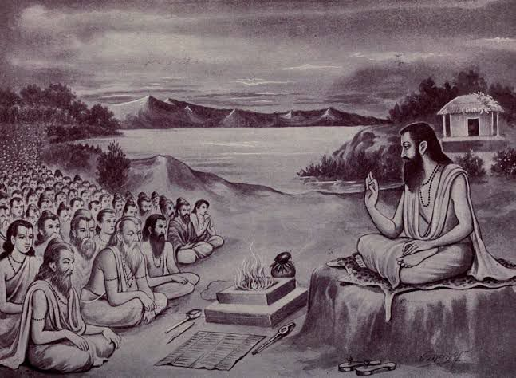
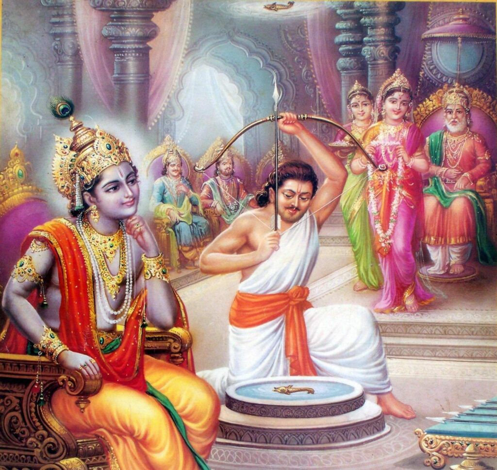
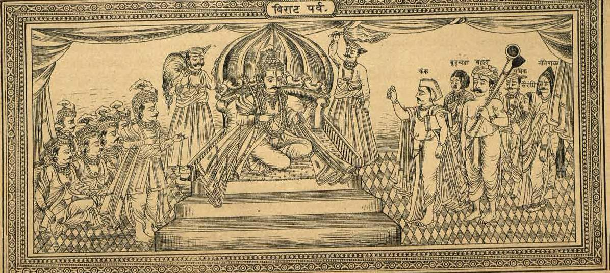
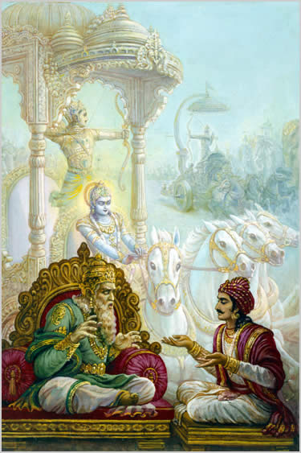
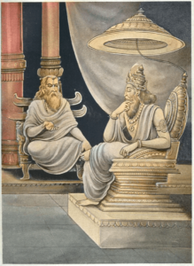
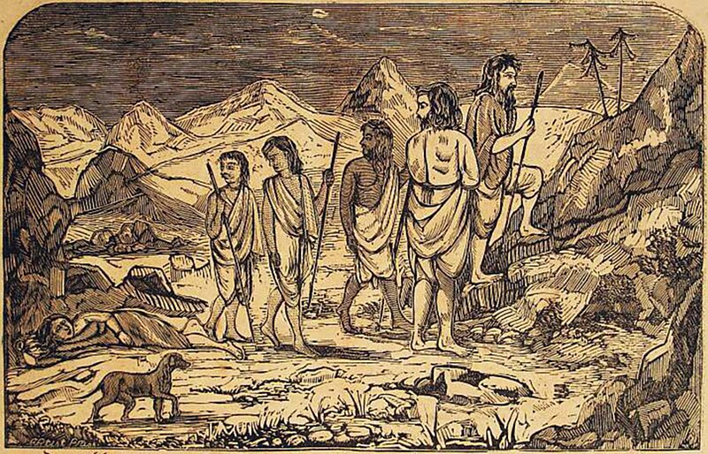

"THE MAHABHARATA"
of
Krishna-Dwaipayana Vyasa
→Book 1: Adi Parva
→Book 2: Sabha Parva
→Book 3: Vana Parva
→Book 4: Virata Parva
→Book 5: Udyoga Parva
→Book 6: Bhishma Parva
→Book 7: Drona Parva
→Book 8: Karna Parva
→Book 9: Shalya Parva
→Book 10: Sauptika Parva
→Book 11: Stri Parva
→Book 12: Santi Parva ( part 1, part 2)
→Book 13: Anusasana Parva
→Book 14: Aswamedha Parva
→Book 15: Asramavasika Parva
→Book 16: Mausala Parva
→Book 17: Mahaprasthanika Parva
→Book 18: Svargarohanika Parva
The Mahabharata/Book 1: Adi Parva
Begins...
The Adi Parva consists of 19 sub parvas, or sub books. Each upa parva or sub-parva is also called a parva and is divided further into chapters. There are almost 236 chapters in the Adi Parva. The following are the details of the sub-parvas of the Adi Parva:
1.Anukramanika Parva
In this Parva, the Mahabharata is depicted to be recited by Sauti, also known as Ugrashravas. Sauti is known popularly to recite many of the Hindu epics, like Mahabharata, Bhagvata Puranas, Padma Purana, and the Harivamsa. In general, he recites these tales and scriptures to sages gathered in the Naimisha Forest. In this Parva, sages gather in a forest and meet Sauti and express their keen interest in hearing the story of the Mahabharata. Sauti also stresses upon the significance of the Mahabharata and how it contains all the knowledge of the worlds and the Gods, and how it can shape one’s character as a virtuous human being.
2. Sangraha Parva
The Sangraha Parva contains the well-structured outline of the indices and contents of all the 18 books of the Mahabharata.
3. Paushya Parva
The Paushya Parva contains the stories of the popular sages Utanka, Paushya, Janamejaya, Aruni and Dhaumaya.
4. Pauloma Parva
This parva has accounts of the stories of Pauloma and Chyavana, and the story of the lives of the Bhargava race and Ruru.
5. Astika Parva

The Astika Parva contains the story of the birth of Astika, and also Mahabharata’s take on how the world was created after churning of the oceans. This Parva contains theories on the advent of dharma and ahimsa, with respect to snakes and Janamejya.
6. Advinasavatarana Parva
This is the first sub-parva where the Pandava and Kaurava dynasties are mentioned. It contains the entire history of the Pandava and Kuru princes, and also the epic stories of Karna, Satyavati, Vasudeva and Animandavya. This parva thus also depicts the disorder present on the Earth, and the requests to Lord Brahma to reinstate order and peace to all the life forms. This Parva appealed the lords to save the Earth from the ongoing chaos.7. Sambhava Parva

This parva is one of the longest in the Adi Parva. This contains detailed accounts of many stories of life forms on Earth and also stories of the Gods. This Parva has the epic tale of the romance between Dushyanta and Shakuntala, how they met, their marriage and the birth of their son, Bharata. Dushyanta had initially refused to recognize the son, and denies the marriage, but then later he realizes his love, and apologizes to her. Their son, Bharata even becomes prince. Besides this, it contains the stories of the Paurava race, Devyani, Yadu and Puru. Kunti’s swayamvara and the marriages of Madri and Vidura are a part of the Sambhava Parva. Further, this story contains the story of retreat of the Pandava brothers into the forest after their persecution by King Dhritarashtra.
8. Jatugriha-daha Parva

This parva too is one of the longest upa parvas of the Adi Parva. It has accounts of Kanika’s counsel to Dhritarashtra on running the Kingdom. Kanika was a shrewd and cunning minister and gave all sorts of ill advice to Dhritarashtra on governance, administration and war. He used to advise him that a King should ignore his own weaknesses and find out the weaknesses of other people and use it for his own advantage. Upon his advice, Dhritarashtra even builds a home with inflammable material for the Pandavas in the forest, as a friendly gesture, but had planned to set it on fire in the darkest nights. This plan was highly criticized and ridiculed by the sage Vidura, but still Dhritarashtra went ahead with the plan, but the Pandavas escaped the hut successfully with the help of the pre information given by Vidura, who was a good friend of the Pandavas. Dhritarashtra, however was convinced that the Pandavas were burnt to death.Duryodhana entrusted Purochana with the responsibility of building a house of lac at Varanavata before the Pandavas’ arrival. When Pandavas set out for that city, Vidura warned Dharmaraja in a suggestive manner, which the latter understood. Pandavas arrived in Varanavata along with Kunti. Khanaka,the messenger sent by Vidura met Yudhishthira and revealed to him that on the fourteenth day of that dark fortnight,Purochana at the command of Duryodhana, would set fire to the door of their house. In order to save them from the impending danger, Khanika dug a subterranean passage under the pretext of clearing the leftovers and covered its opening skilfully. Hence no one knew about it. On one night Kunti fed a large number of Brahmins on the occasion of alms-giving. Tempted by fate, a Nishada woman came along with her five sons to that feast. And intoxicated with wine and deprived of consciousness, they lay down there to sleep. Then Bhima set fire to the place where Purochana was sleeping. The Pandavas escaped along with Kunti through the tunnel. The people of Varanavata thought that the Pandavas were burnt to death. On hearing this news, Dhritarashtra was grief stricken and wept.Vidura, who knew what had happened, feigned sorrow. The Pandavas, on their part, crossed the Ganga, but could not walk further. On the advice of Dharmaraja, Bhima started walking carrying Kunti and his brothers on his shoulders. As Kunti became thirsty, he lay them down under the shade of a papal tree and went to fetch water. By the time he returned having quenched his thirst and bathed,soaking his upper garments with water for them, they were asleep exhausted as they were.
9. Hidimba Vadha Parva
After escaping the fire, the Pandava brothers wandered around in the forests. This Parva has some tales after their escape, however, the major highlight in this Parva was the love story of Bhima and Hidimbi, after he killed her demon brother Hidimba. Hidimba was demon who used to forcefully steal potions of people’s food. After Bhima heard about the problems he was creating, he fought with him and killed. He then fell in love with her sister, Hidimbi and married her. They even have a son named Ghatotkacha.
Colloquy of Hidimba and Bhima. Fight between Hidimba and Bhima. Killing of Hidimba. Birth of Ghatotkacha. Pandavas entered in Ekachakra city and meeting with Vyasa.

भारतं पञ्चमो वेदः सुपुत्रः सप्तमो रसः ।
दाता पञ्चदशं रत्नं जामातो दशमो ग्रहः ॥
10. Vaka Vadha Parva

This Parva is based on the life of the Pandava brothers in Ektachakra, The highlight in this Parva is again Bhima slaying one of the demons, Vaka. Vaka was another demon who was terrorizing the lives of the people of the village, Ektachakra. In this Parva, the origin of Draupadi is also shown, when she is born in holy fire. In this Parva, the rumor of Pandavas’ being alive started spreading.
There are 8 chapters with 220 verses in this section. The Pandavas along with their mother went to the town Ekachakra, and lived there incognito in the house of a Brahmin, getting along by begging alms. There lived a cannibal giant Baka in the thick woods on the outskirts of the town. As he protected that land, in return, every householder, when his turn came, supplied him with a cartful of food, two bullocks, and one member of the family towards his meals.On that day it was the turn of that Brahmin in whose house the Pandavas stayed. Hence the Brahmin couple and their son and daughter started wailing uncontrollably. On learning the matter, Kunti consulted with Bhima, and having decided to send him to Baka, consoled the Brahmin. Bhima went to Baka with the food, fought with him and killed him. The citizens of Ekachakra felt delighted
11. Chaitraratha Parva

This is the 11th sub-parva of the 19 sub parvas of Adi Parva. It contains the journey of the Pandavas from Ektachakra to Panchala. It also contains the story of the end of the Bhrigu race, along with the stories of the lives of Tapati, Vishvamitra and Vashishtha.
This section contains19 chapters and 674 verses. After killing Bakasura,the Pandavas continued to stay at the Brahmin’s house studying the Vedas.Within a few days a Brahmana of rigid vows came to the abode of their host.He gave information about king Drupada of Panchala. He said that he would go to witness the self-choice of Draupadi,the daughter of Drupada that was going to take place. On hearing that Kunti became curious and prepared to leave for the beautiful city of Drupada along with her sons. Vyasa came there to meet them.He revealed to them the previous birth of Draupadi. He predicted that Panchali would choose five husbands, and blessed them to be happy having wedded her. After the departure of Vyasa, the Pandavas went to the country of Panchala led by their mother. On the way Arjuna fought with the Gandharva king Angaraparna and defeated him. Afterwards Angaparna made friendship with Arjuna. He narrated the story of Tapati and Samvarana, and also the greatness of Viswamitra and Vasishtha. On his advice, the Pandavas made Dhaumya their priest
12. Swayamvara Parva

This Parva starts with the arrival of the Pandavas in Panchala. As the name suggests, this Parva primarily highlights the Swayamvara of Draupadi. The Pandava brothers had come to the swayamvara in disguise. Lord Krishna recognizes them in disguise. The Pandava brothers were successful in impressing Draupadi.
Pandavas arrive in Panchala. Draupadi's swayamvara, Pandavas arrive in disguise, Arjuna and Bhima excel, win Draupadi's heart and hand, her marriage to Pandava brothers. Krishna introduced, recognizes the individuals in disguise are Pandava brothers. Pandavas, attired as Brahmins, went to the hall where the swayamvara of Draupadi was to take place. Dhrishtadyumna announced in the court that Draupadi would become the wife of that person who would pierce the target through the orifice of the machine with five arrows. Many princes tried but in vain to shoot the mark.Arjuna, however, shot the mark without any difficulty, and took the hand of Draupadi. Then he took her to Kunti and announced that they had brought alms. Kunti, who was inside the house at that time, said that all the brothers should share it equally.
13. Vaivahika Parva
The name of this Parva means the book of Marriage, and contains the accounts of Draupadi’s marriage with the Pandava brothers.
14. Viduragamana Parva
This Parva contains the accounts of the efforts made by Vidura to reconcile the Pandava brothers with the evil Kaurava brothers. Even Bhishma, Karna, and Drona supported Vidura’s advice to build bridges with the Pandava brothers.
General information. Vidura was a superhuman being, very famous in the story of Mahābhārata, as a brother of Dhṛtarāṣṭra, as a man of colossal intelligence who had been closely watching the goings and comings of the Kauravas and the Pāṇḍavas, as the adviser of Dhṛtarāṣṭra, and as a man of immense learning and wisdom. Incarnation af Dharmadeva. There is a story in Mahā-Bhārata, Ādi Parva, Chapter 107, which describes Vidura as born from a portion of Dharmadeva. The story is given below. Long ago there was a hermit called Māṇḍavya in India. As he was standing in deep meditation near his hermitage, the men of the King chased some thieves and came to the place where the hermit stood. The robbers placed the stolen property near the hermit and ran away. The king’s men caught the hermit, and the thieves. The King ordered them to be placed on a trident. The thieves died on the trident. But Māṇḍavya was not dead. The King sawed the trident and got Māṇḍavya down. The hermit went to Dharmadeva and asked him what his blame was for suffering the punishment of the trident on him. Dharmadeva replied that the punishment was inflicted for a cruel deed he had done in his childhood. He had caught some flies and made a bunch of them by piercing them with the rib of a coconut-palm leaf. But Māṇḍavya argued that Dharmadeva was not right in punishing him because the Śāstras and rules of righteousness said that mistakes committed by boys below the age of twelve could not be considered to be sins. Further he cursed Dharmadeva that he would take birth on the earth from the womb of a Śūdrā. Accordingly Dharmadeva took birth from the womb of the servant of Ambikā and Ambālikā. Birth. Vidura was born as the brother of Dhṛtarāṣṭra and Pāṇḍu. (For detailed story see under Dhṛtarāṣṭra I, para 2). Up to marriage. Dhṛtarāṣṭra, Pāṇḍu and Vidura spent their younger days in Hastināpura as inseparable brothers. Their teacher was Bhīṣma. Vidura learned the Vedas, Śāstras, Purāṇas, Itihāsas etc. also, along with the education given to a prince such as archery, club-fight, sword-fight, wrestling, controlling elephants etc. He understood that to be righteous was far better than fighting. It is stated in Mahābhārata, Ādi Parva, Chapter 108, that Vidura got the sense of righteousness, and education in fighting, at the same time. Childhood ended. As Vidura was born to a Brahmin by a Śūdrā woman he had no right to become King. When he grew up, the duty to find a wife for him fell on Bhīṣma. At that time a damsel born to a Brahmin by a Śūdrā woman was being brought up in the palace of King Devaka. With the permission of Devaka, Bhīṣma brought the girl and gave her in marriage to Vidura. It is stated in Mahābhārata, Ādi Parva, Chapter 114, that sons and daughters were born to the couple. Partiality towards the Pāṇḍavas. Vidura was the most intelligent and wisest man of his time, and he always favoured righteousness. Though he viewed the Kauravas and the Pāṇḍavas with equal favour, in his heart he felt some partiality towards the Pāṇḍavas, because they were virtuous, whereas the Kauravas were becoming more and more wicked. As this partiality arose from his sense of righteousness, nobody could blame Vidura for this. His aim was the prosperity of the Lunar dynasty of Kings. Many ill omens were seen at the time of the birth of Duryodhana. Vidura understood that if that infant grew up he would be a comet to the Lunar dynasty. It is mentioned in Mahābhārata, Ādi Parva, Chapter 115, that Vidura advised Dhṛtarāṣṭra that it would be better for him to throw away that infant. The death of Pāṇḍu drew Vidura closer to the Pāṇḍavas. Vidura took the lead in performing the funeral rites and other ceremonies which followed. The Pāṇḍavas. were very sad and miserable at the death of their father. It was at this time that Duryodhana poisoned Bhīmasena, tied him with a rope and threw him into the river Ganges. Bhīmasena was carried to the world of nāgas (serpents). Kuntī felt grieved at the loss of her son Bhīma, but Vidura consoled her. It was due to the wisdom of Vidura that the Pāṇḍavas escaped from the disaster in the lac-house. As soon as Duryodhana had completed the lac-house, Vidura understood the deception lying hidden under it. and he informed the Pāṇḍavas of everything about it. Moreover he sent a man named Khanaka and made an underground passage from the lac-house. When the lac-house was burnt down, the Pāṇḍavas escaped by the under-ground passage and reached the banks of the Ganges. Vidura had sent a ferryman secretly to take them to the other side of the Ganges. When Bhīṣma got the news that the Pāṇḍavas had been burnt to death in the lac-house he became very sad. It is mentioned in Mahābhārata, Ādi Parva, Chapter 149, that Vidura informed Bhīṣma secretly that the Pāṇḍavas were not dead. After this event the Pāṇḍavas come into the scene only at the Svayaṃvara (marriage) of Pāñcālī. Bhīṣma and Droṇa proposed that the Pāṇḍavas should be brought back and be given half of the kingdom. Vidura, by his arugments convinced Dhṛtarāṣṭra that the proposal of Bhīṣma and Droṇa was correct. Dhṛtarāṣṭra asked Vidura to bring the Pāṇḍavas back. Vidura went to the city of Drupada and brought the Pāṇḍavas back and consoled their mother Kuntī. After this Yudhiṣṭhira performed Rājasūya (sacrifice of royal consecration). Vidura took part in it and took the charge of financial part of the sacrifice. It was after this that Duryodhana challenged Yudhiṣṭhira for a game of dice. Vidura saw beforehand that this move on the part of Duryodhana was dangerous. So he talked forcibly against this, and gave warning to all concerned. As Duryodhana did not agree with Vidura, he was scolded. But Duryodhana was firm and the game was conducted. Pāñcālī was harassed by means of stripping and the Pāṇḍavas went to the forest. It is stated in Mahābhārata, Vana Parva, Chapter 3, that Vidura had been witnessing all these scenes with wet eyes. Separated from the Pāṇḍavas. When the Pāṇḍavas were driven to the forest, Dhṛtarāṣṭra felt sorry. He became more afraid of the people than he was sorry for the Pāṇḍavas. He understood that his subjects would unite and rise against his sons. He called Vidura and asked him for a remedy. Vidura who was full of impatience, made a speech against the wickedness of the sons of Dhṛtarāṣṭra and advised him to forsake his own sons and to bring the Pāṇḍavas back and give them the kingdom. Dhṛtarāṣṭra did not like this approach. He said that Vidura was partial to the Pāṇḍavas and asked him to go away from the palace. Vidura became grieved at this. He followed the Pāṇḍavas, and walking a long distance, reached the forest Kāmyaka and met the Pāṇḍavas. When Vidura had gone Dhṛtarāṣṭra felt miserable. He sent for Vidura and when he returned Dhṛtarāṣṭra begged for pardon. Vidura again became the adviser of Dhṛtarāṣṭra. (Mahābhārata Vana Parva, Chapter 6). Adviser of Dhṛtarāṣṭra. The advice of Vidura is famous in Mahābhārata. The main duty of Vidura was to console Dhṛtarāṣṭra by speaking about righteousness when he became troubled in mind because of the constant quarrels between his sons and the Pāṇḍavas. Vidura fulfilled his duty well. Duryodhana was firm on the point that not a dot of land would be given to the Pāṇḍavas. Śrī Kṛṣṇa came to Hastināpura as mediator. Duryodhana showed disrespect to him. Vidura said in strong words that it was wrong on the part of Duryodhana to have done so and compelled Dhṛtarāṣṭra to show due respect and hospitality to Śrī Kṛṣṇa. Accordingly Dhṛtarāṣṭra welcomed Śrī Kṛṣṇa and showed respect and hospitality. Knowing this, Duryodhana and his brothers tried to make Śrī Kṛṣṇa a captive. Vidura harshly scolded them for this attempt. Seeing all these impudent actions on the part of his sons, Dhṛtarāṣṭra became distressed. Vidura consoled him by good exhortations. He told Dhṛtarāṣṭra about the transience of life and the importance of the soul. When the battle was fiercely going on in the battleground of Kurukṣetra, Vidura re ained with Dhrtarāṣṭra consoling him and giving him good advice. The death of Bhīṣma was an unbearable grief to Vidura. He took part in the funeral of Bhīṣma. He himself placed the body on the funeral pyre. (Mahābhārata Anuśāsana Parva, Chapter 168, Stanza 11). Pilgrimage. When Vidura failed in his attempt to ward off a pitched battle between the Kauravas and the Pāṇḍavas he felt extremely miserable. Without taking part in the battle, he started on a pilgrimage. Getting the news at Prabhāsaksetra about the end of the battle, he went to the basin of river Yamunā. On the way he heard the news of the passing away of Śrī Kṛṣṇa, from Uddhava. Before death Śrī Kṛṣṇa had revealed that Vidura had heard Uddhavagītā from Maitreya. This book which is in the form of a conversation between Vidura and Maitreya contains the talk between Kapila and Devahūti. Description of the line of Manus, sacrifice of Dakṣa, story of Dhruva, story of Pṛthu, story of Purañjana etc. were the subjects of the talk. (Bhāgavata, 3—4). End. The Bhārata-battle came to an end. The Kauravas were exterminated. Efforts were begun to establish law and order. In all these efforts Vidura was a help to the Pāṇḍavas. Still he spent most of his time with the old Dhṛtarāṣṭra. Yudhiṣṭhira came to Dhṛtarāṣṭra and both embraced each other. Seeing this Vidura cried aloud. Vidura advised Yudhiṣṭhira how to carry on the administration of the new government. After this he decided to go to the forest to spend his last days. Dhṛtarāṣṭra, Gāndhārī, Kuntī, Vidura and Śakuni went to the forest. The Pāṇḍavas tried in vain to prevent them from going. When Dhṛtarāṣṭra, Gāndhārī, Kuntī, Vidura, Sañjaya and others started for the forest, even Bhīmasena cried aloud. Pāṇḍavas and the people of the city went along with them up to the river Ganges. On the bank of the Ganges near the hermitage of Śatayūpa, a hermitage was erected and Vidura and the others lived there. They lived there for nearly six years. The Pāṇḍavas became unable to bear the separation from their elders. Once Dharmaputra dreamt about his mother. Next day the Pāṇḍavas went to the banks of the Ganges. Pāñcālī, Subhadrā, Uttarā and many people of the city followed them. They went to the Śatayūpa-hermitage and saw Dhṛtarāṣṭra and the others. But the great Vidura was not there. When asked about it he got the reply that having become abstemious and having no more desires he was wandering about. Yudhiṣṭhira was greatly troubled. Next day at dawn when Yudhiṣṭhira went to bathe in the Ganges, on the way he saw Vidura sitting in contemplation with a stone in his mouth. Yudhiṣṭhira stood with joined palms before the lean and weak form of that sage and said "Look, Dharmaputra bows before you." He repeated this several times. But there was no change in Vidura. Yudhiṣṭhira’s disappointment did not last long. For, in a short while Dharmaputra saw that a divine radiance emanated from the body of Vidura and passed on to his body and that the body of Vidura fell lifeless on the ground. This union took place because both Vidura and Yudhiṣṭhira were portions of Dharmadeva. After this Dharmaputra made preparations to burn the body of Vidura. Then an ethereal voice said "Vidura is abstemious. His body should not be burned." Dharmaputra went to the hermitage and informed all, about the death of Vidura. (Mahābhārata Āśramavāsika Parva, Chapters 26 to 28). Mention is made in Mahābhārata, Svargārohaṇa Parva, Chapter 5, Stanza 22, that Vidura entered Svarga (heaven) and stays there in the form of Dharmadeva.
15. Rajya-labha Parva
This Parva narrates the epic return of the Pandavas to the kingdom of Hastinapura with the blessing of Lord Krishna himself. The people oof the city were delighted with their return and they worked on building the city again.
16. Arjuna-vanavasa parva
Arjuna leaves for voluntary exile in the forests after violating dharma. He even marries an apsara Ulupi, after rescuing her from a curse. This Parva is based on the character development and the special powers of Arjuna. It also highlights on the development of the friendship between Krishna and Arjuna. He even goes to Dwarka to live with Krishna.
"Vaisampayana said, 'The Pandavas, having established such a rule, continued to reside there. By the prowess of their arms they brought many kings under their sway. And Krishna became obedient unto all the five sons of Pritha, those lions among men, of immeasurable energy. Like the river Saraswati decked with elephants, which again take pleasure in that stream, Draupadi took great delight in her five heroic husbands and they too took delight in her. And in consequence of the illustrious Pandavas being exceedingly virtuous in their practice, the whole race of Kurus, free from sin, and happy, grew in prosperity. "After some time, O king, it so happened that certain robbers lifted the cattle of a Brahmana, and while they were carrying away the booty, the Brahmana, p. 417 deprived of his senses by anger, repaired to Khandavaprastha, and began to reprove the Pandavas in accents of woe. The Brahmana said, 'Ye Pandavas, from this your dominion, my kine are even now being taken away by force by despicable and wicked wretches! Pursue ye the thieves. Alas, the sacrificial butter of a peaceful Brahmana is being taken away by crows! Alas, the wretched jackal invadeth the empty cave of a lion! A king that taketh the sixth part of the produce of the land without protecting the subject, hath been called by the wise to be the most sinful person in the whole world. The wealth of a Brahmana is being taken away by robbers! Virtue itself is sustaining a diminution! Take me up by the hand, ye Pandavas for I am plunged in grief!" "Vaisampayana continued, 'Dhananjaya, the son of Kunti, heard those accents of the Brahmana weeping in bitter grief. As soon as he heard those accents, he loudly assured the Brahmana, saying, 'No fear!' But it so happened that the chamber where the illustrious Pandavas had their weapons was then occupied by Yudhishthira the just with Krishna. Arjuna, therefore, was incapable of entering it or, going alone with the Brahmana, though repeatedly urged (to do either) by the weeping accents of the Brahmana. Summoned by the Brahmana, Arjuna reflected, with a sorrowful heart, Alas, this innocent Brahmana's wealth is being robbed! I should certainly dry up his tears. He hath come to our gate, and is weeping even now. If I do not protect him, the king will be touched with sin in consequence of my indifference; our own irreligiousness will be cited throughout the kingdom, and we shall incur a great sin. If, disregarding the king, I enter the chamber, without doubt I shall be behaving untruthfully towards the monarch without a foe. By entering the chamber, again, I incur the penalty of an exile in the woods. But I must overlook everything. I care not if I have to incur sin by disregarding the king. I care not if I have to go to the woods and die there. Virtue is superior to the body and lasteth after the body hath perished!' Dhananjaya, arriving at this resolution, entered the chamber and talked with Yudhishthira. Coming out with the bow, he cheerfully told the Brahmana, 'Proceed, O Brahmana, with haste, so that those wretched robbers may not go much ahead of us. I shall accompany thee and restore unto thee thy wealth that hath fallen into the hands of the thieves.' Then Dhananjaya, capable of using both his arms with equal skill, armed with the bow and cased in mail and riding in his war-chariot decked with a standard, pursued the thieves, and piercing them with his arrows, compelled them to give up the booty. Benefiting the Brahmana thus by making over to him his kine, and winning great renown, the hero returned to the capital. Bowing unto all the elders, and congratulated by everybody, Partha at last approached Yudhishthira, and addressing him, said, 'Give me leave, O lord, to observe the vow I took. In beholding thee sitting with Draupadi, I have violated the rule established by ourselves. I shall therefore go into the woods, for this is even our understanding.' Then Yudhishthira, suddenly hearing those painful words, became afflicted with grief, and said in an agitated voice, 'Why!' A little while after, king Yudhishthira in grief said unto his brother Dhananjaya of curly hair who never departed from his vows, these words, 'O sinless one, if I am an authority worthy of regard, listen to what I say. O hero, full well do I know the reason why thou hadst entered my chamber and didst what thou regardest to be an act disagreeable to me. But there is no displeasure in my mind. The younger brother may, without fault, enter the chamber where the elder brother sitteth with his wife. It is only the elder brother that acts against the rules of propriety by entering the room where the younger brother sitteth with his wife. Therefore, O thou of mighty arms, desist from thy purpose. Do what I say. Thy virtue hath sustained no diminution. Thou hast not disregarded me.' "Arjuna, hearing this, replied, 'I have heard, even from thee, that quibbling is not permitted in the discharge of duty. I cannot waver from truth. Truth is my weapon.' "Vaisampayana continued, 'Obtaining then the king's permission, Arjuna prepared himself for a forest-life; and he went to the forest to live there for twelve years.'"
17. Subhadara-harana Parva

This Parva continues the accounts of the relationship between Krishna and Arjuna. It focuses on Arjuna’s love affair with Subhadra, Krishna’s sister. Arjuna was very attracted to her. The Vrishni army of Krishna was upset with this act of Arjuna, but still forgave him later.
"Vaisampayana said, 'O best of monarchs, within a few days after this, there commenced on the Raivataka mountain, a grand festival of the Vrishnis and the Andhakas. At the mountain-festival of the Bhojas, the Vrishnis and the Andhakas, the heroes of those tribes began to give away much wealth unto Brahmanas by thousands. The region around that hill, O king was adorned with many a mansion decked with gems and many an artificial tree of gaudy hue. The musicians struck up in concert and the dancers began to dance and the vocalists to sing. And the youth of the Vrishni race, endued with great energy, adorned with every ornament, and riding in their gold-decked cars, looked extremely handsome. The citizens, some on foot and some in excellent cars, with their wives and followers were there by hundreds and thousands. And there was the lord Haladhara (Valarama), roving at will, hilarious with drink, accompanied by (his wife) Revati, and followed by many musicians and vocalists. There came Ugrasena also, the powerful king of he Vrishni race, accompanied by his thousand wives and followed by sweet singers. And Raukmineya and Shamva also, ever furious in battle, roved there, excited with drink and adorned with floral wreaths of great beauty and with costly attires, and disported themselves like a pair of celestials. And Akrura and Sarana and Gada, and Vabhru, and Nisatha, and Charudeshna, and Prithu, Viprithu, and Satyaka, and Satyaki, and Bhangakara, and Maharava, and Hardikya, and Uddhava, and many others whose names are not given, accompanied by their wives that followed by bands of singers, adorned that mountain-festival. When that delightful festival of immense grandeur commenced, Vasudeva and Partha went about, together, beholding everything around. While wandering there, they saw the handsome daughter of Vasudeva, Bhadra by name, decked with every ornament, in the midst of her maids. As soon as Arjuna beheld her he was possessed by the god of desire. Then, O Bharata, that tiger among men, Krishna, observing Partha contemplate her with absorbed attention, said with a smile, 'How is this? Can the heart of one that rangeth the woods be agitated by the god of desire? This is my sister, O Partha, and the uterine sister of Sarana. Blest be thou, her name is Bhadra and she is the favourite daughter of my father. Tell me if thy heart is fixed upon her, for I shall then speak to my father myself.' "Arjuna answered, 'She is Vasudeva's daughter and Vasudeva's (Krishna) sister; endued with so much beauty, whom can she not fascinate? If this thy sister, this maid of the Vrishni race, becometh my wife, truly may I win prosperity in everything. Tell me, O Janardana, by what means I may obtain her. To get her I will achieve anything that is achievable by man.' "Vasudeva answered, 'O bull amongst men, self-choice hath been ordained for the marriage of Kshatriyas. But that is doubtful (in its consequences), O Partha, as we do not know this girl's temper and disposition. In the case of Kshatriyas that are brave, a forcible abduction for purposes of marriage is applauded, as the learned have said. Therefore O Arjuna, carry away this my beautiful sister by force, for who knows what she may do at a self-choice.' Then Krishna and Arjuna, having thus settled as to what should be done sent some speedy messengers unto Yudhishthira at Indraprastha, informing him of everything. The strong-armed Yudhishthira, as soon as he heard it, gave his assent to it.'"
18. Harana-harika Parva
With the permission of Krishna himself, Arjuna kidnapped Subhadra and brought her to Indraprastha. They got married and gave birth to a son, Abhimanyu. This parva also has details of accounts of the five sons born to Draupadi namely, Prativindhya, Srutasoma, Satanika, Srutakirti and Srutasena.
19. Khandava-daha Parva

This Parva contains the stories of Agni, Varuna and Indra. It also has the fight of Krishna and Arjuna with the celestial powers, It thus showed their expertise and skills as a warrior."Vaisampayana said, 'Then those foremost of car-warriors (Krishna and Arjuna), riding in their cars and placing themselves on opposite sides of that forest, began a great slaughter, on all sides, of the creatures dwelling in Khandava. At whatever point any of the creatures residing in Khandava could be seen attempting to escape, thither rushed those mighty heroes (to prevent its flight). Indeed those two excellent cars seemed to be but one, and the two warriors also therein but one individual. And while the forest was burning, hundreds and thousands of living creatures, uttering frightful yells, began to run about in all directions. Some had particular limbs burnt, some were scorched with excessive heat, and some came out, and some ran about from fear. And some clasping their children and some their parents and brothers, died calmly without, from excess of affection, being able to abandon these that were dear to them. And many there were who biting their nether lips rose upwards and soon fell whirling into the blazing element below. And some were seen to roll on the ground with wings, eyes, and feet scorched and burnt. These creatures were all seen to perish there almost soon enough. The tanks and ponds within that forest, heated by the fire around, began to boil; the fishes and the tortoises in them were all seen to perish. During that great slaughter of living creatures in that forest, the burning bodies of various animals looked as if fire itself had assumed many forms. The birds that took wings to escape from that conflagration were pierced by Arjuna with his shafts, and cut into pieces, they fell down into the burning element below. Pierced all over with Arjuna's shafts, the birds dropped down into the burning forest, uttering loud cries. The denizens of the forest, struck with those shafts, began to roar and yell. The clamour they raised was like unto the frightful uproar heard during the churning of the ocean (in days of yore). The mighty flames of the blazing fire reaching the firmament, caused great anxiety to the celestials themselves. Then all the illustrious dwellers in heaven went in a body unto him of a hundred sacrifices and thousand eyes, viz., their chief, that grinder of Asuras. Approaching Indra, the celestial said, 'Why, O lord of immortals, doth Agni burn these creatures below? Hath the time come for the destruction of the world?' "Vaisampayana continued, 'Hearing these words of the gods, and himself beholding what Agni was doing, the slayer of Vritra set out for the protection of the forest of Khandava. And Vasava, the chief of the celestials soon covering the sky with masses of clouds of every kind began to shower upon the burning forest. Those masses of clouds by hundreds and thousands, commanded by Indra began to pour rain upon Khandava in showers thick as the flag-staffs of battle-cars. But the showers were all dried up in the sky itself by the heat of the fire and could not, therefore, reach the fire at all! Then the slayer of Namuchi, getting angry with Agni, collected huge masses of clouds and caused them to yield a heavy downpour. Then with the flames contending with those heavy showers, and with masses of clouds overhead, that forest, filled with smoke and flashes of lightning, became terrible to behold.'"
Sabha parva(The Assembly Hall)
The second of the eighteen books of Mahabharata, the Sabha Parva, also known as the “Book of the Assembly Hall”, presents the glorious kingdom of Pandavas. The Parva commences with the description of the palace and assemblies at Indraprastha. There are specifically ten sections (Upa-parvas) in Sabha Parva, comprising around eighty one chapters and ten books… 1.Sabhakriya parva 2.Lokapalasabhakhyana parva 3.Rajasuyarambha parva 4.Jarasandhavadha parva 5.Digvijaya parva 6.Rajasuya parva 7.Arghabhiharana parva 8.Sisupalavadha parva 9.Dyuta parva 10.Anudyuta parva The Sabha Parva defines the principles of crime against humanity, where any unharmed human/ individual being must also stand up for any evil or injustice inflicted upon the society and people at large.Sabhakriya parva
This parva consists of 4 chapters and 141 verses.
Arjuna saved Mayasura from the burning of Khandava Forest. Thus, Maya asked Arjuna for any favour in return that might clear his debt. Arjuna told him to follow whatever Krishna asks him to. Later Krishna asks Maya to build a palace for Yudhishtira on the barren and dying land that Duryodhana had reluctantly given to them as a share in the kingdom. Maya went to the Mainaka Mountains on the north-eastern region of Kailasa Mountains and brought back a club, conch (named Devdatta) and building material made of jewels. He presented the club to Bhima, the conch to Arjuna and builts Khandava Prastha palace with jewels for Yudhishthira, with the palatial halls and assemblies according to the needs and tastes of the Pandavas and Krishna himself. Kunti and Pandavas enter the palace after proper ceremonies and rituals.
After the majestic Khandava prastha palace was built, Krishna stayed there with the Pandavas for a while. He then sought Kunti’s permission and left for Dwarka to see his father with Satyaki and his charioteer Daruka.
Choice of land for the assembly-hall. Departure of Srikrishna to Dwarka. The construction of the assembly-hall. Entry to the assembly-hall. Having saluted the Supreme Deity (Narayana) and the highest of all male beings (Nara) and also the Goddess of Learning (Sarasvati), let us cry "success". Vaishampayana said: Thereupon again and again worshipping Partha before Vasudeva, Maya spoke to him with joined hands and in sweet words. Maya said: O son of Kunti, I have been saved by you from this angry Krishna and this Pavaka fire who was desirous of consuming me. Tell me what I shall do for you. Arjuna said: O great Asura, every thing has been done by you. Be blessed. Go (wherever you like). Be always well-disposed towards me as we are well-disposed towards you. Maya said: O lord, O best of men, what you have said fully deserves you. O descendant of Bharata, I gladly desire to do something (for you). I am a great artist, (in fact I am) the Vishvakarma of the Danavas. Therefore, O son of Pandu, I desire to do something for you. Arjuna said: O sinless one, you consider that your life has been saved by me from instant death. Such being the case, I cannot make you do anything for me. O Danava, I am not willing to frustrate your intention also. Do something for Krishna; that will be sufficient requital for my services to you. Vaishampayana said: O best of the Bharata race, thus requested by Maya, Vasudeva (Krishna) reflected for a moment thus, "what should be done for me?" Thereupon the lord of the universe the creator of things, Krishna, having reflected (for a moment), thus commanded Maya. Krishna said: O best of artists, O son of Diti, if you desire to do some good to me, build a large assembly-hall for Dharmaraja (Yudhishthira), a hall to your own liking. Build such an assembly-hall that persons belonging to this world may not be able to build another like it, though he sits within it and observed it carefully. O Maya, build an assembly-hall in which we may see all the celestials, Asura, and human designs of architecture. Vaishampayana said: Having heard these word, Maya became exceedingly glad. He drew up a design of an auspicious palace for the Pandavas. Then Krishna and Partha, having told every things to Dharmaraja Yudhishthira, introduced Maya to him. O descendant of Bharata, Yudhishthira received him with all the honour he deserved; and Maya accepted them showing all respects (to Yudhishthira). O king, O descendant of Bharata, then that son of Diti (Maya) narrated before the sons of Pandu the old history of (Vrishaparva). After resting for some time, that Vishvakarma (Maya) commenced after much reflection to build an assembly-hall for the illustrious Pandavas. According to the wishes of the illustrious sons of Pritha (the Pandavas) and of Krishna, the greatly energetic (Maya) performed on an auspicious day initiatory rites of propitiation. That greatly powerful (Danava) gratified thousands of excellent Brahmanas with Payasa (sweetened milk and rice) and with presents of various kinds of wealth. He then measured out a piece of land five thousand cubits square; it was well suited to the exigencies of every season, it was celestials-like and it was delightful. Vaishampayana said: Janardana, (Krishna) who deserved the worship of all, lived for sometime at Khandavaprastha, worshipped with love and affection by the sons of Pritha. The receiver of the worship of all the world, the possessor of large eyes, Keshava (Krishna) being desirous of seeing his father, made up his mind to go to (Dwarka). He saluted both Dharmaraja (Yudhishthira) and Pritha and bowed down to his aunt with his head touching her feet. She smelt his head and embraced him. The greatly illustrious Hrishikesha Krishna, coming with affection and with tears in his eyes to the sweet-speeched and amiable Subhadra, his sister, spoke to her words of best import and truth, words that were terse, proper and full of good. She too saluted him in return and worshipped him with bowing down her head. She then told him all that she desired to be told to her relatives. Bidding her farewell and uttering blessings on that beautiful lady, the hero of the Vrishni race Janardana (Krishna) then saw Krishna (Draupadi) and Dhananjaya. That best of men (Krishna) then duly worshipped Dhananjaya; then consoling Draupadi he obtained her leave. The learned and heroic (Krishna) then went with Partha (Arjuna) to his (other) cousins (the Pandavas). Surrounded by the five brothers Krishna looked like Shakra (Indra) surrounded by the celestials. Being desirous of performing the due rites of departure, the Garuda-bannered hero (Krishna), purified himself by a bath and adorned himself with ornaments. The best of the Yadu race, (Krishna) then worshipped the celestials and the Brahmanas with garlands, with mantras, with various kinds of excellent perfumes and with bowing down his head. Having performed all (those) ceremonies, that foremost of all virtuous men, the best of the Yadu race (Krishna), wishing to start, came out to the outer apartments. By presenting vessels of curd, fruits and fried rice, he made the Brahmanas utter blessings on him. Presenting them wealth, he walked round them. Ascending on his golden and Garuda-bannered swift chariot, to which was yoked Shaibya and Sugriva (his two horses) and taking also his mace, discus, sword, his bow Sharanga and other auspicious weapons, the lotus-eyed hero (Krishna) started on an excellent moment of a lunar day in an auspicious constellation. The king of the Kurus, Yudhishthira, ascended the chariot after him (Krishna), and out of love for him he made that best of charioteers (Dwarka) to stand aside, and himself took the reins. The long-armed Arjuna walked round him (Krishna) and he then got on the car and waved a golden-handled Chamara over him. The heroic Bhimasena with the twins (Nakula and Sahadeva), the Ritvikas and the citizens walked behind Krishna. That slayer of hostile heroes, Keshava (Krishna), thus followed by all the brothers, Shone like a preceptor followed by his beloved pupils. After bidding farewell to Partha (Arjuna) Govinda (Krishna) embraced him firmly (with all the ardour of love). He then worshipped Yudhishthira and also Bhimasena and he embraced the twins. Being embraced in return (by the sons of Pritha) and worshipped by the twins (Nakula and Sahadeva). O Descendant of Bharata, that vanquisher of hostile cities, Krishna, bade Yudhishthira farewell and requested him to return, when he had gone about half aYojana. Govinda (Krishna) learned in all the precepts of virtue, then worshipped Dharmaraja (Yudhishthira) and touched his feel. The (Yudhishthira) raised Keshava up and smelt his head. The Pandava Dharamraja Yudhishthira then gave permission to the best of Yadava race, the lotus-eyed Krishna to go be saying "Go". After duly making an appointment (for again coming to Indraprastha) and after preventing the Pandavas with great deal of difficulty from following him the slayer of Madhu (Krishna). Went to his own city with a cheerful heart like Shakra (Indra) towards Amaravati (the celestials city). Out of love for him, they the Pandavas gazed at him so long he was within the sight; and when he went out of sight, their minds followed him, but they were not satiated with seeing Keshava (Krishna). The handsome hero (Krishna) soon disappeared from their view. The sons of Pritha, those best of men with their minds fixed on Govinda (Krishna) desisted (from following him); and they then soon returned to their own city, although they were not (at all) willing (to return). Riding on his car Krishna also soon started for Dwarka. Followed by the hero, Satyaki, the son of Devaki, Sauri (Krishna) with his charioteer Daruka reached Dwarka with the speed of Garuda. The king Dharmaraja of unfading glory and his brothers, surrounded by their friends and relatives, entered the excellent city (Indraprastha). That virtuous king, that best of men (Yudhishthira) then sent away all his friends and relatives, his brothers and sons; he then amused himself with Draupadi. Keshava also, having been welcomed by the Chief Yadus with Ugrasena at their head, entered the excellent city (Dwarka) with joy. Worshipping his old father and his illustrious mother, and saluting Baladeva (his brother) also, the lotus-eyed (hero) took his seat. He embraced Pradyumna, Samba, Nishatha, Charudeshna, Gada, Aniruddha and Bhanu. Receiving leave of the elderly men, Janardana then went to the house of Rukmani (his wife). Vaishampayana said: Then Maya spoke thus to the son of Pritha, Arjuna, the foremost of all victorious warriors, "I shall now go away with your permission, but I shall soon come back. When the Danavas were engaged in a sacrifice on the banks of the Bindu lake, in the north of the Kailasa near the Mainaka mountains I gathered a charming and variegated Bhanda (mass of rough stones) of jewels and gems. I kept it in the house of Vrishaparva. O descendant of Bharata, if it still exists there, I shall come back with it. I shall then build a renowned, delightful and beautiful assembly-hall for the Pandavas, which will be adorned with all gems and jewels. O descendant of Kuru, there is also a club in the Bindu lake. Kept there by the king (of the Danavas) who killed with it all his foes in battle. It is hard and strong and variegated with golden knobs, it is capable of standing great weight. It can kill all foes, and it is equal in strength to one hundred thousand clubs. It is a fit weapon for Bhima as the Gandiva (bow) is yours. (There is also in that lake) a large conch-shell of loud sound, named Devadatta which was produced by Varuna (Ocean). There is no doubt I shall give all these to you." Having said this to Partha, that Asura (Maya) went away in a north-eastern direction. On the north of the Kailasa near the Mainaka mountains. There is a great peak full of many gems and jewels, called Hiranya Shringa. (There is) a charming lake named Bindusara where (once dwelt) king Bhagiratha. He lived there for a long period with the desire of seeing the Ganges which is called Bhagirathi (after him). Here the illustrious lord of all creatures. O best of the Bharata race, performed one hundred great sacrifices. There were placed at this spot for beauty, many sacrificial stakes made of gems, and many sacrificial ultras made of gold though not according to the ordinance. Here after performing those sacrifices the deity of one thousand eyes, the husband of Sachi, acquired Siddhi (final success). Here the greatly effulgent lord of spirits (Shiva), the eternal lord of all creatures lived after creating all the worlds and here he was worshipped by all the sprites. Here Nara and Narayana, Brahma, Yama and the fifth Sthanu performed sacrifices after the expiration of one thousand Yugas. Here for the establishment of virtue and religion Vasudeva with pious devotion performed his sacrifices with extended for many long years. Where Keshava placed thousands and tens of thousands of sacrificial stakes adorned with garlands of gold and innumerable (sacrificial) altars of great splendour. O descendant of Bharata, going there he (Maya) brought the club, the conch shall and the various articles of crystal which belonged to Vrishaparva, (the Danava king). Going there thereat Asura, Maya, took all the great wealth which was guarded by the Takshas and Rakshasas and Kinkaras. Bringing them away, the Asura (Maya) built with them a matchless assembly-hall. It was celebrated throughout the three worlds, it was beautiful, it was celestials, and it was full of gems and jewels. He gave to Bhimasena that best of clubs (that was in the lake) he also gave to Arjuna that excellent and the best conch. The sound of that conch used to make all creatures tremble in feat. O great king, the assembly-hall that Maya built, stood on golden pillars, and it occupied an area of five thousand cubits square, possessing an most beautiful form. It (the hall) shone in great splendour like the fire, the sun or the moon. By its great effulgence it seemed to darken even the rays of the sun. With its effulgence which was the mixture of both celestials and terrestrial light, it appeared as if it was on fire. Like a mass of new clouds rising in the sky, it filled the whole of the view. It was spacious large, charming, soothing, full of celestials effulgence, and filled with all sorts of excellent things, it was adorned with jeweled walls and gates, with many pictures and much wealth. It appeared like the work of Vishvakarma himself. The Sudharma (the assembly-hall) of the Dasharhas (Vrishnis)-nay even the abode of Brahma was not so grand and endued with so much beauty as this assembly-hall built by the intelligent Maya. Being appointed by Maya, eight thousand Rakshasas, named Kinkaras, guarded and supported this assembly-hall. They were capable of ranging the sky, they were fearful, huge-bodied, and greatly strong; they had blood-like red and coppery eyes and arrowy-ears, they were all well-armed. In that assembly-hall Maya built a matchless tank, and in that tank were lilies with leaves made of dark-coloured gems and with stalks made of brilliant gems; there were also other aquatic flowers of golden leaves. Various kinds of water-fow4s played in its water; it was adorned with full-blossomed lotuses; its water was transparent; and golden-coloured tortoises and fishes played in its bottom which was without mud. A flight of crystal steps rose from the edge of the water to the banks. The gentle breeze shook the flowers that sudden its waters; its banks were adorned with costly marble slabs set with pearls. Seeing that tank thus adorned with jewels and precious stones, many kings that came there mistook it for land, and they fell into it with their eyes open. The assembly-hall was adorned with many charming, large and ever blossoming trees with green foliage and cool-shade. And with many gardens, emitting a delicious fragrance. There was many tanks adorned with swans, Karandavas and Chakravakas. The breezes carried the fragrance of lotuses that grew in the waters and flowers that grew in the land and ministered to the pleasures of the Pandavas. O king, having built such an assembly-hall in fourteen months, Maya informed Dharmaraja (Yudhishthira) that it had been completed. Vaishampayana said: Having fed thousands of Brahmanas with sweetened milk mixed with rice, honey and Ghee, with fruits and roots and with the meat of boar and deer the ruler of men king Yudhishthira entered into it (the palace). With food seasoned with sesame, with Tabanti (a sort of vegetable), with rice mixed with Ghee. With the various preparations of meat, with various kinds of other food, with various suckable and drinkable viands, with unused robes and clothes, and with excellent garlands, the king gratified the superior Brahmanas that had assembled there from various directions. He also gave them each one thousand kine. O descendant of Bharata, their cry of "What an auspicious day" rose to the sky. Having worshipped the gods with various kinds of music and with numerous sorts of costly perfumes, that best of the Kurus (Yudhishthira) entered (the hall). The athletes, actors, prize-fighter bards and praise-singers exhibited their skill to amuse the illustrious son of Dharma (Yudhishthira). Having thus performed many ceremonies, the Pandava (Yudhishthira) with his brothers sported in that charming assembly hall as Shakra (Indra) in heaven. On the seats in that assembly-hall sat with the Pandavas the Rishis and the kings that came from various countries. Asita, Devala, Satya, Sarpamali, Mahashira, Arvavasa, Sumitra, Maitreya, Shunaka, Bali, Baka, Dalbhya, Sthulashira, Krishna Dvaipayana, Shuka, Sumanta, Gemini, Paila, the pupils of Vyasa, namely ourselves, Tittri, Yajnavalkya, Lomaharsana with his on, Apsuhomya, Dhaumya, Animandavya, Kaushika, Damoshnisha, Traibali, Pamada, Varajanuka, Maunjayana, Vayubhaksha, Parasarya, Sarika, Balivaka, Sinivaka, Satyapala, Kritashrama, Jatukama, Shikhavana, Alamba, Parijataka, the high-souled Parvata, the great Rishi Markandeya, Pavitrapani, Savarna, Bhaluki, Galava, Janghabandhu, Raibhya, Kopavega, Bhrigu, Haribabhru, Kaundinya, Babhrumali, Sanatana, Kakshivana, Aushija, Nachiketa, Gautama, Painga, Varaha, greatly ascetic Shandilya, Kukkura, Venujangha, Kalapa and Katha. All were Rishis of great virtue and learning with their souls under complete control and passions under complete subjugation. These and many others, as numerous as the above, all learned in the Vedas and the Vedangas, conversant with all moralities, all pure and spotless in conduct, waited upon the illustrious (king) and pleased him with their sacred discourses. Many chief Kshatriyas also waited upon Dharmaraja (Yudhishthira). The fortunate and virtuous Munjaketu, Vivardhana, Sangramjit, Durmukha, the powerful Ugrasena, Kakshasena, the lord of the Earth, the invincible Kshemaka, the king of Kamboja, Kamatha the mighty Kampana who made the javanas tremble at his name as the wielder of thunder Indra made the Asuras Kalkeyas tremble at his name. Jatasura, the king of the Madrakas, Kunti, the king of the Kiratas, Pulinda, the kings of Anga and Banga, Pundraka and Pandya, the king of Udhara and Andhaka, Sumitra, the slayer of foes Shaivya, the king of the Kiratas, Sumana, the king of the Yavanas Chanur, Devarata, Bhoja, Bhimaratha, the king of Kalinga, Shrutayudha, the king of Magadha, Jayasena, Sukarman, Chekitana, that slayer of foes Puru, Ketumana, Vasudana, Videha, Kritakshana, Sudharma, Aniruddha, the greatly strong Shrutayu, the invincible Anuparaja, the handsome Kramajit, Sisupala with his son, the king of Karusha, the invincible and celestials-like young heroes of the Vrishni race, namely Ahuka, Viprithu, Gada, Sarana, Akrura, Kritavarman, the son of Sini, Satyaka, Bhishmaka, Akriti, the powerful Dyumtsena, those chiefs of bow men, the Kaikeyas and Yajnasena of the Somaka race. These greatly powerful and all well-armed and wealthy, Ketuman and Vasumana and many other Kshatriya, as numerous as the above, and all considered to be the foremost (men among the Kshatriyas waited on that assembly-hall upon the son of Kunti Yudhishthira. O king, those powerful princes that learnt science of arms from Arjuna, dressing themselves in deer skins, and those princes of the Vrishni race, Namely, the son of Rukmani (Pradyumna), Samba, Yuyudhana, the son of Satyaka (Satyaki), Sudharmana, Anirudha, Shaivya, these foremost of men (all waited upon Yudhishthira). O lord of the earth, these and many other kings, (waited upon Yudhishthira) the friend of Dhananjaya (Arjuna) Tumbaru, Chitrasena with his ministers, and many other Gandharvas and Apsaras, all well-skilled in singing and playing music, and expert in cadence, and also the Kinnaras, well-skilled in measures and motions, all at the command of Tumbaru waited upon and amused the sons of Pandu and so did also the Rishis (that were present there) by singing celestials songs in proper and charming voice. Those best of men, those best of men, those men of rigid vows, those men with heart devoted to truth all waited upon Yudhishthira, as the celestials wait upon Brahma in heaven.
Lokapalasabhakhyana parva
There are 8 chapters and 373 verses in this parva.There is known of an incidence when Narada visits Yudhishthira’s assembly of Gandharvas and is duly honoured and greeted by Dharmaraja. Narada gets pleased and asks Yudhishthira if he has divided his time equally between Dharma, Artha and Kama accordingly and whether he was taking care of his fourteen possessions (country, forts, cavalry etc.) considering the power of his foe. He enquired if Dharmaraj utilised the six royal attributes (cleverness of speech, readiness in providing means, intelligence in dealing with the foe, memory, and acquaintance with morals and politics) and the seven means (sowing dissensions, chastisement, conciliation, gifts, incantations, medicine and magic) and whether he had employed a single learned man instead of thousand fools. He further advised Yudhishthira that delaying the food, payments and supplies hampers with the troops giving birth to mishaps. He enquired if Dharmaraj took care of his soldiers’ families, who faced death for his sake and whether he made his accountant put forward the balance and expenditure statements before forenoon. He wanted to know if the farmers in his kingdom were prosperous and satisfied and if he slept only in the first two quarters of the night to wake up in the third to reflect upon Artha and Dharma.
Yudhishthira bows to him and promises him to realise his suggestions. It was by following Narada’s advice only that Yudhishthira’s kingdom had spread far and wide through the oceans. This chapter thus presented the importance of politics.
Yudhishthira then asked Narada to say something about Maya’s work and if he had seen such a palace ever in his life. To this Narada described the royal palaces of Indra, Yama, Varuna, Kubera and Brahma, and declared that Yudhishthira’s Khandava Prastha was the best he had ever seen.
Then Yudhishthira further asked Narada why he had mentioned only King Harishchandra in Indra’s assembly. Also, if he saw their father Pandu and how exactly did Narada meet him. Narada then described Harishchandra and how he was blessed by the Brahmins. This gave him the place in Indra’s court. Narada then reveals to them that the king who performed Rajasuya sacrifice would stay with Indra forever and thus their father had sent them a message from heaven to perform the sacrifice. Yudhishthira consulted his brothers for performing the same after Narada took a leave.
The history of Lokapalas. The inquiry about assembly-hall. Description of lndra’s assembly-hall. Description of Yama's assembly-hall. Description of Varuna's assembly-hall. Description of Kubera's Sabha. Description of Brahma's Sabha. Vaishampayana said: O descendant of Bharata, when the illustrious Pandavas were seated in it (their assembly-hall) with the chief Gandharvas, there came Narada, The celestials Rishi who was learned in the Vedas and the Upanishad's, who was worshipped by the celestials, who was learned in the histories and the Puranas, who was well versed in all that had happened in old Kalpas, Who was well-skilled in Nyaya, and in the truths of moral science, who was the possessor of the complete knowledge of the Angas, and a perfect master of reconciling contradictory taxes. Who was eloquent, resolute, intelligent, learned, possessor of powerful memory, learned in the science of morality and politics, proficient in distinguishing inferior things from the superior. Skilled in drawing inference from evidence, competent to judge of correctness or incorrectness of syllogistic statements consisting of five propositions, capable of answering successfully (the queries) of Brihaspati. Who was a man with definite conclusions properly framed about Dharma, Artha, Kama and Moksha (Salvation), who was a man with a great soul seeing the universe about, below, and around as if it were present before his eyes, who was a master of Sankhya and Yoga (Philosophies), and who was ever desirous of humbling the Devas and the Asuras by fomenting quarrels amongst them, Who was learned in the science of war and treaty, proficient in making disposition of things by guesses, the teacher of six sciences (of treaty, war, march, defending military posts, stratagem by ambuscade and) and learned in all the Shastras. Who was fond of war and music, and incapable of being repulsed by any science of learning. Possessed of these and many other accomplishments, the greatly effulgent Rishi Narada with many other Rishis, after having traveled over all the world, came (at last) to the assembly-hall. O king, the celestials Rishi of immeasurable effulgence was accompanied by Parijata, the intelligent Raivatga, Saumya and Sumukha. The Rishi who moved about with the speed of mind was filled with joy on seeing the assembly-hall of the Pandavas. The Brahmana (Narada) wishing him victory uttered blessings on Dharmaraja (Yudhishthira). Seeing the Rishi Narada arrived (in the assembly-hall), that best of the Pandavas (Yudhishthira) learned in all religious precepts, soon stood up with his brothers. Bowing low with humility, he saluted him with joy, and hither offered him with due ceremonies, a befitting seat. The virtuous (king) offered him kine, Arghya and Madhuparka (a preparation of honey). He worshipped him with gems and jewels and with his whole heart. He (Narada) was gratified by receiving the worship from Yudhishthira in proper form. Having been thus worshipped by all the Pandavas, the great Rishi, learned in the Vedas, spoke to Yudhishthira the following words on Dharma, Artha and Kama. Narada said: Is the wealth you are earning spent in proper objects? Dopes you mind take pleasure in virtue? Does not your mind sink under their weight? O chief of men, do you continue in the noble conduct consistent with Dharma and Artha with respect to the three classes (good, bad and indifferent) of your subjects as practiced by your ancestors? Do you injure religion (Dharma) for the sake of profit (Artha), or profit for the sake of religion, or both religion and profit for the sake of pleasures which easily tempts men? O foremost of pious men, O (king) learned in the timeliness (of everything), do you dividing your time judiciously follow religion, profit and pleasures? O sinless one, do you attend with the six attributes of kings, to the seven means? Do you examine after surveying your own strength and weakness and the fourteen possessions (of your enemies)? O foremost of pious men, O descendant of Bharata, do you attend to the eight occupations, having surveyed your own and your enemy's means and also having made peace (with your enemies)? O best of the Bharata race, have your seven chief officers of state been tempted by your enemies? Have they become idle for the wealth they have earned? Are they all attached to you? Your counsels are not surely divulged by your trusted and disguised spies, or by yourself or by your ministers. Do you ascertain what your friends, your enemies and the ascetics are doing? Do you make war and peace at the proper time? Do you observe neutrality towards the ascetics and towards those that show neutrality towards you? O hero, have you appointed as your ministers men like yourself, men who are old and pious, who are capable of understanding what should be done and what should not be done, who are nobly born and who are attached to you? O descendant of Bharata, the ministers are the basis of the victories of kings. O child, is your kingdom protected by ministers, learned in the Shastras, men who are keeping all counsels secret? The enemies are surely not destroying it (the kingdom). You have not (surely) become a slave to sleep. Do you get up from sleep at the proper time? O king learned in (the mysteries of) Artha, do you think at the dead of night what you should do and what should no do? You do not surely settle any thing alone or take advice of many. Counsels received fro the ministers surely do not spread all over your Kingdom. Do you without procrastination accomplish measures of great utility that can be easily accomplished? Such measures are surely never obstructed (in your Kingdom). Do the ends of all works come to your sight? Are they all fearlessly examined? Once commencing any work are they given up and begun again? Do they fall into confusion at the commencement? O king, do you accomplish your works by men that are trusted and incorruptible and that possess of practical experience? O hero, people surely know only the measures that have been accomplished or partially accomplished, and surely they can not know those that are, merely in contemplation. Have you appointed teachers, learned in all the Shastras and religious precepts, for the princes and for the chief warriors? Do you purchase one single learned man in exchanges of one thousand ignorant men? The learned man confers the greatest good at the time of distress. Are all your forts always kept filled with treasure, food, weapons, water, engines, and instruments, and are they protected by artisans and bowmen? Even one single minister who is intelligent, heroic, self-controlled, and discriminating confers the greatest good on a king of on a king's son. Do you ascertain by means of three and three spies who are all unaccounted with one another everything about the eighteen Tirthas of the enemy and fifteen of your own means? O slayer of foes, do you watch your enemies with all possible care and attention and do you accomplish this unknown to them? Does your honored priest possess humility and purity of blood? Is he without jealousy and illiberality? Is he renowned? Has some well-behaved, intelligent and simple Brahmana learned in the ordinances been employed by you to perform your daily rites before the sacred fire? Does he always rites before the sacred fire? Does he always remind you in proper time as to when your Homa (sacrifice) has been performed and when it should be performed (again)? Is the astrologer you have employed competent in reading physiognomy and interpreting omens and in neutralizing the disturbance of Nature? Have you appointed respectable servants in respectable posts, indifferent ones in indifferent posts and low ones in low posts? Have you appointed in high posts ministers who are guileless and well conducted from generations to generations, and who are above the common people? O best of the Bharata race, your subjects are not (sorely) oppressed by your severe rule. Do your ministers govern your kingdom always receiving all orders from you? Do they ever slight you as the sacrificial priests slight men that are fallen (from religious path), or as wives slight their husbands who are proud and who are debauches? Is your commander-in-chief brave, intelligent, patient, well-conducted, nobly born, competent, devoted to you and a man of confidence? Do you treat with respect and regard the chiefs (generals) of your army, who are experts in every kind of war-fare, who are pushing, who are well-behaved and endued with great prowess? Do you give to your soldiers they proper rations and pay at (the appointed) time? Surely you do not oppress them by withholding from them (their rations and pay). Are you aware that the misery caused by the arrears of pay and the irregularity of the issue of rations creates mutiny amongst the soldiers? The learned men call it the greatest of all mischief. Are all the chief men (of your kingdom) nobly born? Are they all attached to you? Are they ready to give their lives cheerfully for you on the field of battle? Surely (in your kingdom) a man who is beyond all control does not out of desire rule at pleasure over things pertaining military affairs. Does a man who shows exceptional merit in an act get from you more regard, and also an increase of rations and pay? Surely you reward by bestowing wealth and proper honors on men of learning and humility, and men who are skilled in every kind of knowledge. O best of the Bharata race, do you support the wives and children of those that have given their lives for you, and those that have fallen into distress for you? O son of Pritha, do you cherish as your sons the enemy who having been vanquished in battle, comes to you from fear, who has become weak and who has sought your protection? O lord of earth, do the people of all the world consider you an embodiment of impartiality? Can they come to you fearlessly as if you are their mother and father? O best of the Bharata race, do you reflecting well upon the three kinds of force, (at once) march, against your enemy when you hear that he is in distress? O chastiser of foes, when the (proper) time comes, taking into your consideration all the omens you might see and having been convinced that the resolutions you have formed and their unsuccesses depend on the twelve Mandalas and having paid your troops their pays do you begin your march? O great king, O chastiser of foes, do you have gems and jewels to the chief officers of the enemy as they (each of them) deserve without the knowledge of the enemy? O son of Pritha, do you try to conquer your angry enemies who are slaves to their passions? Do you do it by conquering your own soul and getting mastery over your own passions? Before you march against your enemy do you properly employ the four arts of conciliation, gift of wealth, production of disunion and the application of strength? O king, do you march against your enemy, after first strengthening your own kingdom? Having marched against them, do you try your best to obtain victory over them? Having conquered them with your might do (afterwards) you protect them? Are your Chamus consisting of four kinds of troops, each furnished with eight limbs (wings) after having been well-trained by superior officers led out against your enemy? O chastiser of foes, O great king, in having to the kingdom of your enemy you surely do not kill your enemies without regarding seasons of reaping or famine (raging). Do the various servants in your own kingdom and those of your enemies continue to carry on their respective duties? Do they continue to protect one another? O great king, you have surely appointed trusted servants to look after the food you eat, the robes you wear and the perfume you use. O king, are your treasury, banks stables, arsenals, and female apartments well-guarded by servants who are ever devoted to you and who always seek your welfare? You no doubt first protect yourself from your domestic and public servants and you then protect those servants from your relatives and last of all you no doubt protect all of them from one another. Can any body know in the forenoon any of your extravagance in drink, in sports (gambling) and in women? Is your expense always covered by a half, a third of fourth part of your income? Do you always cherish with food and wealth your relatives, superiors, merchants, the old, the helpless, the protected and the distressed? Do you accountants and clerks employ in looking after your income and expenditure always inform you in the forenoon all about your income and expenditure? You surely do not dismiss without fault servants who are able in work, who are popular and who are always devoted to your welfare. O descendant of Bharata, do you appoint after duly examining them (all the three classes of men, namely) the good, indifferent and the bad in posts to which they are respectively fit to the appointed? O king, do you appoint men who are thievish, who are open to temptation, who are under age? Do you oppress (the people of) your kingdom by the help of thievish men or by men who are open to temptation or by minors or by women? Are the peasants of your kingdom contented? Are large tanks dug in your kingdom at proper distance, for which agriculture is not in your realm entirely dependent on rains? Are the agriculturists in your kingdom in want of food or seed? Do you kindly advance them loan (of seed grain) taken only a fourth part over every hundred (seer, mound &)? O child, do the four kings of Bharata (agriculture, trade, cattle rearing and lending in interest) are carried on (in your kingdom) by honest men? O child, upon these depend the happiness of your subjects. O king, do the five wise and brave men employed in the five chief ports, (namely that of protecting the city, fort, the merchant and the agriculturists and of punishing the criminals) always do good to your kingdom by working in unison? Have the villages been made (by you) like towns and the outskirts of towns like villages for the protection of your city? Are they all under your supervision and away? Are the thieves and the robbers that steal in your city and loot your towns pursued by your soldiers over even and uneven grounds? Do you console and protect the women? You surely do not place any confidence on them, or divulge any secret before any of them? O king, hearing of any danger, and even reflecting over it, do you lie in the inner-apartments and enjoy luxury there? O king, O son of Pandu, having slept during the second and the third divisions of the night, do you reflect over Dharma and Artha (in the last division of the night)? Do your accompanied by your ministers, feared in the mystery of Time, show your self well-adorned to your people after waking at the proper time? O chastiser of foes, do men attired in purple clothes, armed with swords and adorned with ornaments, stand by you to protect your person? O king, do you conduct yourself like Yama (the God of justice) in meting out proper punishments to those that deserve it, and also proper worship to those that deserve it? Do you do this equally to those that are dear to you and to those that you do not like? O son of Pritha, do you take care of your bodily ailments by taking medicines and also taking recourse to fasts and regularity of diet and of your mental illness by taking advice of the old men? The physicians that have been appointed by you to look after your health are surely learned in the eight divisions (of the science of treatment)? They are surely all attached to you and devoted to you? O king, out of covetousness, or folly or pride you surely never fail to decide the case between the plaintiff and the defendant who come to you? Do you, out of covetousness of folly, deprive of the pensions of the men that have come to you for protection out of trustfulness or love? Do the citizens and the people of your kingdom, being bought by your enemies (with bribe), try to create a quarrel with you by forming into an united party? Are your enemies, especially those that are weak, always repressed by you with the help of your troops? Are those that are strong repressed with the help of both good counsel and troops? Are all your principal (tributary chiefs) rules of land attached to you? Are they ready to give their lives for you, if they are commanded by you? Do you worship Brahmanas and wise men according to their respective merits as regards their knowledge in all the branches of learning? Such worship is undoubtedly beneficial to you. Have you your faith in the religion based on the three (Vedas) and followed by men who have gone before you? Do you with care follow the practices practised by them? Are the accomplished Brahmanas entertained in your presence with delicious and nutritive food in your house? Do they get (proper) Dakshinas after the feast? With steadiness of mind and with complete self-possession, do you try to perform Vajpeya, Pundarikas and other sacrifices with all necessary rites? Do you bow your head to your relatives and to your superiors, to the gods, to the ascetics, to old men, to the large trees that are so beneficial (to men) and to the Brahmanas? O sinless one, you do not surely inspire anger or create grief in another person? Do men that are capable of granting you auspicious fruits always stand at your side? O sinless one, are your disposition and practice such as I have described, and such as always lengthen the period of life spread fame and help the cause of Dharma, Artha and Kama? He who conducts himself thus never finds his kingdom distressed or afflicted. Such a king subjugates the whole earth and enjoys great happiness. O best of men, no well-beloved, pure-souled and respected person is surely deceived and his life is not taken in a false charge of theft by your ministers, who are ignorant of Shastras and who are covetous? Your ministers do surely never, out of covetousness, allow a real thief to escape, knowing him to be such and after arresting him with the booty on him? O descendant of Bharata, your ministers being bribed do never decide wrongly the disputes that arise between the poor and the rich? Do you keep yourself aloof from the fourteen vices of kings namely, atheism, untruthfulness, anger, carelessness, procrastination, non-visiting the wise, idleness, restlessness of mind, taking counsel with one man only, consultation with persons ignorant of the science of Artha, abandonment of a settled plain divulgence of counsels, unaccomplishment of beneficial projects and undertaking everything without reflection? O king, even those kings that are firmly seated on their thrones are ruined by these (vices). Has your study of the Vedas been successful? Have your wealth, the knowledge of Shastras and marriage been successful? Yudhishthira said: O Rishi, how do the study of the Vedas wealth, wife and the knowledge of Shastras become successful? Narada said: The study of the Vedas is successful when he who studies it performs Agnihotra sacrifice. Wealth is successful when the possessor of wealth enjoys it himself and gives it away in charity. Marriage is successful when the wife is enjoyed and when she bears offspring. The knowledge of the Shastras is successful when it results in humility and good conduct. Vaishampayana said: Having told this the greatly ascetic Rishi Narada then again asked the virtuous minded Yudhishthira. Narada said: O king, do your officers who are paid from the taxes to be realized from merchandise, take only their just dues from the merchants that come from distant place (to your kingdom) with the desire of gain? Are the merchants and traders well-treated in your capital and kingdom? Are they capable of bringing their goods without being any way deceived? O child, do you daily listen to the words fraught with Dharma and Artha, the words of old men learned in the science of Artha and capable of pointing out the ways of (both) Dharma and Artha? Are Ghee and honey presented to Brahmanas for the increase of crops, kine fruits, flowers and virtue? Do you always give to the artizans employed in your works all the materials that are required for their construction and also their wages at periods (at least) not extending more than four months? O great king, do you examine the works done for you? Do you praise before good men those that are employed by you? Do you reward them after showing towards them due respect? O best of the Bharata race, O lord do you follow all the Sutras (aphorisms) of the sages, especially those in respect of elephants, horses and chariots. O best of the Bharata race, are the Sutras regarding the science of arms and also those regarding instruments so necessary for attacking fortified towns, carefully studied in your house? O sinless one, are you acquainted with all weapons all mysterious incantations and with all the secrets of poison destructive of all enemies? Do you protect your kingdom from the fear of fire, snakes, other carnivorous animals, diseases and Rakshasas? O (hero), learned in all virtuous precepts, do you cherish like a father the blind, the dumb, the lame, the deformed, the friendless, and also the homeless ascetics? O great king, have you banished from you the six evils (to which human flesh is heir to), namely sleep, fear, anger, weakness of mind and procrastination? Vaishampayana said: Having heard these words of that best of Brahmanas, the celestial-like Narada and having been pleased with what he heard, the best of the Kuru race, the high-souled king (Yudhishthira) bowed down to him and worshipped his feet. At the end of the Brahmarshi (Narada's) words, Dharamaraja Yudhishthira's duly worshipped him; and then having been commanded by him he replied in detail (to the questions asked by the Rishi). Yudhishthira said: O blessed one, the truth of religion and morality indicated by you are just and proper. I duly observe them to the best of my power. There is no doubt that the acts properly performed by the kings of the olden days should be regarded as having borne proper fruit and having been undertaken from sound motive for the attainment of proper objects. O lord, I wish to walk in the virtuous path of those kings; but we are not able to walk along it like those self-controlled monarchs. Vaishampayana said: The greatly effulgent son of Pandu, Yudhishthira, having received with reverence the words of Narada, and having also replied to the Rishi, reflected for some time. Getting a proper opportunity the king who sat by the side of the Rishi capable of going everywhere at will asked him thus in the presence of the assembly of kings. Yudhishthira said: You possess the sped of mind, you roam over various worlds created in the days of yore by Brahma, thus everywhere seeing everything in them. O Brahmana, tell me I ask you, if you have ever before seen anywhere an assembly-hall like this one belonging to me or superior to it. Vaishampayana said: Having heard the words of Dharmaraja (Yudhishthira), Narda smiling by answered the Pandava in these sweet words. Narada said: O child, O king, O descendant of Bharata, I have never heard nor seen amongst men any assembly-hall built of gems and precious stones like one belonging to you. I shall desirable to you the assembly-hall of the regions of the king of the Pitris (Yama) of the intelligent Varuna, of Indra, and of the deity whose abode is on the Kailasa (Kubera). I shall (also) describe to you the assembly-hall of Brahma that dispels all misery. All these assembly-hall exhibit in their structure both celestials and human designs and present every kind of form that exists in the Universe. They are worshipped by the celestials, the Pitris, the Ganas, the Sadhyas, the self-controlled ascetics engaged in sacrifices and the mild Rishis that are ever employed in the Vedic sacrifices with Dakshinas. O best of the Bharata race, if your mind is set upon hearing all this, (I shall describe them to you). Vaishampayana said: Having been thus addressed by Narada, Dharmaraja Yudhishthira with all the excellent Brahmanas (that were present there) joined his hands. The high-minded Dharmaraja then thus spoke to Narada, "describe to us all those assembly-halls. We desire to hear (all about them) from you. O Brahmana, which Sabha (assembly-hall) is made of what articles? What is the area of each, and what is the length and breadth of each? Who waits upon the Grandsire in his Sabha? Who waits upon the king of the celestiaiss Vasava (Indra), upon the son of Vaivasvata Yama, upon Varuna, and upon Kubera in their assembly-halls? O Brahmarshi, tell us all about this. We all together desire to hear you describe them. We are full of great curiosity." Having been thus addressed, Narada replied, O king, hear all about these Sabha one after the other." Narada said: The celestials Sabha of Shakra (Indra) is full of lustre; and it was obtained by him as the fruit of his actions. O descendant of Kuru, it was made by Shakra (Indra) himself as effulgent as the Sun. Its breadth is one hundred Yojanas, its length is also one hundred and fifty Yojanas; it is five Yojanas in height. It can go anywhere at will. It dispels decrepitude, grief, fatigue, and fear; it is beneficial and auspicious, it is furnished with rooms and seats, it is charming and adorned with celestials trees. O son of Pritha, O descendant of Bharata, in that Sabha sits on an excellent seat the lord of the celestiaiss with his wife Sachi who is the embodiment of beauty and wealth. With an indescribable vague from, with a crown on his head, with bright bracelets on the upper arms, attired in pure white robes, and adorned with many colored garlands, he sits there with Beauty, Fame and Glory by his side. There daily wait upon that illustrious deity of one thousand sacrifices (Indra) all the Marutas that lead the life of house holders, The Siddhas, the celestials Rishi, the Sadhyas the celestiaiss, and the bright complexioned Marutas adorned with golden garlands; These with their followers all possessing celestials forms and adorned with ornaments always wait upon and worship the illustrious chastiser of foes, the lord of the celestiaiss. O son of Pritha, there wait upon Shakra (Indra) all the celestials Rishis of pure soul, all as the fire, and all whose sins are completely washed off, All that are energetic, without grief of any kind, and without any fever (of anxiety), all performers of performers of Soma sacrifice. Parashara, Parvata, Savami, Galava. Shankha, Likhita the Rishi Gaurashira, Durvasa, Krodhana, Shyena, the Rishi Dirghatama, Pavitrapani, Savarni, Yajnavalkya, Bhaluki, Uddalka, Svetaketu, Tandya, Bhandayani, Havishman, Garishtha, King Harishchandra, Hridhya, Udarashandilya, Parashara, Krishivala, Vataskandha, Vishakha, Vidhata, Kala, Karaladanta, Tvashta, Vishvakarma, and Tumburu. Some born of women, some not born of women; some living on air, some on fire, (all these Rishis) worship the wielder of thunder (Indra), the lord of all the world. Sahadeva, Sunitha, the greatly ascetic Valmiki, Shamika of truthful speech promise keeping Prachetas, Meghatithi, Vamadeva, Pulastya, Pulaha, and Kratu Marutta, Marichi, greatly ascetic Sthanu Kakshivan, Goutama, Tarkshya, the Rishi Vaishvanara, the Rishi Kalakavrikshiya, Ashravya, Hiranmaya, Samvartta, Devahavya, greatly powerful Vishvaksena, Kanwa, Katyayana, Garga, Kaushika - (all these) and the celestials waters and plants, faith, Intelligence and the goddess of learning, Dharma, Artha and Kama also lightning, clouds charged with rains, the winds, all the loud-sounding forces of heaven. The eastern point, the twenty seven fires conveying the sacrificial Ghee, Agni, Soma, the fire of Indra, Mitra, Savitri and Aryama. Bhaga, Vishva, the Sadhyas, the preceptor (Brihaspati), Shukra, Vishvavasu, Chitrasena, Sumana, Taruna. The sacrificial Dakshinas (gifts to Brahmanas), the planets, the starts, the Mantras which are uttered in sacrifices, O descendant of Bharata, all these are present there. O king, many charming Apsaras and Gandharvas gratify there the lord of the celestiaiss, Shatakratu, (Indra) with their various kinds of dances and vocal and instrumental music, with the practice of auspicious rites, and with the exhibition of many skillful feats. They gratify there the illustrious slayer of Vitra and Vala with their various skill. The Brahmana Rishis, all the royal and celestials sages, As effulgent as fire, adorned with garlands and ornaments often come to and go from that celestials assembly-hall riding on various kinds of celestials cars. Brihaspati and Shukra are always present there on the occasions. These and many other illustrious Rishis of rigid vows. O king, Bhrigu and the seven Rishis who are equal to Brahma himself, use always to come to and go from that assembly-hall, riding on cars as beautiful as the car of Soma. O king, I have seen this Sabha, named Pushkaramalini of the deity of one thousand sacrifices (Indra). Here now about the assembly-hall ofYama. Narada said: O Yudhishthira, I shall now describe the assembly-hall of Yama, the son of Vaivasvata. O son of Pritha, it was built by Vishvakarma; hear all about it. O king, that effulgent Sabha covers an area of one hundred Yojanas. O son of Pandu, it possesses the splendour of the sun; it yields every thing that one may desire to have from it. It is neither very cold nor very hot. It delights the heart. There is no grief, and no decrepitude, no hunger, no thirst; nor there was any thing disagreeable, nor there was any kind of wretchedness of distress. There can be no fatigue or any kind of evil-feelings in that Sabha. O chastiser of foes, every object of desire, celestials or human, is to be found in that hall; all kinds of enjoyable articles as also sweet, juicy, agreeable and delicious things that are likeable, suckable or drinkable are all there in profusion. The garlands that are there are of the most delicious fragrance, and the trees that stand (around it) yield whatever fruits are desired. There are both cold and hot water, they are all sweet and agreeable. There sit holy royal sages and stainless Brahmana Rishis. O child, they all cheerfully wait upon Yama, the son of Vaivasvata. Yayati, Nahusha, Puru, Mandhata, Somaka, Nriga. The royal sage Trasadasyu, Kritavirya, Shrutashrava, Arishtanemi, Siddha, Kritavega, Kriti, Nimi, Pratardana, Shibi, Matsya, Prithulaksha, Brihadratha, Vartta, Marutta, Kushika, Sankashya, Sankriti, Dhruva, Chaturashva, Sadashvormi, the king Kirtavirya, Bharata, Shuratha, Sunitha, Nishatha, Nala, Devodasa, Sumana, Ambrisha, Bhagiratha, Vyashva, Sadashva, Badhyashva, Prithuvega, Prithushrava, Prishadashva, Vasumana, Kshupa, and Sumahabala, Rushadru, Vrishasena, Purukutsa, Dhvaji Rishi, Arshtishena, Dilipa, the high-souled Ushinara, Aushinari, Pundarika, Sharyati, Sharabha, Suchi, Anga, Arishta, Vena, Dushyanta, Srinjaya, Jaya, Bhangasuri, Sunitha, Nishada, Vahinara, Karandhama, Valhika, Sudyumna, the powerful Madhu, Aila the powerful king of the earth Maruta, Kapotaroma, Trinaka, Sahadeva, Arjuna, Vyashva, Sashva, Krishashva, the king Shashabindu, the sons of Dasharatha Rama and Lakshmana, Pravardhana, Alarka, Kakshasena, Gaya, Gaurashva, the son of Jamadagni (Parashu) Rama, Nabhaga, Sagara, Bhuridyumna, Mahashva, Prithashva, Janaka, King Vaindhya, Varisena, Purujit, Janamejaya, Brahmadatta, Trigarta, the king Uparichara, Indradyumna, Bhimajanu, Gaurapristha, Nala, Goya, Padma, Muchukunda, Bhuridyumna, Prasenajit, Arishtanemi, Sudyumna, Prithulashva, Ashtaka, one hundred kings of the Matsya race, one hundred of the Nipa, and one hundred of the Gaya race. One hundred kings of the name of Dhritarashtra, eighty of the name of Janamejaya, one hundred of the name of Brahmadatta, one of the name of Viri and Iri, Two hundred Bhishmas, one hundred Bhimas, one hundred Prativindhya, one hundred Nagas, and one hundred Hayas. One hundred Palashas, one hundred Kashas, and Kushas, the king of kings, Shantanu, your father Pandu. Ushangava, Shataratha, Devaraja, Jayadratha, the wise royal sage Vrishadarbha with his ministers. One thousand others of the name of Shashabindu who have died after performing many great horse sacrifices with large Dakshinas; O king of kings, these holly royal sages, all of great achievements and great knowledge of the Shastras, waited upon the son of Vaivasvata, (Yama) in that assembly-hall. Agastya, Matanga, Kala, Mrityu, the performers of sacrifices, the Sadhyas, Yogins, the Pitris, of the classes of Agnishvatta's Fenapa, Ushmapa, Svadhavana and Barhishada, and those other living Pitris. The wheel of Time, the illustrious conveyor of sacrificial Ghee (Agni), all sinful men and those that died during winter solstice, Those officers of Yama who have been appointed to count the allotted days of every body and every thing, Shingshapalasha, Kasha, and Kusha trees and all plants in their spiritual form, O king, waited upon Dharmaraja (Yama). These and many others are the Savasadhas (members of the assembly-hall) of the king of the Pitris (Yama). O son of Pritha, they are so numerous that I am unable to describe them, either mentioning them by their names or deeds. The Sabha is capable of going everywhere at will, it is wide of extent; it is beautiful. Vishvakarma has built it after long continued asceticism. O descendant of Bharata, it is resplendent with its own effulgence. It is visited by the ascetics of severe penances, of excellent vows, of truthful speech, of pure and peaceful mind, and of heart sanctified by holy deeds, all of shining bodies and all attired in spotless robes, All adorned in bracelets and garlands, with car-rings of burnished gold, and with their own holy acts and with the marks of their orders. Many illustrious Gandharvas and many Apsaras fill all parts of it with both instrumental and vocal music, and with sounds of dances and laughter. O son of Pritha, sacred perfumes and sweet sounds and the celestials garlands are all there in crowds. Hundreds of thousand of virtuous men of celestials beauty and great wisdom always waits upon and worship the illustrious lord of all created beings. O king, such is the assembly-hall of the illustrious king of the Pitris (Yama). I shall now describe the Sabha of Varuna, named Pushkaramalini. Narada said: O Yudhishthira, the celestials Sabha of Varuna is matchless. Its dimension is exactly like that of Yama. It is adorned with white walls and arches. It is built by Vishvakarma under the waters, it is surrounded on all sides by many celestials trees made of gems and jewels and producing excellent fruits and flowers. Many plants with blue, yellow, black, dark, white and red blossoms has formed themselves into excellent bowers. Hundreds and thousands of beautiful and variegated birds of various species always pour forth their melodies within them. That Sabha is very delightful, it is neither cold nor hot. It is ruled by Varuna, and it consists many rooms furnished with many charming seats. Here sits Varuna with his queen (Varuni) adorned with celestials ornaments and jewels. Adorned with celestials garlands, perfumed with celestials scents and besmeared with paste of celestials fragrance, the Adityas wait there upon the lord of waters Varuna. O Lord of the earth, Vasuki, Takshaka, the Naga, named Airavata, Krishna, Lohita, Padma, the powerful Chitra, the Nagas called Kambalas, Ashvatara, Dhritarashtra, Balahaka, Maniman, Kundadhara, Karkate, Dhananjaya, Paniman, the powerful Kundaka, Pralhada, Mushikada, Janamejaya, all having auspicious marks and Mandalas and board hoods, these and many other Nagas, O Yudhishthira, wait without any anxiety upon the illustrious Varuna. O king, the son of Virochana, Bali, the subjugator of the earth, Naraka. Sangradha, Viprachitti, those Danavas, called Kalakhanja, Suhanu, Durmukha, Shankha, Sumana, Sumati, Ghatodara, Mahaparshva, Krathana, Pithara, Vishvarupa, Svarupa, Virupa, Mahashira, Dasagriva, Bali, Meghavara,, Dasavara, Tittibha, Vitabhuta, Sanghrada, Indratapana, these Daityas and Danavas all adorned with ear-rings. Floral garlands and crowns and attired in celestials robes, all blessed with boons and possessed of great bravery and immortality all well-conducted and of excellent vows, wait upon the illustrious Varuna, the wielder of the noose (as his weapon). O king, there (wait upon him) the four oceans, the rivers Bhagira-thi, the Kalindi, the Vidisha, the Vena, the rapid Narmada, the Vipasha, the Shatadru, the Chandrabhaga, the Sarasvati, the Iravati, the Vitasta, the Sindhu, the Devanadi, the Godavari, the Krishnavena, the queen of river, Kaveri, the Kimpuna, the Vishalya, the Vaitarini, the Tritiya, the Jyesthila, the great river Pamasha, the Sarayu, the Varavatya, that queen of rivers the Langali, the Karatoya, the Atreyi, the red Mahanada, the Laghanti, the Gomati, the Sandhya, and the Trisrotasi, these and many others, all scared and famous pilgrimages, All other rivers, scared Tirthas, lakes wells, springs, tanks, large and small, all in their personified forms, the points of heavens, the earth, all the mountains, every species of aquatic animals, O Yudhishthira, O descendant of Bharata, all these wait upon the illustrious (Varuna). The Gandharvas and the Apsaras, experts in vocal and instrumental music. Wait there upon Varuna singing his eulogistic songs. All the mountains, that are rich in jewels and that are charming, Are present there engaged in sweet conversation. Varuna's minister named Sunabha, surrounded by his sons and grandsons, wait upon him along with the Pushkara Tirtha, called "Go". All these in their personified forms worship that deity Varuna. O best of the Bharata race, such is the charming assembly-hall of Varuna that I saw before in my travel. Here now about the assembly-hall of Kubera. Narada said: O king, the greatly effulgent assembly-hall of Vaishravana (Kubera) is one hundreds Yojanas in length and seventy Yojanas in breadth. O king, it was built by Vaishravana himself by his ascetic powers. It was like the peaks of the Kailasa (mountain), and it darkens the brilliancy of the moon herself. Being supported by the Guhyakas it looks as if it is attached to the firmament. Being adorned with celestials made large places of gold, it displays great beauty. It is extremely delightful and rendered fragrant with celestials perfumes. It is ornamented with many great jewels. Resembling the peaks of the mass of white clouds, it seems to float in the sky. It is painted with colours of celestials gold; and therefore it appears as if it is adorned with streaks of lightning. Here (in this assembly-hall) sits on an excellent seat which is as bright as the sun and which is covered with celestials carpets and furnished with beautiful foot stools, the handsome king Vaishravana (Kubera) attired in excellent robes and adorned with costly ornaments and greatly brilliant ear-rings, and surrounded by his one thousand wives. Delicious and cool breezes blowing though the generous forest of Mandaras and carrying the fragrance of the fragrant field of Jasmine and also of the lotuses on the breast of the Alaka (the celestials river) and of the gardens of Nandana (the celestials wood) wait upon the king of the Yakshas (Kubera). O great king, there sing the celestials with the Gandharvas surrounded by various tribes of Apsaras in notes of celestials sweetness. Mishrakeshi, Rambha, Chitrasena, Suchismita, Charunetra, Ghritachi, Menaka, Punjikasthala, Vishvachi, Sahajanya, Pramlocha, Urvashi, Ira, Varga, Saurabheyi, Samichi, Budbuda, Lata, These and a thousand other Apsaras and Gandharvas, all great experts in music and dance, wait upon the lord of wealth. That assembly-hall filled with the notes of instrumental and vocal music and with the sounds of various Gandharvas and Apsaras is extremely charming and delicious. The Gandharvas named Kinnaras and others named Naras, Manibhadra, Dhanada Shvetabhadra, Guhyaka, Kasheraka, Gandakandu, the powerful Pradyota, Kustumburu, Pishacha, Gajakarna, Vishalaka, Varahakarna, Tamraushtha, Falakaksha, Falodaka, Hansachuda, Shikhavarta, Vibhishana, Pushpanana, Pingalaka, Shonitoda, Pravalaka, Vrikshavaspa, Aniketa and Chiravasas, O descendant of Bharata these, and many other Yakshas by hundreds and thousands (always wait upon Kubera). The illustrious (goddess) Lakshmi and also Nala-Kubera always remain there(in that Sabha). Myself and many others like myself often go there. Many Brahmana Rishis and many celestials Rishis always go there; many Rakshasas and Gandharvas, besides those already mentioned, wait in that assembly-hall upon the illustrious lord of wealth, O best of kings, there wait upon his friend the lord of wealth, being ever cheerful and knowing no fatigue, the illustrious (deity), the husband of Uma, the lord of all creatures, the three-eyed Col, the wielder of trident, the slayer of Asura Bhaganetra, the mighty deity of fearful bow, accompanied by his wife and surrounded by hundreds and thousands of spirits, some, some of dwarfish stature, some of fearful face, some hunch-backed, some with blood-red eyes, some of fearful yells, some feeding upon fat and flesh, some fearful to look at, and all armed with various weapons and possessed of the speed of wind. With cheerful heart hundreds of Gandharva chiefs attired in their respective robes, Vishvavasu, Haha and Huhu. Tumbaru, Parvata, Shailusha, the great expert in music Chitrasena, Chitraratha, these and innumerable other Gandharvas worship the lord of wealth. The chief of Vidyadharas, Chakradharma with his followers, Wait there upon the lord, the aster of wealth, Hundreds and thousands of Kinnaras wait upon the lord, the master of wealth. Innumerable kings with Bhagdatta at their head, and the Chief of Kimpurashas, Druma, the chief of the Rakshasas, Mahindra, Gandhamadana with many Yakshas, Gandharvas and Rakshasas (all wait upon Kubera). The virtuous Vibhishana wait upon his elder brother, the lord (Kubera). The (mountains) Himalayas, Paripatra, Vindhya, Kailasa, Mandara, Malaya, Dardura, Mahindra, Sunabha, the eastern and the western mountains. These and many others in their personified forms with Mem at their head wait upon the illustrious lord of wealth. The illustrious Nandishvara, Mahakala, many spirits with arrowy ears and sharp-pointed mouths, Kashtha, Kutimukha, Danti, greatly ascetic Vijaya, the powerful and the deep-roaring white bull of Shiva, many other Rakshasas and Pishachas, all wait upon the lord of wealth. The son of Pulastya (Kubera), surrounded by his attendants, always with his permission formerly used to worship by bowing his head to the great deity, the god of gods, Shiva, the creator of the three worlds. One day the high-souled Bhava (Shiva) made friendship with Kubera, and form that day he is always present in the assembly-hall of the lord of wealth. Those best of Jewels, those princes of all wealth, Shankha and Padma (in their personified forms) accompanied by all gems, wait upon the lord of wealth. O king, such is the charming assembly-hall of Kubera which I saw. It is capable of moving in the firmament. Now I shall describe to you the assembly-hall of the Grandsire. Listen to it. Narada said: O child, I shall describe to you the assembly-hall of the Grandsire. Listen to it. O descendant of Bharata, None is capable of describing it saying, "It is such". O king, in the Deva Yuga of old, the illustrious deity, Aditya, came down from heaven and roamed at ease over the world of men. O son of Pandu, having seen (before) the Sabha of the Self-created (Brahma), he roamed (on earth) in human form, wishing to see what could be seen here. On that occasion he spoke to me, O best of the Bharata race, about that celestials Sabha (of the Grandsire) which is immeasurable and immaterial and which delights the heart of every creature by its splendour. O best of the Pandavas, hearing the merits of that Sabha, I became desirous of seeing it. O king, I then spoke thus to Aditya. "O illustrious one, I desire to see the sacred Sabha of the Grandsire. O exalted one, O lord of light, tell me by what ascetic penances, by what acts, by what charms, and by what rites, I may be able to see that sin-cleansing excellent Sabha." O best of the Bharata race, hearing my words, the deity of one thousand eyes, the god of day (Aditya) replied, "Observe with mind rapt in meditation the Brahma-vow extending for a period of one thousand years." There upon I commenced that great vow on the breast of the Himalayas. (When I completed my vow), then the illustrious and powerful and sinless Surya who knows no fatigue came and took me to the Sabha of Brahma. O king, none is able to describe it by saying "It is such"; for it assumes an indescribable form with a moment. O descendant of Bharata, it is impossible to indicate its dimensions or shape. I have never seen any this like it before. O king, it ever contributes to the happiness of those that live within it. It is neither cold nor hot; hanger, thirst and all kinds of uneasiness disappear from one as soon as one enters into it. It is made of brilliant gems of many kinds, it does not seem to be supported on any pillars, it knows no deterioration, it is eternal. That self effulgent Sabha seems to surpass the moon, the sun, and the fire by its numerous matchless and blazing celestials indications. O king, in this (Sabha) sits the supreme deity, the Grandsire of all created things, having himself alone created everything, having himself alone created every thing by his own Maya. Daksha, Pracheta, Pulaha, Marichi, Lord Kashyapa, Bhrigu, Atri, Vasishtha, Gautama, Angirasa, Pulastya, Kratu, Prahlada, Kardama, the Prajapati, Angirasa of the Atharva, Veda, the Balkhilyas, the Marichipas, Mind, Space Knowledge, Air, Heat water, Earth. Sound, Touch, Form, Taste, Scent, Nature, the Modes, the Elemental and Prime causes of the world, O descendant of Bharata, (all these sit there). The greatly effulgent Agastya, the great ascetic Markandeya, Jamadagni, Bharadvaja, Samvarata, Chyavana, the illustrious Durvasa, the pious Rishyashringa, the high souled Sanatkumara, who is a great ascetic and the preceptor of Yoga, Asita, Devala, Jaigishavya, learned in all truths, Rishabha, Ajitsatan, greatly resplendent Mani, The Science of Healing with its eight branches, all these in their personified forms, O descendant of Bharata, wait there (in that assembly-hall). Moon with stars and constellations, sun with its rays. Declaration of purpose in sacrifices, the Ritual principles, these illustrious and vow observing beings in their personified forms, and many others too numerous to mention, all wait upon Brahma. Artha Dharma, Kama, Joy, Aversion, Asceticism and Peace of Mind, With them come the twenty seven different tribes of the Gandharvas and of the Apsaras and others also, and also the Lokapalas, Shukra, Brihaspati, Budha, Angaraka, Shani, Rahu, and the other planets the Mantras, the special Mantras, Hasimaat, Vasumat, Adityas with Indra, the two Agnis, The Vishvakarma, the Vasus, the Pitris, all kinds of sacrificial libations, the four Vedas, namely Rig, Sama, Yaju and Atharva, all Sciences and branches of learning, Histories and all minor branches of learning, all the Vedangas, the Planets, the Sacrifices, the Soma, all the celestials, Savitri, the seven kinds of Speech, Understanding, Patience, Memory, Wisdom, Intelligence, Fame, Forgiveness, The hymns of the Sama Veda, the Science of hymns, various kinds of verses and songs, various commentaries with arguments, various dramas, poems and stories, abridged glosses, these and other holy worshipers of Brahma, all in their personified forms, O king, stay there, O descendant of Bharata, O Yudhishthira, Kshanas, Lavas, Muhurattas (part of time), the day, the night, the fortnights, the months, the six seasons, the years, the Yugas, the four kinds of days. and nights, the eternal, indestructible, and undeteriorating, excellent Wheel of Time, the Wheel of Virtue, all of them stay there. Aditi, Diti, Danu, Shurasas, Vinata, Ira, Kalika, Shurabhidevi, Sarama, Gautami, Prabha, Kadru, all these goddesses, the mothers of the celestials, Rudrani, Sree, Lakshmi, Bhadra, Shashthi, the earth, Ganga, Hri, Svaha, Krita, Shura, Sachi, Pushti, Arundhati, Samvriti, Asha, Niyati, Srishti, Rati, these and other goddesses wait upon the Prajapati (Brahma). The Adityas, the Vasus, the Rudras, the Marutas, the Ashvinis, the Vishvadevas, the Sadhyas, the Pitris, all possessing the speed of mind, (wait upon the Grandsire). O best of men, know that there are seven classes of Pitris, of which four classes have embodied forms, the three remaining classes have no forms. O descendant of Bharata, it is well known amongst men that the illustrious Vairajas, Agnishvattas and Garhapatyas (three classes of the Pitris) roam in heaven. O king, the Sompas, the Ekashringas, the Chaturvedas, and the Kalas (the four classes of the Pitris) are always worshipped amongst the four orders of men (namely Brahmanas, Kshatriyas, Vaishyas and Shudras). Being first gratified by Soma, these (Pitris) gratify Soma next. All these Pitris wait upon the Prajapati. They cheerfully worship the immeasurably effulgent Brahma. The Rakshasas, the Pishachas, the Danavas, the Guhyakas, The Nagas, the birds, the various other animals, all other mobile and immobile great beings, worship the Grandsire. The lord of the celestials, Purandara (Indra), Varuna, Kubera, Yama, Mahadeva with Uma (his wife), all often go there (to that Sabha). O king of kings, Mahasena also worship the Grandsire, know, O king, that Narayana himself, the celestials Rishis, the Rishis named Balkhilyas, all beings born of females or not born of females, nay whatever else is seen in the three worlds, mobile and immobile, were all seen by me there in that assembly-hall (of Brahma). O son of Pandu, eighty thousand Rishis who have gained complete control over their sexual passions, and fifty thousand Rishis who have begotten offspring were also seen by me there. All the dwellers of heaven see him (Brahma) there at their pleasure, and worshipping him by bowing down their heads all go back to the place from which they come. O king of men, the immeasurably intelligent Brahma, the Grandsire of all created things, the self-reacted Supreme Deity of immeasurable effulgence, is ever kind equally on all creatures, honours each as each deserves and gratifies with sweet speech gifts of wealth and other enjoyable things all those Devas, Daityas, the Nagas, the Yakshas, the Brahmanas, the birds, the Kaleyas, the Gandharvas, the Apsaras and all other illustrious beings that come to him as his guests. O descendant of Bharata, O child that charming Sabha is always being agitated with crowds of beings coming and going. Filled with every splendour and worshipped by the Brahmarshis, that celestials Sabha, the dispeller of all fatigue and misery, looks extremely beautiful, it being brightened with the wealth of Brahma. O best of kings, as your Sabha is matchless in the world of men, so is matchless in all the worlds that Sabha which was seen by me before. O descendant of Bharata, I saw these Sabhas before in the region of the celestials. Your this Sabha is the foremost in the world of men. Yudhishthira said: O best of eloquent men, O lord, from your descriptions it appears that all the monarchs (of the earth) are in the Sabha of the son of Vaivasvata (Yama). O lord, you have said that in the Varuna's Sabha are the Nagas, the chief Daityas, the rivers, and the oceans, And in that of the lord of wealth (Kubera) are the Yakshas, Guhyakas, Rakshasas, Gandharvas, Apsaras, and the exalted Vishvadeva (Shiva). You have said that in the Sabha of the Grandsire are the great Rishis, all the celestials, and all the Shastras. O Rishi, you have said that in the Sabha of Shakra (Indra) are the celestials, the Gandharvas and the various great Rishis. O great Rishi, you have said that one king namely the royal sage Harishchandra, is in the Sabha of the illustrious lord of the celestials. What act, what asceticism, what steady vows were performed by that greatly famous (king) that he has alone become equal to Indra? O Brahmana, how did you meet with my father, the illustrious Pandu, now living in the region of the Pitris? O exalted one, O Rishi of excellent vows, what did he tell you? Tell me all. I am filled with great curiosity to hear all this. Narada said: O king of kings, O lord, I shall tell you all about the greatness of the greatly intelligent Harishchandra which you ask me to narrate. That king (Harishchandra) was very powerful and an Emperor over all the monarchs of the earth. All the kings of the world were under his sway. O king of men, riding alone on his car adorned with gold, he conquered all the seven islands (of the world) by the prowess of his weapons. O great king, having conquered the whole of the earth with her mountains, forests and woods, he made preparation to perform a great Rajasuya sacrifice. All the monarchs at his command brought wealth to that sacrifice. They became the distributors of food to the Brahmanas in that sacrifice. The king (Harishchandra) in that sacrifice cheerfully gave away to the sacrificial Brahmanas wealth five times more than what each asked. At the conclusion of the sacrifice, the king gratified the Brahmanas that assembled there from various quarters with large presents of various kinds of wealth. Having been gratified by various kinds of food and enjoyable things given to them to their fill and by the heaps of jewels distributed amongst them, the Brabmanas said, 'The king Harishchandra has became superior to all the kings in energy and in renown". O king, O best of the Bharata race, know that for this reason, Harishchandra has shone more brightly than thousands of other kings. O king, having concluded his great sacrifice, the mighty Harishchandra, being installed in his Empire, looked resplendent. O best of the Bharata race, all the kings that perform the great Rajasuya sacrifices pass their time in bliss in company with Indra. O best of the Bharata race, those kings, that give their lives on the field of battle without turning their backs, go to the abode (of Indra) and pass their time in felicity. Those also that give up their lives after undergoing severe ascetic penances go to the same region and shine brightly there for ages. O son of Kunti, O descendant of Kuru, seeing the good fortune of Harishchandra and being much astonished at it, your father Pandu has told you something (through me). O king of men, knowing that I was coming to the world of men, he bowed to me and said, “Tell this to Yudhishthira, That he can subjugate the whole earth as his brothers are obedient to him". O descendant of Bharata, he said, "Let him perform the great Rajasuya sacrifice. He is my son, if he performs that sacrifice, I can go like Harishchandra to the region of Indra and pass my time there in everlasting bliss in company with Indra in his Sabha." O king, I told him thus (in reply), "If I go to the world of men, I shall speak to your son." I have told you what Pandu told me. O best of men, O son of Pandu, accomplish then the intentions of your father. If you do this, you will go with your ancestors to the region of Indra. O king, it is said that this sacrifice is full of many obstacles. The Brahma Rakshasas who always harm sacrifices search for holes when this sacrifice is begun. On the commencement of such a sacrifice a war may break out which may destroy the Kshatriyas, and which may be the cause of the total destruction of the whole world. A slight obstacle (to it) may cause the ruin of the whole earth. O king of kings, reflecting on all this, do what is beneficial to you. Be always watchful in protecting the four orders (of your subjects). Grow in prosperity, enjoy felicity gratify the Brahmans with wealth. I have thus answered in detail all that you have asked me. With your permission, I shall now go towards the city of the Dasharahas (Dwarka). Vaishampayana said: O Janamejaya, O king, having said this to the son of Pritha, Narada went away with those Rishis with whom he had come. O descendants of Kuru, on the departure of Narada, the King (Yudhishthira), the son of Pritha, began to think with his brothers (how to perform) that best of sacrifice Rajasuya. Yudhishthira said: I shall do what you have said. My knowledge has increased by your instructions. Having said this, the king did as he was directed and gained (the sovereignty of) the earth bounded by the belt of sea. Narada said: The king who is ever engaged in the protection of the four orders (the four chief casts) passes his days in happiness in this world and attains the region of Shakra (Indra) in the next (world).
Rajasuyarambha parva
This parva contains 7 chapters and 265 verses.स्वकोशस्य परिमाणं कोष्ठस्य च महीपतिः । विज्ञाय राजा कौन्तेयो यज्ञायैव मनो दधे ॥
After Narada’s advice, Yudhishthira decides to perform the Rajasuya sacrifice. He looks after all the arrangements and by public virtue he becomes Ajatsatru. Yudhishthira consults all his brothers as well as his priests Dhaumya and Vyasa. Only Krishna was left and so Yudhishthira sends a message for him to come and guide them, to which Krishna agrees that Yudhishthira was capable for Rajasuya. He also tells them that the overall defeater shall be called the Emperor, which at that time was Jarasandha, with Sisupala as his chief-in army. As long as Jarasandha was alive, Yudhishthira’s Rajasuya was impossible. Dharmaraj was completely against the thought of Rajasuya when he heard this, however Bhima stayed adamant that Krishna, Arjuna and himself they can easily defeat Jarasandha. When Yudhishthira still remained in doubt, Krishna told him about Jarasandha’s birth, about the Rakshasi Jara and the fact that he himself had killed Jarasandha’s nephew Kamsa. That had made him his arch enemy.धर्मैर्धनागमैस्तस्य ववृधे निचयो महान् ।
कर्तुँ यस्य न शक्येत क्षयो वर्ष शतैरपि ॥
Jarasandhavadha parva
There are 5 chapters and 280 verses in this parva.It was after the death of two refugee gods Hamsa and Dimbhaka and his own nephew’s Kamsa’s murder, Jarasandha was the weakest. Krishna thought it was the best time to challenge him for a duel. He devised a scheme of sending the threesome of himself, Arjuna and Bhima for the challenge, where Jarasandha was sure to choose Bhima for the combat, who was alone capable of defeating him. This assured Dharmaraj and the trio departed for Magadha disguised as Brahmins under the Snataka vow. This heated up an argument with Jarasandha when Krishna declared that all the three castes of Brahmins, Kshatriyas and Vaishyas would take up the vow of Snataka. Surprised at this, Jarasandha wished to clear the animosity these three Brahmins bore towards him. Krishna revealed their true identity and demanded him to release the princes he had imprisoned. Jarasandha refused to do so and chose a one on one combat instead. With Krishna’s prompts, he chose Bhima as was desired and lost when Bhima tore him into half. The trio then freed the princes and Sahdeva, son of Jarasandha performed the last rites of his father under the direction of Lord Krishna. Yudhishthira welcomed his brothers with open arms and heartily began the preparations for Rajasuya. Krishna took a leave soon after.
Colloquy between Jarasandha and Krishna. Preparation for the fight. Fatigue of Jarasandha. Summary of conquests. Krishna said: O Partha, behold the great city of Magadha standing in all its beauty. It is full of cattle and other beasts of burden; its stock of water is inexhaustive; it is adorned with fine mansions; and it is (entirely) free from all dangers. The five large hills, namely Vaihara, Varaha, Vrishabha, Rishigiri and the beautiful fifth hill Chaityaka. These five hills, all with high peaks and with tall trees with cool shades, all being connected with one another, seem jointly to protect the city of Girivraja. They are concealed by the forest of charming and fragrant Lodhra trees with their branches covered with flowers. This was the place where the illustrious Gotama of the rigid vows begot on the daughter of Ushinara, the Shudra woman Kakshivana and other famous sons. The race sprung from such a man as Goutama worships the sway of ordinary human race, it shows the great kindness of Goutama towards kings. O Arjuna, it was here that in olden times the powerful kings of Anga, Vanga and other countries came to the hermitage of Goutama and lives in joy and happiness. O Partha, behold the charming forest of Pipalas and beautiful Lodhras standing near the place where Goutama lived. Here were the abodes of the chastisers of foes, the Nagas, Arbuda, Chakrapani and Swastika, and also that of the excellent Naga, called Mani. Manu himself had made the country of the Magadhas to be free from draught Kaushika and Maniman also have favoured and blessed this country. Having secured such a charming and impregnable city, Jarasandha does not fear to accomplish all his unrivalled purposes. We shall, however, today humble his pride by attacking him. Vaishampayana said: Having said this, those brothers of matchless effulgence the Varshneya (Krishna) and the two Pandavas (Bhima and Arjuna) entered the city of Magadha. Then they went towards the impregnable city of Girivraja, full of cheerful and well-fed inhabitants belonging to all the four orders of men. The city was ever enlivened with perennial festivities. Going to the gate of the city (they did not enter through it); the brothers pierced the heart of the high Chaityaka (hill) which was ever worshipped by there of Brihadratha and by the citizens (of Girivraja), the hill that delighted the hearts of all the Magadhas. Here (on this Chaityaka hill) Brihadratha had killed a cannibal, called Rishava. Having killed the monster, he caused three drums to be made of his skin. He then kept these drums in his city. They were such that if once played upon their sound lasted for full one month. The brothers (Krishna & c.) broke down the Chaityaka, ever charming to all the people, at the place where these drums, covered with celestials flowers, sent forth their continuous sound. Desirous as they were to kill Jarasandha, they seemed to place their feet on the head of their foe by their this act. Attacking with their powerful arms that immovable, huge, high, old and famous peak, ever worshipped with perfumes and garlands, those heroes broke it down. They then with joyful hearts entered the city. At that very time the Veda-knowing Brahmanas inhabiting the city saw many evil omens which they duly reported to Jarasandha. The priest made the king mount on an elephant; and he then sanctified him by whirling lighted woods about him. The greatly powerful king Jarasandha commenced a fasting with proper vows to wards off these evils. O descendant of Bharata, they (the brothers) in the meantime, unarmed and with their bare arms as their only weapons, entered the city in the guise of Snataka Brahmanas in order to fight with Jarasandha. They saw many beautiful shops, full of various eatables and garlands, every shop swelling with every article and every wealth that man can ever desire. Seeing the great wealth of those shops, those best of men, Krishna, Bhima and Dhananjaya (Arjuna), proceeded along the public streets. Those greatly powerful heroes snatched garlands from the flower vendors. Having attired in robes of various colours and adorned with garlands and earrings, the heroes entered the palace of the greatly intelligent Jarasandha as Himalayan lions longingly look at the pen of cattle. The arms of those warriors, smeared sandal and aloe paste, looked like the trunks of Sala trees, O great king, when the people of Magadha saw those heroes with necks and broad as those of Sala trees and with wide chests, they began to be very much astonished. Passing through three rooms crowded with men those best of men, with pride and cheerfulness came to the king. Jarasandha rose up in haste saying "Welcome to you". He received his visitors with proper ceremonies, with water to wash their feet, with honey, with Arghya, with gift of kine and with the other forms of respect. O Janamejaya, both Partha and Bhima remained silent. Amongst them the greatly intelligent Krishna thus spoke to him, "O king of kings, these two are observing a vow. They will not therefore speak. They will remain silent till midnight. After that hour they will talk with you." The king quartered them in the sacrificial apartments, and he then went to his own royal apartments. O king, at midnight he(Jarasandha) came to the place where the Brahmanas (Krishna & c.) were. O descendant of Bharata, that ever victorious king observed the vow which was known all over the earth that as soon as he should hear of the arrival of any Snataka Brahmanas in his palace-even if it be midnight, he would immediately come out and grant them an interview. Seeing the strange attire (of his guests), that best of kings, Jarasandha, be came, very much astonished, but he waited upon them with all respect. O best of the Bharata race, seeing the king Jarasandha, those best of men, those slayers of foes (Krishna etc.) thus spoke to him, "O king, let salvation be attained by you without any difficulty." And O best of king, having said this to the king, they stood looking at one another. O king of kings, then Jarasandha said to the Pandavas (Bhima and Arjuna) and the Yadava (Krishna), who were all disguised as Brahmanas, "Take your seat." Blazing forth in their own beauty like the three fires of a great sacrifice, these three best of men then took their seats. O descendant of Kuru, the firmly truthful king Jarasandha spoke to them thus, "It is well-known to me that no where in the whole world the Brahmanas engaged in observing the Snataka vows ever adorn themselves with garlands or with fragrant paste. Who are you then, thus adorned with flowers and with hands that bear the marks of the bow-string? Attired in ascetic robes and adorned unseasonably with flowers and fragrant paste, you give me to understand that you are Brahmanas, though you bear all the signs of the Kshatriyas. Tell me truly who you are. Truth adorns (even) kings. Breaking down the peak of the Chaityaka hill, why in disguise have you entered (the city) by the other ways than the gates without fearing the royal anger? The prowess of a Brahmana rests mainly in his speech. Your action does not suit the order you profess to belong. Tell me what is your object today. Though you have arrived by such an improper way, why do you not accept the worship, I offer to you? What is your object in coming to me? Having been thus addressed, the high minded Krishna, well-skilled in speech, thus replied to him in a calm and grave voice. Krishna said: O king, know us for Snataka Brahmanas. O king of men, O monarch, Brahmanas, Kshatriyas and Vaishyas are all competent to observe the Snataka vow. This vow has both special and general rules. A Kshatriya who observes this vow with special rules always obtains (great) prosperity. Persons who adorn themselves with flowers always gain prosperity, therefore we have adorned ourselves with flowers. The Kshatriyas are powerful in their prowess of arms and in the prowess of speech. O son of Brihadratha it is therefore the speeches of the Kshatriyas are never audacious. O king,, the creator has placed his own energy in the arms of the Kshatriya. If you desire to see it, you will certainly see it today. The intelligent men enter the house of the enemy through a way which is not the general gate; but in the house of a friend they enter by the right gate. This is the rule of the ordinance. O king, know that this is our eternal vow that having entered the house of the enemy for the purpose of accomplishing an object, we do not accept the worship offered by him. Jarasandha said: I do not recollect when I have ever done you any injury. After careful reflection, I cannot recollect the injury I have done you. O Brahmanas, when I have never done you any harm, why do you consider me, who am innocent, as your enemy? Tell me truly, for this is the rule followed by the honest. If injury is done to one's Dharma and Artha, the mind feels pain. Even a great car-warrior, well versed in all the precepts of morality, gets the fate of sinners and falls off from prosperity, if he injures an innocent man. For honest men the practices of the Kshatriyas are the best in the three worlds. The men that are learned in the precepts of virtue praise nothing else (then the practices of the Kshatriyas). I adhere to the practices of my order with a steadily soul. I never injure any of my subjects. In bringing this charge against me, it appears you speck in error. Krishna said: O mighty-armed (hero), there is one who upholds the dignity of a (royal) line. We have come against you at his command. O king, the Kshatriyas of the world have been brought captive by you. Having done this cruel wrong, how do you consider yourself innocent? O best of kings, how can a man, being a king himself, act cruelly against other virtuous kings? After persecuting them, you want to offer them as sacrifices to Rudra. O son of Brihadratha, this sin, committed by you, may even touch us. We practise virtue, and we are capable of protecting virtue. The slaughter of human beings as sacrifice to the gods is never seen. Why do you then desire to sacrifice human beings to the god Sankara? you are calling all men belonging to your own orders as beasts. O Jarasandha, foolish as you are, who else is capable of doing it? Whatever actions are performed by a man under whatever circumstances, he gets the fruits of those actions under whatever circumstances they may be performed. We are desirous of helping all distressed people. For the Prosperity of our race, we have come here to kill you, the slayer of our relatives. O king, you consider there is not a Kshatriya equal to you in the world; it is a great error of your judgement. O king, what Kshatriya is there who, possessing greatness of mind and recollecting the dignity of his own parentage, would not ascend the unrivalled heaven by falling on the field of battle? O best of men, know that Kshatriyas, being installed in the sacrifice of war with the view of heaven before them, conquer the whole world. The study of Brahma, great fame ascetic penances and death in battle are acts that lead men to heaven. The attainment of heaven by the three other acts may be uncertain, but death in battle has heaven for its certain result. It is graced with many merits; it is through this, Shatakratu (Indra) has became what he is; he rules the universe by vanquishing the Asuras. Fighting with you is the certain path to heaven, for you are proud of your prowess of arms and of the excessive might of your large Magadha army. O king, do not disregard others; velour exists in every man. O king of men, there are men whose velour is equal or superior to yours. So long it is not known (to the world) so long only you are famous. O king, I tell you, your prowess can be borne by us. O Magadha king, throw away your superiority and pride in the presence of those that are your equals. Do not go to the abode of Yama with your sons, ministers, and troops. Dambhodhva, Kartavirya, Uttara, and Brihadratha, all these kings met with their destruction, along with all their troops for disregarding their superiors. We are desirous of liberating the captive monarchs from you. Know that we are certainly not Brahmanas. I am Hrishikesha Shauri, and these two are the Pandavas. O king, O monarch of the Magadha kingdom, we challenge you (to a single combat). Fight with us with steadiness. Either liberate the kings (now kept prisoner by you) or go the abode of Yama. Jarasandha said: I never make a king prisoner without first defeating him. Who is kept prisoner here who has not been defeated (by me) O Krishna, it has been said that the duty of the Kshatriya is to bring others under his sway by displaying his own prowess, and then to treat them in the way he likes. O Krishna, recollecting the duty of a Kshatriya, how can I from fear to day liberate the kings collected by me for the purpose of the god? I am ready to fight with troops against troops placed in a battle array, or alone against (you) one, two or three, either at the sometime or separately. Vaishampayana said: Having said this, and being willing to fight with those heroes of fearful deeds (Krishna etc.), Jarasandha ordered his son Sahadeva to be installed on the throne. O best of the Bharata race, when the day for the combat came, the king thought of his commanders-in-chief, Kaushika and Chitrasena. O king, they were formerly called by the ever renowned names of Hansa and Dimbhaka by every body in the world. O king, that foremost of all powerful men, the self-controlled lord Shauri (Krishna), that best of men, that slayer of Madhu, ever devoted to truth, the younger brother of Haladhara, knowing that the king of Magadha was destined to be killed in battle by Bhima and not by the destroyer of Madhu, did not at the command of Brahma desire to kill that foremost of all powerful men, that hero as powerful as the tiger, that warrior of terrible valour, king Jarasandha. Vaishampayana said: The excellent speaker, the descendant of Yadu (Krishna), then thus addressed the king Jarasandha who was resolved upon fight. Krishna said: O king, with whom amongst us three you have the mind to fight? Who amongst us should be ready for battle (with you)? Vaishampayana said: Having been thus addressed.; the king of Magadha, the greatly effulgent Jarasandha, desired to fight with Bhimasena. The priest brought the yellow pigment obtained from the cow, garlands of flowers, and other auspicious articles, and also various excellent medicines for restoring lost consciousness and for alleviating pains. He came (with these articles) to the king Jarasandha who was panting for fight. The king's propitiatory ceremonies with benedictions having been performed by an illustrious Brahmana, Jarasandha, remembering the duty of a Kshatriya, dressed himself for battle. Removing his crown and properly binding his hair, Jarasandha stood up like an ocean bursting through its shore. The terribly powerful and intelligent king then thus spoke to Bhima, "O Bhima, I shall fight with you. It is better to be vanquished by a superior man." Having said this, the greatly effulgent Jarasandha, that chastiser of foes, rushed at Bhimasena like the Asura Bala at Shakra (Indra). After having consulted with Krishna and having his propitiatory ceremonies with benedictions been performed by him (Krishna), the powerful Bhimasena also advanced toward Jarasandha with the desire of fight. Then those two best of men, those two greatly powerful heroes with their bare arms as their only weapons, being each eagerly desirous of defeating the other, cheerfully engaged in the fight. Seizing each other's arms and twining each other's legs, they slapped their arm-pits. They caused the arena to tremble with that sounds. O lord, seizing each other's necks with their hands now and again, and dragging and pushing them with great force, each pressed every limb of the other's body and began to roar. Sometimes stretching their arms, sometimes drawing them close, sometimes raising them up and sometimes dropping them down, they began to seize each other. Striking neck against neck and forehead against forehead, they caused fiery sparks to emit like the flashes of lightning. Grasping each other by arms in various ways and kicking each other with such force as to impress the innermost nerves, they struck at each other's breast with clenched fists and with their bare arms at their only weapons. Roaring like clouds, they grasped and struck each other like two mad elephants fighting with their trunks. Becoming angry at each other's blow they dragged and pushed each other, and they fought on, looking fiercely at each other like two angry lions. Each striking every limb of the other, and each catching hold of the other's waist, they hurled each other to a great distance. Both the heroes were greatly accomplished in wrestling; each clasping the other with arms and each dragging the other to himself, they began to press each other with great force. They then performed the grandest of all feats in wrestling namely Prishthabhanga, they also performed the feats, called Sampurva Nemcha and Purnakumbha. They also performed the feats Trinapida at pleasure, and then the feat Purna yoga with fists. Thus did not two heroes fight with each other. O best of men, thousands of citizens, consisting of Brahmanas, Kshatriyas, Vaishyas and Shudras, and also women and even old men, came out and assembled there to witness the fight. The crowed became so great that it grew to be a solid mass of human beings with no space between two persons. The sound they made by the slapping of arms by the seizing of each other's necks, and by the grasping of each other's legs became so loud that if resembled the roar of thunder or the noise of a falling cliff. Both of them were foremost of strong and powerful men, and both took great delight in such fights. Each was eager to vanquish the other, and each was on the alert to take advantage of the slightest carelessness of the other. O king, the powerful Bhima and Jarasandha, like Vitra and Vasava of old, terribly fought on in the arena, driving the people at times by the motions of their hands. Pressing each other forward and dragging each other backward, throwing each other's face downwards and side ways with sudden jerks, they dreadfully mangled each other. They struck each other with keen joints. They loudly addressed each other in stinging words; they struck each other with keen joints. They loudly addressed each other in stinging words; they struck each other with clenched fists, the blow descending like a mass of stone on another mass of stone. With broad shoulders and long arms the two well-skilled wrestlers struck each other with their long arms which were like clubs made of iron. The fight began on the first day of the month of Kartika, and those two illustrious heroes fought on continuously without food, and without intermission of day or night till the thirteenth day. It was on the night of the fourteenth day, the Magadha king stopped from fatigue. O king, seeing the monarch (Jarasandha) tried, Janardana (Krishna) thus spoke to Bhima of terrible deeds to encourage him. Krishna said: O son of Kunti, the foe that has become tried in the fight, cannot be pressed. If pressed at such a time, he may even die. Therefore, O son of Kunti, you should not oppress this king (now). O best of the Bharata race, fight with your arms only in such a way as your antagonist may be equal to you. Vaishampayana said: Having been thus addressed by Krishna, and knowing the state of Jarasandha, the Pandava (Bhima), the slayer of hostile heroes, determined to kill him. That foremost of all strong men, that descendant of Kuru, Vrikodara (Bhima), mustered all his strength and courage with the desire of now vanquishing the hitherto unvanquished Jarasandha. Vaishampayana said: Thereupon Bhimsena, his mind firmly set on the desire of killing Jarasandha, thus spoke to the descendant of Yadu, Krishna, "O Krishna, O best of the Yadu race, this wretch is still before me with girded loins and with sufficient strength. He should not be excused by me,” Having been thus addressed, Krishna, that best of men, with the desire of seeing soon an end of Jarasandha, thus replied to Vrikodara (Bhima), "O Bhima, the strength that you have derived from the celestials, the might that you have obtained from Maruta, display them today towards Jarasandha." Having been thus addressed, that chastiser of foes, that greatly strong (hero), Bhima, raised up the strong Jarasandha and whirled him on high. O best of the Bharata race, having thus whirled him high for one hundred times, he (Bhima) pressed his knee against his (Jarasandha's) backbone and broke his body into two parts. (Having thus killed him), he roared aloud. The roar of the Pandava (Bhima), mingled with that of Jarasandha while he was being broken by Bhima's knee, raised such a loud roar that it struck fear into the heart of every creature. The people of Magadha became dumb with fear; and even many women were prematurely delivered by the roars of Bhima and Jarasandha. Hearing the roars of Bhima, the people of Magadha thought that either Himalayas were coming down or the earth is being rent asunder. The chastiser of foes (Krishna) left at night the dead body of the king at the palace gate, as if he was but asleep. They then came out (of the palace). Krishna made ready the chariot of Jarasandha with the excellent standard and he then placed on it the two brothers (Bhima and Arjuna). He then liberated the friends (the captive kings). Having been freed from their great fear, those monarchs, those kings, those possessors of gems came to Krishna and presented him with many gems and jewels. Unwounded, (now) with (many) weapons, vanquishing the foe, he (Krishna), riding on the celestials car (of Jarasandha) came out with the kings from the city of Girivraja. He, who wielded the bow with both hands, who was invincible to all kings, and who was exceedingly handsome and well skilled in killing the enemy, came out with that possessors of great strength Bhima, and Krishna drove the car. That celestials car, invincible to all warriors, ridden by the heroes, Bhima and Arjuna, and driven by Krishna, looked exceedingly beautiful. It was in this very car that India and Vishnu fought in the battle of old (with the Asuras) in which Taraka (the wife of Brihaspati) was cause, and the result of which was a great slaughter. Riding on that very car, Krishna now came out. It possessed the splendour of heated gold, it was adorned with rows of jingling bells, it had wheels that made the clatter like the roars of the clouds, it was ever victorious in battle and it always killed the foes. Riding on it, Shakra (Indra) killed ninety nine Danavas of old. Those best of men (Krishna & c.) were exceedingly pleased on obtaining this car. Seeing the long-armed Krishna on the chariot with the two brothers, (Bhima and Arjuna), the people of Magadha became very much astonished. O descendant of Bharata, that car, with which were yoked celestials horses with the speed of the wind and which was driven by Krishna, looked exceedingly beautiful. On this best of cars there was a flag-staff without being visibly attached thereto. It was the product of celestials art. That beautiful flat staff could be seen from a distance of a Yojana, and it had the splendour of the rainbow. When coming out, Krishna thought of Garuda. As soon as thought of, he came there like a large tree worshipped by all. The eater of snakes, Garuda of immense weight of body, sat on that excellent car along with innumerable other open-mouthed and fearfully roaring creatures on its flag-staff. Thereupon that best of cars be came more dazzling than before; and like the sun in midday, surrounded by thousand rays, it became incapable of being looked at by any living creature. O king, such was that celestialsly made and the best flagstaff that it never struck against a tree. The weapons could not any way injure it, although it was visible to the human eye. That best of men, Achyuta (Krishna), riding with the two Pandava (Bhima and Arjuna) on that celestials car, the wheels of which made a clatter like the roars of the clouds, came out (of Girivraja). It (the car) was obtained by the king Vasu from Vasava (Indra), From Vasu it was obtained by Brihadratha; from Brihadratha it was in due course obtained by the king (Jarasandha), the son of Brihadratha. The long armed, the lotus-eyed and the greatly famous (Krishna), coming out (of Girivraja), stopped on a level plain outside the city. O king, all the citizens with the Brahmans at their head then hastened there to adore him according to the due rites of the ordinance. The kings, who had been liberated from their confinement, worshipped the slayer of Madhu; and they thus spoke to him eulogistic words. "O mighty armed (hero), O son of Devaki, such an act of virtue is not (at all) wonderful in you. Assisted as you are by the prowess of Bhima and Arjuna, you have to-day rescued the kings who sank in the fearful mire of sorrow in the lake of Jarasandha. O Vishnu, O descendant of Yadu, we were languishing in the fearful hill-fort (of Jaransandha); from our good fortune alone, you have rescued us and earned a great renown. O best of men, we bow to you. command us what we shall do. However difficult it may be to carry out your command, know, it is already carried out by the kings (ourselves)". Giving them every assurance, thus replied to them Hrishikesha (Krishna), "Yudhishthira is desirous of performing the Rajasuya (sacrifice). That king, ever devoted to virtue, is solicitous to acquire the imperial dignity. Knowing this from me, help him in his attempt." O best of kings, thereupon all those monarchs, saying "Be it so, "accepted with joyous heart all that Krishna said. The monarchs made presents of jewels to the hero of Dasarha race (Krishna). Govinda (Krishna), out of kindness towards them, only took a portion of those presents. The son of Jarasandha, the high-minded Sahadeva, came out there with his relatives and his ministers, his priest being at the head of the procession. Sahadeva bowed low before the god among men, Vasudeva; and presenting him many gems and jewels, he worshipped him. That best of men (Krishna) gave every assurance to that very much frightened prince and accepted his very valuable presents. He (Krishna) gladly installed there the son of Jarasandha; and thus being installed on the throne of Magadha by those exalted men and having been obtained the friendship of Krishna and being treated with respect and kindness by the two sons of Pritha, the mighty armed and the illustrious son of Jarasandha (Sahadeva) entered the city of the son of Brihadratha (Jarasandha). That best of men (Krishna), accompanied by the sons of Pritha and enriched with much wealth and laden with numerous jewels, went away (from Girivraja). Achyuta (Krishna), accompanied by the two Pandavas (Bhima and Arjuna), arrived at Indraprastha and went to Yudhishthira. He joyfully addressed the king and said, "O best of kings, the powerful Jarasandha has been killed by Bhima from good fortune. The kings, confined at Girivraja, have all been liberated. O descendant of Bharata, from good fortune, these two Bhima and Dhananjaya (Arjuna), are well. They have arrived at their own city unwounded". Then Yudhishthira worshipped Krishna as he deserved; and he embrace Bhima and Arjuna in joy. Having obtained victory through the agency of his brothers by the death of Jarasandha, Ajatashatru (Yudhishthira) passed his time with his brothers in great merriment. The Pandava (Yudhishthira) with his brothers came to the kings (who had come to Indraprastha). Entertaining and worshipping them each according to his age, he sent them away. Having been. commanded by Yudhishthira, those kings with joyful hearts and without any further loss of time started on their excellent vehicles for their own respective kingdoms. O king, thus did that best of men, the greatly intelligent Janardana (Krishna) cause his foe Jarasandha to be killed through the instrumentality of the Pandavas. O descendant of Bharata, having caused the death of Jarasandha by policy, that chastiser of foes, (Krishna) took leave of Yudhishthira, Pritha, (Kunti), Krishna (Draupadi). Subhadra, Bhimasena, Falguni (Arjuna), and the twins (Nakula and Sahadeva). Taking leave of Dhaumya, he started for his own city (Dwarka). On that celestialsly - made and the best of cars, which possessed the speed of mind, and which was given to him by Dharmaraja (Yudhishthira), and which filled the ten points of the horizon with the rattle of his wheels. O best of the Bharata race, when Krishna was about to start, the Pandavas with Yudhishthira at their head walked round that best of men (Krishna) who was never fatigued with exertion. O descendant of Bharata, having acquired that great victory and having also dispelled the fears of the kings, when the illustrious Krishna, the son of Devaki went away, That feat of his increased the fame of the Pandavas. O descendant of Bharata, O king, the Pandavas (thus) increased the great happiness of Draupadi. Whatever is consistent with Dharma. Artha and Kama continued at that time to be properly performed by king Yudhishthira in the exercise of his duties in protecting his subjects.
Digvijaya parva
This parva contains 8 chapters and 389 verses.This parva celebrates the victory march of the four Pandavas into four different directions. Arjuna initiated this march when he wanted to increase their wealth and march upon the north to King Kubera’s quarter. Sage Vyasa supported him and thus Arjuna marched to north, Bhima towards the east, Sahadeva to the south and Nakula towards the west. It was then that Digvijay was celebrated and all the brothers paid homage to Dharmaraja with all the wealth.
Summary of conquests. Victory over Bhagadatta. Conquest of various countries. Arjuna's northern conquests. Conquests of Bhima. The northern conquests of Bhima. Conquest of Sahadeva. Conquests of Nakula. Vaishampayana said: Having obtained that best of bows (Gandiva) and the couple of inexhaustible quivers and the car and the (ape standard) flagstaff, Arjuna spoke to Yudhishthira thus. Arjuna said: O king, bow, weapons, great prowess, allies, dominions, fame, troops, all these have been obtained by me, though they are all difficult to be gained, however a man may desire to have them. O best of kings, I think we should now do that by which we shall be able to increase our treasury. I desire to make the (other) kings pay tribute to us. I shall start, in an auspicious moment of a holy day of the moon under a favourable constellation, to conquer the kingdoms situated in the quarter protected by the lord of wealth (Kubera). Vaishampayana said: Having heard the words of Dhananjaya (Arjuna), Dharmaraja Yudhishthira thus replied to him in a grave and calm voice. Yudhishthira said: O best of the Bharata race, start but first cause the holy Brahmanas to utter benedictions on you, so that you may plunge your enemies into grief and make your friends happy. O Partha, victory will surely be yours. Your desires will surely be fulfilled. Vaishampayana said: Having been thus addressed, Arjuna, surrounded by a large number of troops, started (for conquest). He started on the celestials car of great deeds which he has obtained from Agni. Bhimasena, and those best of men the long-armed twins Nakul and Sahadeva, also having been affectionately worshipped by Dharmaraja Yudhishthira, started (for conquest). The son of the chastiser of Paka (Arjuna) conquered all the countries situated in the direction protected by the lord of wealth (Kubera). O king, Bhimasena conquered the East, Sahadeva, the South, and well skilled in arms, Nakula, conquered the west. Surrounded by his friends and relatives, the lord Dharmaraja Yudhishthira lived in the enjoyment of great affluence with in Khandavaprastha. Janamejaya said: O Brahmana, narrate to me in full the history of the conquests of the various directions (by the Pandavas). I am not satiated with listening to the great history of my ancestors. Vaishampayana said: The earth was conquered simultaneously by all the sons of Pritha. I shall first describe the conquest of Dhannajaya (Arjuna). The mighty armed Dhananjaya, by the greatest courageous feats first, conquered the king of the Kulindas. Having conquered the Kulindas, the Anartas and the Kalakutas, he conquered Sumandala with his troops. O king, the chastiser of foes, Savyasachi (Arjuna) conquered with him (Sumandala) the island of Shakala, and also the king Prativindhya. Shakala was one of the seven islands of the earth, and there were many kings o that island. A fearful battle took place between them and their troops and Arjuna. But O best of the Bharata race, those great bowmen were all defeated by Arjuna. With them all, he then attacked the kingdom of Pragjyotisha. O king, the king of that country was Bhagadatta. A great battle was fought by the illustrious Pandava with him. The king of Pragjyotisha was supported by hosts of Kiratas and Chins and by numerous other warriors that dwelt on the sea-coast. Having fought with Dhananjaya (Arjuna) continuously for eight days and having found him not the least tired in the battle, the king Bhagadatta smilingly said to him. "O mighty-armed (hero), O descendant of Kuru, this energy in battle is well-suited to you, (for) you are the son of the chastiser of Paka (Indra) and an ornament in battle. O child, I am the friend of Indra, I am scarcely inferior to him in battle, (but) I cannot stand before you. O son of Pandu, tell me what is your desire? What can I do for you? O mighty-armed hero, O son, I shall do what you will tell me to do. Arjuna said: That foremost of the Kurus, the king Dharmaraja Yudhishthira, learned in the precepts of all virtues, devoted to truth and a performer of sacrifices in which Dakshina is very large, (desires to obtain imperial dignity). I desire to see him acquire (it) the imperial dignity. Let tribute be paid by you to him. You are my father's friend, and you have been also gratified by me. I cannot command you. Therefore, let the tribute be paid by you with cheerfulness and at your own (free) will. Bhagadatta said: O son of Kunti, as you are to me, so is also the king Yudhishthira. I shall do all this; tell me what else I can do for you. Vaishampayana said: Having been thus addressed, Dhananjaya (Arjuna) thus replied to Bhagadatta. "If you give me your promise to do it, you will have done all that I desire." Having thus conquered him, the mighty armed son of Kunti, Dhananjaya, then went towards the north, the direction presided over by the lord of wealth (Kubera). The son of Kunti, that best of men, conquered the inner-mountains, the outer mountains and the smaller mountains. Having conquered all the mountains and all the kings that lived on them and having brought them under his sway, he exacted tribute from them all. O king, having won the affection of those kings, and having united himself with them, he next marched against Brihanta (who was) the king of Uluka. Trembling the earth with the sound of his drums, with the clatter of his chariot wheels and with the roar of the elephants that were with his troops. Brihanta soon came out of his city with his five kinds of troops and gave battle to Falguni (Arjuna). The battle that took place between Brihanta and Dhananjaya was a terrible one. But Brihanta was not able to stand against the prowess of the son of Pandu (Arjuna). Thinking that the son of Kunti was incapable of being withstood, that invincible mountain-king came to him with all his wealth. O king, having made peace with him and having placed him in his kingdom, he (Arjuna) marched against Senabindu whom he expelled from his kingdom. He then subjugated Modapura, Vamadeva, Sudamana, Susankula, the northern Ulukas and the kings and the people of those countries. O king, at the command of Yudhishthira, Kirti (Arjuna) brought under his sway all these five countries and their people by sending only his troops against them and not moving himself from the city (of Senavindu). After his arrival at Devaprastha, the city of Senavindu, the lord (Arjuna) took up his quarters there with his five kinds of troops. Surrounded by the kings and all the people whom he subjugated, he marched against that best of men, the descendant of Puru, Vishvagashva. O king, having subjugated in battle the brave mountaineers who were all great warriors, the son of Pandu (Arjuna) conquered with the help of his troops the city protected by the Puru King. Having vanquished the Puru king, and also the robber tribes of the mountains, the son of Pandu brought under his sway the seven tribes, called Utsavasanketa. That best of Kshatriyas (Arjuna) then vanquished the brave Kshatriyas of Kashmira and also the king Lohita, as well as ten minor chiefs. O king, then the Trigartas, the Danavas, the Kokanadas and various other Kshatriyas advanced against the son of Kunti. That descendant of Kuru (Arjuna) then conquered the charming city, named Abhisari. He then vanquished Rochamana, who ruled in urga. The son of the chastiser of Paka (Arjuna) then conquered the charming city of Singhapura which was well protected by all kinds of weapons. Then that best of the Pandavas the descendant of Kuru, Kirti (Arjuna) marched against the countries, called Sumba and Sumala, and attacked them. Then after attacking with great force, the son of Indra (Arjuna), subjugated the Valhikas, ever difficult to vanquish. The son of Pandu, and the son of Indra, Falguni (Arjuna), then took with him a select force and defeated the Daradas along with the Kambojas. The lord (Arjuna) vanquished the robber tribes that lived in the north eastern frontier, and those also that lived in the forest. O great king, the son of Indra also subjugated the allied tribes of the Lokas, the eastern Kambojas and the northern Rishikas. The battle with the Rishikas was very fearful. The battle that took place between them and the son of Pritha (Arjuna) was equal to the between the gods and the Danavas, the immediate cause of which was Taraka (the wife of Brihaspati). O king, having vanquished the Rishikas on the field of battle, he took from them as tribute eight horses that were of the colour of the parrot's breast. And some other horses also which had the colour of peacocks, these horses were all born in northern and other countries, and possessed great speed. Thus having conquered all the Himalayas and the Nishkuta mountains, he at last arrived at the white mountains and encamped on it. Vaishampayana said: After having crossed the white mountains, that greatly powerful hero conquered the country of the Kimpurushas which was ruled by Drumaputra. After a great battle in which great was the slaughter of Kshatriyas, that best of the Pandavas brought the country under his complete control. Having conquered this country the son of Indra with a determined mind and with a large number of troops, subjugated the country, named Hataka, ruled by the Guhyakas. Having subjugated them by a policy of conciliation, that descendant of Kuru saw that excellent lake, called Manasa. He saw also various other lakes and tanks sacred to the Rishis. Having arrived at the Manasa (lake), the lord Pandava (Arjuna) conquered the regions, ruled by the Gandharvas the regions that lay around the Hataka countries. The victor (Arjuna) took from the city of the Gandharvas as his tribute many excellent horses, called Tittiri, Kalmasha and Manduka. Wishing to conquer that country, the son of Indra, the Pandava (Arjuna), came to the country of North Harivarsha. Thereupon some greatly powerful strong and huge-bodied frontier guards came to him and his cheerfully spoke to him. "O Partha, this country cannot be conquered by you. If you seek your good return from this place. O Achyuta, your conquests are already enough. He that enters this country, if he is human, is sure to perish. We are pleased with you, your conquests are (already) too many. O Arjuna, there is nothing to be seen here, there is nothing to be conquered here by you. The Northern Kurus live here, there cannot be any war here. O son of Kunti, even if you enter this country, you will not be able to seen any thing, for nothing can be seen here with human eyes. O best of men, O descendant of Bharata, if however, you desire to have any thing else, tell us, we may do your bidding." Having been thus addressed, Arjuna smilingly thus spoke to them, "I desire the acquisition of the imperial dignity for the intelligent Dharamaraja Yudhishthira. If this country is shut against human beings, I shall not enter it. Let something be given by you as tribute to Yudhishthira. Thereupon they gave him as tribute many celestials clothes and ornaments and many celestials silks and celestials skins. It was thus that best of men (Arjuna) conquered the northern countries, and all the kings (of those countries); and he fought many battles both with the Kshatriyas and the robber tribes. Having thus vanquished and subjugated many kings and countries, he exacted tributes from them all, and (he thus) obtained much wealth and many gems and jewels. And many swift horses of the species called Tittiri and Kalmasha, and also many others with the colour of peacocks. O king, surrounded by a large army of the four kinds of troops, the hero (at last) returned to the city of Indraprastha. Partha (Arjuna) offered to Dharmaraja all the wealth and the animals brought by him. Commanded by the king, the hero went to his chamber to take rest. Vaishampayana said: In the meantime, having received the permission of Dharmaraja (Yudhishthira), the powerful Bhimasena marched towards the east. That best of the Bharata race (Bhima), that hero of great velour and enhancer of the enemy's sorrow, was accompanied by a powerful army with the full compliment of elephants, horses and cars, an army well-armed and capable of grinding all hostile kingdoms, that best of men (Bhima) first went to thereat country of the Panchalas. The Pandava (Bhima) began to conciliate the Panchalas by various means. Then that best of the Bharata race soon defeated the Gandakas and Videhas. The Lord (Bhima) then subjugated the Dasamas. The king of the Dasamas, Sudharma. Fought a fearful battle with Bhima without any arms. Seeing the feat of that illustrious (king), Bhimasena installed the mighty Sudharma as the generalissimo (of his army). O king, causing the earth itself to tremble with the tread of the mighty army that followed him, then Bhima of fearful velour marched towards the east. O king, that hero, the foremost of all mighty men, then defeated in battle Rochaman. the king of Ashvamedha, with all his troops. Having vanquished that king by performing feats that excelled in fierceness, the greatly powerful descendant of Kuru subjugated the eastern region. He then went to the south in the great city of the Pulindas and subjugated Sukumara and the king Sumitra. O Janamejaya, then at the command of Dharmaraja Yudhishthira, that best of the Bharata race marched against the greatly powerful Shishupala. Having heard the intentions of the Pandava (Bhima), the king of Chedi came out of his city. That chastiser of foes then received the son of Pritha with all respects. O great king, those two best of the Kuru and the Chedi race then met together and inquired after each other's welfare. O king, the king of Chedi offered his kingdom to Bhima, and he smilingly said "O sinless one, what are you bent upon to do? Thereupon Bhima told him all about the intentions of the king Yudhishthira. That king acted as desired (by the Pandava). O king, having been duly entertained by Shishupala, Bhima lived there for thirty nights. He then set out from Chedi with his troops and vehicles. Vaishampayana said: Thereupon that chastiser of foes vanquished (king) Shrenimana of the country of Kumara, and then Vrihadvala, the king of Koshala. The best of the Pandavas (Bhima) then vanquished the greatly powerful and virtuous (king) Dirghayajna of Ayodhya by performing greatly fearful deeds. The lord (Bhima) then subjugated the country of Gopalakaksha and the northern Kosalas, and then the king of the Malla. The powerful (hero), then arrived at the damp country at the foot of the Himalayas and soon subjugated the whole of that country. That best of the Bharata race (Bhima) thus brought under his sway various country of Bhallata and also the mountains of Shuktimanta. The foremost of all powerful men, the greatly mighty Pandava (Bhima), then vanquished in battle Suvahu, the king of Kashi, who never retreated (from the field). And the mighty armed Bhima of fearful prowess brought him also under his sway. Then that best of the Pandavas by great force vanquished in battle Kratha who reigned (over and kingdom) near Suparshva. Then the greatly effulgent (hero) vanquished the Matsyas and the mighty Malavas. And all the countries, called Pashubhumi, which were free from all fear of oppression. Returning (from these places), that mighty armed (hero) vanquished Madadhara and Mahidhara. And the Sinadheyas. He then marched towards the north. The mighty son of Kunti (Bhima) then by force conquered the country, named Vatsabhumi. He then conquered the king of the Bhargas, the king of the Nishadas, and many other rulers, Maniman being at their head. Then Bhima without any very great effort soon vanquished the southern Mallas and the mountain Bhogavanta. He then vanquished the Sharmakas and the Varmakas by a policy of conciliation. That best of men then without any very great exertion vanquished the king of Videha, the lord of the universe, Janaka. He then by craftiness vanquished the Shakas and the barbarians. The son of Kunti, the Pandava (Bhima), sent forth expeditions from Videha and conquered the seven kings of the Kiratas, living on the Indra Parvata (mountains). Thereupon the greatly energetic and powerful hero, the son of Kunti (Bhima), vanquished the Suhamas and the Prasuhmas, winning over to his side Danda and Dandadhara. Being accompanied by all other kings, the Pandava (Bhima) then marched towards Girivraja. Having subjugated the son of Jarasandha by conciliation and having made him pay tribute, the hero, accompanied by all the kings he had vanquished, marched against Karna. Making the earth tremble by his troops of four kinds, that best of the Pandavas fought (a battle) with that slayer of foes Karna. O descendant of Bharata, having vanquished and brought under his away Karna, he then vanquished the powerful kings who lived on the mountains. The Pandava (Bhima) then in a fearful fight killed by the strength of his arms the mighty king who dwelt in Madagiri. O king, he then subjugated the heroic and greatly powerful Vasudeva, the king of Pundra, and the king Mahaujasa who lived in Kaushikacha. O great king, having vanquished both these heroic and greatly powerful kings, the son of Pritha (Bhima), then attacked the king of Vanga. Having vanquished Samudarasena and the king Chandrasena, the king of Tamralipta and the king of Karvata. The ruler of the Suhamas and also the kings that lived on the sea coast, the best of the Bharata race (Bhima) subjugated all the Mlecchas. Having thus conquered various countries and having taken much wealth from them all, the powerful son of Pavana (wind), came to Lohitya. From all the kings of the Mlecchas who lived on the coast of these, he exacted tribute in the shape of various gems and jewels. Sandal-wood, ales, clothes, gems, pearls, blankets, gold, silver and valuable corals. They (the Mleccha kings) showered upon the illustrious son of Kunti, the Pandava (Bhima), every thick shower of wealth counted by hundreds of millions. Have arrived at Indraprastha, Bhima of fearful prowess offered all those wealth to Dharmaraja (Yudhishthira). Vaishampayana said: O king, having been sent away with affection by Dharmaraja (Yudhishthira), with a very large army Sahadeva, was marched towards the south. That powerful descendant ofKuru, the lord (Sahadeva), strong in his own strength, vanquished the Shurasenas at the very outset. He then subjugated the king of Matsya. Having vanquished the powerful king of the Adhirajas, Dantavakra, and having made him pay tribute, the hero (Sahadeva) then replaced him on his throne. He then subjugated Sukumara and the king Sumitra, and then the other Matsyas, and then the Patachharas. The greatly intelligent (Sahadeva) then soon conquered the country of the Nishadas and also the best of hills, called Goshringa, and the king, called Shrenimana. Having then conquered the country, named Nararashtra, he marched against Kuntibhoja. He (the king of Kuntibhoja) very willingly accepted the sway (of the Pandavas). Then on the banks of the Charmanvati, he met the son of the king Jambhaka who had been formerly defeated by Vasudeva for some old hostilities. O descendant of Bharata, he fought a battle with Sahadeva, but he (Sahadeva) defeated him and then marched towards the south. The greatly powerful hero then subjugated the Sekas and the other Sekas, and exacted tribute from them in the shape of various gems and jewels. With them all, he then went to wards the country watered by the Narmada. The mighty son of Ashvinis (Sahadeva) then vanquished in a battle the two heroic kings of Avanti, named Vinda and Anuvinda who were surrounded by a large number of soldiers. Having exacted much wealth from them, he went towards the city of Bhojakata. O king, O Achyuta (unfolding glory), a great battle was fought there for two days. But the son of Madri, Sahadeva, defeated the invincible Bhishmaka. He then defeated in battle the king of Kosala, the king of Venatatha, the Kantarakas, and the kings of the eastern Kosalas. Having then defeated in battle the Natakeyas and the Herambakas, and having subjugated the Marudhas, he conquered Munjagrama by force. He then vanquished the kings of the Nachinas, the Arbukas and the various other forest kings who ruled in that part of the country. The greatly powerful son of Pandu then subjugated the king Vatadhipa. Having defeated in battle the Pulindas, he marched towards the south. The younger brother of Nakula (Sahadeva) then fought for a day with the king of Pandya. Having vanquished him, the mighty armed (hero) went (further) towards the south. He then came to the world-renowned caves of Kishkindhya. Here fought he for seven days with the monkey kings, named Mainda and Dvivida. They too, however, did not at all feel fatigued (in the fight). Those two illustrious monkey-kings (were much) pleased with Sahadeva, and they thus joyfully spoke to him these affectionate words. "O best of the Pandavas, go (back) on receiving wealth from us. Let the work of the intelligent Dharmaraja be accomplished without any hindrance." Thereupon, having received wealth that best of men, (Sahadeva), marched towards the city of Mahishmati. He fought there a battle with king Nila. The battle between the chastiser of foes, the powerful Pandava, Sahadeva, and the king (Nila) was very fearful. It destroyed many soldiers, and it endangered the life (of the hero Sahadeva), for the lord, the carrier of sacrificial libation (fire), was helping him (the king Nila). The cars, horses, elephants, and the well-armoured men of Sahadeva's army all appeared as if they were on fire. Seeing this, that descendant of Kuru was filled with great anxiety. O Janamejaya, seeing this, the hero could not resolve upon what he should do. Janamejaya said: O exalted one, O Brahmana, why was it that the deity Agni became hostile in battle to Sahadeva who was fighting for the accomplishment of a sacrifice? Vaishampayana said: It is heard that Agni, living in the city of Mahishmati, was formerly taken for an adulterer. The daughter of the king Nila was exceedingly handsome. She always used to stay near her father's Agnihotra (sacred fire) to stir it up. Being fanned as much as was possible, the fire did not blaze up, till it was not blown by the breaths of the sweet lips of that girl. It was said in the king Nila's palace and in the houses of all (men) that the illustrious Agni wanted to marry that beautiful maiden; and he was (in fact) accepted by her. One day when he (Agni), assuming the form of a Brahmana, was enjoying at pleasure in the company of that handsome girl, he was discovered by the king. The virtuous monarch then ordered the Brahmana to be punished according to law. Thereupon the illustrious carrier of sacrificial libations (Agni) blazed up in wrath. Seeing this, the king was filled with astonishment, and he bent his head to the ground. After sometime, bending his head low, the king bestowed his that daughter on Agni who was in the disguise of a Brahmana. The illustrious Vibhavasu (Agni) accepted that fire-browed daughter of the king Nila, and he bestowed on the king his favours. The illustrious gratifier of all purposes (Agni) also asked the king to solicit a boon from him. The king asked the boon by which he with the troops while engaged in battle might never be struck with panic. O king, from that day he, who out of ignorance of this, desires to subjugate the city of the king (Nila), is consumed by fire. O perpetuator of the Kuru race, from that day the girls of the city of Mahishmati became rather unacceptable to others (as wives). Agni by his boon granted them sexual liberty. The women of that city, being not confined to a particular husband, always roamed as Sairini at will. O best of the Bharata race, O great king, from that day all the kings avoid this city for the fear of fire. O king, the virtuous-minded Sahadeva also, seeing his troops afflicted with fear and encircled with flames, stood motionless as a mountain. Touching water and purifying himself, he thus spoke to Pavaka (fire). Sahadeva said: O Pavaka. O Krishnavartman, (having) smoke for marking your track, I bow to you. You are the mouth of the celestials; you are the sacrifice itself. You are called Pavaka, because you sanctify every thing; you are called Havyavahana, because you carry the sacrificial libation of Ghee. The Vedas have all sprung from you, and therefore, you are called Jatavedas. You are Suresha (chief of the celestials), you are Chitrabhanu, Anala, Svargadvarsparshi, Vibhavasu, Hutasha, Jvalana, Shikhi. Vaishvanara, Pingesha, Plavanga and Bhuritejas. You are the origin of Kumara (Kartikeya). O exalted one, you are called Rudragarbha and Hiranyakrit. O Agni, let yourself grant me energy and let Vayu grant me life. Let earth grant me nourishment and strength, and let water grant me prosperity. O the first cause of waters, O great purity, O the origin of the Vedas, O the chief of the celestials, O the mouth of the celestials, purify me by your truly. The Rishis, the Brahmanas, the celestials and the Asuras every day pour Ghee in the sacrifice according to the ordinance. Let the rays of truth emanate from you as you exhibit yourself in sacrifices. Purify me, O smoke-bannered deity, O possessor of flames, O deity born of Vayu, O god who is present in all creatures. Purify me by your rays of truth. O exalted one having cheerfully cleansed myself, I do pray to you, O Agni, grant me now contentment and prosperity, knowledge and gladness. Vaishampayana said: He, who will pour Ghee into Agni reciting these Mantras, will be ever blessed with prosperity. Having his souls under his complete control, he will be cleansed of all his sins. Sahadeva said: O carrier of sacrificial libation (Agni), you should not put obstacle to a sacrifice. Having said this, the son of Madri (Sahadeva) spread some Kusha grass of the ground. O descendant of Bharata, that best of men in expectation of the approaching fire then sat himself down in front of his terrified and anxious troops. Like the ocean that never pass beyond its shore, Agni did not pass over his (Sahadeva). Agni quietly came to him, and he thus spoke to that descendant of the Kuru. Sahadeva, that god among men, these words of assurance, "O descendant of Kuru rise up, rise up. I was only trying you. I know all your purposes as well as those of the son of Dharma (Yudhishthira). O best of the Bharata race, this city will be protected by me. So long as there will be a scion in the King Nila's dynasty. O son of Pandu, I shall, however, accomplish the desire of your heart. O best of the Bharata race, the son of Madri rose up with a cheerful heart and bowing down his head with joined hands, he worshipped Pavaka (Agni). On the disappearance of Pavaka king Nila came there, and at the command of that deity (Agni), the king worshipped with due rites that best of men and that master in war, Sahadeva, He accepted his worship and made him pay tribute. Thereupon the victorious son of Madri went further towards the south. Having subjugated the immeasurably effulgent Tripura. The mighty armed (hero) soon vanquished and subjugated the Paurava King; and he then with great deal of effort subjugated the preceptor of Kaushika, Akriti. The mighty armed (hero) then subjugated the king of Shurashtra. He sent an ambassador to king Rukmin of Bhishmaka in the territories of Bhojakata, who, rich in wealth and intelligence, was the friend of Indra. O great king, remembering his friendship with Vasudeva (Krishna), that king with his son cheerfully accepted their (the Pandavas) sway. Taking many jewels and much wealth from him (Rukmin), thai; master of war (Sahadeva) then subjugated Shuparaka and Talakata. The greatly powerful (hero) then brought under his sway the exceedingly energetic Dandaka. Then he subjugated many kings born of the Mleccha race and living in the island in the sea; Then the Nishadas, the cannibals, the Karnapravanas, those tribes called Kalamukhas who were a cross race between the men and Rakshasas, The whole of the Cole mountains, also Shurabhipattna, the island called Copper Island and the mountain called Ramaka. Having brought under subjection, king Timingila, the illustrious warrior subjugated a wild tribe, named the Keralas who were men with one leg. The son of Pandu also subjugated the city of Sanjayanti and the country of the Pakhandas and Karahatakas by means of his messengers alone; and he made them all pay tribute to him. The hero also subjugated and exacted tribute from the Pandyas, the Dravidas the Udrakeralas, the Andhras, the Talavanas the Kalinga, and the Ushtrakamikas. He brought under his away the charming city of Atavi and also the city of the Yavanas by sending messengers and by exacting tribute. O king of kings, that slayer of foes, the virtuous and intelligent son of Madri (Sahadeva), having (at last) arrived at the sea coast, sent ambassadors to the illustrious Vibhishana, the grandson of Pulastya. He also cheerfully accept his sway. He (Vibhishana) sent to him (Sahadeva) various kinds of jewels and gems, sandal and aloe-woods, many celestials ornaments. Many costly apparels and many valuable pearls. Thereupon the intelligent Sahadeva returned to his kingdom. Having vanquished by war and by, conciliation many kings and having also made them pay tribute to him, that chastiser of foes returned (to his own city). O king, O Janamejaya, the best of the Bharata race (Sahadeva) presented all, that wealth to Dharmaraja (Yudhishthira) and regarded himself crowned with success; and he became very happy. Vaishampayana said: I shall now describe to you the conquests of Nakula and how that lord conquered the countries one subjugated by Vasudeva (Krishna). The intelligent (Nakula), surrounded by a large army, started from the Khandavaprastha and marched towards the west. The earth trembled with the shouts and the leonine roars of the warriors and the rattle of the chariot wheels. He first attacked the hilly countries called Rohitaka which was dear to Kartikeya, and which was delightful, prosperous, and full of kine and every king of wealth. The battle between him and the heroic Mattamayurakas was a great one. The greatly effulgent (hero) then conquered the desert country and then the country, called Shairishaka which was full of wealth and paddy, then also that country, called Mahottha. a great battle was then fought with the royal saga, Akrosha. Having subjugated the Dashamas, the Shiva, the Trigartas, the Ambashthas, the Malavas, the five tribes of Karpatavas the twice-born tribes called Madhyamikas and Vatadhanas, the son of Pandu (Nakula) marched onwards. They turning back, that best of men (Nakula) subjudged all the tribes named Utsavasanketas, the greatly powerful Gramaniyas living on the sea coast, The Shudras, the Abhiras living on the banks of the Sarasvati, and all those tribes that lived on fishing and those that lived on the mountains. The whole country, called after the five rivers, the mountains called Amara, the country called Uttarajyotisha, the city of Divyakata and the tribe called Dvarapala, the Ramathas, the Harahunas, and the various other kings of the west were all subjugated by the greatly effulgent hero. O descendant of Bharata, having brought them all under his sway, the Pandava Nakula then sent messengers to Vasudeva (Krishna). He (Krishna) with all the Yadavas accepted the sway (of the Pandavas). He then went to Shakala, the city of the Madras. The hero made his uncle Shalya to accept cheerfully their (the Pandava's) sway, O king, deserving as he was of his uncle's hospitality and entertainment, he was well entertained by him. The well-skilled hero in war (Sahadeva), taking a large amount of wealth and gems and jewels, marched onwards. He then subjugated the greatly fearful Mlecchas living in the ocean. Also the barbarians called Palhavas, the Kiratas, the Yavanas and the Shakas. Having thus subjugated and exacted tribute from all the kings. That best of the Kuru race, Nakula of great resources, then returned (to Indraprastha). So great was the treasure that he brought that ten thousand camels carried the treasure of that illustrious prince. O great king, having arrived at Indraprastha, the hero offered all the wealth of Yudhishthira. O best of the Bharata race, thus did Nakula conquer the west, presided over by Varuna, the countries that had been once before conquered by Vasudeva (Krishna).
Rajasuya parva
There are 3 chapters and 104 verses in this section.Dharmaraj Yudhishthira was ruling the kingdom in the most righteous way and decided to perform the Rajasuya sacrifice. Krishna had blessed Yudhishthira with the capability of being an Emperor. The preparations of the sacrifice were undertaken by Sahadeva and other priests. Sage Vyasa himself was the head-priest Brahma for the sacrifice. Yajnavalkya was the officiating priest Adhvaryu. At Yudhishthira’s command, Sahadeva sent messengers to invite people from all the four castes for the sacrifice. The sacrifice of Yudhishthira started on the earth like that of Indra in the heaven. Later Yudhishthira sent Nakula to Hastinapura to invite Bhishma, Drona, Dhritarashtra, Vidura, Kripa, Duryodhana and other brothers. Everyone attended the sacrifice happily and even looked after various responsibilities.
Arghabhiharana parva
This section has 4 chapters and 843 verses.On the day of performing the Abhishechaniya rite, which was an important part of the sacrifice, the honourable sages and the Brahmins entered the place of sacrifice along with the kings. Narada was pleased with the prosperity of Dharmaraja and his performance of the sacrifice. He further explained how Lord Narayana himself took birth into the family of Yadus as a part of some celestial order. Bhishma then ordered Yudhishthira to honour all the participants in the sacrifice with arghya and to begin this honour with Krishna. Shishupala couldn’t bear this, took this as an insult and chided Krishna. He then began to leave the court when Yudhishthira apologised to him. To this Bhishma lambasted Shishupala and told him to behave, especially in front of Shri Krishna who is honourable to the three worlds. Yudhishthira thus requested Bhishma to narrate the deeds of Krishna in brief to the court. He explained the incarnations of Varaha, Nrisimha, Vamana, Dattatreya, Parasurama, Sri Rama, Sri Krishna and Kalki. After this, he asked Shishpala to do whatever he wished if he didn’t think Krishna to be worthy enough of worship. Shishupala still disagreed, demanded a confrontation and along with some kings, made it clear that they won’t accept the coronation of Krishna.
Arghya presentation to Krishna. The wrath of Shishupala. The words of Bhishma. The consultation of the kings. Vaishampayana said: On the last day of the sacrifice when the king (Yudhishthira) was to be sprinkled over with sacred water, the great Brahmana Rishis with (all) the monarchs(present there) entered the inner enclosure (of the sacrificial ground). Those illustrious and Mantra- knowing Rishis, with Narada at their head and with the royal sages seated at their ease looked like the celestiaiss seated in the mansion of Brahma in the company of the celestials Rishis. those Rishis of immeasurable energy, having then obtained leisure, started various topics of conversation. 'This is so," "This is not so." "This is even so," "This cannot be other wise," thus did many of them engage in arguments with one another. Some amongst the disputants made the weaker arguments to appear stronger, and the stronger ones the weaker by their arguments based on Shastras. Some greatly intelligent disputants fell upon the position urged by others as hawks dart at meat thrown into the air. Some amongst them, learned in the interpretations of Shastras, and some others of rigid vows, well acquainted with every commentary and gloss, engaged themselves in pleasant conversations. That (sacrificial) plate for, crowded with the celestiaiss, Brahmanas and the great Rishis, all endued with the Vedas, looked as beautiful as the sky studded with the stars. O king, there was no Shudra or any man without vows near the inner (sacrificial) platform of Yudhishthira's palace. Seeing the prosperity of the prosperous and intelligent Dharamraja which was the result of that sacrifice, Narada became exceedingly happy. O ruler of men, seeing the assemblage of all Kshatriyas, (in that sacrifice), the Rishi Narada became thoughtful. O best of men, he recollected the words he had heard in the abode of Brahma; regarding the Angshavatarana, (incarnations of portions of every deity). O descendant of Kuru, knowing that assembly was an assembly of the celestiaiss, Narada thought in his mind the lotus-eyed Hari. He knew that the creator of every object, the exalted god of all gods, Narayana, who had formerly commanded the celestiaiss saying, "Take your births on earth and kill one another and then come back to heaven," that chastiser of all the enemies of the celestiaiss, that subjugator of all hostile towns, had taken his birth in the Kshatriya order to fulfil his own purpose. The illustrious lord of the universe, Shambhu, Narayana, having thus commanded all the celestials, had taken his birth in the race of Yadu. Having been born in the Andhaka Vrishni race on earth, that foremost of all perpetuator of races was graced with great good fortune and was shinning like the moon among the stars. He whose prowess of arms was adored by the celestiaiss with Indra, that Hari, that chastiser of foes; was then living in the world of men in a human form. "Oh! what could be greater wonder than that the self-creates himself will take away (from earth) all these Kshatriyas endued with great strength. Thus reflected the omniscient Narada who knew that Hari, Narayana, (Krishna) was no other than the Supreme Being, whom every body worships with sacrifices. That foremost of all men, learned in the precepts of virtue, that greatly intelligent man (Narada), (thinking of all this), sat in the sacrifice of the intelligent Dharmaraja (Yudhishthira) with feelings of awe. O king, Bhishma then thus spoke to Dharmaraja Yudhishthira, "O descendant of Bharata, now offer Arghyas to the kings as each deserves". O Yudhishthira, hear, the preceptor, the sacrificial priest, the relative,, the Snataka, the friend and the king, these are the six (classes of persons) who deserve to get the Arghya. The wise men have said that when any of there live with one for a full one year, he deserves to be worshipped with the presentation of Arghya. These kings have been staying with us for a very long time, Therefore, O king, bring Arghya for each of them; and let the Arghya be first presented to him who is the foremost of all of them. Yudhishthira said: O descendant of Kuru, O grandsire, whom do you consider to be the foremost of these (men present here), and to whom should the Arghya be presented first. Tell me this. Vaishampayana said: O Descendant of Bharata, the son of Shantanu, Bhishma, settled it by his great intelligence that Krishna was the foremost of all on earth. Bhishma said: As sun shines among all luminous objects, so shines this (Krishna) among all (these kings and potentates) by his effulgence, strength and prowess. This sacrificial ground is illuminated and gladdened by Krishna like a sunless region by the sun and a airless region by the air.| Vaishampayana said: Then commanded by Bhishma, the powerful Sahadeva proceeded to present in due form the excellent Arghya to the prince of the Vrishni race, (Krishna). Krishna also (agreed to) accept that worship according to the forms of the ordinance. But Shishupala could not bear that worship (proposed to be) offered to Vasudeva (Krishna). The greatly powerful Chedi-king (Shishupala), after reproving Bhishma and Dharmaraja (Yudhishthira) in the presence of that assembly, began to censure Vasudeva (Krishna). Shishupala said: O descendant of Kuru, when so many illustrious kings are present here, this man of the Vrishni race does not deserve a royal worship like a king. Your this conduct in willfully making this lotus-eyed hero worshipped by the Pandavas is not worthy of the illustrious Pandavas. O sons of Pandu, you are children; you do now know what Dharma is, for it (the ways of Dharma) is very subtle. This son of the river (Bhishma) has but little knowledge, and therefore he has transgressed the Smriti (rules of morality). O Bhishma, if a man like you, possessing virtue and morality, acts from motives of pleasing others, he (surely) becomes worthy of censure among all the honest and wise men. How does this man of the Dasarha race, who is not a king, deserve to be worshipped among these kings that you have worshipped him? O foremost man of the Puru race, if you consider him to be the eldest, why, here is Vasudeva. How can his son be worshipped before him? If you consider him your well-wisher and supporter, why, when Drupada is here, how can he get the (first) worship? O descendant of Kuru, if you consider Krishna your preceptor, when Drona is here, how have you worshipped the Vrishni prince? O descendant of Kuru, if you consider Krishna as the Ritvija, when old Dvaipayana is here, how have you worshipped Krishna? O king, when that best of men, the son of Shantanu, old Bhishma, who can die only at his will, is here, why have you worshipped Krishna? O king, O descendant of Kuru, when the hero Ashvathama who is learned in every branch of knowledge is here, why has Krishna been worshipped by you. When that best of men, that king of kings, Duryodhana, and also that preceptor of the Kuru race, Kripa, are present here, why Krishna has been worshipped? Passing over the preceptor of the Kimpurushas, he (Krishna) has been worshipped by you. When the invincible Bhishmaka, auspicious marked king of Paundrya. That best of kings, Rukmi, and Ekalavya, and the king of the Madras, Shalya, are present, why Krishna has been worshipped? O descendant of Bharata, this greatly powerful hero whose prowess is the pride amongst all kings, who is the favourite disciple of the son of the Brahmana Jamadagni, the hero who defeated all the kings by his prowess alone, that Karna being present here, passing over him, why Krishna has been worshipped? O best of the Kuru race, the slayer of Madhu (Krishna) is neither a sacrificial priest, nor a preceptor, nor a king, why have you worshipped Krishna with the motive of pleasing others? O descendant of Bharata, if it was your intention to offer the first worship to the slayer of Madhu, why were these kings brought here to be insulted? We have not paid tribute to the illustrious son of Kunti out of fear of temptation (the desire of gain) or conciliation: We have paid him tribute only because he was desirous of obtaining the imperial dignity from the motive of virtue. He it is who is now insulting us. What else could be your motive, except that of insult, that in the midst of this assembly of kings, you have worshipped Krishna, who does not possess the insignia of royalty, with the Arghya? The tile of "virtuous" achieved by the son of Dharma (Yudhishthira), has been obtained without any cause. Who will offer such unworthy worship to one who has failed from religion? This wretch, born in the Vrishni race, formerly most unrighteously killed the illustrious king Jarasandha. Righteousness has today left Yudhishthira, and his meanness only has been displayed by his offering the Arghya to Krishna. O Janardana, if the helpless sons of Kunti are frightened, and if they have become mean for their asceticism, you ought to have enlightened them as to your claim to the first worship. O Janardana, why did you accept the worship of which you are not worthy, although it was offered to you by these mean-minded princes? You (surely) think much of the worship so unworthy of freed to you, as a dog (joyfully) licks in solitude a quantity of Ghee which he has obtained. O Janardana, this is no insult to the kings, but it is you whom the Kurus have insulted. O slayer of Madhu, as a wife is to an impotent man and a beautiful sight to a blind man, so is this worship to you who are not a king (at all). What (sort of man) Yudhishthira is, it has been (well) seen today; what (sort of man) Bhishma is, it has (also) been seen: what (sort of man) Vasudeva is, it has been also seen. all these men have been seen as they (really) are. Vaishampayana said: Having said this, Shishupala rose from the excellent seat (on which he was seated). He then went out of the assembly accompanied by the kings. Thereupon king Yudhishthira ran after Shishupala and spoke thus to him in sweet and conciliating tone. Yudhishthira said: O lord of the earth, what you have said does not suit you, O king, it is highly sinful and needlessly cruel. O king, do not insult the son of Shantanu, Bhishma, by erroneously thinking that he does not know what is the great Dharma. Look, these many kings, who are all older than you, approve the worship offered to Krishna. You should also approve it. O king of Chedi, the descendant of Kuru, Bhishma, knows truly and well what Krishna is. You do not know him so well as he knows. Bhishma said: He, who does not approve of the worship offered to Krishna, who is the oldest in the universe, deserves neither soft words nor conciliation. That chief of warriors in the Kshatriya race, who, having overcome a Kshatriya in battle and brought him under his power, sets him free, becomes his preceptor. I do not see any king in this assembly of monarchs who has not been defeated by the prowess of this descendant of Satvata race (Krishna). This mighty-armed hero of unfading glory deserve to be worshipped not only by us alone, but by all the three worlds. Many best of Kshatriyas have been defeated by Krishna in battle. The infinite universe is established in this Vrishni hero. Therefore, we worship Krishna. Amongst the best and the oldest, we do not worship any other, you should not say so, your understanding should not be so. O king, I have worshipped many men who are old in knowledge. I have heard from all those wise men when they came and talked to me what are the many accomplishments of Shauri (Krishna). I have heard many times narrated by the people all the acts which greatly intelligent Krishna performed since his birth. O king of Chedi, we do not worship Janardana only from caprice, Or from keeping in view our relationship with him, or from expected benefits (to be received from him). He is worshipped by all the pious men on earth, and he is the source of all happiness. We have offered him the first worship in consideration of his fame, his heroism and his success. There is none here, even if he is a child, whom we have not taken into our consideration (when offering the Arghya to Krishna). Passing over many persons who are accomplished and learned, we have thought Hari as deserving of the first worship. Amongst Brahmanas he, who is old in knowledge, amongst Kshatriyas he, who is great in strength. Amongst Vaishyas, he, who is rich in possessions and wealth; and amongst the Shudras he, who is old in age, deserves to be worshipped. There are two reasons for offering the worship to Govinda (Krishna). He is vastly learned in the Vedas and the Vedangas, and he is also very great in prowess. Who else is there in the world of men except Keshava (Krishna) who is so distinguished? Liberality, cleverness, knowledge of the Shruti (Veda), bravery, modesty, achievements, excellent intelligence, humility, beauty, firmness, contentment and prosperity, all live for ever in Achyuta (Krishna). Therefore, you should approve the worship offered to one who is endued with such accomplishments, who is (our) preceptor, father, and Guru, and who is worthy of the Arghya and of the worship. Hrishikesha (Krishna) is the Ritvija, preceptor, worthy of being solicited to marry one's daughter, the Snataka, the king and the friend. Therefore, Achyuta (Krishna) has been worshipped. Krishna is the origin of the universe, and he is that in which the universe is to dissolve. This universe of mobile and immobile creatures has sprung into existence from Krishna alone. He is unmanifest primal nature, he is the creator, he is eternal, and he is beyond all creatures. Therefore, Achyuta deserves the highest worship. The intellect, the seat of sensibility, the primal elements, air, heat, water, space, earth and the four kings of life, are all established in Krishna. The sun, the moon, the stars, the planets, the chief directions and the intermediate directions are all established in Krishna. As the Agnihotra is the foremost of all Vedic rites, as Gayatri is that of the metres, as the king is that of men as the ocean is that of all rivers, as the moon is the foremost of all constellations, as the sun is that of luminous bodies, as the Meru is that of all mountains, as Garuda is that of all birds. So is the illustrious Keshava, (Krishna) the foremost in all the worlds including that of the celestials, so he is as long as the upward, downward and sideways course of the universe lasts. This Shishupala is a mere child. He does not know who Krishna is, and therefore every where and always he speaks of Krishna thus. This ruler of Chedi cannot see virtue in that light in which those intelligent men who desire to acquire high merits sees it. Who is there among the young or the old or among these illustrious kings who does not consider Krishna worthy of worship, or who does not worship Krishna? If ShishupaJa considers this worship undeserved, in this undeserved worship he should do that which is proper in this matter. Vaishampayana said: Having said this, the greatly strong Bhishma stopped. Then Sahadeva gave this reply (to Shishupala) of grave import. "If there is any king (present here) who cannot bear the worship offered by me to Keshava, the slayer of Keshi, and the possessor of immeasurable energy. On the head of such heroes I place my foot. When I say this, let that one give me the proper reply. Let those kings who possess intelligence approve the worship of the preceptor, the father, and the Guru (Krishna) who (fully) deserves the Arghya and the worship." When Sahadeva thus showed his foot, no one among those intelligent, wise, proud and powerful kings said anything. Thereupon, showers of flowers fell upon the head of Sahadeva. An invisible voice said, "Excellent, Excellent!" Clad in a black deer skin, the speaker of both the past and the future, The dispeller of all doubts, Narada learned in(the mysteries) of all the world, then said in the midst of innumerable creatures these words of the clearest import. Those men, who will not worship the lotus-eyed Krishna, should be considered as dead though living. He should never be talked to." Vaishampayana said: Having worshipped those that deserved worship, then that god among men, Sahadeva, well-acquainted with the difference between a Brahmana and a Kshatriya competed the ceremony. When Krishna received the first worship, that slayer of foes, Sunitha (Shishupala), with eyes red as copper in anger, thus addressed the kings (present there). "When I am here to be the generalissimo, what are you thinking now? In battle array let us stand against the assembled Vrishnis and the Pandavas". Having thus stirred up the kings, that best of the Chedis (Shishupala) began to consult with them how to obstruct the completion of the sacrifice. The invited kings, who had come to the sacrifice, all with Sunitha (Shishupala) at their head, looked angry, and their face became pale. They all said, "We must act in such a way as the final sacrificial rites to be performed by Yudhishthira and this worship of Krishna may not be supposed to have our acquiescence". Having been impelled by a belief in their great power and confidence, and having been also deprived of all sense by anger, all the kings began to talk in this way. Though they were appeased by their friends, their faces glowed with anger, and they roared like lions driven away from their prey. Krishna understood that the undeteriorating great sea of kings with its countless waves of soldiers was making preparation for a fight.
Sisupalavadha parva
This has 6 chapters and 252 verses.On seeing that some kings were preparing for fight, the agitated Dharmaraja asked Bhishma the ways to pacify them. Bhishma asked him not to worry as Shishupala, the king of Chedi had lost his senses. Shishupala charged upon Bhishma on hearing this and called him names. He blamed him for the loss of Pandavas and their blind faith on Krishna. Bhima raged with fury at this and jumped on Shishupala, where he was stopped by Bhishma. Bhishma then explained the birth of Shishupala and how he was born considered an abomination due to his distortion. It was Krishna who cured him. Shishupala raged further at this and invited Krishna for a fight. Even after Krishna trying to calm the situations, Shishupala kept on insulting the assembly. At this, Krishna couldn’t control any further and used his Sudarshan chakra to kill Shishupala. Yudhishthira installed the son of Sisupala on the throne of Chedi. At the end Yudhishthira told the sages that his sacrifice was completed by their power only. His desire was fulfilled. When the sacrifice was over, Krishna went back to Dwaraka.
"Vaisampayana said,--Hearing these words of Bhishma, the ruler of Chedi endued with exceeding prowess, desirous of combating with Vasudeva addressed him and said,--O Janarddana, I challenge thee. Come, fight with me until I slay thee today with all the Pandavas. For, O Krishna, the sons of Pandu also, who disregarding the claims of all these kings, have worshipped thee who art no king, deserve to be slain by me along with thee. Even this is my opinion, O Krishna, that they who from childishness have worshipped thee, as if thou deservest it, although thou art unworthy of worship, being only a slave and a wretch and no king, deserve to be slain by me.' Having said this, that tiger among kings stood there roaring in anger. And after Sisupala had ceased, Krishna addressing all the kings in the presence of the Pandavas, spoke these words in a soft voice.--'Ye kings, this wicked-minded one, who is the son of a daughter of the Satwata race, is a great enemy of us of the Satwata race; and though we never seek to injure him, he ever seeketh our evil. This wretch of cruel deeds, ye kings, hearing that we had gone to the city of Pragjyotisha, came and burnt Dwaraka, although he is the son of my father's sister. While king Bhoja was sporting on the Raivataka hill, this one fell upon the attendants of that king and slew and led away many of them in chains to his own city. Sinful in all his purpose, this wretch, in order to obstruct the sacrifice of my father, stole the sacrificial horse of the horse-sacrifice that had been let loose under the guard of armed men. Prompted by sinful motives, this one ravished the reluctant wife of the innocent Vabhru (Akrura) on her way from Dwaraka to the country of the Sauviras. This injurer of his maternal uncle, disguising himself in the attire of the king of Karusha, ravished also the innocent Bhadra, the princess of Visala, the intended bride of king Karusha. I have patiently borne all these sorrows for the sake of my father's sister. It is, however, very fortunate that all this hath occurred today in the presence of all the kings. Behold ye all today the hostility this one beareth towards me. And know ye also all that he hath done me at my back. For the excess of that pride in which he hath indulged in the presence of all these monarchs, he deserveth to be slain by me. I am ill able to pardon today the injuries that he hath done me. Desirous of speedy death, this fool had desired Rukmini. But the fool obtained her not, like a Sudra failing to obtain the audition of the Vedas." Vaisampayana continued,--"Hearing these words of Vasudeva, all the assembled monarchs began to reprove the ruler of Chedi. But the powerful Sisupala, having heard these words, laughed aloud and spoke thus,--'O Krishna, art thou not ashamed in saying in this assembly, especially before all these kings that Rukmini (thy wife) had been coveted by me? O slayer of Madhu, who else is there than thee, who regarding himself a man would say in the midst of respectable men that his wife had been intended for some body else? O Krishna, pardon me if thou pleasest, or pardon me not. But angry or friendly, what canst thou do unto me?' "And while Sisupala was speaking thus, the exalted slayer of Madhu thought in his mind of the discus that humbleth the pride of the Asuras. And as soon as the discus came into his hands, skilled in speech the illustrious one loudly uttered these words,--'Listen ye lords of earth, why this one had hitherto been pardoned by me. As asked by his mother, a hundred offences (of his) were to be pardoned by me. Even this was the boon she had asked, and even this I granted her. That number, ye kings, hath become full. I shall now slay him in your presence, ye monarchs.' Having said this, the chief of the Yadus, that slayer of all foes, in anger, instantly cut off the head of the ruler of Chedi by means of his discus. And the mighty-armed one fell down like a cliff struck with thunder. And, O monarch, the assembled kings then beheld a fierce energy, like unto the sun in the sky, issue out of the body of the king of Chedi, and O king, that energy then adored Krishna, possessed of eyes like lotus leaves and worshipped by all the worlds, and entered his body. And all the kings beholding the energy which entered that mighty-armed chief of men regarded it as wonderful. And when Krishna had slain the king of Chedi, the sky, though cloudless, poured showers of rain, and blasting thunders were hurled, and the earth itself began to tremble. There were some among the kings who spoke not a word during those unspeakable moments but merely sat gazing at Janarddana. And some there were that rubbed in rage their palms with their forefingers. And there were others who deprived of reason by rage bit their lips with their teeth. And some amongst the kings applauded him of the Vrishni race in private. And some there were that became excited with anger; while others became mediators. The great Rishis with pleased hearts praised Kesava and went away. And all the high-souled Brahmanas and the mighty kings that were there, beholding Krishna's prowess, became glad at heart and praised him. "Yudhishthira then commanded his brothers to perform without delay the funeral rites of king Sisupala, the brave son of Damaghosha, with proper respect. The sons of Pandu obeyed the behest of their brother. And Yudhishthira then, with all the kings, installed the son of king Sisupala in the sovereignty of the Chedis. "Then that sacrifice, O monarch, of the king of the Kurus possessed of great energy, blessed with every kind of prosperity, became exceedingly handsome and pleasing unto all young men. And commenced auspiciously, and all impediments removed, and furnished with abundance of wealth and corn, as also with plenty of rice and every kind of food, it was properly watched by Kesava. And Yudhishthira in due time completed the great sacrifice. And the mighty-armed Janarddana, the exalted Sauri, with his bow called Saranga and his discus and mace, guarded that sacrifice till its completion. And all the Kshatriya monarchs, having approached the virtuous Yudhishthira who had bathed after the conclusion of the sacrifice, said these words: 'By good fortune thou hast come out successful. O virtuous one, thou hast obtained the imperial dignity. O thou of the Ajamida race, by thee hath been spread the fame of thy whole race. And, O king of kings, by this act of thine, thou hast also acquired great religious merit. We have been worshipped by thee to the full extent of our desires. We now tell thee that we are desirous of returning to our own kingdoms. It behoveth thee to grant us permission.' "Hearing these words of the monarchs, king Yudhishthira the just, worshipping each as he deserved, commanded his brothers, saying, 'These monarchs had all come to us at their own pleasure. These chastisers of foes are now desirous of returning to their own kingdoms, bidding me farewell. Blest be ye, follow ye these excellent kings to the confines of our own dominions.' Hearing these words of their brother, the virtuous Pandava princes followed the kings, one after another as each deserved. The powerful Dhrishtadyumna followed without loss of time king Virata: and Dhananjaya followed the illustrious and mighty charioteer Yajnasena; and the mighty Bhimasena followed Bhishma and Dhritarashtra: and Sahadeva, that master of battle, followed the brave Drona and his son; and Nakula, O king, followed Suvala with his son; and the sons of Draupadi with the son of Subhadra followed those mighty warriors--the kings of the mountainous countries. And other bulls among Kshatriyas followed other Kshatriyas. And the Brahmanas by thousands also went away, duly worshipped. "After all the Kings and the Brahmanas had gone away, the powerful Vasudeva addressing Yudhishthira said,--'O son of the Kuru race, with thy leave, I also desire to go to Dwaraka. By great good fortune, thou hast accomplished the foremost of sacrifices--Rajasuya!' Thus addressed by Janarddana, Yudhishthira replied, 'Owing to thy grace, O Govinda. I have accomplished the great sacrifice. And it is owing to thy grace that the whole Kshatriya world having accepted my sway, had come hither with valuable tribute. O hero, without thee, my heart never feeleth any delight. How can I, therefore, O hero, give thee, O sinless one, leave to go? But thou must have to go to the city of Dwaraka.' The virtuous Hari of worldwide fame, thus addressed by Yudhishthira, cheerfully went with his cousin to Pritha and said,--'O aunt, thy sons have now obtained the imperial dignity. They have obtained vast wealth and been also crowned with success. Be pleased with all this. Commanded by thee, O aunt, I desire to go to Dwaraka.' After this, Kesava bade farewell to Draupadi and Subhadra. Coming out then of the inner apartments accompanied by Yudhishthira, he performed his ablutions and went through the daily rites of worship, and then made the Brahmanas utter benedictions. Then the mighty armed Daruka came there with a car of excellent design and body resembling the clouds. And beholding that Garuda-bannered car arrived thither, the high-souled one, with eyes like lotus leaves, walked round it respectfully and ascending on it set out for Dwaravati. And king Yudhishthira the just, blessed with prosperity, accompanied by his brothers, followed on foot the mighty Vasudeva. Then Hari with eyes like lotus leaves, stopping that best of cars for a moment, addressing Yudhishthira the son of Kunti, said,--'O king of kings, cherishest thou thy subjects with ceaseless vigilance and patience. And as the clouds are unto all creatures, as the large tree of spreading bough is unto birds, as he of a thousand eyes is unto the immortals, be thou the refuge and support of thy relatives. And Krishna and Yudhishthira having thus talked unto each other took each other's leave and returned to their respective homes. And, O king, after the chief of the Satwata race had gone to Dwaravati, king Duryodhana alone, with king Suvala's son, Sakuni,--these bulls among men,--continued to live in that celestial assembly house.
Dyuta parva

There are 28 chapters and 889 verses in this parva.
After the sacrifice was successful, Sage Vyasa warned Yudhishthira that the ceremony ended with the fall of Shishupala and the effects of such events last for nothing less than thirteen years. Yudhishthira, dejected at this decided not to insult anyone further.
However, fate had it decided. Duryodhana was roaming around the palace when the false transparent floor confused him for water puddle. This wasn’t enough that the next time Duryodhana almost fell from another false floor. To this, everyone laughed, including Bhima, Arjuna and Draupadi.
Duryodhana could not bear their laughter. He took leave of Yudhishthira and went to Hastinapura with an afflicted heart. Sinful thoughts arose in the mind of Duryodhana who was envious of the prosperity of the Pandavas. Questioned by Sakuni, he revealed the cause of his grief to him, and asked him to convey it to Dhritarashtra. After a collective conspiracy, Sakunia and Duryodhana came up with a plan to trick the Pandavas for a game of dice. The game was designed completely to be won by Sakuni’s biased dice and as decided, Yudhishthira went on losing, first the kingdom, then himself and then their wife Draupadi to Kauravas. When the whole court was forced to watch the Cheer Haran of Draupadi by Duryodhana, and Krishna miraculously saved Draupadi from the insult, the Pandavas pleaded Dhritrashtra to spare them. A whole episode regarding Draupadi’s insult and her plight ensued when Duryodhana offered her his thigh and she asked everyone at the assembly how they could have let them lose their own wife. She pleaded Dhritrashtra to pardon all of them.
Anudyuta parva
This parva contains 8 chapters and 360 verses.Even when Dhritrashtra agreed and sent the Pandavas to Indraprastha, Kauravas found it unfair and ordered Dhritrashtra to call all of them back for another game and an exile to the forest at the loss. The Pandavas were called back and challenged for another game. As planned, they lost again. The Pandavas agreed to get exiled to the forest incognito and took the oath of killing Duryodhana, Sakuni, Karna and Dhritrashtra soon after.
Janamejaya said: How did the sons of Dhritarashtra feel when they came to know that the Pandavas had with Dhritarashtra's permission left Hastinapur with all their wealth and jewels? Vaishampayana said: O king, having learnt that the Pandavas had been commanded by the wise Dhritarashtra to return to their capital Dushasana soon went to his brother. O best of the Bharata race, having come before Duryodhana (sitting) with his counsellors he spoke thus in a sorrowful heart. Dushasana said: O great car-warrior, the old man has thrown away, what we earned with so much trouble. Know that he had made over the whole of that wealth to our enemies. Vaishampayana said: Thereupon, Duryodhana, and Karna, all exceedingly proud and vain-being united together and wishing to counteract the Pandavas went in haste and saw the king Dhritarashtra, the son of Vichitravirya. They spoke to him these smooth and artful words. Duryodhana said: O king, have you not heard what the learned Brihaspati, the preceptor of the celestial, said on morals and politics when advising Shakra (Indra). O chastiser of foes, (he said), "Those enemies who always harm by force or stratagem should be destroyed by every means". If we gratify with the wealth of his Pandavas, the kings of the world and then fight with the sons of Pandu, what reverse can overtake us? When one places on his neck and back angry snakes full of venom, which has come to bring about his destruction, is it possible for him to take them off? O father, equipped with weapons and seated on cars, the Pandavas will annihilate us like angry and poisonous snakes. Even now Arjuna, attired in armour and furnished with couple of quivers, is proceeding, frequently taking up the Gandiva (bow) and breathing hard and casting angry glances around. We are told that Vrikodara (Bhima), hastily ordering his chariot to be made ready and then riding on it, frequently whirling his heavy club is proceeding along. Nakula also is proceeding with the sword in his grasp and the semicircular shield in his hand; Sahadeva and the king (Yudhisthira) have made signs clearly indicating their intentions. Having ascended their cars which were full of all kings of weapons, they are all whipping their horses, (so that they might soon reach their capital) to assemble their forces. Persecuted (as) they are (by us), they cannot forgive us for those injuries. Who is there amongst them who will be able to forgive the insult to Draupadi? O foremost of all men, be blessed. We shall again gamble with the Pandavas in order to send them to exile in the forest. We are able to bring them under our sway in this way. Attired in skins, either they or we, having (first) been defeated at dice, shall go into the forest for twelve years. The thirteenth year shall have to be spent in some inhabited country without being recognised. If recognised, an exile for another twelve years shall be the consequence(of such recognition). Either they or we shall live (according to this engagement). Let therefore the game begin. Throwing the dice, let the Pandavas once more play. O best of Bharata race, O king, this is our highest duty. This Shakuni is highly proficient in the whole science of dice-playing. We shall in the meantime be firmly rooted in the kingdom and making alliances (with other kings), we shall be able to get together a vast and invincible army and to keep them content. O king, O chastiser of foes, we shall then be able to defeat the Pandavas if they reappear. Let this plan recommend itself to you. Dhritarashtra said: Then bring back the Pandavas, even if they have gone a great way off. Let them come and throw dice once again. Vaishampayana said: Thereupon, Drona, Somadatta, Vahlika, Goutama, the son of Drona, the powerful son of Vaishya (Vidura). Bhurisrava,, Bhisma, and the mighty car-warrior Vikarna all said, "Let not the play commence. Let there be peace." But disregarding the counsels of all his wise friends and relatives, Dhritarashtra ever partial to his sons, (again) summoned the Pandavas. Vaishampayana said: O great king, it was then the virtuous Gandhari, afflicted with grief on account other sons, addressed king Dhritarashtra and said. Gandhari said: When Duryodhana was born, the high-souled Khattwa (Vidura) said, "It is better to send this disgrace of the race (Duryodhana) to the other world". For he (Duryodhana) cried repeatedly and dissonantly like a jackal when he was born. It is certain he will prove the destruction of our race. Take this (the words of Vidura) to heart. O descendant of Bharata, do not sink for your own fault in the ocean of calamity. O lord, do not approve the counsel of these wicked-minded ones who are but boys. Do not be. the cause of the fearful destruction of this race. Who is there that will break an embankment which has been completed or rekindle a conflagration which has been extinguished? O best of the Bharata race, who is there that will provoke the peaceful sons of Pritha (Kunti)? O descendant of Ajamida, you remember everything, but I shall still call your attention to this. The Shastras can never control the wicked-minded men, either in good or in evil acts. A man of boyish intelligence can never act as an old man. Let your sons follow you as their leader. Let them not for ever be separated from you (by death). Therefore, abandon at my word this disgrace of our race. O king, O ruler of men, you could not do it before from the affection you bear for your son. Know that the time has come for the destruction of our race through him. Let your mind, guided by counsels of peace, virtue and true policy, be what it naturally is. Do not err. The prosperity which is acquired by the aid of wicked acts is soon destroyed, while that which is won by honest means takes root and descends from generation to generation. Vaishampayana said: Having been thus addressed by Gandhari who pointed out to him the path of virtue, the king replied to her saying, "If the destruction of our race has came, let it take place without any hindrance. I cannot prevent it. Let it be what they desire. Let the Pandavas return. Let my sons again gamble with the sons of Pandu". Vaishampayana said: Thereupon at the command of the intelligent Dhritarashtra Pratikamin, thus spoke to the son of Pritha, king Yudhisthira who had gone (by this time) to a great distance from Hastinapur. Pratikamin said: O descendant of Bharata, your father has said, "O Yudhisthira, the assembly is ready. O son of Pandu, O king, O Yudhisthira, come and throw the dice. Yudhisthira said: All creatures obtain good or evil fruits according to the appointment of the Ordainer of the creation. Whether I play or I do not play, those fruits are inevitable. This is a summons to dice, it is also the command of the old king. Though I know it will prove destructive to me, yet I cannot refuse. Though (a living) animal made of gold was an impossibility, yet Rama suffered himself to be tempted by a (golden) deer. the mind of men over whom calamities hang become deranged and out of order. Vaishampayana said: Having said this, the Pandava (Yudhisthira) with his brothers retraced his steps (towards Hastinapur). Knowing full well the deception practised by Shakuni, the son of Pritha (Yudhisthira) came back to sit at dice with him again. O best of the Bharata race, giving great pain to the hearts of all their friends those great car-warriors again entered that assembly. Guided by Fate, they once more sat down at ease for gambling in order to bring about the destruction of men. Shakuni said: O best of the Bharata race the old king has given you back all your wealth. That is well. But listen to me, there is a stake of great value. (It is this), If we are defeated by you at dice, we shall enter the great forest attired in deer skins and live there for twelve years and pass the thirteenth years in some inhabited place unrecognised. If recognised, we shall return to the exile of another twelve years. (On the other hand), if you be defeated by us, you shall with Krishna (Draupadi) live for twelve years in the forest and pass the whole of the thirteenth year unrecognised in an inhabited country. If recognised, an exile of another twelve years is to be the consequence. On the expiry of the thirteenth year, each is to have his kingdom surrendered to the other. O Yudhishthira, O descendant of Bharata, with such stake, play with us again by throwing the dice. Vaishampayana said: Thereupon those that were present in the Sabha raising up their arms, said in great anxiety of mind and in great emotion. "Alas! Fie on the friends of Dhritarashtra that they do not tell him of his great danger! O best of the Bharata race (Dhritarashtra), whether he understand or not out of his own sense, it is your duty to tell him plainly. The king, the son of Pritha (Yudhisthira) even hearing these various remarks again sat at dice from shame and sense of (Kshatriyas) duty. Full you knowing the consequence, the greatly intelligent one (Yudhisthira) again began to play, as if he was fully aware that the destruction of the Kurus were (inevitably near at hand. Yudhisthira said: O Shakuni, how can a king like me who always observe the duty of his order refuse when challenged to dice? Therefore, I shall (again) play with you. Shakuni said: O son of Pandu, we have many kine and horse and milch cows and innumerable goats and sheep and elephants, treasures, gold and servants, both male and female. All these have been staked by us before. But now let this be our stake, namely exile into forest (for twelve years) and then living in the thirteenth year unrecognised in an inhabited place. O foremost of men, with this stake let us (now ) play. Vaishampayana said: O descendant of Bharata, when this proposal about going to the forest was but once uttered, the son of Pritha (Yudhisthira) accepted it; and the son of Subala (Shakuni) (then) took up the dice. (Finally) Shakuni said to Yudhisthira, "Lo! I have won!" Vaishampayana said: Thereupon the vanquished sons of Pritha, preparing for their exile in the forest, attired themselves in deer skins and Uttriya (upper garment). Seeing those chastisers of foes attired in deer skins and robbed of their kingdom at point of going the forest, Dushasana exclaimed. Dushasana said: The absolute sovereignty of son of Dhritarashtra, the high-souled king, (Duryodhana) has (now) commenced. The Pandavas are vanquished, and they have been plunged into great misery. The gods are propitious to us, whether or not we have proceeded in the very narrow path (of sin); for we are today superior to our enemy in wealth and in every thing. The sons of Pritha are plunged into eternal hall. They are deprived of happiness and kingdom for ever-lasting days. Those Pandavas, who being intoxicated with the pride of wealth, laughed at the son of Dhritarashtra, will now have to go to the forest defeated and deprived of their wealth. Let them abandon their variegated armours, and their resplendent robes of celestial make. Let them all put on deer skins according to the stake they had accepted of the son of Subala (Shakuni). The Pandavas, who always boasted that they had no equals in all the world, will now know and regard themselves in this their calamity as grains of sesame without kernal. Though in this dress, the Pandavas appear like wise and powerful men installed in a sacrifice, but see (consider) them as persons not entitled to perform sacrifices. The greatly wise descendant of Somaka, Yajnasena (Drupada), having bestowed the Panchala princess on the Pandavas, did not act well. The husbands of Yajnaseni (Draupadi) are impotent. O Yajnaseni, what joy will you get in seeing these your husbands in the forest attired in skins and rags and deprived of their wealth and possessions. Select a husband from these present. These Kurus, assembled here, are all forbearing and self-controlled. They are all vastly wealthy. Select one amongst these as your husband, so that this calamity may not drag you (in its train). All the Pandavas are now like grains of sesame that are without kernal or toy animals incased in skins, or the grains of paddy without kernal. Why do you wait any longer upon the fallen sons of Pandu? The labour is thrown away that is bestowed on pressing the sesame grain that is without the kernal. Vaishampayana said: The son of Dhritarashtra (Dushasana) uttered such cruel and harsh words in the hearing of the Pandavas. Having heard them, the unforbearing Bhimasena suddenly rushed towards that prince in anger like a Himalayan lion does towards a jackal. He loudly rebuked him in these words. Bhima said: O crooked-minded wretch, you rave in words that are uttered only by the sinful. Being advanced by the skill of the Gandhara king, you (dare to) boast in the midst of these kings. As you pierce our hearts with these your words like arrows, so will I pierce your heart in battle, making you recollect all this. I shall send to the abode of Yama all those with their descendants and relatives who are from anger or covetousness walking behind you as your protectors. Vaishampayana said: Dushasana, abandoning all sense of shame, danced around in the midst of the Kurus and loudly said, "O cow," "O cow". Bhima uttered these words of wrath, but did nothing, for he could not deviate from the path of virtue. Bhima said: Wretch, do you dare use harsh words ass these? O Dushasana, who should boast having thus won wealth by foul means? I tell you, if Vrikodara, the son of Pritha, does not drink your life-blood piercing open your breast in battle, let him not attain to regions of blessedness. I tell you truly that killing the sons of Dhritarashtra in battle in the presence of all the warriors, I shall without the least delay pacify my this anger. Vaishampayana said: When the Pandavas were going out of the Sabha, the wicked king Duryodhana from excess of joy mimicked by his own steps the playful and lion-like movements of Bhimasena. Thereupon, Vrikodara(Bhima), half turning towards him, said. "O fool, do not think that by this you gain any ascendancy over me. I shall soon kill you with all your followers and answer you recalling all this to your mind". Seeing this insult offered to him, the powerful and proud Bhima, suppressing his rising anger and following the king (Yudhisthira) spoke these words when going out of the Kuru court. Bhima said: I shall be the slayer of Duryodhana, Dhananjaya (Arjuna) will be the slayer of Karna. Sahadeva will kill the gambler Shakuni. I repeat in the midst of this assembly these proud words which the celestial will surely make good, if ever we engage in battle (with the Kurus). I shall kill this sinful wretch Suyodhana (Duryodhana) in a club-fight. Felling him on the ground, I shall place my foot on his head. As regards this wicked-minded man Dushasana, who is bold in speech, I will drink his blood like a lion. Arjuna said: Bhima, the resolutions of superior men are not known only in words. On the fourteenth year, they will see what will happen. Bhima said: The earth will drink the blood of Duryodhana, Karna, he wicked-minded Shakuni and the fourth Dushasana. Arjuna said: O Bhimasena, I will as you direct, kill in battle this Karna so malicious, jealous, harsh-speeched and vain. For doing what is agreeable to Bhima, Arjuna vows that he will kill in battle with his arrows this Karna with all his followers. I will send to the abode of Yama with my arrows also those other kings that will from foolishness fight against me. If my this vow be not carried out, then the Himalaya mountains might be removed from where they are, the maker of the day (sun) might lose his rays and the Moon his coolness. All this will surely happen if on the fourteenth year from this, Duryodhana does not return us our kingdom with proper respect. Vaishampayana said: When Arjuna said this, the handsome and powerful son of Madri, Sahadeva, waving his mighty arms, And sighting like a snake and desiring to kill Shakuni, spoke thus with eyes red with anger. Sahadeva said: O fool, O destroyer of the fame of the Gandhara kings, what you are thinking as dice is not dice. They are sharp-pointed arrows which you have invited in battle. I shall certainly accomplish all which Bhima has said as regards you with all your followers. If you have anything to do, do it before that day comes. O son of Subala, I shall certainly kill you with all your friends and relatives if you stay in the fight' according to the usage of the Kshatriyas. Vaishampayana said: O king, hearing the words of Sahadeva, Nakula, the handsomest of men, spoke thus. Nakula said: I shall certainly send to the abode of Yama all those wicked-minded sons of Dhritarashtra, who being desirous of death and impelled by Fate, and also moved by the wish of doing what would please Duryodhana, have used harsh and insulting words towards this Yajnaseni, (Draupadi) at the gambling match. At the command of the king (Yudhisthira) and remembering the wrongs done to (Draupadi), I shall soon make the earth freed from the sons of Dhritarashtra. Vaishampayana said: Having thus taken many vows, those mighty armed and foremost of men (the Pandavas) went to Dhritarashtra. Yudhisthira said: I bid farewell to all the descendants of Bharata, to my old grandsire (Bhisma) to king Somadatta, the great king Valhika. To Drona, to Kripa, to all the other kings, to Ashvathama, Vidura, Dhritarashtra, and to all the sons of Dhritarashtra. To Yuyutsu, Sanjaya, and all the Sabhasadas (court-officials). I bed you all farewell. I shall see you (again) on my return. Vaishampayana said: Those that were present there could not out of shame tell anything to Yudhisthira, but they all prayed for the welfare of the intelligent (king). Vidura said: The revered Pritha (Kunti) is a princess. She should not go to the forest. She is delicate and old, and she is ever in happiness. The blessed lady will remain in my house (well) respected by me. O sons of Pritha, know this, and let safety by yours in every way. Vaishampayana said: Thereupon they (the Pandavas) all said, "O sinless one, let it be as you say. You are our uncle, and (therefore) you are the same as our father. We are all obedient to you. O learned man, you are our most respected Guru (superior). O high-souled one, command us what else is there to be done". Vidura said: O Yudhisthira, O best of the Bharata race, know this to be my opinion that he who is defeated by sinful means need not be pained for such defeat. You know every rule of Dharma. Dhananjaya (Arjuna) is ever victorious in battle. Bhimsena is the slayer of foes, Nakula is the gatherer of wealth. Sahadeva has administrative talents, Dhaumya is the best of all men learned in the Vedas, and the virtuous Draupadi is learned in Dharma and Artha. You are all attached to one another and you all feel delight at one another's presence; enemies cannot separate you from one another, and you are all contented. O descendent of Bharata, for this patient abstraction from the worldly possessions will be great benefit to you. No enemy, even if he be like Shakra (Indra), will be able to stand it. You were instructed on the mountains of Himalaya by Meru-Savarani. You were instructed in Varanavata by Krishna Dvaipayana (Vyasa). On the Bhrigu mountain by Rama, on the banks of the Drishadvati by Shambhu (Shiva). You have also received instructions from the great Rishi Asita on the Anajna mountains. You became a disciple of Bhrigu on the banks of the Kalmashi. Narada and your this priest Dhaumya will be now your instructors. Do not abandon the excellent lessons, ever adored by the Rishis, as regards the next world. O sons of Pandu, you surpass in intelligence even Pururava, the son of Ila. In strength all other kings, and in virtue even the Rishis. Resolve earnestly to win the victory which is the attribute of Indra, to control anger which is the attribute of Yama. To give in charity which is the attribute of Kuvera, and to control all passions which is the attribute of Varuna. Obtain the power of gladdening from the moon, the power of sustaining all from the water. Forbearance from earth, energy from the whole of the solar disc, strength from the winds, and affluence from the creatures. Welfare and immunity from disease by yours. I hope to see you return (in all safety). O Yudhisthira, act properly and duly in all seasons-in the time of distress, in that of difficulty, and in respect of every thing, O son of Kunti, O descendant of Bharata, with our permission depart. Blessings be on you. None can say that you have done any thing sinful before. We hope to see you return in safety and crowned with success. Vaishampayana said: Thus addressed the greatly powerful Pandava (Yudhisthira), saying, "Be it so" and bowing low to Bhisma and Drona, went away. Vaishampayana said: Thereupon, when Krishna (Draupadi) was about to start, she went to the illustrious Pritha (Kunti) and asked her leave and that of the other ladies who were all plunged in grief. Saluting and embracing every one of them as each deserved, she desired to go away. Thereupon loud lamentations rose within the inner apartments of the Pandavas. Kunti, being greatly afflicted on seeing Draupadi on the eve of her journey, uttered these words in a voice choked with grief. Kunti said: O child, do not grieve that this great calamity has overtaken you. You are well aware of all the duties of the female sex. Your character and conduct are as they should be. O lady of sweet smiles, I need not instruct you as to your duties towards your lords. You are chaste and accomplished; your qualifications and accomplishments have adorned our two races (those of the Kurus and the Pandavas). The Kurus are (very) fortunate that they have not been burnt by your wrath. O sinless one, go away in safety, blessed by my prayer. The hearts of good woman never moved by what is inevitable. Protected by great virtue, you will soon obtain good fortune. While living in the woods, keep your eyes always on my child Sahadeva, so that his mind may not sink under this great calamity. Vaishampayana said: Saying, "so be it," the lady Draupadi clad in one cloth stained with blood, and with dishevelled hair, came out (of the inner apartment) in tears. As she went away weeping and lamenting, Pritha (Kunti) herself in grief, followed her. She saw her sons, shorn of their ornaments and robes. Their body clad in deer skins and their heads cast down. They were surrounded by rejoining foes and they were pitied by friends. Kunti, possessing excess of parental affection, approached her sons who were in that state. Embracing them all, she spoke thus her voice choked with grief. Kunti said: You are virtuous and well-conducted; you are adorned with all excellent qualities; your behaviours is (always) respectful. You are all high minded, you are (always). Engaged in the service of your superiors; you are ever devoted to the gods and the performance of sacrifices, why then this calamity has overtaken you? Whence in this your reverse of fortune? I do not see whose wickedness and sin have fallen on you. All this must be due to my bad fortune, for I have given birth to you. It is for this you have been overtaken by this calamity, notwithstanding your possessing excellent accomplishments. Your are nor wanting in energy prowess, strength, firmness and might. How will you live in great wilderness shorn of your wealth and possession? If I had known before that you were destined to live in the forest, I would not have (then) come after Pandu's death from the mountains of Shatashringa to Hastinapur. Fortunate was your father; I consider it now, for he recapped the fruit of asceticism and there fore did not meet with the misery appertaining to one's sons. He considered the desire to attain to heaven as the most delightful. I consider today the virtuous and the blessed Madri as very fortunate, for she had, a fore-knowledge of what would happen and had thus obtained the great emancipation. Madri looked upon me as her stay and her mind and her affections were ever fixed on me. Fie on my desire of life? I suffer all this woe for it. O sons, you are all excellent; and you are all dear to me. I have obtained you after much suffering. I cannot leave you; I will go with you. O Krishna, alas, why do you leave me so? Every thing possessing life is sure to perish. Has Dhatra (creator) forgotten to ordain my death? Perhaps it is so; and that is why life does not quit me. O Krishna, O dweller of Dwarka, O younger brother of Sankarshana (Baladeva), where are you? Why do you not save me and these best of men (the Pandavas)? The men say that you are without beginning and without end and that you save those who think of you. Why does this saying now turn to be false? These my sons are ever attached to virtue, nobility, good fame and prowess. They do not deserve to suffer afflictions. Show kindness towards them. When such leaders of our race as Bhisma, Drona, and Kripa, all learned in morality and Artha, are present how could such a calamity (at all) happen? Alas Pandu! Alas, lord where are you? How could you see your good children sent into exile thus persecuted by gambling? Sahadeva, you do not go. You are dearer to me than my own body. O son of Madri, do not forsake me; you should be kind to me. If they are bound by the dictates of virtue, let these your (elder) brothers go. You earn that virtue which is the fruit of waiting upon me (a mother). Vaishampayana said: Consoling their weeping (mother) Kunti and bowing to her, the Pandavas set for the forest in great grief. Vidura, himself greatly grieved, consoled the afflicted Kunti with reasons; and Khattwa (Vidura) then led her slowly to his house. The ladies of Dhritarashtra's house hold, hearing every thing as it had happened namely the exile (of the Pandavas) and the dragging of Krishna (Draupadi) in the assembly of gambling. Loudly wept, all greatly censuring the Kurus. The ladies of the royal household sat silent for a long time covering their lotus like faces with their hands. King Dhritarashtra, thinking of the dangers that threatened his sons, became a prey to anxiety and could not get any peace of mind. Anxious meditating on everything and with mind deprived of its equanimity by grief, he sent for Khattwa (Vidura) asking him to come (to him) without delay. Thereupon Vidura went to Dhritarashtra's palace and the ruler of men Dhritarashtra asked him in great anxiety. Vaishampayana said: As soon as Vidura of great foresight came, the king Dhritarashtra, the son of Ambika, asked him timidly. Dhritarashtra said: How does the son of Kunti, and Dharma, Yudhisthira, proceed along? How does Bhimasena also Savyasachi (Arjuna) and the two Pandavas, the sons of Madri? O Khattwa, how does Dhaumya? How does the illustrious Draupadi (proceed along)? I desire to hear everything. Describe to me all their acts. Vidura said: The son of Kunti (has gone away), covering his face with cloth, the Pandava Bhima has proceeded along looking at his mighty arms. Savyasachi (Arjuna) has followed the king, (Yudhisthira) scattering sands along. The son of Madri, Sahadeva proceeds (the way) besmearing his face. That handsomest of men in the world, Nakula, has gone following the king in great grief, staining himself with dust. The large eyed and beautiful Krishna (Draupadi) has followed the king, covering her face with her dishevelled hair and bathing in tears. O king, Dhaumya proceeds along with Kusha grass in hand, uttering the fearful Mantras of the Sama Veda relating to Yama. Dhritarashtra said: The Pandavas are going assuming various guise. O Vidura, tell me why they are going in this way. Vidura said: Through persecuted by your sons, and robbed off his kingdom and wealth, the mind of the wise Dharmaraja (Yudhisthira) has not deviated from the path of virtue. O descendant of Bharata, the king (Yudhisthira) is always kind to the sons of Dhritarashtra. Deprived of kingdom by foul means, he does not open his eyes in anger. "I shall not consume men by looking at them with fearful eyes," thinking this, the Pandava king proceeds along with covered face. Hear, I tell you, why Bhima goes in this way. O best of the Bharata race, thinking "There is none equal to me in strength of arms." O king Bhima ever proud of his strength of arms, goes repeatedly stretching forth his mighty arms and exhibiting them and desiring to do to his enemies, deeds worthy of those arms. The son of Kunti, Arjuna, capable of using both his arms (in throwing weapon), That Savyasachi, O descendant of Bharata, follows the king, scattering dust emblematical of the arrows he will shower in the battle. O descendant of Bharata, it indicated that as the sand grains are scattered by him with ease, so will he rain arrows with ease on the enemy. O lord, thinking "None may recognise me in this day of calamity," Sahadeva proceeds along besmearing his face. Nakula goes with his body besmeared with ashes, thinking, "I may steal the hearts of the ladies that may look at me." Draupadi, attired in one piece of cloth, stained with blood, and her hair dishevelled (proceeds along) weeping and saying. 'The wives of those for whom I have been reduced to such a plight shall, on the fourteenth year hence, deprived of their husbands, sons, relatives and dear ones smeared all over with blood, all in their seasons, and with hair dishevelled enter Hastinapur having offered oblations of water to the manes of their dead husbands. O descendant of Bharata, the learned and self controlled priest Dhaumya. holding the Kusha (grass) in his hand and pointing them towards the south west, walk before (the Pandavas) singing the Mantras of the Samaveda. Dhaumya is preceding, saying "When the descendant of Bharata will be killed in battle, the priests and preceptors of the Kurus will thus sing the Sama Mantras." "Alas, alas, our lords are going away! O fie on the Kuru chiefs who have acted liken children. In thus banishing the heirs of Pandu from covetousness! We shall be masterless, being thus separated from the Pandavas, What love can we bear for the wicked and covetous Kurus"? The citizens repeatedly bewailed thus in great grief. The son of Kunti, all possessing great energy of mind, has gone away to the forest indicating by signs the resolution that were in their minds. At the departure of those foremost of men from Hastinapur, lightning flashed in the cloudless sky, earth began to tremble, Rahu came to devour the sun, although it was not the day of an eclipse, meteors began to fall, keeping the city to their right. Jackals, vultures, ravens, and other carnivorous beasts and birds began to shriek from the temples of the gods, from the tops of sacred trees and from walls and housetops. O king, thus extraordinary and fearful protents were seen and heard, indicating the destruction of the Bharata race as the consequence of your evil counsels; Vaishampayana said: O king, when the king Dhritarashtra and the intelligent Vidura were thus talking, there came. To the Sabha (and stood) in the midst of the Kurus, Narada surrounded by great Rishis. He then uttered these terrible words. Narada said: On the fourteenth year hence, for the fault of Duryodhana will be destroyed the Kurus by the prowess of Bhima and Arjuna. Vaishampayana said: Having said this, that foremost of all celestial Rishis, adorned with surprising Vedic grace, disappeared from the scene, passing into the sky. Thereupon Duryodhana, Karna and the son of Subala, Shakuni, considering Drona as the island (refuse) offered him the kingdom. Then Drona spoke thus to the wicked Duryodhana, Dushasana, Karna and all the other Bharatas. Drona said: The Brahmanas have said that the Pandavas of celestial origin are incapable of being killed. The sons of Dhritarashtra, with all their forces, heartily and with reverence have sought my protection; I shall look after them to the best of my power. I cannot abandon them. Destiny is Supreme. The sons of Pandu, being defeated at dice, are going to the forest to save their virtue. The Pandavas will live for twelve years in the forest. Practising Brahmacharya. The Pandavas will to our great grief return in anger (at the end of the thirteenth) to take great ngeanceve on their foes. I formerly deprived Drupada of his kingdom in a quarrel over friendship. O descendant of Bharata, robbed of his kingdom, the king (Drupada) performed a sacrifice to obtain a son who would kill me. By the ascetic power of Yaja and Upayaja, he has obtained a son from (the sacrificial) fire, (namely) Dhristadyumna and (a daughter) the faultless Krishna (Draupadi), both risen from the sacrificial alter. Dhristadyumna is the brother-in-law of the sons of Pritha by marriage; he is ever engaged in doing the favourite works of the Pandavas. I have, therefore, a great fear. Of celestial origin and of effulgence as that of fire, he was born with bow, arrows and armour. I have great fear from him. The slayer of hostile heroes, the son of Prishata (Drupada), has taken the side of that your hero who stands at the head of all great car warriors. I shall have to lose my life if he and I have ever to meet each other in battle. O Kurus, what could be a greater grief to me than this in the world? "Dhristadyumna is the slayer of Drona" is the general belief. I have heard that he is born to kill me. This is also widely known in the world. For your sake, that fearful time of destruction has come, Do without any loss of time what may be beneficial to you. Your happiness will last but for a moment as the shadow of the top of the palm tree rests in winter only but a moment at its base. Perform various sacrifices; enjoy and give away every thing at your heart's content. On the fourteenth year a great calamity will overwhelm you. (Vaishampayana said) Having heard the words of Drona, Dhritarashtra said. Dhritarashtra said: O Kshatta (Vidura), the preceptor has said what is true. Go and back the Pandavas. If they do not come back, let them go, but after being treated with respect and affection; let my these children (the Pandavas) go with arms, soldiers and cars, enjoying every good thing. Vaishampayana said: At the departure of the Pandavas to the forest after being defeated at dice, the great king Dhritarashtra was afflicted with great anxiety. When the ruler of men, Dhritarashtra was thus seated in anxiety and restlessness and sighing in grief, Sanjaya came to him and spoke thus. Sanjaya said: O lord of the world, you have (now) obtained the whole earth with all its wealth; you have banished the Pandavas, why then do you grieve so? Dhritarashtra said: What have they not to grieve for who will have to meet in battle those foremost of heroes, the Pandavas those great car warriors aided by allies. Sanjaya said: O king, this is assuredly a great act of yours, this great hostility which is inevitable and which will cause the destruction of the whole world. Forbidden by Bhisma, Drona, and Vidura, your wicked minded and shameless son, Duryodhana sent his Pratikamm, born in the Suta caste, commanding him to bring into the Sabha the beloved and virtuous wife of the Pandavas. The celestial first deprive that man of his reason to whom they ordain defeat and disgrace. It is for this, he sees every thing in a strange light. When destruction is at hand, evil, appearing as good to the mind polluted by sin, remains stuck to it. That which is improper appears as proper, and that which is proper appears as improper to a man overwhelmed by destruction. And this he (always) likes. The Time that brings on destruction does not come with upraised club to smash one's head. Peculiarity of Time is this that it makes a man see evil in good and good in evil. The wretches have brought on themselves this fearful, wholesale and horrible destruction by dragging into the Sabha the ascetic princess of Panchala. Who else than that false player at dice (Duryodhana) could bring into the Sabha with insults the daughter of Drupada, possessing beauty and intelligence, being conversant with every rule of morality and duty, and sprung not from any woman's womb but from the sacred fire. That beautiful lady was in her season covered with blood. And in one cloth. Panchali (Draupadi) saw the Pandavas, plunged in slavery and robbed of their wealth, of their kingdom, of their attire, of their beauty, and of every object of enjoyment. Bound by the tie of virtue, they were then unable to exert their prowess. In the midst of the Kuru assembly, Duryodhana and Karna spoke cruel and harsh words to the distressed and enraged Krishna (Draupadi) who did not deserve such treatment. Dhritarashtra said: O Sanjaya, the glances of the affected Draupadi may consume the whole world. Is their any chance of any of my son's living? The ladies of the Bharata race, with Gandhari, seeing the virtuous, young and beautiful Krishna (Draupadi), the wedded wife (of the Pandavas), dragged into court wept aloud. They are even now weeping every day along with all (my) subjects. Enraged at the persecution on Draupadi, all the Brahmanas refrained from performing the Agnihotra in the evening. The winds frightful begun to blow as they do at the universal destruction. A fearful thunder storm raged, Metros fell from the sky and devoured the sun, and unseasonably and fearfully alarmed all the people. The fire came blazing out from the chariot house. All their flag staffs fell down, foreboding evil to the Bharatas. Jackals fearfully cried out within the sacred fire chamber of Duryodhana. Asses from all directions began to bray in response (to the jackal). O Sanjaya, then left the assembly Bhisma, Drona with Kripa, Somadatta, and the high souled Valhika. It was then at the advice of Vidura, I spoke thus (to Draupadi). "O Krishna, I shall grant you boons whatever you desire to have." Panchali (Draupadi) begged of me the liberation of the Pandavas. I then set free the Pandavas and commanded them to go away with their cars, bows and arrows. It was then the greatly intelligent Vidura spoke thus. Vidura said: This will prove the destruction of the Bharata race, namely the dragging of Krishna into the Sabha. This excellent daughter of the Panchala is Sree (the goddess of wealth) herself. Of celestial origin, Panchali is the wedded wife of the Pandavas. The wrathful sons of Pritha will never forgive the insult offered to her. The mighty bowmen of the Vrishni race, and the mighty Panchala car warriors will not suffer this in silence. Supported by Vasudeva (Krishna), Vivatsu (Arjuna) will certainly come back surrounded by the Panchala heroes. Among them, the great bowman and greatly powerful Bhimsena. Will also come back whirling his club like Yama himself his mace. There will be no kings who will be able to stand the sound of the Govinda (bow) of the intelligent Partha (Arjuna) and the terrible force of the club of Bhima. Therefore it seems to me to be the best to have peace and not hostility with the sons of Pritha. ]The Pandavas are always stronger than the Kurus. The greatly effulgent king Jarasandha. Was killed in battle in Bhima with his bare arms. O best of the Bharata race, you should therefore make peace with the Pandavas. O great king, without scruples of any kind, unite the two parties. If it is done, you are sure to obtain good fortune." Dhritarashtra said: The son of Gavalgana, Khattwa (Vidura) spoke in words replete with Dharma and Artha. I did not accept his words moved by the affection I bear for my sons.
Vana parva/Aranya parva
The Vana Parva, also known as the Aranya Parva, is the third book of the 18 parvas of Mahabharata. It means the Book of the Forest, as it contains the detailed accounts of the life of the Pandavas in the forest during their exile period of twelve years. The thirteenth year of the exile, is spent in incognito, is not included in this book. The details of the thirteenth year is in the next book, Virata Parva.
The Vana Parva is divided into 21 sub-books, or 21 upa-parvas. It almost consists of 324 chapters. The summaries of the sub parvas are:
1)Aryanaka Parva
This Parva consists of 10 chapters and 381 verses. In this beginning of this Parva, the Pandavas prepare for their exile into the forests. The popularity of the Pandavas was such that even many citizens offered to accompany the Pandavas to the forests, as that the Pandavas were deceived by the Kauravas in greed for the kingdom. Yudhishthira however refused the people and was very grateful to their generosity. The Pandavas then moved into the forests and Dhritarashtra called upon Vidura counsel regarding the future course of events. Vidura strongly advised him to take the right path of dharma and taking back the Pandavas. Seeing Vidura’s support for the Pandavas, Dhritarashtra reprimanded him and gave him the choice of going with the Pandavas. When Vidura decided to leave Hastinapura, Dhritarashtra repented his actions and was deeply apologetic to Vidura and asked him to return. Vidura then returned to the kingdom, but his return was highly detested by Duryodhana.
When the Pandavas left their kingdom to go to the forest, many citizens of their kingdom also followed the wise Yudhishthira. However, having lost all his wealth in the game of dice, he was unable to feed the brahmanas who were following him to the forest. Yudhishthira offers prayers to Surya Dev (the Sun God) upon the instructions of his head priest, Dhaumya, and is gifted with the power to create food and feed the brahmanas. This parva also contains the incident of Dhritarashtra expelling Vidura. The latter went to the Pandavas, but they advised him to return to Dhritarashtra. This is followed by the incident of Karna inciting Duryodhana to destroy the Pandavas in the forest. However, Vyasa arrives in Hastinapur and convinces Duryodhan to abandon his wicked plans. This parva contains the story of Surabhi. Meanwhile, Maitreya arrived in Hastinapur and suggested a course of action to Dhritarashtra. He also cursed Duryodhana. Bhima slayed Kirmira in this parva. After that, the Panchalas and the princes of the Vrishni race found out about Yudhishthira’s plight and went to meet him in the forest. Krishna became intensely angry when he heard about the deceit and was calmed by Arjuna’s words. Draupadi lamented to Krishna about all that had happened and Krishna consoled her and said words to help her regain her composure. Eventually, Krishna returned to Dwarka with Subhadra’s son and Drishtadyumna returned to Panchala with Draupadi’s sons. After Krishna and Drishtadyumna left, the Pandavas went to the romantic forests of Dwaita. There, Drupadi had a long conversation with Bhima and Yudhishthira. Vyasa Muni also met the Pandavas in the forest and gifted Yudhishthira with the power of Pratismriti (the power of traveling with great speed). After Ved Vyasa left, the Pandavas left Dwaita forest and went to the forest of Kamyaka. This parva also describes Arjuna’s wanderings in search of weapons. During this time, Arjuna battled with Mahadeva (who was disguised as a hunter) and received the Pashupatastra from Lord Shiva. He also met the lokapalas and received weapons from them. Following this, Arjuna went to the region of Indra. This parva contains the incident when Yudhishthira cried and lamented upon meeting the great sage, Brihadaswa. The sage narrated the story of Nala and Damyanti to Yudhishthira and also taught him to play dice with skill. After Sage Brihadaswa left, Rishi Lomasa came from the heavens to meet the Pandavas. He told them about Arjuna’s whereabouts in the regions of Indra and conveyed Arjuna’s message asking the other Pandavas to go on a pilgrimage to various holy places to gain merit. This parva also contains the story of the pilgrimage of the great sage Narada to the shrine of Putasta. This parva contains the episode of Indra taking Karna’s protective ear-rings. The magnificence of Gaya is also described here. This is followed by two stories related to Rishi Agatsya. The first story is about how he ate the asura Vatapi, and, the second story is about his sexual relationship with Lopamudra due to his desire for a child. We are also told the story of Rishyasringa who became a brahmachari from a very early age. This parva contains the story of Parshurama in which he vanquishes Kartavirya and the Haihayas. The meeting between the Pandavas and the Vrishnis at the sacred place called Prabhasa is also described in this parva. Next comes the story of Sage Bhrigu’s son, Chyavana, who ensured that the Ashwin twins had a chance to drink the soma juice at King Saryati’s sacrifice. The twins were grateful to Chyavana because the other gods had prevented them from drinking the juice. Consequently, the Ashwins blessed Chayavana with eternal youth. This parva also describes the stories of King Mandhata and Prince Jantu. The story of why Indra, Agni, and Dharma examined and tested King Sivi is described next. Next comes a sacrifice conducted by King Janaka, where there was a dispute between the rishis and Vandi (a great logician and the son of Varuna). Ashtavakra defeats the great Vandi and releases his trapped father from the ocean. Following this are the stories of Yavakrita and the great Raivya. After this, the Pandavas go to Gandhamadana and stay in a place called Narayana. Here, Draupadi requests Bhima to bring her a sweet-scented flower. During his journey in search of the flower, Bhima meets Hanuman, has a battle with mighty rakshasas and yakshas, and vanquishes the asura Jata. After this, the Pandavas meet with the royal sage Vrishaparva and go to the ashram of Arshtishena to live there for some time. Here Draupadi incites Bhima to take revenge against the Kauravas. Incited by Draupadi’s words, Bhima climbs the Kailasha mountain and has a terrible battle with the yakshas. After that, the Pandavas meet Kubera and subsequently, Arjuna, after the mighty archer had obtained several celestial weapons. Soon after that, Arjuna had an encounter with the Nivatakavachas who stayed in Hiranyaparva. He also had encounters with the Paulomas and Kalakeyas. Arjuna won all these battles. Then Arjuna tried to display the celestial weapons to Yudhishthira but Sage Narada prevented him from doing so. This parva also contains the story of the Pandavas leaving Gandhamadana and the story of how Bhima was caught in the grip of a mighty serpent. He was eventually released when Yudhishthira was successfully able to answer certain questions. After this, the Pandavas returned to the Kamyaka forest. Here, they met Krishna once again. Soon after the Pandavas met Krishna, Sage Markandeya arrived in Kamyaka forest and recited various stories to the Pandavas. Among these were descriptions of Prithu (the son of Vena), Saraswati, Rishi Tarkhya, Matsya, Indradyumna, Dhundhumara, and Angira. This parva also contains the meeting of Draupadi and Satyabhama. After this meeting, the Pandavas returned to the romantic Dwaita forest. Then they participated in a procession to see calves. There, they saw Duryodhana being held captive. Duryodhana was eventually rescued by Arjuna Then Yudhishthira saw a deer in a dream. After this, the Pandavas went back to Kamyaka forest. This parva also contains the stories of Vrihidraunika and Sage Durvasa. Also contained in this parva is the incident of Draupadi’s kidnapping by Jayadrata, following which Bhima overpowered him and shaved his head. This parva, describes in detail, how Lord Rama won the battle against Ravana. The story of Savitri is also narrated in this parva. Lord Dharma (the god of justice) gave advice to his son, Yudhishthira, toward the end of this parva.
2) Kirmirabadha Parva
This Parva of the Vana Parva consists of just 1 chapter and 75 verses. This Parva is a narration of the episode of killing Kirmira. Vidura narrates this story to Dhritarashtra. This story is of Bhima killing a giant cannibal demon, Kirmira, who was obstructing the path of the Pandavas, while they were reaching the Kamayaka forest. This is the first time when Dhritarashtra felt sympathetic towards the Pandavas due to the troubles that they were facing in the forests, where the exile period had just begun.
Dhritarashtra said: O Khattva, I desire to hear (the account) of the destruction of Kirmira. Tell me how the encounter between Bhimasena and the Rakshasa (Kirmira) took place. Vidura said: Hear that feat of Bhimasena of superhuman deeds. I have heard of it in my conversation with them. O king of kings, having been defeated at dice, the Pandavas departed from this place. Travelling for three days and three nights, they arrived at a forest, called Kamyaka. O king, after the dreadful hours of midnight were passed and when all nature fell asleep, then man-eating Rakshasass of fearful deeds began to wander. (Therefore) the ascetics, the cowherds and other rangers of forest used to shun that forest for the fear of the cannibals. O descendant of Bharata, as they (the Pandavas) were entering that forest, a fearful Rakshasas with flaming eyes stood before them with a lighted brand and obstructed their path. With out-stretched arms and terrible face he stood obstructing the way on which those perpetuators of the Kuru race (the Pandavas) were proceeding. With his eight teeth stretching out, with his copper-coloured eyes, with the hair of his head blazing and standing erect, he looked like a mass of clouds, mingled with the rays of the sun, charged with lightning and adorned with a flock of cranes (flying underneath those clouds). Uttering fearful yells and roaring like clouds charged with rain, he spread the Rakshasas illusion. Being terrified by his yells, birds along with other creatures that live on land or in water utterring cries of fear dropped down in all directions. In consequence of the deers, the leopards and the buffaloes and the bears flying in all directions, it appeared as if the forest itself was in motion. Blown by the wind raised by his thighs, creepers growing at a great distance from that place seemed to embrace in alarm the tree of coppery leaves. At that time a violent wind began to blow and the sky became darkened with the dust that covered it. As grief is the greatest enemy of the objects of the five senses, so that unknown foe appeared to the five Pandavas. Seeing from a distance the Pandavas clad in black deer skin, he obstructed their path through the forest like the Mainaka mountain. At the sight of that fearful creature never seen by her before, the lotus-eyed Krishna (Draupadi), being much terrified, closed her eyes. She whose hair was dishevelled by the hand of Dushashana stood in the midst of the Pandavas like an agitated river amid five hills. Seeing her overwhelmed with fear, the five Pandavas supported her, as the (five) senses influenced by desire are supported by the worldly objects. (Thereupon) the greatly powerful Dhaumya destroyed in the presence of the sons of Pandu, the fearful Rakshasas illusion by applying various Mantras calculated to destroy the Rakshasass. Seeing his illusion destroyed, that Rakshasas of crooked ways, who was capable of assuming any form at will, expanded his eyes in anger and he appeared like Death himself. Then the greatly intelligent Yudhishthira thus spoke to him. "Who and whose are you? Say what we shall do. “That Rakshasas thus replied to Dharmaraja Yudhishthira. I am the brother of Baka and I am known by the name of Kirmira. I live in this uninhabited Kamyaka forest in comfort and ease. Defeating men in battle I always eat them. Who are you that have come before me as my food? Defeating you all in battle, I shall eat you in comfort. Vaishampayana said: O descendant of Bharata, having heard the words of that wretch, Yudhishthira told him his name and lineage. Yudhishthira said: I am the son of Pandu, Dharmaraja (Yudhishthira); you may have heard of me. Deprived of my kingdom, I with my brothers, Bhima, Arjuna and others have come in my wanderings to this fearful forest which is your dominion. I desire to pass the period of my exile here. Vidura said: Kirmira replied, "By good luck. Fate has accomplished today my long cherished desire. With weapons upraised, I have been continually wandering over the earth with the object of killing Bhima. But I did not find him. By good luck that slayer of my brother (Baka) whom I have been seeking so long has come before me. O king, it is he who, in the disguise of a Brahmana, killed my beloved brother Baka in the Vetrakeja forest. Through his knowledge of skill only. He has no strength of arms. My friend Hidimba, who lived in the forest. Was formerly killed by this wretch; and he then took possession of his sister. That fool has now come to my this deep forest. At a time when the night is half-spent and when we wander about. I shall today kill him; and (I shall now) wreak my vengeance on my old enemy. I shall gratify (the manes) of Baka with plentiful blood of his (body). I shall today be freed from my debts which I owe to my friend and brother. I shall obtain great peace by killing today this enemy of the Rakshasas. If Bhima was formerly allowed to escape from the hands of Baka. O Yudhishthira, I shall today devour him in your presence. Killing this huge bodied Vrikodara (Bhima) today. I shall eat him up and digest him as Agasta did the great Asura (Vatapi). Having been thus addressed, the virtuous-minded and stead-fast in his pledges, Yudhishthira, saying "It cannot be," rebuked the Rakshasas in anger. Thereupon the mighty armed Bhima soon tore up a tree. Of the length of ten Vyamas and stripped it of its leaves. Within a twinkle of an eye the ever victorious Arjuna stringed the Gandiva (bow) of the force of the thunder. Making Vishnu (Arjuna) desist, Bhima said to that Rakshasas in a voice as that of the roaring louds "Stay, Stay." Saying this, the Pandava Bhima tightened the cloth round his waist in anger. Rubbing his palms and biting his nether lips, the heroic Bhima, armed with the tree, rushed towards him. As Maghavata (Indra) hurls his thunderbolt, so he (Bhima) made it (the tree), which was like the mace of Yama, descend with force on his (Kirmira's) head. The Rakshasas was seen to stand in the battle unmoved. He hurled his lighted brand (at Bhima) which was as flaming as the lightning. But that foremost of all warriors (Bhima) turned it off with his left foot and it then went back towards Rakshasas. Kirmira also, suddenly tearing up a tree, himself angrily rushed to fight with the Pandava (Bhima.) like mace bearing Yama. That battle, so destructive to the trees, looked like that of the old one which was fought for the sake of a woman between Bali and Sugriva. The trees, struck at the heads (of the two combatants), were broken into minute pieces, like lotus-stalks thrown on the temples of mad elephants. In that great forest innumerable trees, crushed like reeds, lay scattered like rags. O best of the Bharata race, that fight with trees between that foremost of Rakshasass (Kirmira) and that best of men (Bhima) lasted but for a moment. Thereupon the angry Rakshasas hurled a stone at Bhima standing in the fight, but Bhima did not waver. Thereupon as Rahu goes to devour the sun, shadowing his rays with out-stretched arms, so did the Rakshasas rush upon Bhima who had remained firm under the blow that was inflicted by the (Rakshasass) with the stone. Grappling and dragging each other in various ways, they appeared like two infuriated bulls struggling with each other. Or like two mighty tigers armed with teeth and claws. The fight between them was fierce and hard. Vrikodara (Bhima), being proud of his strength of arms and conscious of Krishna's (Draupadi's) looking at him and remembering their disgrace at the hand of Duryodhana, began to swell in vigour. Inflamed with wrath, Bhima seized the Rakshasas by his arms as one elephant in rut seizes another. The mighty Rakshasas also in his turn seized his adversary, but that foremost of all warriors Bhimasena threw the cannibal down with violence. The sounds that rose from those mighty combatants pressing each others hands were fearful. They resembled the sounds of splittering bamboo's. Hurling the Rakshasas down. Vrikodar seized him forcibly by the waist and he then began to shake him, as trees are shaken by the wind. Having been thus seized by the mighty Bhima, he became weakened in the fight with that strong man. But thus being shaken he still pressed the Pandava (Bhima) with all his strength. Finding him (the Rakshasas) fatigued, Vrikodara (Bhima) twined his own arm round the body of the enemy, as one binds a beast with a cord. The monster then roared fearfully like a trumpet out of order. But the hero (Bhima) whirled him for a long time, till he became insensible. Finding the Rakshasas exhausted the son of Pandu, (Bhima) took him up on his arms without loss of time and he then killed him like a beast. Placing his knees on the breast of that wretch of Rakshasass and seizing his throat, Vrikodara (Bhima) began to press his neck. Then dragging along on the earth the bruised body of the Rakshasas whose eye-lids were about to close, Bhima spoke thus. "O sinful wretch, you will no more have to wine away the tears of Hidimba and Baka, for you too are going to the abode of Yama." Plaving said this and seeing the Rakshasas destitute of clothes and ornaments and insensible, that foremost of men, his heart filled with wrath left him dead. When that cloud-coloured Rakshasas was killed, the son of the great king (Pandu i.e. Yudhishthira) praised Bhima for his many qualities. And then placing Krishna (Draupadi) in their front, they set out for the forest of Daitya. O ruler of men, O descendant of Kuru, it was thus that Kirmira was killed by Bhima at the command of Dharmaraja (Yudhishthira). Having made the forest free from its pest, the invincible and virtuous man (Yudhishthira) lived with Draupadi there in their abode. Comforting Draupadi, those foremost of heroes of the Bharata race with glad hearts praised Vrikodara cheerfully. After the Rakshasas had been killed by the strength of arms of Bhima, the heroes (the Pandavas) entered that peaceful forest (now) being free from its pest. Passing through that great forest, I saw the body of the wicked and fearful Rakshasas lying killed by Bhima's prowess. O descendant of Bharata, I heard there (in the forest) of this great deed of Bhima from the Brahmanas who had assembled there (round the Pandavas). Vaishampayana said: Having thus heard of the account of the destruction of that foremost of Rakshasas, Kirmira, the king (Dhritarashtra) sighed in sorrow and became absorbed in thought.
3) Arjunabhigamana Parva
This Parva is the one of the longest sub-parvas of the Vana Parva and consists of 25 chapters. This Parva contains the first meet of all the Pandava brothers with Lord Krishna. This Parva also throws some light on the history of Krishna and some of his greatest accomplishments in the past. Krishna met with Yudhishthira and expressed remorse for what happened with the brothers. He also criticized gambling as one of the four major sins that can ruin a man’s life to pieces. He rued not being there, as he would have made sure to not let Yudhishthira participate in that game of dice and committing the grave sin of gambling. In the chapters 27 to 36, the topic of forgiveness has been stressed upon. The types of forgiveness, when should a person forgive, when he shouldn’t, what type of forgiveness is appropriate and what kind is not appropriate. These chapters also discuss anger, karma and the free will. Yudhishthira disagrees with Draupadi’s idea of avenging the Kuru kingdom, and suggests that virtue is its own reward. He even refuses Bhima’s idea that there is no point of virtue if it causes misery to everyone. Krishna tells him that they are in this position as a result of the wrong choices made by Yudhishthira and explains to him that a person should complete a pledge undertaken by him under any circumstances. A man should always abide by his word given. The nature of a promise itself is that it should remain immune to changing circumstances, as a promise is given knowing the conditions of the present, and not the future. He advises that Dharma, artha(profit) and Kama(emotional pleasure) should go together, and thus he advised the Pandavas to not go at war and live up to their word. The Pandavas listened to Krishna.
Vaisampayana said, 'Hearing that the Pandavas had been banished, the Bhojas, the Vrishnis, and the Andhakas went to those heroes residing in affliction in the great forest. And the consanguineous relatives of Panchala, and Dhrishtaketu the king of Chedi, and those celebrated and powerful brothers--the Kaikeyas, their hearts fired with wrath, went to the forest to see the sons of Pritha. And reproaching the sons of Dhritarashtra, they said, 'What should we do?' And those bulls of the Kshatriya race, with Vasudeva at their head, sat themselves down round Yudhishthira the just. And respectfully saluting that foremost of the Kurus, Kesava mournfully said, 'The earth shall drink the blood of Duryodhana and Karna, of Dussasana and the wicked Sakuni! Slaying these in battle and defeating their followers along with their royal allies, will we all install Yudhishthira the just on the throne! The wicked deserve to be slain! Verily, this is eternal morality.' Vaisampayana continued, 'And when on account of the wrongs of [paragraph continues] Pritha's sons, Janardana had thus got into a passion, and seemed bent upon consuming all created things, Arjuna exerted himself to pacify him. And beholding Kesava angry, Falguna began to recite the feats achieved in his former lives by that soul of all things, himself immeasurable, the eternal one, of infinite energy, the lord of Prajapati himself, the supreme ruler of the worlds, Vishnu of profound wisdom!' "Arjuna said, 'In days of old, thou, O Krishna, hadst wandered on the Gandhamadana mountains for ten thousand years as a Muni having his home where evening fell! Living upon water alone, thou hadst, in days of old, O Krishna, also dwelt for full eleven thousand years by the lake of Pushkara! And, O slayer of Madhu, with arms upraised and standing on one leg, thou hadst passed a hundred years on the high hills of Vadari, 1 living all the while upon air! And leaving aside thy upper garment, with body emaciated and looking like a bundle of veins, thou hadst lived on the banks of the Saraswati, employed in thy sacrifice extending for twelve years! And, O Krishna of mighty energy, in observance of thy vow thou hadst stood on one leg for the length of a thousand years of the celestials, on the plains of Prabhasa which it behoveth the virtuous to visit! Vyasa hath told me that thou art the cause of the creation and its course! And, O Kesava, the lord of Kshetra, 2 thou art the mover of all minds, and the beginning and end of all things! All asceticism resteth in thee, and thou too art the embodiment of all sacrifices, and the eternal one! Slaying the Asura Naraka, offspring of the Earth-first begotten, thou hadst obtained his ear-rings, and performed, O Krishna, the first horse-sacrifice (offering up that Asura as the sacrificial horse)! And, O bull of all the worlds, having performed that feat, thou hast become victorious over all! Thou hadst slain all the Daityas and Danavas mustered in battle, and giving the lord of Sachi (Indra) the sovereignty of the universe, thou hast, O Kesava of mighty arms, taken thy birth among men! O slayer of all foes, having floated on the primordial waters, thou subsequently becamest Hari, 3 and Brahma and Surya and Dharma, and Dhatri and Yama and Anala and Vasu, and Vaisravana, and Rudra, and Kala and the firmament the earth, and the ten directions! Thyself increate, thou art the lord of the mobile and the immobile universe, the Creator of all, O thou foremost of all existences! And, O slayer of Madhu, O thou of abundant energy, in the forest of Chitraratha thou didst, O Krishna, gratify with thy sacrifice the chief of all the gods, the highest of the high! O Janardana, at each sacrifice thou didst offer, according to shares, gold by hundreds and thousands. And, O son of the Yadava race, becoming the son of Aditi, O exalted one of the supreme attributes, thou hast been known as the younger brother of Indra! And, O thou chastiser of foes, even while a child thou didst, O Krishna, in consequence of thy energy, fill by three steps only the heaven, the firmament, and the earth! And, O thou soul of all covering the heaven and the firmament (while thou wert thus transformed), thou didst dwell in the body of the sun and afflict him with thy own splendour! And, O exalted one, in thy incarnations on those thousand occasions, thou hadst slain, O Krishna, sinful Asuras by hundreds! By destroying the Mauravas and the Pashas, and slaying Nisunda and Naraka. Thou hast again rendered safe the road to Pragjyotisha! Thou hast slain Ahvriti at Jaruthi, and Kratha and Sisupala with his adherents, and Jarasandha and Saivya and Satadhanwan! And on thy car roaring like unto clouds and effulgent like the sun, thou didst obtain for thy queen the daughter of Bhoja, defeating Rukmi in battle! Thou didst in fury slay Indradyumna and the Yavana called Kaseruman! And slaying Salwa the lord of Saubha, thou didst destroy that city of Saubha itself! These have all been slain in battle; listen to me as I speak of others (also slain by thee)! At Iravati thou hast slain king Bhoja equal unto Karttavirya in battle, and both Gopati and Talaketu also have been slain by thee! And, O Janardana, thou hast also appropriate unto thyself the sacred city of Dwarka, abounding in wealth and agreeable unto the Rishi themselves, and thou wilt submerge it at the end within the ocean! O slayer of Madhu, how can crookedness be in thee, devoid as thou art, O thou of the Dasarha race, of anger and envy and untruth and cruelty? O thou who knowest no deterioration, all the Rishis, coming unto thee seated in thy glory on the sacrificial ground, seek protection of thee! And, O slayer of Madhu, thou stayest at the end of the Yuga, contracting all things and withdrawing this universe into thy own self, thou repressor of all foes! O thou of the Vrishni race, at the beginning of the Yuga, there sprang from thy lotus-like navel, Brahma himself, and lord of all mobile and immobile things, and whose is this entire universe! When the dreadful Danavas Madhu and Kaitava were bent on slaying Brahma, beholding their impious endeavour thou wert angry, and from thy forehead, O Hari, sprang Sambhu, the holder of the trident. Thus these two foremost of the deities have sprung from thy body in order to do thy work! Even Narada it was who hath told me this! O Narayana, thou didst, in the forest of Chaitraratha, celebrate with plentiful gifts a grand sacrifice consisting of a multitude of rites! O God, O thou of eyes like lotus leaves, the deeds thou hast performed while still a boy, having recourse to thy might and aided by Baladeva, have never been done by others, nor are they capable of being achieved by others in the future! Thou didst even dwell in Kailasa, accompanied by Brahmanas!' "Vaisampayana continued, 'Having addressed Krishna thus, the illustrious Pandava, who was the soul of Krishna, became dumb, when Janardana (in reply addressed that son of Pritha) saying, 'Thou art mine and I am thine, while all that is mine is thine also! He that hateth thee hateth me as well, and he that followeth thee followeth me! O thou irrepressible one, thou art Nara and I am Narayana or Hari! We are the Rishis Nara and Narayana born in the world of men for a special purpose. O Partha, thou art from me and I am from thee! O bull of the Bharata race, no one can understand the difference that is between us!' "Vaisampayana continued, 'When the illustrious Kesava had said so in the midst of that assembly of brave kings, all excited with anger, Panchali surrounded by Dhrishtadyumna and her other heroic brothers, approached him of eyes like lotus leaves seated with his cousins, and, desirous of protection, addressed in angry accents that refuge of all, saying, 'Asita and Devala have said that in the matter of the creation of all things, thou hast been indicated (by the sages) as the only Prajapati and the Creator of all the worlds! And, O irrepressible one, Jamadagnya sayeth that thou art Vishnu, and, O slayer of Madhu, that thou art (embodiment of) Sacrifice, Sacrificer and he for whom the sacrifice is performed! And, O best of male beings, the Rishis indicate thee as Forgiveness and Truth! Kasyapa hath said that thou art Sacrifice sprung from Truth! O exalted one, Narada calleth thee the god of the Sadhyas, and of the Sivas, as alone the Creator and the Lord of all things. And, O tiger among men, thou repeatedly sportest with the gods including, Brahma and Sankara and Sakra even as children sporting with their toys! And, O exalted one, the firmament is covered by thy head, and the earth by thy feet; these worlds are as thy womb and thou art the Eternal one! With Rishis sanctified by Vedic lore and asceticism, and whose souls have been purified by penance, and who are contented with soul-vision, thou art the best of all objects! And, O chief of all male beings; thou art the refuge of all royal sages devoted to virtuous acts, never turning their backs on the field of the battle, and possessed of every accomplishment! Thou art the Lord of all, thou art Omnipresent, thou art the Soul of all things, and thou art the active power pervading everything! The rulers of the several worlds, those worlds themselves, the stellar conjunctions, the ten points of the horizon, the firmament, the moon, and the sun, are all established in thee! And, O mighty-armed one, the morality of (earthly) creatures, the immortality of the universe, are established in thee! Thou art the Supreme lord of all creatures, celestial or human! Therefore it is, O slayer of Madhu, that impelled by the affection thou bearest me that I will relate to thee my griefs! O [paragraph continues] Krishna, how could one like me, the wife of Pritha's sons, the sister of Dhrishtadyumna, and the friend of thee, be dragged to the assembly! Alas, during my season, stained with blood, with but a single cloth on, trembling all over, and weeping, I was dragged to the court of the Kurus! Beholding me, stained with blood in the presence of those kings in the assembly, the wicked sons of Dhritarashtra laughed at me! O slayer of Madhu, while the sons of Pandu and the Panchalas and the Vrishnis lived, they dared express the desire of using me as their slave! O Krishna, I am according to the ordinance, the daughter in-law of both Dhritarashtra and Bhishma! Yet, O slayer of Madhu, they wished to make of me a slave by force! I blame the Pandavas who are mighty and foremost in battle, for they saw (without stirring) their own wedded wife known over all the world, treated with such cruelty! Oh, fie on the might of Bhimasena, fie on the Gandiva of Arjuna, for they, O Janardana, both suffered me to be thus disgraced by little men! This eternal course of morality is ever followed by the virtuous--viz., that the husband, however weak, protecteth his wedded wife! By protecting the wife one protecteth his offspring and by protecting the offspring one protecteth his own self! One's own self is begotten on one's wife, and therefore it is that the wife is called Jaya. A wife also should protect her lord, remembering that he is to take his birth in her womb! The Pandavas never forsake the person that soliciteth their protection, and yet they abandoned me who solicited it! By my five husbands five sons of exceeding energy have been born of me: Prativindhya by Yudhishthira, Sutasoma by Vrikodara, Srutakirti by Arjuna, Satanika by Nakula and Srutakarman by the youngest, all of them of energy that cannot be baffled. For their sake, O Janardana, it was necessary to protect me! Even as (thy son) Pradyumna, they are, O Krishna, mighty warriors all! They are foremost of bowmen, and invincible in battle by any foe! Why do they bear the wrongs inflicted (on me) by the sons of Dhritarashtra of such contemptible strength? Deprived of their kingdom by deception, the Pandavas were made bondsmen and I myself was dragged to the assembly while in my season, and having only a single cloth on! Fie on that Gandiva which none else can string save Arjuna and Bhima and thyself, O slayer of Madhu! Fie on the strength of Bhima, and fie on the prowess of Arjuna, since, O Krishna, Duryodhana (after what he had done) hath drawn breath even for a moment! He it is, O slayer of Madhu, who formerly drove the guileless Pandavas with their mother from the kingdom, while they were children still engaged in study and the observance of their vows. It is that sinful wretch, who, horrible to relate, mixed in Bhima's food fresh and virulent poison in full dose. But, O Janardana, Bhima digested that poison with the food, without sustaining any injury, for, O best of men and mighty-armed one, Bhima's days had not been ended! O Krishna, it is Duryodhana who at the house standing by the banyan called Pramana bound [paragraph continues] Bhima sleeping unsuspectingly, and casting him into the Ganges returned to the city. But the powerful Bhimasena the son of Kunti, possessed of mighty arms, on waking from sleep, tore his bonds and rose from the water. It is Duryodhana, who caused venomous black-cobras to bite all over the body of Bhimasena, but that slayer of foes died not. Awaking, the son of Kunti smashed all the serpents and with his left hand killed (the agent, viz.) the favourite charioteer of Duryodhana. Again, while the children were asleep at Varanavata with their mother, it is he who set fire to the house intending to burn them to death. Who is there capable of doing such an act? It was then that the illustrious Kunti, overtaken by this calamity, and surrounded by the flames, began to cry out in terror, speaking to the children, 'Alas, I am undone! How shall we escape from this fire today! Alas, I shall meet with destruction with my little children!' Then Bhima, possessed of mighty arms, and prowess like unto the force of the wind, comforted his illustrious mother as also his brothers, saying, 'Like that king of birds, Garuda, the son of Vinata, I will spring up into the air. We have no fear from this fire'. And then taking his mother on his left flank, and the king in his right, and the twins on each shoulder, and Vivatsu on his back, the mighty Vrikodara, thus taking all of them, at one leap cleared the fire and delivered his mother and brother from the conflagration. Setting out that night with their renowned mother, they came near the forest of Hidimva. And while fatigued and distressed, they were sleeping fast with her, a Rakshasa woman called Hidimva approached them. Beholding the Pandavas with their mother asleep on the ground, influenced by desire she sought to have Bhimasena for her lord. The weak one then took up Bhima's feet on her lap to press them with her soft hands. The mighty Bhima of immeasurable energy, of prowess that could not be baffled, then woke from sleep, and asked her, saying, 'O thou of faultless features, what dost thou wish here?' Thus asked by him, the Rakshasa lady of faultless features, capable, besides, of assuming any form at will, replied unto the high-souled Bhima, saying, 'Do ye speedily fly from this place! My brother gifted with strength will come to slay ye! Therefore speed and tarry not!' But Bhima haughtily said, 'I do not fear him! If he cometh here, I will slay him!' Hearing their converse, that vilest of cannibals came to the spot. Of frightful form and dreadful to behold, uttering loud cries as he came, the Rakshasa said, 'O Hidimva, with whom dost thou converse? Bring him unto me, I will eat him up. It behoveth thee to tarry not.' But moved by compassion, the Rakshasa lady of faultless features and pure heart said nothing out of pity. Then the man-eating monster, uttering dreadful cries, rushed at Bhima with great force. And approaching him furiously, the mighty cannibal, possessed with rage, caught hold of Bhima's hand with his own and clenching fast his other hand and making it hard as the thunder-bolt of Indra, suddenly struck Bhima a blow that descended with the force of lightning. His hand having been seized by the Rakshasa, Vrikodara, without being able to brook it, flew into a rage. Then a dreadful combat took place between Bhimasena and Hidimva, both skilled in all weapons and which was like unto the encounter of Vasava with Vritra. And, O sinless one, after sporting with the Rakshasa for a long while the powerful Bhima of mighty energy slew the cannibal when the latter had become weak with exertion. Then having slain Hidimva, and taking (his sister) Hidimva at their head, of whom was (subsequently) born Ghatotkacha, Bhima and his brothers went away. Then all those repressors of their foes, accompanied by their mother and surrounded by many Brahmanas proceeded towards Ekachakra. In the matter of this their journey, Vyasa ever engaged in their welfare had become their counsellor. Then arriving at Ekachakra, the Pandavas of rigid vows there also slew a mighty cannibal, Vaka by name, terrible as Hidimva himself. And having slain that fierce cannibal, Bhima that foremost of smiters, went with all his brothers to the capital of Drupada. And, O Krishna, as thou hadst acquired Rukmini, the daughter of Bhishmaka, even so Savyasachin, while residing there, obtained me! O slayer of Madhu, Arjuna won me in the Swayamvara, having performed a feat difficult of achievement by others and having fought also with the assembled kings! 'Thus, O Krishna, afflicted with numerous griefs, and in great distress, am I living, with Dhaumya at our head, but deprived of the company of the adorable Kunti! Why do these that are gifted with strength and possessed of the prowess of the lion, sit indifferently, beholding me thus afflicted by enemies so despicable? Suffering such wrongs at the hands of wicked and evil-doing foes of small strength, am I to burn in grief so long? Born I was in a great race, coming into the world in an extraordinary way! I am also the beloved wife of the Pandavas, and the daughter-in-law of the illustrious Pandu! The foremost of women and devoted to my husbands, even I, O Krishna, was seized by hair, O slayer of Madhu, in the sight of the Pandavas, each of whom is like an Indra himself! 'Saying this the mild-speeched Krishna hid her face with her soft hands like the buds of lotus, and began to weep. And the tears of Panchali begot of grief washed her deep, plump and graceful breasts crowned with auspicious marks. And wiping her eyes and sighing frequently she said these words angrily and in a choked voice, 'Husbands, or sons, or friends, or brothers, or father, have I none! Nor have I thee, O thou slayer of Madhu, for ye all, beholding me treated so cruelly by inferior foes, sit still unmoved! My grief at Karna's ridicule is incapable of being assuaged! On these grounds I deserve to be ever protected by thee, O Kesava, viz., our relationship, thy respect (for me), our friendship, and thy lordship (over me) "Vaisampayana continued, 'In that assembly of heroes Vasudeva then spake unto the weeping Draupadi as follows, 'O fair lady, the wives of those with whom thou art angry, shall weep even like thee, beholding their husbands dead on the ground, weltering in blood and their bodies covered with the arrows of Vivatsu! Weep not, lady, for I will exert to the utmost of my powers for the sons of Pandu! I promise thou shalt (once more) be the queen of kings! The heavens might fall, or the Himavat might split, the earth might be rent, or the waters of the ocean might dry up, but my words shall never be futile!' Hearing those words of Achyuta in reply, Draupadi looked obliquely at her third husband (Arjuna). And, O mighty king, Arjuna said unto Draupadi, 'O thou of beautiful coppery eyes, grieve not! O illustrious one, it shall be even as the slayer of Madhu hath said! It can never be otherwise, O beautiful one!' "Dhrishtadyumna said, 'I will slay Drona, Sikhandin will slay the grandfather. And Bhimasena will slay Duryodhana, and Dhananjaya will slay Karna. And, O sister, assisted by Rama and Krishna, we are invincible in battle by even the slayer himself of Vritra--what are the sons of Dhritarashtra?' "Vaisampayana continued, 'After these words had been spoken, all the heroes there turned their faces towards Vasudeva, who then in their midst began to speak as follows.'"
4) Kirata Parva
This Parva contains 4 chapters and 195 verses. The story in this Parva is centered on Arjuna. When Arjuna was meditating and living the life of a nun in the forest, he was challenged by Lord Shiva, disguised as Kirata. Arjuna entered into an intense face off with the Kirata and the battle finally ends in a draw. Arjuna, after realizing that it is Lord Shiva himself in disguise, Lord Shiva was highly impressed with his talents and penance that he was undergoing since many days. He also gave him the celestial weaponry required for war and advised him as to how and when to use it.
Kirāta: A province of old Bhārata-varṣa mentioned in the Bhīṣma-parva of Mahābhārata. Generally the Kirātas are known as the aboriginal tribes of India, and in modern days the Santal Parganas in Bihar and Chota Nagpur might comprise the old province named Kirāta. Hūṇa: The area of East Germany and part of Russia is known as the province of the Hūṇas. Accordingly, sometimes a kind of hill tribe is known as the Hūṇas. Āndhra: A province in southern India mentioned in the Bhīṣma-parva of Mahābhārata. It is still extant under the same name. Pulinda: It is mentioned in the Mahābhārata (Ādi-parva 174.38), viz., the inhabitants of the province of the name Pulinda. This country was conquered by Bhīmasena and Sahadeva. The Greeks are known as Pulindas, and it is mentioned in the Vana-parva of Mahābhārata that the non-Vedic race of this part of the world would rule over the world. This Pulinda province was also one of the provinces of Bhārata, and the inhabitants were classified amongst the kṣatriya kings. But later on, due to their giving up the brahminical culture, they were mentioned as mlecchas (just as those who are not followers of the Islamic culture are called kafirs and those who are not followers of the Christian culture are called heathens). Ābhīra: This name also appears in the Mahābhārata, both in the Sabhā-parva and Bhīṣma-parva. It is mentioned that this province was situated on the River Sarasvatī in Sind. The modern Sind province formerly extended on the other side of the Arabian Sea, and all the inhabitants of that province were known as the Ābhīras. They were under the domination of Mahārāja Yudhiṣṭhira, and according to the statements of Mārkaṇḍeya the mlecchas of this part of the world would also rule over Bhārata. Later on this proved to be true, as in the case of the Pulindas. On behalf of the Pulindas, Alexander the Great conquered India, and on behalf of the Ābhīras, Muhammad Ghori conquered India. These Ābhīras were also formerly kṣatriyas within the brahminical culture, but they gave up the connection. The kṣatriyas who were afraid of Paraśurāma and had hidden themselves in the Caucasian hilly regions later on became known as the Ābhīras, and the place they inhabited was known as Ābhīradeśa. Śumbhas or Kaṅkas: The inhabitants of the Kaṅka province of old Bhārata, mentioned in the Mahābhārata. Yavanas: Yavana was the name of one of the sons of Mahārāja Yayāti who was given the part of the world known as Turkey to rule. Therefore the Turks are Yavanas due to being descendants of Mahārāja Yavana. The Yavanas were therefore kṣatriyas, and later on, by giving up the brahminical culture, they became mleccha-yavanas. Descriptions of the Yavanas are in the Mahābhārata (Ādi-parva 85.34). Another prince called Turvasu was also known as Yavana, and his country was conquered by Sahadeva, one of the Pāṇḍavas. The western Yavana joined with Duryodhana in the Battle of Kurukṣetra under the pressure of Karṇa. It is also foretold that these Yavanas also would conquer India, and it proved to be true. Khasa: The inhabitants of the Khasadeśa are mentioned in the Mahābhārata (Droṇa-parva). Those who have a stunted growth of hair on the upper lip are generally called Khasas. As such, the Khasa are the Mongolians, the Chinese and others who are so designated. The above-mentioned historical names are different nations of the world. Even those who are constantly engaged in sinful acts are all corrigible to the standard of perfect human beings if they take shelter of the devotees of the Lord. Jesus Christ and Muhammad, two powerful devotees of the Lord, have done tremendous service on behalf of the Lord on the surface of the globe. And from the version of Śrīla Śukadeva Gosvāmī it appears that instead of running a godless civilization in the present context of the world situation, if the leadership of world affairs is entrusted to the devotees of the Lord, for which a worldwide organization under the name and style of the International Society for Krishna Consciousness has already been started, then by the grace of the Almighty Lord there can be a thorough change of heart in human beings all over the world because the devotees of the Lord are able authorities to effect such a change by purifying the dust-worn minds of the people in general. The politicians of the world may remain in their respective positions because the pure devotees of the Lord are not interested in political leadership or diplomatic implications. The devotees are interested only in seeing that the people in general are not misguided by political propaganda and in seeing that the valuable life of a human being is not spoiled in following a type of civilization which is ultimately doomed. If the politicians, therefore, would be guided by the good counsel of the devotees, then certainly there would be a great change in the world situation by the purifying propaganda of the devotees, as shown by Lord Caitanya. As Śukadeva Gosvāmī began his prayer by discussing the word yat-kīrtanam, so also Lord Caitanya recommended that simply by glorifying the Lord's holy name, a tremendous change of heart can take place by which the complete misunderstanding between the human nations created by politicians can at once be extinguished. And after the extinction of the fire of misunderstanding, other profits will follow. The destination is to go back home, back to Godhead, as we have several times discussed in these pages. According to the cult of devotion, generally known as the Vaiṣṇava cult, there is no bar against anyone's advancing in the matter of God realization. A Vaiṣṇava is powerful enough to turn into a Vaiṣṇava even the Kirāta, etc., as above mentioned. In the Bhagavad-gītā (9.32) it is said by the Lord that there is no bar to becoming a devotee of the Lord (even for those who are lowborn, or women, śūdras or vaiśyas), and by becoming a devotee everyone is eligible to return home, back to Godhead. The only qualification is that one take shelter of a pure devotee of the Lord who has thorough knowledge in the transcendental science of Kṛṣṇa (Bhagavad-gītā and Śrīmad-Bhāgavatam). Anyone from any part of the world who becomes well conversant in the science of Kṛṣṇa becomes a pure devotee and a spiritual master for the general mass of people and may reclaim them by purification of heart. Though a person be even the most sinful man, he can at once be purified by systematic contact with a pure Vaiṣṇava. A Vaiṣṇava, therefore, can accept a bona fide disciple from any part of the world without any consideration of caste and creed and promote him by regulative principles to the status of a pure Vaiṣṇava who is transcendental to brahminical culture. The system of caste, or varṇāśrama-dharma, is no longer regular even amongst the so-called followers of the system. Nor is it now possible to reestablish the institutional function in the present context of social, political and economic revolution. Without any reference to the particular custom of a country, one can be accepted to the Vaiṣṇava cult spiritually, and there is no hindrance in the transcendental process. So by the order of Lord Śrī Caitanya Mahāprabhu, the cult of Śrīmad-Bhāgavatam or the Bhagavad-gītā can be preached all over the world, reclaiming all persons willing to accept the transcendental cult. Such cultural propaganda by the devotees will certainly be accepted by all persons who are reasonable and inquisitive, without any particular bias for the custom of the country. The Vaiṣṇava never accepts another Vaiṣṇava on the basis of birthright, just as he never thinks of the Deity of the Lord in a temple as an idol. And to remove all doubts in this connection, Śrīla Śukadeva Gosvāmī has invoked the blessings of the Lord, who is all-powerful (prabhaviṣṇave namaḥ). As the all-powerful Lord accepts the humble service of His devotee in devotional activities of the arcana, His form as the worshipable Deity in the temple, similarly the body of a pure Vaiṣṇava changes transcendentally at once when he gives himself up to the service of the Lord and is trained by a qualified Vaiṣṇava. The injunction of Vaiṣṇava regulation in this connection runs as follows: arcye viṣṇau śilā-dhīr guruṣu nara-matir vaiṣṇave jāti-buddhiḥ śrī-viṣṇor nāmni śabda-sāmānya-buddhiḥ, etc. "One should not consider the Deity of the Lord as worshiped in the temple to be an idol, nor should one consider the authorized spiritual master an ordinary man. Nor should one consider a pure Vaiṣṇava to belong to a particular caste, etc." (Padma Purāṇa) The conclusion is that the Lord, being all-powerful, can, under any and every circumstance, accept anyone from any part of the world, either personally or through His bona fide manifestation as the spiritual master. Lord Caitanya accepted many devotees from communities other than the varṇāśramites, and He Himself declared, to teach us, that He does not belong to any caste or social order of life, but that He is the eternal servant of the servant of the Lord who maintains the damsels of Vṛndāvana (Lord Kṛṣṇa) (CC Madhya 13.80). That is the way of self-realization.
5) Indralokagamana Parva
This Parva consists of 10 chapters, and approximately 297 verses, and is based on the city of Lord Indra in heaven. Arjuna visits heaven to collect the celestial weapons from Indra. This Parva also has the popular tale of Urvashi seducing Arjuna. Arjuna, who was already married, and called Urvashi as her mother figure. This angered Urvashi and she cursed Arjuna that he would become a eunuch and dance like a girl for many years to come. Eventually, on the request of Indra, Urvashi decreased the tenure of the curse to one year. Arjuna chose the thirteenth year in incognito to carry out the curse.Vaisampayana said, "After the Lokapalas had gone away, Arjuna--that slayer of all foes--began to think, O monarch, of the car of Indra! And as Gudakesa gifted with great intelligence was thinking of it, the car endued with great effulgence and guided by Matali, came dividing the clouds and illuminating the firmament and filling the entire welkin with its rattle deep as the roar of mighty masses of clouds. Swords, and missiles of terrible forms and maces of frightful description, and winged darts of celestials splendour and lightnings of the brightest effulgence, and thunderbolts, and propellors furnished with wheels and worked with atmosphere expansion and producing sounds loud as the roar of great p. 95 masses of clouds, were on that car. And there were also on that car fierce and huge-bodied Nagas with fiery mouths, and heaps of stones white as the fleecy clouds. And the car was drawn by ten thousands of horses of golden hue, endued with the speed of the wind. And furnished with prowess of illusion, the car was drawn with such speed that the eye could hardly mark its progress. And Arjuna saw on that car the flag-staff called Vaijayanta, of blazing effulgence, resembling in hue the emerald or the dark-blue lotus, and decked with golden ornaments and straight as the bamboo. And beholding a charioteer decked in gold seated on that car, the mighty-armed son of Pritha regarded it as belonging to the celestials. And while Arjuna was occupied with his thoughts regarding the car, the charioteer Matali, bending himself after descending from the car, addressed him, saying, 'O lucky son of Sakra! Sakra himself wisheth to see thee. Ascend thou without loss of time this car that hath been sent by Indra. The chief of the immortals, thy father--that god of a hundred sacrifices--hath commanded me, saying, 'Bring the son of Kunti hither. Let the gods behold him.' And Sankara himself, surrounded by the celestials and Rishis and Gandharvas and Apsaras, waiteth to behold thee. At the command of the chastiser of Paka, therefore, ascend thou with me from this to the region of the celestials. Thou wilt return after obtaining weapons.'" "Arjuna replied, 'O Matali, mount thou without loss of time this excellent car, a car that cannot be attained even by hundreds of Rajasuya and horse sacrifices. Even kings of great prosperity who have performed great sacrifices distinguished by large gifts (to Brahmanas), even gods and Danavas are not competent to ride this car. He that hath not ascetic merit is not competent to even see or touch this car, far less to ride on it. O blessed one, after thou hast ascended, it, and after the horses have become still, I will ascend it, like a virtuous man stepping into the high-road of honesty.'" Vaisampayana continued, "Matali, the charioteer of Sakra, hearing these words of Arjuna, soon mounted the car and controlled the horses. Arjuna then, with a cheerful heart, purified himself by a bath in the Ganges. And the son of Kunti then duly repeated (inaudibly) his customary prayers. He then, duly and according to the ordinance, gratified the Pitris with oblations of water. And, lastly, he commenced to invoke the Mandara--that king of mountains--saying, 'O mountain, thou art ever the refuge of holy, heaven-seeking Munis of virtuous conduct and behaviour. It is through thy grace, O mountain, that Brahmanas and Kshatriyas and Vaisyas attain heaven, and their anxieties gone, sport with the celestials. O king of mountains, O mountain, thou art the asylum of Munis, and thou holdest on thy breast numerous sacred shrines. Happily have I dwelt on thy heights. I leave thee now, bidding thee farewell. Oft have I seen thy tablelands and bowers, thy springs and p. 96 brooks, and the sacred shrines on thy breast. I have also eaten the savoury fruits growing on thee, and have slated my thirst with draughts of perfumed water oozing from the body. I have also drunk the water of thy springs, sweet as amrita itself. O mountain, as a child sleepeth happily on the lap of his father, so have I, O king of mountains, O excellent one, sported on thy breast, echoing with the notes of Apsaras and the chanting of the Vedas. O mountain, every day have I lived happily on thy tablelands.' Thus having bidden farewell to the mountain, that slayer of hostile heroes--Arjuna--blazing like the Sun himself, ascended the celestial car. And the Kuru prince gifted with great intelligence, with a glad heart, coursed through the firmament on that celestial car effulgent as the sun and of extra-ordinary achievements. And after he had become invisible to the mortals of the earth, he beheld thousands of cars of extra-ordinary beauty. And in that region there was no sun or moon or fire to give light, but it blazed in light of its own, generated by virtue of ascetic merit. And those brilliant regions that are seen from the earth in the form of stars, like lamps (in the sky)--so small in consequence of their distance, though very large--were beheld by the son of Pandu, stationed in their respective places, full of beauty and effulgence and blazing with splendour all their own. And there he beheld royal sages crowned with ascetic success, and heroes who had yielded up their lives in battle, and those that had acquired heaven by their ascetic austerities, by hundreds upon hundreds. And there were also Gandharvas, of bodies blazing like the sun, by thousands upon thousands, as also Guhyakas and Rishis and numerous tribes of Apsaras. And beholding those self-effulgent regions, Phalguna became filled with wonder, and made enquiries of Matali. And Matali also gladly replied unto him, saying, 'These, O son of Pritha, are virtuous persons stationed in their respective places. It is these whom thou hast seen, O exalted one, as stars, from the earth.' Then Arjuna saw standing at the gates (Indra's region) the handsome and ever victorious elephant--Airavata--furnished with four tusks, and resembling the mountain of Kailasa with its summits. And coursing along that path of the Siddhas, that foremost of the Kurus and the son of Pandu, sat in beauty like Mandhata--that best of kings. Endued with eyes like lotus leaves, he passed through the region set apart for virtuous kings. And the celebrated Arjuna having thus passed through successive regions of heaven at last beheld Amaravati, the city of Indra."
6) Nalopakhyana Parva
The Nalopakhyana Parva is 28 chapter long and consists of 1032 verses. In this Parva, we see Yudhishthira regretting his addiction of gambling and losing everything because of it. He becomes very sad and cynical about himself. Vrihadashwa then consoles him by narrating the story of Nala, a prince who had lost everything due to his same gambling addiction and then rebuilt everything after his mistake. He lost his kingdom to one of the deities who got angry when Damayanti chose Nala over the gods in swayamvara. Nala lost everything to Pushkara and went into the forests for exile, while Damayanti ran away from her father’s kingdom. After her father finds her, she returns to the kingdom and her father arranges for a second swayamvara, where Nala comes in disguise as Vahuka. Nevertheless, Damayanti recognizes him and they get together and attain the kingdom back from Pushkara, and live happily ever after. Hence, the narration in this Parva serves as an inspiration to Yudhishthira to ve positive and look into the future.
The colloquy between Brihadashva and Yudhishthira. The words of the swan’s speeches. The embassy of Nala. Nala's embassy of the gods. The Svayamvara of Damayanti. The colloquy between Kali and the celestials. On the subject of Nala's gambling. The gambling of Nala. The exile of Nala. The desertion of Damayanti by Nala. The curse of Damayanti on the hunter. In Damayanti’s meeting with the caravan. Damayanti's living in the house of the King of the Chedis. The discourse between king Nala and Karkotaka. Nala's lamentations. The parley between Damayanti and Sudeva. Searching for Nala. The declaration of Damayanti's second Svayamvara. The departure of Rituparna for the Vidharbhas. Nala's delivery from Kali. Rituparna's entering the city of Bhima. The colloquy between Nala and Keshini. Nala's beholding his Children. The union of Nala and Damayanti. The returning of Rituparna to his own City. Nala's victory over Pushkara at dice and Pushkara's arrival at his own City. The departure of Brihadashva. Janamejaya said: When the illustrious son of Pritha (Arjuna) had gone to the region of Indra with a view of obtain the arms, what did Yudhishthira and the other Pandavas do? Vaishampayana said: When the illustrious son of Pritha had gone to the region of Indra for obtaining the arms then those foremost ones of the Bharata race lived with Krishna (Draupadi) in the forest of Kamyaka. Thereupon those excellent ones of the Bharata race, much aggrieved at heart, were seated one day with Krishna on a clean and solitary turf (in the forest). They were greatly afflicted with grief; their voices were choked up with the tears and also they were overwhelmed with sorrow on account of the absence of Dhananjaya. A flood of grief passed over them, tormented as they were by his separation. Thereupon the heroic Bhima, afflicted with sorrow for the separation of Dhananjaya and the loss of kingdom, addressed Yudhishthira in the following terms. "O great king, this chief of the Bharata race Arjuna, has gone away in obedience to your command. On him depend the very lives of the sons of Pandu. Losing Arjuna, we with all our sons, the Panchalas, as also the Satyaki and Vasudeva, are sure to die. For what can we grieve more than this, that the righteous Vibhatsu goes away at your behest, thinking upon the various sorrows? Relying upon the strength of arms of that illustrious hero, we can take for granted that our enemies are already vanquished and the possession of the earth is ours. But for the intervention of that mighty-armed hero in the meeting of warriors, I could not send the descendants of Dhritarashtra with the Subalas to the other world (i.e. of death). We are supported by Vasudeva and are the mightiest warriors. We were constrained to suppress the wrath that had been awakened in ourselves, because you are the cause of that anger. As a matter of fact, assisted by Krishna, having slain all our foes with Karna at their head, we are in a position to rule the whole world, conquered by the might of our own arms. Although we are not devoid of manliness yet we are the most unfortunate and that is for the reason of your gambling vice. Meanwhile the foolish sons of Dhritarashtra are growing very strong with the tributes (collected from the dependant chiefs). O great king, it is necessary for you to keep in view the duties of a Kshatriya. O great king, to live in the forest should not be his duty. The sages have said that the duty of a Kshatriya is to rule the kingdom. O king, you, are versed in the Kshatriya moralities, should not go astray from the path of your duty, the most righteous as you are. Calling back Partha and Janardana, let us, O king, go away from the forest and slay the descendants of Dhritarashtra even before the expiry of pledged period of twelve years. O great monarch, O high-souled one, O king of kings, I shall send the sons of Dhritarashtra to the other world (even if they are encircled by their soldiers in battle-array) by the very push of our arms. I shall slay all the sons of Dhritarashtra accompanied by the Subalas, Duryodhana and Karna and others who will encounter me (or us) in battle. The enemies thus being slain by me, you may come back to the forest again, O king of kings, there will be no fault of yours if thus acted. O sir, O chastiser of foes, if thus a sin be committed, we are able to wash it off by the performance of various sacrifices and we may ascend a superior heaven. O monarch, such may happen, if our king be not foolish or procrastinating. Indeed you are, O king, righteous. Undoubtedly the deceitful persons should be done away with deceitful means. Surely it is no sin to destroy them by frauds. O Bharata, O great prince, the pious, who are conversant in morality, have regarded a day and a night as equivalent to an entire year. O illustrious one, the Veda text is often heard to signify that a year, O great monarch, passes away like a day, if one is engaged in strict devotion. Therefore regard, O one of unfading glory, accepting the authority of the Vedas, the period of thirteen years equal to a day or so. O chastiser of foes, this is the (proper) time to kill Duryodhana with all his attendants. Otherwise, O prince, he will bring the whole world under his subjection. O most excellent of princes, this has been the out-come of your love for gambling. We are almost ruined by your promise to live one year undiscovered. I do not find a country where, if we live, that wicked and evil-natured Suyodhana will not be able to discover us by his spies. And having thus traced us, that stupid one will again deceitfully banish us (to live in exile) into the woods. If that sinful wretch beholds us to return from the woods after the expiration of that period of our undiscovered life, he will again invite us to game at dice. O great prince, the game of chance will once more begin. And then being again summoned at dice, we are sure to be banished. He (the king) is unskilled at dice and beyond doubt he looses his senses when at dice. Therefore, O great monarch, you shall have again to live in the woods. O great prince, if it behoves you not to make us miserable for life, observe fully the teaching of the Vedas, which lay down, that verily the deceitful ought to be destroyed by the deceitful means. If I but have your command, I would go forth (to Hastinapur) and even as fire consumes heap of grass, would slay that wicked Suyodhana with all my power. It behoves you therefore, O charioteer, to grant me permission." And king Dharmaraja Yudhishthira, having consoled and smelling the crown of the head of that son of Pandu, Bhima, who thus (as above) addressed, spoke thus. "You shall, O mighty-armed warrior, assisted by the wielder of the Gandiva, slay, without doubt, Suyodhana after the expiration of the pledged period of thirteen years. O son of Pritha, as for what you say, that "O Lord, the period is complete," I dare not tell a lie, for it never finds place in my heart. O son of Kunti, you shall without the help of deceit, which is doubtlessly a sin, slay that irrepressible Suyodhana with all his adherents." Whilst Dharmaraja Yudhishthira, was thus speaking to Bhima, there came before him that great and most illustrious sage, Brihadashva. That righteous and high-souled monarch, Yudhishthira, worshipped the virtuous ascetic with the respectful offerings of Madhuparka (made of honey, curd clarified-butter, sugar and milk in a small cup made of some metal) whom he beheld standing before him. When the great sage was seated, the mighty-armed Yudhishthira, having supplied him with the refreshments, sat before him, looking and spoke to him in the most piteous terms. "O almighty one, summoned by those evil-minded and mischievous but skillful gamblers at dice. I have been deprived of my wealth and kingdom (through gambling). I am not an expert at dice, the sinful men, having recourse to the foul means, defeated me at dice and even brought my wife, who is dearer to me that life itself, into the midst of the assembly (of heroes). And defeating me at dice a second time, they have exiled me into the fearful woods, where I lead a disastrous life, clad in deer-skin. Greatly afflicted with sorrow, I am at present leading a very distressful life in the woods. The cruel speeches which I heard uttered (by my enemies) on the occasion of the past. Gambling and the expressions of my afflicted friends regarding the game and other subjects, live still fresh in my heart and when remembered, they put me into serious thinking during the whole night. I am, even as deprived of my life, as I am in destitute of that high-souled wielder of the Gandiva, on whom depend the very lives of us all. Ah! when shall I see the swift-speaking and liberal Vibhatsu, who is so full of the milk of human kindness and aptitude, coming back to us with all the arms collected from heaven! Is there a prince, on the earth, who is more wretched than I am? Have you ever heard of or seen such a one before. So far as I think, there is no such person, who is more afflicted with grief than myself." Brihadashva said: O great prince, O son of Pandu, you say that on this earth there is no such a person more wretched than yourself. O sinless monarch, I will narrate to you if you would listen to me, the history of a king who was (really) more miserable than yourself. Vaishampayana said: Thereupon the king spoke to the great sage, "O most glorious one, relate as I am desirous to hear, the history of the king who had fallen in the most distressful condition of life." Brihadashva said: O prince, O you that never lapse hear attentively, with your brothers the history of the king who was more miserable than yourself. O great king, there lived a famous prince among the Nishadhas, who was known by the name of Virasena. He had a son, named Nala, who was versed in religion (virtue) and (in the knowledge of acquiring) wealth). We have heard that the king was deceitfully defeated by Pushkara; and in consequence defeated by Pushkara; and in consequence thereof he dwelt in the forest with his spouse, pressed with distress. O king, while living in the forest, Nala had neither servants nor chariots, (nor charioteers), neither he had a brother or friends with him. But you are encircled by your war-like brothers, who are equal to the celestials and also by the best of the twice-born Brahmanas, who are like unto Brahma himself. Consequently, O king, you should not lament. Yudhishthira said: O foremost of the story-tellers, I am very desirous of hearing in detail the history of that illustrious king, Nala. It behoves you therefore, to tell me. Brihadashva said: There was a heroic king, named Nala the son of Virasena. He was possessed of desirable attainments, handsome and well-acquainted with the management of horses. He stood at the head of all the princes, even as the king of the celestials; and exalted above all, was equal to the sun in splendour. He was the well-wisher of the Brahmanas and the lord of the Nishadhas. He was truthful, the commander of a mighty force, consisting of cavalry and infantry and a large number of chariots and elephants but fond of gaming at dice. He was beloved of women, high-souled and with all passions checked. He was also the refuge of all and the best of bowmen and was like Manu himself. Like him (Nala) there was a king among the Vidharbhas, named Bhima, who was warlike, possessor of immense power and all accomplishments and beloved of his subjects. But with all these virtues he was without an issue. He, with a fixity of purpose, made great endeavour for obtaining issue. O Bharata, there came before him, a Brahmarishi named Damana. Thereupon, O king of kings, the virtuous prince, Bhima, assisted by his wife, satisfied that reverened sage with the-most respectful offerings. Damana, thus pleased, conferred upon the king and his spouse a boon of a daughter like unto a jewel and three sons possessed of liberal heart and great fame. The daughter and the three sons were named Damayanti.and Dama, Danta and the illustrious Damana. The latter were possessed of all the virtues, most fearful and of terrible might. But Damayanti of slender waist, obtained celebrity all ever the world in beauty and brightness and in good name, luck and glory. And when she attained to age, hundreds and hundreds of female servants and hand-maids, decked in ornaments, waited on her like Sachi herself. There shone in the midst of her hand-maids the daughter of Bhima, of beautiful features and decked with all ornaments like the bright lightning of the sky. The damsel was possessed of extra-ordinary beauty and large eyes and was like Lakshmi (the goddess of riches) herself. Indeed, there was, none among the celestials or the Yaksha who could be compared with her. No body among men or others, was possessed of such beauty, seen or heard of. In fact, the damsel was most pleasant to look at and more handsome than the celestials. That foremost of men, Nala, was peerless in the worlds; because on earth he resembled in beauty Kandarpa (the god of love) himself in his embodied form. Moved with admiration, they (the heralds) again and again uttered the praises of Nala before her (Damayanti) and those of Damayanti before the king of the Nishadhas, Nala. Although they had not seen each other, yet they conceived a love (for each other) produced by their repeatedly hearing each other's accomplishments. O son of Kunti, that mutual attachment began to grow very strong. And then Nala, incapable of holding it in his bosom, passed much of his time in solitude in the gardens adjacent to the inner apartments (of his palace). There he saw, one day, a lot of swans, with golden wings, roving in those woods. Of them he caught one with his hands. Thereupon that sky-roving one spoke unto Nala. "O king, it behoves you not to kill me. I will render some good to you. O prince of the Nishadhas, I will speak of you before Damayanti and in such a manner that she will never mind to have any other person (for her lord) but yourself." Thus spoken, the king liberated the swan. Thereafter the swans, spreading their wings, betook themselves to the country of the Vidharbhas. Arriving at the city of the Vidharbhas the birds alighted from heaven before Damayanti, who also beheld them. Damayanti surrounded by her hand-maids, having seen those birds of extraordinary beauty, desired to catch those rovers of the skies without loss of time. Thereupon the swans fled in all directions in that charming forest; and the ladies ran after them, each pursuing one. The swan which Damayanti pursued, led her into a solitary corner of the gardens and addressed her a human speech the following words, "O Damayanti, there is a prince among the Nishadhas, named Nala, who is in beauty, like the Ashvins; and he has not his equal among men. In beauty he is like Kandarpa (the god of love) himself in his embodied form. O fair complexioned one, if you becomes his wife. O you of slender waist, your birth and also your beauty may be of some avail. We have, as a matter of fact, seen celestials, Gandharvas, men, Nagas and Rakshasas; but never have we seen one like him (Nala). As you are a jewel among the maidens, so Nala is the best among men. The best united with the best is of merit. O Prince, Damayanti was in the above way addressed by the swan. She (Damayanti) in return said to the swan, "you also thus speak unto Nala." O Prince, the bird having uttered to the daughter of Vidharbha "So be it" returned to the country of the Nishadhas and described everything to Nala himself. Brihadashva said: O Bharata hearing the words of the swan, Damayanti thence forth became restless on account of her anxiety for Nala. For this reason, Damayanti became filled with great anxiety and grief; and sighning heavily became lean and pale-faced. She always gazed on high with contemplative turn of mind and looked like a dementate. Possessed by the god of love, she also became pale and slender. She had no desire for the enjoyments, either of beds or seats. And she did not lie down either during the day or night and lamented again and again with the exclamations of Ah and Alas. O King, the hand-maids, of Damayanti beholding her that condition and features, represented them to the ruler of Vidharbha. The king Bhima hearing all from the handmaids was set to serious thinking regarding the affair of his daughter; the thought within, himself why was it that his daughter seemed to be so uneasy at present. The king, seeing his daughter had attained to puberty, observed in his mind that it was his own duty to make arrangements for Damayanti's Svayamvara (marriage). O exalted one, the king united all the rulers of the earth saying, "O heroes, the Svayamvara ceremony of Damayanti is going to be held." Having learnt of Damayanti's Svayamvara (marriage), all the kings, the rulers of the earth, in obedience to the invitation of Bhima, came to him. The earth was filled with the noise caused by the clatter of the cars, the neighing of horses and the roars of elephants; and those high-souled rulers of the earth, who came with their fair-complexioned battalions decked in ornaments and handsome garlands, were received by that heroic Bhima with the most suitable offerings. Thus honoured by a respectful reception, the kings took up their abodes (in the city of Bhima). At this juncture, those most exalted of the divine sages, the illustrious, greatly wise and austere Narada and Parvata, having arrived at the regions of Indra, obtained admittance into his palace with a respectful reception. The illustrious Maghavat (Indra), having offered them proper worship, inquired after their everlasting welfare and peace regarding all matters. Narada said: O Lord, O God, we enjoy peace as regards all matters; and O Maghavat, O illustrious one, so also the beings of the entire world. Brihadashva said: Hearing the speeches of Narada the slayer of Bala and Vitra, asked, "Where are those war-like Kshatriyas and why do I not find those princes, coming to me, as they are my most favourite guests? They are the virtuous rulers of the earth, renouncing their life in battle. Your meet death by weapons, when time is come; and never turn their faces away from the battle; their is this world, eternal unto them and bestowing upon them all the objects of enjoyments, even as it does to me. Narada, thus addressed by Shakra, said in reply. Narada said: O Maghavat, listen to me, why the rulers of the earth are not being seen by you now. The king of the Vidharbhas has a daughter the famous Damayanti; who, in beauty, surpasses all the women of the earth. O Shakra, her Svayamvara will shortly take place. There the kings and princes are going from all directions. O slayer of Bala and Vitra, the kings, desirous of getting that pearl of the earth, all desire to have her most eagerly. While they were discoursing thus, the most excellent of the immortals, the Lokapalas, (with Agni among them) came before the king of heaven, Indra. They then all heard the speeches of Narada pregnant with lofty ideas and becoming greatly delighted to hear them said that they would also go there. O great king, mounted on their vehicles, accompanied by their attendants, they all betook themselves to the country of the Vidharbhas where all the rulers of the earth had gone. O son of Kunti, the lofty-minded king, Nala, hearing of the assembly of the kings, set out, thinking of Damayanti. The celestials saw Nala on the way walking on the earth. In beauty he resembled even the god of love himself in his embodied form. The Lokapalas, having sent him resplendent as the sun, were struck with astonishment at his wealth of beauty; and they, therefore, abandoned their idea (of getting her). The celestials, leaving their cars, alighted from heaven and (then) addressed the king of the Nishadhas thus. "O the most exalted of the rulers of the Nishadhas, O Nala, O you who do observe the vow of truth, O the foremost of men, help us; be our messenger." Brihadashva said: O Bharata, Nala promised to them (the celestials) saying that he would do it; and then, approaching with folded hands, asked them, "Who are you? And who is he, by whom I am desired to be his messenger? what further shall I render to you; tell me what really is." Maghavat, being thus addressed by the king of the Nishadhas, said in reply, "Be informed that we, the celestials, come here for Damayanti. O king I am Indra, this one is Agni; he is the lord of the waters and this is even Yama, the destroyer of human bodies. Do you inform Damayanti that we, Lokapalas with Mahendra at our head, are all come and going to the assembly (of the heroes), filled with the desire of witnessing (the Svayamvara). And the gods-Shakra, Agni, Vasava and Yama, all desire to win you. Hence choose one of them for your husband." Nala, being thus spoken to by Shakra, requested them with folded hands not to send him, as he also has come with the same purpose. "O gods, pardon me; and how it is that a person, who is in the same way determined (to get Damayanti), can dare speak to the damsel on behalf of others." The Gods said: O king of the Nishadhas, you promised to us beforehand that you would do it. O king of the Nishadhas, why, therefore will you not act up to it? Tell us without (a moment's) hesitation. Brihadashva said: The king of the Nishadhas, being thus spoken by the gods, said again to them: "How can I dare enter those palaces so well-guarded." Indra again said to him in reply "you shall get access." Nala, saying "so be it," repaired to the mansion of Damayanti. There he saw the daughter of the ruler of Vidharbhas, who was encircled by her hands-minds, effulgent in beauty and form and of fair color. She also possessed extraordinarily symmetrical handsome limbs, slender waist and fair eyes; her splendour was supposed to ecclipse the light of the moon. His (Nala's) love increased at the very sight of that sweet smiling one (Damayanti). But being desirous of carrying out the truth, he repressed the love (that was aroused in him). Then beholding the king of the Nishadhas, all the respectable and beautiful ladies sprang up from their seats, possessed as they were by the splendour (of his beauty). Filled with amazement and highly gratified, they praised Nala; but they spoke nothing to him, only worshipped him in the mind. Oh! what beauty, what effulgence and what patience are possessed by this high-souled one! Who is he! Is he a god or a Yaksha or a Gandharva? Those most excellent women, over-powered by his splendour and out of bashfulness, were not at all able to go near or address him. Filled as she was with amazement, yet Damayanti, smilingly addressed the heroic Nala, who, also gently smiled at her. She smilingly said thus. "Who are you, O you of beautiful form, you have aroused love in me. O warlike one, O sinless one, I desire to know how have you come here. Why have you come here! And how is it you have not been perceived by any body? Indeed, my palace is so well-guarded; and so strict are the commands of the king." Being thus addressed by the daughter of Vidharbha king, Nala said to her in reply- Nala said: "O handsome damsel, know me by the name of Nala; I have come here as the messenger of the gods. The gods, Shakra, Agni, Varuna and Yama, all desire to have you. O beauteous one, choose one of the celestials as your husband. It is through the influence of those celestials I have entered the palace undiscovered and for this reason also that none has perceived me, nor put obstacles in my way. O respected one, I have been sent by the illustrious gods on this errand. O lucky one, form your opinion by hearing this, as you please. Brihadashva said: Saluting the celestials, (Damayanti) smilingly said to Nala, "O king! love me with due respect and say what shall I do for you. Myself and whatever riches that I have got are all yours. O lord, make love with full confidence. O prince, the speeches of the swans are burning me out. It is for you indeed, O lord I have caused the kings assemble here. O the bestower of honor, if you forsake me who worship you, I must have recourse to either poison or fire, water or the rope for your sake." Thus addressed by the daughter of the king of the Vidharbhas, Nala said to her in reply: "How is it that you choose a man rejecting the Lokapalas (guardians of the worlds) who are present? Do you lead your heart towards those illustrious celestials, who are the creators of the worlds and even with the dust of whose feet I am not equal. By offending the celestials, the mortals receive death. Therefore, O beauteous lady, save me by choosing one of the gods for your lord. By choosing the celestials you will enjoy garments unsullied with dust, gaudy garlands of variegated color and superior ornaments. What lady will not accept as her husband Hutasha, who, by reducing the dimensions of this entire earth, swallows it also? What lady will not accept him as her husband, by the terror of whose club all the assembled creatures are propelled to walk in the path of virtue! What lady will not accept as her husband Mahendra, who is the lord of the gods and who is the most virtuous and illustrious and who is also the rcpressor of the Daityas and the Danavas. Should you cherish in you heart the love of Varuna among the guardians of the worlds, do so without delay. Hear this my friendly advice. Thus addressed by the king of the Nishadhas, Damayanti spoke to him with eyes overflowed by the tears produced by sorrow. O the ruler of the earth, to tell you the truth, I accept you for my lord after I have saluted all the celestials, The king, who had come on the mission of the gods, answered her thus who was trembling (with fear), standing with joined hands, ‘O blessed one, O gentle one, do what you please. Having promised the celestials specially and come in their interest, how can I venture to look to my own (interest). If virtue be consistent with the seeking of one's own interest, I will surely look to it and so also do you, O gentle one, act according to this (principle). Thereupon Damayanti, whose words were choked up with tears, spoke to Nala with blameless smiles. "O the most supreme among men, I find out this sinless way, following which no sin, whatever, O king, will hang upon you. O the foremost of men, yourself and the celestials with Indra at their head, all come together when my Svayamvara takes place. O the best of men, there I will accept you for my lord among the guardians of the world. Thus, O foremost of men, there will be no blame hanging upon you. O ruler of the earth! thus addressed by the daughter of the king of the Vidarbhas, king Nala returned where the assembled celestials took their quarters. Thereupon the great lords, who are the guardians of the world, seeing him approach, to them, inquired of him about all that had taken place there. "O Prince, did you see Damayanti of blameless smiles? O blameless one, O Prince, tell us all whatever she pronounced. Nala said: At your behest, I entered the mansion of Damayanti consisting of large and beautiful chambers and guarded by old guards with bludgeons in their hands. When I entered, no man, through your influence, discovered me there except the daughter of the king. I was perceived by her hand-maids, whom I saw too. O the foremost of the gods, beholding me they were all struck with amazement. O the most excellent of the celestials, although I related all about you, yet the fair-complexioned one settled her mind to choose me for her lord. The Maiden said: O the foremost of men, I wish the assembled celestials would come with you where my Svayamvara will take place. O king of Nishadhas, I will choose you among those celestials. O you mighty-armed warrior, if this be done, no blame will surely touch you. O the exalted of gods, this is all, I relate to you what happened there. O the lords of the gods, it behoves, you therefore, to settle everything finally. Brihadashva said: When the auspicious hour, the sacred lunar day and the propitious season set in the king Bhima summoned all the rulers of the earth to the Svayamvara. Hearing this, all the rulers of the earth, repressed by her love and filled with the desire for Damayanti, repaired (to the Svayamvara). Those kings entered the amphi-theater furnished with golden pillars and adorned with beautiful gates even as the furious lions force their way into the mountain caves. There all the rulers of the earth decked in fragrant garlands and adorned with ornaments set with gems suspended from their ears, took their respective seats. That sacred conclave of the rulers of the earth abounded in the foremost of men even as Bhogavati abounds in the Nagas or as the mountain caves in tigers. Their arms were sinewy looking like maces; and they were well-shaped and smooth, even as the five-headed snakes. The countenance of the kings, embellished with beautiful locks and fine noses and brows, glittered even as the stars shine in the firmament. Thereupon the fair-complexioned Damayanti entered the amphi-theater; and thus attracted the eyes and hearts of the assembled princes. When the kings beheld her, their eyes, unmoved, were finally fixed upon those parts of her body, wherever they had fallen first. Thereupon, O Bharata, the names of the kings having been uttered, the daughter of Bhima beheld five persons all alike in their form. Thereafter the daughter of the king of the Vidharbhas, having seen all of them of similar forms could not make out which one was prince Nala; for doubts had already arisen in her mind. Whomsoever she saw among the kings, she supposed him to be the prince Nala; and thus the thoughtful lady pondered and deliberated in her mind. ‘How shall I discern the gods and how shall I ascertain prince Nala?' This thought engrossed the mind of the daughter of the king of the Vidarbhas and also afflicted her with great grief. O Bharata, she deliberated in her mind upon the marks of which she heard, as appertaining to the gods, I have heard from the old men whatever marks belong to the celestials and indeed those are never seen to appertain to any one of these assembled in this earth.' Thus she thought on this subject over and over in several ways and came to the conclusion, viz., that she should, after saluting the celestials. After that with the mind and words and with joined hands, resolve upon obtaining the assistance of the gods themselves. Trembling with fear she spoke to the celestials thus, "On hearing the words of the swans I accepted the prince of the Nishadhas as my husband. For the sake of that vow of mine, O celestials, point him out to me. As I am always firm to him either in speech or thought, so for the sake of that truth, it beloved the celestials to point him out to me. When it was settled to me by the celestials that the prince of the Nishadhas should be my husband; for the sake of that truth it behoves the celestials to point him to me. When I have commenced my vow for the worship of king Nala; for the sake of that truth, it behoves the celestials to reveal him to me. It behoves the Lokapalas, the most excellent of the gods, therefore, to assume their respective forms, that I may ascertain that virtuous prince (Nala). The celestials, having heard the words of Damayanti full of compassion and known for certain that her love for the prince of the Nishadhas was most fervent and also realizing her fixed will, purity of heart and mind and her passion for that prince, fulfilled what they had been prayed for by assuming their proper forms. She then beheld all the gods, not perspiring, with fixed eyes and spotless garlands (round their neck) and seated without touching the earth. She, on the other hand, saw Nala standing preeminent with his own shadow and (unlike the gods) full of perspiration and with floral wreaths stained with dust and the king of the Nishadhas was also seated on the ground with staring eyes. O Bharata, she saw both the celestials and that righteous king. But, O descendant of Pandu, the daughter of Bhima accepted (as her husband) the prince of the Nishadhas in accordance with her vow. The bashful and larged-eyed maiden held the flying-end of her cloth and put a most handsome garland round his neck. Thus the fair-faced damsel had chosen him as his lord. Thereupon all the celestials suddenly gave utterance to their woe by saying, Ah! Alas!! O Bharata! all the celestials and the great sages became struck with amazement and uttered the cry. "Excellent and Excellent" while at the same time they were praising king Nala. O Kauravya! the prince-the son of Virasena, with the gladness of heart, consoled that fair-complexioned maiden thus- O blessed one, as you rejecting all the gods, choose a man to be your lord; so know me, therefore, for your husband, ever ready to obey your words (of command). O you of blameless smiles, I truly promise to you that as long as my life will reside in my body, till then I will continue to be yours. Damayanti, with joined hands, showed due respect to him (Nala) by similar expressions. Thereupon the happy pair, each having seen those celestials headed by Agni, mentally prayed for their protection. Then the guardians of the worlds of great splendour, beholding the prince of the Nishadhas accepted by the daughter of Bhima, became greatly gratified; and they all granted to Nala eight boons. At first Shakra, the husband of Sachi, well pleased, bestowed upon the king of the Nishadhas a boon. viz., that in the sacrifices he should attain to divinity and thence to each of the extraordinarily great and happy abodes. Agni gave assurance of his own presence wherever the king of the Nishadhas would wish. Hutashana also granted to him regions as resplendent as himself. Then again Yama lent him a superior taste for food, as well as a highest place in virtue. The presiding god of the water granted to Nala the boon of his own presence wherever he would wish, as well a floral wreaths of superior fragrance. Thus each one of the assembled gods had given Nala a couple of boons. Having granted these boons to him, all the celestials returned to heaven. And the monarchs also, having witnessed this choice-marriage of Damayanti with Nala, became filled with astonishment; and highly gratified, went away wherever they came from. And after the departure of the best rulers of the earth, the lofty-minded and well-pleased Bhima celebrated the marriage ceremony of Damayanti and Nala. The foremost of men, the prince of the Nishadhas, having passed there some time his in-laws house, then return to his own city with the permission of the king Bhima. O king, that righteous prince, having obtained a maiden like a gem, began to enjoy her sweet company, even as the slayer of Bala and Vritra enjoys the company of Sachi. The warlike monarch, resplendent as the sun, was exceedingly glad to rule and maintain his subjects most righteously. That talenled one like Yayati the son of Nahusha held the horse and several other sacrifices, offering abundant gifts of the Brahmanas. Then again Nala passed his days in joy in the company of Damayanti in the woods and the pleasure gardens, even as the immortals themselves. Thereupon the illustrious prince begot upon Damayanti a son named Indrasena and a daughter named Indrasenaa. Thus the ruler of the earth, the fore-most of men having celebrated the sacrifices and passed his days in joy (with Damayanti), governed the earth abounding in wealth. Brihadashva said: After the daughter of Bhima had accepted the king of the Nishadhas as her husband, the protectors of the worlds, of great energy, met, when they were returning, Dvapara accompanied by Kali, approaching towards them. Shakra, the slayer of Vala and Vritra, beholding Kali, said to him, 'O Kali, tell me, whither are you going with Dvapara as your companion?' Thereupon Kali replying to Shakra's words said, 'Hearing the Svayamvara of Damayanti, I am going there. I shall take her to be my wife; for my heart has been captivated by her?' Indra smilingly said to him, "That Svayamvara is now over; king Nala has been accepted by her as her husband even in our presence." Thus spoken to by Shakra, Kali, the viler among the celestials, waxing worth, said to them (celestials) all, the following words: "In as much as neglecting the divinities she has accepted a man for her husband, it is but equitable that she shall suffer severe punishment?" When Kali had spoken in the above manner, the celestials replied, 'With our permission, Nala has been chosen by Damayanti. Also what maiden would not accept Nala as her lord, who is endued with all (excellent) qualities, who is acquainted with all systems of religion, who is a strict observer of vows, who has studied the four Vedas as also the Puranas that are styled the fifth; in whose house the deities are always satisfied by sacrifices performed in accordance with the rules prescribed for their observance; who never does any harm to any one, who is truthful and of unshaken vows; in whom truthfulness, forgiveness, knowledge, rigid austerities, purity, self-control and quiescence are ever present; who is the foremost of kings, like the guardians of the worlds. O Kali, that foolish creature, that desires to imprecate Nala of this description, does surely curse his own self and does kill himself by his own agency. O Kali, he that wishes to pronounce malediction on Nala of such qualities, sinks into the vast, unfathomable, lake of hell replete with various torments. 'Thus speaking to Kali and Dvapara the celestials repaired to heaven. After the celestials had disappeared, Kali said to Dvapara, 'O Dvapara, I cannot restrain my wrath, I will enter into the Nala and disposes him of his kingdom. He shall not any longer hold any dalliance with the daughter of Bhima. Placing yourself at the dice, you ought to help me. Brihadashva said: Having entered into this agreement with Dvapara, Kali came to the place where the king of the Nishadhas was. Always intent on detecting a flaw in Nala, he resided in the country of the Nishadhas. In the twelfth year Kali found out a fault of his. Naishadha, after having with water, rinsed his mouth, performed the Sandhya ceremony, without having previously washed his two feet. Thereupon Kali possessed him. He, having entered into Nala, went to Pushkara and said to the latter, "Come, play at dice with Nala? With my help you shall conquer Nala at a game of dice; and vanquishing king Nala and wining his kingdom, do you govern the Nishadhas?" Thus spoken to by Kali, Pushkara went to Nala; Kali also repaired to Pushkara becoming the principal die. Pushkara, the chastiser of hostile heroes, having approached the warlike Nala, repeatedly asked him to game together at dice. Thereupon the illustrious monarch could not desire to reject the summons. For the reason of Damayanti's presence there, he fixed the time for game also. Being taken up by Kali, the prince Nala lost at dice his gold and silver statues, his cars with their teams and also the valuable garments. The illustrious chastiser of the foes was maddened at the game, from which none of his friends could make him desist. Thereupon, O Bharata, all the inhabitants of the city with the ministers came to see the troubled prince and also to dissuade him (from the play). Then the charioteer, having approached Damayanti, said to her "O auspicious one, all the citizens and the state officers are staying at the gate. O lady, do you inform the king of the Nishadhas that all his citizens have come here, who cannot really bear with the calamitous game of their monarch, who is so very well versed in virtue and in the acquisition or wealth.” Thereupon the daughter of Bhima, overpowered by grief and deprived of senses by distresses, said to the prince of the Nishadhas in terms choked with tears - 'O king! foremost in loyalty, all the citizens accompanied by the ministers, are waiting at the gate with the desire of seeing you.' She repeatedly told him to grant them an interview. But as the king was possessed by Kali, he answered nothing to them or his queen of handsome looks, who gave utterance to her sorrows thus: And the counselors and all the citizens, overwhelmed with grief and shame and having uttered (unto themselves) that he would never stand, went back to their homes; and thence forward. O Yudhishthira, the gambling of Pushkara and Nala continued for several months, while the righteous king was always defeated. Brihadshava said: Damayanti beheld the righteous king to be maddened at the gambling and deprived of his reason. Thereupon, O Monarch, the daughter of Bhima was overwhelmed with terror and grief and meditated upon the seriousness of the matter regarding the king, her husband. Beholding Nala deprived of all his possessions and being afraid of the calamity that had befallen her husband and desirous of doing good to him, Damayanti addressed to her nurse and maid-servant who was most noted, well-meaning beloved and intent upon doing good to all and well-speaking-these words - 'O Brihadsena! inviting all the ministers in the name of king Nala, go and inform them what things are lost and what wealth still remains.' Thereupon all the ministers, having been informed of the summons of the king, uttered-"O this was most unfortunate for them all" and advanced to Nala. When again the daughter of Bhima informed Nala, that all his subjects came there in a body for the second time, the king said nothing to her in reply. Damayanti, beholding that her lord uttered not a word to her in reply, felt shame and entered her own apartments. And also hearing that the virtuous Nala was always defeated at dice and deprived of all his possessions, she spoke again unto her nurse, Brihadsena! O blessed one do you go and summon, in the name of Nala, Varshneya, the charioteer, as a very serious matter is near at hand. Hearing the words of Damayanti, Brihadsena brought Varshneya summoned by faithful servants. Thereupon the daughter of Bhima, who was unblameable and was never out of place or season, consoled Varshneya by sweet speeches and said to him words suitable to the occasion - It is known to you how always you were treated by the monarch. Now it is necessary for you therefore, to remember this and help him in his distress. The more the king is defeated by Pushkara in the game, the greater becomes his earnestness for it. As the dice fall in accordance with the commands of Pushkara, so it is seen they are adverse to the interests of Nala in the play. Deeply engaged in the game, as he is deaf regarding the advices of his friends and relatives, so he does not accept my counsel. Surely me-seems, the high-souled Naishadha is not to be blamed for his not listening to my words, absorbed as he is in the game. O charioteer! I seek your protection. Act according to my commands. My mind is not very sanguine. King Nala may come to danger. Yoking the favourite steeds of Nala, fleet as the glance of mind and placing my twins (a son and a daughter) on the car, you should repair to Kundina in all haste. Leaving the children and the car and these horses with my relatives, do you go there or go away wherever it pleases you to go," Varshneya the charioteer of Nala, told in detail these words of Damayanti to the chief counsellors of Nala. O lord of earth! deciding (the matter) with their aid and with their permission placing the children on the chariot the charioteer hastened towards Vidarbha. There leaving the horses, the excellent of cars and the boy Indrasena and the girl Indrasenaa and saluting king Bhima and afflicted and grieving for Nala, the charioteer started from that place and repaired to the town of Ayodhya. He approached king Ritupama with a sorrowful heart and entered into the service of the monarch as a charioteer. Brihadashva said: After Varshneya had gone away, his kingdom and what else of wealth he possessed, were won by Pushkara from Nala of good fame, who was engaged at dice. O king! Pushkara said to Nala whose kingdom had been won from him, with a (sinister) smile:- 'Let our game at dice commence anew, but what else to stake you have got now?' Damayanti alone is left to you; everything else has been won by me. Well if you think it right hold Damayanti as your stake now? Thus spoken to by Pushkara Nala of holy fame felt as if his heart would burst in grief. Neither did he speak a syllable to him. Thereafter Nala of high renown, possessed with extreme anguish, looking at Pushkara, began to take all the ornaments off every part of his body. Then wearing a single piece of cloth, with his person uncovered enhancing the grief of his friends and forsaking his vast wealth the king went out. Also Damayanti, attired in a single piece of cloth, followed the departing king behind. With her the king of Naishadha, passed three nights outside the precincts of the town. O mighty king in the meantime Pushkara had it proclaimed within the city, that any body that should regardfully (hospitably) behave towards Nala would become his victim. O Yudhishthira! in consequence of this proclamation of Pushkara and his malice towards Nala, the citizens offered no respectful conduct towards him. Thus unregarded, though worthy of their (citizen's) regards, that king stayed three nights outside the precincts of the city living, all the while solely on water. Oppressed with hunger, the king started from the vicinity of the city with the object of collecting fruits and roots while Damayanti followed him (closely). Afflicted sore with (the pangs of) hunger, after the lapse of many days, Nala saw some birds, the colour of whose plumage resembled that of gold. Thereupon the powerful ruler of the Nishadhas, thought (within himself)-My food today will consist of these and afterwards their plumage shall be my wealth. Then he covered them with the piece of cloth he was wearing. Taking on their back that piece of cloth belonging to him, those rangers of the sky flew to the heavens. When rising up (to the sky) the birds of the earth seeing Nala sorrowful and seated on the car with his person nude and countenance down towards the ground, addressed these words to him. 'O greatly foolish one! we are even those dice. We had come hither desirous of robbing your cloth. For surely we feel no pleasure, even if you depart wearing your cloth.' O king! then Nala of holy fame beholding the dice depart and himself naked, thus spoke of Damayanti. O unblameable lady! they, in consequence of whose wrath I have been deprived of my (royal) fortune and being distressed and oppressed with hunger I cannot procure my livelihood, they through whose (malign) influence the citizens of Naishadha paid me no regard, O timid one! those very dice have assumed the form of birds and are even now flying away with my cloth. I, your husband, have met with a great catastrophe. I am afflicted with sorrow and am devoid of my consciousness. Listen to my words, which (when acted upon) shall conduce to your good. These various roads before you, passing by the (city of) Avanti and crossing the Rikshavat mountain lead to the Deccan. Yonder is the mighty range of mountains known under the name of Vindhya; there is the river Payashini flowing toward the sea and you lie the hermitages of the illustrious sages replete with many kinds of fruits and roots. This road leads to Vidharbha, the other one proceeds towards the country of the Kosalas; beyond them in the southern direction lies the Deccan. O descendant of Bharata's race! addressing the daughter of Bhima, king Nala sorely afflicted with grief, carefully spoke these words to Damayanti, over and over again. Thereupon distressed with sorrow and in a voice choked with the vapour of grief, Damayanti spoke to Nala these piteous words. Damayanti said: O ruler of the earth! on continuous thinking of your intention, my heart trembles and all my limbs are sinking. How can I depart leaving you in this lonely forest, deprived of your kingdom despoiled of your wealth, yourself not covered even with a single piece of cloth and afflicted with hunger and toil? O illustrious sovereign! when fatigued with toil and oppressed with hunger in the midst of this dreary wilderness, you shall remember your former happiness, then shall I solace you in your troubles. 'In all descriptions of misery there is no medicine similar to a wife, this is the opinion of all the physicians, I tell the forsooth. Nala said: O you of delicate loins! O Damayanti, what you have said, is indeed true; to a man aggrieved there is no friend equal to a wife that serves as a remedy. O timid one! why are you afraid? I do not intend to forsake you; O faultless one, I can part with myself, but not with you. Damayanti said: O great monarch! if you seek not to desert me, why then do you instruct, (point out to) me, about the road that leads to the dominion of theVidharbhas? O protector of your subjects! I know also that you cannot leave me. But, O ruler of the earth! you may renounce me, as your mind (reason) is spoiled (distracted) by Kali. O foremost of men! you are repeatedly instructing me about the road. O divine one! it is in this way that you are adding to my sorrow. If it be your wish that I should go back to my kinsmen, then if it list you, we both together shall repair to the kingdom of Vidharbha. O bestower of honor! there, the king of the Vidharbhas shall worship you. Thus held in great respect by him, you shall live in happiness in our residence. Nala said: No doubt, your father's kingdom is the same as mine own. But thither by any means I will not go, being in embarrassed circumstances. There was a time when repairing there in all my prosperity, I enhanced your delight. Shorn of it (prosperity) how can I now repair there to add to your sorrow? Brihadhsava said: Thus repeatedly speaking unto Damayanti, used to all happiness, king Nala tried to console her, now clad only in half of her cloth. Both of them wrapped in a single piece of cloth, when wandering this way and that, arrived at an inn, worn out with hunger and thirst. Then on reaching that inn, the ruler of the Nishadhas seated himself on the surface of the earth with the daughter of the king of Vidharbha. Destitute of his garments, unsightly, with his person unclean, covered with dust, he laid himself down with Damayanti on the surface of the earth in fatigue. Then ever used to happiness, the comely and innocent Damayanti, too, suddenly visited with misfortune, became unconscious in sleep. O lord of your subjects! when Damayanti fell asleep, king Nala, owing to his heart and mind being agitated with grief, could not sleep as before (in his days of happiness). He, musing over the loss of his kingdom, his abandonment by his friends, the disaster he met with in the forest and over his other misfortunes, began to reflect (in the following manner). "What will accrue from my doing this? And what from my not doing this? Which is preferable to me now, my death or the desertion of my wife? She is (fondly) attached unto myself. For this reason she suffer these afflictions for me. But (when) forsaken by me, she may possibly repair to her relatives. Devoted as she is to me, she is sure to suffer distress if she accompanies me; but it is doubtful, whether she would suffer them or not, were I to forsake her. Perchance, she may sometime attain to happiness." O Monarch! thus repeatedly cogitating over this subject and reflecting again and again about it, he (at last) decided the desertion of Damayanti to be the best course open to him. ‘For her spiritedness, nobody will be able to insult, on the way, this high-souled, chaste and illustrious lady who is (fondly) devoted to me.’ Thus through the instrumentality of the wicked Kali, his mind then ceased to dwell on Damayanti and he settled his purpose of abandoning her. Thinking of his own want of garment and of Damayanti's being clad in a single piece of cloth, the King intended to pair off half of her cloth. 'How shall I cut off her cloth, so that my beloved may not awake.' Thus thinking, king Nala then began to wander about that inn. O descendant of Bharata's race! walking with hasty steps up and down, Nala obtained, near the inn, an excellent unsheathed sword. That chastiser of his enemies, having with this sword cut off one half of her cloth, wore it. And then leaving the daughter of the Vidharbha king asleep and unconscious, he hurriedly went away. But then his heart being attracted towards Damayanti, the ruler of the Nishadhas, came back to that inn; and finding her in that condition he began to lament: 'My dear-loved wife, whom even the winds or the sun could not see before, is even now lying asleep like one helpless on the ground of this inn. How will this sweet smiling and slender-waisted Damayanti live, when awaking, she shall find herself clothed, like one mad, in half apiece of cloth? How will this blessed daughter of Bhima, the chaste Damayanti, roam, without me and all alone, in this dreary wilderness, inhabited by beasts and serpents. O noble-hearted one! may the Adityas, the Vasus, the Rudras, the twin Asvinis together with the wind-gods, protect you! Or you are protected by yours own virtue!' Thus speaking unto his dear-loved wife matchless on earth in beauty, king Nala, deprived of his senses by Kali, endeavoured to go away. The royal Nala departing again and again, returned again and again to the inn, once dragged away by Kali and again drawn back by his love (to his wife). It seemed as if the heart of the distressed king was divided in twain, who like a rocking cradle repeatedly went away from and came back into the inn. Befooled and deprived of his reason by Kali, Nala ran away deserting his sleeping wife and lamenting profusely and plaintively for her. Losing his senses through the influence of Kali and ruminating over a variety of thoughts, the king went away with his heart full of sorrow, forsaking his wife, alone, in that solitary wilderness. Brihadashva said: O king, after Nala, had gone away, the slender-waisted Damayanti, getting over her fatigue, awoke in terror in that solitary wilderness. Terrified at not finding her husband and oppressed with grief and troubles, she called aloud for Naishadha, saying: 'O Maharaja. O master! O mighty sovereign! O husband! why have you forsaken me? Alas! I am done for, I am lost, I am (greatly) terrified in this lonely forest. O mighty monarch! you are virtuous and truthful. How then, promising not to do so you have forsaken me asleep, in the woods? Why have you gone away forsaking your able and devoted, wife, specially when she had done you no harm, but you have been wronged by others? O lord of your people! you ought faithfully to fulfill those words of yours in respect of me, that you had uttered in days gone by, before the guardian deities of the worlds. O best of men! because mortals are not ordained to die before their appointed time, therefore, it is, that your beloved wife live even a moment after your abandonment of her. O foremost of men! enough of his joke, let us have no more of it. O invincible one! I am awfully frightened. O lord! show yourself. You are discovered O king! you are discovered! O ruler of the Nishadhas I have seen you! concealing yourself behind the corpses, why do you not answer me? Alas, O king of kings! it is very cruel of you. For seeing me in this and so bewailing, you do not, O king, come near to console me. I lament not for myself, nor for any thing else. But, O king, I only grieve thinking, how you will live alone. O king! when, in the evening you will sit thirsty, hungry and worn out with toils under the trees, how will you live without seeing me (by the side)? Then oppressed with poignant grief and burning with anger, the miserable Damayanti began to run hither and thither bewailing. At times the youthful princess would stand up suddenly. At other times she would sink down bewildered. Now she would conceal herself alarmed and the next moment, she would cry and wail aloud. Then the chaste daughter of Bhima, bewildered and afflicted with heavy grief and sighing again and again, spoke weeping: 'May that being suffer grief greater than ours, through whose curse the afflicted king of the Nishadhas bear this woe!' May that sinful wretch, who has reduced Nala of pious heart into this plight, live a more miserable life than his (Nala's) own, fraught with such greater woes.’ Thus bewailing, the consort of that high-souled monarch began to search her dear lord in that forest, infested with wild beasts. Thus continuously lamenting, the daughter of Bhima ran hither and thither like an insane person, crying aloud, 'alas alas O king.' As she was crying aloud and bitterly lamenting like a female osprey, grieving profusely in piteous words and bewailing again and again, a huge and hungry serpent suddenly seized the daughter of Bhima, who came and rolled near it. Being devoured by the monster and swelling with sorrow, she grieved not so much for herself, as for the king of the Nishadhas. 'O lord! why do you not run after me, seeing that I am swallowed by this huge serpent like one helpless, in this desolate wilderness? O king of the Nishadhas! how will you live, when you shall remember me (when I am gone)? O master! how have you gone away today forsaking me in the woods? How will you live without me, when liberated from your curse, you will regain your mind, senses and wealth? O lord of the Nishadhas! O sinless one! O foremost of kings! who will remove your fatigue when you will be worn out with toil, oppressed with hunger and depressed with grief?' Then a hunter who was roaming in the deep forest, hearing the sound of her loud wailing's speedily came near her. The hunter, who live upon the proceeds of hunting, seeing that large-eyed one swallowed up by a serpent, came up with haste and speed and dispatching that inert snake with a sharp-edged weapon, tore it open from its mouth. Then O Bharata! the hunter freeing her from the coils of the serpent and washing her with water and consoling her, asked her when she had taken some food. 'O you having eyes like those of a young gazelle! whose are you! Why also have you entered into this forest? O handsome one! how have you fallen in this great predicament?' O lord of your people! O descendant of Bharata's race! thus questioned by him, Damayanti, related unto him precisely, all that had occurred. The huntsman, seeing her, covered with half a piece of a cloth, with heaving breasts and shapely lips, with delicate and faultless limbs, with countenance resembling the full moon, with eyes furnished with graceful eye-lashes and with words very pleasing, was made the slave of the god of love. Inflamed with lust, the hunter comforted her mildly and in smooth words. But the graceful Damayanti soon saw through his purposes. The chaste Damayanti then understanding the intentions of this evil-minded one, possessed with fierce rage, seemed to blaze forth in anger. That evil minded one, having waxed irascible and fired with desire, endeavoured to insult her (by force) who was unconquerable even as a flame of blazing fire. Then Damayanti afflicted with sorrow and deprived other husband and kingdom, bursting with rage, cursed the huntsman when he had passed the limit of being checked by words. 'If even in my mind I have never thought of any other person than the king of the Nishadhas, then let this puny one living by hunting, fall down devoid of life. No sooner did she utter these words, than that one subsisting on chase, fell down dead on the ground, even as a tree consumed by fire. Brihadashva said: Thus having slain the huntsman she, of eyes resembling lotus leaves, entered deeper and deeper into that desolate and dreadful forest, echoing with the jingling of crickets. That forest full of lions, leopards, Rurus tigers, buffaloes, bear and deer; swarming with various kinds of birds; inhabited by robbers and low hybrid tribes. Containing Salas bamboos, Dhabas, Asavathas. Tindukas Ingudas Kinsukas, Arjunas, Aristhas Sundanas together with Salmalas; abounding in Tumbus, mango trees, Lodras the catechu, the cane and Salas; overgrown with, Padmakas, Amiakas, Plakhas, Kadamvas, Udumvaras; covered with Badaris, Vilvas and banians, Piyalas, palms, date-trees, Haritakis and Vivitakas. She (Damayanti) saw, many mountains containing mines of different kinds of metals; groves singing with the notes of birds; many valleys of beautiful sight. Many rivers, lakes, expanses of water and various kinds of birds and beasts; large number of serpents, Rakshasas and goblins of frightful figures; and pools, tanks, mountain-peaks on all sides; and streams and cataracts of picturesque appearance. There the daughter of the king of the Vidharbhas, saw, herd after herd, of buffaloes, boars and bears and numberless wild snakes. Possessed of energy, glory, beauty and high dignity, the princess of the Vidharbhas then began to roam alone in that wilderness, in quest of Nala. Afflicted at her husband's calamity and having entered into that fearful forest, that princess, the daughter ofBhima, was not afraid of anything. O King! the royal daughter of the king of the Vidharbhas, seating herself down on the surface of a stone, greatly aggrieved and with her limbs trembling with sorrow for her husband, thus lamented. "O you of expanded breast! O you of long arms! O protector of the Nishadha people! O king! whither have you gone today forsaking me in this desolate wilderness? O hero! O foremost of men! it does not behoove you, who have performed the horse-sacrifice and various other sacrifices accompanied by profuse Dakshinas, to play false with myself. O foremost of men! O auspicious one! O your of blazing lustre! O excellent of kings! you ought to remember the words you did utter in my presence. O ruler of earth! you ought also to remember what the sky-ranging swans said before you and also what they declared before me. O foremost of men! surely the performance of one single promise on one side, weighs equal with the study of the four Vedas in all their extent and the Angas and Upangas taken together, on the other. Therefore, O slayer of your adversaries! O lord of men! O brave one! you ought to fulfill your promise, that you did make before, in my presence. Alas O hero! O Nala! verily am I done for in this wood, although I belong to you. O sinless one! wherefore do you not answer me lost in this dreary forest? This fearful sylvan sovereign, of expanded jaws and frightful figure and oppressed with hunger, is distressing me. Do it not befit you to save me? You did always use to say, 'Except yourself, there is none dear unto me’ O auspicious one! O king! prove the truth of that assertion you did make previously. O ruler of men! wherefore do you not answer me, your dear wife, raft of reason and bewailing you, although you love her and are loved in return? O monarch! O respected one, O repressor of your enemies! wherefore do you not behold me, O large-eyed one, lean, emaciated, distressed, discolored desolate, bewailing like one helpless, weeping, covered with one piece of cloth and resembling a lovely does strayed out of the herd. O mighty monarch! in this vast wilderness I, your best-loved Damayanti, now forlorn and forsaken, am calling out your name; why do you not answer me? O foremost of men! I do not find you, this day, on this mountain, who are possessed of a noble lineage and (an excellent) character and shapely limbs enhancing your personal beauty. O ruler of the Nishadhas! O foremost of men! O you who are adding to my grief in this fearful wilderness infested by lions and tigers, of whom shall I, woeful and distressed with grief on your account, enquire whether you are sitting or lying down or staying or gone? Whom shall I ask, 'Have you seen king Nala ranging in these woods? Of whom shall I enquire about the royal Nala lost in this wilderness? From whose lips shall I this day hear these honeyed words viz. 'That graceful and high-souled king Nala of eyes resembling lotus leaves, the slayer of hostile troops, in quest of whom you are wandering in this forest, is staying even here.’ Yonder come the handsome sovereign of the forests, the tiger having four teeth and protruding jaws. Even unto him shall I repair fearlessly. 'You are the lord of beasts. You are the king of this forest. Damayanti said: Know me for Damayanti, the daughter of the king of the Vidharbhas and the wife of Nala the king of the Nishadhas and the slayer of his foes. O lord of animals! console me-who am, alone seeking my husband, distressed and woe-stricken-with the news of Nala if you have at all seen him. O lord of this forest! on the other hand, if you know nothing of Nala, then, O foremost of animals, devour me up and thereby relieve me from this misery.’ Hearing me bewailing in this wilderness, this forest king himself, is wending towards the rivulet containing tasteful water that is rolling towards the sea. I shall now for the tidings of the kings, ask yonder king of mountains, adorned with various beautiful and many hued peaks reaching the skies. Containing heaps of sacred rocks; replete with many kinds of metals; decked with diverse pieces of stones; flowing like a streamer over this wide wilderness. Haunted by lions, tigers, elephants, boars, bears and deers; ringing on all sides with the notes of various kinds of birds. The mountain graced with Kinsukas, Asokas, Bakulas and Tannagas; beautified with, Karnikaras Dhabas and Plakshas bearing blossoms. The mountain abounding in rivers infested by water fowls; and decorated with crested summits. Now I ask about king Nala from the king of mountain. Damayanti said: O mighty and foremost of mountains! O you of picturesque appearance! O highly famous hill! O you shelter (of the distressed)! O highly blessed hill! O you pillar of the Earth! I salute you. Approaching I bow down unto you. Know me for a kings' daughter, a king's daughter-in-law, a king's wife and for Damayanti by name. The royal Bhima, the ruler of the Vidharbhas, the great warrior, the lord of the Earth and the protector of the four different orders, is my sire. That foremost of the descendants of Prithu, performed the Rajasuya sacrifice and the horse-sacrifice accompanied by profuse Dakshinas. Possessing large and beautiful eyes graced with arching brows, well-versed in the Vedas, of pious nature, true-speaking, free from jealously, of good character, endued with prowess, of immense prosperity, acquainted with all morality and pure, that lord defeating all his adversaries completely protect the people of Vidharbha. O mighty one! know me to be his daughter thus approaching you. My father-in-law, the foremost of men, was the illustrious sovereign ruling over the Nishadhas. He was known under the name of Virasena and was of high renown. The son of this king, a mighty warrior, possessed of prosperity and of infallible prowess, who govern well the kingdom that he had inherited from his father, is known under the name of Nala of holy fame, of complexion like molten gold. He is respectful towards Brahmanas, versed in the Vedas, eloquent and performer of meritorious deeds; he is used to the drinking of Soma and the worship of Fire; he celebrates sacrifices, is immensely charitable and heroic and a just chastiser (of sinful) men. Know me for his principal consort now helpless and come unto you. O excellent of mountains! devoid of prosperity, deprived of the company of my husband, helpless and distressed with affliction, in quest of my lord I have approached you. O foremost of mountains! by means of your hundred peaks reaching the skies, have you seen anywhere in this dreary wilderness the royal Nala? Have you anywhere seen the heroic and unconquerable Nala, my husband, the ruler of the Nishadhas, with the gait of an elephant of great intelligence, having long arms, of illustrious renown, endued with prowess and possessed of energy? O best of mountains! seeing me desolate and lamenting and fainting (with grief) wherefore do you not console me by speaking to me as your own afflicted daughter. O hero! O you of great prowess! O you versed in righteousness! O veracious one! O lord of the earth! if you are present in this forest then, O king! show yourself unto me? When shall I again heat the words of the royal and high-souled Nala, sweet and sonorous and resembling the rumbling of clouds and delicious like nectar and calling me the "princess of the Vidharbhas" with distinct and holy accents and spoken according to the precepts of the Vedas and eloquent and soothing all my grief. O king! O righteous one, it behoove you to comfort me, who am greatly terror-stricken." Having spoken in the above manner to the foremost of mountains, the princess Damayanti again roamed towards the northern quarters. That supremely beautiful damsel, after having wandered for three whole days and nights, saw an incomparable woody retreat of ascetics, furnished with beautiful gardens, inhabited by anchorites, like Vasishtha, Bhrigu and Atri, self-governed and abstemious, performing the ten prescribed purifactory rites; some living on water, some on air and some on (fallen) leaves, with passions under thorough control, of eminent parts, seeking the way to Heaven, wearing barks of trees and skins of deer and with senses held in check. She saw that charming hermitage inhabited by the ascetics and abounding in various species of animals and swarming with monkeys and graced by the presence of hermits and she was comforted (with the sight). That dear-loved spouse of the son of Virasena; that best of damsels, the pitiable Damayanti of eminent parts, of black and large eyes, of beaming splendour and pure fame, having long tresses, a dainty waist, heaving breasts, graceful eye-brows and a face adorned with pearly teeth, then entered into that asylum of ascetics. She, saluting those sages grown old in the practice of austerities, stood in an attitude of humility. In that forest she was offered 'welcome' by those ascetics. Then those ascetics, offering due adoration unto her, said, 'Sit yourself down and speak what shall we do for you?" That damsel of delicate loins replied unto them saying, 'O sinless ones! O you of eminent parts! is everything progressing well regarding your rigid austerities, (sacrificial). Fires, your righteousness, the religious rites of your own sect and the birds and beasts of this hermitage?" And they answered her saying, 'O illustrious lady! O blessed one! prosperity attend us in every respect. O you of faultless limbs! tell us who are you and what do you seek? We are amazed seeing your great beauty and your extreme splendour. Be consoled and do not grieve. O faultless one! O blessed one! say whether you are the presiding deity of this forest or of this mountain or of this rivulet? Speak the truth!" She said unto the sages, "O twice-born ones! neither am I the deity of this forest, nor the goddess of this mountain, nor of this river. Know me for a daughter of human beings, O you sages of ascetic wealth! I am relating my history in detail, do you listen attentively to me. The ruler of the earth, Bhima by name, is the sovereign of the Vidharbhas, O foremost of twicc-born ones! know me for his daughter. The heroic, the ever-victorious (in battle), the learned lord of the Nishadhas, Nala by name, of illustrious fame, great intelligence and the ruler of men, is my husband. That foremost of kings named Nala, of splendour like unto that of the lord of the celestials, of large eyes and of face resembling the full moon, the destroyer of his foes, the worshipper of the gods, devoted to the Vedas, of great prosperity, the captor of his enemies' towns, the represser of his foes, that veracious and wise being, acquainted with all religions, of truthful promise, of eminent energy and great prowess, the protector of the race of the Nishadhas, occupied in the adoration of the celestials, kind towards the regenerate ones is my husband. He is the celebrator of principal sacrifices and is versed in the Vedas and their branches and the slayer of his adversaries in battle. He resemble in lustre the sun and the moon. This king devoted to truthfulness and ruler of the earth, was one day challenged to play a game at dice, by some mean-minded, vile and deceitful men of uncultivated soul and skillful in gambling. He was defeated and lost his wealth and kingdom. Know me to be the consort of that foremost of kings, famous under the name of Damayanti and anxious to enjoy a sight of my missing husband. I am wandering through the length and breadth of this wood, over mountains, among rivers, lakes, tanks and expanses of water and forests, with a sorrowful heart, in quest of my lord Nala, versed in the tactics of war, skilled in the use of weapons and of high soul. Have the royal Nala, the ruler of the Nishadha people, for whom, O Brahmanas! afflicted, I am roaming in this dreadful and deep wilderness, full of terrible things and infested by tigers and other beasts of prey-visited this charming hermitage of your almighty selves! If within a few days and nights I do not see king Nala, I will secure my own welfare by renouncing this body. What is the use of my life, separated as I have been, from that foremost of men? How shall I live today, afflicted with sorrow for my husband?" Those truth-seeing ascetics then said unto the forlorn Damayanti, the daughter of Bhima, who had been bewailing for her lord in the forest. "O auspicious and blessed one! you shall attain to happiness in future. We see by our power of asceticism, that ere long you shall see Naishadha. O daughter of king Bhima! you shall meet Nala, the Ruler of the Naishadhas, the slayer of his foes and the foremost of those who protect righteousness, with his fever of misery subsided. O blessed one! you shall see your royal husband purged of all sings, adorned with diverse kings of gems, ruling the self-same excellent of towns, the subduer of his foes, the terror of his enemies, the destroyer of the grief of his friends and crowned with all blessings." Having thus spoken to that daughter of a king, the dear-loved queen of Nala, the ascetics, with their sacrificial fires and with the asylum itself, disappeared from sight. Seeing this wondrous phenomenon, Damayanti of faultless shape and limbs and the daughter-in-law of king Virasena became greatly amazed. “Did I dream a dream! what an event have occurred even now? Where are all those ascetics and where is that asylum (gone). Where is that enchanting rivulet of holy waters, inhabited by water-fowls of various species? Where again are those delightful trees adorned with flowers and fruits? Thus thinking for a while, Damayanti of pure smiles, the daughter of Bhima, indulging in grief for her husband and miserable, grew pale-faced. Thereafter wandering to another part of the forest and beholding there an Ashoka tree, she began to lament, her voice choked with the vapour of grief and her eyes overflowing with tears. She in that forest approached that foremost of trees, the Ashoka, bedecked with flowers, charming, loaded with thick foliage and echoing all round with the notes of birds. Oh! this charming tree in the heart of this wilderness ornamented with fruits and flowers, is shining like a glorious king of mountains. "O Ashoka (this tree is fabled to discard the grief of those, who have a view of it)! do you speedily relieve me from my grief, O you of graceful appearance! Have you anywhere in this forest seen king Nala, freed from all grief and fear and unobstructed by any hindrance? Have you seen the dear-loved husband of Damayanti, my best beloved one, by name Nala, the king of the Nishadhas, the subduer of his foes, wearing half a piece of cloth, of delicate body and skin and that warrior who, crushed under calamity, has repaired into this forest? O Ashoka tree! so manage that I may go away from you relieved from all grief. O Ashoka! vindicate your denomination of Ashoka, which mean the destroyer of grief?" That excellent of damsels the afflicted daughter of Bhima, then three-times going round the Ashoka tree, entered a more dreary part of the wilderness. She beheld many trees and many streams, many charming mountains and various kinds of birds and beasts. That daughter of Bhima saw, when roaming in quest of her husband, many caverns and ridges and rivulets of amazing sight. After Damayanti of pure smiles had proceeded a long way, she saw a large caravan of trades together with their horses cars and elephants landing on the banks of a broad, lovely, charming and delightful river, containing cool and clear water, covered with cane-bushes, resounding with cries of cranes and ospreys and ringing with the notes of the Chacrabaka and abounding in tortoises, alligators and fishes and adorned with a large number of small islands. As soon as the illustrious and delicate-waisted spouse of Nala, roving like an insane person, afflicted with grief, wearing half a piece of cloth, lean, discoloured and pale and with hair soiled with dust saw this great caravan, she approached it and entered into the midst of its people. Seeing her in their midst, some people of the caravan began to fly in fear, some became greatly anxious and some began to cry aloud. Some laughed at her, some began to hate her. Some showed kindness towards her and some, O Bharata, questioned her in the following manner. 'O blessed one! who are you and whom do you belong to? What seek you in this forest? Seeing you among us we are greatly anxious! Are you human? O blessed one! speak the truth, as to whether you are the deity presiding over this forest or the goddess of this mountain or of the cardinal quarters? We seek your shelter. Be you a female Yaksha or a female Rakshasa or a heavenly damsel, do good unto us and O blameless one! protect us completely. O blessed one! do you so ordain that, ere long, this caravan may start from this place attended with prosperity in every direction, as also that poor personal property may be secured. Thus spoken to by the men of the caravan, the princess Damayanti, devoted to her husband and greatly oppressed with sorrow replied to them thus. "O leader of the caravan, You traders, You men that belong to this caravan! You youths, you guides of this caravan! Know me for a female human being, a daughter of a royal parent, a daughter-in-law of a sovereign, spouse of a king and as one eager to have a sight other husband. The sovereign of Vidharbhas is my father, the illustrious Ruler of the Nishadhas is my husband, known under the name ofNala. Even now I am wandering in quest of that unconquerable one. Tell me without delay if you have seen my beloved husband, king Nala, the foremost of men and the slayer of his enemies." Thereupon the lord of that great caravan, the leader of it, by name Suchi, said unto that damsel of faultless limbs. "O blessed one! listen to my words." O you of pure smiles, I am a merchant and the guide of this caravan. O renowned lady, I have not seen any man bearing the name of Nala. In this extensive wilderness, uninhabited by men, I see only elephants, leopards and buffaloes, as also tigers birds and other animals. Save and except yourself I do not find any mortal in this terrible forest. So, may Manibhadra, the king of the Yakshas, be propitious on us this day! Thereupon she asked the merchants and the leader of the caravan, 'You ought to tell me wither the caravan is going.’ The leader of the Caravan said : O daughter of the foremost of men! for purposes of profit this caravan is going in haste to the territory of Subahu the truth-seeing king of the Chedis. Brihadashva said: Thereupon that beauteous lady, hearing the words of the leader of the caravan, went away with the company of travellers, hoping to find out her lord. Thus many days passed over, when the merchants saw in the midst of that fearful and extensive forest a very large lake, which was all-beautiful, pregnant with lotuses, most delight-some, containing abundant grasses and fuels and also various sorts of delicious fruits and flowers (on its banks) and inhabited by several kinds of birds; and also finding the water of the lake to be pure and tasteful, most charming and cool, these tired traverllers made up their mind up stop there. The caravan dispersed itself into the forest at the behest of its leader. But when the day (i.e., the sun) slanted down the west, that great company took its quarters there. Then, at midnight, when everything was hushed and silence prevailed, the travellers fell into sleep, while there came a multitude of elephants. And while going to the mountain stream to drink its water, soiled by their own exudations, they saw the merchants as well as a good number of other elephants possessed by them. Beholding those domesticated elephants, the wild ones, maddened at the fury, rushed towards them with the object of killing them, while the juice was exuding from their temples. The violence of the forward rush of these elephants became intolerable, even as the fall of the peaks, broken from the mountain tops, directed towards the ground. The course of the rushing elephants through the paths of the woods was hindered, as the good caravan was sleeping, obstructing the way to the lake filled with lotuses. The elephants, all on a sudden, crushed the caravan, which was sleeping in the ground. Then the merchants, uttering the cries of Ah! and Alas! sought for protection. Blinded by sleep, they all rushed towards the bushes and the forest (for protection). But some of them were killed by the tusks of those elephants and some by trunks, as also some were killed by their legs. Thus a large number of camels and horses was killed; as also the countless men, who were on their legs, killed one another, as they were all rushing in terror. Several of the merchants, who were crying loudly, fell down on the surface of the earth; several others climbed on trees; and some again fell down on uneven ground. O king! thus accidentally attacked by a large number of elephants, the good merchants underwent a great loss. Then there arose a great uproar, terrifying the three worlds; and also there broke out a fire. "O! save us from this trouble. Do you now fly away? These heaps of gems are scattered on all sides. Take them. Why do you fly? These riches are nothing. My words are not untrue. You terror-stricken ones! think upon the words that I tell you again. Exclaiming in the way as above, they all ran about in fright. While that terrible slaughter prevailed, Damayanti rose up with a mind agitated by terror and anxiety. There the maiden, possessing eyes like the lotus-leaves, saw the effects of that unforeseen accident, viz., the slaughter, which meant to frighten all the worlds. On her awakening, she became insensible with fear; and also with an affected countenance, she became out of breath. Those of the caravan, who escaped from the slaughter unhurt, all assembled together and talked on the action of which that (the slaughter) was the result. "Surely we have not worshipped that well-reputed Maharudra or that auspicious and magnanimous king of the Yakshas, Vaisravana. Or it might be that we have not worshipped the deities that cause distresses. Or perhaps we have not paid them the first offerings. 'Or this unnatural circumstance is the sure result of the birds (we beheld). Our presiding stars are not unfavourable; what else there is, from which this calamity has ensued?' Other again, distressed and deprived of wealth and friends as they were, said, 'That mad-like woman of unnatural look came among this mighty company of merchants, assuming an inhuman appearance. It is by her that this terrible illusion had been prearranged. This woman must surely be a Rakshasi or a Yakshi or a dreadful Pishachni. All this evil has been wrought by her, regarding which there should be no scruples. 'Should I again find out that vicious woman, who is the slayer of merchants, giving innumerable sufferings to them, I must kill her by either (throwing) stones or dust or grass or wood or by strokes of the hand.' Damayanti, hearing their words, was afflicted with fright and shame; and she on suspicion of their evil designs fled into the forest, greatly terrified. She also upbraided herself, saying - 'Oh! the god's anger is violent and great upon me; and hence it is that peace never follows me. Of what deed (or misdeed) is this the result? I do not remember that I have ever done any harm to any body, either by actions or thought or by speeches. Of what deed (or misdeed) is this, therefore, the result? I have met with these sufferings, which are the results of that great calamity that has befallen me. Certainly all these are owing to my perpetrating a cruel deed during my past existence. The consequence of that calamity are the loss of kingdom by my husband; his defeat (at dice) by his relatives; my separation from my husband, son and my daughter; and also this my unprotected condition; and my exile in these woods abounding in all classes of beasts of prey.' O king! thereupon the next day the rest of the merchants, who survived the slaughter, departed from the country, lamenting for the loss of their brothers, fathers, sons and relatives. The daughter of the king of the Vidharbhas again lamented, saying, 'What a misdeed I had committed in the past! As the result of my misfortune, the crowd of men, whose company I have found in this solitary wood, was all destroyed by elephants. As it seems, surely I shall have to suffer certain distresses for a pretty long period. I have heard from old men that none dies before his time. Had this not been true, my afflicted self would surely have been crushed to death this day by the herd of elephants. Indeed, there exists nothing of men that does not fall within the category of destiny. I had committed no crime even in my childhood, either in action, though or speech, for which reason this great calamity might befall me. On the occasion of the Svayamvara, the assembled divine guardians of the worlds were neglected by me, for the sake of king Nala; and surely I think, it is through their potent interference, that I have been suffering from this separation.' That fair complexioned Damayanti, devoted to her husband, uttering these words of grief, became greatly afflicted with sorrows and looked pale. O foremost of kings! even as the autumnal moon herself, she then went away with the Brahmanas, conversant with the texts of the Vedas, who survived that terrible slaughter. In the course of her going with haste, the maiden arrived in the evening at the great city of truthful Subahu, the king of the Chedis. When she entered that good city, half dressed, the citizens saw her terror-stricken, very weak and helpless, of loosened hairs, unbathed and faring even as a mad woman. Through curiosity the boys of the city pursued her, while they saw her enter into the city of the king of the Chedis. Then the damsel, thus surrounded by the boys, came to the front of the palace. From the palace the Queen-mother beheld her surrounded by a large number of persons; and asked her nurse to go and bring her before her Highness. The Queen-mother also saw her, vexed by the people, helpless, overpowered by sorrows and seeking for protection; but the splendour of her beauty was such that it illumined the whole palace. That beautiful and large-eyed lady, even as Sri herself, looked like a mad woman. Then, O king, the nurse ordering the crowd to disperse, took her into the palace and, struck with amazement, inquired of Damayanti, saying: 'How do you, oppressed with sorrow, bear a graceful form. Do you blaze like lightning in the midst of clouds? O! tell me who are you and to whom do you belong? Surely your beauty is not human, although you are not decked in ornaments. O you effulgent one like unto the celestials! although you are helpless, yet you are unmoved by these (outraging) persons?' Hearing these words of the nurse, the daughter of king Bhima spoke the (following) words to her, 'Know that I am a woman, devoted to my husband; and a female-servant, belonging to a high caste. Know also that I stay wherever I like and subsist on fruits and roots. I am lonely; and I stop when evening draws nigh. My lord possesses innumerable virtues; and he was ever devoted to me. I was also attached to that heroic one, following him in his course even as a shadow. It so happened that once he was engaged in the play at dice, at which he was defeated; and in consequence thereof he came alone into the wood. Beholding my heroic husband, wearing a single piece of cloth, maniac-like and afflicted with grief, I also followed him into the forest with a view to console him. Once on a time, that warlike one, for some reason go to in forest. He oppressed with hunger, lost, in the woods, that single piece of cloth out of carelessness. Following him, naked, maniac-like and devoid of all his senses as he was, I, with a single piece of cloth on, could not sleep for several nights. Thus many days passed away when I fell asleep. He then tore off one-half of my garment and forsook me there, although I had not done to him any harm. Hence it is that I fare about seeking my husband and bum day and night in distress. Thus afflicted, I am unable to find out my lord, who is the darling of my heart and whose splendour is like the filaments of the lotuses. I do not see my lord, who is the delight of my heart, my own presiding god, most beloved of me and who again is like the celestials in appearance.' The Queen-mother herself addressed the daughter of Bhima, whose eyes were full of tears, bewailing in the above manner and whose voice was choked up on sorrow. O blessed lady! O gentle one! stay here with me. I am much pleased with you. By me will seek your husband in the woods. It may so happen that he shall come here of himself in course of his roving about in the forest. O gentle one! do you live here now; and you shall get your husband back.' Hearing these words of the Queen-mother, Damayanti spoke to her; 'O mother of heroes! I dare reside with you, provided that I shall not have to eat the remnants of a dish, nor I shall have ever to speak with other men. If any body shall solicit me (to be his wife), that person must be punished by you. Or should he solicit me repeatedly, that criminal person shall be punished with death. This is the vow that I have prearranged. 'I will find out those Brahmanas, who will search for my husband. Should you arrange all this, I shall no doubt live with you.' If it is otherwise, to live does not find place in my heart.' The Queen-mother said to her: 'I will do all this. Very good is this your vow.' O monarch! the daughter of king Bhima was thus addressed by the Queen-mother. O Bharata! she called her daughter Sunanda and spoke to her this: "O Sunanda! know well that this maiden is a goddess, even as your Shairindhri (a high class maid-servant). As she is of the same age with yourself, do you take the lady as your companion and also play with her always without any apprehension in the mind.' Thereupon Sunanda, having received Damayanti with the greatest delight, conducted her into her own apartments, attended by all her companions. Damayanti was highly gratified with the respectful behaviour of her companion; and she lived there for some time, because all her desires were excellently satisfied. Brihadashava said: O king! king Nala, having forsaken Damayanti, beheld a great fire breaking out in that dreadful forest. There in the midst of that great fire he heard the voice of some living object, which cried over and over again unto the righteous Nala, Saying-Come hither. Nala answered him, saying-do not fear. Thus saying, he entered into the conflagration and saw there the king of the snakes lying in coils. Thereupon the Naga (the king of the snakes), with folded hands and trembling with fear, addressed Nala. 'O king! know me that I am Naga (snake), Karkotaka by name. O lord of men! the great sage, Narada, observing rigid austerity, was once deceived by me; and who, again, filled with rage, coursed me, saying: “Remain here like some immovable thing, until king Nala leads you hence. And, indeed, wherever shall he take you, there shall you be released from my curse.” ‘It is owing to his curse that I am unable to move even a step-father. It behoves you, therefore, to release me; and then I will instruct you as regards your welfare. I have not a peer among the snakes; I will be your companion. I am very light. So do you carry me in your hands and speedily go.' Having thus addressed the king, the prince of the snakes assumed the size of the thumb. King Nala, having thus taken him up, repaired to a country, free from the conflagration. Having approached an open ground, free from the fire, Nala was desirous of leaving him, whereupon the Naga (king of the snakes) again said to him: "O king of the Nishadhas! do you proceed counting your own steps. O mighty-armed warrior! I will render great good to you." Thereupon the king commenced counting his own steps; and at the tenth step he was bit. Having thus bitten him, the snake soon assumed a speedy change, viz., his original form. Beholding the change of form, Nala became struck with astonishment. The ruler of the earth also beheld the snake to assume his real form. Thereupon the snake, Karkotaka, consoling him, spoke to Nala: "I have wrought this change of your beauty for the reason that the people will not recognise you." As I have done this, O Nala, the person, by whom have you been cast into great distress, will dwell within yourself, oppressed by my venom." O foremost of the kings! as long as the person will not leave you, he shall have to miserably reside in yourself with the whole body filled with my poison. O king of men! from the person by whom, out of anger or hate, have you been cast into distress, I have saved you. O best of kings! O ruler of men! (hitherto fore) you shall have no fear either from the animals with fangs or from your enemies or the Brahmanas conversant with the texts of the Vedas; for I am most graceful to you. O king! you shall feel no uneasiness owing to my venom. O best of kings! you shall ever gain victory in battles. O monarch! O the prince of the Nishadhas! do you go from here this day to the city of Ayodhya before Rituparna, who is most skilled in the game at dice, calling yourself that you are the charioteer, Bahuka by name. That king will exchange his skill at dice for your knowledge in the management of horses. That prosperous one, descended from the line of Ikshvaku, will be your friend. Then shall you obtain skillfulness at dice and meet your prosperity. I tell you the truth that you shall find your wife, son and daughter and also obtain your kingdom back and so be not filled with grief. O king of men! when shall you desire to witness your own form, call me back to your mind; and put on these pieces of cloth. Wearing these pieces of cloth, you shall recover your proper form. Having said this, the king of the snakes then gave to him (Nala) two pieces of cloth of superior worth." O descendant of Kuru! O king! having thus advised Nala and given to him the celestials garment, the monarch of the snakes disappeared then and there. Brihadashva said: After the disappearance of the Naga, Nala, the prince of the Nishadhas, repaired to the city of Ritupama on the tenth day. He approached the king with these words: "I am Bahuka, skilled in the management of horses. I have not a peer in this earth. I may be referred to on the matters of pecuniary difficulty, as well as on those of skill. I know the art of cooking, in which I am unsurpassed by others. O Ritupama, I will take care to bring under operation all the arts, that rest in the world and also other matters difficult of accomplishment. Therefore, do you maintain me." Ritupama said: O Bahuka! stay with me! All hail unto you! Shall you perform all this. Always my mind particularly turns to this, viz., to be driven very fast. Do you adopt some such means that my horses may become very fast. Be then the superintendent of my stables, on a salary of ten thousand coins. Varshneya and Jivala shall always be guided by you; and in whose company shall you pass your days in joy. O Bahuka! do you, therefore, stay with me. Brihadashva said: Having been thus addressed, Nala, thus received, lived there in the city of Ritupama in company with Varshneya and Jivala. That king continued to live there in anxiety for the daughter of the king of the Vidharbhas; and every evening he repeated a verse which runs thus: Where does lie that glorious one, oppressed with hunger and thirst and fatigued with toil; and always meditating upon that miserable one, to whom does she now attach herself?" Jivala asked the king, while he was muttering the above verse in the night, saying: “O Bahuka! I desire to learn about the person, for whom do you mourn every day. O you blessed with longevity! whose is that lady, for whom do you lament every day?" Thus spoken, king Nala answered him, saying, 'There was a wretch, who had lost all his senses. He had a spouse known to many. He was false in his promises (to her). For a certain cause he was separated from her. Being thus separated (from her), that wicked person roved about. He was repressed with sorrow; and burning with grief, he never slept either by day or night. Remembering her during the night, he sings the above verse. Then having wandered over the whole world and at last coming to a place where he, undeserving of the calamity that has overtaken him, resides always remembering his wife. Having fallen into distress, the person was followed by his wife into the forest. Forsaken by that man of little virtue, the lady, afflicted with sorrow, hardly lives. That solitary girl, having no knowledge of the forest paths, saves her life with difficulty. As she, fatigued with hunger and thirst, is quite unfit to wander about in that dreadful and dense forest, always haunted by fierce animals. O friend! having left her (in that dreadful forest), the stupid king of the Nishadhas of little fortune thus remembered Damayanti, while he was living an unknown life in the house of that king. Brihadashva said: When Nala, deprived of his kingdom, turned himself to a servant with his wife, then king Bhima sent away Brahmanas, with the object of seeing Nala. Bhima, having given immense wealth to the Brahmanas, asked them to go in quest of Nala and his daughter, Damayanti. "To him, who will perform this deed, viz., learning the place where at the king of the Nishadhas does live now or bringing him hither with his wife, will I give a thousand kine, fields and a village like a city. Should he fail to bring hither Nala as well as Damayanti, his very knowledge of them would be rewarded by my giving him wealth in the shape of a one thousand kine." Having been thus addressed, the Brahmanas went out in all directions, searching for Nala and Damayanti in the various cities and provinces. But they could not see Nala or the daughter of Bhima anywhere. While at last a Brahmana, Sudeva by name, was searching in the city of the king of the Chedis, he saw the daughter of the king of the Vidharbhas, Damayanti. She seated with Sunanda, in the house of that monarch, who at the time was repeating his prayers. She was faintly seen, on account of the great luminosity of her extraordinary beauty. Even as her splendour was like the blazing of a fire enveloped by smokes. Thus beholding that lady, with large eyes, colorless and weak, he, after arguing from various reasons, decided her to be the daughter of Bhima. Sudeva said: As I saw the lady beforehand, she seems to be the self-same in appearance at present. This day I think myself blessed by the very sight of her, who is like Sree herself, delighting all the worlds. Also, the lady is like the full moon in splendour. She looks ever youthful, possessing a handsome breast; and dispelling darkness from all the directions by virtue of her effulgence. She again looks even as Kama's Rati herself, having eyes as large as the handsome lotus-leaves. She is the delight of all the worlds like the rays of the full moon. Separated on account of her adverse fortune from that Vidharbha lake, she looks like the transplanted lotus-stalk, besmeared with mire. Or also, she looks like the night of the full moon, when that nocturnal god is swallowed up by Rahu. Repressed by sorrow for her, husband, she looks slender like the river with all its current dried up. She looks (in her present condition) like a ravaged lake, with the leaves of its lotuses crushed by the trunks of elephants and with its birds all flying away from fear. Possessed of slender constitution and handsome limbs and fit to dwell in a jewelled palace, she looks like a transplanted lotus-stalk burnt by the rays of the sun. Endued with beauty and liberality and undecked in ornaments, although befitting them, she looks like the crescent of the moon, newly appearing in heaven and enveloped with the dark clouds. Deprived of all the delightful objects of enjoyments and separated from friends and relatives, she lives a miserable life, cherishing the hope of beholding her husband again. The best ornament of a woman, who is without the ornaments, is (the accompaniment of) her husband. Destitute so such an ornament (as the husband), she does not shine, although she is beautiful. Nala performs a very arduous task by holding his life without his dear wife and also without succumbing to sorrow. My heart aches to behold that maiden, possessing black hairs and eyes as large as the lotus leaves and afflicted with sorrow, although she is most deserving of prosperity. When, after sometime, the auspicious lady will surely have bridged over this ocean of woe, then she, devoted to her husband as ever, will, in company with her lord, look like Rohini in company with the Moon. Certainly the king of the Nishadhas will obtain great delight by regaining his wife, even as the monarch, deprived of his kingdom, does by recovering his lost territories. The king of the Nishadhas deserves the daughter of Vidharbha, who is like Nala in disposition, age and birth; as also the daughter of Vidharbha with black eyes is quite becoming to him. It is my duty to console the wife of that immensely powerful one who is gifted with prowess and goodness, as she is most anxious for beholding her lord. I will (rather must) comfort the lady the splendour of whose face is like that of the full moon; and who is oppressed with such an woe that she had never experienced before; and also who is ever in fervid devotion for her husband. Brihadashva said: Thereupon the Brahmana, Sudeva by name, having recognised the daughter of Bhima by observing the various circumstances and signs of hers, advanced to her and addressed her thus, O the daughter of Vidharbha! I am Sudeva, the intimate friend of your brother. Enjoined by king Bhima, I have come here searching for yourself. O princess! your father is at peace, as also your mother and .brothers. Those, your son and daughter, are enjoying length of days and living in peace. Your friends and relatives, though living, are like the dead on your account; and hundreds of Brahmanas are wandering about over the whole world in quest of you. Brihadashva said : O Yudhishthira! Damayanti came to recognize Sudeva; and then asked him about all her friends and relatives in succession. O king! crushed with misery as she was, the daughter of the king of the Vidharbhas began to lament most bitterly at the unexpected sight of that best of the Brahmanas, Sudeva, who is the friend of her brother. Thereupon, O Bharata! Sunanda, seeing her (Damayanti) conversing in private with a Brahmana and weeping most bitterly, was hard pressed with sorrow and informed her mother, saying: 'Sairindhri is most bitterly lamenting. Know this, if should you like.' Thereafter the mother of the king of the Nishadhas, having left the inner apartments of the palace, repaired to the place where that lady (Damayanti) was waiting with the Brahmana. O the ruler of the earth! the Queen-mother summoned Sudeva before her and asked him, saying, 'whose wife is this lady? and whose daughter? and how this damsel, possessing handsome eyes has been separated from her husband as well as her relatives? O Brahmana! how have you come to know her, falling in this great distress? I desire to hear from you all about her in detail. Do you surely relate to me, as I am asking of that lady of celestials splendour." O monarch! Sudeva, the foremost of the Brahmanas, thus addressed by the Queen-mother, sat at his ease and began to relate the true account of Damayanti. Sudeva said: There is a virtuous and illustrious king of the Vidharbhas, named Bhima, whose daughter is this blessed lady, known by the name of Damayanti. Also there is the king of the Nishadhas, named Nala, who is the son of Virasena. This blessed damsel is the daughter of that virtuous and intelligent monarch. That ruler of the earth was defeated at dice by his brother; and, thereby deprived of his kingdom, went away with Damayanti without the knowledge of any body. We (the Brahmanas) are roving over the whole world for the sake of Damayanti, which lady is at last discovered in the palace of your son. There exists no woman like her in beauty. This maiden of unchanging youth has a beautiful mark, from her birth, resembling a lotus. This freckle was seen by me; but now it has disappeared, owing to its being soiled with dust, even as the moon seems to vanish when covered over with clouds. That mark of prosperity and wealth, made and given to her by God, is now faintly seen, even as the crescent of the new moon does faintly shine, in the evening of the first day. Although her body is soiled with dust, yet her beauty has not suffered. And again her person, though not washed, is conspicuous and shines like gold. This celestials lady was ascertained by me by my identifying her form as well as that mark (between the eye-brows), even as fire though hid (in ashes) is ascertained by its heat. O monarch! Sunanda, having heard the words of Sudeva, cleaned the dust that soiled the freckle (between the eye-brows of Damayanti). The mole of Damayanti, having been cleared of the bad dust, became conspicuous like the moon, which appears in the sky when the clouds are dispersed. O Bharata! seeing that mark, Sunanda as well as the mother of the king, wept; and, embracing her, stood there for some time. Shedding tears and in a low voice, the Queen-mother said, 'Know by this your mole, you are the daughter of my sister. O handsome looking one! myself and your mother are the daughters of that illustrious king, Sudaman, who is the ruler of the Dashamas. She was given to king Bhima and myself was given to Virabahu. I saw you were born at our father's palace in the country of the Dashamas. O beauteous lady! as is your father's house, so is mine, to you. O Damayanti! my wealth is to you, even as your own. O monarch! thereupon Damayanti, having bowed down unto her with a delightful heart, addressed her mother's sister, saying:- "Although I stayed here unrecognised, still I lived with your happily and supplied with all the objects of my desire and ever protected by you. Undoubtedly I shall have a happier abode than this. Therefore, O mother, grant permission unto me, who am ever living in exile. My children, the son and daughter, were led to my father's palace, where they are living now, hard pressed with sorrow on account of their separation from their father and mother. Should you wish to do me some good order at once a vehicle; for I am desirous to go to the country of the Vidharbhas." Thereupon, O monarch, saying, "So be it," the sister of Damayanti's mother, the queen-mother highly satisfied and with the permission of her son, sent away Damayanti in a beautiful vehicle conveyed by men and guarded by a strong force, as also the lady, O the foremost of the descendants of Bharata, was provided with tasteful food and drink and valuable dresses. Then the lady immediately went away to the country of the Vidharbhas, where all her friends and relatives, satisfied with her arrival, offered praises to her. O king, beholding that her relatives, her son and daughter, father and mother and all her companions were at peace, the goddess-like and all-glorious Damayanti worshipped the gods and the Brahmanas in the best way. The king, beholding his daughter, became gratified and presented to Sudeva a thousand kine, immense fortune and a village. O monarch! the handsome lady having spent there the whole night at her father's palace and taken perfect rest, addressed her mother thus: Damayanti said: O mother! should you desire me to live, I tell the truth, take care to bring here that hero among men, viz., Nala. Thus addressed by Damayanti, the goddess-like queen became greatly afflicted with grief and was suffused with tears and spoke nothing to her in reply. Thereupon all the inmates of the king's harem uttered the exclamations of 'Oh'! and 'Alas'! at this dangerous situation of Damayanti and also wept most bitterly. Then the queen spoke to the illustrious king, Bhima, thus: 'Your daughter, Damayanti, is lamenting, for her husband. O monarch! unblushed with shame, Damayanti herself said that my men should try to find out the whereabouts of that virtuous king (Nala). Thus urged by the queen, the king sent out the dependant Brahmanas in all directions; and enjoined them to strive to find out the whereabouts of king Nala. Thereupon, at the injunction of the king of the Vidharbhas, all the Brahmanas approached Damayanti and told her that they were going away (for searching Nala). Then the daughter of Bhima asked them to repeat, in all countries and before all crowds of men, these words. 'O gambler, O beloved one, did you tear off a half of my cloth and flee away forsaking your dear and devoted wife sleeping in the forest? 'Indeed, in obedience to your command that lady, covered in half a piece of cloth and greatly burning with woe, is ever expecting you. 'O monarch, O mighty one, do you answer; and do you show favour to her, who is ever weeping on account of that woe.' Do you cry, saying this and the like, viz., fire (here compared with grief of Damayanti), ed by the wind (compared with time), consumes the forest (compared with the body of Damayanti); and then the lord will pity me. Further do you cry, saying: 'The wife is always to be maintained and protected by the husband. You are righteous and honest as well. Why, therefore, these virtues of yours are being neglected by you. You are well reputed, wise, respectable and always kind. But why now have you become unkind; and that is perhaps for the reason of my adverse fortune. O foremost of men, O the most excellent of persons, be you kind to me. For I have heard from you, that kindness is the chief virtue." If anybody answer you, as you would speak in this way, that man should be known by you in every way; and also it should be learnwhat is he and where does he live. O excellent of the regenerate ones! do you convey to me the words of that man who, hearing these words of yours, will answer you. Do you take care that no body should know that these words are uttered by you at my behest; neither do you do such to return to me. You should know whether the man is rich or poor or powerless; and know also his desires. O king, thus advised, the Brahmanas departed in all directions in order to search for Nala, who had fallen into such great calamity. O monarch, the regenerate ones wandered in the cities, kingdoms, villages, the dwellings of the cowherds and the retreats of he sages in search of king Nala. O ruler of the earth, all the Brahmanas repeated the words, wherever they wandered, which Damayanti had enjoined them to do. Brihadashva said: After a very long time, a Brahmana, Parnada by name, came back to the city of the king of the Vidharbhas and spoke to the daughter of king Bhima these words: "O Damayanti, searching Nala, the king of the Nishadhas, at last I went to the city of the Ayodhya and presented myself to Vangasuri. O fair-complexioned one, O best of women, I recited the very words of yours before that illustrious Rituparna. Hearing these words, which I had repeatedly uttered to them, neither king Rituparna, nor any one of his courtiers, said anything in reply. When I was dismissed by the king, some person in the service of Rituparna, Bahuka by name, told me in private. That Bahuka is the charioteer of that foremost of monarchs. He is also possessed of extraordinary appearance and short arms; and is skilled in driving with speed and also in cooking sweet food. Sighing heavily and frequently and weeping incessantly, he asked about my welfare; and then addressed me with these words: 'Although fallen into great calamity, the chaste women guard themselves by their own efforts; and thus undoubtedly obtain heaven (heavenly blessings). Again, chaste women, even if they be forsaken by their husbands, do never become angry (with them); rather they hold their lives shielded by virtuous behaviours. She should not be angry, forsaken as she was by a person, who himself was foolish, overtaken by distress and also destitute of all happiness. It behoves the lady of unchanging youth not to be angry with a person, who was deprived to his cloth by a bird while trying for sustenance (in the forest); and also who was burning with woe. Also, it behoves the lady, treated fairly or unfairly, not to be angry with her husband, seeing him in that miserable condition, in which he was deprived of both wealth and kingdom and oppressed with hunger and overwhelmed with distress. Hearing these words of his, I instantly came here. Do you, therefore, inform the king all about these words, which you have heard." O monarch, hearing these words of Parnada, Damayanti, with her eyes filled with tears, repaired to her mother and said to her these words, "O mother, let not king Bhima, by any means, know my object. I like to employ that foremost of the Brahmanas, Sudeva, in your presence. Should you desire my welfare, do you act in such a manner that king Bhima will not come to know this purpose of mine. Let Sudeva go at once, with the performance of the same auspicious ceremonies, by the doing of which I was brought to my relatives instantly by him. O mother, let him go hence to the city of Ayodhya in order to bring Nala here." Thereupon the beauteous lady, the daughter of the king of the Vidharbhas, worshipped, with the bestowal of immense riches, the foremost of the regenerate ones, who has now taken perfect rest. And she said to him, "O Brahmana, I will, again, give you much wealth at the arrival of Nala here. O foremost of the regenerate ones, indeed you have done much for me, which none else will do; and for this reason only that I will soon regain my husband." Thus addressed by her, that high-souled Brahmana solaced Damayanti by the expression of auspicious benedictions; and then he returned home, thinking himself successful in his endeavours. Thereupon, O Yudhishthira, Damayanti summoned Sudeva; and overwhelmed with grief and calamity, she addressed him in the presence other mother thus, "O Sudeva, like a bird which falls straight, do you at once depart to the city of Ayodhya and tell king Rituparna, who dwells in it, these words: 'Damayanti, the daughter of king Bhima, will again hold the Svayamvara, to which all the kings and princes are rushing from all directions. Calculating the time, this will beheld tomorrow. So, if possible, O chastiser of foes, go at once. At the next sun-rise she will accept a second husband; as it is not known whether heroic Nala is still living or otherwise.' O monarch, thus addressed by her, the Brahmana, Sudeva by name, started at once. He spoke to king Rituparna what he was ordered by her to do. Brihadashva said: Hearing these words of Sudeva, king Rituparna comforted Bahuka with sweet speeches and addressed him thus, "O Bahuka, O you who are well-versed in the knowledge of horses, if you are willing, I desire to go, in course of a day, to the country of the Vidharbhas, where will be held the Svayamvara of Damayanti." O descendant of Kunti, thus addressed by that king, Nala had his mind bursting with grief and that lofty-minded one also burned with sorrow. He thought" "It may be that Damayanti, afflicted by sorrow, does this; or, perhaps, by doing this, she has conceived a great policy for my sake. That virtuous lady, the daughter of the king of the Vidharbhas, is willing to do this, is, indeed, very cruel; and that is for the reason of my deceiving her, who am an insignificant, sinful and senseless one. In this world, the nature of women is very subtle. My fault is also very great. She works out this end; for she no longer entertains any love for me, on account of my long separation from her. The lady, possessing slender waist, oppressed as she is by sorrow for me, will, as a matter of fact, not be able to do this; especially because she has got children (by me). I will go there and know for certain whether there is any truth in this; or the fact is unreal. I will surely fulfill the desire of Rituparna; for in doing this I will serve my own purpose." Having thus settled his mind, Bahuka, whose mind was filled with sorrow, folded his hands and said these words to king Rituparna, "O best of kings, O foremost of men, O monarch, I am determined at your command to go to the city of Ayodhya in course of a single day." O king, thereupon Bahuka went, at the behest of the royal son of Vangasura, to the stables; and there he examined the horses. Bahuka, having been repeatedly asked by Rituparna, examined the horses and balanced in his mind over and over again. Then, at last, he selected such horses that were very lean but able; and also that are capable of bearing hard-hips of a long journey and endued with strength and energy; well bred and gentle and unmarked by inauspicious marks; possessed of broad nostrils and swelling cheeks. These horses were also faultless as regards 'the ten hairy curls' and born in (the country called) Sindhu and swift as the wind. The king, seeing these steeds, became a little angry and said, "What do you want to do? You should not jest with me. How these weak and breathless steeds will carry us? How this long way we would travel with the help of these horses?" Bahuka said: These horses, respectively bearing one curl on the forehead, two on the temples, four on the sides, four on the breast and one on the back, will, without doubt, reach the country of the Vidharbhas. But, O monarch, should you like others, tell me and I will yoke them for you. Rituparna said: O Bahuka, you are well conversant with the knowledge and guiding of horses. Soon yoke those that you think fit. Thereupon clever and skillful Nala yoked to the car high-bred, gentle and swift steeds. Then the monarch most speedily mounted the car, to which such horses had been yoked. But these best of horses fell down upon the ground on their knees. O monarch, thereupon that most auspicious and best of men, king Nala, comforted the horse, that were endued with strength and energy. Nala, then raising the steeds by the reins and making Varshneya, the charioteer, sit on the car, commanded great speed and set out. Thereafter those foremost of horses, having been conducted by Bahuka according to the rules, rose to the sky and confounded the occupant of the car. The blessed king of Ayodhya, having seen these horses carrying him with the speed of winds, was struck with great astonishment. Varshneya, hearing the sound of the car (of its wheels) and witnessing the management of the horses, was set to thinking on the knowledge of Bahuka in the science of steeds. He said, "Was he not Matali, the charioteer of the king of the gods? That auspicious mark is seen in heroic Bahuka. Is he not Salihotra, who is conversant with the knowledge of horses? Or Salihotra has taken this beautiful human form?" He continued to think, "That he might be king Nala, the reducer of hostile cities, who has come here. Or it might be that Bahuka knew the science with which Nala was conversant; for Nala's knowledge seemed to be identical with that of Bahuka. Again, both Nala and Bahuka seem to be of the same age. This person may not be identical with Nala of great energy; but he must be somebody of equal knowledge. Sometimes, indeed, great men rove over this world in disguise either ordained by mishap or in obedience to the dictates of the Shastras. There should be no change of my opinion on account of his ugly appearance; rather my opinion is that this one has under gone some change in the body. This one is of the same age with him but there is some difference in the form. Again, he Bahuka gifted with all the accomplishments? Therefore I think he is Nala." O the foremost of kings, having deliberated upon this over and over again, Varshneya, the charioteer of virtuous Nala, went on thinking in his mind. Along with his charioteer, Varshneya, the excellent king Rituparna, highly delighted, was absorbed in the thought, regarding Bahuka's knowledge in the management of horses. Also he was greatly delighted to behold the attentiveness and zeal of Bahuka, as also his manner of holding the reins and his skill in it. Brihadashva said: As the bird course through the sky, so he (king Nala) speedily crossed the rivers, mountains, woods and lakes. While the car was thus coursing, the conqueror of hostile towns, the king Vangasura, saw his sheet drop down upon the ground. When the garment had thus dropped down, then the lofty-minded king instantly expressed to Nala his desire to recover it. O you of profound intelligence, do you restrain these horses of great swiftness, until Varshneya bring me back my upper garment here. Thereupon, Nala said to him in reply, "Your garment had dropped down far away; that is, we had advanced about eight miles from that place. It is, therefore, impossible to recover it." O monarch, having been thus addressed by Nala, the royal son of Vangasura came near a tree, called Vibhitaka with fruits, in the wood. Beholding the tree, the king instantly said to Bahuka, "O charioteer, do you also see my great power of calculation. All men do not know all things; in fact, there is none, who is acquainted with all the branches of knowledge. In one person, the knowledge in its entirety, is not centered. O Bahuka, the leaves and fruits that have fallen from the tree (respectively) exceed the leaves and fruits, that are on the tree itself, by one hundred and one. O Bahuka, these two branches of the tree contain five millions of leaves. Examine the two branches and all their boughs and their fruits will number two thousand and ninety-five." Thereupon Bahuka stopped the car and addressed the king, "O monarch, O the chastiser of foes, you are saying to me what is beyond my power of perception. O king, I will make this matter perceptible (by my sense) by cutting down the tree Vibhitaka; and when I will really count, there nothing will remain to be supposed. O foremost of kings, I will hew down the tree Vibhitaka in your presence. I do not know whether what you say will really come to pass or not. O ruler of men, I will number the fruits of the tree, while you will see it. Let Varshneya pull up the reins of the horses for a moment." The monarch asked the charioteer not to lose any time. But Bahuka, with great humility, answered him, saying, "Do you wait for a moment; or, if you are in a hurry, go then with Varshneya, as your charioteer. The way goes smooth and straight." O descendant of the Kuru race, king Rituparna, having comforted Bahuka, addressed him, saying: "O Bahuka, there is none else in this world, who is like you, as a charioteer. O you versed in the equestrian science, I desire to go to the country of the Vidharbhas with your assistance. May I obtain your protection. It is necessary for you not to cause any obstacle. O Bahuka, I shall fulfill your desire, (that is, whatever you will tell me) if you take me today to the country of the Vidharbhas and make me see the sun-rise." Thereupon Bahuka answered him, saying: "Having counted the (leaves and fruits of) Vibhitaka tree. I shall go to the country of the Vidharbhas. Act up to my words." Surely the king most unwillingly said to him count. (He also said), "O unblameable one, O you versed in the knowledge of horses, having counted (the leaves and fruits of) one portion of this branch, you will be satisfied of the truth of my affirmation." He (Nala) then dismounted from the car with all haste and cut down the tree. Then again he numbered all the fruits; and found out the truth of what the king had said; and, thus struck with astonishment, he addressed the monarch, saying, "O king, this is most wonderful. I found your high proficiency (in calculation), O monarch, I desire to be informed of your art, by (virtue of) which you have known all this." Thereupon the prince, as he was most desirous to go speedily, said to him this" "Do you know that I am conversant with the play at dice and versed in calculation as well." Then Bahuka said to him" "O foremost of men, do you impart this art to me and take from me my knowledge, regarding the management of horses." Thereupon king Rituparna, for the reason of the great importance of his business and also for his extreme desire to acquire the knowledge of horses, agreed to what Bahuka had said. "As you have asked, do you take from me my great skill at dice. O Bahuka, let my knowledge of horses remain with you in trust. Thus saying, king Rituparna gave Nala his knowledge of the play at dice. When he (Nala) thus acquired the knowledge of this art of playing at dice Kali came out of his body; while he continued to vomit from his mouth the most virulent poison of Karkotaka. Then that fire of curse (by Damayanti), by which Kali had greatly been afflicted, also came out of his body. In fact, the king, like one of unregenerate soul, had long remained repressed by him (Kali). Thereupon Kali, with his soul freed from the poison, assumed his own form. Then Nala, the prince of the Nishadhas, became angry and was intent upon cursing him. Kali became frightened; and, trembling with fear, folded his hands; and said to him this: "O king, restrain your anger and, in return, I will impart you great fame. The mother of Indrasena cursed me in wrath long ago, that is, at the time when she had been left by you. From that time forward I have greatly been oppressed (by that curse). O foremost of kings, O unconquered one, burning day and night in the poison of the prince of the snakes, I most miserably resided within you. I place myself under your protection. Do you listen to these my words. Should you not curse me, who am seeking your protection and greatly terrified by you, then the men of this world, attentively repeating your story, will never have any fear on my account." Having been thus said, king Nala suppressed his own wrath. Thereupon Kali became terrified and instantly entered into the tree Vibhitaka. While Kali, thus conversing with the king of the Nishadhas, was invisible to others. Thenceforth the king became freed from all afflictions; and, having numbered the fruits of the tree, he was filled with great joy and was endued with great energy. Then the mighty one mounted on the car; and, urging the swift steeds, proceeded onwards. Having been possessed by Kali, the Vibhitaka tree grew worthless. Highly satisfied at the very core of his heart, Nala urged the excellent horses which, like the birds, mounted again and again into the air. Thus the glorious monarch proceeded in the direction of the country of the Vidharbhas. When Nala went a long way off, Kali too returned home. Thus prince Nala, having been left by Kali, became delivered from all afflictions. But, O monarch, that ruler of the earth did not regain his native form. Brihadashva said: Thereupon king Rituparna of undaunted courage had, in the evening, arrived at the city of the Vidharbhas. The people then brought to prince Bhima the intelligence of his arrival. The king (of Ayodhya), at the request of Bhima, entered the city of Kundina, filling all the directions (the points of the horizon) with the rattle of his car. Thereupon the horses of Nala, that were there, heard the rattle of his car; and, having heard it, they felt great pleasure, which they had really done before in the presence of Nala himself. Damayanti also heard the rattle of Nala's car, which was like the sound of the deeply rumbling clouds during the rains. She was struck with great astonishment to hear that sound. The daughter of king Bhima, the horses of Nala as well, supposed that chattering sound to be like one, which they heard in the days gone by, while Nala himself urged his own horses. The peacocks of the palace, the elephants in the stables and also the horses, all heard the rattle of the car of that monarch (Rituparna). O king, hearing the chattering sound of the car, the elephants as well as the peacocks, began to cry aloud with their faces in that direction; and they became very glad, even as they heard the rumbling of the clouds themselves. Damayanti said: As the rattle of this car fills the entire earth and highly delights my heart, it must be king Nala, who comes from that direction. If I do not see Nala, that hero of innumerable virtues and whose face is like the moon, surely I will die. If I am not to enter within the arms of that hero and not to feel the pleasurable touch of his embrace, I will doubtlessly cease to exist. If the king of the Nishadhas do not come to me with his voice as deep as the rumbling of the cloud, today I will surely enter into the fire of golden brilliance. If that foremost of kings, of prowess like that of a lion and of courage like that of a furious elephant, do not come to me, there will be no doubt that I will die. I do not remember a little untruth in him; neither I remember any injury committed by him to others; nor he ever told a lie even in jest. My Naishadha is illustrious forgiving, warlike and liberal. He is superior to other monarchs; and he never behaves with low persons regarding private matters; and he is like an eunuch respecting other women than myself. Remembering his virtues day and night, my mind is always directed towards him; and my heart is about to burst in grief on account of the absence of that beloved one. O descendant of the Bharata race, thus lamenting, the lady, as if senseless, mounted the (terrace of the) large palace with the desire of seeing that righteous king. From the central portion of the mansion she saw on the car king Rituparna, with Varshneya and Bahuka. Thereupon Varshneya, as well as Bahuka, alighted from that excellent car; and then loosened the steeds; and at last kept the car apart. Having alighted from the car, king Rituparna appeared before that excellent monarch, Bhima, of terrible prowess. Thereupon king Bhima received him with respectful offerings. Thus the best of the kings, Rituparna, was highly honoured by that monarch. While residing in that beautiful city of Kundina, that ruler of the earth saw nothing (no signs of the Svayamvara) there, although he looked about all again and again. Then, at last, the lord of the Vidharbhas presented himself before that monarch and welcomed him. O descendant of the Bharata race, Bhima asked him on what business he was pleased to come there; for, in the absence of a proper occasion, an illustrious personage can not be had. In fact Bhima did not know that he (Rituparna) had come to win the hands of his daughter. The intelligent king Rituparna, possessed of unbaffled power, beheld that there was neither a king nor a prince; nor he saw any gathering of Brahmanas; nor he heard any talk regarding the Svayamvara. Thereupon the ruler of Koshala meditated in his mind and after a while addressed him, saying, "I have come here to pay you homage?" Struck with amazement, king Bhima reflected on the cause of Rituparna's visit, who had travelled more than a hundred yojanas. Bhima supposed, "That simply to pay him respects was not the reason of his coming there, after having passed over so many monarchs and crossed over countless villages. He attributes his arrival to a very slight cause. Be what it may. I will find out the reason in the future time." Thus thinking, Bhima did not dismiss the monarch at once; rather he honoured him. He also said to him again and again, "Do you take rest, as you are very weary." Thus regarded by the pleased monarch, the ruler of the earth (Rituparna) was highly satisfied at the mind; and, with the gladness of his heart, repaired to his appointed quarters, accompanied by the servants of the royal household. O king, after king Rituparna had gone away with Varshneya, Bahuka caught hold of the car and took it to the stables. He then unyoked the horses and looked after them according to the rules. Thereafter Bahuka comforted the horses and seated himself on a side of the car; while Damayanti, the daughter of the king of the Vidharbhas, afflicted with grief, saw prince Vangasura and Varshneya, the son of the charioteer, as also Bahuka in that posture; and she continued to meditate upon, "Of whose car was the rattle? This loud sound is like that of Nala's car. But I do not find that prince of the Nishadhas. It is surely then that this art (of driving) was learnt by Varshneya. It is for this reason that the clattering sound of the car has been as loud as that of Nala. Or it may be, that king Rituparna is equal to Nala (in driving). Hence this rattle appears to be like that of the king of the Nishadhas." O lord of the earth, thus meditating, blessed Damayanti sent a female messenger in search of the king of the Nishadhas. Damayanti said: O Keshini, do you go; and know who that charioteer is, sitting down on a side of the car, most unsightly and with short arms. O gentle one, O blameless one, approaching him and becoming careful, do you ask his welfare; and do you enquire all the particulars about this person. I am greatly afraid, lest this person be king Nala himself. For so great is the satisfaction of my mind, as also the easiness of my heart regarding this matter. O one of beautiful waist, O unblameable one, after you have finished your enquiry, tell him the words of Parnada and understand his reply to them. Brihadashva said: Thereupon the female messenger carefully approached Bahuka and addressed him, while blessed Damayanti looked from her palace what would come to pass. Keshini said: O best of men, O excellent of persons, you are welcome! I wish you prosperity! Now listen to the words of Damayanti with attention. When did you start! What did you come here for? Tell me all the particulars; for the daughter of the king of the Vidharbhas wishes to hear all about these. Bahuka said: The high-souled monarch of Koshala had learnt from a Brahmana that there would be held a second Svayamvara of Damayanti. Hearing this, the monarch and myself as his charioteer, set out with excellent steeds, that are capable of travelling one hundred yojanas and that are as fleet as the wind itself. Keshini said: Whence is the third among you come? And, again, whose (son) is he? Whose (son) are you and how has this work been performed by you? Bahuka said: Indeed, he is the charioteer of righteous Nala; and is known by the name of Varshneya. O blessed one, after Nala had been deprived of his kingdom, he came to the royal son of Vangasura. I am too, well versed in the management of horses; and hence I have been appointed as a charioteer. King Rituparna himself appointed me to be his charioteer as well as his cook. Keshini said: O Bahuka, Varshneya perhaps knows where has king Nala gone. He also may have told you about him. Bahuka said: Having brought here the children of Nala, of golden deeds, he (Varshneya) then repaired to wherever he wished. Indeed, he does not know where the king of the Nishadhas is. O glorious one, no other person knows the whereabouts of king Nala; for a king (in distress) roves about in the world unawares and with an unsightly appearance. Nala's self only knows Nala; and she also knows him, who is his second self. Indeed, Nala never shows his own marks anywhere. Keshini said: The Brahmana, who had first gone to the city of Ayodhya, uttered again and again these expressions, suitable to the lips of a female: "O gambler, O dear one, where have you gone, tearing off half my garment and forsaking me, your devoted and beloved wife, asleep in the forest. Indeed, she herself, enjoined by you, remains there, expecting to receive you, clad only in half a piece of cloth and burning whole day and night in sorrow. O monarch, O mighty one, as she is incessantly lamenting for that distress; so be you kind and give answer to her words. O high-minded one, do you recite that story agreeable to her, which words that blameless daughter of Vidharbha wishes to hear." Hearing these words (as above), you formerly gave answer to the Brahmanas. As you did before, so do now; for the daughter of the king of the Vidharbhas wishes to hear them in detail. Brihadashva said: O descendant of the Kuru race, hearing these words of Keshini, Nala's heart became afflicted with grief; and his eyes, too, were filled with tears. Having suppressed his grief and burning with sorrow, the lord of the earth uttered again these words in a voice choked with tears. Bahuka said: Chaste women, falling in distress, protect themselves by their own efforts and thus doubtlessly obtain heaven. The women, that are the best, become never angry and hold .their lives, protected by the armour of good character, e.ven if they be left by their husbands. Because she has been abandoned by one, who himself has fallen in distress and who is foolish and deprived of all happiness. She, therefore, should not be angry. The lady of unchanging youth should not be angry with one, who deprived of his cloth by the birds, while seeking his food in the forest, is ever burning in grief. Behaved well or badly, the lady should not be angry with her husband, when he is in that miserable condition (that he is deprived of his kingdom and happiness); and also he is overtaken by hunger and distress. O Bharata, while speaking these words, Nala, afflicted with calamity, could not check the flow of his tears and began to weep bitterly. Thereupon Keshini went away and informed everything to Damayanti regarding that discourse (between herself and Nala), as also the overtaking of his calamity. Brihadashva said: Having heard all these, Damayanti became afflicted with sorrow; and, suspecting that he must be Nala, addressed Keshini, saying, "O Keshini, do you go again and scrutinize the conduct of Bahuka; and keeping yourself in silence at his side, behold all his bevaviours. O beautiful one, find out the cause, whenever he does anything; and marks well whenever he performs anything skillful. O Keshini, whenever he may ask fire or water, you will not be in a hurry to give it; and thus obstruct him. "Seeing all these, do you let me know his conduct, as also what human or super-human will be seen in Bahuka. Do you also report to me what else you will see in him." Thus spoken by Damayanti, Keshini went away. Having learnt the behaviours of that person, who was versed in the knowledge of horses, Keshini returned. She reported to Damayanti the whole history, mentioning what human or superhuman she saw in Bahuka. Keshini said: O Damayanti, I have never heard or seen before any person of his character, having so great a 'power over the elements.' Whenever he comes to a narrow hole, he never stoops low; rather the hole opens wide at his touch; and he easily passes through it. Thus a small hole grows largely wide at his coming. There were sent by the king (Bhima) various sorts of food, as also flesh of many animals, for Rituparna. There were also many vessels sent for washing the flesh. Those vessels, whenever looked at by him (Bahuka), became at once filled with water. Thereupon Bahuka washed them and set himself to cooking. Then again he grasped a handful of grass and held it to the sun, where suddenly fire blazed up. Beholding that greatest wonder, I was struck with astonishment and have come hither. Also another great wonder was marked by me in him. O beautiful one, although he touched fire, still he was not burnt. The water, falling at his command, flowed rapidly. I have marked another wonder, which was extraordinarily great, that he took some flowers in his hands and pressed them slowly. Although these flowers were pressed by him with the hands, yet they, instead of losing their original forms, became more fragrant and beautiful than before. Observing those marks of wonder, I have hastily come here. Brihadashva said: Having heard of those wonderful behaviours of that righteous one and having known him by his acts, Damayanti considered that Nala was obtained. Again, by these marks suspecting Bahuka to be her husband, Damayanti wept and again addressed Keshini in a sweet speech, "O handsome one, do you go again and fetch here from the kitchen, without the knowledge of Bahuka, some meat cooked by him." The beneficent lady instantly went to Bahuka; and immediately returned, taking some hot meat therefrom. O descendant of the Kuru race, thereupon Keshini gave the meat to Damayanti, who had, during the past days, very often tasted meat boiled by Nala. Thus tasting the meat brought by her female servant, she decided the charioteer to be Nala himself; and, much aggrieved, she wept bitterly. Overtaken by great calamity, she then washed her face. O Bharata, thereafter she sent her two children with Keshini. Bahuka recognised Indrasena with her brother. Thereupon the monarch (in the guise of Bahuka) came up speedily and, embracing his children, placed them on his lap. Then again, embracing his children, who were like the children of the celestials, Bahuka became filled with the greatest misery and wept bitterly in a soft voice. Thus having expressed his mental derangement over and over again, the prince of the Nishadhas left the children all on a sudden and spoke Keshini there words, "O beauteous one, these twins are like my own children. Hence seeing them suddenly, I shed tears. If you come to me very often, people may think evil; because we are men of other country. So, O handsome one, do you go away hence with ease." Brihadashva said: Having learnt all about the mental agony of that righteous and wise one, Keshini came back and spoke everything to Damayanti. Thereupon Damayanti sent again Keshini to her mother; as she, sorely aggrieved, was most desirous to see Nala. Damayanti said: "Suspecting Bahuka to be Nala, I have examined him several times; but I have some doubt about his appearance, which I like to know myself. O mother, with or without the knowledge of my father, make this arrangement for me; either allow him to enter my mansion or give me permission to go to him." Thus spoken by Vaidharbhi, that lady told king Bhima the intention of his daughter, which the king learned. O foremost of men, Damayanti obtained the permission of both her father and mother; and thus she caused Nala to enter her own apartments. Unexpectedly beholding Damayanti, prince Nala became oppressed with grief and calamity; as also she was overwhelmed with tears. Then that excellent of women, Damayanti, beholding Nala is that plight, was greatly afflicted with sorrow. Thereupon, O great king, Damayanti, who was dressed in a red garment, wearing matted hairs and tainted with clay and dust, spoke these words do Bahuka: "O Bahuka, did you ever see any men, who, known as virtuous, had gone away leaving his wife asleep in the woods? Who excepts that righteous Nala, could go away, abandoning his beloved hand unoffending wife in the woods, when she was overtaken by fatigue? What offence did I give to that ruler of the earth since my youth, for which he had gone away forsaking me in the woods; while I was overpowered by sleep? Formerly I had selected him as my lord, rejecting the very celestials. Therefore how it was that he should abandon his wife, who am ever devoted and dear to him as also the mother of his children? He had taken my hand; and, before the fire and in the presence of all the gods, he had pledged that he would truly be mine. But where now was that pledge gone?" O chastiser of foes, while Damayanti was speaking all these, tears of sorrow flowed copiously from her eyes. When Nala saw her thus oppressed with sorrow, he also shed tears from his eyes, which were black like those of the gazelle, with red extremities; and addressed her, saying: "O timid one, the loss of my kingdom was not wrought by me. It was done by Kali, on whose account I had abandoned you in the woods. O best of virtuous ladies, long ago you cursed Kali, while you were living in the forest, greatly afflicted with sorrow and burning in grief for me day and night. Since then Kali, burning with that curse, was living in my body. As a matter of fact, Kali, burning with your curse, was always dwelling within me, as fire dwells within fire. Now he had been vanquished by my observances and devotion. Therefore, O auspicious one, there will be an end of our sorrows. O you of round hips, leaving me, the wretched one had gone away. It is for this that I could come here. Indeed, in my coming here I have no other object than to get you back. O timid one, is it possible that a lady, forsaking her dear and devoted lord, will ever select a second husband like yourself? At the command of the monarch, the messengers are roving all over the world, proclaiming that the daughter of king Bhima would surely choose a second husband. And like an unchaste woman, she would choose one, worthy of her, whomever she likes. Hearing this, the royal son of Vangasura had arrived here with all speed." Hearing these weeping of Nala, Damayanti became greatly terrified; and she, trembling with fear and with folded hands, spoke these words. Damayanti said: O ruler of the Nishadhas, O blessed one, it behoves you not to suspect any fault in me; for I have selected you as my husband, discarding all the celestials. With a view to bring you here, the Brahmanas had gone away in all directions, (to the ten points of the horizon) singing my words, composed in ballads. At length, a learned Brahmana, known by the name of Parnada, found you out, O monarch, in the palace of Rituparna in the kingdom of Koshala. It was after hearing his words and your proper answer thereto, that I devised this project in order to receive the king of the Nishadhas back. O ruler of the earth, O foremost of the kings, there is none else in this world, who is able to journey, with the help of steeds, a hundred yojanas in a single day. O lord of the earth, touching these your feet, I can truly swear that even in thought I have not committed any sort of crime. Let the all-seeing air, that always moves about the whole world, take away my life, if I have committed any sin. Let the sun of bright rays, that always travels over the sky, take away my life, if I have committed any sin. Let the moon, that lives in the heart of all creatures as a witness, take away my life, if I have committed any sin. Let the three gods, that preside over the whole of the three worlds, relate the whole history truly; or let them abandon me today. Brihadashva said: Thus spoken the wind-god addressed from above, saying, "O Nala, I tell you the truth that she had not committed any sin. O monarch, protected by Damayanti, the honour of your family, even as the wealth, has much increased. We bear testimony to this, as we have been her protectors for the last three years. This unrivalled project was planned by her for your sake: for, except you, there is no other person in this world who can clear in a single day an hundred yojanas. O ruler of the earth, the daughter of king Bhima has been obtained by you; as also you have been obtained by Bhaimi. You should hold no doubt about her conduct. Be you united with your consort." While the wind-god was thus speaking, there was a downfall of floral showers; as also the divine kettle-drum played and auspicious breezes began to blow. O son of the Bharata race, seeing this greatest wonder, king Nala, the chastiser of foes, threw away all doubts regarding the character of Damayanti. Thereupon the ruler of the earth put on a fresh garment; and, then remembering that king of serpents, assumed his original form. Beholding her husband in his original form, the faultless daughter of king Bhima embraced the righteous one and wept bitterly. King Nala, again, embraced the daughter of Bhima, who was attached to him as before; as well as he embraced his two children; and thus felt great satisfaction. Thereupon the lady, of beautiful face and of large eyes, hiding her face in his bosom, became overwhelmed with grief and began to sigh heavily. That foremost of men, overwhelmed as he was with grief, stood in silence for some time, while embracing that lady of blameless smiles, who herself was covered with dust. O monarch, thereupon the mother of Vaidharbhi, with a glad heart, informed king Bhima all that had passed between Nala and Damayanti. The great king said in reply: "Tomorrow I shall see Nala with Damayanti by his side, after he shall have sanctified himself (by bath and prayers). Let him dwell in peace this day." O king, thereupon the happy pair passed the night at ease, relating to each other the past events of their wanderings in the forest. Both the princess of Vidharbha and Nala began to dwell most happily in the palace of king Bhima, desirous to make each other happy. Then in the fourth year, (after his exile) king Nala, regained his wife and had all his desires satisfied; and thus once more he enjoyed the highest pleasure. Damayanti on the other hand, was exceedingly satisfied to recover her husband, even as the fields of half-born seedlings are highly benefited to receive a shower. When the daughter of the king and thus regained her husband, all her weariness had disappeared, as well as all her anxieties. She herself became elated with joy and blazed forth in her native beauty like the night, that is favoured by the uninterrupted rising of the moon. Brihadashva said: The king Nala, having passed that night in peace, decked himself in gay ornaments; and, with Damayanti by his side, appeared before the king in due time. Thereupon Nala saluted his father-in-law; and, after him, blessed Damayanti also saluted her father. Illustrious Bhima received him as a son with the greatest delight; as also he offered him due respects and consoled him with his devoted wife in words suited to the occasion. King Nala, on the other hand, acknowledged the honour according to rules and offered his proper services to him (father-in-law). The citizens felt great delight to see Nala returned. Thereupon there was a great uproar of joy in the city. The city also was gorgeously decorated by hoisting flags, standards and floral wreaths. Moreover the streets of the town were well watered; and were decorated with the garlands of flowers and various other ornaments; as also flowers were piled at the doors of the houses. The temples of gods, too, were adorned with flowers. While all this had happened, the foremost king Rituparna became highly gratified to hear that Nala, in the guise of Bahuka, was united with Damayanti. He then called Nala, the ruler of the earth, before him; and begged his pardon. He again, intelligent as he was, asked his forgiveness for reasons more than one. Thus regarded, the ruler of the earth, Rituparna, who was excellent in speech and acquainted with the real nature of things and who had his face struck with amazement, addressed the prince of the Nishadhas, saying, "That you, by recovering the company of your consort, have obtained greatest delight. O prince of the Nishadhas, O lord of the earth, perhaps I had not done any wrong to you, while you were living in my house in disguise. If I have done any wrong to you, with or without my knowledge, pardon me for all this," Nala said: O monarch, you have not done me the slightest wrong. Even if you have done any, you should be pardoned in every way; for it excited no worth in me. O prince, formerly you had been my friend and relative; and hence that I should find enough of enjoyments in you. Indeed, I lived with you most happily with all my desires gratified. O king, 1 always lived in your house most happily, not even in my own house. This your knowledge about horses now rests with me. O monarch, if you like, I may give it to you." Saying this, the prince of the Nishadhas made over that equestrian learning to king Rituparna. O king, the royal son of Vangasura accepted that horse-learning, performing all the acts, as ordained by fate. And having thus received this horse-knowledge and also having made over his kill in the game at dice to the prince of the Nishadhas, he went to his own city, appointing another charioteer in the place of Bahuka. O monarch, O lord of the earth, after Rituparna had thus gone away, prince Nala did not remain long in the city Kundina. Brihadashva said: O son of Kunti, the prince of the Nishadhas, having lived there for about a month, obtained permission of Bhima and went, with a small number of attendants, to the country of the Nishadhas. That agile and lofty-minded monarch, who was swelled with rage, entered the country of the Nishadhas speedily, with a single white car, sixteen elephants, fifty horse and six hundred infantry and thereby he trembled the whole earth. Thereupon the heroic son of Virasena, advancing towards Pushkara (his brother), expressed his intention to play at dice; because he again earned vast wealth. "O Pushkara, let Damayanti and everything else, that I have, by my stake; and let your kingdom be yours. Let the game at dice begin again; for this is my firm resolution. Be you happy. Let us stake all that we possess, as well as our lives. To stake back other's possessions, that is, wealth and kingdom, that are already won, is said to be the chief virtue. If you do not like the game at dice, do you then engage yourself in the play at weapons. Really, O king, let us have peace by fighting out a duel. The sages have laid down their authority by saying, that the ancestral kingdom should be obtained under any circumstance or by an means. O Pushkara, do you choose today one of these two; that is, do of you either game at dice or bend the bow in battle. Brihadashva said: Having been thus addressed by the prince of the Nishadhas, Pushkara, with the assurance of his own success, answered the king smilingly. "O Naishadha, by good fortune you have acquired the vast wealth, in order to stake it back again. Most fortunately the adversity of Damayanti has come to an end. O monarch, O mighty-armed one, that you are still living with your wife, is owing to your good luck. Indeed, the daughter of king Bhima, decked in ornaments, will attend me with all the wealth, that I will gain from you, even as the Apsaras wait upon Shakra in heaven. O prince of the Nishadhas, do I, therefore, recollect you and expect you always. To play at dice with those that are not my relatives, gives me no pleasure. Having this day obtained the hand of Damayanti, who is most beautiful and possessed of blameless features, I shall think myself very lucky, for she is, as ever, the darling of my heart." Having heard these expressions of that infatuated braggart, king Nala became filled with rage and desired to sever his head by the sword. King Nala smilingly, though his eyes were red with anger, addressed him, saying, "Let us begin the play. Why do you speak thus now? You will speak in any way you like, after you shall have defeated me at dice." Thereupon the gambling began between Pushkara and Nala. Pushkara, who had even staked his own life, was defeated at a single throw by Nala; and thus he lost all his wealth and treasures. The king, having defeated Pushkara, laughingly said to him: "This entire kingdom is now undisputedly mine. The thorns (the enemies) are all destroyed. O worst of kings, now you are not able even to have a look of Vaidharbhi. O foolish one, you are now reduced to her slave with your family. That formerly I was defeated by you, was not wrought by you. That act was done by Kali; and it was not you, that did so. O stupid one, this you do not understand. I will never attribute the faults, committed by others, to you. Indeed, do you live happily. I grant you your life. As before, I give you your portion of the whole kingdom. O hero, the amount of my love for you is doubtlessly the same as before. O Pushkara, the fraternal love, that I entertain for you, will never decrease. You are my brother. Do you live for a hundred years. Having thus accosted his brother, Nala of undaunted courage embraced him repeatedly and asked him to go to his own city. O king, having been thus consoled by the prince of the Nishadhas, Pushkara then, with folded hands, saluted and answered that virtuous prince, saying, "O prince, let your fame be immortal; and do you live at peace for hundred years, for you have give to me both life and shelter." O monarch, having been thus honoured by the king (his brother, Nala). Pushkara, gratified at heart, then repaired to his own city attended by his relatives, after he has passed about a month with his brother. O foremost of men, also attended by a great force and humble servants, Pushkara went away; and he looked like the resplendent sun in appearance. After having settled Pushkara and enriched and delivered him from all anxieties, the blessed prince entered his own palace, most gorgeously decorated. After having entered the palace, the prince of the Nishadhas consoled all the citizens, who, as well as the subjects from the country, again, greatly expressed their satisfaction. All the officers of government, headed by their minister, addressed him with folded hands, saying, "O king, really we are all glad today both in the city and the country, even as the gods themselves, after having obtained their chief of a hundred sacrifices for worship." Brihadashva said: When the great festivities began in the city which was full of joy, the king with a large army brought Damayanti (back to his capital). Her father, that slayer of hostile heroes, Bhima of great prowess and of high soul, also having honoured her duly, sent Damayanti (to her husband's palace). On the arrival of the Vidharbha princess accompanied by her son and daughter, king Nala passed his days in great happiness, like the chief of the celestials in the Nandana (garden). The greatly illustrious king, having regained his kingdom and becoming famous among the kings of the Jambudvipa, began once more to rule it. He duly performed many sacrifices with large Dakshinas to the Brahmanas. O great king, you, too, with your relatives and friends, will soon perform many sacrifices. O foremost of men, O best of the Bharata race that conqueror of the hostile cities, Nala, thus fell into great distress in consequence of his playing at dice. O ruler of the earth, Nala alone suffered such great and terrible distress; but he regained his lost glory. O son of Pandu, you, however, with Krishna (Draupadi) and your brothers, sport here in this great forest, with your heart fixed on virtue. O king, what cause is there for your sorrow, when you are always mixing with the greatly exalted Brahmanas learned in the Vedas? To recite the history of Naga Karkotaka, of Damayanti, of Nala and of the royal sage Rituparna, is destructive of evil (Kali). O undeteriorating one, O ruler of men, this history, which is destructive of evil (Kali), is capable of comforting persons like you, when they hear it. Considering that human exertion is always futile, you should joy or grieve at prosperity or adversity. O great king, hearing this history, be comforted. Do not grieve. You should not be aggrieved at calamity. Reflecting on the caprice of fate and futileness of human exertions, men of self-possession never allow themselves to be aggrieved. Those who recite the great history of Nala and those who often hear it are never touched by calamity. He, who hears this excellent and old history, gets all his desires fulfilled and obtains wealth and Sons, grandsons, animals, a high position, health and joy. There is no doubt in this. O king, the fear, that you entertain that some one would again summon you to play, I shall dispel. O greatly powerful hero, O son of Kunti, I am an expert in the science of dice. I am pleased with you; learn it from me, I shall tell it to you. Vaishampayana said: Thereupon with great joy the king (Yudhishthira) thus spoke to Brihadashva, "O exalted one. I desire to learn the science of dice from you." Thereupon he taught the science to the illustrious son of Pandu. Having taught it, the great ascetic went to Asvasira to bathe. When Brihadashva had gone away, he (Yudhishthira) heard that the son of Pritha Savyasachi (Arjuna) was engaged in severe asceticism, living on air. He heard this from the greatly intelligent Brahmanas and ascetics who came to him from various directions and from places of pilgrimage, from mountains and forests. He heard that the mighty Partha (Arjuna) was engaged in such fearful asceticism that none else, before him, had done it. He heard that Dhananjaya Partha (Arjuna) engaged in asceticism, observing vows of silence and deep in meditation, appeared like the blazing deity, Dharma. O king, having heard that his beloved brother, the son of Kunti, Yaja (Arjuna) was thus undergoing asceticism in the great forest Yudhishthira began to grieve. Thus burning in grief, Yudhishthira sought consolation in the great forest and talked with the Brahmanas learned in all Shastras.
7) Tirtha-yatra Parva
This is also one of the longest sub-parvas of the Vana Parva consisting of 77 chapters and 2826 verses. Sage Narada advised the Pandava brothers to go for a tirtha yatra, a visit to the holy places of India, including Kurukshetra, Ganga, Yamuna, Brahmasara, Pragya, etc. This Parva contains the history of various Gods, and the conflict of virtues. The importance of many kinds of virtues have been explained in this Parva. Stories of Ushinara, king Somaka, and Janaka have been included to stress on the importance of these virtues.
Pulastya Brahmarshi uvācha, “Hey King! Then one should visit Kurukshetra that has been praised by Rishis, whose mere darshan will liberate one from all sins. One who always says, ‘I will go to Kurukshetra, I will reside in Kurukshetra’ will be liberated from all sins. If the mud from Kurukshetra brought by the wind touches the body, then even a sinful person will attain the Supreme Goal. One who resides to the south of Saraswati and north of Drishadvati in Kurukshetra can be understood to be living in the heavenly worlds. O Yudhishtira! A resolute person should reside on the bank of the Saraswati River for a month; because O King! Brahma and other devathas, Rishis, Siddhas, Chārana, Gandarvas, Apsaras, Yakshas and Nāgas visit that supremely sacrosanct Brahmakshetra. Hey Yudhishtira! One who mentally desires to visit Kurukshetra will be rid of all sins and go to Brahmaloka. O foremost among the Kurus! If one does the Kurukshetra yatra with devotion, then he will receive the fruits of Rajasuya and Ashvamedha yagnas. Then he should offer prostrations to the gatekeeper Machakruk, the mighty Yaksha, for the moment he does that, he will receive the fruits of thousand godāna. O great king! Then one should visit the supreme tirth of Bhagawan Vishnu named Satat where Shree Hari has taken up permanent residence. One should bathe and offer prostrations to Bhagawan Shree Hari, the Creator of the three worlds. One will receive the fruits of Ashvamedha yagna and go the loka of Bhagawan Vishnu by doing so. Then one should visit the world-famous Pāriplav tirth and take a bath. He will receive the fruits of Agnishtoma and Atirātra yagnas. Hey king! By taking a dip in Prithvitirth, one will receive the fruits of thousand godāna. From there, if a pious man takes a dip in the Dashashwamedh tirth in Shālookineem, then he will be a partaker of the aforementioned fruits. By visiting Sarpadevi and worshipping the sacred Nāgatirth, a man will receive the fruits of Agnishtoma and will go to Nāgaloka. From there, one should go to the gatekeeper named Tarantuk. By staying one night over there, a devotee will receive the fruits of thousand godāna. One should eat moderately and then go to Panchanadatirth and take a dip in Kotitirth. By doing so, he will receive the fruits of Ashvamedha yagna. By taking a bath in Ashiwanitirth, a man will become handsome. From there, one should go to the sacrosanct Vārāhatirth where Bhagawan Vishnu resides in his first Vārāha form. One will receive the fruits of Agnishtoma yagna by taking a bath there. One should go near Somatirth in Jayanti and take a bath to receive the fruits of Rajasuya yagna. By taking a bath on Ekahamsatirth, a man will receive the fruits of thousand godāna. A devoted man who goes to Kritashauchatirth will receive the fruits of Pundarikyāga and will be sanctified. From there one should visit Mahātmā Sthanu’s Munjavat. By staying over one night, a man will attain Ganapatipad. Hey King! There only is the world-famous Yakshinitirth. By visiting this tirth and taking a dip, one’s desires are fulfilled. That is the renowned gateway of Kurukshetra. One should circumambulate that gateway and take a bath in that tirth which is comparable to Pushkartirth and offer prayers to the Devathas and Pitharas. By doing so, a pious man will express gratitude for the blessings received and will attain the fruits of the Ashwamedha yagna. The exemplary son of Mahātmā Jamadgni, Parashuram built this tirth. The traveller should then visit the kunds of Parashuram in solitude. Hey King! The mighty fiery Parashuram has established five kunds there after killing all the kshtariya lineages at an alarming pace. It is said that he had filled all those kunds with blood. Parashuram offered tarpan to the Pitharas and Prapitamah with that blood. Then, the Pitharas becoming pleased with the offering said thus – Pithar uvācha, “Mahābhāg Rama! Parashuram! Bhrigunandan! Vibho! We are very pleased with your devotion to your father and your gallantry. O Brilliant One! May you prosper! Ask for any boon. Tell us, what do you want? Hey King! Upon hearing their kind words, Parashuram, foremost among the warriors folded his hands and spoke thus to the Pitharas standing in the sky, “Pithrugana! If all of you are pleased with me and if I am a worthy vessel of your blessings, then I want your boon of mercifulness. Pray that my tapasya will again be wholesome. I pray that with your potency I will be liberated from all the sins incurred by killing all the kshatriya lineages in anger and that the five kunds created on earth by me will become famous as a tirth.” On hearing the words of Parashuram, his ancestors became pleased and joyfully said thus – “Child! May your tapas increase with this unique devotion to your Father. May you be rid of all the sins incurred by killing all the kshatriya lineages in anger. Those kshatriyas died because of their own karma. The kunds made by you will become tirth. There is no doubt in that. One who bathes in these holy tanks and offers tarpan to the Pitharas, will receive a very rare boon from those satisfied ancestors. They will make it possible for the fulfilment of his heartfelt desires and access to the eternal heavenly worlds. Hey King! In this manner, Parashuram’s Pithara gave his consent and joyfully sought to take leave of him and disappeared. This is why the kunds of Bhrigunandan Mahātmā Parashuram are considered to be sacrosanct. A man who observes exemplary vows and Brahmacharya and takes a dip in the tanks of Parashuram and offers prayers will receive plenitude of gold. From there, a pilgrim should visit Vamsamoolakatirth. By taking a bath in Vamsamoolaka, a man will emancipate his lineage. There is no doubt that by bathing in Kāyashodhanatirth, a man’s body gets sanctified. By purifying his body, a man will go to the superlative worlds. From there, a devotee should head to Lokodwārtirth which is revered in the three worlds. Bhagawan Vishnu had augmented innumerable worlds in the ancient days there. A man who takes a bath in the excellent tirth at Lokodwār will augment his relatives. A man should keep his mind under control and visit Shreetirth. By taking a dip there and offering prayers to the Devathas and Pitharas, a man will attain choicest riches. A man who visits Kapilātirth observing Brahmacharya and solitude and takes a dip there and offers prayers to the Devathas and Pitharas will receive the benefit of offering thousand kapila cows. A man who takes a dip in Suryatirth and prays to the Devathas and Pitharas and fasts will receive the fruits of Agnishtoma yagna and will go to Suryaloka. Thereafter, a pilgrim should visit Gobhavanatirth and take a bath. By doing so, he will receive the fruits of thousand godāna. O foremost among the Kurus! A pilgrim should then go to Shamkhinitirth and take a dip in Devitirth. By doing so, he will attain a superb form. Then he should go to a gatekeeper named Arantuk. The tirth of Mahātmā Yaksharaja Kubera is at the Saraswati River. By bathing there, a man will attain the fruits of Agnishtoma yagna. The pilgrim should then go to Brahmavartatirth. By taking a dip in Brahmavarta, a man will go to Brahmaloka. From there, he should go to the excellent Sutirth. Devathas and Pitharas have taken up permanent residence there. A pious man should be ready to take a dip in this place where Pitharas and Devathas are venerated. By doing so, he will attain the fruits of the Ashvamedha yagna and will go to Pithruloka. The pilgrim should then go to the exemplary Ambumatirth. A man will be rid of all diseases by taking a dip in the tirths of Kāshishwar and will be established in Brahmaloka. That is known as Mathrutirth where a man’s lineage will increase by taking a dip there and will enjoy inexhaustible wealth. Thereafter, after eating in moderation and observing the necessary tenets of dharma, he should go to Sitavana. There is a tirth of great importance that is extremely rare and not found anywhere else. That tirth will purify a man who visits either once or has darshan of it. The moment one washes their hair in that tirth, he will become sanctified. There is a tirth called Swāvillomāpaha. The wise scholars are pleased after taking a dip there. By doing prānāyāma in Swāvillomāpanayanatirth, a man will purify himself and attain the Supreme Goal. The Dashāshwamedhiktirth is there. A man will attain a lofty world by taking a dip there. From there, a pilgrim should go to the renowned Mānushtirth. There a deer (blackbuck) who was wounded by the arrows of a hunter plunged into the tank and got a human body. Hence, this place came to be called Mānushtirth. A man who observes Brahmacharya and take a dip in this tirth will be rid of all his sins and establish himself in the heavenly worlds. There is a famous river by the name of Aāpagā at a distance of one kos before Mānushtirth that is venerated by Siddha Purushas. A man who offers Syāmāk anna while serving food with the intention of serving the Devathas and Pitharas will attain enormous dharmaphala. By serving one Brahmin food there, a man will attain the benefit of serving one crore Brahmins. One should bathe there and offer prayers to the Devathas and Pitharas and stay overnight. By doing so, he will receive the fruits of the Agnishtoma yagna. From there one should go to the excellent place of Brahma that is known in this world by the name of Brahmodumbaratirth. There is a Saptarshi kund there. A man who takes a bath in those holy tanks as well as in Mahātmā Kapila’s Kedāratirth will attain immense merit. The pious should go near Brahma and have his darshan for, he will become sanctified and liberated from all sins and will go to Brahmaloka. Kapila’s Kedār is also extremely rare. By going there, as one’s sins are destroyed through tapasya, he will attain the knowledge of the Unknown. Hey King! The devotee should then go to the world-famous Sarakatirth. One should have darshan of Bhagawan Shankara on Krishnapaksha Chaturdashi for all his desires to be fulfilled and to go to the heavenly worlds. There are three crore tirths in Saraka. All these tirths are in Rudrakoti, koop (wells) and kunds (tanks). That is Ilāspadatirth where a man who takes a dip and offers prayers to the Devathas and Pitharas will never fall into misfortune and will receive the fruits of Vājpeya yagna. There are tirths by the names of Kimdān and Kimjapya there. By taking a dip there, a man will receive illimitable fruits of charity and japa. A pious and stoic man will receive the fruits of Agnishotama yagna by sipping the water of Kalasheetirth. To the east of Sarakatirth is the tirth of Mahātmā Narada that is known as Ambājanma. A man who takes a dip in that tirth will go to a lofty world on the instructions of Narada after leaving his mortal coil. One should enter Pundarikatirth on Shukla Paksha Dasami. By taking a bath there, a man attains the fruits of Pundarika yāga. One should then go to the renowned Trivishtapatirth. There is a sacred river by the name of Vaitarani that destroys all sins. By taking a bath there and offering prayers to Bhagawan Shankara, a man will be rid of all sins and attain the supreme goal. From there one should make their way to the excellent tirth known as Phalakivana. Devathas have taken up permanent residence in Phalakivana and remain engaged in tapasya for thousands of years. A man will receive the fruits of Agnishtoma and Atirātra by taking a bath in Drishdvathi and offering tarpan to the Devathas and Pitharas. A man will receive the fruits of thousand godāna by taking a dip in Sarvadevatirth. By taking a bath in Pānikhātatirth and offering tarpana to the Devathas and Pitharas, a man will receive the fruits of Agnishtoma and Atirātra yagnas; also, he will receive the fruits of Rajasuya yagna and will go to Rishiloka. One should then visit Mishraktirth. There Mahātmā Vyāsa combined all the tirths for dvijas; this is what I have heard. A man who takes a bath in Mishraktirth is said to have taken a bath in all the tirths. One should then observe the tenets of dharma and abstinence and visit Vyāsavana. One should bathe in Manojavatirth to receive the fruits of thousand godāna. A man becomes sanctified by going to Madhuvati and after bathing in Devitirth and offering prayers to the Devathas and Pitharas, will receive the fruits of thousand godāna as per the instructions of Devi. A man who takes a bath in the sangam (confluence) of Kaushik and Drishdvati and eats in moderation will be rid of all sins. Then, he should go to Vyāsasthali where the supremely intelligent Vyāsa Maharshi thought about giving up his body after experiencing putrashoka. At that time, the Devathas lifted him again. By going there, one will receive the fruits of thousand godāna. One should go near Kimdatta well and offer sixteen handfuls of sesame. By doing so, one will be liberated from the three kinds of rina (debt) and will attain the supreme goal. By taking a bath in Veditirth, a man will get the fruits of thousand godāna. There are two world-famous tirths by the name of Ahan and Sudin. By taking a bath in both of them, a man will go to Suryaloka. From there, one should visit the renowned Mrigdhoomtirth and bathe in the Ganges. One receives the fruits of the Ashvamedha yagna by offering prayers to Mahadeva. By taking a dip in Devitirth, a man receives the fruits of thousand godāna. One should then visit the famous Vāmanatirth. One should take a bath in Vishnupada and offer prayers to Vamana. By doing so, he will be rid of all sins and will go to Vishnuloka. By taking a bath in Kulampunatirth, a man will sanctify his whole lineage. One should then bathe in Pavanahrid. That is the excellent tirth of Marudgana. By taking a bath there, a man will be honoured in Vishnuloka. One should take a bath in Amarhrid and offer prayers to Amareshwar Indra. By doing so, one will be celebrated in the heavenly worlds by the virtue of the immortals. By taking a dip in the appropriate manner in Shālisurya tirth in Shālihotra, one will receive the fruits of thousand godāna. One attains the fruits of Agnishtoma yagna by taking a bath in Saraswatitirth named Shreekunj. Thereafter, one should make their way to Naimishakunja. It is said that the pious sages living in the Naimishāranya had gone to Kurukshetra on a pilgrimage. It is then that they had built the Saraswatikunja that came to called as Naimishakunja. That is the place of Rishis who find it extremely pleasurable. By taking a bath in that Kunja, a man attains the fruits of Agnishtoma yagna. O repository of Dharma! One should then proceed to the exemplary Kanyātirth. By taking a bath in Kanyātirth, a man attains the fruits of thousand godāna. Hey King! One should then go to the exalted Brahmatirth. By taking a bath there, even a man who is a non Brahmin will attain the benefit of Brāhmanatva. By becoming a Brāhman, he will become sanctified and attain the supreme goal. From there, one should visit Somatirth. One will go to Somaloka by taking a bath there. One should then go to Saptasārasvat tirth that is famous for the accomplishment of Mankanaka Maharshi. I have heard that one time Mankanaka Maharshi cut his hand with the sharp tip of the grass. At that time, plant sap started oozing out of the wound. On seeing the plant sap oozing out, Maharshi became ecstatic and started dancing. When he was dancing, the whole universe became enchanted by his radiance and also started dancing. At that time, Brahma along with Devathas as well as the pious Maharshis requested Mahadev to intervene in the matter of Mankanaka Maharshi. “Deva! Please think of something so that he will stop dancing.” Mahadev went to the dancing sage with the intention of helping the Devathas and said thus – “O great Maharshi! Why are you dancing? What is the reason for this ecstasy?” Mankanaka Maharshi uvācha, “O Supreme One! I am a tapasvi who is resolute in the path of dharma. This plant sap is oozing out of my hand. Can you not see it? I am dancing ecstatically on seeing this.” Maharshi was taken over by his enthusiasm. On hearing his words, Mahadev laughed saying thus- “O Wise One! I am not at all surprised on seeing this. Look towards me.” Saying thus, Mahadev knocked his thumb with his finger. Upon hurting his thumb, white ashes like ice became falling. On seeing this astonishing sight, the sage became embarrassed and fell at the feet of Mahadev and decided that he will not think that any Devatha is greater than Mahadeva from that moment on. He said, “Bhagawan! You are the refuge for both Devathas and asuras in this universe. O Maheshwar who is adorned with the trishul! You have only created this whole universe with all the beings. You only devour all the beings at the time of the pralaya. When Devathas only can’t know your true form, then what can be said about me? O Chaste One! Brahma and the other gods are seen in you only. You are the action and the doer in this universe. It is because of your benediction that all the devathas remain fearless and happy.” After praising Mahadev in this manner, the sage continued thus- “Mahadev! I beg for your mercy and blessings that my tapasya is not in vain and is destroyed.” Mahadev became pleased with his devotion and said thus, “O Brahman! Your tapasya will increase thousand-fold with my blessings. O great sage! I will stay with you in this ashram. There will be no material that will unattainable in this earthly world and other worlds to one who takes a bath in Saptasārasvat and offers prayers to me. Not only that, he will go to Saraswatiloka and there is no doubt about it.” Saying this, Mahadev disappeared from there. Thereafter, one should go to Aushanasatirth where Brahma, Devathas and sages reside. To please Shukracharya, Bhagawan Kartikeya remains there at all the three times of Sandhya. Kapālamochanatirth destroys all sins. A man will be rid of all his sins by taking a bath there. One should then go to Agnitirth. One will go to Agniloka and augment his lineage by taking a bath there. Vishwāmitratirth is also there. One will attain Brāhmanatwa by taking a dip there. A pure-hearted man who goes to Brahmayonitirth and takes a bath there will attain Brahmaloka. He will also purify seven generations of this lineage. Hey King! Next one should visit the renowned Prithudakatirth of Kartikeya. One should take a bath there and offer prayers to the Devathas and Pitharas. The moment one takes a bath in Prithudakatirth, all the sins committed either knowingly or unknowingly be it man or woman will be washed away and the pilgrim will receive the fruits of Ashwamedha yagna and will attain the heavenly worlds. Kurukshetratirth has been said to be the most sacrosanct, Saraswati River is even more sacred than Kurukshetra, the tirths of Saraswati are said to be more sacrosanct than Saraswati itself and even more sacred than those tirths is Prithudaka. That tirth is the supreme tirth and one who leaves their mortal coil at Prithudakatirth will not have fear of another death. This has been stated by Sanat Kumara Paramarshi and Vyāsa Mahātmā. A pilgrim should offer prayers at Prithudakatirth with devotion. There is no tirth that is as sacrosanct as Prithudaka. That is only mighty, sacred and holy and there is no doubt about it. It has been said by wise persons that even a sinner can go to the heavenly worlds if he has a bath in Prithudakatirth. Madhusrava tirth is also there. One will get the fruits of thousand godāna by taking a dip there. One should then make their way to the renowned tirth of Saraswati-Arunāsangam. One should take a bath there and fast for three nights to be rid of Brahmahatya dosha. One will also receive the fruits of Agnishtoma and Atirāta yagnas. He will also sanctify seven generations of his lineage. There is the famous Ardhakeel tirth that Darbhi Muni had created in the ancient times taking pity on Brahmins. There is no doubt that a man who observes vows, upanayan and upavāsa will become knowledgeable about Karmakānda and mantras. Even a man who is ignorant and bereft of the knowledge of kriya and mantra will become a scholar by taking a bath there and observing vows. This has been seen by ancient Maharshis clearly. Darbhi Muni also brought four oceans over there. A man who takes a dip in them will never fall into misfortune and will receive the fruits of four thousand godāna. One should then go to Satasahastra and Sāhastrak tirths. They are both world-famous tirths. A man who takes a dip in them will receive the fruits of thousand godāna. The importance of the dāna and upavāsa done there exceeds thousand times. One should then make their way to Renukatirth. First, one should take a bath there and then offer prayers to the Devathas and Pitharas. By doing so, a pilgrim is rid of all sins and will attain the fruits of Agnishtoma yagna. A man who takes a dip in Vimochanatirth keeping anger and his sensory organs under control will be rid of all blemishes. A stoic man observing Brahmacharya should then go to Panchavatitirth, for he will establish himself in the worlds of wise men. Bhagawan Shiva who is Vrishabhdhvaja and Yogeshwar resides there. By worshipping Deveshwar, he will become accomplished. There is a tirth by the name of Thejas that is associated with Varunadevatha that dazzles on its own brilliance. There Brahma and other devathas along with the exemplary Rishis had crowned Kartikeya as Devasena’s husband. Kurutirth lies to the east of Thejastirth. A man who observes Brahmacharya and is in control of his sensory organs will be rid of all sins and will go to Brahmaloka after taking a dip in Kurutirth. One should then eat in moderation and observe the basic tenets of dharma and go to Swargadwāra. A man who offers prayers in that tirth will go to Swargaloka and attain Brahmaloka. From there, a devotee should head to Anarakatirth. A man who bathes there will never experience misfortune. Brahma, Narayana and other devathas reside there. Rudrapatni Durga is seated here. A man who offers prayers to Durga Devi in proximity will never fall into misfortune. Hey King! The shrine of Vishwanath Umavallabha Mahadev is there. One will be liberated from all sins by visiting that sacred shrine. By having darshan of Bhagawan Narayana in close proximity, a man will take on a brilliant form and go Bhagawan Vishnuloka. By taking a dip in the tirths of the devathas, a man will be rid of all sorrows and will shine like the moon. A pilgrim should then go to Swastipura and do the parikrama. He will attain the benefits of thousand godāna. By going to Pāvanatirth and offering tarpan to devathas and Pitharas, a man will receive the fruits of Agnishtoma Yagna. There is a well by the name of Gangahrid. Three crore tirths reside in that well. A man who bathes in that tank will go to Swargaloka. One who takes a dip in that tirth and worships Mahadev will attain the seat of Ganapati and augment his lineage. From there, one should head to the renowned Stānuvatatirth and take a bath and stay overnight. By doing so, one will go to Rudraloka. One should go to Vasishtha’s ashram that is famous as Badaripāchana. A pious man should stay there for three nights fasting and living on ber phala. A man who fasts for three nights eating only ber phala for twelve years will be equal to Vasishtha. A pilgrim should go on the Rudramarga and fast day and night. By doing so, he will be established in Indraloka. A man should then go to Ekarātratirth and stay overnight observing the tenets of dharma. By doing so, he will be worshipped in Brahmaloka. Then he should go to the world-famous ashrama of Mahātmā Surya. By taking a dip in that tirth and offering prayers, a devotee will go to Suryaloka and augment his lineage. A man who offers prayers in Somatirth will attain Somaloka. A pilgrim should then make his way to Mahātmā Dadhichi’s renowned sacrosanct tirth which is the birthplace of the son of Saraswati, Angirā, the repository of tapas. A man who takes a dip there will attain the fruits of Ashvamedha yagna and will attain Saraswatiloka. One should observe Brahmacharya and visit Kanyāshramatirth. By fasting there for three nights and eating in moderation, a man will attain a hundred divine girls and will go to Swargaloka. From there, he should go to Sanihatitirth. Brahma, devathas and exemplary Maharshis visit this place every month and amass great benediction. A man who takes a dip in Sanihatitirth during the solar eclipse will receive the fruits of hundred Ashvamedha yagnas. All the tirths, rivers, minds, waterfalls, wells, temples and other sacred entities on earth and heaven will definitely descend on Sanihati every month. The impact and aggregation of all these tirths is the reason it is called Sanihati. A man who takes a bath and sips a little of its water will be established in Swargaloka. A man who performs shraddh of the ancestors on Amavasya during the solar eclipse will receive many benefits – namely, a man will receive the fruits of thousand Ashvamedha yagnas the moment he has a bath or does the shraddh, all the sins committed by man or woman will be destroyed the moment he or she has a bath there and that pilgrim will go to Brahmaloka in a vehicle that is the colour of a lotus. One should offer prostrations to the dwārapāl yaksha Machakruk and take a bath in Kotitirth. By doing so, he will receive plenitude of gold. One should observe Brahmacharya and maintain solitude and take a bath in Gangahridtirth. By doing so, one will receive fruits of Rajasuya and Ashvamedha yagnas. For people living on earth Naimisha, for celestial beings Pushkar and for those residing in the three worlds Kurukshetra is the specific tirth. If the dust carried by the wind from Kurukshetra falls on the worst kind of sinner, then he will reach the Supreme Goal. People who reside to the south of Saraswati and north of Drishadvati in Kurukshetra can be deemed to living in Swargaloka. Once the words, ‘I want to go to Kurukshetra, I want to reside in Kurukshetra’ is uttered by one, then it can be understood that the person is rid of all sins. Kurukshetra is Brahma’s sacrificial altar which is revered by all the sages. A person who resides here will not have any grief in their life. The middle area of Tarantuk and Arantuk and Ramahrid and Machakruk is Kurukshetra also known as Samanta Panchaka. This is called as Brahma’s northern sacrificial altar.
8) Yaksha-Yudha Parva
This parva is one of the shortest sub parvas of the Vana Parva and consists of 1 chapter and 73 verses. The Pandavas await the return of Arjuna, while Yudhishthira, Draupadi, Nakula and Sachdeva were kidnapped by a demon, Jatasura. Bhima found the demon and killed him after indulging in a heated battle with him. Towards the end of the Parva, Arjuna had returned from heaven.The colloquy between Arstisena and Yudhishthira. Killing of Maniman. Seeing of Kubera. Speech of Kubera. Seeing of Meru. Return of Arjuna in the Yaksha Yuddha. Having approached him (Arstisena) whose sins were consumed by austerities and having announced his name, Yudhishthira with great pleasure bowed down to him by bending his head. Then Krishna and Bhima and the twins of good devotion, having bowed down to that royal sage with their heads, stood surrounding him. And then the virtuous Dhaumya the priest of the Pandavas, duly approached the vow-observing sage. Knowing these Pandavas, the best of the Kurus-by his spiritual eye, that virtuous one said to them "be seated". Then that one of great devotion having welcomed Partha, the best of the Kurus, who had taken his seat with his brothers, inquired after his welfare saying, "Do you not turn your mind towards untruth? Arc you inclined towards virtue? Are not your respect and duties towards your parents falling off? Are all your superiors and elders and those versed in the Vedas honoured by you? Do you not incline your mind towards sinful acts? O best of the Kurus, do you properly know how to perform praiseworthy acts and how to avoid wicked ones? Are you not self-conceited? Do the virtuous rejoice in being honoured by you? Do you follow virtue though dwelling in the forests? O Partha, are not Dhaumya pained by your treatment of him? Do you follow in the footsteps of your forefathers by practicing charity, religious observances, devotion, purity, candour and forgiveness? Do you follow the example of the royal sages? On a son or a grandson being born in their (respective) families, our ancestors in the Pitris region, either grieve or rejoice, thinking, That they will be either harmed by his sinful acts or be benefited by his meritorious deeds. He who honours his father and mother and religious guide and Agni and fifthly his soul, conquers both the worlds." Yudhishthira said: O adorable one, the duties just mentioned by you are indeed excellent and I perform them properly to the best of my ability. Arstisena said: During the Parvas, sages living on air and water visit this prince of mountains, ranging through the skies. O King, amorous persons with their sweet hearts mutually enamoured of one another and Kimpurushas are seen on the summits of this mountain. O Partha, numerous Apsaras and Gandharvas attired in white silk garments are also to be found here, Together with good looking Vidyadharas adorned with garlands and also mighty Uragas, Suparnas and other Uragas. And during the Parvas sounds of kettle-drums, tabors and shells are heard on the summits of the mountain. O most exalted of the Bharatas all these are heard even from this place. Do you by no means, have a mind to go thither. O most excellent of the Bharatas, it is impossible to proceed beyond this. That place being the sporting-ground of the celestials, men can have no access there. At this place, O Bharata all creatures are hostile to and the Rakshasas chastise that man who may have even the very slightest presumption. O Yudhishthira, beyond the summit of the Kailasa the path of the divine sages all whose desire have been fulfilled, is visible. O destroyer of foes, if any one impudently goes beyond this, the Rakshasas kill him with iron darts and other weapons, Here too, O affectionate one, during the Parvas is seen Vaisravana (Kubera), carried on the shoulders of men, possessed of vast wealth and surrounded by Apsaras. All the creatures then behold the King of the Rakshasas seated on the summit and looking like the sun just risen O best of the Bharatas, that summit of the mountain is the sporting garden of all the Devas (gods) Danavas (demons) Siddhas and of Vaishrvana alike. O affectionate one, during the Parvas, when Tambura worships the Lord of wealth, his chanting of the verses of the Samaveda is heard all over the mountain Gandhamadana. O affectionate one, O Yudhishthira, all souls in the Gandhamadana, observe these and similar wonders several times during the Parvas. O best of the Pandavas, remain here living on luscious fruits eaten by the sages, until you meet with Arjuna. O affectionate one, do not betray any restless spirit while remaining here. Dwelling here quite at ease and amusing yourself as you choose, you shall, in the long run, crushing your foes, by the prowess of your weapons, govern the earth. Janamejaya said: How long did my grandsire, the high-souled sons of Pandu, all of whom were endued with unrivalled prowess, dwell in the hermitage of Arstisena, situated in the mountain Gandhamadana? And (during their stay there) what these exceedingly powerful ones endowed wit manliness and prowess do? Tell me, O excellent one, what these high-souled ones those heroes of the worlds subsist upon, while dwelling there? Narrate to me also in detail of the prowess of Bhimasena and what that mighty armed one did in the mountain Himalaya. O, the most excellent of the Brahmanas, was there no other fight with the Yakshas? Did they meet with Vaisravana? Surely, as Arstisena said, the Lord of wealth, visits that place. O you, whose only wealth is devotion, I am desirous of hearing of all this in detail. I am not yet satisfied with hearing of all their movements. Vaishampayana said: The most exalted on the Bharatas, having heard the instructions of that one of incomparable energy (Arstisena), began always to abide by them accordingly. Living on the food eaten by the sages and luscious fruits and the flesh of the deer killed by unpoisoned arrows. And various kinds of pure honey, the Pandavas-the most exalted of the Bharatas-dwelt in the Himalayas. Living in this way, they passed the fifth year listening to the various stories told by Lomasha O Lord, Ghatotkacha together with all the Rakshasas had before this departed saying "I shall appear when occasion arises." Thus, witnessing many wonders, these high-souled ones (Pandavas) spent several months in the hermitage of Arstisena. And when the Pandavas were sporting and playing there at ease, several contented and highly fortunate sages and Charanas, Of pure souls and observant of vows came there to see them. And those most exalted to the Bharatas talked with them on divine matters. When a few days had thus passed away, it so happened that Suparna carried off a mighty Nag (serpent) of great prosperity who lived in the great lake. (In consequence of which) the mighty mountain began to tremble and many huge trees were crushed. And the Pandavas together with all creatures witnessed that marvellous scene. Vaishampayana said : Then from the top of that excellent mountain several kinds of auspicious and fragrant flowers were carried along by the wind towards the Pandavas. And the Pandavas together with their friends and the renowned Draupadi beheld (those) heavenly flowers of five colours. And when Bhimasena of mighty arms was comfortably seated on a lonely spot on the mountain, Krishna addressed him thus- "O the best of the Bharatas, it is witnessed by all the creatures that these flowers of five colours, driven by the force of the wind raised by Suparna, are falling (with a crushing force) towards the river Ashvaratha. (In the forest of) Khandava your high-souled brother (Arjuna), true to his promise baffled (the attempts) of the Gandharvas, the Uragyas, the Rakshasas and even of Vasava (Indra) and slew the furious Mayavis (who can assume any shape they choose) and also obtained the bow Gandiva." You too, are possessed of as indomitable spirit and mighty arms as the powerful Sakra himself. (Therefore) O Bhimasena, let all the Rakshasas, terrified with the force of your mighty arms, fly towards the ten cardinal points, leaving this mountain. Then let your friends devoid of all fear and affliction behold the auspicious top of this excellent mountain decorated with variegated flowers. O Bhima, I have cherished this thought in my mind for a long time; and I have a mind to behold the summit of this mountain protected by the force of your arms. Thereupon, the tormentor of his foes, Bhimasena of mighty arms, considering himself as conjured by Draupadi, looked like an wounded bull of excellent breed and could not brook (her remarks). Then that mighty Pandava having the gait of a lion or a bull, graceful, having the splendour of gold, high-minded, powerful, proud, sensitive, heroic, heaving red eyes, broad-shouldered, possessed of the strength of mad elephants, endowed with lionine teeth and a broad neck, tall as a young Sala tree, generous hearted, of symmetrical proportions, of shell-like neck and of mighty arms, took up his bow plaited at the back with gold and also his sword and arrow case. And that mighty one proud as a lion and looking like a mad elephant, rushed towards that cliff tree from all fear and affliction. And all the creatures beheld him appearing like a lion or a maddened bull furnished with bows and arrows. And the Pandava devoid of all fear and affliction, proceeded to the mountain furnished with his club to the great delight of Draupadi. Neither fatigue, nor fear, nor lassitude nor the malice (of others) took possession of that son of Pritha and god of the wind. Getting to a pass affording passage to a single individual only, that one of great prowess, ascended that ragged and terrible-looking summit, high as several palm trees. Causing the delight of the Kinnaras, Mahanagas, sages and the Rakshasas, the best of the Bharatas, endowed with gigantic strength, ascended the summit of the mountain, And beheld therefrom the abode of Vaisravana adorned with golden and crystal buildings, Encircled on all sides by golden walls, having the lustre of all gems, containing gardens of all sorts, Higher than a mountain peak, adorned with ramparts and towers, graced with doorways, gates and rows of flags, And beautiful with coquettish damsels dancing around and ornamented with flags fluttered by the wind. Leaning against the end of his bow with banded arm, he stood beholding the city of Kubera with great sorrow (caused by the remembrance of his own fortune). A pleasurable breeze was blowing there, having its origin in the Gandhamadana, gladdening all creatures and carrying sweet odours of all kinds. There were many superbly beautiful trees beyond all thought, decorated with variegated colour and bearing graceful blossoms. That best of the Bharatas then beheld the palace of Kubera covered on all sides with heaps of gems and decorated with variegated garlands. There stood Bhimasena of mighty-arms devoid of all thoughts of life, firm as a rock, with club, sword and bow in his hand. Then blowing his conch which made the hair of his adversaries stand on the end and twangling his bow, striking his arms with his palms, he struck terror into the hearts of all the creatures. (Infuriated) at this, the Yakshas, the Rakshasas and the Gandharvas with their hair standing erect, rushed towards the Pandava, following the direction of these sounds. Then the maces, clubs, swords, spears, axes and the javelins carried in their arms by the Rakshasas, began to blaze. And, O Bharata, when the fight took place between them, Bhima cut off the darts, javelins and axes hurled by those possessing great powers of illusion, with his arrows of tremendous force. And that most powerful one, pierced with his arrows the bodies of those roaring Rakshasas who were on the ground and of those that were in the sky. And that one of great prowess was drenched in that great deluge of blood gushing and flowing on all sides from the bodies of the Rakshasas with maces and clubs in their hands, And the heads and the bodies of the Rakshasas were seen cut off and mangled by the weapons hurled by the force of Bhima's arms. All the creatures, then, saw the good-looking Pandava hemmed in by the Rakshasas and appearing like the sun enveloped with clouds. And that mighty-armed and powerful one (Bhima) of true prowess covered all (the Rakshasas) with his arrows fatal to his enemies, as the sun shrouds all the creatures with his rays. Although uttering both loud yells and cries of victory, the Rakshasas did not see Bhima deprived of senses. And the Yakshas, with their bodies mangled all over, terrified by the fear of Bhimasena, began to utter frightful cries of distress leaving aside their weapons. And then owing to the fear of that wielder of a strong bow, Bhimasena, they fled southwards, forsaking their maces, spears, swords, clubs and axes. On that side, stood the mighty-armed and broad-chested Rakshasa, Maniman, the friend of Kubera, armed with darts and maces. Displaying his masterdom and manliness, he, of gigantic strength, seeing them taking to heels, addressed them smilingly thus - "Going to the abode of Vaisravana, how would you tell the lord of wealth that vast numbers (of Yakshas) have been slain by a single man." Having addressed them thus, that Rakshasa, holding in the hands, clubs, javelins and maces, rushed against the Pandava. Beholding him approach with the fury of a maddened elephant, Bhimasena pierced his sides with three choice arrows. The mighty Maniman too, in wrath, taking and brandishing a tremendous mace, hurled it at him. Bhimasena too, on his part, beset, with many arrows, sharpened on stones, that tremendous and dreadful mace in the sky resembling a lightning flash. But all these arrows though discharged with force, on reaching the mace fell back and could not check its onward career. And that spirited one of dreadful prowess (at last) baffled the attack (of the Rakshasa) by resorting to his skill in mace-fighting. At this interval, that intelligent Rakshasa assailed (Bhima) with a dreadful iron club furnished with a golden handle. And that tremendous (club) emitting flames and sending forth dreadful roars pierced suddenly the right arm of Bhima and then fell to the ground. (Thus) severely wounded, that great bowman, the exceedingly powerful son of Kunti, with eyes rolling in wrath, took up his mace. And then taking up his iron mace termed Shaika, in-laid with plates of gold and increasing the fear of his enemies, Bhima, uttering yells, Rushed with all speed against the exceedingly powerful Maniman, who too, taking a mighty and blazing dart, Hurled it with force at Bhimasena with tremendous roars; and that adept at mace-fighting, breaking that dart with the end of his mace. Rushed to kill Maniman, as Garuda (does) to kill the serpent. And then he (Bhima) of mighty arms advancing ahead in the field, suddenly jumped in the air and whirling his mace, hurled (at Maniman) uttering yells. And like the thunderbolt hurled by Indra, that (mace) like a pest, with the speed of the wind, Killing the Rakshasa reached ground. And all the creatures beheld that exceedingly powerful Rakshasa slain by Bhima as a bull is slain by a lion. Seeing him slain on the ground the surviving Rakshasa, uttering loud cries of distress, went towards the East. Hearing the caves of the mountains resound with various sounds and not seeing Bhimasena, Ajatshatru (Yudhishthira), the son of Kunti and both the sons of Madri and Dhaumya and Krishna together with all the friends (of the Pandavas) became sick at heart. Thereupon leaving Draupadi under the care of Arstisena and furnished with weapons, those heroes and mighty car-warriors ascended the mountain. Then those mighty car-warriors and great bowmen and tormentors of foes having reached the summit of the mountain and casting their looks around saw Bhimasena. And those huge Rakshasas of vast strength and courage slaughtered by Bhimasena, many of whom were (still) moving and many lay dead. And he (Bhima) of mighty arms, armed with mace, sword and bow looked like Maghavana (Indra) having slain all the Danavas in battle. Then having seen their brother and having embraced him and having attained to excellent state, those mighty car-warriors the Parthas-sat down (there). That summit with those four great bowmen (seated on it) appeared as grandly beautiful as the heaven (itself) with those foremost of the celestials, the highly fortunate Lokapalas. (And) the lord of the Earth, (Yudhishthira), having beheld the abode of Kubera and those Rakshasas killed (by Bhima), addressed his brother (Bhima) who was seated, thus "O Bhima, whether you have committed this sinful act through rashness or ignorance, it is as unworthy of you as falsehood of the ascetics. Righteous men affirm that acts giving offence to the king ought not to be done; but, O Bhimasena, you have committed an act which will offend even the gods. O Partha, he, who despising profit and virtue gives himself up to vice, is sure to pay the penalty of his sinful acts. If you look to my welfare, do not commit such (sinful) acts again." Yudhishthira the virtuous highly energetic and firm-minded on of Kunti, versed in the particulars of the science of profit having addressed his brother (Bhima) thus, kept quiet and began to ponder upon the matter. On the other hand the survivors of the Rakshasas slain by Bhimasena, Proceeded together towards the abode of Kubera. And they of great fleetness having hastily reached the abode of Kubera, Began to utter loud wails of distress afflicted with the fear of Bhimasena. Casting off their weapons and wearied with their armour besmeared with blood, And with dishevelled hair, O king, (they) addressed the lord of the Yakshas thus, "O lord, all your foremost Rakshasas who fought with maces, swords, clubs, glances and barbed darts, have all been slaughtered. O lord of wealth, a single man crushing the mountain with great velocity have alone killed in battle all the Rakshasas of the Krodhavara clan and also the best of the Rakshasas and the Yakshas (who) lie senseless with life extinct; we only have been spared; your friend Maniman too has been killed. All this has been done by one man. Do what you think proper now." Hearing all this, the king of all the Yakshas in great anger, And with eyes reddened with ire, exclaimed "what." And the Lord of wealth hearing of Bhima's second offence, Waxed wrath and then the king of the Yakshas said, "Yoke (the horses to the car)." Thereupon, (the attendants of Kubera) yoked to the car horses, wearing golden garlands, having the colour of dark clouds and high as a mountain summit. And those excellent horses of his, with clear eyes and endued with every noble quality. And possessed of energy and strength and decorated with various gems and having grand appearance, being yoked to the car, looked as if desirous of speeding like the wind, And began to send forth neighs at each other indicative of victory. (And) that resplendent and divine king of kings, ascending the mighty car and being eulogised by the celestials and the Gandharvas, set out. A thousand principal Yakshas, of reddened eyes, golden lustre and huge structure, possessed of vast strength and equipped with weapons and girding on their swords, followed the noble-minded lord of wealth and king of all the Yakshas. (And) they (the horses) of great swiftness ranging through the firmament with great speed reached the Gandhamadanas as if drawing forward the sky. The Pandavas then, with their hair standing on the end and with delight beheld that mighty array of horses maintained by the lord of wealth and also the noble-minded and graceful Kubera himself surrounded by the Yakshas and the Rakshasas. Kubera too, seeing those mighty car-warriors, the sons of Pandu, gifted with great strength and equipped with bows and swords, became pleased; and desirous of performing the task of the celestials was glad at heart. They (the followers of Kubera) (then) alighted like birds on the summit of the mountain with great swiftness and with the lord of wealth at their head remained before them (the Pandavas). Then, O Bharata, the Yakshas and Rakshasas seeing that he (Kubera) was well pleased with the Pandavas stood there with indifferent. Then those mighty car-warriors, the high-souled Pandavas-Nakula, Sahadeva and the virtuous son of Dharma-having saluted that lord, the giver of wealth and having considered themselves as guilty, stood surrounding the lord of the wealth with joined hands. That illustrious one (Kubera) was seated on that excellent seat the Pushpaka painted with various colours. Thousands of Rakshasas and Yakshas of great fleetness and huge structure and having ears resembling javelins and hundreds of Gandharvas and Apsaras sat surrounding that one who was seated as the gods (sit surrounding) the performer of hundred sacrifices (Indra). Wearing an auspicious golden garland round his head and holding in his hands noose, sword and bow, Bhimasena began to look at the lord of wealth. Bhimasena did not experience any depression of mind (either) on account of his being wounded by the Rakshasas (or) seeing Kubera in that state. He that is carried on the shoulders of men seeing Bhima in a warlike attitudes and armed with sharpened arrows, addressed the son of Dharma thus, O Partha, all the creatures are aware that you are actively intent on the welfare of the whole creation. (Therefore) dwell on the summit of this mountain without fear. Nor, O Pandava, you ought to be angry with Bhimasena. They (the Rakshasas and Yakshas) were killed before by Destiny, your younger brother being merely the instrument. Nor you ought to be ashamed at his act of rashness. The destruction of the Yakshas and the Rakshasas had been fore ordained by the celestials. O the most exalted of the Bharatas, I am rather pleased than angry with Bhimasena-nay this act of Bhimasena has made me supremely happy. Vaishampayana said: Having said to the king thus, (Kubera) spoke to Bhimasena, "O child, O the best of the Kurus, I do not (at all) mind it. O Bhima, if disregarding the gods and relying on your own strength of arms you have committed this act of rashness-the destruction of the Yakshas and the Rakshasas-for the sake of Draupadi, I am the more pleased with you for that. O Vrikodara, I have been this day delivered from a terrible curse. Formerly I was cursed by the great sage Agastya in anger for some offence. You have freed me from it by this act (of yours). O son of Pandava, my disgrace was foreordained. O Pandava, no blame, therefore, in any way, can be attributed to you. Yudhishthira said: O lord, what were you cursed by the noble-minded Agastya for? O God, I am desirous of hearing the cause of that imprecation. It seems wonder to me that you were not at that very moment consumed by the anger of that wise Agastya together with all your forces and attendants. The Lord of wealth said: O lord of men, once I was proceeding to Kushavati, where a Synod of the gods was being held, surrounded by three hundred Mahapadma terrible-looking Yakshas carrying various weapons. On my way, I beheld the most exalted of the sages Agastya practising rigid austerities on the banks of the Yamuna teeming with various birds and adorned with blossoming plants. Beholding that mass of lustre, blazing and bright as fire, with upraised arms facing the sun, my illustrious friend Maniman, the lord of the Rakshasas, who was ranging through the firmament, O lord of the earth, through stupidity, foolishness arrogance and ignorance. Spat on the head of that great sage. He (Agastya) as if burning all the cardinal points with his anger, Said this ‘O Lord of wealth, since your friend, this evil-minded one, despising me, has insulted me in your very presence, He will, on that account, meet with his end together with his forces at the hands of a man. O evil-minded one, you too shall be sorely grieved at the death of your forces and shall be absolved from your sin on seeing that man. (But) this terrible curse shall not touch those powerful sons and grandsons of your forces, that will remain obedient to your commands. O king, I, who formerly received this imprecation from that most exalted of the Rishis, have been absolved from it by your brother Bhima. The giver of wealth said: O Yudhishthira, steadiness, ability place and time-these four are the causes of success in human affairs, O Bharata, men of the Kriti Yuga (golden age) were steady and skilled in their own respective affairs and were well versed in the rules of prowess. O the best of the Kshatriyas, a Kshatriya who has patience, who is well versed in (the rules of) time and place and who is well acquainted with the laws of all duties, can govern the world for a long time. O Partha, the person who acts thus in all transaction obtains fame in this world and O hero, attains to an excellent state in the next. Sakra, the slayer of Vitra, with the Vasus desirous of availing himself of the opportunity, of right time and place, obtained the kingdom of heaven by displaying his prowess. He who does not foresee his fall through anger and he who through wicked-mindedness and vicious tendency is addicted to sin, And he who is not versed in the propriety relative to acts meet with destruction in this world and in the next. The efforts of that stupid person become futile who is not versed in the rules of time and acts and he meets with destruction in this world and in the next. Rash, deceitful and wicked-minded people who aim at masterdom of every kind, commit sin. This Bhimasena is unrighteous, arrogant, senseless as a child and fearless; therefore, O the best of the Bharatas, chastise him. Getting again to the hermitage of the royal sage Arstisena, Dwell there without fear or anxiety during the first dark fortnight. The Gandharvas together with the inhabitants of the Alaka and the Kinnaras together with the Yakshas, And all the dwellers of the mountain, O the best of men and mighty-armed one, being appointed by me will protect you as well as these best of the Brahmanas. O king, O the best of the virtuous, O pure one, considering that Bhima has come here through rashness, do you check him. O king, henceforth creatures inhabiting this forest will always visit you, wait on you and protect you all. O the best of men, my attendants will always procure for you various eatables and drinkable, sweet to the taste. As Vishnu (Arjuna) has a claim to the protection of Mahendra, Vrikodara of the wind god, you of Dharma and the powerful twins of the Ashvins, in virtue of being their respective offsprings, so, O Yudhishthira, you all have a claim to my protection. Falguni the next by birth to Bhimasena, versed in the science of profit and acquainted with the principles of all duties, is all right in heaven. O child, those virtues which are considered in the world as leading to heaven, reside in Dhananjaya even from his very birth. In that high-souled being of unrivalled energy reside all these (qualities) of self-control, charity, strength, intelligence, modesty, patience and excellent energy. O Pandavas, Vishnu never commits any disgraceful act (even) through ignorance. And men never speak to their fellows of his ever having uttered lies. That augmenter of the glory of the Kurus, honoured by the Devas, Pitris and the Gandharvas, is learning the science of weapons in the abode of Sakra. O king, O Partha, he that reduced to subjection all the rulers of the earth with justice-that highly energetic and highly powerful Shantanu himself, the grandsire of your father-is in heaven fully pleased with Partha, the wielder of the Gandiva and the foremost of his race. That one of fervid devotion, who having worshipped the Pitris, the Devas, the Rishi and the Brahmanas on the banks of the Yamuna, performed seven horse sacrifices, Even that great emperor Shantanu, your great grandsire, who has conquered (i.e., got access to) heaven is inquiring about your welfare, residing in the region of Sakra. Vaishampayana said: The Pandavas, having listened to these words spoken by the giver of wealth, were much pleased with them. Then Vrikodara-the most exalted of the Bharatas-lowering his club, mace sword and bow, saluted Kubera. Thereupon seeing him crave his protection, the lord of wealth, capable of affording protection, said "be you the destroyer of the pride of (your) enemies and enhancer of the joy of (your) friends. O the tormentors of foes, do you dwell in your own pleasant abode. O the most exalted of the Bharatas, the Yakshas will procure for you the articles desired by you. Having mastered the science of weapons Gudakesha will return soon, Dhananjaya, on being bidden farewell to by Maghavana himself, will meet with you. The lord of the Guhyakas having thus instructed Yudhishthira, disposed to good deeds, vanished from that excellent of mountains. Thousands of Yakshas and Rakshasas followed him in conveyances covered with painted cushions and adorned with many gems. As the excellent horses (swift) as birds proceeded towards the abode of Kubera a noise arose in the region of Indra. The steeds of the lord of wealth careered along the firmament as if drawing forwards the sky and drinking the atmosphere. Then the dead bodies of the Rakshasas were removed from the summit of the mountain by order of the lord of wealth. As this period, was appointed by the intelligent Agastya as the limit of their curse, therefore they were absolved from (this) imprecation in being slain in battle. The noble-minded Pandavas dwelt happily for several sights in those mansions without anxiety and honoured by all the Rakshasas. Then, O tormentor of foes, when the sun rose, Dhaumya, on performing his devotions, visited the Pandavas, with Arstisena. Having bowed down to the feet of Dhaumya and Arstisena, they then worshipped all the Brahmanas with joined hands. Then the great sage Dhaumya, taking Yudhishthira by the right hand and looking towards the East, said this: O Great king, covering the earth up to the sea reigns this Mandara, the prince of mountains. O Pandava, this point, adorned with mountains, woods and forest, is protected by Indra and Vaisravana. O child, it is said by the intelligent sages, acquainted with all duties, that this (region) is the abode of Mahendra and of king Vaisravana. The twice-born ones and the righteous sages and the Siddhas and the celestials, worship the sun who rises from this point. And that righteous king Yama, the lord of all living creatures, presides over yonder southern point, the path of the spirits of the departed. This is Sanyamana, the abode of the lord of the departed souls, sacred, highly wonderful to look at and full of crowning bliss. The intelligent ones denominate that prince of mountains Ashta, getting to which Savita ever observed the truth. Similarly, dwelling in this prince of mountains and he mighty sea, king Varuna protects all creatures. O highly fortunate one, illuminating the northern point, there stretches the powerful and auspicious (Mountains) Mahameru-the refuge to those holding communion with Brahma. There the court of Brahma is (held) and remaining where the universal soul Prajapati created all that is mobile and immobile. (This) Mahameru is the auspicious and blissful abode of Daksha and six others who are known as the mind-born sons of Brahma. O child, here too the seven divine sages with Vasishtha at their head sit and rise again. Behold that excellent summit of the Meru that bright region when the grandsire (Brahma) sits with the gods, happy in self-knowledge. (And) next to the abode of Brahma appears the region of that original lord, the god Narayana who has neither beginning nor end and who is said to be the really first cause of the origin of the whole creation. Even the gods cannot behold that auspicious (place) composed of all energies. (And) by reason of its own splendour surpassing the sun or fire in lustre, the place of the high-souled Vishnu is not visible to the gods and the Danavas. The abode of Narayana lies resplendent to the East of the Meru where the lord of all creatures, the self-existent cause of the universe. Displaying all creatures, appears grand with excellent gracefulness. Even the Brahmarshis cannot have and admittance there; how can the Maharshis? O excellent of the Kurus, only Yatis can have access to it. Nor, O Pandava, can all the luminaries shine (by him). Here the lord of incomprehensible soul reigns supreme. Here, on account of their souls being purified by pious deeds and devotion, the Yatis of rigid asceticism, approach Narayana (Hari). Those high-souled (beings) attaining to perfection by yoga and free from ignorance and pride, Repairing thither and attaining to the self-existent, high-souled and eternal god of gods. O Bharata, do not come back to this world. O highly fortunate Yudhishthira, this place is eternal, without deterioration or end; because it is always the very life of that god. O descendant of Kuru, the sun and the moon, through eternity, make their tour around this Meru every day. O pure one, O great king, all the luminaries too turn round this prince of mountains in the self-same way. The god Aditya too, the dispeller of darkness, attracting all the luminaries, goes round this (Meru). That author of the day, Vibhavasu, having gone down and then having passed the evening, takes the excellent northern point. O Pandava, that god Savita, bent on the welfare of all creatures, then coming near the Meru, again goes on his course facing the East. Similarly, the divine moon moves with the stars (round this mountain) dividing the mouth into many sections when he arrives at the Parvas. Thus crossing the Mahameru unerringly and nourishing all the creatures (the moon) goes back to the Mandara. In a similar way, the god Aditya, the dispeller of darkness displaying the universe by his rays, moves round this unobstructed path. When he takes the southern direction with a view to cause dew, then the cold weather comes upon all the creatures. (Then) turning back, he, by his own energy, withdraws the energy from all beings both mobile and immobile. In consequence of this perspiration, fatigue, drowsiness and lethargy comes upon men and all living beings always feel inclined to sleep. Then the god Bhanumana coursing that unknown path (i.e. the firmament) gives birth to rains reviving (all) creatures. And having nourished all (creatures) both mobile and immobile by the comfort caused by rain, wind and warmth, that one of mighty splendour resumes his (former) course. Thus increasingly turning on the wheel of time and influencing all creatures, O Partha, Savita goes on his course. O Pandava his course is unremitting and he never rests. And withdrawing the energy of (all) creatures, he gives it back. O Bharata, the lord (sun), always imparting life and motion to all living creatures, creates day and night, Kala and Kashtha. Vaishampayana said: Those noble-minded (Pandavas), the observers of pious vows, desirous of beholding Arjuna dwelling in that best of mountains, became passionately attached (to it) and got themselves amused. Numerous Gandharvas and Maharshis gladly came to those powerful and energetic ones of chaste desires-(princes), the foremost of those gifted with truth and fortitude. Getting to that excellent mountain, adorned with blossoming trees, those mighty car-warriors were supremely glad at heart as the Maruts on reaching the heavenly regions. Beholding the summit and the table-land of that mighty mountain, covered with flowers and ringing with the cries of peacocks and cranes, they remained there feeling great joy. On that excellent mountain they beheld tanks, excavated by Kubera himself, full of lotuses and frequented by Kadamvas, Karandavas and swans and with their banks covered with (trees). (They beheld also) magnificent sporting grounds, pleasant to the mind and covered with arrays of beautiful and variegated garlands and studded with gems and suited to the taste of the king (Kubera), the giver of wealth. The best of ascetics, always wandering (there) could not (sufficiently) comprehended (the sublimity) of that mountain summit furnished as it was with various many-coloured trees and covered with masses of clouds. O great hero, by reason of the splendour of this excellent mountain itself and of the brilliancy of the annual herbs there was no difference between day and night. Those best of men saw the rising and setting of Vibhavasu of unrivalled splendour, while, dwelling in that mountain, remaining where he (the sun) nourishes all the mobile and the immobile (creatures). Having witnessed the setting in and exit of darkness, the rising and the setting of the sun and all the cardinal points covered with his (sun's rays), those heroes, Awaiting the arrival of that mighty car-warrior, firm in truth and of true vows, were engaged in reciting the Vedas, constantly practising rituals, chiefly discharging the religious duties and observing pure vows. Saying "let all those assembled experience joy by meeting speedily here with Arjuna skilled in arms," those highly blessed Parthas became absorbed in Yoga. Inspite of beholding many romantic forests on the mountain, as they could not help constantly thinking of Arjuna, every day and night appeared to them (long) as a year. From that very moment when the noble-minded Vishnu, with Dhaumya's leave, matting his hair, went abroad, they (Pandavas) did not experience joy. How could they, lost in his thought, experience any happiness there (on that mountain however romantic it might be)? Since the very moment when in accordance with the command of his brother Yudhishthira, Vishnu, endowed with the gait of an elephant (with exuberance of spirits), left the forest Kamyaka they became buried in deep sorrow. O Bharata, in this way the Bharatas passed a month with great difficulty on that mountain thinking of Sitasvha Arjuna, who had gone to Vasava, desirous of learning the (science of) arms. (On the other hand) dwelling five years in the abode of the thousand-eyed (Indra) and from that lord of the celestials obtaining all the heavenly weapons, (Namely) those of Agni, Varuna, Soma, Bhrigu, Vishnu, Indra, Pashupati, Brahma, Parameshthi, Prajapati, Yama, Dhata, Savita, Tashta and Vaisravana and getting these weapons, paying homage to the performer of hundred sacrifices. And going round him, Arjuna with his permission, returned to Gandhamadana delighted and fully pleased.9) Nivatakavachayudha Parva
In this Parva, which is 11 chapters and 407 verses long, Arjuna describes his journey and narrates everything to his four brothers and Draupadi. He narrated the stories on how he obtained the celestial weapons. He even described how he defeated the rakshasas Nivata and Kavacha in a fight. Yudhishthira even asked Arjuna to showcase the use of the celestial weapons. As soon as Arjuna started to demonstrate the use of the weapons, Narada arrived there, stopped Arjuna and advised him to use the celestial weapons only when the need be, and unnecessary violence is a grave sin.When Arjuna had acquired proficiency in weapons, and gained Indra’s confidence, patting him on the head with his hand, Indra said these words, “Now even the celestials themselves cannot conquer you, what shall I say of imperfect mortals residing on earth? You have become invulnerable in strength, irrepressible, and incomparable in fight.” Then with the hair of his body standing on end, he again accosted Arjuna saying, “O Hero! In fighting with weapons none is equal unto you. You are watchful, dexterous, truthful, of subdued senses, the protector of the Brahmanas, adept in weapons, and warlike. Together with a knowledge of the five modes, using them, you have obtained five and ten weapons and, therefore, there exists none, who is your peer. You have perfectly learnt the discharge of those weapons and their withdrawal, and their re-discharge and re-withdrawal, and the Prayaschitta connected with them, and also their revival, in case of their being baffled. Now, the time has arrived for your paying the preceptor's fee. Do you promise to pay the fee; then I shall unfold unto you what you will have to perform.” Thereat, Arjuna said unto the ruler of the celestials, “If it be in my power to do the work, consider it as already accomplished by me.” When he said these words, Indra with a smile said unto him “Nothing is there in the three worlds that is not in your power to achieve. My enemies, those Danavas, named, Nivata-Kavachas dwell in the womb of the ocean. They number thirty million and are notorious, and all of equal forms and strength and splendour. Slay them there, and that will be your preceptor's fee.” Saying this he gave Arjuna the highly resplendent celestial car, conducted by Matali, furnished with hair resembling the down of peacocks. On his head he set an excellent diadem. He gave him ornaments for his body, like unto his own. He granted him the impenetrable mail, the best of its kind, and easy to the touch; and fastened unto the Gandiva a durable string. Then Arjuna set out, ascending that splendid chariot riding on which in days of yore, the lord of the celestials had vanquished Bali. Startled by the rattling of the car, all the celestials, approached there, taking him to be the king of the celestials. Seeing him, they asked, “O Arjuna! What are you going to do?” He told them as it had fallen out, and said, “I shall even do this in battle. You that are highly fortunate, know that I have set out desirous of slaying the Nivata-Kavachas. Bless me!” Thereupon, they began to eulogise Arjuna as they eulogise the god, Purandara. They said, “Riding on this car, Indra conquered in battle Shambara, Namuchi, Bala, Vritra, Prahrada, and Naraka. Mounted on this car Indra had also conquered in battle many thousands and millions and hundreds of millions of Daityas. O Kaunteya! You also, riding on this car, by your prowess, shall conquer the Nivata-Kavachas in conflict, as did the self-possessed Indra in days of yore. There is the best of shells; by this also you shall defeat the Danavas.” Saying this, the gods offered unto Arjuna the shell, Devadatta, sprung in the deep; and he accepted it for the sake of victory. At this moment, the gods fell extolling him. In order to be engaged in action, he proceeded to the dreadful abode of the Danavas, furnished with the shell, the mail, and arrows, and taking his bow. Then at places eulogised by the Maharshis, he proceeded, and at length beheld the ocean, that inexhaustible lord of waters. Like unto flowing cliffs were seen on it heaving billows, now meeting together and now rolling away. There were seen all around barks by thousands filled with gems. There were seen timingilas and tortoises and makaras like unto rock submerged in water. On all sides round thousands of shells sunk in water appeared like star in the night covered by light clouds. Thousands upon thousands of gems were floating in heaps and a violent wind was blowing about in whirls, and this was wonderful to behold. Having beheld that excellent lord of all waters with powerful tides, Arjuna saw at a short distance the city of the demons filled with the Danavas. Even there, eftsoons entering underneath the earth, Matali skilled in guiding the car, sitting fast on the chariot drove it with force; and he dashed on, frightening that city with the rattling of his chariot. Hearing that rattling of the chariot like unto the rumbling of the clouds in the sky, the Danavas, thinking me to be the lord of the celestials, became agitated. Thereupon they all, frightened at heart, stood holding in their hands bows and arrows and swords and javelins and axes and maces and clubs. Then having made arrangements for the defence of the city, the Danavas, with minds alarmed, shut the gates, so that nothing could be discovered. Thereupon taking his shell, Devadatta, of tremendous roars, Arjuna again and again winded it with exceeding cheerfulness. Filling all the firmament, those sounds produced echoes. Thereat mighty beings were terrified and they hid themselves. Then, all of them adorned with ornaments, those offsprings of Diti, the Nivata-Kavachas, made their appearance by thousands, donning diverse mail and taking in their hands various weapons and equipped with mighty iron javelins, maces, clubs, hatchets, sabres, discs, sataghnis, bhusundis, and variegated and ornamented swords. Then, after deliberating much as to the course of the car, Matali began to guide the steeds on a piece of level ground. Owing to the swiftness of those fleet coursers conducted by him, Arjuna could see nothing, and this was strange. Then the Danavas there began to sound thousands of musical instruments, dissonant and of odd shapes. At those sounds, fishes by hundreds and by thousands, like unto hills, having their senses bewildered by that noise, fled suddenly. Mighty force flew at Arjuna, the demons discharging sharpened shafts by hundreds and by thousands. Then, there ensued a dreadful conflict between him and the demons, calculated to extinguish the Nivata-Kavachas. There came to the mighty battle the Devarshis, the Danavarshis, the Brahmarshis and the Siddhas. Desirous of victory, the Munis eulogised Arjuna with the same sweet-speeches that they had eulogised Indra with, at the war, which took place for the sake of Tara. Then, vehemently rushed at Arjuna in battle in a body the Nivata-Kavachas, equipped with arms. Obstructing the course of the car, and shouting loudly, those mighty charioteers, hemming Arjuna in on all sides, covered him with showers of shafts. Then other demons of mighty prowess, with darts and hatchets in their hands, began to throw at me spears and axes. That mighty discharge of darts, with numerous maces and clubs incessantly hurled fell upon his car. Other dreadful and grim-visaged smiters among the Nivata-Kavachas, furnished with bows and sharpened weapons, ran at him in fight. In the conflict, shooting from the Gandiva sundry swift arrows coursing straight, Arjuna pierced each of them with ten. They were driven back by those stone-whetted shafts of his. Then on his steeds being swiftly driven by Matali, they began to display various movements with the speed of the wind. Being skilfully guided by Matali, they began to trample upon the sons of Diti. Although the steeds yoked unto that mighty chariot numbered hundreds upon hundreds, yet being deftly conducted by Matali, they began to move, as if they were only a few. By their tread, and by the rattling of the chariot wheels and by the vollies of my shafts, the Danavas began to fall by hundreds. Others accoutred in bows, being deprived of life, and having their charioteers slain, were carried about by the horses. Then, covering all sides and directions, all the Danavas skilled in striking entered into the contest with various weapons, and thereat Arjuna’s mind became afflicted. He witnessed this instance of the marvellous prowess of Matali, viz., that he guided those fiery steeds with ease. Then, in the conflict, with diverse fleet weapons he pierced by hundreds and by thousands demons bearing arms. Seeing him thus range the field putting forth every exertion, the heroic charioteer of Indra was well-pleased. Oppressed by those steeds and that car, some of them met with annihilation; and others desisted from fight; while other Nivata-Kavachas, challenged by them in battle and being harassed with shafts offered opposition unto Arjuna, by discharging mighty showers of arrows. Thereupon, with hundreds and thousands of sundry fleet weapons inspired with the mantras relating to Brahma's weapons, Arjuna swiftly began to burn them. Being sore pressed by him, those mighty asuras waxing wroth afflicted him together, by pouring torrents of clubs and darts and swords. Then, Arjuna took up that favourite weapon of the lord of the celestials, Indra by name, prime and of fiery energy and by the energy of that weapon he cut into a thousand pieces the Tomaras, together with the swords and the tridents hurled by them. Having cut off their arms he, in ire, pierced them each with ten shafts. In the field arrows were shot from the Gandiva like unto rows of black-bees; and this Matali admired. Their shafts also showered upon Arjuna; but those powerful arrows he cut off with his shafts. Then on being struck the Nivata-Kavachas again covered him on all sides with a mighty shower of arrows. Having neutralised the force of the arrows by excellent swift and flaming weapons capable of baffling arms, Arjuna pierced them by thousands. Blood began to flow from their torn frames, as in the rainy season waters run down from the summits of mountains. On being wounded by Arjuna’s fleet and straight-coursing shafts of the touch of Indra's thunder-bolt, they became greatly agitated. Their bodies were pierced at hundreds of places; and the force of their arms diminished. Then the Nivata-Kavachas fought Arujuna by the help of illusion. Then with rocks of the proportions of trees, there commenced a mighty shower of crags; and this exercised Arjuna exceedingly. In that high encounter, he crushed those crags by swift-speeding showers of arrows, issuing from Mahendra's weapon, like unto the thunder-bolt itself. When the rocks had been reduced to powder, there was generated fire; and the rocky dust fell like unto masses of flames. When the showers of crags had been repelled, there happened near him a mightier shower of water, having currents of the proportions of an axle. Falling from the welkin, those thousands of powerful torrents covered the entire firmament and the directions and the cardinal points. On account of the pouring of the shower, and of the blowing of the wind, and of roaring of the Daityas, nothing could be perceived. Touching heaven and the entire earth, and incessantly falling on the ground, the showers bewildered Arjuna. Thereupon, he discharged that celestial weapon which he had learnt from Indra – and that dreadful and flaming weapon dried up the water. When the rocky shower had been destroyed, and the watery shower had been dried up, the Danavas began to spread illusions of fire and wind. Then by aqueous appliances Arjuna extinguished the flames; and by a mighty rock-issuing arm, resisted the fury of the winds. When these had been repelled, the Danavas, irrepressible in battle, simultaneously created various illusions. There happened a tremendous horrifying shower of rocks and dreadful weapons of fire and wind. That illusory downpour afflicted Arjuna in fight. Then on all sides there appeared a dense and thick darkness. When the world had been enveloped in deep and dense darkness, the steeds turned away, Matali fell off, and from his hand the golden lash fell to the earth. Being frightened, he again and again cried, “Where are you?” When he had been stupefied, a terrible fear possessed Arjuna. Then in a hurry, Matali spoke unto him, saying, “O Partha, for the sake of nectar, there had taken place a mighty conflict between the gods and the demons. I had seen that encounter. On the occasion of the destruction of Shambara, there had occurred a dreadful and mighty contest. Nevertheless I had acted as charioteer to the lord of the celestials. In the same way, on the occasion of the slaying of Vritra, the steeds had been conducted by me. I had also beheld the high and terrific encounter with Virochana's son, and, with Bala, and with Prahrada and with others also. In these exceedingly dreadful battles, I was present; but, never before had I lost my senses. Surely the Great-father has ordained the destruction of all creatures; for this battle cannot be for any other purpose than destruction of the universe.” Having heard these words of his, pacifying his own perturbation, Arjuna said: “I will destroy the mighty energy of the illusion spread by the Danavas. Behold the might of my arms, and the power of my weapons and of the bow, Gandiva. To-day by the help of illusion-creating arms, will I dispel this deep gloom and also this horrible illusion of theirs. Do not fear, O charioteer. Pacify yourself.” Having said this, Arjuna created for the good of the celestials, an illusion of arms capable of bewildering all beings. When their illusion had been dispelled, some of the foremost amongst the Asuras, of unrivalled prowess, again spread diverse kinds of illusion. Thereupon, now the world displayed itself, and now it was devoured by darkness; and now the world disappeared from view and now it was submerged under water. When it had brightened up, Matali, sitting in front of the car, with the wellconducted steeds, began to range that hair-erecting field. Then the fierce Nivata-Kavachas assailed Arjuna. Finding his opportunity, Arjuna began to send them to the mansion of Yama. Thereupon, in that conflict then raging, calculated to annihilate the Nivata-Kavachas on a sudden, Arjuna could not see the Danavas concealed by illusion. Remaining invisible, the Daityas began to fight with the help of illusion. Arjuna too fought with them, resorting to the energy of visible weapons. The shafts duly discharged from the Gandiva, began to sever their heads at those different places where they were respectively stationed. Thus assailed by him in the conflict, the Nivata-Kavachas, all on a sudden withdrawing the illusion, entered into their own city. When the Daityas had fled, and when all had become visible, Arjuna there discovered hundreds and thousands of the slain. There he saw by hundreds their shivered weapons, ornaments, limbs, and mail. The horses could not find room for moving from one place to another; and on a sudden with a bound, they fell to coursing in the sky. Then remaining invisible, the Nivata-Kavachas covered the entire welkin with masses of crags. Other dreadful Danavas, entering into the entrails of the earth, took up horses' legs and chariot-wheels. As Arjuna was fighting, they, hard besetting his horses with rocks, attacked him together with his car. With the crags that had fallen and with others that were falling, the place where Arjuna was, seemed to be a mountain cavern. On himself being covered with crags and on the horses being hard pressed, Arjuna became sore distressed and this was marked by Matali. On seeing Arjuna afraid, he said unto him, “O Arjuna! Be you not afraid; send that weapon, the thunder-bolt.” Hearing those words of his, Arjuna then discharged the favourite weapon of the king of the celestials, the dreadful thunderbolt. Inspiring the Gandiva with mantras, Arjuna, aiming at the locality of the crags, shot sharpened iron shafts of the touch of the thunder-bolt. Sent by the thunder, those adamantine arrows entered into all those illusions and into the midst of those Nivata-Kavachas. Slaughtered by the vehemence of the thunder, those Danavas resembling cliffs, fell to the earth together in masses. Entering amongst those Danavas that had carried away the steeds of the car into the interior of the earth, the shafts sent them into the mansion of Yama. That quarter was completely covered with the Nivata-Kavachas that had been killed or baffled, comparable unto cliffs and lying scattered like crags. Then no injury appeared to have been sustained either by the horses, or by the car, or by Matali, or by Arjuna, and this seemed strange. Then, Matali addressed Arjuna smiling, “Not in the celestials themselves, O Arjuna, is seen the prowess that is seen in you. When the Danava hosts had been destroyed, all their females began to bewail in that city, like unto cranes in autumn.” Then with Matali Arjuna entered that city, terrifying with the rattling of his car the wives of the Nivata-Kavachas. Thereupon, seeing those ten thousand horses like unto peacocks in hue, and also that chariot resembling the sun, the women fled in swarms. Like unto the sounds of rocks falling on a mountain, sounds arose of the falling ornaments of the terrified dames. At length, the panic-stricken wives of the Daityas entered into their respective golden places variegated with innumerable jewels. Beholding that excellent city, superior to the city of the celestials themselves, Arjuna asked Matali, saying, “Why do not the celestials reside in such a place? Surely, this appears superior to the city of Purandara.” Thereat, Matali said, “In days of yore, O Partha, even this was the city of our lord of the celestials. Afterwards the celestials were driven from hence by the Nivata-Kavachas. Having performed the most rigid austerities, they had gratified the Grand-father and had asked and obtained the boons, namely, that they might reside here, and that they might be free from danger in wars with the gods.” Then Indra addressed the self-create lord saying, “Do you, O lord, desirous of our own welfare do what is proper.” Thereupon, in this matter the Lord commanded Indra, saying, “O slayer of foes, in another body, even you shall be the destroyer of the Danavas.” Then, in order to slaughter them, Indra rendered unto you those weapons. The gods had been unable to slay these, who have been slain by you. In the fullness of time, had you come here, in order to destroy them and you have done so. With the object that the demons might be killed, Mahendra had conferred on you the excellent prime energy of these weapons.” After having destroyed the Danavas, and also subdued that city, with Matali Arjuna again went to that abode of the celestials. Arjuna destroys Hiranyapuri Then while returning, Arjuna happened to descover a mighty unearthly city, moving at will, and having the effulgence of fire or the sun. That city contained various trees composed of gems, and sweet-voiced feathered ones. Furnished with four gates, and gate-ways, and towers, that impregnable city was inhabited by the Paulamas and Kalakanjas. It was made of all sorts of jewels and was unearthly, and of wonderful appearance. It was covered with trees of all kinds of gems, bearing fruits and flowers. It contained exceedingly beautiful unearthly birds. It always swarmed throughout with cheerful Asuras, wearing garlands, and bearing in their hands darts, two edged swords, maces, bows, and clubs. On seeing this wonderful city of the Daityas, Arjuna asked Matali saying, “What is this that looks so wonderful?” Thereat, Matali replied, “Once on a time a Daitya's daughter, named Pulama and a mighty female of the Asura order, Kalaka by name, practised severe austerities for a thousand celestial years. At the end of their austerities, the self-create conferred on them boons. They received these boons, that their offspring might never suffer misfortune; that they might be incapable of being destroyed even by the gods, the Rakshasas and the Pannagas; and that they might obtain a highly effulgent and surpassingly fair aerial city, furnished with all manner of gems and invincible even by the celestials, the Maharshis, the Yakshas, the Gandharvas, the Pannagas, the Asuras and the Rakshasas. This is that unearthly aerial city devoid of the celestials, which is moving about, having been created for the Kalakeyas, by Brahma himself. This city is furnished with all desirable objects, and is unknown of grief or disease. Celebrated under the name of Hiranyapura, this mighty city is inhabited by the Paulamas and the Kalakanjas; and it is also guarded by those mighty Asuras. Unslayed by any of the gods, there they dwell cheerfully, free from anxiety and having all their desires gratified. Formerly, Brahma had destined destruction at the hands of mortals. Do you, O Partha, in fight, compass with that weapon, the thunder-bolt, the destruction of the mighty and irrepressible Kalakanjas.” Learning that they were incapable of being destroyed by the celestials and the Asuras, Arjuna cheerfully said unto Matali, “Do you speedily repair into yonder city. With weapons will I compass the annihilation of the haters of the lord of the celestials. Surely, there exist no wicked haters of the gods who ought not to be slain by me.” Thereupon Matali took him to the vicinity of Hiranyapura on the celestial chariot yoked with steeds. Seeing Arjuna, those sons of Diti, wearing various kinds of attire and ornament and accoutred in mail, flew at him with a mighty rush. Those foremost of the Danavas, of exceeding prowess, in wrath attacked him with arrows and bhallas and clubs and two-edged swords, and tomaras. Thereat, resorting to his strength of lore, Arjuna resisted that great volley of weapons by a mighty shower of shafts; and also confounded them in conflict by ranging around in his car. Being bewildered, the Danavas began to push each other down. Having been confounded, they rushed at one another. With flaming arrows, Arjuna severed their heads by hundreds. Hard pressed by him, the offspring of Diti, taking shelter within their city, soared with it to the firmament, resorting to the illusion proper to the Danavas. Thereupon, covering the way of the Daityas, with a mighty discharge of shafts Arjuna obstructed their course. Then by virtue of the bestowal of the boon, the Daityas supported themselves easily on that sky-ranging unearthly aerial city, going anywhere at will and like unto the sun. Now the city entered unto the earth and now it rose upwards; and at one time it went in a crooked way and at another time it submerged into water. At this, Arjuna assailed that mighty city, going anywhere at will, and resembling Amaravati. He attacked the city containing those sons of Diti, with multitudes of shafts, displaying celestial weapons. Battered and broken by the straight-coursing iron shafts, shot by him, the city of the Asuras, fell to the earth. They also, wounded by my iron arrows having the speed of the thunder, began to go about, being urged by destiny. Then ascending to the sky, Matali, as if falling in front, swiftly descended to the earth, on that chariot of solar resplendence. Then, sixty thousand cars belonging to those wrathful ones eager to battle with Arjuna surrounded him. With sharpened shafts graced with feathers of the vulture, Arjuna destroyed those cars. At this, thinking, 'These our hosts are incapable of being vanquished by mortals, they became engaged in the conflict, like unto the surges of the sea.” Thereupon Arjuna gradually began to fix (on the string) unearthly weapons. At this, thousands of weapons (shot) by those wonderfully warring charioteers, by degrees opposed my unearthly arms and in the field he saw hundreds and thousands of mighty (demons) ranging on their cars, in various manoeuvres. And being furnished with variegated mail and standards and diverse ornaments, they delighted his mind. In the conflict Arjuna could not afflict them by showers of shafts, but they did not afflict him. Being afflicted by those innumerable ones, equipped in weapons and skilled in fight, Arjuna was pained in that mighty encounter and a terrible fear seized him. Thereupon collecting (my energies) in fight, Arjuna (bowed down) unto that god of gods, Raudra, and saying, “May welfare attend on all beings!” Arjuna fixed that mighty weapon which, celebrated under the name of Raudra, is the destroyer of all foes. Then he beheld a male person having three heads, nine eyes, three faces, and six arms. His hair was flaming like fire or the sun. For his dress, he had mighty serpents, putting out their tongues. Saying the dreadful and eternal Raudra, Arjuna being free from fear, set it on the Gandiva; and, bowing unto the three-eyed Sarva of immeasurable energy, let go (the weapon), with the object of vanquishing those foremost of the Danavas. As soon as it had been hurled, there appeared on the scene by thousands, forms of deer, lions, tigers, bears, buffaloes, serpents, kine, sarabhas, elephants, and of apes in multitudes, and of bulls, boars, cats, dogs, spectres, and of all the Bhurundas, and of vultures, Garudas, chamaras, and of all the leopards, and of mountains, seas, celestials, and of sages, and of all the Gandharvas, ghosts with the Yakshas, and of the haters of the gods, (Asuras), and of the Guhyakas in the field, and of the Nairitas and of elephant-mouthed sharks, owls, and of beings having the forms of fishes and horses, and of beings bearing swords and various other weapons, and of Rakshasas wielding maces and clubs. On that weapon being hurled all the universe became filled with these as well as many others wearing various shapes. Again and again wounded by beings of various sights with (pieces of) flesh, fat, bones, and marrow on their persons,--some having three heads, and some four tusks, and some four mouths, and some four arms,--the Danavas met with destruction. Then, in a moment Arjuna slew all those Danavas, with other swarms of arrows composed of the quintessence of stone, flaming like fire or the sun, and possessed of the force of the thunder-bolt. Seeing them hewn by the Gandiva, and deprived of life, and thrown from the sky, Arjuna again bowed unto that god--the Destroyer of Tripura. Seeing those adorned with unearthly ornaments, crushed by the weapon, the Raudra, the charioteer of the celestials, experienced the greatest delight. Having witnessed the accomplishment of that unbearable feat incapable of being achieved even by the celestials themselves, Matali, the charioteer of Indra, paid homage unto Arjuna; and well-pleased, with joint hands said these words, “The feat that has been achieved by you, is incapable of being borne even by the gods, nay,--in battle, the lord of the celestials himself cannot perform this deed. The sky-coursing mighty city incapable of being destroyed by the gods and the Asuras have you, O hero, crushed by your own prowess and by the energy of asceticism.” When that aerial city had been destroyed, and when the Danavas also had been slain, their wives, uttering cries of distress, like unto Kurari birds, with hair dishevelled came out of the city. Bewailing for their sons and brothers and fathers, they fell on the ground and cried with distressful accents. On being deprived for their lords, they beat their breasts, their garlands and ornaments fallen off. That city of Danavas, in appearance like unto the city of the Gandharvas filled with lamentations and stricken with dole and distress, and bereft of grace even like unto a lake deprived of (its) elephants, or like unto a forest deprived of trees and (deprived of its) masters, looked no longer beautiful--but it vanished, like a cloud-constructed city. When Arjuna had accomplished the task, eftsoons from the field Matali took him of delighted spirits, unto the abode of the lord of the celestials. Having slain those mighty Asuras, and destroyed Hiranyapura, and having also killed the Nivata-Kavachas, Arjuna came unto Indra. As it had fallen out, Matali related in detail unto Devendra that entire achievement of Arjuna. With the Marutas, hearing of the destruction of Hiranyapura, of the neutralisation of the illusion, and of the slaughter of the highly powerful Nivatakavachas in fight, the prosperous thousand-eyed divine Purandara was well pleased, and exclaimed, “Well done; Well done!” The king of the celestials together with the celestials, cheering Arjuna again and again, said these sweet words, “By you has been achieved a feat incapable of being achieved by the gods and the Asuras. O Partha, by slaying my mighty enemies, you have paid the preceptor's fee. O Arjuna, thus in battle shall you always remain calm, and discharge the weapons unerringly, and there shall not stand you in fight celestials, and Danavas, and Rakshasas, and Yakshas, and Asuras, and Gandharvas and birds and serpents. By conquering it even by the might of your arms, Kunti's son Yudhishthira, will rule the earth.” Then firmly confident, the sovereign of the celestials considering as his own, pertinently said these words unto Arjuna wounded by cleaving shafts, “All the celestial weapons, O Bharata, are with you, so no man on earth will by any means be able to over-power you. When you are in the field, Bhishma and Drona and Kripa and Karna and Shakuni together with other Kshatriyas shall not amount unto one-sixteenth part of you.” The lord Indra granted Arjuna this golden garland and the shell, Devadatta, of mighty roars, and also his celestial mail impenetrable and capable of protecting the body. Indra himself set on Arjuna’s (head) this diadem. Indra presented him with these unearthly apparels and unearthly ornaments, elegant and rare. In this manner, duly honoured, Arjuna delightfully dwelt in Indra's sacred abode with the children of the Gandharvas. Then, well-pleased, Indra, together with the celestials, addressed Arjuna, saying, “O Arjuna, the time has come for your departure; your brothers have thought of you.” Thus, remembering the dissensions arising from that gambling, did Arjuna pass those five years in the abode of Indra.10) Ajagara Parva
The Ajagara Parva, as the name suggests is the Book of the Snake, is 6 chapters and 222 verses long. The Pandavas arrive at Kailaca and and a huge snake, Nahusha ties up Bhima. Yudhishthira goes out in the search of Bhima and finds him tied around the mighty snake. The snake tells Yudhishthira that he would leave Bhima if he answered all his questions. The snake and Yudhishthira ask each other questions of Dharma and the evolution of life and the achievement of moksha. This Parva is majorly a dialogue between Yudhishthira and the snake. They even discussed on topics of caste and inter-caste marriages. Yudhishthira explained to the snake that the character of a person matters, not his or her caste. They also discuss the comparison of the four virtues of charity, truthfulness, kind speech and unenviousness). They discuss the relative merits of the four major virtues. They also discuss the universal salvation and spirit achieved from transmigration. The snake, then releases Bhima and gets free from a curse and achieves salvation.The departure of Lomasha. The return of the region of Dvaitavana. The seizure of Bhimasena by the serpent. Discovery of Bhima by Yudhishthira. The colloquy between Yudhishthira and the Snake. The rescue of Bhima. Janamejaya said: On the return of that best of the car-warriors from the abode of the slayer of Vitra (Indra) being skilled in arms, what did the Parthas do in company with the heroic Dhananjaya. Vaishampayana said: Those foremost of men, brave as Indra, together with Arjuna, sported in the pleasure-gardens of the lord of wealth (situated) in those forests on that excellent and beautiful mountain. Beholding those peerless abodes and pleasure-gardens interspersed with trees, Kiriti, the foremost of men, with a relish for arms and bow in hand, ranged at large (among) those (woods). O monarch, those sons of a king, having obtained a residence through the favour of king Vaisravana, did not long for the prosperity of earthly creatures, (in as much as) that period (of their lives) was (quite) a blessing (to them). In company with Partha they lived there for four years which appeared to them (short) as a single night. The former six years and these four together numbering ten of their forest life glided smoothly away. Then (once upon a time) seated before the king (Yudhishthira), the intrepid son of Vayu (the wind-god), together with Vishnu and the heroic twins, resembling the king of the celestials, spoke in private these sweet and beneficial words. "O king of the Kurus, in order to make your promise bear fruit and to further your interests, we are not going to slay Suyodhana together with (all) his followers. In spite of our being deprived by Suyodhana of the happiness we deserve, we have been (hitherto happily) dwelling (in the woods) these eleven years. And hereafter too, O monarch, at your command, wandering in the forests regardless of our position, we shall easily spend the period of our incognits life, deluding that being of wicked mind and character. And (Suyodhana) being tempted by our residence in the neighbourhood will not be inclined to believe that we have removed to a distant country. There O king, remaining in concealment for one year and (then) wrecking our vengeance on that worst of mortals, Suyodhana as well as his followers, we shall root out that vilest being (like a thorn) and regain our kingdom after the overthrow of our enemies. Therefore, O foremost of the virtuous, come down on earth. O king of mortals, if we continue to dwell in this country resembling heaven itself, we shall be able to forget our griefs. But then, O Bharata, the sacred fragrance of your fame will disappear from (both) the mobile and the immobile worlds; (for) regaining the kingdom of the most exalted of the Kurus, you will be able to perform glorious deeds. In that case, O monarch, you will always have what we already obtained from Kubera. (Therefore), O Bharata, direct your thoughts towards the punishment and destruction of your guilty enemies. (For), O king, even the wielder of the thunderbolt himself cannot bear the burnt of your fiery prowess. And O foremost of the virtuous, he, having Suparna for his mark, Krishna and the grandson of Shini Satyaki, both bent on your welfare, will not feel any pain even when fighting the gods themselves. As Arjuna is unrivalled in prowess, so am I, O monarch. And, O king, as Krishna together with the Yadavas is eager for your welfare so am I. The twins also are brave and skilled in arms, (And) we, whose chief object consists in the advancement of your wealth and prosperity, encountering your enemies in battle, will kill them." Vaishampayana said: Then, knowing the intention of their (his brothers) the high-souled and excellent son of Dharma, versed in (the science of) religion and profit and possessed of great energy, went round the abode of Vaisravana. And Dharmaraja, greeting the places, rivers lakes and all the Rakshasas, Looked at the route which he had taken before. Then that high-souled and pure-minded being, looking at the mountain prayed to that prince of mountains, saying, "Having performed my task, conquered my enemies and recovered my kingdom, may I, O lord of mountains, together with my friends, behold you again, for performing asceticism with subdued mind." (And) when surrounded by all his brothers and the Brahmanas, the lord of the Kurus proceeded along the former path, he was carried across the mountain waterfalls by Ghatotkacha with his followers. (And) when they were about to start (on their journey) the great sage, Lomasha, gave them instructions as a father gives to his own sons and then went to the most sacred region of the celestials. Similarly advised by Arshtishena those foremost of men, the Parthas, proceeded along, beholding (on the way) various great and beautiful Tirthas (sacred places resorted to by pilgrims). Vaishampayana said: Those foremost of the Bharatas, on leaving their delightful abode on that excellent mountain with waterfalls, the elephants of eight quarters, the Kinnaras and birds, were not happy at heart. But those best of the Bharatas again experienced a great delight on beholding the favourite mountain of Kubera, the Kailasa looking (white as the clouds). And those heroes, the excellent of mortals, armed with bows and swords, felt a great delight, beholding (on their way) elevations and defiles, dens of lions, rows of craggy causeways, numerous waterfalls, low lands here and there and various other great forests inhabited by numerous deer, birds and elephants. (And as they journeyed on), romantic forests, rivers, lakes, caves of mountain, mighty mountain, caverns-all these always, by day and night became the dwelling places of those most excellent men. (Thus) resting in many inaccessible places and crossing the mountain Kailasa of incomprehensible grandeur, they at length reached the exceedingly beautiful hermitage of Vrishaparva. Meeting with the king, Vrishaparva and being welcomed by him they recovered from fatigue and then they related (to him) faithfully and fully the story of their stay in the mountains. And having happily spent a night in that sacred hermitage frequented by the celestials and the Maharshis, those warriors gladly repaired to the great Jujube tree for a sojourn again. Then arriving at the place of Narayana, all those high-souled men, devoid of sorrow, began to dwell there, beholding the beloved lake of Kubera, frequented by the celestials and he Siddhas. (And) seeing that lake, those sons of Pandu, the best of all men, devoid of sorrow, began to sport there, (just) as the sinless Brahmana sages do on getting a habitation in the garden of Nandana. Then having spent a month happily at Badari, all those heroes gradually proceeded towards the country of Subahu, the king of the Kiratas, along the same route by which they had come (before). Journeying through China, Turaska, Darada and all the provinces of Kulinda, rich in heaps of jewels and crossing the inaccessible Himalayan regions, those warriors (at length) beheld the capital of Subahu. Hearing of the arrival of those sons and grandsons of kings in his capital, King Subahu, full of joy, advanced to welcome them. And those best of the Kurus also greeted him. Meeting with King Subahu and joined by their charioteers with Vishoka at their head, by all their attendants together with Indrasena, by the porters and by the servants of the kitchen, They spent a night there happily. Dismissing Ghatotkacha together with all his attendants and retaining all the charioteers and he cars, they then proceeded towards the prince of mountains in the neighbourhood of Yamuna. And having found in that mountain-abounding in water falls-whose orange and grey coloured plateau is covered with a sheet of show, the great forest (named) Vishakhayupa, inhabited by boars and birds and resembling the forest of Chitraratha, those heroic men began to dwell there. And those foremost of hunters, the Parthas lived peacefully in that forest for a year. There, in a mountain cave, Vrikodara coming across a very powerful serpent distressed with hunger and terrible like death itself, became afflicted at heart with sorrow and distraction. (But) Yudhishthira, of immeasurable prowess, became the liberator of Vrikodara and extricated him from the gripe of the snake which coiled round his whole body. And when the twelfth of their forest life had arrived, those descendants of the Kurus, blazing in splendour, engaged in asceticism and given principally to the practice of archery, leaving that forest looking like that of Chitraratha, repaired gladly towards the confines of the desert. Thence they arrived at the banks of the river Sarasvati and therefrom desirous of dwelling there repaired to the Lake Dvaitavana. And seeing them enter Dvaitavana, the inhabitants of that place engaged in asceticism, restraining their passions, practising purity and fervid devotion and living on (foods) crushed with stone, approached them with grass mats and water vessels (in their hands for their reception). The banks of the river Sarasvati were adorned with the holy fig, the Rudraksha, the cane, the Jujube, the Catechu, the Sirisa, the Bel, the Inguda, the Pilu, the Shami and the Karira tree. Wandering joyfully by the Sarasvati, beloved by the Yakshas, the Gandharvas and the Maharshis and looking like the abode of the celestials, those sons of king lived there happily. Janamejaya said: O sage, why did the terribly powerful Bhima endued with the strength of ten thousand elephants entertain such a dreadful fear of that snake! That tormentor of foes, who in a defiant spirit challenged even the son of Pulastya, the dispenser of wealth, to a single combat and who encountering the Yakshas and the Rakshasas at the lotus lake (of Kubera) destroyed them (wholesale) has been described by you as seized with fear and dismay. All this I am desirous of hearing; great indeed is my curiosity. Vaishampayana said: Vrikodara wandering at pleasure armed with (his) bow and sword, beheld that delightful forest frequented by the celestials and the Gandharvas. He then viewed those auspicious regions on the Himalaya mountains-frequented by the Devarshis and the Siddhas, inhabited by the Apsaras, Ringing here and there with the rejoicing of the Chakora, Upachakra, Jivajivaka, Kokila (cuckoo) and Bhringaraja birds, And abounding in numerous shady trees, always bearing fruits and flowers, soft owing to contact with snow and grateful to the mind and eye. He viewed also mountain streamlets containing waters (white and cold) like snow, (sparkling and transparent) like the gem Vaidurya (lapis lazuli) and swarmed with ducks and Karandavas. He also saw forests of Devadaru (pine) trees looking like a net for the clouds and also Tunga and Kaliyaka forests interspersed with yellow sandal trees. And that exceedingly powerful (Pandava), wandering in the level and dry tracts of the mountain in pursuit of the game, pierced them with unvenomed darts. In that forest, the renowned Bhimasena of great prowess and endued with the strength of a hundred elephants, killed (man) dreadful wild boars simply by brute force. And the terribly-powerful Bhima of mighty arms, possessed of the strength of one hundred elephants and capable of encountering an equal number of men and of mighty prowess and strong as the lion or the tiger, killed in that forest many deer, boars and buffaloes. (And he) uprooted and broke the trees with great violence, making the earth, the forests and the neighbouring places resound. (And) the ever-proud and fearless Bhimasena not subject to decrepitude, crushing the summits of mountains, shouting, felling down the trees, filling the earth with his vociferation's, striking his arms, uttering loud shouts and clapping his hands roamed about in the woods with great violence again and again. Mighty elephants and powerful lions. Terrified by the yells of Bhimasena, left their lairs through fear. At some places running, some sitting and at others resting. (He), desirous of bagging games, wandered about fearlessly in that awfully terrible forest. And in that forest, the exceedingly powerful Bhimasena, valiant and strong as the tiger, roamed on foot like the dweller of woods. And the highly energetic and exceedingly powerful (Bhimasena), entering into that great forest, sent forth strange yells terrifying all the creatures. Then serpents, frightened at the shouts of Bhimasena, hid themselves in the caves. (But he) overtaken them with speed, leisurely pursued them. Then the highly powerful Bhimasena, resembling the lord of the gods, Saw a terrible-looking serpent of huge shape lie in a mountain fastness, covering the entire cave with its body. Its gigantic frame was stretched out like a mountain; and it was possessed of enormous strength. Its skin was speckled with many spots and its colour was yellow. It had a mouth wide as a cave and furnished with four teeth; its eyes were copper-coloured and glaring and it constantly licked the corners of its mouth. It was a terror to all creatures and it looked like the (grim) destroyer; and by the hissing noise of its breath it seemed to reprimand (the intruder). Seeing that, Bhima got so near to him, that goat-devouring serpent suddenly seized him forcibly into the gripe of its two arms. And in consequence of the boon which the serpent had received, as soon as Bhimasena's body came in contact with that of the serpent, he lost his senses. The strength of Bhimasena's arms, which by far the most exceeded that of others, was equal to the might often thousand elephants. Thus subdued by the snake, even that energetic man trembled slowly and was unable to make any effort (to extricate himself). And seized in the gripe (of the serpent) and charmed by the boon it had received, the leonine-shouldered and mighty armed (Bhima) lost his strength. That hero tried his very best to extricate himself, but in no way succeeded in overpowering it. Vaishampayana said: The energetic Bhimasena being thus overpowered by the serpent began to ponder on the mighty and wonderful strength of the snake. And he said to that mighty snake "O best of serpents, O snake, kindly tell me who you are and what you will do with me. I am the Pandava, Bhimasena and the younger brother to Dharmaraja. How is it that I, who am possessed of the strength of ten thousand elephants, have been brought under your power? I have in battle slain countless lions, lions having manes, tigers, buffaloes and elephants all assembled together. O excellent of serpents, even the exceedingly powerful Rakshasas, Pishachas and Pannagas cannot endure the force of my arms. Is it my virtue of any science or by that of any boon conferred on you that you have been able to overpower me inspite of my exertions? Now it appears to my mind that the strength of men is fruitless, since, O serpent, you have overmastered my great strength." When the heroic Bhima of great achievements was saying all this, the serpent seized him and coiled him all round with its gigantic body. Having thus overpowered that one of mighty arms and then liberated his plump hands the serpent said these words. O mighty armed being, I have been hungry for a long time. It is to my good fortune, therefore, that you have been today, destined by the god for my food; for life is dear to all corporeal beings. O tormentor of foes, it should be surely narrated by me today how have I worn this snake-shape. Listen, O virtuous being. I have been brought down to this state on account of the anger of the Maharshis, now desirous of expiating the curse I shall relate to you all about it. It is known (to everybody) that there was a royal sage, named Nahusha and you too, no doubt have heard of him. He was the ancestor of your forefathers, the son of Ayu and the perpetuator of his race. I am he. Owing to my disregard for the Brahmanas I have fallen into this plight by the curse of Agastya. Now behold my fated wretchedness. Though you are my descendant, exceedingly handsome and therefore should not be killed by me, yet I will eat you up today. O the best of mortals, whether it be a cow or a buffalo, whatever comes within my reach during the sixth part of the day, cannot escape (from me). O the best of the Kurus, you have been overpowered not by the strength of an animal of a lower order, but by virtue of the boon that it received. When I was rapidly falling (down on earth) from the throne of Shakra, placed in front of the palace, I besought the divine and excellent sage (Agastya) to free me from the curse. (At which) that energetic sage, filled with pity, replied to me "you will get rid of it after the expiration some time." I then fell down to the earth, but my memory did not fail me. Therefore do I still remember the past, however ancient it might be. That sage (Agastya) told me also however conversant with the relation subsisting between the soul and the Supreme being shall be able to answer your questions shall free you, from the curse. And, O king, beings stronger than yourself if seized by you, shall instantly lose their strength." I heard all these words of those kind-hearted sages who conceived an attachment towards me. (And) those twice-born ones then vanished. (Thenceforth) I, who had committed numerous reprehensible acts, having become a serpent, O highly resplendent being, have been dwelling in filthy hell (anxiously) awaiting (the time of the expiration of my curse). Then the mighty-armed Bhimasena said to the snake "O highly-energetic creature, I am neither angry nor do I blame myself, Because man has sometimes the power of and sometimes becomes powerless in bringing or destroying happiness or sorrow. None should on that account, distress his mind. Who can rise superior to Destiny by self-exertion? I think Destiny is supreme and self-exertion fruitless. For, behold, struck by (the perversity of) Destiny I have today lost the strength of my arms and been reduced to this condition for no evident cause. But this day I do not so much grieve for my death as for my brothers, who have been driven from their kingdom into exile in the forest. This Himalayan (mountain) is inaccessible and full of the Yakshas and the Rakshasas. Mere looking about for me they will be dejected and crest fallen. Hearing of my death they will give up all exertions (for the recovery of their kingdom). (For), it was I, who, eager for the recovery of our kingdom, incited those pious ones, by harsh words (to make exertions to regain it), Or, (it may be) that Arjuna (alone) will not grieve (for me); because he is intelligent, versed in (the science of) all weapons and unconquerable by the gods, the Gandharvas and the Rakshasas, Not to speak of the son of Dhritarashtra, that deceitful gambler, despised by all men and full of arrogance and ignorance, he (Arjuna) of mighty arms and endued with exceeding prowess is alone no doubt, capable of tearing the lord of the celestials from his throne. And I mourn for my poor mother fond of her children, who is always desirous of our greatness superior to that ever attained by our enemies. And, O serpent, will all the hopes and desires that helpless woman has in me prove fruitless on account of my death? And the twins, Nakula and Sahadeva, ever proud of (my) manliness and always protected by the prowess of my arms and who ever follow (me) their lord, Will, at my death, be dispirited, deprived of strength and energy and smitten with sorrow. This is what I think of now." In this strain Vrikodara gave vent to his grief profusely. But being coiled by the body of the snake could not make any exertions (to extricate himself from its folds). On the other hand, Yudhishthira, the son of Kunti, beholding and thinking of terrible ill omens became uneasy. Alarmed at beholding the points all ablaze, Jackals, stationing themselves in the right of that hermitage, began to send forth dreadful and inauspicious howls. And facing the sun, the ugly and dreadful-looking Vartika, having only one leg, one eye and one wing, was seen to vomit blood. And drawing in (volumes of) grifts the wind began to blow dryly and furiously. In the right all the birds and beasts began to bewail. And at the back the black-crows cried "go, go." And his (Yudhishthira's) right hand began to tremble constantly; And his heart and left leg began to twitch and his left eye auguring evils, began to contract. And, O Bharata, the intelligent Dharmaraja apprehending some imminent danger asked Draupadi "where is Bhima"? The daughter of Panchala answered "Vrikodara has been long out." Then he of mighty arms, accompanied by Dhaumya left (the place), After having given instructions to Dhananjaya for the protection of Draupadi and having directed Nakula and Sahadeva to take care of the Brahmanas. Then the royal son of Kunti left that hermitage and tracing his (Bhima's) foot prints began to search about for Bhimasena in that mighty forest. In the west he found many powerful leaders of elephant (killed) and saw the ground impressed with Bhima's (foot) prints. Then beholding many thousands of deer and hundreds of lions lying (dead) in that forest, the king became aware of his (Bhima's) route. And he behold numerous trees broken by the wind, caused by Bhima's thighs, lying scattered on the way as that hero of fleet as the wind pursued the game. And following those marks he arrived at a brackish inaccessible, rough and dangerous place full of dry winds and leafless trees, covered with thorny plants and abounding in gravels, stumps and bushes: and there in a mountain cave he discovered his younger brother (lying) stupefied in the folds of that best of snakes. Vaishampayana said: The intellectual Yudhishthira, beholding his dear brother coiled by the body of the snake addressed him thus. "O son of Kunti, how have you met with this disaster? And who is this best of serpents endued with a body (huge) as a mountain. Beholding his elder brother Dharmaraja, he narrated to him fully as to how he came into the clutches of the serpent. Bhimasena said: O worshipful brother, this powerful (serpent) has caught me for his food. He is the royal sage Nahusha living in the serpent-shape. Yudhishthira said: O long-lived serpent, (kindly) liberate my exceedingly powerful brother. We will give you some other food to satisfy your hunger. The snake replied: Having come to my mouth, I have got this son of a king for my food. Do leave this place. You ought not to remain here. For, (if do) I will eat you tomorrow. O mighty-armed child, it is (so) ordained that he who will step into my jurisdiction, shall become my food. You are also in my jurisdiction. After a long period (of abstinence) I have got this your younger brother for my food. I will not (therefore) release him. Nor do I want any other meal. Yudhishthira said: O serpent, Yudhishthira asks you to tell (him) truly whether you are a god or a demon or a uraga. What have you seized Bhimasena for? O snake, by obtaining or knowing what will you be satisfied? What food shall I provide for you? Under what conditions will you let him off? The snake replied: O sinless being, O monarch, I was your ancestor, the son of Ayu and fifth in descent from Soma and was known by the name of king Nahusha. By sacrifices, asceticism, study of the Vedas, self-control and prowess I easily gained mastery over the three worlds. Having attained to such an eminence I was elated with pride. Thousands of Brahmanas carried my palanquin. Intoxicated with the drink of prosperity I then insulted the twice-born ones; and was, (therefore), O monarch, brought to this (miserable) plight by Agastya, But, O Pandava, even till now I have not lost my memory. And it is by the grace of the high-souled Agastya, That I have got your younger brother in the sixth portion of the day, for my meal. I will neither release him nor do I want any other (food). But if today you answer the questions put by me, I will then liberate your brother Vrikodara. Yudhishthira said: Ask (me), O serpent whatever you like. In order to cause your satisfaction I shall, if I can, answer your questions. You are no doubt aware what ought to be known by the Brahmanas. Therefore, O king of snakes, on hearing your words I shall answer them. The snake said: O king, whom can we call a Brahmana and O Yudhishthira, what is it that ought to be known? From what you have said I deem you to be endowed with very high intelligence. Yudhishthira said: O monarch of snakes, it is said that he is a Brahmana in whom are found (the qualities of) truthfulness, charity, forgiveness, good conduct, benevolence, asceticism and mercy. And, O serpent, that which ought to be known is the Supreme Brahma (universal soul) devoid of (the feelings of) pleasure and pain and attaining access to which creatures are past all misery. The serpent said: O Yudhishthira, even in the Shudras are found truthfulness, charity, forgiveness, benevolence, mercy, kindness and knowledge of the Veda which promotes the welfare of the four orders, which is true and which is the guide in religious matters. And, O king of men, that which is to be known is asserted by you as devoid of pleasure and pain; but I do not find any such thing in which these feelings are absent. Yudhishthira said: The Shudra in whom these characteristics are present is no Shudra (i.e.) something higher, a Brahma and the Brahmana in whom these are wanting is no Brahmana at all (i.e.) a Shudra. And, O serpent, it is asserted that he who is distinguished by these qualities is a Brahmana and he who does not posses them is a Shudra. Again, as regards your remark that the object to be known does not exist, for, nothing that is devoid of these (feelings) of pleasure and pain can have any existence. It seems (at indeed first sight) that existence is impossible without these (feelings). But as cold is characterised by an absence of heat and heat cold, So cannot there exist an object characterised by the absence of both these feelings (of pleasure and pain). O Serpent, this is my opinion, what do you say? The serpent said: If, O monarch, as you assert, a Brahmana is recognised by certain virtues, then, O long-lived one, the distinction of castes is to no purpose so long as he does not posses these qualities. Yudhishthira said: O highly intelligent and mighty snake, I think, here in this world it is very difficult to ascertain one's caste on account of promiscuous intercourse of all the orders. Men of all the four orders are without restriction constantly begetting children on women of all the castes. And speech, cohabitation, birth and death of men of all the orders are similar in all respects. The proof of this, i.e. the difficulty of ascertaining one's caste is found in such expressions, made use of by the Rishis, as "whatever caste may belong to, we celebrate the sacrifice." It is, on this account, that the wise have asserted that the character is the chief and needful thing. The natal ceremony of a male person is performed even before the severance of the navel chord. On that occasion his mother is designated Savitri and his father Acharya (priest). Before initiation into the Vedas every man is regarded as a Shudra. There being a difference of opinion on the point Svyambhuva Manu has laid down; That if having gone through the purificatory rites (as laid down in the Vedas) the first three orders do not regulate their conduct, according to them, in that case, O mightiest of serpents, the mixed castes should be considered as superior to them O great Snake, O excellent Serpent, I have ere now designated him as a Brahmana who observes the principles of good behaviour. The snake said: O Yudhishthira, I have listened to your words. You are acquainted with what ought to be known. (Therefore) how can I (now) devour your brother Vrikodara? Yudhishthira said: (O Serpent), in this world, you are so superiority versed in the Vedas and the Vedangas, that I should like you will tell me, by what (sorts of) acts men can obtain heaven. The Serpent said: In my opinion, O Bharata, by bestowal of alms on deserving objects, endearing words, truthfulness and unenviousness one can have access to heaven. Yudhishthira said: O Snake, between benevolence and truthfulness, which is more praiseworthy? And tell me as regards unenviousness and good behaviour which is the more and which is the less important. The Snake replied: The superiority or inferiority among charity, truthfulness, forbearance from malice and sweet speech is estimated at by the benefit which each of these tends to produce. Sometimes truthfulness is considered superior to some charitable acts. And, O king of kings, sometimes charity is deemed more praiseworthy than true speech. And similarly, O lord of the earth, O mighty monarch, abstenance from malice is (sometimes) deemed superior to sweet speech and vice versa. Thus, O monarch, (their superiority or inferiority) depends on their utility. Now if you have anything more to ask, speak out and I shall solve your doubts. (Kindly) tell me O Serpent, how the access of a disembodied being to heaven, how his enjoyment of the rewards and endurance of the punishment consequent on its acts and how its perception through the senses, can be conceived. The Snake replied: O king, on account of their own (meritorious or evil) acts men are seen to attain one of the three conditions of rebirth as men, heavenly existence or birth among the lower animals. By charity, unenviousness, absence of slothfulness and by self-exertion one goes to heaven from this state of men. (But) by contrary acts, O king of kings, one is either reborn among men or among lower animals. (Therefore) O child, it is particularly laid in this subject, That he who is subject to lust, anger malice and temptations, being degraded from the human state again takes his birth among the lower animals, And as is laid down in the Vedas, gets rid of the existence among the lower animals in order to attain the human state again. And cows, cattle and horses and other animals are (even sometimes) seen to attain to divine life. O child, such is the transmigration of a creature according to his (good or evil) actions. But he that is wise reposes his soul in the everlasting Spirit. The embodied spirit enchained by Fate and enjoying the pleasure or suffering the pain consequent on its acts, takes birth repeatedly. But he that has lost touch of his action is conscious of the destiny of all born creatures. Yudhishthira said: Tell me, O Serpent, truly and without hurry how the spirit (parted from the corporeal frame) becomes cognisant of sound, touch, form, smell and taste. And, O high-minded being, do you not simultaneously feel the sensations of touch, taste, etc., by means of the senses? O best of Snakes, (kindly) answer all these questions of mine. The Snake replied: O long-lived being, the thing termed Atman taking refuge in a physical frame and manifesting itself through the organs of sense, enjoys properly the perceptible objects. O the best of the Bharatas, know that the senses, the mind and the intellect assisting the soul in its enjoyment of the perceptible objects are called Karanas. O my child, the soul moving out of its proper place and assisted by the mind acting through the organs of sense-the recipients of all sensations-gradually perceives all the sensible objects. O the most exalted of men the mind of creatures is the cause of all perceptions; and therefore it cannot at one and the same time perceive a plurality of objects, The Soul, O the most valiant of mortals stationing itself between the eye brows, sends the high and the low intellect to different objects (of sense). O best of kings, knowledge which the yogis drive from the operation of intelligence, manifests the action of the Soul. Yudhishthira said: Tell me the (kindly) the prominent characteristics of the mind and the intellect (respectively); (because) the knowledge (of their functions) is said to be the principal requirements of those conversant with the Supreme being. The Snake answered: Through cloudiness of understanding the soul becomes subject to intellect. For this reason, though it (intellect) is known to be subordinate to the son, it guides the latter. The intellect is called into existence by acts of perception; (but) the mind exists of itself; and the mind and not the intellect, has the power of causing the sensations of pleasure and pain. O my child, these are the points of distinction between the mind and the intellect you are also conversant with this subject. What do you say? Yudhishthira said: O the best of those endowed with intelligence, you have a superb intellect. Why (then) do you ask me this question, when you are well acquainted with all that should be known. I am at a great loss to understand how you became subject to illusion who performed excellent deeds and obtained an abode in heaven. The Serpent said: Even a highly intellectual and wise man is inflated with prosperity. And in my opinion those that are given to luxury lose their sense. So, O Yudhishthira, I too, intoxicated with the drink of prosperity, have fallen into this degraded state and then having recovered my reason am addressed you thus. O tormentor of foes, O mighty monarch, you have rendered me a good service. And by conversing with your pious self I have been freed from this dreadful curse. In days of yore when mounted on a celestials chariot I used to range through the heavens, elated with pride, I thought of nothing else. The Brahmarshis, the celestials, the Gandharvas, the Yakshas, the Rakshasas, the Pannagas and all the inhabitants of the three worlds had to pay me taxes. Such, O king, was the mysmeric power of my eyes, that all whatever creature I cast my looks, I instantly withdrew all his energy. Thousands of Brahmarshis were engaged in drawing my palanquin. And O king, this sin on my part brought about my fall from my exalted position. One day when the sage Agastya was drawing my palanquin my feet touched his body. Thereupon Agastya cursed me in anger saying "ruin overtake you; do you turn into a snake." Thus deprived of my prosperity I fell down from that conveyance. And in the course of my fall I found myself turned into a snake with my head downwards. (Then) I besought that Brahmana "Kindly free me from this curse. O divine sage, graciously pardon me (because) I have been mad through pride. Thereupon, he, moved with pity addressed me while I was falling down, thus Yudhishthira, the best of the virtuous will liberate you from this curse. And O Monarch, when this horrible sin of pride (in you). Will come to an end, you will enjoy the fruits of your virtue." I was then lost in wonder on beholding the strength of his asceticism. And it is for that reason that I have put to you these questions relating to Brahma and the Brahmanas. Truthfulness, self-control, asceticism, benevolence, unenviousness and adherence to virtue, O king and not race nor (illustrious) family, are the means by which persons must attain salvation. May your younger brother Bhimasena be all hail; and O mighty monarch, may you be happy. I shall now go to heaven again. Vaishampayana said: Having said this, the king Nahusha giving up his snake shape and assuming his celestials body returned to heaven. And the virtuous and prosperous Yudhishthira too, accompanied by Bhima and Dhaumya came back to his hermitage. Then Yudhishthira, the best of the virtuous, related, in detail, all that had happened, to the assembled Brahmanas. Hearing all that, O king, all the Brahmanas, his three brothers and the renowned Draupadi were greatly amazed. And those best of the Brahmanas desirous of the welfare of the Pandavas, condemning the rashness of Bhima, told him not to do such an act again. The Pandavas too were greatly delighted at seeing the highly powerful Bhima out of danger and continued to dwell there happily.11) Markandeyasamasya Parva
This Parva is also one of the longest parvas in the Vana Parva consisting of 51 chapters and 2083 verses. The Pandavas reached the Kamyaka forests from Dwaitavana. The Markandeyasamasya Parva primarily deals with the story of the four yugas, Kreta Yuga, Treta Yuga, Dapara Yuga, and Kali Yuga. It also contains the story of the Vami horses. Lord Krishna came to Kamyaka forests to meet the Pandava brothers. He pacified Yudhishthira’s anxiety by telling him that he would get exactly what he wants only after completing the twelve years of exile and one year in incognito. He said that he would ultimately punish the Kauravas for all their wrong deeds and actions. Krishna and the Pandavas went to meet the very learned Marakandeya, whom they worshipped and respected a lot. Marakandeya then recited to them the tales of the ancient times and also told them that the life of a person is shaped according to the kind of deeds done by him. Those who commit sins will get temporary success and their arrogance will grow beyond bounds. This same arrogance will be responsible for their destruction later in their life. Also, the karma of this life will have effects on the life of their second life. Hence, he consoled him and said that the hardships and adversities that he is experiencing now will transform into happiness and eternal satisfaction later in life. Lord Krishna, Yudhishthira and the rest of the brothers were very happy after hearing out Marakandeya.The return to Kamyaka. The narration by Markandeya. The story of the greatness of the Brahmanas. The history of Tarkshya. The history of the Vaivasvata. The wonderful child. Markandeya's words about Narayana. Prophecy for the future. Command to Yudhishthira. The history of the frogs. The colloquy between Baka and Indra. The history of Shibi. The history of Yayati. The history of Seduka and Vrishadarbha. Narrating the Kshatriya greatness. The history of Indradyumna. The merits of charity. The history of Dhundhumara. The history of Madhu-Kaitabha. The history of chaste women. The colloquy between the Brahmana and the Fowler. History of Pativrata. The history of Angiras. Birth of Skanda. Fight between Skanda and Shakra. The evil spirits. Hymn to Skanda. Vaishampayana said: While they (the Pandavas) were living there, the rainy season, which puts an end to summer and is agreeable to all creatures, made its appearance. Then, hundreds and thousands of sable clouds covering the (entire) firmament and the cardinal points, emitting thundering roars and looking like (so many) awnings in the rainy season, incessantly poured down showers night and day. The effulgence of the sun disappeared from the earth; and its place was filled by the stainless splendour of lightning. And the earth, over grown with grass teeming with gnats and reptiles, maddened with joy and saturated with water, looked serene and became delightful to all. When the (surface of the) earth was flooded with water it could not be discerned whether the ground was even or uneven or whether there were rivers, ground. At the close of summer, the streams full of agitated waters and careering violently with a hissing noise like (flight of) arrows, lent a grace to the woods. The boars, the stage and the birds, drenched in water began to utter various sounds that could be heard in the forests. The Chatakas, the peacocks, the male kokilas and the excited frogs all intoxicated (with joy) began to frolic about. Thus, while the Pandavas were wandering about in dry sandy tracts at the neighbourhood of mountains the delightful rainy season so various in aspect and resounding with (the roar of) the clouds passed away. Then came autumn, crowded with ganders and cranes, when the forest tracts were over grown with verdure and the streams became clear. The sky and the stars shone with a stainless lustre and the country was swarmed with beasts and birds. This season of autumn became auspicious to the high-souled sons of Pandu. (Then) the nights free from dust and cool with clouds were adorned with numerous stars, planets and the moon. And (the Pandavas) beheld the rivers and the tanks, full of cool water and beautified with lilies and lotuses and pleasant (to the eye) And they experienced a great delight in wandering along the sacred Sarasvati whose banks resemble the firmament and are covered with canes. And those wielders of strong bows were highly glad at seeing the auspicious Sarasvati fall of limpid water. O Janamejaya, while dwelling there they passed the most sacred night of the full moon in the month of Kartika. And in company with the righteous and high-souled ascetics, the Pandavas, the best of the Bharatas, spent that juncture in excellent devotion. And when the dark fort-night set in immediately after, the sons of Pandu together with Dharma and their charioteers and cooks proceeded to the forest of Kamyaka. Vaishampayana said: Arriving at (the forest of) Kamyaka and being hospitably received by the saints, Yudhishthira and the other Pandavas began to dwell there with Krishna. While those sons of Pandu were securely dwelling at that place they were surrounded by multitudes of Brahmanas. And a certain Brahmana said "Shauri, the dear friend of Arjuna, of mighty arms, possessed of self-restraint and endued with high intellect, will come (here). Because it is known to Hari that you the perpetuators of the Kuru race have arrived here; and he is always desirous of seeing you and seeks your welfare. And Markandeya, who has lived for ages, has performed severe austerities, has studied the Vedas and who is given to devotion, will very soon come and join you." And at the very moment when the Brahmana was saying these he saw Keshava coming thither. And that foremost of car-warriors, the son of Devaki, desirous of seeing those most exalted of the Kurus, arrived on a chariot yoked with the horses named Saivya and Sugriva and accompanied by Satyabhama as Indra by the daughter of Puloma (Sachi). Getting down from the car, Krishna following the usual custom, greeted with great delight, the intellectual Dharmaraja and the highly powerful Bhima. He then paid his adoration to Dhaumya and (in his turn) was greeted by the twins. Then embracing Gudakesha (Arjuna of the curly hair) he spoke soothing words to Draupadi. And that tormentor of foes, the descendant of the Dasharhas, having met with his beloved and heroic Arjuna after a long time, embraced him again and again. And similarly Satyabhama, the beloved queen of Krishna, embraced Draupadi, the dear wife of the Pandavas. Then the Pandavas together with their wife and priest paid then respects to the lotus-eyed (Krishna) and surrounded him on all sides. And the learned Krishna being joined with the Partha, Dhananjaya (winner of riches), the slayer of demons looked as, beautiful as that high-souled divine lord of all created beings (Shiva) when united with Kartikeya (his son). Then he who wore a coronet on his head (Arjuna) having related in detail to the elder brother of Gada (Krishna) all the incidents in connection with their forest life asked how are Subhadra and Abhimanyu? And the destroyer of (the demon) Madhu, having, in the usual manner greeted Arjuna, Draupadi and the priest (Dhaumya) and having eulogised the king Yudhishthira took his seat with them and spoke these words. "It is asserted (by the wise), O Pandava, that righteousness is superior to winning kingdoms and, O king, in order to foster it (virtue), asceticism is necessary. And you, who have performed your duties in strict obedience to truth and candour have conquered both this world and the next. You first studied (the Vedas) by observing the proper rites; you have next acquired mastery over the whole science of weapons; and then having obtained wealth by pursuing the methods followed by the Kshatriyas you have performed all the ancient sacrificial rites. You are neither addicted to sensual pleasures, nor/O king of kings, do you perform anything from motives of self-interest nor do you subserve your duties to greed of wealth. It is (for these reasons) that you have been styled the virtuous King. O King, although you have won kingdoms, wealth and are surrounded by all sorts of luxury, you are ever bent on charity, truthfulness, asceticism, faith, meditation, forgiveness and patience. When the inhabitants of Kuru Jangala beheld (the modesty of) Krishna outraged in the assembly hall, O Pandu who but yourself could brook that (beastly) conduct (on the part of the Kurus) so very odious to virtue and custom? It admits of no doubt that with all your desires gratified you will soon creditably govern your subjects. And when your promise (to spend twelve years in exile) will be fulfilled, we will try our utmost to chastise the Kurus." Then, the chief of the Dasharhas said to Dhaumya, Bhima, Yudhishthira, the twins (Nakula and Sahadeva) and Draupadi "it is by your good fortune that Kiriti (Arjuna who wears a coronet on his head) has returned with a merry mind after having been well-versed in the science of weapons." And the lord of the Dasharhas (Krishna) together with friends said to Yajnaseni the daughter of Yagnasena (Krishna) "fortunate it is that you have been again united with Dhananjaya (the winner of wealth) all hale and hearty. O Krishna, O Yajnaseni, these young sons of yours chiefly given to the acquisition of the science of arms are all of good behaviour and always follow in the footsteps of their worthy friends. And, O Krishna, although your father and your brothers try to tempt them with a kingdom and territories, the boys find no pleasure in the abodes of Yajnasena or of their maternal uncles. And, O Krishna, safely proceeding towards the country of the Anartas when your sons, chiefly bent on the acquisition of arms, enter the city of the Vrishnis, they do not even long for celestials happiness. And Subhadra always instructs them carefully to observe good manners as you yourself or the venerable Kunti would do. O Krishna, as the son of Rukmani (Pradyumna) is the tutor and guide to Aniruddha, Abhimanyu Sunitha and Bhanu, so he is to your sons also. And Prince Abhimanyu, an able teacher always gives instructions to them brave and active as they are, in the arts of wielding maces, swords, buckles and other weapons and of driving cars and riding horses. And the son of Rukmani, having thoroughly instructed and having duly conferred weapons upon them, takes much delight in witnessing the valour of your sons and of Abhimanyu. And O daughter of Yajnasena, when your sons go out for field sports, each of them is followed by cars, horses, vehicles and elephants." Krishna, then addressing the Dharmaraja, said "O king, let the Dasharha warrior, the Kukuras and the Andhakas, obeying your orders remain wherever you wish. O monarch, let the army of the Madhus, the strength of whose bows is as impetuous as the wind and led by Halayudha (the wielder of the plough) and consisting of cavalry, infantry, horses, chariots and elephants, prepare to carry out your commands. O Pandava, send Suyodhana, the son of Dhritarashtra, the vilest of sinners together with his friends and followers to the path of the lord of Subha (Soila) the son of the earth. Dwell where you please, O monarch, during the period appointed by you in the assembly hall; but at the end of which let the city Nagpur (Hastina) await your arrival therein when the Dasharha warriors have cut down the forces of your enemies. (During the appointed period) abandoning your sorrow and getting rid of your sin, wander at pleasure wherever you like; and then with a merry heart you will enter the renowned city of Hastina and also your principality." Then the high-souled Dharmaraja, being informed of the views thus clearly expressed by that best of men and praising the same and looking at Krishna spoke these words with joined hands to him. "O Keshava, it admits of no doubt that you are the refuge of the Pandavas; and the Parthas are under your protection. When the time for action will arrive, you will undoubtedly do all that you have just said. We will spend the period of twelve years, as we have promised, in lonely forests. And then having duly completed the period of our incognito life, O Keshava, the sons of Pandu will place themselves under your protection. May this intention of yours, always remain in you. For O Keshava, the Parthas, the sons of Pandu, firm in truth and devoted to charity and duty, together with their friends, relations and their wives are (always) under your protection." Vaishampayana said: O Bharata, when the descendant of the Vrishnis and the Dharmaraja were thus conversing, the high-souled Markandeya, of great devotion, grown wise by austerities, who had lived many thousands of years, was seen to approach (there). Being immortal and without signs of senility, endued with beauty and magnanimity. He looked like a youth of twenty five years old. When that wise saint who had seen many thousands of years made his appearance, All the Brahmanas and the Pandavas together with Krishna paid their adoration to him. And when that most exalted of saints, thus honoured, was peacefully seated, Keshava giving expression to the views of the Brahmanas and the Pandavas thus addressed him. Krishna said: The Pandavas, the assembled Brahmanas, Draupadi, Satyabhama as well as myself are all desirous of hearing your most excellent words. (Gracious) narrate to us (therefore) the sacred events of ancient ages and the eternal rules of righteous conduct by which kings, women and saints should be guided. Vaishampayana said: When they were all seated the divine saint Narada too, of pure soul, came there to see the Pandavas. Then, all those highly intellectual and most exalted of mortals, honoured that magnanimous saint by offering him, according to the usual custom, water to wash his feet and the oblation called Arghya. Learning that they were about to hear the words of Markandeya, the divine saint Narada signified his assent to the proposal. Then the eternal Krishna, who knows well what is the convenient moment, spoke to Markandeya, with a smile "O Brahmarshi, kindly relate to the Pandavas whatever you wish to say" Thus addressed, Markandeya, of great austerities replied “wait a moment. I will relate lots of events." Thus spoken to, the Pandavas together with the Brahmanas waited a little looking at that great saint glorious as the noon-day sun. Vaishampayana said: (Then) the son of Pandu, the king of the Kurus, seeing that the great sage was desirous of speaking, asked him, with the intention of suggesting topics for narration. "You are ancient in age and are therefore conversant with the events relating to all the gods, the demons, the high-souled sages and the royal saints. We consider you deserve all honour and adoration; and we have, for a long time, been desirous of seeing you. This son of Devaki too has come here to pay us a visit. When I consider that I have been deprived of happiness for no fault of mine and when I see the wicked sons of Dhritarashtra prospering in every respect it strikes me that man is the agent of his meritorious or wicked acts and that he reaps the fruits of his own deeds. How can then God be the agent? And O the best of those conversant with the Supreme Being, why does man become subject to pleasure or pain? Is it in this world or in another existence that he reaps the fruits of his acts? O best of Brahmanas, how is it that the consequences of the good or evil acts of an embodied being follow him in this world or after his death in the next? Do we reap the fruits of our acts in this life or in another existence? And O descendant of Bhrigu, where do the results of the acts of an animated creature rest after his death?" Markandeya said: "O the best of speakers, this question is worthy of you and is just what you should ask. You are well informed of whatever is fit to be known But it is for the sake of form that you are asking the question. I will now narrate to you how men experience pleasure and pain in this world and in the next. Listen to me with an undivided attention. Prajapati (the lord of all created beings) who first sprang into existence, created for the corporeal beings, bodies, stainless, pure and given to virtue. O the most exalted of the Kurus, the primary men had all their desires gratified, were given to virtuous deeds and were truthful, godly and pure. They were all as good as the gods themselves, could soar to the heavens, come down again and range at pleasure wherever they liked. They had control over their life and death, had few difficulties and no fear had all their desires gratified, were free from troubles. Could visit the high-souled gods and the saints; were well-versed in all the religious ordinances; had self-control and were devoid of envy. They lived for a thousand years and had as many sons. But in process of time their powers, were limited to walking solely on the earth's surface. And they became subject to lust and anger, practised falsehood and duplicity for subsistence and were overpowered by greed and ignorance. And when these (wicked) men died, They were born among lower animals or driven to hell and again and again had to suffer the pain of rebirth in this wonderful world on account of their vicious deeds. Then their desires, their aims, their knowledge and their rituals bore up fruit; They were afraid of everything their reason was clouded and they were oppressed with sorrow. And they were generally marked by their wicked deeds, born in low family, afflicted with various diseases and became evil-minded and the terror of others. Their life became short and wicked and they paid the penalty of their terrible deeds; were covetous of everything, became atheists and indifferent in mind. O son of Kunti, the fate of a creature after death depends upon his acts in this world. As regards your question as to where the treasure of the acts of the wise and the ignorant remains, And where they reap the fruits of their own meritorious or vicious deeds, hear the decisions on the subject, Man by his original subtle frame, made by the creator, accumulates a great store of good and evil deeds. When his days are numbered he leaves this frail body and is immediately born among another order of creation; and he never remains disembodied even for a single moment. In that new existence his (good and evil) acts always follow him like his shadow and the consequences thereof make his existence either pleasurable or painful. The wise only by means of spiritual insight know that every creature is chained to an unchangeable fate by the destroyer (Yama) for his virtue or vice and that he is unable to get rid of the consequences of his acts in good or evil fortune. O Yudhishthira, I have related (to you) the fate of those whose intelligence has been clouded with ignorance. Now hear of the excellent state attained to by the wise. These men are of great ascetic merits, learned in all the religious books (i.e. the Vedas and the Tantras), firm in duty, devoted to truth, engaged in ministering to the comforts of their elders; Are well behaved, given to the practice of yoga, of forgiving spirit, self-controlled, energetic, well-born and are endowed wit the signs of greatness. Owing to their control over their passions they are well-governed in mind; by practising Yoga they are devoid of disease and by the absence of sorrow and fear they are free from (mental troubles). In course of birth whether timely or premature or while confined in the womb, (in short) in every state, they know the relation subsisting between their own souls and the eternal spirit, by spiritual insight. The high-souled saints gifted with positive and intuitive knowledge being born in this world of actions attain to the celestials regions again. O monarch, by practising Yoga or by Destiny or by their own acts, men attain to (happiness or misery). Do not thing otherwise. O the best of speakers, O Yudhishthira, hear an instance of what I deem to be the highest good in this world. Some men enjoy happiness in this world but not in the next; some attain it in the next world but not in this; while others neither in this world nor in that to come. They, that possess vast wealth, sport themselves every day richly adorning their persons (with ornaments and dresses). Such men, O destroyer of powerful enemies being addicted to physical enjoyment, attain to happiness in this world but not in the next. O slayer of foes, those who are absorbed in spiritual thoughts, devoted to asceticism, engaged in the study of the Vedas and who mortify their bodies, have a control over their passions and abstain from killing animals, enjoy happiness in the next world but not in this. Those that first lead a virtuous life and honestly acquire wealth in due time and then marry and perform sacrificial rites, attain happiness both in this world and in that to come. And those stupid persons who have neither learning nor asceticism, nor charity and who do not multiply their kind and are not given to worldly joys attain to happiness neither in this world nor in the next. You are highly powerful, vigorous, endued with celestials energy, well read and in order to serve the purpose of the gods have come down (from the heavens) and been born in this world for the extirpation (of the wicked people). Having achieved glorious deeds and having gratified all the gods, the saints and the Pitris, you, who are so heroic, devoted to spiritual meditation, self-controlled, given to purity and engaged in self-extertion will at length in due course. Gradually attain to that excellent heavenly region, the abode of the virtuous, by means of your own (meritorious) deeds. O the lord of the Kurus, let no doubt, trouble your mind on account of your misfortune, for this affliction will lead to your (ultimate) happiness. Vaishampayana said: Then the sons of Pandu said to the magnanimous Markandeya "(kindly) narrate to us of the greatness of the Brahmanas which we are very desirous of hearing." Thus addressed, the highly energetic and divine Markandeya of great austerities and well versed in all the departments of religious writs replied (to them). Markandeya said: Once upon a time a handsome and vigorous young prince of the Haihaya race, conqueror of enemies' cities, went out to hunt. While he was wandering in the forest covered with grass and creepers he saw near (him) a Muni wrapped up in an antelope's skin which served as an upper garment. And mistaking him for a deer he killed (the Muni). Afflicted at heart and smitten with grief for what he had done, The lotus-eyed prince went to the distinguished Haihaya Chiefs and informed them of the matter. O child, on hearing of it and seeing the (dead body) of the Muni who lived on fruits and roots they became sick at heart. Then all those (kings) making enquiries here and there as to whose son the Muni was, soon arrived at the hermitage of Arishtanemi, the son of Kashyapa. And bowing down to that high-souled sage constantly engaged in austerities they remained standing there and the Muni too busied himself to welcome them. They then said to that magnanimous sage, "we are no longer worthy of your reception in as much as we have unfortunately killed a Brahmana." And that Brahmanical sage said to them "how have you killed a Brahmana? Say where he is; and you all behold the power of my devotional exercise." The chiefs, then having truly related to him all that had taken place and having returned to the place (where the corpse of the Rishi was) did not find it there. And searching about for it they returned covered with shame and devoid of consciousness like one in a dream. Then, O the conqueror of your enemy's cities, that sage, the son ofKashyapa, said to them. "O kings, is this the Brahmana who was killed by you? He is indeed my son devoted to great austerities." And O king, beholding that Rishi they were highly amazed and they all exclaimed "it is indeed highly wonderful. How has the dead been restored to life? Is it by the strength of asceticism that he has been brought to life again? O Brahmana, we are (very) curious to hear it, if indeed it can be heard." (Thereupon) he replied "O kings, death cannot display its power before us. I will relate to you the reason here of briefly and argumentatively. As we strictly adhere to our own duties, we are not afraid of death. We speak well of the Brahmanas and never vilify them; therefore we do not fear death. As we entertain our guests with food and drink and regale our dependents with plenty of food and then eat what is left; so we have no fear of death. We are peaceful, charitable of forgiving disposition, fond of visiting sacred shrines, benevolent and we dwell in holy places; therefore we entertain no fear of death. And as we associate with men of devotional spirit, death has no fear for us. I have told you a bit only (of our devotional power). Now devoid of pride and vanity you all return together (to your homes). O best of the Bharatas, (then) those kings, saying "be it so" and bowing down to that great sage returned cheerfully to their country. Markandeya said: Hear from me again of the great glory of the Brahmanas. We have heard that a royal sage Vainya by name was engaged in celebrating the horse-sacrifice and that Atri was prepared to go to him for alms. But at last actuated by religious motives he abandoned his desire for riches. After much deliberation (as to what he should do) that highly energetic (sage) became desirous of living in the forests and calling his wedded wife and sons together spoke to them thus May it be your inclination to go to the forests soon; because (by repairing there) we shall attain the highly blissful and tranquil fulfillment (of our desires). To this his wife, actuated by virtuous motives, also replied "go to the high-souled Vainya and beg of him immense wealth. That royal sage engaged in horse sacrifice will give you the wealth begged by you. Then, O Brahmanic sage, having received from him vast wealth. And having distributed it among the sons and the attendants, you may go whither you like. This is the highest virtue as instanced by men versed in religion. Atri said: O highly fortunate (wife), I have been told by the noble-minded Gautama that Vainya is religious, conversant with (the principles of the science of) profit and devoted to truth. But he is surrounded by Brahmanas who are very envious of me. As Gautama has informed me of this I dare not go there. For even if I speak these (highly) beneficial and religious words calculated to bring about the fulfillment of one's desires they will oppose me with speeches productive of no good. But, O highly wise (wife), I relish your proposal and will (therefore) go there. Vainya will bestow on me cows and immense wealth. Markandeya continued: Saying this, that sage of great devotion, soon repaired to Vainya's sacrifice. And reaching the sacrificial altar he eulogised the king. With noble speeches and then said these words. Atri said: “O king, you are indeed blessed, you are the lord of all beings and are the greatest sovereign on earth. The sages pay their adorations to you. And there is none conversant with religion besides you." Thereupon that sage of great austerities (Gautama) said to him in anger. Gautama said: O Atri, do you not repeat such (foolish words) again. Your understanding is not yet matured. In this world, Mahendra, the lord of all creatures, is the greatest monarch. O king of kings, thereupon, Atri replied to Gautama "this king is as much the dispenser of our destiny as Indra, the lord of all creatures. Your intellect is clouded with ignorance and you have no sense at (all)." Gautama said: I am sure, it is not I but you who are labouring under a misconception in this matter. Desirous of obtaining his favour you are flattering the king before this assembly of men. You are not conversant with what is the highest duty nor do feel any need for it. You are ignorant as a child; why then have you grown so old in years? Markandeya continued: When they were thus quarreling before the Munis who were engaged in the sacrifice, the latter enquired "What is the matter with these two men? Who did admit them to the court of Vainya? What is it that they are clamouring for?" Then the highly righteous Kashyapa versed in all duties stepping between the disputants inquired of them the cause of their quarrel. Thereupon, Gautama addressing that assembly of the most exalted sages said. "O the best of Brahmanas, hear the cause of our dispute. Atri says that Vainya rules over our destiny. But we entertain a grave doubt on the point. Markandeya said: Hearing this, those high-souled sages soon repaired to The righteous Sanatkumara in order to solve their doubt. And he (Sanatkumara) of great devotional spirit, hearing their words, addressed them with these words of true religious import. Sanatkumara said: As (when) fire united with the wind burns down forests, so (when) a Brahmana's energy is united with that of a Kshatriya and vice versa it consumes all enemies. The king is noted for establishing religion and he is the protector of his subjects. He is (like) Indra (a protector of all beings) like Shukra (a propounder of morals) like Brihaspati (an adviser) and (therefore) he is (justly) styled the ruler of our destiny. Is there (therefore) anybody who considers himself above worshipping the individual to whom such appellations as ‘Prajapati' (the lord of all creatures), 'Virata', 'Emperor', 'Kshatriya' (one who preserves from pain), 'lord of earth,' and 'Monarch', are applied in praise? The monarch is further styled 'the prime cause,' (of social order), 'the conqueror of battles,' (and therefore) the preserver of the (peace), 'the watchman', 'the contented', 'the lord', 'guide to heaven,' 'the easily victorious', 'Vishnu like.' 'Of effective wrath,' 'the victorious in wars’ and 'the introducer of true religion.' The Rishis afraid of committing sins made over the (temporal) powers to the Kshatriyas. Like the sun among the gods in heaven who destroys darkness by his rays the king among men eradicates sin from the earth. Therefore by the authority of the Shastras the greatness of the king is established. And I declare for him who has spoken in favour of the king. Markandeya said: Then the high minded king, greatly satisfied with the victorious party who first spoke in high terms of him, gladly addressed him with these words. 'O Brahmanic sage, as you have styled me the greatest and best of men, here and have compared me with the gods, I will therefore confer on you immense and various sorts of riches and one thousand well-dressed and well-adorned Shyama maids. I bestow on you one hundred millions of coins and ten Bharas (each bhara is equal to 32 maunds) of gold. According to my belief you are conversant with everything. And the energetic Atri, thus honored by the king and having rightfully accepted all the wealth returned home. And having distributed that wealth among his sons, that self-contained sage gladly went to the forests with the view of performing asceticism. Markandeya said: O conqueror of hostile cities, O hero in this connection, Sarasvati, when asked by that intelligent Rishi Tarkshya, said (the following). Hear it. Tarkshya said: O blessed lady, what is the best thing for a man to do here (on earth) and how he must act so that he may not deviate from (the path of) virtue. O beautiful lady, tell me all, so that being instructed by you I may not deviate from the path of my own duty (Dharma). When and how must one offer oblations to the fire and when must he worship, so that his virtue may not be destroyed? O blessed lady, tell me all, so that I may live in this world without any passion, craving or desire. Markandeya said: Thus questioned by that cheerful Rishi and having seen him eager to learn and at the same time possessed of great intelligence, Sarasvati spoke these virtuous and beneficial words to the Brahmana Tarkshya. Sarasvati said: He who knows Brahma, he who perceives the Supreme with purity and equanimity goes to the celestials region and obtains the supreme bliss with the immortals. Many large, beautiful and sacred lakes are there, abounding in fishes, flowers and golden lotuses. They are like holy shrines and their very sight drives away all grief. Pious men, specially adored by the Apsaras, who are virtuous, well-adorned and golden-complexioned, live in contentment on the banks of these lakes, He who gives away cows (to the Brahmanas here) goes to the highest region. By giving bullocks he goes to the solar region, by giving clothes he goes to the lunar region and by giving gold he goes to the region of the immortals. He who gives away a beautiful cow with a fine calf, a cow which is easily milked and which does not run away lives in the celestials region as many years as there are hairs on the body of that cow. He who gives a fine, strong, powerful and young bullock which is capable of drawing the plough and of carrying burdens goes to the region obtained by men who give away ten kine. When a man gives away a well-caparisoned Kapila cow with money and with a bronze milk pot, he finds that cow, becoming a giver of boons, has come to his side by her own distinguished qualities. He who gives away cows obtains so many merits as are the number of hair on the body of those cows. He also saves (from hell) his sons, grandsons and ancestors up to the seventh generation (upwards and downwards). He, who presents to a Brahmana sesame made up in the form of a cow having horns made of gold with money and a brazen milk pail, goes easily to the region of the Vasus. A man by his own acts falls into the dark depth of the lower region infested by evil spirits, as a ship (goes down) tossed by the tempest on the high sea. But gift of kine saves him in the next world. He who gives his daughter in marriage in the Brahma form, who gives away land to the Brahmanas and duly makes other presents goes to the region of Purandara. O Tarkshya, the virtuous man who continually offers oblations to the sacred fire for seven years sanctifies by his this action his seven generations upwards and downwards. Tarkshya said : O beautiful lady, tell me who ask you the rules of the Agnihotra as explained in the Vedas. I shall learn from you the time-honoured rules for perpetually keeping the sacred fire. Goddess Sarasvati explained that "O Sage! the person impure physically and mentally both viz who has unwashed hands, denied of conscious on Vedas and inexperienced to dealing with the essence of Vedas is unentitled to offer the oblation in the fire. The Gods are always interested to know the deposition of others, they prefer sanctity and this is the reason they do not accept the oblations offered by a man without obeisance. A man having no expertise in Vedic hymns should not be appointed in the work of offering the oblations to gods, because it proves merely a futile exercise. O tearkshya! such a man nor properly known to Veda is considered as alien to the offering projects. Hence, he is not entitled to join with Agnihotra. The people sacrosanct in heart by virtues of observing the austerity, who execute offering in their day to day exercise, accept only residual to the offering ; Access to the abode of cows field with pleasing fragrance and their eyes see a supreme soul, the truth. Tarkshya said: O Goddess! having attracting complexion you are in the form of soul and the supreme wisdom inserted in metaphysics and the topics related to the consequence of action. You too are a goddess of conscience. Assuming you in this both forms I ask the real identity of yours. Sa O sage! I am Sarasvati in the form of learning, came duly summon by the offering made by Brahmanas with a purpose of alleviating your lurking doubts. You are devotee, hence I have explained the above said topics solemnly because I exist in the internal disposition of devotees. Tar enquired again O nice goddess! nobody here is worth comparison with you. You are perceived luminating like goddess Lakshmi. Your complexion with this supreme radiance is a divine one. You also hold the divine conscience concomitant to it. (I am curious to know its reason). Sarasvati replied: O scholar! you really are great man. O great Bhrahmin! my divine complexion is due to noble deeds of performed by the persons engrossed with offering or accumulating the best thing to their account which automatically satiates and gives radiance to me. O scholar! put it properly in your understanding that the offerings made by Brahmins are consisting of the wooden products like Shruva, fuel, the glittering items like gold etc. and physical items like Brihi etc. These all items as a gross effect provide me with divine complexion and conscience both. O Goddess! kindly describe that supreme position of emancipation where is left no place for agony for which sake the great sages imposed due checks on their sensories and the people of high degree patience inter into. This is because that supreme position as perceived to the yogis having expertise in Samkhya and Karma. I am absolutely alien to that element of emancipation. Sarasvati replied : Position of Brahman all immortal is for which the yogis observed regular perseverance and consider austerity as only wealth and ultimately get-read of the net work of agony as a result of taking over that supreme position. The experts in Vedas shelter to that very supreme position. A huge tree of cane in the form of cosmos within that supreme Brahman is existed. Its branches are unending and represent the luxuries and the words etc. are the fragrant giving the material pleasures added with this tree. The root to that cosmos formed tree is Avidya (ignorance). A number of reverse flowing continuously are in the form of temptation and luxuries. These rivers are emanated from the root of that ignorance. These rivers appear attractive having pure water with fragrance extraneously and float the satiating matters like water and as sweet as honey. However, these all are incapable to give any fruitful result like fried barley, field with a number of pores like sweet bread, impure as the flesh, void like dry vegetable and generate malice to the heart and mind not lesser than marsh inspite of appearing like sweet dish. These are distinct to each other like sand particles and these flow inside the branches of that cane tree (Calamus). O sage! the supreme position belongs to me which is duly worshipped by Indra, Agni and Vayu and other gods including Maruts through arranging several offerings in order to attain that supreme position known as Brahman. Vaishampayana said: Then that son of Pandu (Yudhishthira) spoke thus to the Brahmana Markandeya, "narrate (to me) the history of Vaivasvata Manu." Markandeya said: O king, O foremost of men, there was a mighty great Rishi; he was the son of Vivasvata and he was as effulgent as Prajapati. He far excelled his father and grand-father in prowess, in strength, in fortune and also in religious penances. Standing on one leg and with uplifted arms, that chief of men performed severe asceticism in the extensive Badari. With head downwards and with steadfast eyes he performed these severe austerities for ten thousand years. Once upon a time when he, with wet clothes on and with matted looks on his head, was performing such austerities, there came a fish on the banks of the Chirini and spoke to him thus. "O exalted one, I am a helpless little fish; I am afraid of the large ones; a vow-observing Rishi, you should extend your protection to me, Especially when this is the fixed custom amongst us that the big fishes prey upon the smaller ones. Therefore be pleased to save me from being drowned in the sea of terrors. I shall requite you for your help to me." Having heard these words of the fish, the Vaivasvata Manu was filled with pity and took out the fish from the water with his own hands. The fish which had a body as bright as the rays of the moon, after being taken out of the water, was again put back in an earthen water vessel. O king, thus being reared, that fish grew in size and Manu carefully tended it as if were a child of his. After a long period of time that fish grew to be so large that there was no room for it in that vessel. Manu saw that the fish again spoke to him thus, "O exalted one, appoint a better habitation for me." Then the exalted Manu, that conqueror of hostile cities, took it out of that vessel and carried it to a large tank and put it (into its water). The fish began to grow even there for a long period of time, till at last though the tank was two yojanas in length and one yojana in breadth. O lotus eyed son of Kunti, O ruler of men, he had no room (even) there to play about. Manu saw that the fish again spoke to him thus, "O exalted one, O pious one, O sire, take me to the Ganga, the favourite wife of the Ocean or do what you think proper. O sinless one, as I have grown to this size through your favour, I shall cheerfully do what you command me." Having been thus addressed, the up-right, continent and the adorable Manu took the fish to the river Ganga and put it into its water with his own hands. O chastiser of foes, the fish there also began to grow for some time and then seeing Manu it spoke to him thus, "O lord, I am unable to move about in the Ganga on account of my huge body. Therefore, O exalted one, take me soon to the sea." O son of Pritha, Manu took it out of the Ganga and carried it to the sea and put it there. Notwithstanding its huge size Manu easily carried it and its touch and smell were also pleasant to him. When that fish was thrown into the sea by Manu, it smilingly spoke these words to Manu, "O exalted one, you have protected me with special care; hear what you should do in the fullness of time. O exalted one, O greatly blessed one, the dissolution of all this mobile and immobile world is now near at hand. The proper time for purging off this earth is almost come; therefore I tell you what will be good for you. The terrible doom has now come to the mobile and the immobile things of the creation, those that have locomotion and those that have not. You should (at once) build a strong and huge ark and furnish it with a long rope. O great Rishis, get into it with the seven Rishis. Take with you all the different seeds which were enumerated in the days of yore by the twice-born Brahmanas; and you must separately and carefully preserve them. O beloved of the Rishis, while remaining in that ark wait for me; and I shall appear to you in the shape of a homed animal. O ascetic, recognise me then. I now depart, you should act according to my instructions, for without my help, you cannot save yourself from the fearful flood." He (Manu) then thus replied to that fish, "O lord, I do not doubt all that you have said. I shall do all this.” Giving instructions to each other, they both went away as they pleased. O great king, then Manu as told by the fish, O chastiser of foes, O hero, procured all the different seeds and set sail in an excellent vessel on the surging sea. O ruler of earth, O conqueror of hostile cities, he thought of that fish and that fish also, knowing his thought, O best of the Bharata race, appeared there with horns in its head. O foremost of men, seeing in the ocean that fish with the horn emerging like a rock (as he was told before, he (Manu) threw the noose (made by the rope) on the head of that fish. O foremost of men, O conqueror of hostile cities, fattened by the noose, the fish towed the ark with great force over the salt water. O best of men, it dragged him in that vessel in the roaring and bellowing sea. Tossed by the tempest on the great ocean, the vessel reeled about like a drunken harlot. O conqueror of hostile cities, neither land nor the four cardinal points of the horizon could be then distinguished. O foremost of men, there was water everywhere; the water covered the heaven and the sky. O best of the Bharata race, when the world was thus flooded, None but Manu, the seven Rishis and the fish could be seen. O king, for many years it diligently dragged the boat on the flood. Then, O descendant of Kuru, O best of the Bharata race, it then dragged the ark to the peak of the Himalayas. Then that fish smilingly spoke thus to those Rishis. "Without delay bind the ark to peak of the Himalayas." O best of the Bharata race, they soon time the vessel there. On the Himalayan peakon hearing the words of the fish. Since that day that great Himalayan peak is called Naukabandhana. And is celebrated as such up to date. O son of Kunti, know this. Then that fish thus spoke to those Rishis assembled together, "I am the Lord of creatures, Brahma; none is greater than myself. In the form of a fish I have saved you from this fear. Manu will create all beings, gods Asuras and men and all those who have power of locomotion and who have not. By practising severe asceticism, he will acquire this power. With my blessings, illusion will have no power over him." Having said this, the fish disappeared in a moment. Vaivasvata Manu also became desirous of creating the creatures. In this work of creation, illusion overtook him: he therefore performed great asceticism. Having obtained ascetic success, O best of the Bharata race, Manu again took up the work of creation in proper and exact order. I have thus narrated to you the old story called the Legend of the Fish. He who every day hears this old history of Manu obtains all happiness and all other objects of desires and goes to heaven. Vaishampayana said: Then Dharmaraja Yudhishthira again asked the illustrious Markandeya in all humility. "O great Rishi, you have seen many thousands of ages pass away. In this world there is none who is seen to be so long lived as you. O foremost of Brahmanas, there is none equal to you in years except the high-souled Brahma Parameshthi. O Brahmana, you worship Brahma at the time of the great dissolution of the universe when this world becomes devoid of sky, the celestials and the Danavas. -When that dissolution ceases and the grandsire awakes, you alone, O great Rishi, see the Parameshti (Brahma) duly recreate the four orders of beings after having filled the cardinal points with air and placed the waters in their proper places. O foremost of Brahmanas, you have worshipped in his own presence the great Lord and the grandsire of all creatures with your soul in great Samadhi. O Brahmana, you have many times seen with your eyes, the primeval acts of creation. Being deeply engaged in severe asceticism, you have also excelled the celestials themselves. You are considered to be one who is near Narayana in the next world. In the days of yore you had many times seen the supreme creator of the world with spiritual eyes and with renunciation which first opened your pure and lotus-like heart, the only place where the multiform Vishnu of universal knowledge might be seen. Hence through the favour of Parameshti, O Brahmana Rishi, neither death nor old age that causes the destruction of the body has any power over you. When neither the sun nor the moon nor fire, nor earth, nor air, nor sky, remains, When the world with its mobile and immobile creation being destroyed looks like an ocean, when the celestials, the Asuras and the great Nagas are destroyed, When (at such a period) the lord of creatures takes his seat on a lotus and sleeps there, then you alone remain to worship him. O foremost of Brahmanas, you have seen with your own eyes all that happened before. You alone have seen many things by your senses. There is nothing in all the world that is not known to you. Therefore, I eagerly desire to hear all about things. Markandeya said: Bowing down to that self-existent, primordial Being, who is eternal, undeteriorating and inconceivable who is both endued and devoid of attributes, I shall explain to you all. O foremost of men, Janardana clad in yellow garb, Is the great mover and creator of all; he is the soul and the framer of all things. He is the lord of all; he is called great, incomprehensible, wonderful and immaculate, He is without beginning and without end, he pervades all the world, he is unchangeable and undeteriorating. He is the creator of all. But himself is increate, the cause of all power. His knowledge is greater than that of all the celestials. O foremost of kings, alter dissolution, all this wonderful creation, O best of men, again comes to life. It is said Krita Yuga constitutes four thousand years, including its morning and evening which comprise four hundred years. Treta Yuga is said to comprise three thousand years. Its morning and evening comprise three hundred years. The Yuga that follows is called Dvapara and it is said to comprise two thousand years. Its morning and evening comprise two hundred years. It is said that Kali Yuga constitutes one thousand years. Its morning and evening comprise one hundred years. Know that the duration of the morning and evening (of a Yuga) is the same. After Kali Yuga is over, Treta Yuga comes again; and thus it is said that all the Yugas comprise a cycle of twelve thousand years. One full thousand of such cycles would constitute a day of Brahma. O foremost of men, when this universe is withdrawn and taken back within its (original) home, (namely) Brahma himself, that disappearance of all things is called by the learned "the universal dissolution." O best of the Bharata race, at the end of the last mentioned one thousand years, men become addicted to falsehood. O son of Pritha, they then perform sacrifices and gifts by representatives. Vows observed by representatives are also introduced. The Brahmanas perform acts that should be performed by the Shudras and the Shudras take to earn wealth. The Kshatriyas also adopt the practices of the Brahmanas. In the Kali Yuga the Brahmanas will abstain from sacrifices and the study of the Vedas. They will give up their staff and deer skin and they will eat everything. O child, the Brahmanas will give up prayer and the Shudras will betake themselves to these. O ruler of men, the course of the world then looks subverted, there are the signs of the universal dissolution. Then will rule over the earth many Mlechchha kings. These sinful kings addicted to falsehood will govern their subjects on principles that are false. The Andhras, the Shakas, the Pulandas, the Yavana kings, The Kambojas, the Balhikas and the Abhiras will then O foremost of men, be endued with courage and they will possess the sovereignty of the earth. O descendant of Bharata, at the end of the Kali Yuga such becomes the stale of the world. Not a single Brahmana then adheres to the duties of his order. O king, the Kshatriyas and the Vaishyas also follow practices contrary to those of their own orders. Men become short-lived, weak in strength, energy and prowess. They possess little strength and diminutive bodies; and they hardly become truthful. The country becomes deserts and all directions are filled with beasts and wild animals. When the end of the Yuga comes, the uttering of the Vedas become futile. The Shudras address (others) saying "Bho;" while the Brahmanas address (others) saying "Noble Sir." O foremost of men, at the end of the Yuga animals enormously increase. O rulers of men, perfumes even do not become agreeable to our sense of smell. O foremost of men, the tastes of things do not become so agreeable to our sense of taste as at other times. Women give birth to numerous children who become of diminutive body, destitute of good conduct and good manners. O king at the end of the Yuga women's mouth serves the purpose of intercourse. O king, at the end of the Yuga, famine ravages the habitations of men and the highways are infested by women of ill fame. O king, all women become hostile to their husbands and destitute of all modesty. O ruler of men, cows yield little milk; trees are crowded with swarms of crows; they do not produce any fruits and flowers. O ruler of earth, the Brahmanas, polluted with the sin of killing the twice-born, accept gifts from kings who are addicted to falsehood. Filled with covetousness and ignorance; and bearing the outward symbols of religion, the Brahmanas afflicting the people of the earth rove about for alms. Men, leading domestic life, being afraid of the weight of taxation, become deceivers; while Brahmanas assuming the disguise of ascetics earn wealth by trade. O foremost of men, many Brahmanas become from their avarice of wealth religious mendicants of the Brahmacharya order. O king, men at such a time behave contrary to the mode of life to which they belong; they become addicted to intoxicating drinks, they become capable of violating even the bed of their preceptors. They are deluded with the desires of this world and they pursue things that only give pleasure ministering to flesh and blood. O foremost of men, at the end of the Yuga the hermitage of ascetics becomes crowded with sinful and insolent wretches who always praise the life of dependence. O descendant of Bharata, the illustrious chastiser of Paka (Indra) never showers rain according to the season. The seeds that are scattered on earth never spring forth. Unholy both in thought and deed, men take pleasure in envy and malice. O sinless one, the earth becomes full of sin and immorality. O ruler of earth, he who becomes virtuous in such periods does not at all live long. The earth becomes devoid of virtue in every shape. O foremost of men, traders, becoming full of deceit, sell their goods with false weights and measures. The virtuous men do not prosper, only the sinful men then exceedingly prosper. Virtue then loses her strength and sin becomes all powerful. Those that are devoted to virtue then become poor and short-lived. At the end of the Yuga those that are sinful become wealthy and long-lived. At the end of the Yuga people behave sinfully even in places of public entertainment, in cities and towns. Men then always seek the accomplishment of their ends by means that are sinful. Having earned fortunes that are really small, men become intoxicated with the pride of wealth. O king, many men at the end of Yuga try to rob the wealth that has been secretly deposited with them by others out of trust. Full of sinful practices, they shamelessly declare, "they have nothing in deposit." Beast of prey and other animals and birds are seen to lie down in places of public entertainments, in cities and towns, as well as in sacred temples. O king, girls of seven and eight years of age, give birth to children and boys of ten or twelve years beget offspring. In their sixteenth year men are over-taken by decripitude. And a man's life is soon run out. O great king, when men become so short-lived, mere youths act like old men, while all that is seen in the youths is seen in old men. Women, prone to impropriety of conduct and distinguished by bad manners, deceive even the best of husbands and forget themselves with servants and slaves, even with animals. O king, even women who are the wives of good men forget themselves with others even at the life time of their husbands. O king, at the end of those thousands of years and when men become so short-lived, a draught takes place which extends for many years. O lord of earth, then men and (other) creatures, possessing but little strength and vitality, die of starvation by thousands. O ruler of men, seven blazing suns then appear in the sky and drink up all the waters of the earth that are in the rivers and in the seas. O descendant of Bharata, O best of the Bharata race, then everything of the nature of wood and grass, whether dry or wet, is burnt down and reduced to ashes. O descendant of Bharata, then the fire (called) Samvartaka helped by the wind appears on earth which has been already burnt (to ashes) by the seven suns. Thereupon it (fire), penetrating the earth and reaching the nether region, creates great terror to the celestials, the Danavas and the Rakshasas. O ruler of earth, burning down the nether region and also everything on this earth, that fire then destroys all things in a moment. That Samvartaka fire, helped by that inauspicious wind, consume this world which extends for hundreds of thousands of yojanas. That lord of all things, that fire, blazing forth in great effulgence, burns down this universe with the celestials, the Asuras, the Gandharvas, the Yakshas, the Nagas and the Rakshasas. Then there rise in the sky great masses of clouds resembling herds of elephants all adorned with garlands of lightning beautiful to look at. Some of them are of the colour of blue lotus, some like lilies, some like the colour of the filaments of the lotus and some are red. Some are yellow as turmeric, some are of the colour of a crow's egg, some are like that of the lotus leaves and some red as vermilion. Some in shape are like palatial cities, some resemble herds of elephants, some are in the form of lizards and some of crocodiles and sharks. O great king, the clouds adorned with garlands of lightning that gather in the sky on that occasion, are terrible to behold and they fearfully roar. Those masses of clouds charged with rain soon cover the whole of the firmament. O great king, those masses of clouds then flood with water the whole earth with her mountains, forests and mines. O foremost of men, then commanded by Parameshthi (Brahma) those clouds roaring fearfully soon flood all places. Pouring a great quantity of water and filling the whole earth (with it), they extinguish that fearful, terrible and in auspicious fire. Commanded by the supreme lord, they shower continually for twelve years and fill the earth with their downpour. O descendant of Bharata, the ocean then over-floods it bounds; the mountains fall down in fragments and the earth sinks under the increasing flood. Then suddenly moved by the wind, those cloud go over the entire expanse of the sky and then disappear from the view. O ruler of men, O descendant of Bharata, the Self Create, lord, the first cause, the deity whosoever abode is the lotus (Lakshmi) drinks up these fearful winds and goes then to sleep. Then when earth becomes one great ocean, when all mobile and immobile creatures have been destroyed, when the celestials and the Asuras are annihilated, when the Yakshas and the Rakshasas are no more, O ruler of earth, when there is no human being, when trees and wild animals have disappeared, when the firmament itself has ceased to exist, I alone in affliction rove about. O foremost of kings, once thus roving over that one great ocean, my heart was filled with great affliction on not seeing any creature, O ruler of men, then thus roving about for a long time, I became fatigued; but I did not get any resting place. O ruler of earth, thereupon one day I saw in that great expanse of water a great and wide extending banian tree. O great king, O descendant of Bharata, I then saw seated on a cot overlaid with a celestials bed and attached to one of the far-extending boughs of that banian tree. A boy with a face as beautiful as the lotus or the moon, O ruler of men, with eyes as large as the petals of full blown lotuses. O ruler of earth, thereupon I was filled with great astonishment and (I asked myself) "how can this child alone lie here when all the world is destroyed." O ruler of men, though I knew the Present, the Past and the Future and though I took the help of ascetic meditation, I could not learn anything about the boy. Possessing the lustre of the Atasi flower and adorned with the mark of Srivatsa, he appeared to me as if he were the abode of Lakshmi. That lotus-eyed and greatly effulgent boy with the mark of Srivatsa then thus spoke to me in words highly pleasant to the ear. "O child, I know you are fatigued and you are eager for rest. O descendant of Bhrigu, O Markandeya, rest here as long as you like. O foremost of Rishis, enter into my body and rest there. That is the place assigned to you be me. I am gratified with you." O descendant of Bharata, thus addressed by that boy, a sense of total disregard possessed me in respect both of my long life and state of manhood. Then suddenly that boy opened his mouth and as fate would have it, I having lost all power of locomotion, entered his mouth. O ruler of men, thus suddenly entering his stomach, I beheld the whole earth (there within it) with all its cities and kingdoms. O foremost of men when wandering about in his stomach, I saw within it, the Ganga, the Satalaj, the Sita, the Yamuna, the Kausi, the Charmanvati, the Vetravati, the Chandrabhaga, the Sarasvati, the Sindhu, the Vipasa, the Godavari, the Vasvokasara, the Nalini, the Narmada, the Tamra, the Vena of fearful currents and sacred waters, the Suvena, the Krishnavena, the Irama, the Mahanadi, the Vitasta, that large river Kaveri, the Vishalya, the Kimpuna and many others. O chastiser of foes, I saw there also the ocean inhabited by alligators and sharks, that mine of gems, that excellent abode of waters. I saw there also the sky adorned with the sun and the moon, blazing in great effulgence and possessing the lustre of the sun. O king, I saw there also the earth beautiful with the forests and woods. O king, (I also saw) many Brahmanas engaged in many sacrifices, Many Kshatriyas engaged in doing good to all the other orders, many Vaishyas engaged in the pursuits of agriculture and many Shudras engaged in serving the Brahmanas. Then wandering in the stomach of that high-souled being, I saw the mountains of Himavat and Hemakuta. I also saw the Nishada and Shveta abounding in silver. O ruler of earth, I saw also the mountain Gandhamadana and O foremost of men, I also saw Mandara and the great mountain Nila. O great king, I saw also the golden mountain Meru, also Mahendra and also that excellent mountain Vindhya. I also saw there the mountains of Malaya and Paripatra. These and many mountains. Were seen by me in his stomach. They were all decked with gems and jewels. O ruler of men, I saw also there the lions, the tiers and the bears. O ruler of the earth, all the other creatures that are on earth were all seen by me in his stomach as I was wandering about there. O foremost of men, having entered his stomach, as I wandered about, I saw the whole race of the celestials, Indra and others, The Saddhya, the Rudra, the Adityas, the Guhyakas, the Pitris, the Nagas, the birds, the Vasus, the Asmas, The Gandharvas, the Rishis, the Daityas, the Danavas, the Nagas, The son of Singhikas and all other enemies of the celestials. Whatever mobile and immobile things I saw on earth. O king, I saw them all in the stomach of that high-souled one. O lord, living on fruits, wandering over the entire universe which was there, I lived within his body for many hundred years. But I did not see the end of his body. O king, though I continuously roved about within his body in great anxiety, I could not find the limit of the body of that high-souled one. Then in both thought and deed I sought the protection of that boon-giving and preeminently great deity and duly acknowledged his superiority. O king, O foremost of men, then I suddenly came out of the open mouth of that high-souled one by means of a great gust of wind. O king, O foremost of men, I then saw seated on the branch of the banian tree that immeasurably effulgent being in the form of a boy, with the mark of Srivatsa, who had swallowed up the universe. O foremost of men, that greatly effulgent boy with the mark of Srivatsa and with yellow robes on, being gratified wit me smilingly thus spoke to me, "O foremost of Rishis, O Markandeya, you were living for sometime within my body, I shall however speak to you." As he said to me, within that very moment, I acquired as if new sight; in consequence of which I saw myself possessed of true knowledge and freed from the illusions of the world. O child, having seen the inexhaustible prowess of that immeasurably effulgent being, I worshipped his revered and well-shaped feet with soles as bright as the burnished copper and with toes of mild red colour. Having placed them reverentially on my head and joined my hands in humility and having gone to him with all reverence, I saw that Divine Being who is the soul of all things and whose eyes are like the petals of lotus. Having thus bowed to him with joined hands I spoke to him thus, "O God, I desire to know you and also your this wonderful illusion. O excellent one, having entered into your body through your mouth, I have seen the entire universe in your stomach. O god, the celestials, the Danavas, the Rakshasas, the Yakshsas, the Gandharvas, the Nagas, may the whole universe mobile immobile are all within your body. Though I continuously ran over your body, yet through your grace, O god, my memory did not fail. O great lord, I have come out through your desire and not mine. O lotus-eyed one, I desire to know you who are faultless. Why do you stay here becoming a boy and swallowing up the universe? You should explain to me all this. O sinless one, O chastiser of foes, why does the universe is within your body? How long will you stay here? O lord of celestials, I desire to hear all this in detail and as they all happened. O lotus-eyed one, it is not improper for a Brahmana to desire to know it. O lord, what I have seen is wonderful and inconceivable." Having been thus addressed by me, that highly effulgent and blessed god of gods, that foremost of all speakers, duly consoling me, thus spoke to me. The Deity said: O Brahmana, even the celestials do not know me truly. But as I am pleased with you, I shall tell you how I created the universe. O Brahmana Rishi, you have filial piety and you have also sought my protection; you have also seen me with your eyes and your Brahmacharya is also great. In days of yore, I called the waters by the name of Nara and because the waters have ever been my Ayana (abode), I am called Narayana. O foremost of Brahmana, I am Narayana, the source of all things, the eternal, the unchangeable; I am the creator of all things and also the destroyer of all. I am Vishnu, I am Brahma, I am Indra, the lord of the celestials. I am king Vaisravana (Kubera), I am Yama, the king of the deceased spirits. O foremost of Brahmanas, I am Shiva, I am Soma, I am Kashyapa, I am the lord of all treated things; I am Dhata, Vidhata, I am the sacrifice embodied. Fire is my mouth, the earth my feet, the sun and the moon are my eyes, the heaven is my head, the sky and the directions are my ears. And the waters are my sweats (of the body). Space wit the cardinal points are my body and the air is my mind. I have performed many hundreds of sacrifices in which Dakshina were in abundance. I am ever present in the sacrifices of the celestials; those that know the Vedas offer sacrifices to me. On earth those chief Kshatriyas, those kings who desire to obtain heaven. And those Vaishyas who also desire to attain to those blessed region, all worship me. Becoming Shesha it is I who support (on my head) this earth bounded by the four seas and decked by Meru and Mandara. Assuming the form of the boar in the days of yore I raised up this universe sunk in water. O foremost of Brahmans, becoming the fire that issues forth from the Equine mouth. It is I who drink up the water and create them again. From my month Brahmanas, from my arms the Kshatriyas, from my thighs the Vaishyas, From my feet the Shudras, one after the other, sprang up through my great energy. The Rig, the Sama, the Yaju and the Atharva Vedas, Issued forth from me and disappear also in me. The Brahmanas, devoted to asceticism, those that value peace as the highest attribute, those that have their souls under complete control, those that are desirous of knowledge, those that are freed from lust and wrath and envy, those that are unweded to earthly things, those that have their sins completely destroyed, those that possess gentleness and virtue, those that are free from pride, those that have a full knowledge of the soul-all these worship me with profound meditation. I am the fire called Samvartaka, I am the wind called Samvartaka. I am the Samvartaka sun, I am the Samvartaka fire. Those that are seen in the skies in the shape of stars, O foremost of Brahmanas, know them to be the pores of my skin. The oceans, those mines of gems and the four directions. Know, they are my robes, my bed, my abode. They have been spread by me to accomplish the purposes of the celestials. O excellent man, know that desire, anger, joy, fear and ignorance are all different forms of myself. O Brahmana, whatever is obtained by men by the practice of truth, charity, asceticism, peace, harmlessness towards all creatures and other such good deeds is obtained through my arrangements. Led by my laws, men rove about within my body, their senses being always overwhelmed by me. They do not move according to their will, they are moved by me. The Brahmanas, that have thoroughly studied the Vedas, that have obtained tranquility in their souls and that have subdued their anger, obtain a high reward by performing many sacrifices. But such reward is not obtained by men who are wicked in their acts, who are overwhelmed with covetousness, who are mean and disputable, who have their souls unblessed and impure. Therefore, O Brahmana, know that this reward which is obtained by only self-controlled men and not obtained by ignorant and foolish men-this which is attainable by asceticism alone, produces high merits. O excellent man, at those times when virtue and morality decrease (in the world) and sin and immorality increase, I create myself. When fearful and vicious-minded Daityas and Rakshasas, that are incapable of being killed by even the foremost of the celestials, are born on earth, I then take my birth in the families of virtuous men. And assuming a human form, I restore peace by destroying all evils. By my own Maya I create the celestials, the men, the Gandharvas, the Rakshasas and all the mobile and immobile things. And I again destroy them all (when the time comes). For the preservation of virtue and morality I assume a human form and when the times come I assumes form that are inconceivable. In the Satya Yuga I become white, in the Treta Yuga I become yellow, in the Dvapara I become red and in the Kali Yuga I become black. In that Kali Yuga, the virtue remains only three fourths. When the end of Kali Yuga comes, I assume the fearful form of death and destroy all the three worlds with all their mobile and immobile creatures. I then cover the universe with three steps. I am the soul of the world, I am the source of all happiness. I am the humbler of all pride, I am omnipresent, I am infinite. I am the lord of the senses, I am great in power. O Brahmana, I alone set the wheel of the Time in motion. I am formless. O foremost of Rishis, I am the destroyer of all creatures and I am also the cause of all efforts of all creatures. My soul completely pervades all creatures. O chief of Brahmanas, none knows me. It is I whom the pious and the devoted worship in all the worlds. O Brahmana, whatever pains you have felt within my stomach. O sinless one, know all that was for your happiness and good fortune. Whatever worlds with their mobile and immobile beings you have seen (within my stomach). Everything has been ordained by my soul which is the source of all existence. The Grandsire of all the worlds is half of my body. I am named Narayana, wielding the conch, the discus and the mace. O Brahmana Rishi, for a period of thousand times of the four Yugas, I, who am the soul of the universe sleep, overwhelming all creatures in unconsciousness, O foremost of Rishis, then do I stay here for everlasting time, O foremost of Brahmanas, in the form of a boy, though I am old, stay here until Brahmana wakes up. I who am Brahma have given you boons. I am gratified with you, O the adored of the Brahmana Rishis. Seeing one vast expanse of water and seeing that all mobile and immobile creatures are destroyed. You were afflicted with arrow. I knew this and it is for this reason I showed the universe when you entered within my body. You became astonished and bewildered by seeing the entire universe (with in my stomach). O Brahmana Rishi, therefore you were soon brought out by me. I have spoken to you about that Soul which is inconceivable even to the celestials and the Asuras. As long as that great ascetic, the holy Brahma, does not awake, O Brahmana Rishi, till then, live here happily and trustfully. O foremost of Brahmanas, when that Grandsire of all creatures will awake. I shall alone create all creatures having bodies, also the firmament, the earth, the light, the atmosphere, the water and also all mobile and immobile creatures on earth. Markandcya said: O child, having said this that greatly wonderful deity disappeared. I then saw this varied and wonderful creation start into life. O king, O best of the Bharata race, O foremost of all virtuous men, I saw all this wonderful sight at the end of the Yuga. The lotus-eyed deity whom I saw in days of yore, that foremost of beings is Janardana (Krishna) who has now become your relative. O son of Kunti, in consequence of the boon bestowed upon me by that deity O my child, memory does not fail, that the period of my life is long and that death itself is under my control. That deity is Krishna, the descendant of Vrishni, the ancient supreme lord, the inconceivable Hari, the mighty-armed hero, who seems to sport (in the world). He is Dhata, Vidhata, the destroyer of all, the Eternal, the bearer of Srivatsa mark on his breast, he is Govinda, the lord of all creatures, the highest of the high. Seeing the chief of the Vrishnis, this Primeval Deity, this victorious God, wearing the yellow robe, my recollections come back to me. This descendant of Madhu (Krishna) is the father and mother of all creatures, O foremost of the Kurus, take refuge in this great protector. Vaishampayana said: Having been thus addressed, the sons of Pritha and those two foremost of men, the twins, with Draupadi, all bowed down to Janardana (Krishna). That foremost of men (Krishna), deserving of all honour, being thus revered by them, comforted them with sweet words. Vaishampayana said: The son of Kunti, Yudhishthira again asked the great Rishi Markandeya about the future government of the earth, Yudhishthira said: O Rishi, O descendant of Bhrigu, O foremost of speakers, the account of the destruction and recreation of things at the end of Yuga which we have heard from you is highly wonderful. I am very curious to know what will happen in the Kali Yuga and when virtue will be destroyed, what would remain. What will be the power of men then and what will be their food and what their amusements; what will be the length of their life, what their dress and what also will be the limit of time, after attaining which the Krita (age) will again begin. O Rishi, tell me all this. All that you narrate is varied and delightful. Vaishampayana said: Having been thus addressed, that great Rishi again began to narrate, delighting that foremost of the Vrishni race (Krishna) and the Pandavas. Markandeya said: O king, hear all that has been and heard by me and all that has been known to me by intuition through the grace of the god of gods. O best of the Bharata race, hear as I narrate the account of the world when the sinful time would come. O best of the Bharata race, in the Krita age, everything was free from deceit and guile, avarice and covetousness. Virtue like a bull was among men with four legs complete. In the Treta sin took away one of its legs; and virtue had then (only) three legs. In the Dvapara, sin and virtue are mixed half and half. O best of the Bharata race, in the dark age (Kali) virtue being mixed with three parts of sin lives by the side of men. Accordingly virtue is said to wait upon men with only fourth part remaining. O Yudhishthira, know that the period of life, the energy, the intellect and the physical strength of men (gradually) decrease in every Yuga. O Yudhishthira, the Brahmanas, the Kshatriyas, the Vaishyas and Shudras will practise morality and virtue with deceit and men in general will deceive their fellow men by spreading the (false) net of virtue. Men with false pride of learning by their acts will make truth concealed. In consequence of the loss of truth the lives of men will be short and in consequence of the shortness of life they will not be able to acquire much knowledge. In consequence of the littleness of knowledge, they will have no wisdom. And for this, covetousness and avarice will overwhelm them all. Men being wedded to avarice, anger, ignorance and desire, Will display enmity towards one another and will desire to take one another's life. Thus virtue diminished and their asceticism and truth gone Vaishyas. Brahmanas and Kshatriyas will all be equal to the Shudras. The lowest (orders of men) will rise to the middle (orders of men) and the middle will certainly descend to the lowest. At the end of Yuga such will be the state of the world. The robes made of flax will be considered the best and Koradushaka grain will be considered to be the best. At the end of Yuga men will consider their wives as only friends; they will live on fish and milk of goats and sheep's, for cows will then be extinct. At this time even those that always observe vows will become covetous. At the end of Yuga men will be opposed to one another and seek one another's life. They will be atheists and thieves. They will dig even the banks of streams with their spades and sow grains there. But even these places will prove barren to them at this period of time. Those men who are devoted to the rites in honour of the deceased and of the celestials will be covetous and will also appropriate and enjoy what belongs to others. The father will enjoy what belongs to the son and the son what belongs to the father. At such time things forbidden by the Shastras will be enjoyed by men. The Brahmanas will speak ill of the Vedas and they will not observe any vows. Their understanding being clouded by the science of controversy, they will neither perform sacrifices nor Homas. Deluded by the sciences of controversy, their heart will be led away to things mean and low. Men will till low-lands and employ cows and calves that are but one year old in drawing the plough and carrying the burdens. Sons having killed their fathers and fathers having killed their sons will incur no opprobrium by doing it; and they ever will take glory in them. The whole world will be filled with Mlechchha conduct and Mlechchha notions. All (religious) rites and sacrifices will cease; there will be joy no where and general festivities will disappear. Men will rob the possessions of helpless persons, of those that are friendless and of those that are widows. Possessing little energy and strength and no knowledge and being addicted to avarice, ignorance and sinful practices, men will accept with joy the contemptuous words. O son of Kunti, the kings with their hearts wedded to sin, having no knowledge and always being proud of their wisdom will fight with one another with the intention of taking one another's lives. The Kshatriyas will be at the end of the Yuga the thorns of the earth. Full of avarice, swelling with pride and vanity, unable and unwilling to protect (their subjects) they will take pleasure in punishing (their subjects). Again and again attacking the good and the honest and feeling no pity for them even when they will cry in grief, the Kshatriyas will, O descendant of Bharata, rob them of their wives and wealth. When this Yuga will come, no one will ask for a girl (for marriage) and no one also will give away a girl. The girls will themselves choose their own husbands. The kings with their mind darkened by ignorance and discontented with what they have, will at such a time rob their subjects by every means in their power. There is no doubt the world will be then Mlechchhafield. When this Yuga would come, the right hand will deceive the left and the left the right. Men with false pride of learning will diminish truth. The old will display the folly of the young and the young will show in them the dotage of the old, The cowards will have the reputation of bravery and the brave will be as melancholy (fools) as the cowards. At this age men will not trust one another. Full of avarice and ignorance all the world will have but one sort of food, sin will increase and virtue will fade away. O ruler of men, the Brahmanas, the Kshatriyas and the Vaishyas will disappear, leaving no trace of their orders. At this time all men will be of one order. Fathers will not forgive their sons and the sons will not forgive their fathers; at this time wives will not serve their husbands. When this age will come men will seek those countries where men's staple food is wheat and barley. O king, men and women will become perfectly free in their conduct. When this age will come, they will not tolerate one another's acts. O Yudhishthira, the whole world will be then Mlechchha field; men will no more gratify the celestials performing the Shraddha ceremony. O ruler of men, no one will listen to the words of others and none will be considered as another's preceptor. The whole world will be enveloped by fearful (intellectual) darkness. Then the length of men's life will be sixteen years. When this age would come men will die at this age. Girls of five and six years will give birth to children and boys of seven or eight years of age will be fathers. O king, O foremost of monarchs, when this age would come the wife will not remain content with her husband and the husband also will not remain content with his wife. When this age would come, the possession of men will be small and they will falsely bear the marks of religion. The world will be filled with avarice and jealousy. No one will be a giver to the other. The country will be afflicted with dearth and famine. The roads will be filled with lustful men and unchaste women. Women will also hate their husbands. When this age will come, men will certainly adopt the Mlechchha conduct; they will eat all things; they will be free in all their all acts. O best of the Bharata race, led by avarice, men will deceive one another when they will buy and sell. When this age would come, men will perform the ceremonies and rites without knowing the ordinances; they will behave as they would like. When this age would come, led by their nature, men will act with cruelty and will speak ill of one another. People will pitilessly destroy trees and gardens. Men will be filled with anxiety for their livelihood. O king, led away by covetousness, men will kill the Brahmanas and appropriate and enjoy their wealth. The Brahmanas, being persecuted by the Shudras and afflicted with fear and exclaiming "Oh" "Alas", will rove over the world with none to protect them. When men will kill others, when they will be wicked, cruel and destroyers of all animals, then will that (Kali) Yuga would come, O perpetuator of the Kuru race, O king, the foremost of Brahmanas, being persecuted by the robbers, will like crows fly in fear and in great speed to rivers, to mountains and to inaccessible regions. Being afflicted with tasks imposed on them by cruel kings, O ruler of earth, they will lose all patience in this fearful age. They will do all improper works and become the servants of the Shudras. The Shudras will explain religion, Brahmanas will listen to them and settle their duties by accepting such interpretations (as made by the Shudras). The low will become the high and all sources of things will appear in contrary shape. Abandoning the celestials, men will worship the bones. At this age, the Shudras will cease to serve the Brahmanas. In the hermitages of the Brahmanas, in their schools and colleges, In places sacred to the gods and in sacrificial grounds and in sacred tanks, the earth will be disfigured with tombs and walls containing bones and they will have no temples dedicated to the celestials. All this will take place in the (Kali) Yuga. Know these are the signs of the (Kali) Yuga. When men become always fierce, sinful, carnivorous, addicted to intoxicating drinks then does the (Kali) Yuga come. O king, when flowers will be produced in flowers, the fruits in fruits, then does the (Kali) Yuga come. In this Yuga the clouds pour rain unseasonably. Ceremonial rites of men do not follow one another in due order and the Shudras quarrel with the Brahmanas. Soon is the earth filled with the Mlechchhas and Brahmanas for fear of heavy taxes fly in all directions. All distinctions among men disappear. With honorary tasks and offices, men go to the forests and live on fruits and roots. When the world will be so afflicted, there will be no rectitude of conduct. Disciples will not heed their preceptors instructions, nay they will even try to injure them. Preceptors impoverished for the want of wealth will be disregarded by men. Friends and relations and kinsmen will perform friendly offices for only the sake of wealth. When that age would come, every one will be in want. All the directions will be in a blaze; the stars and the constellations will have no brilliancy and the planets and planetary conjunctions will be inauspicious. The curse of the wind will be confused and innumerable meters will flash though the sky, foreboding great fear. The sun will appear with six other suns. There will be great noise on every side and everywhere there will be (great) conflagrations. The sun from his rising to setting will be covered by Rahu. The exalted deity of one thousand eyes (Indra) will unceasingly shower rains, When this age will come, crops will not grow in (great) abundance. The women will always be very harsh in speech; they will become pitiless and fond of weeping. They will never obey the orders of their husbands. When this age will come, sons will kill fathers and mothers. Women living uncontrolled will kill their husbands and sons. O great king, Rahu will then devour the sun out of season. When this age, will come, fire will blaze up in all directions. Travellers, being unable to obtain food, drink and shelter even, when they ask for them, will lie down on the wayside. Crows, snakes, vultures and kites and other animals and birds will utter discordant cries. When that age would come, men will abandon their friends and relatives, servants and followers. When this age will come, leaving the countries, directions, towns and cities that they occupy, men will one after the other seek for new ones. “Oh father, O son," uttering such frightful words, Men in great affliction will rove over the (various) countries. When this terrible age would be over, Creatures would come into existence again beginning with the Brahmanas. When that age will pass away, creation will again increase, Providence will again be propitious at will. When the sun, the moon and the Brihaspati. Will with the constellation of Pushya enter the same, the clouds will incessantly shower rains and stars and planets will be auspicious. The planets, duly revolving in their orbits will be greatly propitious. Abundance, prosperity, wealth and peace will be every where. Impelled by Time a Brahmana named Kalki Vishnuyasha will be born. He will possess great energy, intelligence and prowess. He will be born at a village called Sambhala in a blessed Brahmana family. As soon as thought of, vehicles, weapons, warriors and arms and armours will all be at his command. He will be the imperial sovereign ever victorious by the strength of his virtue. He will restore order and peace in this world overcrowded with creatures and contradictory in its laws. That effulgent and greatly intelligent Brahmana will destroy all things. He will be the destroyer of all and he will be the makes of a new Yuga, That twice-born one surrounded by the Brahmanas, will exterminate all the low and despicable Mlechchhas wherever they will be found. Markandeya said: Then exterminating all robbers, he (Kalki) will duly give away this earth at a great horse-sacrifice to the Brahmanas. Having established the blessed rectitude ordained by the Self-create (Brahma), that doer of virtuous and renowned deeds will then enter a charming forest. The people of the earth will imitate his conduct. When thieves and robbers will be exterminated by the Brahmanas, there will be again prosperity (on earth). When the countries will be (all) subjugated, that foremost of Brahmanas, having cast away the deer-skins, lances and tridents and other weapons. Showing his reverence for the excellent twice-born ones was engaged in killing the thieves. That Kalki, will rove over the earth being adored by the foremost of Brahmanas. The heart-rending cries of "O father," "O mother" "O son", will rise when he will exterminate the thieves and robbers. O descendant of Bharata, when at the appearance of the Krita Yuga sin will thus be completely destroyed and virtue will flourish men will again be engaged in religious rites. Well-planted gardens, sacrificial grounds, large tanks, Vedic schools and colleges, ponds and temples will (all) reappear every where; various sacrifices will also begin to be performed at the appearance of the Krita age. Brahmanas will be honest and good. Being devoted to asceticism, they will be Rishis. The hermitages occupied by the wicked wretches will once more be the homes of men devoted to truth. Men in General will begin to honour and practise truth. All seeds sown on earth will grow. O king of kings, every kind of crop will grow in every season. Men will devotedly practice charity, vows and religious rites. The Brahmanas, devoted to meditation and sacrifices will be of virtuous soul an cheerful disposition. The kings will virtuously govern the earth. In the Krita Yuga, the Vaishyas will devote themselves to trade, the Brahmanas will be devoted to their six duties and the Kshatriyas will be devoted to the display of prowess. The Shudras will be devoted to the service of the other three orders. Such will be the Dharma in Krita, Treta and Dvapara Yugas. O son of Pandu, I have now narrated to you everything. I have told you the periods embraced by the several Yugas, that which is known to all. Thus have I now told you everything appertaining to both the past and the future as narrated by Vayu in his own Purana adored by the Rishi. Immortal as I am, I have many times seen and ascertained the courses of the world. I have now told you all that I have seen and felt. O undeteriorating one, hear now my words with your brothers relating some thing else to clear your doubts about religion. O foremost of virtuous men, O king, you should always fix your soul on virtue; for, virtuous-minded men obtain bliss both here and hereafter. O sinless one, listen to the auspicious words that I tell you (now). You should never humiliate a Brahmana for a Brahmana, if angry, can destroy the three worlds by his vows. Vaishampayana said; Having heard these words of Markandeya, the foremost of the Kurus, the greatly intelligent and highly effulgent king (Yudhishthira) spoke these words of wisdom. Yudhishthira said: O Rishi, if I am to protect my subjects, what course of action must I follow? How should I behave, so that I may not fall away from the duties of my order? Markandeya said: Be king to all creatures and be devoted to their good. Love all without hating anyone. Be truthful, be self-controlled, be ever engaged in protecting your subjects. Practise virtue and avoid sin and worship the Pitris and the celestials. Whatever you have done from ignorance, expatiate it by giving away in charity. Abandoning pride, always possess humility. Conquering all the world, remain in joy and be happy. This is the course of conduct that accords with the rules of virtue. This is and this was what is considered as virtue. Therefore, O child, do not be aggrieved by your this present calamity. There is nothing past of future that is not known to you. O child, the wise men are never be overwhelmed when they are persecuted by Time. O mighty-armed hero, Time rises superior even to the dwellers of heaven. O child, time afflicts all creatures. O sinless one, let not doubt come into your mind regarding what I have told you. If doubt comes to your mind, your virtue will be destroyed. O best of the Bharata race, you are born in the celebrated Kuru dynasty. You should practise in thought, in word and in deed that which I have told you. Yudhishthira said: O foremost of Brahmanas, the words which you have spoke to me are sweet to hear. O lord, I shall carefully follow them at your command. O foremost of Brahmanas, I have neither avarice, nor lust, nor fear, nor pride. O lord, I shall act according to what you have told me. Vaishampayana said: Having heard the words of the intelligent Markandeya. O king, the Pandavas became exceedingly glad along with the wielder of the (bow) Sharnga (Krishna) and with all those foremost of Brahmanas and with all those that were there. Having heard the blessed words of the ancient history told by the intelligent Markandeya, they were (all) filled with astonishment. Vaishampayana said: The son of Pandu spoke thus to Markandeya, “You should speak to me about the greatness of the Brahmanas.” Markandeya replied, "Hear the account of the Brahmanas in the days of old." Markandeya said: A king of Ayodhya, born in Ikshvaku's dynasty, named Parikshit (once) went out hunting. Pursuing a deer alone on a single horse he went away to a great distance (from his followers and retinue). Fatigued and afflicted with hunger and thirst, he saw in that part of the country where he was (thus) led, a dark and dense forest. He entered it (the forest). Seeing in the deep forest a charming lake, he with his horse bathed there. Thus being refreshed and placing some lotus-stalks before the horse (for him to eat), he sat on the side of the lake. Lying down there he heard a sweet strain of music. Hearing it he reflected, "I do not see any trace of any human being here: whose strain of music is then this?" He then saw a damsel of great beauty and grace gathering flowers and singing (as she was doing it). She soon came near the king. To her said he, "O blessed lady, who are you and to whom do you belong?" "She replied, I am a maiden." The king said, "I ask you to be mine." To him replied the maiden, "Give me a pledge, only then I can be yours." The king asked about the pledge and the maiden said, "I must never see water." The king asked, "Be it so" and he then married her. Having married her, the king Parikshit sported with her in great joy and sat with her in silence. When he was thus living, his soldiers arrived at that spot. Seeing the kings, the soldiers stood surrounded him. Cheered by the arrival of his soldiers, the king entered a Palakin and went to his city. Arriving at his own city, he lived with her in privacy. Even those who were stationed near him could not see him. Thereupon his chief minister asked those women that waited upon him, "What is your business?" The women said, "We see here a matchlessly beautiful damsel and the king has married her giving her a pledge, namely that he would never show her any water." Having heard all this, he (the minister) made an artificial forest containing many trees with numerous fruits and flowers. He excavated a large and deep tank within that forest in one of its comers. He covered it with a net of pearls and its water looked like ambrosia. One day he spoke thus to the king in private. "This is a beautiful forest having no water any where. Sport here in joy." At these words of the minister, he (the king) entered that forest with his beautiful wife. One day when he was sporting in that charming forest, he became tired and fatigued and afflicted with hunger and thirst. He then saw a bower of Madhavi (creeper). Entering it with his beloved, the king saw a tank full of water which was transparent and which was as sweet as nectar. Seeing it with his beautiful wife, he sat down on its bank. Then the king thus spoke to that lady, "Cheerfully bathe in this water." Having heard his words, she got down under the water, but she did not reappear again. When the king searched for her, he did not find any trace of her. He then ordered the water of the .tank to be pumped out. He thereupon saw a frog sitting at the mouth of a hole. On seeing this, the king passed the following order in anger. "Kill all frogs wherever they are to be found. Whoever wishes to see me, let him come to me with a dead frog as tribute." When this fearful destruction of frogs went on, the frightened frogs went to their king and told him all that had happened. Thereupon the king of the frogs, assuming the garb of an ascetic Brahmana, came to that monarch and thus spoke to him, "O king, do not allow anger to take possession of you. Be king, you should not destroy the innocent frogs." O undeteriorating one, do not destroy the frogs. Pacify your wrath. The prosperity and ascetic merit of those that have their souls steeped in ignorance always suffer diminution. Pledge yourself not to be angry with the frogs. What need have you to commit such a sin? what purpose will be served by killing the frogs?" To him the king whose heart was full of the grief for the disappearance of his dear one thus spoke, "I will never forgive the frogs. I will certainly destroy them. My beloved wife has been devoured by one of these wicked wretches. The frogs therefore will always deserve to be killed by me. O learned man, you shall not intercede on their behalf." Having heard his words, he (the frog king) thus spoke with his senses and mind much pained, "O king, be kind. I am the king of the frogs, named Ayu. She was my daughter, named Sushobhana. This is but an instance of her bad character. She had deceived many other kings before. Then the king said, “I desire to have her. Let her be given to me by you." Thereupon her father bestowed her upon him and he spoke to her thus, "Wait upon this king." Having said this, he thus cursed his daughter in anger, "As you have deceived many kings, for your this untruthful conduct, your sons will be haters of Brahmanas." Having obtained her, the king became greatly enamoured of her for her great accomplishments. Feeling that he had, as it were, obtained the sovereignty of the three worlds, he bowed down his head to the king of the frogs. Honouring him in due form he thus spoke with his voice choked with tears of joy, “I have been much favoured.” The king of the frogs, then biding farewell to his daughter, went away whence he had come. After sometime, the king begot on her three sons. They were named, Shala, Dala and Bala. Sometime after, the king, their father, installing the eldest son on the throne, went to a forest with the desire of practising asceticism. One day Shala, when out in hunting, saw a deer and pursued it on his car. He spoke to the charioteer "Drive me faster." Having been thus addressed the charioteer said to the king, "Do not entertain such a purpose. This deer is incapable of being caught by you. If however Vami horses were yoked to your chariot, then you could have caught it." Thereupon the king said to the charioteer. Tell me all about the Vami horses or else I shall kill you," Having been thus addressed by the king, the charioteer became greatly frightened. He was afraid of the king, he was also afraid of the Vamadeva; and therefore he did not tell the king anything. Thereupon the king uplifting his sword again said to him. "Tell me soon or I will certainly kill you." Being afraid of the king, the charioteer said, "Vami horses are those that belong to Vamadeva, they are as fleet as the mind. When he said this, the king thus spoke to him, "go (at once) to the hermitage of Vamadeva." Having gone to the hermitage of Vamadeva, he thus spoke to that Rishi, "O exalted one, a deer shot by me is flying away. You should make me capable of catching it by giving me your pair of Vami horses. The Rishi replied, "I give you my pair of Vami horses; but after accomplishing your object, you must soon return them to me." Having taken those horses and having obtained the Rishi's permission, the king yoked the paid of Vami horses to his car and then pursued the deer. When he had left the hermitage, he thus spoke to his charioteer. "There (two) jewels of horses the Brahmanas (by no means) deserve to possess. They must not be returned to Vamadeva." Having said this and caught the deer, he returned to his capital and kept the Vami horses in the inner apartments of his palace. Thereupon the Rishi reflected, "This prince is young. Having obtained an excellent pair of horses, he is sporting with them in great joy without returning them to me. Alas! What a pity!" Having thus thought in his mind, he spoke to one of his disciples after full one month had passed away. “O Atreya, go and ask the king what he had done with the Vami horses. He should return them to your preceptor.” He went to the king and spoke to him as instructed. Thereupon the king replied, "These two horses deserve (only) to be possessed by kings. The Brahmanas do not deserve to possess jewels of such value. What business have Brahmanas with horses? Go back with contentment." Going back he told all to the preceptor. Having heard this sad news, Vamadeva was filled with wrath and he himself went to the king and asked for his horses. But he declined to give him what he asked. Vamadeva said: O king, give me my Vami horses. By them you have accomplished something which was impossible to be accomplished by you. By transgressing the practices of both the Brahmanas and the Kshatriyas, do not cause your own death by the terrible curse of Varuna. The king said: O Vamadeva, these two excellent, well-trained and docile bulls are fit animals for Brahmanas. Go with them wherever you like. Even the Vedas carry person, like you, (what will you do with horses)? Vamadeva said: O king, the Vedas indeed carry persons like us, but that is in the next world. But in this world animals like these (horses) carry me and also men like me and also all others. The king said: Let four asses carry you or four mules of the best kind or four horses as fleet as the wind. Go away with these, the pair of Vami horses deserve to be possessed only by the Kshatriyas. Therefore, know that those (Vami horses) are not yours. Vamadeva said: O king, very severe vows have been ordained for the Brahmanas. If I have observed them, then let four fearful and mighty Rakshasas of terrible appearance and iron body pursue you at my command and kill you and then carry you on their sharp lances after cutting up your body into four parts. The king said: O Vamadeva, let those that are armed with bright lances and swords and that know you to be a Brahmana who desires to take life in thought, word and deed, at my command cut you down with all your disciples, Vamadeva said: O king, when you receive from me these Vami horses, you had said, I will return them." Therefore give me back my Vami horses, so that you can save your life. The king said: Hunting is ordained for the Kshatriyas. I do not punish you for your untruthfulness. O Brahmana, obeying all your commands, I shall obtain the blessed region. Vamadeva said: A Brahmana can never be punished in thoughts, words or deeds. That learned man who succeeds by ascetic austerities on knowing a Brahmana to be so does not attain to prominence in this world. Markandeya said: O king, when the king had been thus addressed by Vamadeva, there rose four fearful-featured Rakshasas. As they with up lifted lances in their hands came to the king with the intention of killing him, he thus cried aloud, "O Brahmana, if all the Ikshvakus, if Dala (my brother), if all these Vaishyas tell me, even then I will not give up these Vami horses to Vamadeva, for these men can never (then) be virtuous." When he was thus speaking, they (the Rakshasas) killed him and that lord of earth fell on the ground. Thereupon learning in the death of the king, the Ikshvakus installed Dala on the throne." Then the Brahmana Vamadeva went to his kingdom and spoke thus to the king Dala, "O king, it has been ordained in all the Shastras that men should give away to the Brahmanas. O king, if you fear sin, then give me my Vami horses back without any delay." Having heard these words of Vamadeva, that king spoke thus to the charioteer in anger," Bring me one of those beautiful but poisonous arrows that are kept with you, so that pierced by it, Vamadeva may lie prostrate on the ground in pain and be torn by the dogs. Vamadeva said: O ruler of men, I know you have a son ten years old, born of Shyenajita, your queen, Urged by my word, soon kill your that beloved boy by these fearful arrows Markandcya said: O king, when Vamadeva had said this, the (arrows) killed the prince in the inner apartment. Hearing that he had been killed by his arrows, Dala spoke these words. The king said: O Ikshvakus, I shall today of your good. I will with great force kill this Brahmana. Bring me another of my greatly effulgent arrows. O rulers of earth, behold my prowess today. Vamadeva said: This fearful and poisonous arrow that you aim at me, O ruler of men, you shall not be able to aim or to shoot, The king said: O Ikshvakus, behold, I am incapable of shooting the arrow that has been taken by me; I fail to kill this Brahmana. Let Vamadeva be blessed with a long life. Vamadeva said: Touching your queen with this arrow, you may cleanse yourself off this sin. Markandeya said: The king did as he was directed and then the princess spoke thus to the Rishi. The Queen said: O Vamadeva, let me be able to instruct duly this foolish, husband of mine from day to day imparting to him words of grave import. Let me always wait upon and serve the Brahmanas; and by this, O twice born one, let me acquire the sacred regions after death. Vamadeva said: O princess, O beautiful-eyed lady, you have saved this royal dynasty. Ask of me a matchless boon. I will grant you whatever you ask. O faultless lady, ruler over your these kinsmen and over the kingdom of the Ikshvakus. The Queen said: O exalted one, this is the boon I ask, that my husband may now be freed from his sin and that you may think well of his son and kinsmen. O foremost of Brahmanas, this is the boon I ask. Markandeya said: Having heard her these words, O foremost of the Kurus, the Rishi said, "Be it so." Thereupon that king, becoming exceedingly happy and bowing to the great Rishi, gave him his Vami horses. Vaishampayana said: The Rishis, the Brahmanas and Yudhishthira then asked Markandeya how the Rishi Baka was (so) long-lived. Markandeya thus spoke to them all. "The greatly ascetic royal sage Baka was long-lived; you need not enquire of its reason." O descendant of Bharata, having heard this, the son of Kunti Dharmaraja Yudhishthira with his brothers thus again asked Markandeya. "We have heard that both the high-souled Baka and Dalbha were immortal; and these (two) Rishis, held in universal reverence, were the friends of the lord of the celestials (Indra). O exalted one, I desire to hear the account of the meetings of Indra and Baka which is both full of joy as well as grief. Tell me all this in detail. Markandcya said: O king, when the fearful war between the Devas and the Asuras was over, Indra became the lord of all the worlds. The clouds copiously rained and people had an abundance of harvests. They had no malice or ill will, they were devoted to the duties of their own order. They were all devoted to virtue. Adhering to the duties of their own order, people became very happy. Having seen all people happy, the slayer of Bala, O king, the lord of the celestials Indra himself became very happy. Seated on his (elephant) Airavata, he saw his happy subjects. (He also saw) various hermitages and many auspicious rivers, prosperous towns, villages and rural regions, all enjoying plenty in everything. (He also saw) kings devoted to virtue and skillful in protecting their subjects; also tanks and reservoirs, wells and lakes and small ponds all full of water and adorned with the foremost of Brahmanas engaged in the observance of various excellent vows. O king, then descending on the charming earth, Shatakratu (Indra). When, O king, towards a blessed country abounding in numerous trees and situated in the region of the east near the sea. It was a charming hermitage frequented by beasts and birds. The king of the celestials saw in that charming hermitage Baka. Baka also seeing the chief of the celestials became exceedingly happy. He received him with the offer of Argha and water to wash his feet and also fruits and roots. Having comfortably seated himself, the boon-giving, slayer of Bala, the king of the heaven, asked Baka the following questions. Indra said: O Rishi, O sinless one, you have lived for one hundred thousand years. O Brahmana, tell me what are the sorrows of those who live forever. Baka said: To live with persons who are disagreeable, to be separated with persons that are agreeable and beloved, to associate with the wicked, these are the evils which they that are immortal have to bear. What could be greater evil than (to witness) that death of sons and wives, of kinsmen and friends and than the pain of dependence on others. I believe there is no more pitiable sight in the world than that of men destitute of wealth being insulted by others (who possess wealth). The acquisition of family dignity by those who do not possess it and the loss of family dignity by those who possess it, unions and disunion's, these are to be witnessed by one who lives forever. O deity Shatakratu, those that have no family dignity gain wealth, what could be greater reverses of family dignity than this? All this you are to see happening before yours eyes (if your live forever). What can be a greater sorrow than (to witness) the reverses of the celestials, the Danavas, the Gandharvas, men, the Nagas and the Rakshasas? They that are nobly born suffer affliction by coming under the subjection of low-born men; the poor are insulted by the rich, what can be a greater sorrow than (all) this? Innumerable instances of such contradictory dispensations are seen in the world (by one who lives forever). The foolish and the ignorant are happy while the learned and the wise are miserable. Many instances of misery are seen among men in this world. Indra said: O greatly exalted one, tell me what are the joys of those that live forever, joys adored by the celestials and the Rishis? Baka said: He who cooks even leaves at the eighth and twentieth part of the day. And he who has no wicked friend, who is happier than he? He in whose case the day is not counted is not called voracious. O Maghavan, even he is happy who cooks only little leaves (for his food). Earned by his own efforts, he who eats even fruits and leaves in his own house deserves to be respected. He, who eats in another's house the food given to him in contempt, even if that food be rich and palatable, does a thing which is hateful. Therefore the wise cry "fie" on the food that a mean wretch like a dog or a Rakshasa eats at another's house. If after feeding the guests and the servants and offering food to the Pitris, an excellent Brahmana. Eats what remains, there can be none happier than he. O Shatakratu, there is nothing sweeter or holier. Than that food which such a person takes after having fed the guests with its first portion. Each mouthful that the Brahmana eats after having fed the guests produces the fruit of giving away one thousand kine. Whatever sins might have been committed by him in his childhood are all destroyed. If the water that is in the hands of a Brahmana who has been fed and honoured with Dakshina be sprinkled (on the feeder), then all his sins are instantly destroyed. Markandeya said: Having talked over this and various other auspicious things with Baka, the chief of the celestials went to heaven. Vaishampayana said: Thereupon the Pandavas again thus spoke to Markandeya. "You have spoken to us about the greatness of the Brahmanas, we now desire to hear about the greatness of the royal order the Kshatriyas." To them replied the great Rishi Markandeya, "Hear now of the greatness of the royal order." A king of the Kuru dynasty named Suhotra went on a visit to the great Rishis and as he was returning he saw king Shivi, the son of Ushinara. As they met, they each saluted the other as best fitted to his age. Considering each equal to the other, they did not allow way to each other. At this time Narada came. (He said) why are, you standing here thus blocking each others way? They said to Narada, "O exalted one, you should not speak thus. The sages of old have said that way should be given to one who is superior or abler. We that stand blocking each other's way are equal to each other in every respect. If properly judged, there is no superiority or inferiority between us." Having been thus addressed, Narada recited the following slokas. O descendant of Kuru, he who is cruel behaves cruelly towards even those who are humble and he who is humble behaves humbly and honestly towards even those are wicked. He who is honest behaves honestly towards even those who are dishonest, why then should not he behave honestly with one who is honest. He who is honest considers the service that is done to him, as if it were one hundred times greater than it (really) is. This is the custom among the celestials. The ruler of earth, the son of Ushinara, certainly possesses greater goodness than you. One should conquer the mean by charity, the untruthful by truth, the wicked by forgiveness and the dishonest by honesty. Both of you are generous-minded. Let one of you stand aside (giving the way slokas." Having said this, Narada became silent. Having heard this, the descendant of Kuru, (king Suhotra), walking round Shivi and praising his many good deeds, gave him the way and went away. It is thus that Narada has described the greatness of the royal order. Markandeya said: Now hear another story. One day when the king Yayati, the son of Nahusa, was sitting on his throne surrounded by the citizens, a Brahmana came there for (the purpose of begging) wealth for his preceptor. And he thus spoke, "O king, I bet wealth for my preceptor according to the pledge (I gave him). The king said: O exalted one, tell me what was your pledge. The Brahmana said: O king, in this world when a man asks for alms, men the him who asks for it. I ask you therefore (to tell me) with what feelings you will give me what I ask and on which I have set my heart. The king said: Having given away anything, I never boast of it; I never also listen to the prayers for things which cannot be given. But I (always) hear the prayers for things than can be given. Giving away, I always become happy. I shall give you one thousand kine; the Brahmana who asks me for a gift is always very dear to me. I am never angry with a man who asks of me and I am never sorry for having given away. Markandeya said: Having said this. the king gave one thousand kine to the Brahmanas and the Brahmana also obtained one thousand kine. Vaishampayana said: The Pandavas again said, "Tell us again of the greatness (of the Kshatriyas). Markandeya said, "O great king, there were two kings, named Vrishadarbha and Seduka. Both of them were learned in the precepts of morality and skillful in the weapons of offence and defence. Seduka knew that Vrishadarbha had from his boyhood a mental vow, namely that he would never give no other metal to a Brahmana except gold and silver. Once upon a time, a Brahmana having completed his study of the Vedas, came to Seduka; and uttering a benediction upon him he begged (wealth for his preceptor); Saying "Give me one thousand horses." Seduka spoke to the Brahmana, "It is not possible for me to give you this for your preceptor. Therefore go to Vrishadarbha; he is, O Brahmana, a (very) virtuous king; go and beg of him. He will give you, for it is his vow." Thereupon the Brahmana went to Vrishadarbha and begged one thousand horses. That king (however) struck him with a whip. Then the Brahmana said, "I am innocent, why do you strike me thus?" Having said this, he was going to curse the king, when the latter said," Do you curse him who does not give you what you ask? Is this the conduct proper in a Brahmana?" Brahmana said: O king of kings, sent to you by Seduka I came to you to beg. For your bad conduct, I am going to curse you. The king said: I shall now give by whatever tribute comes to me before the morning is expired. How can I send away a man empty-handed who has been whipped by me? Markandeya said: Having said this, he gave the Brahmana whatever came to him that day which was not than the value of one thousand horses. One day the celestials resolved that they should go to the earth and try the virtue of the ruler of earth, Shivi. Saying "very well" Agni and Indra went (to earth). Agni, assuming the form of a region flew away from Indra who pursued him in the form of a hawk. The region fell on the lap of the king Shivi who was seated on a costly seat. Thereupon the priest thus spoke to the king," Afraid of the hawk, this region has come to you for his life with the intention of saving it. The learned men have said that the fall of region on one's lap forebodes a great danger. The king who understands men should save himself by giving away wealth." Thereupon the region thus spoke to the king. "Afraid of the hawk and desirous of saving my life, I have come to you for the safety of my life. I am a Rishi. Assuming now the form of a region I have come to you to seek the protection of my life. I consider you my life. Know me as one who is learned in the Vedas, as one leading the life of a Brahmachari, as one who possesses self-control and asceticism. Know me also as one who have never spoken a harsh word to his preceptor, as one possessed of every virtue and as one that is sinless. I recite the Vedas, I know their prosody, I have studied all the Vedas letter per letter. I am not a region. Therefore do not given me up to the hawk. Giving up a learned and a noble man is never a good gift." Thereupon the hawk spoke thus to the king." Creatures are not at once born in their own order. You may have been in a former birth begotten by this region. O king, it is not proper for you to interfere with my food by protecting this region. The King said: Has any one seen before that birds speak the pure speech of man? knowing what the region says and also what the hawk says, what is good for us to do? He, who gives up a frightened creature seeking protection of his enemies, does not get protection when he is in need of it. The clouds do not shower seasonably for him and the seeds, though sown, do not grow for him. He, who gives up an afflicted creature seeking protection of its enemies, sees his offspring die in childhood. The forefathers of such a man can never live in heaven. The very celestials decline to accept his havya, the libation of ghi poured by him into the fire. He who gives up an afflicted creature seeking protection of his enemies is struck by the thunderbolt hurled by the celestials with Indra at their head. Being a very narrow-minded person, the food he eats is unsanctified and he soon falls from the celestials region. O hawk, let Shivis put before you a bull cooked with rice in the place of this region. Let them carry meat in abundance to the place where you like (to take them). The Hawk said: O king, I do not ask for a bull or any other meat or meat more than what is in that region. He (the region) is my food today ordained by the gods. Therefore give him up to me. The king said: Let my men see and carefully carry the bull to you with its every limb entire. Let that bull be the ransom for this frightened creature. Do not kill this region. O hawk, I will give up my own life, but I will not give up this region. Do you not see this creature looks like a sacrifice with the Soma juice? O blessed one, do not take so much trouble for it; I will never give up this region. O hawk, if it pleases you order me to do something which may be agreeable to you and for doing which the Shivi people may praise me and bless me in joy. I promise that I shall do whatever you will tell me to do. The Hawk said: O king, if you give me as much flesh as would be equal in weight to this region, flesh cutting off from your right thigh, then can the region be saved by you, then would you do what would be agreeable to me and what the Shivi people would speak in high terms of praise. Thereupon he cut off a piece of flesh from his right thigh and weighed it with the region, but the region weighed heavier. He cut off another piece of flesh, but still the region weighed heavier. Then he cut off pieces of flesh from all parts of his body and placed them on the scale, but the region still weighed heavier. Thereupon the king himself got on the scale; he did not feel the least grief for it. Seeing this the hawk then and there disappeared exclaiming "saved". Thereupon the king said, "O bird, O region, I ask you, let the Shivi people know who this hawk is. None except the lord of creation can do what he did. O exalted one, reply to my question. The Pegion said: O son of Suratha, I am the smoke-bannered deity, Vaishvanara (Fire). The hawk is the husband of Sachi, the wielder of thunder (Indra). You are the foremost of men, we came to try you. O king, these pieces of flesh that you have cut off from your body with your sword to save me, have made gashes in your body. I shall make these marks auspicious. They will be handsome, golden-coloured and sweet-scented. Earning great fame and being respected by the celestials, you will long rule over these men. A son will be born to you from your side who will be named Kapotaroma. You will get out of your own body this son named Kapotaroma. You will see him become the foremost heroes of the Saurathas blazing in fame and possessing exceeding bravery and great beauty. Vaishampayana said: The Pandavas again spoke thus Markandeya-, "Tell us again about the greatness (of the royal order)." And Markandeya said, "In the horse sacrifice of Ashtaka the descendant of Vishvamitra, all the kings came. His brothers, Pratardana, Vasumana and Shibi, the son of Ushinara also came. When the sacrifice was over, he was going with his brother on a car when he saw Narada coming. They saluted him and said, "Come with us on this chariot." Saying "So be it" he got on the car. One of them, having gratified the celestials Rishi, the exalted Narada, said, ‘All four of are blessed with long life and possess every virtue. We shall therefore go to a certain celestials region and live there for a long time. But who will among us fall down first?’ The Rishi said "This Ashtaka will fall first." He asked, "For what cause?" The Rishi said, "I lived for a few days in the palace of Ashtaka. He one day took me out of the city on his car. I saw there thousands of cows each distinguished by various colour. I asked him whose kine are these. He said, "I myself have made gifts of them." By these words he flourished his own praise; for this reason he will fall (first). (He said), "we shall then remain, there who among us will fall first?" The Rishi said, "Pratardana." "What is its cause?" "I also lived in the house of Pratardana. One day he took me in his car. While doing so, a Brahmana said to him, "Give me a horse." He said, "After my return, I shall give you." The Brahmana said, "Give it to me without any delay." He then unyoked the horse on the right (side of the car) and gave it to him. There came to him another Brahmana desiring to get a horse. Saying as before, he then unyoked the horse on the left (side of the car) and gave it to him. He then went on. But another Brahmana, desiring to get a horse again, came to him. He then gave him the horse yoked to the left front of his car. When proceeding, another man desirous of getting a horse, also came to him. He said to the Brahmana, "On my return I shall give (you the horse)." But the Brahmana said, "Give it to me without delay." He gave the Brahmana the only horse he had. He, then himself seizing the yoke of the car, began to drag it. He said, "There is now nothing (to give) to the Brahmanas." The king had no doubt given away (in charity), but he did it with detraction. For this reason he will fall (first). (He asked), "We shall then remain two, who among us will fall first?" The Rishi said, "Vasumana will fall first." He asked "For what cause?" Narada said, "Wandering about I came to the house of Vasumana. He was engaged in the ceremony of Svastivachana for a flowery car; and at that time I came there. When the Brahmanas finished the Svastivachana ceremony, then the car became visible to them. I praised that car and then the king spoke to me thus, "O exalted one, this car has been praised by you, let this car therefore by yours." Once upon a time, I again went to him. I went there because I was in need of a car and the king said, "It is yours." For the third time I went to the king and praised a car. The king exhibited the flowery car to the Brahmanas and looking at me said, "O exalted one, you have enough praised the flowery car." He simply said this but he did not give it to me. For this he will fall down (from heaven). One said, "Between the one thus will go with you and you yourself who will go and who will fall? Narada again said, "Shibi will go, but I shall fall down. "He said "what is its cause?" Narada said-I am not the equal of Shibi. (One day) a Brahmana came to Shibi and spoke to him thus. "O Shibi, I have come to you for food," To him Shibi replied, "What shall I do, command me." The Brahmana then said, "Your son Brihadgarbha should be killed and cooked by you for my food." Thereupon I waited to see. He (Shibi) killed his son and cooking him in the proper way, placed it on a vessel and then taking it on his head he went to search for the Brahmana. When he was thus searching, some one spoke to him thus, "The Brahmana whom you search, having entered the city, is setting fire to your house in anger, setting fire to your treasure house, your arsenal, your apartment for females and to your stables for horses and those for elephant." Shibi heard all this without any change of colour in his face. Entering the city, he thus spoke to the Brahmana, "O exalted one, the food is ready." Hearing this the Brahmana stood silent. From surprise he stood with down-cast looks. He then gratified the Brahmanas and said "O exalted one, eat." Looking at Shibi for a moment he said. "Eat it yourself." Thereupon Shibi said, "Be it so", He then without the least hesitation took down the meat. The Brahmana then caught hold of his hand and thus spoke to him, "You have (really) conquered anger. There is nothing which you cannot give to a Brahmana." Then the Brahmana worshipped that greatly exalted one. And as he (Shibi) looked in front, he saw his son standing before him like a celestials boy adorned with ornaments and full of fragrance all over his body. The Brahmana having done all this disappeared. It was Vidhata himself who had thus come to try in disguise that royal sage. When he (Vidhata) had disappeared, the ministers thus spoke to the king, "You know everything, why did you then do all this?" Shibi said: It was not for fame or for wealth or from desire of acquiring any object of enjoyment that I did all this. This path is (never) sinful; it is for this I do all this. The path trodden by the virtuous is laudable; my heart is always inclined to such a path. I know this noble example of Shibi's greatness; and therefore I have narrated it to you. Vaishampayana said: The Rishis and the Pandavas again asked Markandeya, "Is there any who possesses longer life than you?" He told them, "Yes, there is a royal sage named Indradhyumna. His virtue being diminished, he fell from heaven crying "my achievements are lost." He came to me and asked, "Do you know me?" To him said I, "From our eager desire to acquire virtue we do not stay at one place. We live for one night only in one village or in one town. A man like us therefore can not possibly know who you are. The fasts and vows that we are to observe make us weak in body, therefore we are unable to follow worldly pursuits to earn wealth." He said to me, "Is there any one who possesses a longer life than you?" I replied, "There lives an owl named Pravarakama on the Himalayas. He is older than I. He may know you. The part of the Himalayas where he lives is far from this place." He became a horse and carried me to the place where that owl lived. Then he asked it, "Do you know me?" It reflected for some time and then said, "No, I do not know you". Having been thus addressed, the royal sage Indradhyumna asked the owl, "Is there any one who possesses a longer life than you?" Having been thus addressed, it said, "Yes, there is a lake called Indradhyumna; in it lives a crane named Nadijangha. He is older than we. You can ask him," Thereupon Indradhyumna taking both myself and the owl went to the lake where Nadijangha lived. We asked the crane, "Do you know this king Indradhyumna." He reflected for a moment and then said, "I do not know the king Indradyumna." Thereupon we asked him, "Is there any one more long-lived than you?" He said, "Yes. Here lives in this lake a tortoise named Akupara. He is older than I. He might know something of this king. Therefore ask Akupara." Then that crane asked the tortoise Akupara. He said, "Our intention is to ask you something. Please come to us." Hearing this, the tortoise came out of the lake to the bank where we all were. When he came, we asked him, "Do you know this king Indradyumna?" He (tortoise) reflected for a moment. His eyes were filled with tears and his mind was much agitated. He trembled all over his body and became almost senseless. Then with joined hands he said, "Why don't I know this king? He placed sacrificial stakes one thousand time when kindling the sacrificial fire. This lake was made by the feet of the king given away by this king to the Brahmanas as Dakshinas when the sacrifice was completed. I have lived here ever since. When we were hearing all this from the tortoise, a celestials car came there from the celestials region and an invisible voice was heard which said, "Come and go to the place, you desire to obtain in heaven. Your achievements are great. Therefore cheerfully come to the place (set apart) for you." Here occur these Slokas, "The report of virtuous acts spreads all over the earth and it reaches heaven. As long as the report lasts so long it is said that he lives in heaven. The man, the report of whose evil deeds is talked about, is said to fall down; and he lives in the lower region as long as that evil report lasts. Therefore a man should be virtuous if he desires to obtain heaven. Abandoning a sinful mind, he should seek refuge in virtue." Having heard this, the king said, "Let the car stay here so long I do not take back the old persons from the places whence I brought them." Having brought me and the owl Pravarakama to our respective places, he went away in that car to the place which was a fit region for him. Long-lived as I am saw all this. Vaishampayana said : Thus Markandeya told all this to the Pandavas. The Pandavas said: O blessed one, you acted properly in causing king Indradhyumna who had fallen from heaven to regain it. He (Markandeya) said, "The son of Devaki Krishna also had thus rescued the royal sage Nriga who had fallen into hell. He caused him to regain heaven. Vaishampayana said: Having heard from the highly exalted Markandeya the story of the royal sage Indradyumna's regaining heaven, the king Yudhishthira, the great monarch, again asked the Rishi, "O great Rishi, tell me how a man should practice charity to go to the regions of Indra. Is it by practicing charity when leading the domestic life or in boyhood or in youth or in the old age (that one goes to Indra's abode)? Tell me the respective merits of charity in different stages of life. Markandeya said: The life, that is useless, is of four kinds and the charity which is useless is of sixteen kinds. That life is useless in which there is no son born, in which one has no virtue. In which one lives on food given by another and in which one cook (food) for himself only, without giving to the Pitris, the celestials and the guests and one who eats before all these. The gift to one who has fallen away from the path of virtue and the gift of wealth which has been earned wrongly and dishonestly are both useless. The gifts to a fallen Brahmana, to a thief to a false preceptor, are also useless. The gift to an untruthful man, to one who officiates at sacrifices performed by all classes of people residing in a village, to one that sells the Vedas to a Brahmana who cooks for a Shudra, to one who is by birth a Brahmana, but who does not perform the duties of his order, is all in vain. The gift to one who has married a girl already in her puberty, to a woman, to one who sports with a snake and to one who is engaged in minimal services, is also in vain. These are the sixteen useless charities. He who gives away wealth out of fear or anger. Enjoys the fruits of that charity when he remains in the womb of his mother. The man who gives away (wealth) to the Brahmanas, enjoys its fruits while he is in old age. O king, therefore, the man who desires to get to the path of heaven should under all conditions give away (wealth) to the Brahmanas. Yudhishthira said: By what means do the Brahmanas, who receive gifts from all the four orders, save others as well as themselves? Markandeya said: By Japa, by Mantras by Homa and by the study of the Vedas, they (Brahmanas) build a Veda boat and with it they save others as well as themselves. The celestials themselves are gratified with that man who gratifies the Brahmanas. At the command of a Brahmana a man obtains heaven. O king, you will certainly go to heaven for your worshipping the Pitris and the celestials and for your showing great reverence to the Brahmanas, Even if your body be dull and weak and full of phlegm. He who desires to obtain virtue and heaven should worship the Brahmanas. One should with great care feed them at the lime of Shraddha ceremonies, but those among them (Brahmana) that are cursed or fallen, that are either exceeding handsome or excessively black, that have diseased nails, that are lepers, that are deceitful, that are bastards, born of widows or of women with their husbands in exile and that support themselves by the profession of arms, all these should be excluded. A censurable Shraddha consumes the performer as fire consumes the wood. If those that are to be employed in a Shraddha happen to be dumb, blind or deaf, care should be taken to employ them with the Brahmanas who are learned in the Vedas. O Yudhishthira, hear now what you should give away. He who knows the Vedas should give away to only those Brahmanas who are able to save both the giver and himself, for he only is to be considered a competent (Brahmana) who can save the giver and himself. O son of Pritha, the sacred fire does not become so much gratified in receiving the libations of Ghee, the offering of flowers and sandal paste and other perfumes as by the entertainment of guests. Therefore with all care entertain guests. O king, those that give to his guests water to wash his feet, butter to rub over his tired legs, light in darkness and food and shelter, do not (at all) go before Yama. The removal of garlands of flowers offered to the gods, the removal of the remnant of a Brahmana's food, serving with prepared pastes, the shampooing of a Brahmana's legs, O foremost of kings, each of these gives better fruits than the giving away of kine. A man certainly rescues himself (from hell) by giving away Kapila cow, therefore a Kapila cow, decked with ornaments, should be given to a Brahmana. One should make gifts to a person nobly born, one who is learned in the Vedas, one that is fair, one who leads a domestic life, but who is burdened with wife and children, one who duly worships the sacred fire and one who has done you no service. O best of the Bharata race, O descendant of Bharata, you should always give away to such men and not to those who are wealthy. What merit is there to give (wealth) to one who is wealthy? One cow must be given to one Brahmana. One single cow must not be given to many Brahmanas. If that cow is sold, three generations of the giver's family would be lost. Such a gift will neither rescue the giver nor the Brahmana who takes it. He who gives away eighty Ratis of pure gold, obtains the everlasting fruit of giving away one hundred pieces of gold. He who gives away a strong bull capable of drawing the plough, does not ceriainly meet with any calamity; he finally goes to heaven. He who gives away land to a learned Brahmana, has all his desires fulfilled. The tired traveller, with weakened limbs and with feet besmeared with dust, asks for the name of him who gives him food. There are men who answer him by telling him the name. That wise man who informs the toil-worn travellers the name of the persons who give them food is certainly considered equal in virtue as the giver of food himself. O Yudhishthira, Therefore (even) abstaining from other kinds of gifts, give away food. There is no virtue so great as that of giving well-cooked and pure food to the Brahmanas according to one's ability. That man by his this act obtains the companionship of Prajapati. There is no gift superior to that of food. The food is the foremost and the first of all things. It is said that food is Prajapati. Prajapati (again) is considered as year and the year is sacrifice. From sacrifice all mobile and immobile creatures take their birth. For this reason it has been heard by us that food is the foremost of all things. Those, that give away lakes and large tanks, wells and ponds, shelter and food with sweet words, have not to bear the up-braiding of Yama. Earth is always satisfied with that man who gives rice and wealth earned by his own labour to the Brahmanas whose behaviour is good. She pours upon such a man showers of wealth. The giver of food walks first, then follows the speaker of truth; and then the man who gives away to a person who does not ask. But all these three go to the same place. Vaishampayana said: Being filled with curiosity, Yudhishthira, with his brothers, again asked the illustrious Markandeya. Yudhishthira said: O great Rishi, what is the distance of the region of Yama from that of men? What is its measurement? How does a man pass over it and by what meant? Tell me all this. Markandeya said: O king, O foremost of all virtuous men, your this question relates to a great mystery. It is sacred and it is much praised by the Rishis. I shall speak to you about this Dharma. O ruler of men, the distance of the region of Yama from the abode of men is eighty-six thousand yojanas. The way is over space. There is no water there and it is terrible to look at. There is nowhere in that region any shade of any tree, any water and any resting place, in which the traveller when fatigued, may take rest for some time. Along this path are forcibly taken by messenger of Yama, obedient to his command, all men and women and all creatures that have life. O ruler of earth, O king, those that have given horses and other good conveyances to the Brahmanas, go along (this path) on those animals and conveyances. Those that have given umbrellas thus (to the Brahmanas) go along this path with umbrellas, warding off the sun's rays. Those that have given food go along without any hunger and those that have not given food go along afflicted with (great) hunger. Those that have given cloths go along attired in cloths and those that have not given cloths to along naked, Those that have given gold go along in happiness, well adorned in ornaments. And those that have given land go along with their every desire completely gratified. Those that have given grains go along without being afflicted with any want; and those that have given houses go along on cars. Those that have given king go along with cheerful hearts without ever being afflicted by thirst. Those that have given lights go along in great happiness lighting the way before them. Those that have gives kine go along in happiness, their sins being all destroyed. Those that have fasted for a month, go along on cars drawn by swans. O son of Pandu, those that have fasted for six nights, go on cars drawn by peacocks. O son of Pandu, he who fasts for three nights taking only one meal without a second goes to a region free from disease and anxiety. The water has this excellent property that it produces happiness in the region of the dead. There they see a river named Pushpodaka. They there drink cool water which is like the very ambrosia. He who is of evil deed drinks there puss which is the thing that has been ordained for him. O great king, that river fulfills one's all desires. O king of kings, worship there these (Brahmanas) in all due form. Weakened with travelling and besmeared with the dust on this way, the traveller asks for the name of him who gives food and comes in hope to his house to worship him with all care, for he is a great Brahmana. As he proceeds all the celestials with Vasava (Indra) follow him. If he is worshipped, they are gratified; and if he is not worshipped they become cheerless. O king of kings, therefore duly worship these (Brahmanas). I have thus spoken to you on one hundred subjects. What do you desire to hear from me more? Yudhishthira said: O lord, O virtuous man, I desire to hear you again and again on sacred subjects relating to virtue and morals. Markandeya said: O king, I shall now speak on another sacred subject relating to eternity which destroys all sins. Listen to me with all others. O best of the Bharata race, the merit equal to that of giving away a Kapila cow in Pushkara (Tirtha) is obtained by washing the feet of the Brahmanas. As long as the earth remains moist with the water touched by the feet of a Brahmana, so long do the Pitris drink water from the lotus leaves. If a guest is welcomed, Agni is gratified. If he is offered a seat, Indra is gratified. If his feet are washed, it is the Pitris who are delighted. If he is fed, it is Prajapati (Brahma) himself who is gratified. One should with subdued soul give away a cow when the feet and the head of her calf are visible. Before her delivery is complete, a cow with her calf in the air in the course of falling from the uterus to the earth is to be considered as equal to the earth herself. O Yudhishthira, he is adored in the celestials region as many thousand Yugas as there are hairs on the bodies of that cow and the calf. The person who donets a black cow duly ornamented with jwels including nose-ring made of gold and the hoof made of silver. O descendant of Bharata, he who, having accepted a gift, gives it away immediately to a person who is virtuous and honest, obtains great merit. He certainly obtains the fruit of giving away the whole earth to her utmost limits with her oceans, seas and caves, her mountains and forests and woods. The Brahmana, who eats in silence from a plate, keeping his hands between his knees, succeeds in saving others. Those Brahmanas who abstain from drink and who are never spoken by others as having any fault and who daily read the Samhitas are capable of saving others, Havya (libation of ghee) and Kavya (edible offerings) should all be presented to a Brahmana who is learned in the Vedas. As an offering of ghee to Agnis is never in vain, so a gift to the Brahmanas learned in the Vedas is never in vain. The Brahmanas have anger as their weapon; they never fight with weapons made of iron or steel. The Brahmanas kill their enemies with anger, as the wielder of thunder killed the Asuras. O sinless one, the theme relating to virtue and morality is now over. Having heard them, the Rishis, in the Naimisha forest, greatly delighted. O king, (hearing them) they were freed from grief, fear and anger and they were cleansed of their sins. Those men who hear them are freed from the bondage of rebirth. Yudhishthira said: O greatly wise one, O foremost of virtuous men, what purification is there by which a Brahmana might always be pure. I desire to hear it. Markandeya continued: There are three kinds of purity, namely purity in speech, purity in deed and purity by water. He who takes to these certainly obtains heaven. That Brahmana who adores (the goddess) Sandhya in the morning and in the evening and who recites the sacred Gayatri, who is the mother of the Vedas, is cleansed from all his sins after being sanctified by the latter. Even if he accepts in gift the entire earth with her oceans, he does not suffer the least unhappiness. Those planets in the sky including the sun that may be inauspicious and hostile towards him soon become favourable and auspicious towards him for his these acts. And those that are auspicious and favourable become more auspicious and favourable. The terrible Rakshasas who feed on animal food and who have gigantic and fearful appearances, all become incapable of doing any injury to a Brahmana who practices these purifications. They incur no fault in consequence of teaching, of officiating at sacrifice and of accepting gifts from others. The Brahmanas are like the blazing fire. Whether learned in the Vedas or not, whether pure or impure, they should never be insulted, for Brahmanas are like fires, 'covered with ashes. A fire that blazes forth in a place of cremation is never impure, so is a Brahmana either learned or ignorant is always pure. He is superior to a celestials. Cities adorned with walls and gates and palaces lose their beauty if they are not inhabited by Brahmanas. O king, that is really a city in which live Brahmanas learned in the Vedas, who duly observe the duties of their order and who possess learning and ascetic merit. O son of Pritha, whether it be a forest or a pasture ground where learned Brahmanas live is called a city. It is also a Tirtha. By going to a king who protects (his subjects) and to a Brahmana who possesses ascetic merits and also by worshipping them both, one may be immediately cleansed off all his sins. The learned men have said that ablutions in the sacred Tirthas, recitations of the names of holy ones and conversations with the good and the virtuous are all praiseworthy acts. Those that are virtuous and honest always consider themselves sanctified by the holy companionship of persons like themselves and also by the water of pure and sacred conversation. Carrying of the three stays, the vow of silence, matted locks (on head), shaving of the head, wearing barks and deer skins, observing vows, practicing ablutions, worshipping of fire and living in the forest emaciating the body, all these are useless to one if his heart be not pure. O king of kings, the indulgence of the six senses is (very) easy if purity be not its aim. Abstinence is itself difficult to acquire and it is more so if purity be not its aim. Among all the senses mind is the most dangerous. These high-souled, men who do not commit sin in word, in deed, in heart or in soul, are said (really) to perform asceticism; but not those who make their bodies emaciated by fasts and penances. He who has no feeling of kindness for his relatives even if his body be pure cannot be free from sin. That hard-heartedness of his mind is his great enemy to asceticism. He who is always pure, who is endued with virtue and who practice virtue all his life, even if he leads a domestic life, is a (real) Rishi. He is freed from all sins. Fasts and other penances, however they may weaken and dry up the body which is made of flesh and blood, cannot destroy sins. The man whose heart is without holiness suffers torture by undergoing penances only being ignorant of their meaning. He is never freed from sins of such acts. The fire he worships does not consume his sins. Through holiness and virtue alone men can go to the regions of bliss and their vows and fasts can become efficacious. Living on fruits and roots, observing the vow of silence, living on air, shaving one's head, abandoning a fixed home, having matted locks on head, lying underthesky, observing daily fasts, worshipping the fire, bathing in water and lying on the ground, these alone cannot lead one to heaven. Those only that are endued with holiness succeed by knowledge and by (virtuous) deeds to conquer disease, decrepitude and death and they alone obtain a very high state. As seeds that have been scorched by fire do not produce the plant, so the pains that have been burnt by knowledge cannot affect the soul. The inert body, which is like a block of wood when destitute of soul, is certainly very short-lived like the forth in the ocean. He who obtains a view of his soul that dwells within every one's body by the help of one or the half of a rhythmic line (of the Vedas) has no need for anything else. Some, by obtaining a knowledge of the identity of the supreme soul from but two letters (of the Vedas) and some, from hundreds and thousands of slokas, acquire salvation; for the knowledge of one's identity with the supreme soul is the sure sign of salvation. The learned old men have said that neither this world, nor that hereafter, nor bliss can come to one who is full of doubts. Faith is the certain sign of salvation. He who knows the true meaning of the Vedas also understands their true use. He is frightened at the Vedic rites as man at a conflagration. Abandoning dry discussion, take to Smriti and Shruti. Seek with the help of your reason the knowledge of the undying one who is without a second. One's search (for a thing) becomes in vain from the defect of means. Therefore one should carefully try to obtain knowledge by means of the Vedas. The Vedas are the supreme soul, they are his body, they arc the truth. The soul, that is bound by the animal organism belonging to a man in whom all the Vedas are manifest, can (only) know Him. The existence of the celestials as stated in the Vedas, the efficacy of (religious) acts and the capacity for action of beings furnished with bodies are noticeable in every Yuga. Independence from and the annihilation of these are to be sought by means of the purity of the senses. Therefore the suspension of the function of the senses is the true fasting. One may obtain heaven by asceticism, one may obtain objects of enjoyments by the practice of charity, one may have his sins all destroyed by bathing in Tirthas, but complete emancipation cannot be obtained without knowledge. Vaishampayana said: O king of kings, having been thus addressed, the greatly illustrious (Yudhishthira) replied, "O exalted one, I desire to hear about the rules of charity which is (really) meritorious. Markandeya said: O king of kings, O Yudhishthira, O monarch, the rules of charity which you desire to hear from me are highly valued by him. Hear about the mysteries of charity as they have been expounded in the Shrutis and Smritis. O Yudhishthira, he who performs a Shraddha in the conjunction of Gajachhaya at a place fanned by the leaves of an Ashvattha tree enjoys its fruits one hundred thousand Kalpas. O ruler of earth, he who gives food to one who is dying of hunger and he who founds a home of charity with a person to look after it both acquire the fruits of (performing) all sacrifices. He who gives away a horse at a Tirtha where the current of the water runs in an opposite direction obtains merits that are inexhaustible. A guest who comes for food is Indra himself. If he is entertained with food, Indra confers on the feeder merits that are inexhaustible. As men cross rivers and seas by boats, so is he saved from all his sins (by giving board to guests). Therefore what is given to the Brahmanas produces, like the gift of curds, inexhaustible merits. A gift on a particular festive day produces twice the merit and on a particular season produces ten times the merit. And in a particular year produces one hundred times the merit (than gifts made at any other time). A gift made on the last day of the month produces inexhaustible merit. A gift made when the sun is on the solicit points, a gift made on the last day of the sun's path through Ubra, Asris, Gemini, Vrigo and Pisces and a gift made during the eclipses of the sun and the moon produce merits that are inexhaustible. The learned men say that gifts made during the seasons produce merit that is ten times, those made during the change of seasons one hundred times and those made during the day when Rahu is visible one thousand times greater than what is produced at other times. A gift made on the last day of the sun's course though Libra and Aria produces merit that is everlasting. O king, no one can enjoy landed property who does not give away lands; no one can drive on cars and conveyances who does not give them away. With whatever, desire one gives away to the Brahmanas, one enjoys the fruition of that gift in the next birth. Gold has been produced from fire, the earth from Vishnu and the kine from the sun. Therefore he who gives away gold, land and kine obtains all the regions of Agni, Vishnu and the Sun. There is nothing so everlasting as a gift. Is there any thing in the three worlds that is more auspicious? It is therefore that they who are greatly intelligent say that there is nothing higher in the three worlds than making gifts. Vaishampayana said: O great king, having heard from the high-souled Markandeya the account of the attainment of heaven by the royal sage Indradhyumna, that foremost of the Bharatas, Yudhishthira, again thus asked that sinless great ascetic and long-lived Markandeya. Yudhishthira said: O virtuous one, you know all the celestials and the Danavas, the Rakshasas, also various royal dynasties and many everlasting dynasties of the Rishis. O foremost of Brahmanas, there is nothing in this world which you do not know. O Rishis, you know also excellent stories of men, of the Nagas, of the Rakshasas, of the celestials, the Gandharvas, the Yakshas, the Kinnaras and the Apsaras. O foremost of Brahmanas, I desire to hear from you all these accounts. Why did that invincible descendant of Ikshvaku, known by the name of Kuvalashva change and assume another, namely Dhundhumara? O best of the Bhrigu race, I desire to know in detail why the name of the highly intelligent Kuvalashva underwent a change. O descendant of Bharata, having been thus addressed by Yudhishthira, the great Rishi Markandeya narrated the story of Dhundhumara. Markandeya said: O king Yudhishthira, I shall tell you all. Listen to me. The story of Dhundhumara is a moral story, hear it. O ruler of earth, hear why the royal sage Kuvalashva of the race of Ikshvaku came to be known as Dhundhumara. O descendant of Bharata, O child, there was a celebrated great Rishi named Uttanka. He had his hermitage in a charming forest. O great king, Uttanka performed server asceticism. In order to secure the grace of Vishnu that lord (Uttanka) performed that severe penance for many hundreds of years. Being gratified with him that exalted deity (Vishnu) appeared before him in his embodied form. As soon as the Rishi saw him, he gratified him in all humility and with many hymns. Uttanka said: O god, all mobile and immobile creatures with the celestials, the Asuras and the human-beings have been all created by you. O greatly effulgent one, Brahma himself, the Vedas and all things that are capable of being known, have been all created by you. O lord, the sky is your head and the sun and the moon are your eyes. O undeteriorating one, the winds are your breaths, the fire is your splendour, the directions are your arms and the great ocean is your stomach. O god, O slayer of Madhu, the hills and the mountains are your thighs, the atmosphere is your hips, the goddess earth is your led and the plants are the down of your body. Indra, Soma, Agni and Varuna, the celestials, the Asuras and the great Nagas, all wait upon you and adore you with various hymns. O lord of earth all created things are pervaded by you. The great Rishis and the greatly effulgent Yogis all adore you with hymns. O foremost of men, when you are pleased the universe enjoys peace; when you are angry, a great fear pervades all. You are the only great dispeller of all fears; you are the supreme one. O god, you are the cause of happiness of both the celestials and the human beings. By your three steps you covered all the three worlds. It was you who destroyed the Asuras when they were in their great affluence. Through your prowess the celestials obtained peace and happiness. O greatly effulgent one, it was your anger that vanquished the great Daitya chiefs. You are the creator, you are the destroyer of all the creatures of this world. Adoring you, the celestials have obtained happiness and bliss." There was Hrishikesha (Vishnu) praised by the high-souled Uttanka. Vishnu then thus spoke to Uttanka, "I am gratified, Ask for a boon." (Uttanka said), "It is (already) a great boon to me that you have become visible to me, you who are Hari, the eternal being, the celestials creator, the lord of the universe." Vishnu said, "O excellent one. I am pleased with your this littleness of desire and great devotion. O Brahmana, O twice-born one, you should certainly accept some boon from me." Thus requested by Hari to ask for a boon, O best of the Bharata race, Uttanka with joined hands asked for a boon. "O lotus-eyed deity, if your exalted self is pleased with me, O lord, then let my heart be always devoted to virtue, truth and contentment. Let my mind be always devoted to you." (The deity replied), "O Brahmana, all this will happen to you through my favour. A Yoga will be manifest in you. Through its power you will perform a great act for the dwellers of heaven as also for the three worlds. A great Asura, named Dhundhu, is now undergoing severe austerities in order to destroy the world. Hear who will kill him. O child, a mighty and invincible king of the race of Ikshvaku, known by the name of Brihadashva, will be the ruler over earth. His son will be very illustrious, self-controlled and holy; he will be known by the name of Kuvalashva. O foremost of Brahmanas, that best of kings will be endued with Yoga power derived from me. Commanded, by you he will be the slayer of Dhundhu." Having said this to that Brahmana Vishnu disappeared. Markandeya said: O king, when Ikshvaku died, the greatly virtuous Shashada, becoming the king of Ayodhya began to rule over this earth. Shashada had a powerful son, named Kakutstha. Kakutstha had a son named Anenas. Anenas had a son named Prithu. Prithu had a son named Vishvagashva and Vishvagashva begot a son, named Adri. Adri had a son called Yuvanashva and Yuvanashva begot Shravasta. From this Shravasta, the city called Shravasti was founded. The son of Shravasta was the greatly powerful Brihadashva. The son of Brihadashva was known by the name Kuvalashva; Kuvalashva had twenty one thousand sons. All these sons were powerful and fierce, but they were learned. Kuvalashva became superior to his father in all qualifications. O great king, in due time his father Brihadashva installed that foremost of heroes and virtuous men, Kuvalashva, on the throne. Having thus made over the royal dignity to his son, that ruler of earth, that chastiser of foes and the greatly intelligent Brihadashva retired into a forest to perform asceticism. O rulers of men, O king, when the royal sage Brihadashva was about to go away into the forest, that best of Brahmanas, Uttanka, heard of it. The greatly effulgent and the high-souled Uttanka came to that foremost of all wielder of arms, that best of men, (Brihadashva) and asked him not to do it. Uttanka said: O king, your duty is to protect men. You should perform your that duty. Let us be freed from all anxieties through your favour. O king, the earth, being protected by your august self, will be freed from all anxieties. Therefore you should not retire into the forest. Great merit is the fruit of protecting men in this world. Such merit can never be acquired in a forest. Therefore, let not your heart have such an inclination. O king of kings, such a (great) merit is not seen in anything else as it is seen in the protection of men as done by the royal sages in the days of yore. O ruler of earth, the subjects should (always) be protected by the kings; you should therefore protect your people. I shall not be able to perform asceticism in peace. Near my hermitage there is a large desert, a sea of sand, known by the name of Ujjalaka. It occupies a level country and it has no water. It extends many yojanas in length and breadth. There lives a fearful and greatly powerful Danava chief. He is the fearful son of Madhukaitabha and his name is Dhundhu. O king, this immeasurably powerful one lives underneath the ground. O great king, kill him and then retire into the forest. He is now engaged in the severe penances with the intention of destroying the world and as well as the celestials. O king, he has become incapable of being killed by the celestials, the Daityas, the Rakshasas, the Nagas, the Yakshas and the Gandharvas for his obtaining. O king, a boon from the Grandsire of all creatures. Kill him and be blessed. Let not your heart be led away to any other course. By killing him you will certainly achieve a great thing and also eternal and undying fame. O king, when at the end of every year that wicked Asura, lying covered with sands, wakes up and begins to breathe, then the whole earth with her mountains, forests and woods begins to tremble. His breath raises up clouds of sands and covers the very sun. For seven days continually the earth trembles and sparks and flames of fire mixed with smoke spread all over the ground. For all this, O king, I cannot enjoy peace in my hermitage. O king of kings, kill him therefore for the good of the world. When this Asura will be killed, the three worlds will be in peace and happiness. My opinion is that you are quite competent to kill him. Your energy will be increased by that of Vishnu, the ruler of earth. A boon was granted by Vishnu in the days of yore. Namely that he who will kill this fearful and great Asura would be pervaded by the matchless energy of Vishnu himself. O king of kings, bearing that (Vishnu) energy which is hardly to be borne by any other on earth, kill this Daitya of fearful power. The greatly powerful Dhundhu, O ruler of earth, is incapable of being killed by any other man, even if that man tries for one hundred years to kill him. Markandeya said: Having been thus addressed by Uttanka, O foremost of the Kurus, that invincible royal sage spoke thus to Uttanka with joined hands. "O Brahmana, your this visit will not be in vain. O lady one, my this son, known by the name of Kuvalashva, is both active .and steady; and he is also matchless in prowess on earth. He will certainly accomplish that which is pleasing to you. Surrounding by his brave sons all of whom possess arms like maces. O Brahmana, give me leave to depart, for I have now abandoned all weapons." Having been thus addressed by him, that immeasurably, effulgent Rishi said, "So be it." And the royal sage, after ordering his son to obey the command of the high-souled Uttanka, retired into an excellent forest. Yudhishthira said: O exalted one, O great ascetic, who was this greatly powerful Daitya? Whose son and whose grandson was he? I desire to know all this. O great ascetic, I never heard of this greatly powerful Daitya. O exalted Rishi, O greatly wise one, O great acetic, I desire to know all this in detail with all its true particulars. Markandeya said: O king, O ruler of men, O greatly wise one, hear all this as I narrate it in detail with all its true particulars. O best of the Bharata race, when the world became one great ocean and all mobile and immobile creatures were killed, He who is the source and creator of the universe, the eternal and undeteriorating Vishnu, whom the Rishis endued with ascetic success call the lord of all the worlds, that being of great sanctity, then lay in Yoga sleep on the wide hood of the snake Shesha of immeasurably energy. The creator of the universe, the greatly blessed one, the exalted and undeteriorating Hari, lay on the hood of the snake encircling the whole world. When he (thus) lay asleep, a lotus as beautiful and effulgent as the sun sprang from his navel. From the sun-like effulgent lotus sprang the Grandsire. That lord of the worlds, Brahma, who is the four Vedas, who has four forms and four faces and who possesses great strength and prowess. Once upon a time the two greatly powerful Danavas, Madhu and Kaitabha saw the lord Hari of great effulgence adorned with a crown and the Kaustubha gem and clad in purple silk robe, lying stretched for many yojanas on that excellent celestials bed furnished by the hood of the snake which itself lay extended far and wide blazing in its own beauty and lustre which resembled like one thousand suns concentrated in one mass. Madhu and Kaitabha became greatly astonished on seeing the lotus-eyed Grandsire sitting on the lotus. They then began to terrify Brahma of immeasurable prowess. The illustrious Brahma, frightened by them, began to tremble on his seat. At his trembling, the stalk of the lotus began to tremble and thus Keshava awoke and he saw those two greatly effulgent Danavas. Seeing them the deity said to them, "O mighty heroes, be welcome. I am gratified with you. I shall therefore give you some excellent boons." O great king, those two greatly proud and powerful Danavas then laughingly replied to Hrishikesha, that slayer of Madhu, "O deity, O foremost of the celestials, ask some boons from us. We are inclined to grant you some boons that you think proper. The Deity said: I shall accept a boon from you. There is a boon which I desire (to have from you). Both of you are indeed endued with very great prowess. There is none equal to you (on earth). O heroes of matchless prowess, allow yourselves to be killed by me. This is what I desire to do for the good of the world. Madhu Kaitabha said: O foremost of Purushas, we have never before spoken an untruth, not even in joke, what to speak of the other occasions? Know that we are always firm in truth and morality. There is none equal to us in strength, in appearance, in beauty, in virtue, in asceticism, in charity, in conduct, in goodness and in self-control. O Keshava, a great danger has overtaken us. Therefore do what you say. None can prevail over Time. O deity, O lord, O foremost of all the celestials, there is one thing, however, which we want to be done by you. You must kill us at a place which is absolutely uncovered. O exalted one, O deity, O divine being, we desire to become your sons. Know this is the boon that we desire to get from you. Let not that which you spoke first be false. The Deity said: Be it so. I shall do as you desire. Every thing will happen as you wish. Then Govinda (Vishnu) reflected; but he could not find any uncovered place. When the slayer of Madhu could not find such a place, either in heaven or on earth, that foremost of the celestials then saw his thighs absolutely uncovered. And there, O king, the slayer of Madhu, cut off the heads of Madhu and Kaitabha with his sharp discus. Markandeya said: O great monarch, they (Madhu and Kaitabha) had a son, Dhundhu by name, who was most illustrious and possessed of immense power and energy; and who also observed severe asceticism. He remained for a time, standing on one leg; and became lean as the skeleton. Much pleased Brahmana granted him a boon, which he asked of the Lord in the following way: "Such a boon is asked by me, as will render me incapable of being killed by either the celestials, the Danavas the Yakshas or by the snakes, Gandharvas or Rakshasas.' The grandsire answered him, saying, "So be it and do you go away". Having been thus addressed, he touched his feet by his head and went away. The most courageous and energetic Dhundhu, too, speedily advanced to Vishnu, after gaining this boon and also recollecting the murder of his father (by that god). The unconquerable Dhundhu at first defeated all the celestials as well as the Gandharvas; and then he began to cruelly oppress the other celestials with Vishnu at their head. O foremost of the Bharata race, that wicked-minded one came to a country where there was an ocean of sands, known by the name of Ujjalaka. O illustrious one, he, lying in an under-ground cave excavated in the bed of sands, greatly harassed the asylum of Uttanka. The fearfully powerful son of Madhu and Kaitabha, Dhundhu, laid himself there (in that cave), performing severe religious austerities, with a view to destroy the three worlds. While, at this time, he was taking his breath, resting very close to the asylum of the Uttanka, who was like the fire in effulgence, then O ruler of the earth, O foremost of the Bharata race, the great king Kuvalashva departed to that country with the Brahmanas, Uttanka and all his sons. The repressor of enemies, the ruler of men, Kuvalashva was accompanied by the most powerful sons, who were twenty-one thousand in number. Thereupon at the injunction of Uttanka, the omnipotent Lord Vishnu, imparted to him his own energy, with the object of doing good to the three worlds. When the haughty one was gone away, a loud noise was heard in the heaven, uttering the words-'this invincible hero will this day be the slayer of Dhundhu.' The celestials showered heaven-grown flowers upon him from the sky; as also the divine kettle-drums played spontaneously without cessation. While that intelligent one was proceeding onwards, cool breezes began to blow and showers were poured forth by the chief of the gods, making the earth free from dusts. O Yudhishthira, the cars of the gods were seen on the sky just when the great Asura, Dhundhu, was below the heaven. Propelled by curiosity the celestials with the Gandharvas, as well as the great sages, beheld from heaven the combat between Kuvalashva and Dhundhu. O son of the Kuru race, thereupon that ruler of men, supplied with the energy of Narayana went speedily in all directions with all of his sons. Kuvalashva, excavated that sea of sands. While the sons of Kuvalashva were digging that sea, they found out, after seven days, the greatly powerful Dhundhu. O foremost of the Bharata race, the monstrous body of that hero lay in the interior of those sands and shone as the sun in splendour. Thereupon O great monarch, Dhundhu lay asleep, occupying the whole of the western point of the horizon; and he looked effulgent like the all-destroying fire. Then the ruler of the earth, and entirely surrounded as he was by all the sons of Kuvalashva. He was also assaulted with the sharp arrows, the maces and clubs, as well as with the axes, iron spikes, shafts and sharp and bright swords. Having been thus wounded, the greatly powerful one rose up in anger; and swallowed up all the various sorts of weapons in great excitement. Thereupon he vomited from his mouth the fire, that was like the Samvartaka (appearing at the end of the Yoga); and he burnt the sons of the king by these his own flames. Surrounding the three worlds with the fire emitted from his mouth, the wrathful one seemed in a moment to be a miracle like Lord Kapila of old, who consumed the sons of Sagara (by the fire of his wrath). O foremost of the Bharata race, after the sons were thus consumed by the fire of wrath, the ruler of earth, Kuvalashva, endued with great energy, approached that high-souled one (Asura) who, now awake, was like a second Kumbhakama. O great king, a current of water flowed copiously from the body of the monarch, who now extinguished those flames, O king, by that stream of water endued with the Yuga prowess, he extinguished the fire by the stream of water flowing from his body. O best of kings he then repressed the evil-spirited Daitya by the weapon, called Brahma, with the object of benefiting the three words. O best of the Bharata race, thus having been repressed by that weapon the great Asura, who was the enemy of the gods, as well as the chastiser of all foes, the sage-like king, Kuvalashva became a second chief of the three worlds. And from that day the lofty-minded king Kuvalashva became known by the name of Dhundhumara and was thought to be unconquerable on account of his slaying Dhundhu. Thereupon all the celestials as well as the great sages became highly gratified with him. Having been solicited by them to take a boon from them, he folded his hands and bowed down to them; and, O king, being highly delighted, he addressed them, saying, 'Grand me the boon that I may give wealth to the best of the Brahmanas and that I may be unconquerable in respect to all enemies; and I may have friendship with Vishnu; and that I may not entertain any animosity against any body. That I may have heart always turned towards virtue; and also that I may have an everlasting abode in heaven.’ Thereupon the celestials, with the sages and Gandharvas, as also with the intelligent Uttanka, highly gratified, said to the king "So be it," O monarch, then they also saluted him with various other blessings. The celestials as well as the great sages departed to their respective residences. O Yudhishthira, then the king (Kuvalashva) had still three son left. O descendant of the Bharata race, they (the sons) were called Dridhashva, Kapilashva and Chandrashva, from whom, O king, has sprung the line of greatly powerful kings belonging to that most illustrious race oflkshvaku. O blessed one, O the most excellent, thus was slain by Kuvalashva. The great Daitya, Dhundhu, the son of Madhu and Kaitabha. The king Kuvalashva, too, came to be known by the name of Dhundhumara. By his assuming this appellation, he really became, from that time forward, one of innumerable virtues. Now I have related to you the whole account, which you asked me. By this act of his (Kuvalashva's) the story of Dhundhu's death has become famous. For it has been associated with the glory of Vishnu. The person, who listens to this history becomes virtuous; and also father of children; and listening to it on the holy days, he becomes blessed with longevity and good fortune. Becoming delivered from all diseases, he even gets no fear of indisposition. Vaishampayana said: O best of the Bharata race, thereupon king Yudhishthira asked the most enlightened Markandeya a question that is too difficult to be understood. O you that are possessed of great energy, I desire to listen to the best account of a woman's greatness. O Brahmanas, you relate to me in detail the principles of pure morality. O Brahmanical sages, O foremost of men, the sun, the moon, the earth and the fire look like the deities in their embodied forms. O holy one, O excellent one, O descendant of the Bhrigu race, the father, the mother and the preceptor-these and others, as ordained by the celestials, also appear as deities. All venerable persons are to be respected, as also the women who are devoted to one husband. The service, that chaste women offer to their husbands, seems to me to be very difficult. O lord, it behoves you to relate to us the excellency of chaste women, who, O blameless one, putting a check upon all their senses and even restraining their minds, always think their husbands as gods. O holy one, O lord, O Brahmana, the worship that sons offer to their fathers and mothers and also what wives render to their husbands, appears to me be fraught with difficulty. In fact, I do not find anything more difficult than the duties of chaste women (to their husbands). O Brahmanas, what the wives of good behaviours perform carefully (in respect to their husbands) and also what the sons do to their father and mother, are indeed, highly difficult. To those women who are attached to one lord; and those who speak the truth; and those who conceive in their womb a child for full ten months; And to those women also who in due time are subject to great troubles and suffer extraordinary pains, what is more wonderful than these? O worshipful one, women give birth to their children with great pain to themselves; and, O foremost of the Brahmanas they bring them up with great affection. That the persons, who are desirous of doing evils to others and who are always engaged in cruel deeds, discharge their duties, is, in my opinion, highly difficult. O twice-born one, relate to me the detailed account of the virtue of the Kshatriya race. O Brahmana, the acquisition of virtue becomes very difficult for the lofty-minded ones, for they have to perform certain cruel deeds (in obedience to their racial duties). O worshipful one, O you that do know answers to all questions, I desire to listen to the answers that you will relate; for, O foremost of the Bhrigu race, O you of excellent vows, I always worship you. Markandeya said: O the best of the Bharata race, I will relate to you in detail the whole history of your question, although it is too difficult to state; you listen to me, as I tell you. Some consider the mother to be superior and some again consider the father as such. The mother, however, performs the most difficult thing; for she propagates the species. The fathers, too, by observing severe asceticism, by the adorations of the celestials and by chanting their praises, by undergoing the rigour of heat and cold, by repeating incantations and also by other expedients desire to possess children. O hero, thus having obtained a child after having recourse to these painful expedients, a child which is difficult of attainment, they always think what the child would do in the future. O descendant of the Bharata race, both the father and the mother aspire that the son is possessed of fame and celebration, wealth and subjects, as also virtue. O best of kings, the son who satisfies these aspirations of the parents, is considered to be virtuous. The son, whose father and mother are always satisfied with him, establishes everlasting reputation and virtue both in this world and the next. She needs no sacrifices, nor she is required to perform Shraddha or to observe abstinence. When the wife offers all her services to her husband. In fact, thereby he alone obtains heaven. O king, O Yudhishthira, remembering this fact, listen to the virtue of chaste women with as much attention as possible. Markandeya said: O descendant of the Bharata race, there was a high class Brahmana, known by the name of Kaushika, who was a student of the Vedas and was rich with the wealth of devotion, himself a great devotee and possessed of virtuous behaviour. That foremost of the Brahmanas had finished the study of the Vedas with the Angas and the Upanishadas. On a certain day, he was reciting the Vedas, seated on the root of a tree. On that occasion there sat on the top of the tree a female crane, which at the time voided excrement on the body of the Brahmana. Thereupon the twice-born one, who was greatly enraged, beholding the female crane, intended to do her an injury. The crane was looked by him, when he became insensible with great rage. Having been injured by the Brahmana, the crane fell down upon the ground; and as she fell, the Brahmana, seeing her insensible and lifeless, Became oppressed with compassion and lamented for her, saying, 'I have committed a crime forced by passion and anger.' Markandcya said: Having uttered these words several times, the educated Brahmana entered a village for alms and O foremost of the Bharata race, after having gone round the sacred families in the village. He, at last entered a house where he used to come before. There he asked by saying- ‘Give’. Thereupon he was answered by a female, saying, 'wait'. While the matron was cleansing the vessel for giving the alms, then, her husband entered the house all of a sudden. O foremost of the Bharata race, oppressed with great hunger. The chaste house-wife, seeing her husband and neglecting that Brahmana, gave to her husband water for rinsing the feet and mouth, as also a seat. Then the black-eyed matron served her husband with sweet food and drink and stood by his side, as if to attend to all what he would want. O Yudhishthira, that lady, devoted to her husband, daily ate the remnants of her husband's dish. That lady, always pursuing the thoughts of her husband, regarded the husband, as a celestials; and either in action, thought or speech, she never considered her husband otherwise. Her thoughts all turned towards her husband; and she was always engaged in serving her lord. She was virtuous and was skillful in good behaviours; and also was ever beneficent to her relatives. She was always attentive to what was beneficial to her husband and with her controlled passions she daily attended to the service of the gods, the guests, the mother-in-law, the father-in-law and the servants. While thus engaged in the service of her husband, she of beautiful eyes saw the Brahmana, who was still waiting for alms. Remembering this she was ashamed. Then, O foremost of the Bharata race, that chaste and famous lady went away to give alms to the Brahmanas. The Brahmana said: O the most excellent of women, what was this, that you requested me to wait and that you have not dismissed me? Markandcya said: O foremost of individuals, seeing that Brahmana greatly enraged and effulgent in energy, the chaste lady addressed him in friendly expressions. The Woman said: O learned one, it behoves you to grant me forgiveness. My husband is my chief god. He was very hunger and fatigued. Finding him thus, I served him. Brahmana said: The Brahmanas are not regarded by you to be superior, rather you supposed your lord to be superior to all. Living a domestic life you disrespect the Brahmanas. Not to mention the men on earth, even Indra bows down to them. O proud one, do you not know or have you not heard from old men that really the Brahmanas are like fire and even can burn the wheel earth. The Woman said: O sage-like Brahmana, O you who are possessed of the wealth of asceticism, do not consider that I am the female crane. Wrathful as you are, what will you do to me by this your wrathful look? Really I never disrespect the Brahmanas, who are like the celestials themselves, possessed of great energy. O Brahmanas, O sinless one, you should forgive this fault of mine. I know the energy of the Brahmanas, as also the superior position of those who are possessed of great intelligence. By their wrath the ocean was made brackish and undrinkable. (I know also the energy of) the sages, blazing with asceticism, and who are possessed of restrained souls. The fire of their wrath has not been appeased us yet in the woods Dandaka. Owing to his disregard of the Brahmanas, the evil-minded Vatapi, the crooked, but great Asura, having advanced to the sage, Agastya, was digested by him. Thus the superior energy of the high-souled Brahmanas has been heard. O Brahmana, the high-souled ones possess immense wrath, as also a good deal of forgiveness. O Brahmana, O sinless one, it behoves you to grant me forgiveness in this matter of my transgression. O regenerate one, the merit, that is derived from the worship of my husband, is liked by me. Of all the gods, my husband is my highest deity. O the most excellent of the Brahmanas, I cultivate that special virtue viz., the serving of my husband as the highest god. O Brahmana, you observe what results from the worship of one's husband. It is known to me that the female crane was consumed by you with your wrath: But, O best of the Brahmanas, the wrath of persons, that resides in their body, is their mortal enemy. The gods know him to be a Brahmana, who forsakes his wrath and spiritual ignorance; and who also speaks the truth here and comforts the preceptor, who having himself injured, never injures others. Who again, possesses passions all controlled; and who is holy, virtuous and ever devoted to the studies of the Vedas and who has a control over the wrath and desires. The gods know him to be a Brahmana. Who again, acquainted with virtue and possessed of energy, consider man to be equal to him. Who is conversant with all systems of religion. The gods know him to be a Brahmana. Who himself studies and teaches others; and who, again, performs sacrifices himself and presides at the sacrifices performed by others, who gives away according to his means. The gods know him to be a Brahmana. Who that foremost of the Brahmanas, is a Brahmachari, possessed of liberality and always attends to the studies, who carefully studies (the Vedas). The gods know him to be a Brahmana. What is agreeable to the Brahmanas repeats before them. The mind of those, who always walk in the path of truth, never takes pleasure in untruth. The virtue of the Brahmana is said to consist in the study of the Vedas, in the repression of all passions and in the simplicity of manners. O best of the Brahmanas, the persons, who are versed in morality, consider the subduing of the senses, truth and simplicity of behaviours to be the eternal and highest virtue. Virtue is eternal and difficult of attainment. It is established upon truth. Virtue, again, rests entirely upon Shruti, which is the saying of old men. O foremost of the Brahmanas, virtue seems to be varied and fine. You, too, are holy, virtuous and devoted to the study of the Vedas. O all-powerful one, in my opinion, you do not know the real essence of virtue. O Brahmana, O regenerate one, if you do not know that highest virtue, go to the city of Mithila and there you ask the virtuous Fowler That fowler lives in Mithila, who is ever ready to serve his father and mother, who is truthful and who has a control over his passions. O foremost of the twice-born ones, He will explain to you the different systems of religion. If you like, you, O blessed one, may go there. I tell you, is merely an exaggeration; and, therefore, O sinless one, you should excuse me. For to them, who really learns virtue, the women are incapable of being injured. The Brahmana said: O beauteous lady, be happy. I am much satisfied with you. My wrath has been appeased. The chiding's uttered by you will prove most beneficial to me. O beautiful one, be happy. I shall go there and perform what is advantageous to me. Markandeya said: Thus dismissed by her, Kaushika, the foremost of the twice-born ones, came out; and, chiding himself, returned to his own house. Continuously mediating upon that wonder, which the woman had told and reproaching himself very often, he appeared as if he was a criminal. Thus meditating upon the fine way of virtue, he said, I should, indeed, respectfully agree to her speech; and, therefore, go at once to Mithila. Surely there lives in that city a fowler, who possess a soul under complete control and who also is thoroughly versed in the principles of morality. This day I will go to him, who possesses wealth of asceticism in order to ask him about the principles of morality. Thus meditating in his mind and relying upon the statement of the woman, which was ensured by her knowledge of the death of the female crane, as also by her happy discourse bearing upon the principles of virtue, he (Kaushika), being filled with curiosity. (He) departed to Mithila and crossed over forests, villages and cities. Then at last he came to Mithila, which was governed by king Janaka. The city was decorated with the flags hoisted by men of various creeds. It was echoed with the sound of sacrifices and festive celebrations. Also the city looked most beautiful. Having entered that beautiful city, he saw that it was adorned with magnificent porches, buildings and splendid palaces; and protected on all sides by lofty walls and also filled with numberless cars. The city was traversed by several broad roads, lined with innumerable shops. It was also covered over with innumerable horses, cars, elephants and warriors. The Brahmana saw the town full of men, who were enjoying health and cheer and were always engaged in the celebration of festivities; as also he saw there various other things. Having entered the city, he searched after the virtuous Fowler. Some regenerate persons pointed out to him the place, where he repaired and saw the Fowler seated in the midst of a butcher's yard. The twice-born person stood at a distant corner; for the fowler, devoted to asceticism, was then selling venison and the flesh of the buffalo; and a large number of buyers gathered round him in right earnest. Understanding that the twice-born one had come to him, he (fowler) suddenly got up from his seat and went to the place, where the Brahmana was standing in seclusion. The Fowler said: O virtuous one, O foremost of the regenerate ones, I salute you. You are welcome! I am the fowler. Indeed, be you happy! Command me what I will do for you. The words, that a woman told to you, viz., you go to Mithila, are all known to me. I know also with what object you have come here. Hearing these words of his, the Brahmana became greatly astonished. The regenerate person went on meditating-Oh! this is the second marvel! The fowler then addressed the Brahmana, saying-Indeed, you are now staying at a place, that is not at all proper for you. O holy one, O faultless one, should you like, let us go to my own abode. Markandeya said: The Brahmana, highly gratified, addressed him, saying, "So be it". Making the Brahmana proceed before him, he (fowler) departed towards his own abode. Having entered his beautiful abode, he honoured him with a seat. Accepting the water that was given to him for washing the feet and face, the foremost of the regenerate ones. Seated himself at his ease. Thereupon he addressed the fowler, saying, "It appears to me that this business is not really suitable to you. O father, I greatly regret that you should adopt such a dishonourable profession". The Fowler said: This profession belongs to my race; and it has descended to me from my father and grandfather. O twice-born one, do not be sorry for the reason of my adopting the profession that belongs to my own family. Fulfilling the duties of my own trade, to which I am already destined by the creator, I carefully devote myself, O best of the regenerate ones, to the service of my superiors as well as the old men. I always speak the truth; and I never envy other persons. As also I give away to the best of my power; and live upon what is left after the service of the gods, the guests and my own dependents. I never speak evil of anything; neither I hate anything, however great. O best of the twice-born persons, the actions done in the past existence always follow the doer. In this world the chief professions of men are agriculture, the rearing of cows and trade. But in the next world, the acquaintance in ethics and the three special branches of knowledge (the three Vedas) prove most conducive. Service of other three classes has been the fixed duty of the Shudra. Agriculture has been fixed for the Vaishyas; and fighting has been ordained for the Kshatriyas. The vow of Brahmacharya, devotion, repetition of the mantras and truthfulness are always to be observed by the Brahmanas. The king should govern, in accordance with the dictates of virtue, the subjects, who always stick to their fixed profession. He should also appoint men to their own profession, who have really fallen from it. The king should always be feared by his subjects; because he is their lord. The kings, again, should check their subject, who has gone away from his fixed profession, even as they restrain the deer by the arrows. O twice-born sage, O best of the Brahmanas, there is none here in the kingdom of king Janaka, who has fallen from his ordained duties. In fact, all the four classes strictly follow their respective duties. Janaka is such a king that, even if his son be a cruel and a criminal one, he puts him under punishment. But he never inflicts penalty upon the virtuous. With the assistance of the spies appointed by him, he casts a virtuous look upon all things. O best of the regenerate ones, prosperity, kingdom and the power of inflicting punishment rest with the Kshatriyas. Indeed, the kings, practising their own special virtues, crave for immense prosperity. In fact, the king is the preserver of all the four classes. O regenerate one, I never slay the hogs and buffaloes myself. They are slain by others. O twice-born sage, only I always sell their flesh afterwards. I never eat flesh myself. Really I have an intercourse with my wife during her season. O twice-born one, I always fast during the day and eat only during the night. A person, being born bad, may be of good character. Again, he may turn out virtuous, even if he be a slayer of animals by birth or profession. Virtue diminishes in strength on account of the misconduct of the kings; and sin becomes predominant. Thereon the subjects grow less. Then also the formidable monsters, dwarfs and those, who have crooked backs and wide heads and those, who have lost the power of procreation, the dead and blind persons as also those, who have their eye-sight paralysed, begin to take birth. In consequence of the criminality of the rulers of the earth, the subjects undergo continuous harms. But Janaka is such a monarch, that he looks upon his subjects with virtuous eyes. He is ever kind to all his subjects, who perform their fixed duties. As for myself, those who praise me or those men who blame me, all of them I satisfy with deeds well done. But those kings, who lead their lives in the strict observance of their duties and are ever busy (in the performance of honest deeds) and who can bear austerity and possess smartness and promptitude, never depend upon anything for their support. Giving away food incessantly to the best of one's power, patience and firm belief in virtue, necessary regard for all creatures always, these virtues are present only in that person, who has wholly abandoned the world (the worldly pleasures); but in none else. One should do away with falsehood. He should render good to all without being asked. He should never forsake virtue out of lust or anger or malice. One should not express unnatural joy at good fortune or succumb under calamities. He should not grow dispirited, when overpowered by poverty or forsake his virtue when so overpowered. If on a certain occasion one commits a wrong, he should not commit it again. One should direct his soul to what contributes to the happiness of others. There should be no wrong over wrong; rather one should deal honestly. The sinful person, who desires to commit a crime, is slain by himself. By committing a crime one becomes wicked and dishonest. Those who consider that there is no virtue or those, who laugh at the pure and good, these vicious men undoubtedly find decay in the long run. The wicked person daily grows flatulent, even as the leather bag inflated with wind. The ideas of those, who are destitute of all sensibilities and who also are most worldly, are worthless. The inner soul points him out (as a fool), even as the sun discovers all features during the day. The fool cannot shine in this world only by praising himself. Rather the learned man, even if he be dirty and anointed, shines gloriously in this world. He never speaks ill of any one; nor does he utter his own praise. No person is found on earth, who shines with all the excellent qualities. The person, who repents for his sins, is freed from them. If one declares that he would not commit the sin again, he is delivered from committing a second one. O best and foremost of the Brahmanas, he may also be saved from sin by the performance of any one of the ordained acts. O Brahmana, this is Shruti, which may be referred to as one this relating to virtue. A person, who was formerly virtuous, having committed sins out of ignorance, can destroy those sins afterwards. O monarch, the virtue of persons shines again (drives off all sins), if sins are committed out of mistake. After having committed a sin, one should consider that he is no longer a man. The gods behold his sin, as also the monitor that is within him. The person, who with piety and without detestation, hides the faults of the honest, like holes in his own garment surely desires to provide for the means of salvation. After having committed the sin, if a person really seeks salvation, he is delivered from all his sins, even as the moon looks bright after it has come out of the clouds. Thus seeking salvation, a man is freed from all his sins, even as the sun, upon rising, displays its lustre after it has driven off all darkness. O best of the twice-born ones, do you know that temptation forms the ground-work of all sins. Men, that are destitute of enough of knowledge, having been given to temptation, commit sins. Sinful persons hide themselves under the guise of virtue, even as the wells remain undiscovered on account of the grasses growing over and covering them. The self-control, which they seem to possess, their holiness, their speeches regarding virtue, all these are witnessed in them. But good behaviours are hardly found in them. Markandeya said: Indeed, that greatly wise Brahmana asked the virtuous flower, saying, "O foremost of men, how shall I know the virtuous behaviours?" O best of virtuous persons, you are blessed! I desire to hear this from you. O lofty-minded one, O Fowler, tell me the details of it truly. The Fowler said: O foremost of the regenerate ones, sacrifice, gift, austerity, the study of the Vedas and truthfulness, these five holy things are always noticed in a virtuous conduct. Having control over desires, anger, haughtiness, avarice and wickedness, those who take pleasure in virtue because it is virtue, are, in the opinion of the honest and wise, really reckoned to be virtuous. Those persons who perform sacrifices and are ever devoted to the study of Vedas, have no behaviours other than what are practised by the virtuous. Indeed good behaviours form the second attribute of the pious. O Brahmana, rendering services to the superiors, truthfulness, worthlessness and gift, these four are ever present in those, who are really virtuous. Once can wholly obtain credit by directing the heart towards virtuous behaviours. This he gains only be practising the above four; otherwise to gain this becomes impossible. Truth constitutes the essence of the Vedas. Control over passions constitutes the essence of truth. And self-denial (refraining from the worldly enjoyments) forms the essence of self-control. These attributes are always present in a virtuous conduct. Those persons, who, being intelligent and full of delusions, hate these virtues, surely tread in the sinful path. The men who follow them fall in the abyss of decay. They, who are virtuous and are devoted to the observance of the vows, to the Shrutis and to self-denial; and they who have ascended the paths of virtue and are engaged in speaking truth and observing virtues; They, who are endued with the virtuous behaviours; they, who follow the orders of the preceptors; and they, who minutely observe the import of the scriptures, obtain the highest intelligence. Forsake the atheists, who are notorious, wicked and always entertain cruel ideas. Take shelter under knowledge and always worship those, that are virtuous. By means of the boat of endurance you cross over that river, which is replete with such creatures as the desires and temptations. Its waters are the fine senses and the shoals found therein are the successive births. As great is virtue or as it consists in the practice of intelligence and yoga, it looks very beautiful, when acquired and added to a virtuous behaviour, like the dye on a white garment. Absence of malice and truthfulness are most beneficial to all creatures. Absence of malice constitutes the chief virtue, which, again, is founded upon truth. Indeed, all our desirabilities find their scope, when they are all based upon truth. Truth is the supreme virtue, which is specially adopted by the pious. Good behaviour forms the peculiar virtue of the honest and the wise. Those, that are holy, possess good conduct. Every creature frames principles of his own according to his inherent tendency. The vicious man, who can not restrain his own self, becomes subject to these vices, viz., desires, wrath and others. It is an immortal maxim that justice constitutes virtue. The virtuous say that evil behaviours constitute sin. Those men are reckoned to be virtuous, who never show wrath, pride or haughtiness and malice or whose conduct is ever marked by simplicity and quiet due. Those again, are said to possess virtuous conduct, who carefully follow the rites laid down in the three Vedas; who are holy; who possess piety and sacred character; who serve the superiors; and who also have the power of restraining the self. The actions and behaviours of those great men are difficult of acquisition. The sins of those men, who are made pure by means of their own actions, die out of themselves. This pious behaviour is most wonderful, ancient, inchangeable and eternal. The wise men's who with sanctity lead a virtuous life secure heaven. The holy men, who are atheists, as also who are unaustentatious and who are respectful towards the degenerate persons and who, again, are familiar with the holy rites, are deserved to live in heaven. The explanation of virtue is threefold. The first is called the supreme virtue, which is inculcated in the Vedas. The second is what is laid down in Dharmashastras. The third is called the honest behaviour, which is observed by the pious. Crossing over (the ocean of) knowledge, the performance of ablutions in the places of pilgrimage, forgiveness, truthfulness, simplicity, sacredness are the characteristics of virtuous conduct. Those who, are king to all creatures and who are never malignant and who never speak ill of anybody, are always dear to the twice-born ones. Who are familiar with the results of good or evil actions, are reckoned by the wise to be virtuous. Again, those who are just and virtuous and well disposed towards all and who are honest and have obtained heaven, who possess sacred characters and constantly tread in the path of virtue. Who are liberal in gifts and unselfish, who show favour to the distressed and who are revered by all, who possess the wealth of knowledge, who are devotees and who are kind to all creatures, are virtuous according to the honest and wise. The persons, who are charitable, secure prosperity in this world and abodes of happiness, in the next. The virtuous men, if approached and solicited by the honest and wise, give away alms to them with the best of his power, even at the denial of the comforts of his wife and dependents. Looking to their own interest and having an eye upon virtue and the ways of the world. The men, who thus practise virtue, obtain the greatest amount of virtue through eternal ages. Persons, who possess the attributes of truthfulness, abstention from injuring others, modestly and simplicity and who are not malicious and proud, who are mild and self-sacrificing, who have self-control and forbearance, intelligence and patience, who are kind towards all creatures and who are free from desires and malice, are said to be the witnesses of the world. These three are reckoned to constitute the highest way of the pious, viz., a man must not offend anybody. He must be charitable. Also he must speak the truth always. Those great men of highest virtue. Who are kind on all occasions and who are filled with compassion, obtain the greatest contentment and ascend the superior path of virtue; and whose acquisition of virtue is most certain. Harmlessness, forgiveness, peacefulness, contentment, agreeable speech, giving away passions and excitements, the service of the virtuous characters and actions performed in accordance with the dictates of the Shastra constitute the superior path of the honest and the wise. Those who constantly follow the path of virtue and daily worship the virtuous, can ascend the palace of knowledge. It is they only who are freed from that greatest terror (rebirth). O best of Brahmanas, it is they only who have the power of observing the several aspects of human nature. O foremost of Brahmanas I have thus related to you all about the virtuous as well as the vicious, behaviours according to my own knowledge or as I have heard on the matter. O Brahmana, O foremost of the twice-born ones, I have done justice to the subject of virtuous conduct, which I had introduced. Markandeya said: O Yudhishthira, that virtuous fowler then said to that Brahmana, "The acts that I perform are certainly cruel, there is no doubt. O Brahmana, Destiny in all powerful; it is difficult to overcome the consequences of our past actions. This is the Karma, evil arising from sins committed in a former life. O Brahmana, I am always assiduous in eradicating this evil. The Destiny has already killed one when he is killed by another, the executioner is but an instrument. O foremost of Brahmanas, we are but such agents in consequence of our Karma, O twice-born one, those animals that are killed and the most of which are sold, also acquire Karma, for the celestials the guests and servants are entertained and Pitris are gratified with this dainty food. It is mentioned in the Shruti that herbs, vegetables, deer, birds and the wild animals are the ordained food for all creatures. O foremost of Brahmanas, the son of Ushinara, Shibi of great forbearance, obtained heaven which is very difficult to obtain, by giving away his own flesh. O foremost of Brahmanas, knowing this to be the duty of my order, I do not give it up. Knowing this to be the result of my own acts, I earn my livelihood by doing it. O Brahmana, to abandon one's own duty is considered to be sin. To stick to one's own duty is certainly a meritorious act. The acts done before (in one's own former birth) never leave any creature. In determining the various effects of Karma, the Creator did see it. A man, being under the influence of evil Karma, must always consider ‘how he can done for his Karma and how he can extricate himself from an evil doom.’ There are various ways in which evil Karma might be expiated, such as, by making gifts, by speaking truth and by serving the preceptor, by worshipping the order of the twice-born, by becoming devoted to virtue, free from pride and idle talk. O foremost of Brahmanas, I do these things. Agriculture is considered to be a praise-worthy occupation, but it is well-known that even in it great harm is done to animal life. In ploughing the ground, various creatures and animal lives are destroyed. What is your opinion on this matter? O foremost of Brahmanas, Vrihi and other so called seeds of rice are all living organisms, what is your opinion on this matter? O Brahmana, Men hunt wild animals and kill them to eat their meat; they also cut up trees and plants. O Brahmana, there are innumerable animal organisms in trees and fruits and also in water, do you not think so? O Brahmana, the whole universe is full of animals and animal organisms. Do you not see that fish preys upon fish and various other species of animals prey on various other animals and there are also some who prey upon one another. O Brahmana, a man kills innumerable animals that live in the ground by trampling them by their feet. What have you to say to this? Even wise and learned men kill many animals in various ways when sleeping or resting. What have you to say to this? The earth and the sky are all full of animal organisms. Which are unconsciously killed by men from ignorance, what have you to say to this? O foremost of men, who is there on earth who does not do harm to any creature? After full consideration, this is the conclusion (that I have come to) that there is none who has not killed an animal. O foremost of Brahmanas, even the Rishis whose vows are not to destroy animals, (do destroy animals). Only on account of their very great care, they commit less destruction (of animals). Men of noble birth and great accomplishment perpetrate wicked acts in defiance of all and they are not ashamed of it. Good men acting in an exemplary way are not praised by other good men, nor bad men acting in a contrary way are praised by other wicked men. Friends are not agreeable to friends, however accomplished they might be. Foolish pedantic men (ever) find fault with the virtue of their preceptors. Such reverses of the natural orders of things, O foremost of Brahmanas, are always seen (in this world). What is your opinion as to the virtuousness or otherwise of this state of things? There can be said many things as regards the goodness or the badness of our actions. But he who sticks to the Dharma of his own order acquires great fame. Markandeya said: O Yudhishthira, that foremost of all virtuous men, that pious fowler, then skillfully thus again spoke to that best of Brahmanas. The Fowler said: It is ordained by the old as found in the Shruti that the ways of virtue are subtle, diverse and infinite. In life being at risk and in marriage, it is proper to speak an untruth. Sometimes by untruth, truth is maintained and by truth untruth is maintained. Whatever conduces to the greatest good of all creatures is considered to be the truth. Virtue is thus perverted. Do you mark its subtle ways? O excellent one, man's actions are either good or bad and he undoubtedly reaps their fruits. The ignorant man, having attained to an object state, grossly abuses the gods, not knowing that it is the result of his own evil Karma. O foremost of Brahmanas, the foolish men, designing men and the fickle men attain the very reverse of happiness or misery. Neither learning nor good morals, nor personal exertion can save them. If the fruits of one's exertions were not dependent on any thing else, men would have obtained the object of their desire by their own exertions. Able, intelligent and diligent men. Are seen to have been baffled in their efforts; and they attain the fruits of their actions. Persons who are always active in injuring others and in practising deception lead a happy life in this world. There are many who obtain prosperity without any exertion. There are other again who with the greatest exertion are unable to obtain what is their own dues. The miserly persons with the object of having sons worship the celestials and perform asceticism. These sons, remaining for ten months in the womb, (when born) become the stains of their family. Other enjoy luxury, wealth and coins amassed by their ancestors. The diseases from which men suffers are certainly the result of their own Karma. They then behave like small deer in the hands of the hunters. They are afflicted with mental troubles. O Brahmana, as deer are stopped by the hunters, so these diseases are checked by able and skillful physician with their many drugs. Those that have objects of enjoyments suffer from severe bowl complaints. Behold, O foremost of all virtuous men, he cannot enjoy. O those who possess great strength of arms suffer from misery. O foremost of Brahmanas, they are enabled to earn their livelihood with (only) good deal of difficulty. Thus men are helpless, afflicted with grief and illusion and Again and again tossed and overpowered by the powerful current of his own actions. If there were absolute freedom of action, then no creature would die and none would be subject to decay or await his evil doom. Every body would then attain the object of his desire. All persons try to excel their neighbours; they try to do it with the utmost of their power, but the result becomes the reverse. Many persons are born under the influence of the same star and the same auspicious good luck, but a great diversity is observed in all their actions. O Brahmana, O excellent one, none can be the dispenser of his own destiny. The actions done in a former life is seen to produce fruits in this life. n O Brahmana, it is said in the everlasting Shruti that the soul is eternal and everlasting, but the bodies of all creatures are liable to be destroyed here (in this world). Thereupon when death occurs, only the body is destroyed, but the spirit bound in the bonds of actions goes elsewhere. The Brahmana said: O excellent one, learned in the mystery of Karma, O foremost of speakers, how does the spirit become eternal? I desire to hear this in detail. The Fowler said: The spirit does not die, in death it simply has a change of abode. They are mistaken who foolishly say that all creatures are to die. The soul only goes to another body and its this change of abode is called the Death. In the world of men none reaps the fruits of another man's Karma. Whatever one does, he is sure to reap the fruits of his own actions, for the consequences of Karma are never destroyed. The virtuous become endued with great virtue and the sinful become the perpetrators of wicked deeds. Men's actions follow them and influenced by these (fruits of his actions) they are born again. The Brahmana said: Why does the soul take its birth and how does it become sinful or virtuous? O excellent one, how does it come to belong to a sinful or virtuous man? The Fowler said: This mystery belongs to the subject of procreation, but I shall briefly describe it to you. O foremost of Brahmanas, the soul is again born with its accumulated load of Karma, the virtuous ones in the virtuous and the sinful ones in the sinful. By performing (only) virtuous actions, it attains to the state of the celestials. By a combination of good and bad (actions), it acquires the state of human beings. By indulging in sensuality and similar vicious propensities, it is born as lower animals and by sinful acts it goes to hell. Afflicted with the miseries of birth, death and dotage, man is destined to rot here (on earth) from the evil effects of his own actions (in a previous birth). Passing through hell and also through thousands of various births, our souls bound by the bonds of their own Karma travel (for everlasting time). Animate creatures become miserable in the next world from their own actions and as the result of those miseries they are (again) born as lower animals. Then they again accumulate a new store of actions and consequently they suffer misery over again, as does a diseased man who eats unwholesome food. Although they are thus afflicted with misery, they consider themselves to be (very) happy and comfortable; and consequently their bonds (of Karma) are not loosened and new Karma thus again arises. Suffering from various miseries, they turn in this world like a wheel. If they cast off their bonds (of actions) and if they purify themselves by their actions, If they perform asceticism and practise religious meditation, then, O foremost of Brahmanas, men by their these acts can attain to the region of bliss. By casting off their bonds (of Karma) and by purifying Karma, men attain those regions of bliss where misery is unknown. The sinful man who is addicted to vices never comes to the end of his course of inequities. Therefore we must do what is virtuous and forbear from doing what is sinful. Whoever with a heart full of gratitude and free from malice try to do what is good, obtain wealth, virtue, happiness and heaven. Those who are freed from sin, those who are wise, forbearing, righteous and self-controlled enjoy continuous bliss in this world and in the world next. O Brahmana, man must follow the standard of virtue of the good; and in his acts he must imitate the example of the virtuous. There are virtuous men learned in the holy Shastras and conversant in all moralities. Man's proper duty consists in his following his own proper avocations such being the case, these avocations never become confused and mixed up. The wise man delights in virtue and he lives by virtue. O foremost of Brahmanas, such a man with the wealth of virtue which he thus acquires waters the root of the plant (particular righteousness) in which he finds most virtue. The virtuous man thus acts and his mind becomes thus calm. He is pleased with his friend, in this world and he also enjoys happiness in the world next. O excellent one, know, virtuous men acquire sovereignty over all and obtain (the pleasure) of beauty, flavour, sound and touch according to their desire. O Brahmana, (an enlightened) man is not satisfied with the fruits of virtue. Not satisfied with it, he with the light of spiritualism becomes indifferent to pain and pleasure; the worldly vices cannot influence him. Of his own free will, he becomes indifferent to all worldly pursuits, but he does not forsake virtue. Observing every thing worldly as transcient, he tries to renounce everything and not calculating on mere charge, he devises means for the attainments of salvation. Thus does he renounce all worldly pursuits and shuns all sins. He thus becomes virtuous and he thus finally attains salvation. Tara (meditation) is the chief requisite for obtaining salvation, resignation and forbearance are its roots. By this means he obtains all the objects of his desire. By subduing his senses and by means of truthfulness and forbearness, O foremost of Brahmanas, he obtains the supreme state of Brahma. The Brahmana said: O foremost of all virtuous and vow-observing men, you talk of the senses; what are they? How might they be subdued? What is the good of subduing them? How does a creature obtain the fruits of doing it? I eagerly desire to know all about these matters. Markandeya said: O Yudhishthira, O ruler of men, hear what the virtuous fowler said to that Brahmana when he was thus asked by him. The Fowler said: O foremost of Brahmanas, men's minds are first bent towards acquiring knowledge. When that is acquired, they indulge in their desires and anger. For that end, they labour and perform great works and indulge in their much desired pleasures of beauty, of flavour. Then follows attachment, then follows envy, then avarice and then illusion (extinction of all spiritual light). When men are thus influenced by avarice, envy and attachment, their understanding does not lean towards virtue; and they then practise the very mockery of virtue. O foremost of Brahmanas, practising virtue with hypocracy, they remain satisfied in acquiring wealth by dishonourable means. And with the wealth thus acquired, their intelligence becomes attached to the evil ways; they were then filled with the desire to commit sins. O foremost of Brahmanas, when their friends and the learned men remonstrate. They are ready with various answers which are neither sound nor convincing. From their attachment for evil ways, they are guilty of threefold sins. They commit sin in thought, in word and also in action. Addicted to evil ways, all their good qualities are destroyed. These men of evil deeds form friendship with men of similar character and therefore as its result, they suffer misery in this world as well as in the next. All sinful men are of this nature. Now hear about the virtuous man. He discerns evils by means of his spiritual sight. He is able to discriminate between happiness and misery. He is full of respectful attention to men of virtue; and by practising virtues, his mind becomes inclined to virtue. The Brahmanas said: You have given a true exposition of virtue which none else is able to do. Your spiritual power is great and you appear to me to be a great Rishi. The Fowler said: The greatly powerful Brahmanas are worshipped with the same honours as our ancestors. They are before others always propitiated with offerings of food. Wisemen in this world do what is pleasing to them with all their heart. O foremost of Brahmanas, after having bowed down to Brahmanas as a class I shall now tell you what is pleasing to them. Learn now the Brahma Philosophy, This whole universe, which is unconquerable and which abounds in great elements, is Brahma (himself). There is nothing high than this. Earth, air, water and sky are the great elements. Form, flavour, sound, touch and taste are their characteristic properties. These latter also have their (own peculiar) properties correlated to each other. Of the three qualities they are characterised by each in order of priority. The sixth property is consciousness which is called mind. The seventh is intelligence and then follows Egoism. Then are the five senses, then the soul, then the moral qualities, called, Sattva, Raja and Tama. These seventeen are said to be the unknown or incomprehensible qualities. I have told you all this, what else do you wish to know? Markandeya said: O descendant of Bharata, having been thus addressed by that Brahmana, the virtuous fowler again began to speak (on things) so pleasing to the mind. The Brahmana said: O foremost of all virtuous men, it is said that there are five great elements. Will you describe to me in detail the properties of those five (elements)? The Fowler said: The earth, water, fire, air and sky, all have properties enter-lapping each other. I shall describe them to you. O Brahmana, the earth has five qualities, water four, fire three and the air and the sky together three. Sound, touch, form, flavour and taste, these five qualities belong to earth. O foremost of Brahmanas, O twice-born one, O vow-observing Rishi, sound, touch, form and taste have been described to you as the properties of water. Sound, touch and form are the three properties of fire; sound and touch are the two properties of the air; and sound is the property of the sky. O Brahmana, these fifteen properties inherent in five elements, exist in all substances of which this universe is composed. O Brahmana, they are not opposed to one another; they exist in proper combination. When this universe is thrown into a state of chaos then every corporeal being in proper time assumes another body. It perishes also in due order. There (everlastingly) exist the five elementary substances of which all the mobile and immobile world is composed. Whatever is perceptible by the senses is called Vyakta (manifest) and whatever is not perceptible by the senses is called Avyakta (not manifest). When a person engages in Tapa after having duly subdued his senses which have their own proper objective play in the external conditions of sound, form, then he sees that his own spirit pervades the whole universe and the universe is also reflected in him. He who is bound to the bonds of his previous Karma, although learned in the highest spiritual wisdom, is cognizant only of his own soul's objective existence, but the person whose soul is never affected by the objective conditions around is never subject to ills, owing to its absorption in the primal spirit of Brahma. When a person has overcome illusion, his manly virtues consisting the essence of spiritual wisdom turn to spiritual enlightenment which illuminates the intelligence of all beings. Such a being is called by the omnipotent, the intelligent one who is without beginning and without end, self-existence, immutable, incorporeal and incomparable. O Brahmana, what you have enquired of me is the result of self-discipline. This self-discipline can only be acquired by subduing the senses. It can not be acquired by any other means. Heaven and hell both are dependent on our senses. When subdued, they lead us to heaven and when indulged in, they lead us to hell. This subjugation of the senses is the highest means of attaining spiritual advancement; it is also at the root of all our spiritual degradation. By indulging in them, a person contracts vices and by bringing them under control, he attains salvation. The self-controlled man who acquires over his six senses is never tainted with win; and consequently evil has no power over him. Man's body has been compared with a chariot, his soul with a charioteer and his senses with the horses. A skillful man drives about without confusion, like an able charioteer with well-broken horses. That man is an excellent driver who knows how to patiently wield the reins of these and horses, namely the six senses inherent in our nature. When our senses become ungovernable like horses on the road, we must patiently rein them in, for with patience we are sure to get the better of them. When man's mind is overpowered by any one of these senses running wild, he loses his reason and becomes like a ship tossed by the tempest in the sea. Men are deceived by illusion in hoping to reap the fruit of those six things the effects of which are studied by persons of spiritual insight who thereby reap the fruits of their clear perception. Markandeya said: O descendant of Bharata, when the fowler expounded these abstruse points, the Brahmana with great attention asked about other subtle points. The Brahmana said: Truly describe to men who duly now ask you the respective virtues of the three qualities, namely Sattva, Raja and Tama. I shall tell you what you ask me. I shall separately describe to you their respective virtues. Listen to them. Tama is characterised by illusion. Raja incites men to action, Sattva is of great splendour and therefore it is called the greatest of them all. He who is greatly under the influence of spiritual ignorance, who is foolish, senseless and given to (day) dreaming, who is idle, unenergetic, full of anger and haughtiness, is said to be under the influence of Tama. O Brahmana Rishi, that excellent man who is agreeable in speech, thoughtful, free from envy, industrious in action from an eager desire to reap its fruits and of warm temperament, is said to be under the influence of Raja. He who is resolute, patient, not subject to anger, free from malice and is not skillful in action from want of a selfish desire to reap its fruits and who is wise and forbearing, is said to be under the influence of Sattva. When a man endued with Sattva quality is influenced by worldliness he suffers misery but he hates worldliness when he realises its full significance. Then a feeling of indifference to worldly affairs begins to influence him. And then his pride decreases and uprightness becomes more prominent. His conflicting moral sentiments are reconciled and then self-restraint in any matter (for him) becomes unnecessary. O Brahmana, a man may be born as a Shudra but if he is endued with good qualities, he may attain to the state of a Vaishya. Similarly that of a Kshatriya and if he is steadfast in rectitude he may even become a Brahmana. I have described to you all these virtues, what else do you wish to learn. The Brahmana said: How is it that the (vital) fire in combination with the earthly elements (matter) becomes the corporeal (living creatures)? And how does the (vital) air (the breath) according to the nature of its seat excites to action (the corporeal living creatures)? Markandeya said: O Yudhishthira, this question being put to the fowler by the Brahmana, the fowler thus replied to that high-souled Brahmana. The Fowler said: The vital spirit manifesting itself it seat the consciousness causes the action of the corporeal frame. The soul being present in both of these acts. The past, the present and the future are inseparably associated with the soul. It is the highest of the possessions of all creatures. It is the essence of Supreme Spirit and we adore it. It is the animating principle of all creatures, it is the eternal Purusha. It is great, it is the intelligence and it is the Ego, it is the seat of all elements. Thus while seated here (in the corporeal form), it is sustained in all its external or internal relations by the subtle eternal air called Prana and afterwards each creature goes its own way by the action of another subtle air called Samana. This (Samana) transforming itself to Apana air and supported by the head of the stomach carries the refuge matter of the body, such as urine to the kidneys and intestines. It is present in the three elements of actions, exertion and power and then in that state is called Udana by men learned in the physical science. When it manifests itself by its presence at all the junction points of the system, it is known by the name of Vyana. The internal heat is diffused over all the tissues of our system and supported by these kinds of air, it transforms our food and the tissues and the humours of our system. By the coalition of Prana and other airs, a reaction ensues and the heat generated thereby is known as the internal heat of the human system which causes digestion of food. The Prana and the Apana airs are interposed within the Samana and the Udana airs. The heat generated by their coalition causes the growth of the body. That portion of its seat extending to as far as the rectum, is called Apana and from that, arteries arise in the five airs Prana. Prana acted on by the heat, strikes against the extremity of Apana region and then recoiling, it reacts on the heat. Above the navel is the region of undigest food and below it, the region of digestion. Prana and all other airs of the system are seated in the navel. The arteries issuing from the heart run upwards and downwards and also in oblique directions, they carry the best essence of our food and are acted upon by the ten Prana airs. This is the way, by which go to the highest state, the Yogis who have overcome all difficulties who are patient and self-controlled and who have their souls seated in their brains. The Prana and Apana are thus present in all creatures. Know that the soul is embodied in the corporeal disguise, in the eleven alloteopus conditions (of the animal system) and that though eternal, its normal state is apparently modified by its accompaniments even like the fire purified in its pan, eternal yet with its course altered by its surroundings; and that the divine thing which is kindred with the body is related to the latter in the same way as a drop of water to sleek surface of a lotus leaf on which it rolls; know that Sattva Raja and Tama are the attributes of all life. Life is the attribute of spirit and spirit again is the attribute of the Supreme Soul. Inert and insensible matter is the seat of the living principle which is active in itself and induces activity in others. That by which the seven worlds are incited to action is called the most high by men of high spiritual insight. Thus in all these elements the eternal spirit does not show itself, but is perceived by the learned in spiritual science by reason of their high and keen perception. A pure-minded man, by purifying his heart, is able to destroy the good and evil effects of his actions and obtains eternal bliss by the enlightenment of his inner spirit. This state of peace and purification of heart is likened to the state of a person who, in a cheerful state of mind, sleeps soundly or to the brilliance of a lamp trimmed by a skillful hand. Such a pure-minded man living on frugal diet perceives the supreme spirit reflected in his own mind and by practising concentration of mind in the evening and early in the morning sees the Supreme Spirit which has no attributes, in the light of his heart, shining like a dazzling lamp and thus he obtains salvation. Avarice and anger must be subdued by all means, for this constitutes the most sacred virtue that people can practice. It is considered to be the means by which men cross over to the other side of this sea of misery and pair. A man must preserve his virtue, being overcome by anger, his righteousness by pride, his learning by vanity and his soul by illusion. Leniency is the best of virtues and forbearance is the best of the powers; the knowledge of the spirit is the best of all knowledge and truthfulness is the best of religious vows. To tell the truth is good and the knowledge of truth also is good, but what conduces to the greatest good of all creatures is known as the highest truth. He whose actions are performed not with the object of securing any reward or blessing, who has sacrificed all to the requirements of his renunciation is a real Sanyasi and is really wise. Communion with Brahma cannot be taught to us even by our spiritual preceptor; he can only give us a clue to the mystery; renunciation of things of the material world is called Yoga. We must not do harm to any creature and must live in amity with all. In this our present existence we must not avenge ourselves on any creature. Self-abnegation, peace of mind, renunciation of hope and equanimity, these are the ways by which spiritual enlightenment can always be secured. The knowledge of self is the best of all knowledge. It this world as well as in the next, renouncing all worldly desires and assuming a solid indifference, in which all suffering is at rest, people should fulfill their religious duties with the aid of their intelligence. The Rishi who desires to obtain salvation which is very difficult to obtain, must always perform austerities, must be forbearing, self-controlled and must give up that longing fondness which binds him to the things of the earth. The attributes that are perceptible in us become non-attributes in Him. He is not bound by anything. He is perceptible only by the expansion and development of our spiritual vision. As soon as the illusion of ignorance is dispelled, this supreme and unalloyed bliss is obtained. By foregoing the objects of both pleasure and pain and by renouncing the feeling which binds him to the things of the earth, one attains to Brahma. O excellent Brahmana, I have told you in brief all that I have heard. What else do you desire to hear. Markandeya said: O Yudhishthira, when all this about the mystery of salvation was told to the Brahmana, he was highly pleased. He then thus spoke to the virtuous Fowler. The Brahmanas said: All this that you have told me is rational. It appears that there is nothing in connection with the mysteries of religion which you do not know. The Fowler said: O foremost of Brahmanas, chief of the twice-born, behold with your own eyes all the virtues that I possess and by reason of which I have attained to this success (blissful state). O exalted one, arise, soon enter this inner apartment. O virtuous one, you should see (first) my father and my mother. Markandeya said: Having been thus addressed, he went in and saw a magnificent and charming house, divided in suits of rooms, resembling the abode of the celestials adorned by the gods. It was furnished with seats and beds and filled with excellent perfumes. His adorable parents, after their meal, were comfortably seated there on excellent seats, with white robes on. Seeing them the Fowler prostrated himself before them with his head at their feet. The Aged ones said: O virtuous one, arise, arise, may virtue protect you. We are much pleased with your virtue. Be blessed with a long life, And with knowledge, high intelligence and fulfillment of your desires. O son, you are good and dutiful son, we are always taken care by you. There is not even among the celestials such a one as to deserve worship from you. By always subduing your senses you have acquired the self-control of the twice born. Your father, grand-father and great grand-fathers are, O son, always pleased with you, for your (great) self-control and for your reverence for us. In thought, in word or in action, your attention to us never flags and it appears, even at present, that you have no other thought in your mind. O son, as the son of Jamadagni, Rama tried to serve his old parents, so have you done to please us, nay you have done more. Then the virtuous Fowler introduced the Brahmana to his parents; they received him with the usual salutation of welcome. The Brahmana accepting their welcome, enquired if they with their children and servants were well and if they were always enjoying good health. The aged ones said: O Brahmana, we are all well in our home with all our servants. O exalted, one, have you come here without any difficulty? Markandeya said: The Brahmana replied in gladness by saying, "Yes, I am not face any difficulty". Then the virtuous Fowler thus spoke to the Brahmana. The Fowler said: O exalted one, these my father and mother are the idols I worship with whatever adoration due to the gods. Thirty three million gods with Indra at their head, are worshipped by all men, so are these aged parents of mine worshipped by me. As the Brahmanas try to procure offerings for their gods, so do I, with diligence for these two (my aged parents). O Brahmana, these my father and mother are my supreme gods. O twice-born one, I always try to gratify them with the offering of fruits, flowers and gems. To me they are like the three sacred fires mentioned by the learned. O Brahmana, they are to me as the sacrifices in the four Vedas- My five vital airs, my wife, children and friends are all for them. With my wife and my children, I always serve them. O foremost of Brahmanas, with my own hands I assist them in bathing; I also wash their feet, I give them food. I speak to them only what is agreeable, avoiding all that is unpleasant and disagreeable. I even do that which is not virtuous, to please them. O foremost of the twice-born, O Brahmanas, I am always diligent in always waiting upon them. The parents, the sacred, fire, the soul, the preceptor, these five. O foremost of Brahmanas deserve the highest worship from a person who seeks prosperity. By properly serving them, one acquires the merit of perpetually keeping up the sacred fires. It is the eternal and invariable duty of all who lead domestic life. Markandeya said: Having introduced both of his parents to that Brahmanas as his highest Gurus that virtuous-minded fowler again thus spoke to the Brahmana. The Fowler said: Behold the power of my this virtue by which my spiritual vision has extended. For this reason you were told by that self-controlled and truthful and chaste lady, 'Go to Mithila, there lives a Fowler who will explain to you the mysteries of religion.' The Brahmana said: O virtuous and vow-observing man, thinking of what that truthful, well-behaved and chaste lady told me, I am of opinion, that you really possess very high qualities. The Fowler said: O foremost of Brahmanas, O Lord, what that chaste lady told you about me, was certainly said with full knowledge of the facts. O sire, I have explained to you all this as a matter of favour. O Brahmana, hear what will be good for you. O foremost of Brahmanas, O faultless one, you have wronged your father and mother, for you have left home for learning the Vedas without their permission. You have not properly acted in this matter, for your ascetic and aged parents have become completely blind from grief at your loss. Go back to please them. May this virtue never forsake you. You are an ascetic, you are high-souled; you are always devoted to your religion, But all has become in vain, therefore soon go back to console your parents. Have regard for my words and do not act in any other way. I tell you what is good for you, O Brahmana return even today. The Brahmana said: O man of virtuous practices, what you have said is certainly true. Be blessed, I am much pleased with you, The Fowler said: O foremost of Brahmanas,. as you assiduously practice these divine, ancient and eternal virtues which are so difficult to be acquired even by pure-minded men, you seem to be a divine being. Return soon to the side of your parents and be quick and diligent in honouring your father and mother, for I do not know, if there is any virtue higher than this. The Brahmanas said: By good luck, I have come here and by good luck I have met with you. Such expounders of religion are difficult to get in this world. There is hardly one man among one thousand, who is leaned in the mysteries of religion. O foremost of men, I am highly pleased with you. Let prosperity and good fortune by yours. O sinless one, I was at the point of falling into hell, but I have been saved by you. It was ordained and therefore I did meet you. O foremost of men, as the fallen king Yayati was saved by his virtuous grandson, so have I now been saved by you. I shall serve my father and mother at your command. No vicious-minded man can ever expound the mysteries of virtue and vice. As it is very difficult for a Shudra to learn the mysteries of eternal religion. I do not consider you to be a Shudra. There must be some reason for all this. You must have been born as a Shudra as a result of your past Karma (in a previous birth). O high-souled one, I eagerly desire to learn truth of this matter. Tell this to me with attention and according to your inclination. The Fowler said: O foremost of the Brahmanas, O sinless one, Brahmanas are worthy of all respect from me, hear about the story of my previous existence. O son of the best of Brahmanas, I was a Brahmana previously (in my another birth); I was well-read in the Vedas and earned in the Vedangas. Through my own fault I have been degraded to my present state. A certain king learned in the science of arms was my friend. O Brahmana, from his companionship, I too became proficient in archery. Once upon a time the king went out hunting, Surrounded by his ministers and followed by his best warriors. He killed many deer near a hermitage. O foremost of Brahmanas, I too shot a swift and fearful arrow. A Rishi was wounded by that arrow with head bent. The Brahmana fell down on the ground and screaming aloud said "I have done no wrong, what wretch has done this? O lord, taking him for a deer I soon went near him and saw that Rishi pierced by my that arrow with head bent. For my wicked deed I was very much aggrieved in my mind. I said to that Rishi of severe austerities who was loudly crying lying on the ground, “I have unconsciously done this.” I again said to that Rishi "you should pardon me for this sinful act." But the Brahmana, becoming exceedingly | angry said, "You shall be born as a cruel fowler in the Shudra order." The Fowler said: O foremost of the best of Brahmanas, having been thus cursed by the Rishi, I said “Pardon me, O Rishi, I have unconsciously done this wicked act. You should pardon all (my fault). O exalted Rishi, be graceful (to me).” The Rishi said: The curse that I have pronounced can never be falsified. This is certain. But for kindness I shall do you a favour. Even taking your birth as a Shudra, you will be virtuous, you shall certainly serve and wait upon your parents. By (thus) serving them, you will acquire great success. You shall also remember the events of your past life and shall go to heaven. On the expiration of this curse, you shall again become a Brahmana. I was thus in the days of yore cursed by that greatly effulgent Rishi. O foremost of men, thus was he propitiated by me. O best of men, I extricated the arrow from his body. I took him to the hermitage, but he was not deprived of his life, (he recovered from the wound). I have thus narrated to you all that happened to me before. O foremost of men and also now I can go to heaven hereafter. The Brahmana said: O greatly intelligent one, all men are thus subject to happiness or misery. You should not therefore grieve for it. O virtuous man, O man learned in the ways of the world, in obedience to the customs of your present caste (Fowler), you have pursued these wicked ways. These being the duties of your profession, the stain of evil Karma will not attach to you. After living here for sometime you shall again become a Brahmana. There is no doubt that even now I consider you to be a Brahmana, for the Brahmana who is vain and haughty who is sinful and evil-minded and who is fond of degraded practices, is no better than a Shudra. The Shudra who is, endued with righteousness, self-control and truthfulness, is considered by me as a Brahmana. A man becomes a Brahmana by his own good act. By his own evil Karma a man meets with an evil and terrible doom. O foremost of men, I believe that all your sin is destroyed. You must not grieve for it, for men like you, who are so virtuous and learned in the ways and mysteries of the world, can have no cause of grief. The Fowler said: The bodily disease should be cured with medicines and the mental ones by spiritual wisdom. This is the power of knowledge. Knowing this, the wise should not behave like boys. Men of low intelligence are overpowered with grief at the occurrence of something which is not agreeable to them or non-occurrence of something which is good or much desired. Every creature is subject to this (law). It is not merely a single creature or a class, that is subject to misery. Congnisant of this evil people quickly mend their ways, if the perceive it at the very out-set, they succeed in curing it altogether. Whoever grieves for it, only makes himself miserable. Those wise men whose knowledge has made them happy and contented and who are indifferent to happiness and misery, are really happy. The wise are always contented and the foolish are always discontented. There is not end to discontent and contentment is the highest happiness. The man who has attained the highest state does not grieve. They are always conscious of the final destruction of all creatures. One must not give way to discontent, for it is like a virulently poisonous snake. It kills persons of undeveloped intelligence just as a child is killed by an enraged snake. That man has no manliness whose energies do abandon him and who is overpowered with perplexity, when an occasion for displaying vigour presents itself. Our actions are with certainty followed by their effects. Whoever merely gives himself up to passive indifference (to worldly affairs) accomplishes no good. Instead of grumbling, one must try to find out the means by which he can be freed from all misery. He who has attained the highest state, being conscious of the great deficiency of all matter and seeing before him the final doom, never grieves. O excellent man, O learned one, I too do not grieve. I wait abiding my time. For this reason I am riot confined (in any way). The Brahmana said: You are wise great in knowledge and vast in your intelligence; O virtuous one, you are content with your wisdom. I have nothing to complain in you. O foremost of all virtuous men, (now) farewell. May prosperity come to you, may virtue protect you and may you be ever steady in the practice of virtue. Markandeya said: The Fowler with joined hands said to him, "So be it." That foremost of Brahmanas then walked round him and went away. When the Brahmana returned home he assiduously and duly began to serve his old father and mother. O Yudhishthira, O child, O foremost of virtuous men, I have thus told you in detail all that you asked me: The virtue of women's devotion to their husbands and the filial piety as described to the Brahmana by the virtuous fowler. Yudhishthira said: O foremost of all virtuous men, O best of Rishis, O Brahmana, wonderful is this excellent moral story. Listening to you, O learned man, O exalted one, my time has passed away as if it were but a (fleeting) moment. But I am not as yet satiated with hearing about Dharma. Vaishampayana said: Having heard this excellent discourse on religion, Dharmaraja (Yudhishthira) again asked the Rishi Markandeya thus- Yudhishthira said: Why did in the days of yore, Agni hide himself in water and why did the greatly effulgent Angirasa convey the oblations by becoming Agni, when Agni had disappeared? O exalted one, there is but one fire, but it is seen, according to the nature of its actions as many. I desire to hear all this. How Kumara (Kartikeya) was born, how he came to be known as the son of Agni and how he was begotten by Rudra (Shiva) on Ganga and Krittika? O best of the Bhrigu race, O great Rishi, I desire to hear all this in detail. I am filled with great curiosity. Markandeya said: This is the old history cited as an instance, in which (is related) why Agni in wrath went to the forest to perform asceticism. And why the exalted, Angirasa, transforming himself into Agni, destroyed all the darkness and distress (the world) by his splendour. O mighty-armed hero, in the days of yore Angiras performed severe asceticism in his hermitage. That highly exalted one even excelled Agni. Becoming such he illuminated the whole universe. Agni was then performing asceticism and he became greatly aggrieved with that effulgence. That greatly powerful deity was greatly sorry, but he did not know what to do. The exalted one thus reflected, "Another Agni was created by Brahma. As I am practising asceticism my services as Agni have been dispensed with." He then considered how he could again become the deity of fire. Seeing the great Rishi giving heat to the entire universe, he came to him with fear; thereupon Angiras said. "Soon become Agni, the protector of the world, you are celebrated over the three stable worlds. You Agni was first created by Brahma to dispel darkness. O destroyer of darkness, do you quickly occupy your own place." Agni said: My reputation has been destroyed in this world, you have become the fire, people will know you as Agni and not me. I have relinquished my god-hood of fire, do you become primeval fire. I shall act as the second Prajapatya fire. Angiras said: O deity of fire, do you become the fire-god and the destroyer of darkness. Do you attend to your sacred duty of clearing people's way to heaven. O god, make me your first child. Markandeya said: O king, having heard the words of Angiras, Agni did as desired; Angiras had a son, named Brihaspati. O descendant of Bharata, knowing him to be the first son of Angiras by Agni, the celestials came and enquired about the mystery. Having been thus addressed by the celestials, he told them the reason; and the celestials accepted the explanation of Angiras. I shall (now) describe to you various sorts of fire of great effulgence which are known to the Brahmanas by their respective names. Markandeya said: O perpetuator of the Kuru race, he who was the third son of Brahma had a wife named Subha. Hear about her sons. O King, his son Brihaspati was very famous, high-souled and vigorous. His genius and learning were very great. He was highly renowned as a counsellor. Bhanumati was the name of his eldest daughter; she was the most beautiful of all his children. Angira's second daughter was called Raga, she was so named because she was the source of all creatures' love. Sinivali was the third daughter of Angiras. Her body was of such slender make, that she was visible at one time and invisible at another and therefore she was likened to the daughter of Rudra. Archishmati was his fourth daughter, she was so named because of her great effulgence; the fifth was Havishmati, so named from her accepting Havish (oblations); the sixth daughter of Angiras was named Mahishmati, who was very pious. O high-minded one, his seventh daughter was named Mahamati; she was always present at sacrifices of great splendour and that adorable daughter of Angiras whom they called matchless and about whom me cried kuhu, kuhu, in wonder was called Kuhu. Markandeya said: Brihaspati had a celebrated wife belonging to the lunar world. He begot on her six sons, all of them by different fires and one daughter. The fire in which oblations of ghee are offered at the Paumamashya and at other sacrifices was a son of Brihaspati and that high-souled one is called Shanyu. At the Chaturmasya and the Ashvamedha sacrifices, animals are first offered in his honour; this powerful fire is indicated by numerous flames. Shanyu's wife was called Satya; she was of matchless beauty; she sprang from Dharma for the sake of truth, the blazing fire was his son and he had three daughters of great religious merit. The fire which is honoured with the first oblations at sacrifices is his first son called Bharadvaja, the second son of Shanyu is called Bharata in whose honour oblations of Ghee are offered with the sacrificial laddle at all the Paumamasya sacrifices. Besides these, there were then other sons, of whom Bharata was the eldest. He had a son named Bharata and a daughter called Bharati. The Bharata Agni was the son of Prajapati Bharata Agni. O best of the Bharata race, because he was greatly honoured, therefore he was called "great". Vira was the wife of Bharadvaja, she gave birth to Vira. It is said by the Brahmanas that he is worshipped like Soma with offering of Ghee. He is joined with Soma in the secondary oblations of Ghee and is called Rathaprabhu and Rathadhvana and Kumbhareta. He begot a son on his wife Sarayu named Siddhi and covered the Sun with his splendour. As he is the presiding genius of fire, he is always mentioned in all fire hymn. The fire Nischyavana only praises the earth; he never suffers in reputation, splendour and prosperity. The sinless fire Satya blazing with pure flame was his son. He is free from all stain, he is not defiled by sin, he is the regulator of time. That fire has another name called Nishkriti, because he accomplishes the Nishkriti of all creatures; when properly worshipped, he gives good fortune. Satya son is called Svana who is the generator of all diseases, he inflicts severe sufferings on men for which they loudly cry. He moves in the intelligence of all creatures; the other fire is called Vishvajit by men of spiritual wisdom. O descendant of Bharata, the fire, which is known as the internal heat by which all foods are digested, is called Sarvabhuk and was begotten by him. He is self-controlled, he is of great religious merit, he is a Brahmachari and he is worshipped by the Brahmanas at the Paka sacrifice. The sacred river Gomati was his wife and by him all religious-minded men perform their sacrifices. That terrible water-drinking sea fire called Vadava has the tendency to go upwards and hence it is called Urdhvabhaga. It stands in the Prana. The sixth son is called the Svishtakrit, for him oblations became Shveta; Udagdvara oblations are always made in his honour. When all creatures are calmed the fire named Brihaspati becomes full of fury. This inexorable, fearful and highly wrathful fire is the daughter of Brihaspati. He is known by the name of Svaha and is present in everything. He had a son like whom there was none in heaven in personal beauty. And therefore he was called by the celestials "Karna Agni”. He had another son, called Amogha, who was the destroyer of all his enemies in battle. Assured of success he controls his wrath. He is armed with a bird, he is seated on a chariot and is adorned with garlands of flowers; she had another son named Uktha, praised by the three Uktha. He is the originator of the great words (the Vedas) and he is therefore called Samasvasa. Markandeya said: He performed severe asceticism lasting for many hundred years with the desire of getting a virtuous son equal to a Brahmana, in reputation when invocation was made with Vyahriti hymns and with the aid of the five sacred fires, namely Kashyapa, Vasishtha, Pranaka, the son of Prana, the son of Angira, Chyavana and Trivarcha, there was a bright fire full of the animating principle and of five different colours. Its head was brilliant as the flaming fire, its arms were as bright as the sun; its skin and eyes were gold coloured and its feet, O descendant of Bharata, were black. Its five colours were given to it by these five men, by reason of their great penance. This celestials being is therefore described as appertaining to five men and he is the progenitor of the five tribes. Having performed asceticism for ten thousand years, that being of great merit, produced the terrible fire appertaining to the Pitris in order to begin the work of creation and from his head and mouth respectively. He created Brihat and Rathantara, who quickly steal life away. He created Shiva from his naval, Indra from his prowess and wind and fire from his soul. And from his two arms and hymns Udatta and Anudatta. He also created the mind and the five senses and other creatures. Having created these he produced the five sons of the Pitris. Of these Pranidhi was the son of Brihadratha, Mahattara the son of Kashyapa, Bhanu was the grand son of Chyavana and Saubhara, the son of Varcha. Anudatta the son of Prana. These twenty five beings were created by him. Tapa also created fifteen other gods who obstruct sacrifices. (They are) Subhima, Bhima, Atibhima, Bhimabala and Abala, Sumitra, Mitravan, Mitrajna, Mitravardhana, Mitradharman, Surapravira Vira, Suresha, Suvarchas and Surahanta. These deities were divided into three classes of five each. Placed here in this world, they destroy the sacrifices in heaven. They frustrate their objects and spoil their oblations of Ghee; they do this only to spite the sacred fires carrying oblations to the celestials. If the priests are careful, they place the oblation in their honour outside the sacrificial altar; to that particular place where the sacred fire may be placed, they cannot go. They carry the oblations offered by the votaries by means of wings. When appeased by hymns they do not frustrate the sacrificial rites. Brihaduktha, another son of Tapa belongs to the earth. He is worshipped in the world by virtuous men who perform Agnihotra sacrifices. Of the son of Tapa, who is known as Rathantara, it is said by the priests that oblation offered in his honour is offered to Mitravinda. The celebrated Tapa was thus very happy with his sons. Markandeya said: The fire named Bharata was bound by severe rules of asceticism; Pushtimati is his another name; when he is satisfied he grants pushti (development) to all creatures and therefore he is called Bharata. The fire named Shiva is ever engaged in worshipping the force (of nature). As he always relieves the sufferings of creatures, he is called Shiva. When Tapa acquired great ascetic merit, an intelligent son, named Purandara was born to him to inherit all these ascetic merits. Another son was also born to him, named Ushma. This fire is seen in all vapours. Another son named Manu was also born; he officiated as Prajapatya. The Brahmanas learned in the Vedas then speak of the deeds of the fire named Shambhu. Then the Brahmanas speak of the greatly effulgent fire (called) Avasathya. Tapa thus created the five Urjaskara fires, they were as brilliant as gold. They all partake of the Soma in sacrifices. The greatly exalted sun, when fatigued is known as the Prashanta (fire). He created the fearful Asura and various other creatures of the earth. Angira also created the Prajapati Bhanu, the son of Tapa. He is also called Brihadbhanu by Brahmanas learned in the Vedas. Bhanu's wife was Supraja and Brihadbhanu, the daughter of Supraja; they gave birth to six sons, hear about their progeny. The fire who gives strength to the weak is called Balada. He is the first son of Bhanu. The fire, who appears as terrible when all the elements are in tranquility, is called the Manyuman fire; he is the second son of Bhanu. The fire in whose honour oblations of Ghee are poured in the Darsha and Paurnamasya sacrifices is known as Vishnu in this world. He is called Dhritiman or Angira. The fire to whom with Indra, the Agrayana oblation is made is called Agrayana fire. He is the (fourth) son of Bhanu. The fifth son of Bhanu, is Agraha who is the source of the oblations which are daily made for the performance of the Chaturmasya rites. Stubha is the sixth son of Bhanu, Nisha was the name of another wife of that Manu who was known under the name of Bhanu. She gave birth to one daughter, the two Agni-somas and also five other fire deities. The effulgent fire, who is honoured with the first oblations with the deity of clouds, is called Vaishvanara. The fire who is called the lord of all the worlds is named Vishvapati, the second son of Manu. The daughter of Manu is called Svistakrit, for by offering oblations to her, one acquires great merit. That damsel named Rohini was the daughter of Hiranyakashipu; But on account of her evil deeds, she became his wife. That fire was however a Prajapati. The other fire which sits on the vital airs of all creatures is called Sannihita. It is the cause of our perception of sound and form. The divine spirit whose course is marked by black and white stains, who is the supporter of the fire, who though free from sin is the accomplisher of tainted Karma, whom the wise man consider to be a great Rishi, is the fire named Kapila, the propounder of that system of (Yoga) called Sankhya. The fire, through whom the elementary spirits always receive the offering called Agra made by other creatures at the performance of all the peculiar rites in the world, is called Agrani. Those other effulgent fires, celebrated all over the world, were created for rectification of the Agnihotra rites when marked by any defect. If the fires inter-lap each other by the action of the wind, then the rectification must be made with the Ashtakapala rites in honour of the fire named Suchi. If the southern fire comes in contact with the two other fires, then rectification must be made by the performance of the Ashtakapala rites in honour of the fire named Viti. If the fire named Nivasa comes in contact with the fire called Davagni, then Ashtakapala riles must be performed in honour of the fire called Suchi. If the perpetual fire is touched by a woman in her monthly course, then for rectification the Ashtakapala rites must be performed in honour of the fire named Vasumana. If at the time of the Agnihotra sacrifice, the death of any creature is spoken of or any animal dies, then rectification must be made with the performance of the Ashtakapala rites in the honour of the fire Surabhiman. The Brahmana who is unable to offer oblations to the sacred fire for three nights, on account of illness must make Prayaschitya by performing Ashtakapala rites in honour of the southern fire. He who has performed the Darsha and the Paumamasya rites, must make the rectification by performing Ashtakapala rites in honour of the northern fire named Pathikrit. If the fire of a lying-in-room comes in contact with the eternal sacred fire, then rectification must be made with the performance of Ashtakapala in honour of the fire named Agniman. Markandeya said: Mudita, the favourite wife of the fire named Svaha, live in water. Svaha who was the lord of the sky, begot on his that wife a greatly sacred fire named Adbhuta. There is a tradition among the Brahmanas, namely that this fire is the ruler and the inner soul of all creatures. That fire is adorable and effulgent, he is the lord of all the Bhutas here. And that fire under the name of Grihapati is always worshipped at all sacrifices and conveys all the oblations that are made in this world. That great son of Svaha, the great Adbhuta fire, is the soul of the waters and the prince and the regent of the sky and the lord of everything great. His son, the Bharata fire, consumes the dead bodies of all creatures. His first Kratu is known as Niyata at the performance of Agnishtoma. That mighty chief fire (Svaha) is always missed by the celestials; for when he sees Niyata coming towards him, he hides himself in the sea for fear. Seeing him in every direction, the celestials could not find him out and seeing Atharvan, the fire thus spoke to him. "O hero, carry the oblations for the celestials. I am unable to do it for the want of strength. Becoming the red-eyed fire, be good enough to do me this favour." Having thus spoken to Atharvan, the fire went away to some other place. But his place of concealment was divulged by the fish. Upon them he passed this course in anger. “You shall be the food of all creatures in various ways." Then the fire spoke to Atharvan (again as he did before). Though entreated by the celestials, he did not agree to continue to carry the oblations. He then became insensible and abandoned his body. Leaving his material body, he entered into the nether world. Coming in contact with the earth, he created different force and perfume arose from his puss, the Deodar tree from his bones, grass from this phlegm, the Marakata jewel from his bile and the black iron from his liver. All the worlds have been established with these three substances. The clouds were made from his nails and corals from his arteries. O King, various other metals were produced from his body. Thus leaving his material body, he lay absorbed in meditation. He was roused by the penance of Bhrigu and Angirasa. The mighty Agni, thus gratified by their penance, blazed forth in great effulgence. But seeing the Rishi, he in fear again entered the great ocean. When he thus disappeared, all the worlds were filled with fear and came to Atharvan for protection. The celestials and others then began to adore Atharvan. Atharvan overhauled the whole sea and (at last) finding Agni, he himself (then) began the creation. Thus the fire was destroyed and rescued from the sea. thus was he revived by the exalted Atharvan; and thus from that time he always carries the oblations of all creatures. Living in the sea and travelling in various countries, he produced the various fires mentioned in the Shastras. The river Sindhu, the five rivers, the Devika, the Sarasvati, the Ganga, the Shatakumbha, the Sarayu, the Gandaki, the Charmnavati, the Mahi, the Medhya, the Medhatithi, the three rivers Tamravati, the Vetravati, the Kaushiki, the Tamasa, the Narmada, the Godavari, the Vena, the Upavena, the Bhima, the Vadava, the Bharati, the Suprayoga, the Kaveri, the Murmura, the Tungavena, the Krishnavena, the Kapila and the Sonabhadra, these rivers are said to be the mothers of the fires. Adbhuta had a wife named Priya and Vibhurasi was his eldest son. There are as many kinds of Soma sacrifices as the number of fires mentioned. All these fires were first born from the spirit of Brahma, but they also sprung from the race of Atri. He in his own mind conceived these sons in order to extend the creation. These fires all sprung from his Brahmic body. I have thus narrated to you the history of the origin of the (different) fires. They are great, effulgent and matchless in prowess; and they are the destroyer of darkness. Know that the prowess of all fires is the same as that of the Adbhuta fire as described in the Vedas. All these fires are one and the same. This adorable and exalted being, the first-born fire, must be considered as all the fires, for like the Jyotishtoma sacrifice, he came out of Angira's body in various forms. I have thus told you the history of the great Agni race. When duly worshipped with hymns they carry the oblations of all creatures to the celestials. Markandeya said: O sinless one, O descendant of Kuru, I have told you the history of the various branches of the Agni race. (Now) hear about the birth of the intelligent Kartikeya. I shall (now) speak to you about the wonderful and famous and highly effulgent son of Adbhut, who was born of the wives of the Brahmanas. In the days of yore, the Devas and the Danavas were always engaged in destroying one another. The fearful Danavas were always able to vanquish the Devas. Findings his armies slaughtered by them and being eager to find out a Generalissimo for the celestials army Purandara (Indra) was filled with great anxiety. (He thought), "I must find out a powerful person, who will be able to reorganize the celestials army, slaughtered as it is by the Danavas." He then went to the Mandara mountain. When he was deeply engaged in his own thought, he heard a piteous voice of a woman crying. "May some one soon come to me. Let him point out to me a protector or become my protector himself." Purandara said to her, "Don't be afraid; you have no fear." When he said this he saw Keshin (an Asura) standing before him. Like a hill of metals. He had a crown on his head and a mace in his hand, he held a lady by the hand. To him Vasava thus spoke, "Why are you insolently behaving towards this lady? Know that I am the wielder of thunder. Stop from doing any violence to this lady." Keshin said: O chastiser of Paka, leave her alone. I desire to possess her. Do you think that you will be able to return home with your life? Markandeya said: Having said this, Keshin hurled his mace to kill Indra. When falling Vasava cut it down with his thunderbolt. Thereupon Keshin in great anger hurled upon Indra a large mass of rocks. Seeing that the mass of rocks was falling (upon him) Shatakratu. O king, cut it down with his thunderbolt and it fell on the ground. Keshin himself was wounded by that falling mass of rocks. Having been thus wounded, he fled away leaving the damsel behind. When the Asura was gone, Indra thus spoke to the lady, "Who and whose are you? O beautiful one, what has brought you here?" The lady said: I am the daughter of Prajapati; I am called Devsena. My sister Daityasena has already been carried away by Keshin. We, two sisters, always used to come with our maids to this Mandara mountain to sport with the permission of Prajapati. The great Asura daily paid his court to us. O chastiser of Paka, Daityasena agreed, but I did not. O exalted one, she was carried away, but I have been rescued by your prowess. O lord of the celestials, I desire that you should select for me an invincible husband. Indra said: You are one of my cousins, for your mother is a sister of my mother Dakshayani. I desire that you should speak to me about your own prowess. Devasena said: O mighty-armed deity, I am a Abala (weak woman), but my husband must be powerful. By my father's boon he will be adorable of the celestials and the Asura. Indra said: O lady, O faultless one, I desire to hear what sort of power your husband must wield. Devasena said: That mighty, celebrated and powerful being who will be ever devoted to Brahma, who will be able to conquer the Devas, the Danavas, the Yakshas, the Kinnaras, the Nagas, the Rakshashas and the evil minded Daityas and who will be able to subjugate all the worlds, should be my husband. Having heard her these words, he (Indra) became sorry and pensive. (He thought), "There is no husband for this lady like the one she desires to possess.” That sun-like effulgent one then saw the sun on the Udaya (rising) mountain. He also saw the greatly exalted moon entering into the sun. It being the time of the new moon, Shatakratu saw in that Rudra (fearful) moment that the celestials and the Asuras were fighting on the Udaya mountain. Shatakratu saw that the morning twilight was tinged with red clouds. The exalted one also saw that the abode of Varuna (ocean) had become as red as blood. He also saw that Agni, carrying oblations offered with various mantras by Bhrigu, Angira and others, entered the disc of the sun. He also saw the twenty four Parvas adoring the sun. The beautiful Soma was also present in the sun with such surroundings. Having seen this union of the sun and the moon and also that terrible conjunction, Indra thus reflected. "This fearful conjunction of the sun and the moon forebodes a terrible battle at the ends of this night. The river Sindhu is flowing with a current of fresh blood. The jackals with fiery faces are crying to the sun. This great conjunction is terrible and it is full of effulgence. This union of the sun, moon and the fire is very wonderful. If Soma beget a son now, that son may become the husband of this damsel. Agni has also similar surroundings. Agni is also a deity of heaven. If he too beget a son, that son may become the husband of this damsel.” Having thus, though the exalted one went to the abode of Brahma. Taking Devasena with him. Saluting the Grandsire he said, "Grant this lady a good warrior for her husband." Brahma said: O slayer of Danavas, it shall be as you desire. The issue of this union will be very powerful and mighty. O Shatakratu, that powerful being will be the husband of this lady and the generallissimo of your army, Having heard this, Indra, with that damsel bowed to him; and then he went to the place where those great Brahmanas, the mighty celestials Rishis, Mahatmans and other lived. With Indra at their head, the celestials with the desire of drinking the Soma to receive their respective shares, went to the sacrifices of those Rishis. Having duly performed the ceremony with the blazing fire, those high-souled men offered oblation to the dwellers of heaven. The Adbhuta fire, that carrier of oblations, was invoked with mantras. Coming out of the disc of the sun, that exalted fire restrained his speech and went there. O best of the Bharata race, entering the sacrificial fire that had been made and into which various offerings were made by the Rishis with mantras, the fire took them with him and made them over to the dwellers of heaven. Coming out from that place, he saw the wives of those high-souled Rishis sleeping comfortably on their respective beds, Their complexion was like that of an alter of gold. It was spotless like the disc of moon. It was scattering the beam of light like flames and their beauty was like that of galaxy in the sky. Seeing the wives of those foremost of Brahmanas with eager eyes, his mind became greatly agitated; he was filled with desires. Restraining his heart, he considered to be very improper it to be thus moved (will desire). He thought, "The wives of these illustrated Brahmanas are chaste and faithful. They are beyond the reach of other people's desires. I am filled with desire to possess them. I shall therefore by becoming their household fire gratify myself with daily looking at them." Thus transforming himself into a household fire Adbhuta fire was highly gratified with seeing those gold complexioned ladies and touching them with his flames. Attracted by their beauty, he lived there for a long time. Being filled with great love for them, he gave them his heart. Being disappointed to win the hearts of those Brahmana women and being much afflicted by love, he went to a forest to commit suicide. But a little while ago, Svaha, the daughter of Daksha, had bestowed her heart on him. That lady was seeking to detect his weak moments. That faultless lady did not succeed in finding out any weakness in that cool and collected deity of fire. But now that the fire-deity had gone to the forest afflicted with the pangs of love; she thought thus, "As I am too much afflicted with love, I shall assume the disguise of the wives of the seven Rishis and in that disguise I shall find out the deity of fire who is so much smitten with their charms. He will be then gratified and my desire also will be satisfied.” Markandeya said: O ruler of men, Angirasa's wife possessed good behaviour, beauty and accomplishments. That lady, then assuming the disguise went to the fire, That charming lady thus spoke to him, "O Angi, I am afflicted with desire, you should satisfy me. If you refused to do it, I shall commit suicide. O Hutasana, I am Angirasa's wife, named Siva. I have come at the advice of others who have sent me to you after due deliberation.” Agni said: How did you know that I was afflicted with desire? How did the others, the beloved wives of the seven Rishis, as you say, know this? Shiva said: You are always beloved to us, but we are afraid of you. Now knowing your mind by clear signs, they have sent me to you. O Hutasana, I have come here to satisfy my desire. Kindly gratify me. My sister-in-law are waiting for me; I must soon return. Markandeya said : Then Agni being exceedingly pleased lived with her; and that lady too joyfully held intercourse with him; and she also held the seed in her hand. Then she thought that those who would see her in that disguise in the forest would speak ill of the Brahmana women and Agni. Therefore she should be a 'Garudi' bird and go out of the forest without being seen by anybody. Then becoming a bird, she went out of the great forest and saw the white mountain covered with the clumps of heath. That mountain guarded by seven headed serpents with poison in their very looks and frequented by the male and famale, Rakshashas, the Pishachas, the fearful spirits and various kinds of birds and beasts. Suddenly going up to an inaccessible peak that excellent lady threw the seed into a golden well. Then assuming successively the forms of the wives of the illustrious seven Rishis, she held intercourse with Agni. But she could not assume the disguise of Arundhuti. On account of her great ascetic merit and her great devoition towards her husband. O foremost of Kurus, the damsel Svaha in the first lunar day threw six times into that (golden) well the seed of Agni. Thrown there, it produced a greatly powerful male child. As it was considered by the Rishis as cast off, that child came to be called Skanda. The child had six heads, twelve ears, twelve eyes and twelve arms. One nack and one stomach. It first assumed a form on the second lunar day; and on the third lunar day it grew to be a little child. The limbs of Guhaka (Skanda) were developed on the fourth day. Being surrounded by a mass of red clouds flashing blazing lightnings, it shone like the sun rising in the midst of a mass of red clouds. Seizing the fearful great bow used by the destroyer of the Asura Tripura for the destruction of the enemies of the celestials. That mighty one uttered such a terrible roar that the three worlds with their mobile and immobile divisions became struck with fear. Hearing that sound which seemed like the roarings of big clouds, the great Nagas, Chitra and Airavata, were shaken with fear. Seeing them unsteady, that lad shining with sun like refulgence, held them with both his hands. With a dart in one hand and with a stout, red-central and big cock fast secured in another, that mighty-armed son of Agni sported about making a fearful noise. Holding an excellent conch in two of his hands, that mighty one blew it, frightening even the most powerful creatures. Striking the air with two hands and playing about on the hill-top, the mighty Mahasena of matchless prowess looked as if he were on the point of devouring the three worlds. He looked like Surya when he rises in heavens. That wonderfully shining and matchlessly powerful one, seated on the top of that hill aw with many directions. He again raised up a loud roar. Hearing his those roars many creatures fell down on the ground in fear. Frightened and anxious, they sought protection. All those persons of various orders that sought the protection of that god are known as his mighty Brahmana flowers. Rising from his seat, that mighty deity dispelled the fear of all creature and then drawing his bow, he discharged his arrows towards the great white mountain. With those arrows, the hill Karaneha the son of Himavat, was rent asunder. Therefore white swans and vultures now migrate to the Meru mountains. The Krauncha hill, being fearfully wounded, fell down uttering terrible groans. Seeing him fallen, the other hills also began to scream. That mighty being of matchless prowess, hearing the groans of the afflicted hills, was not at all moved, but uplifting his mace he yelled forth his cry. That high-souled one then hurled his mace of great lustre. The quickly rent in two the peaks of the great white mountain. The white mountain being thus pierced by him was greatly afraid of him and disassociating himself from the earth she fled away with the other mountains. The earth was greatly afflicted and she was bereft off all her ornaments. She went to Skanda and she again became as shining as before. The mountains also bowed down to Skanda and came back and stuck into the earth. All creatures then performed the Puja (worship) of Skanda on the fifth day of the lunar month. Markandey said: When that powerful, mighty and high-souled one (Mahasena) was born, various kinds of fearful evil omens appeared. The nature of male and female, of heat and cold and of such other pairs of contraies was reversed. The planets, the cardinal points and the firmaments became radient with light and the earth began to roar. The Rishis who always sought the welfare of the world, seeing these fearful omens on all sides, began with anxious hearts to restore tranquility in the universe. Those men who lived in that Chaitraratha forest said, "All this disasters have fallen on us in consequence of Agni holding intercourse with the six wives of the seven Rishis." Others who saw her (Svaha) as a bird said, "This has been brought about by a bird." None ever thought that Svaha was the cause of all this mischief. Having heard that the child was hers, Svaha slowly went to Skanda and told him, "I am your mother." The seven Rishis, hearing that a greatly powerful son was born (to them), abandoned their six wives except the adorable lady Arundhuti. Because all the dwellers of that forest said that those six women were the cause of the birth of that child. O king, Svaha also said again and again to the seven Rishis, "O Rishis, this child is mine. Your wives are not its mother." The great Rishi Vishwamitra, after performing the sacrifice of the seven Rishis, had followed unseen Agni when he had been afflicted with desire and therefore he knew all as they happened. Vishwamitra was first to seek the protection of Kumara. He offered excellent prayers in honour of Mahasena. All the thirteen auspicious rites of childhood such as the birth and other ceremonies were all performed by the great Rishi in respect of that child. For the good of the world, he promulgated the virtues of the six-faced Skanda and performed ceremonies in hour of the cock, the goddess Shakti and the first followers of Skanda. For this reason Vishwamitra became a great favourite of Kumara. That great Rishi told the seven Rishis all about the transformation of Svaha (as their wives) and also told them that their wives are perfectly innocent. (Even) having heard this, the seven Rihsis abandoned their wives. Hearing of Skanda, the celestials then all spoke thus to Vasava (Indra), "O Shakra, soon kill Skanda, for his prowess is unbearable. If you do not destroy him, he will conquer us with all the three worlds. Vanquishing you, he will become the mighty lord of the celestials.” Thus spoke Indra to those who were afflicted, ‘This child possesses great prowess. He can himself destroy (even) the creator of universe in battle with his prowess. I therefore do not dare to destory him.’ Thus said Shakra again and again. They (the celestials) said, "You have no heroism in you, therefore you speak thus. Let the mothers of the universe go today to Skanda. They can muster at will any power they like. Let them kill this child. Saying, "So be it," they (mothers) went away. But seeing him matchlessly powerful, they became dispirited. Considering him to be invincible, they sought his protection and said to him, "O greatly powerful one, become our son. We are full of affection for you. We are desirous of giving you our breasts (to be sucked). The milk oozes out from our breasts." Having heard these words, the mighty Mahasena desired to suck their breasts. He received them with dur respect and complied with their request. Then that mightiest of mighty ones saw that his father Agni was coming towards him. That Sive (the doer of good) was duly honoured by his son; and he with the mothers stayed there near Mahasena to tend him. That lady amongst the mothers who was born of anger kept watch over Skanda with a spike in hand as a mother guards her own child. That irascible daughter of blood who lived in blood embraced Mahasena in her breast and nursed him like a mother. And Agni, transforming himself as a teacher with a goat's mouth and followed by numerous children, began to gratify that child with toys on his that mountain abode. Markandeya said: The planets with their satelites, the Rishis and the mothers, Agni and numerrous other blazing countries and many other fearful dwellers of heaven waited on Mahasena with the mothers. The illustrious lord of the celestials, wishing to win victory and believing success to be difficult to be attained mounted his elephant. Airavata; and attended by the other celestials advanced towards Skanda. Surrounded by all the celestials and armed with thunder, the mighty Indra with the object of killing Mahasena quickly marched with the fearful celestial army of great effulgence. They sounded their shrill war cry, furnished with various sorts of war materials, armed with various armours and with numerous bows the warriors rode on various animals. When Mahasena saw the gloriously attired and brilliantly adorned Shakra advancing with the determination of killing him; he to advanced to meet him. O son of Pritha, the mighty Vasava, the lord of the celestials, then uttered a loud shout to encourage his warriors. Marching quickly to kill that son of Agni and being praised by the Tredasas and the great Rishis, he at last reached the abode of Kartikeya. Thereupon the lord of the celestials with the celestials sent forth lion-like roars. Having heard that roar, Guha also roared like the ocean. On hearing that noise, the celestial army was agitated like the great ocean— and it was stunned and it remained fixed in one place. Having seen the celestials come near him with the intention of killing him, that son of Agni was filled with anger and set forth rising flames of fire from within his mouth. Those flames made the celestial army struggle on the ground. Their heads, their bodies, their arms and their riding animals were all burnt in that conflagration; they all appeared like stars displaced from their proper spheres. Thus afflicted they all abandoned the wielder of thunder and took protection of the son of Agni. Thus they secured peace. Being thus forsaken by the celestials, Indra hurled his thunder on Skanda. O great king, it pierced the right side of Skanda and it severed that side of that high-souled being. Being (thus) struck by the thunder, there rose another being from the body of Skanda. He was a gold-complexioned youth with a mace in his hand and celestial ear-rings in his ears. Because he was born on account of the piercing of the thunder-bolt, he was named Vishakha. Sing that another being looking like the fearful and all destroying Agni had arisen, he (Indra) was alarmed and with joined hands he sought the protection of Skanda. That high-souled deity asked him to abandon all fear. The celestials were then filled with joy and their musicians then began to play. Markandeya said: Now hear about the fearful and curious-looking followers of Skanda. Struck with the thunder, (Skanda gave birth to) a number of male children. These fearful ones (creatures) steal (the life of) little children whether born in the womb. When he was struck with thunder some female children also sprung up from the mighty one. These children adopted Visakha as their father. That adorable and clever Bhadrasakha, with a face like that of a goat, was at the time surrounded by all his sons and daughters whom he guarded carefully in the presence of the great mothers. For this reason the dwellers of earth called Skanda the father of Kumaras. Those who desire to have sons worship the mighty Rudra in the form of the fire-god and Uma in the form of Svaha. By this means they are blessed with sons. The daughters, begotten by Hutasana named Tapa. Having gone to Skanda, were thus addressed by him, ‘What can I do for you?’ The girls said, "Do us this favour, by your blessing may we become the good and the respected mothers of all the worlds." He replied, "Let it be so." And that high-souled one again and again said, "'You shall be devided into Shivas and Ashivas (good and evil spirits). Then after having established Skanda's sonship, the mothers went away. Kaki, Halima, Malini, Brinhata, Arya, Palala and Vaimitra, these were the seven mothers of Shishu. They had a powerful, red-eyed, terrific and very turbulent son, named Shishu, born by the blessings of Skanda. He was regarded as the eighth hero born of the mothers of Skanda called Virashtaka. But he is known also as the Vira-navaka when the being with the face of a goat is included. Know that the sixth face of Skanda was that of a goat. That face, O king, is situated in the middle of the sixth. It is always adored by the mothers. That head by which Bhadrashakha created the celestial energy and prowess is considered to be the best (of all his heads). O lord of men, these holy and wonderful events all took place on the fifth day of the bright fortninght of the lunar month and on the sixth day a very fearful battle was fought at that place. Markandeya said: Skanda was adorned with a golden armlet and garland; he wore a crest and crown of gold; his eyes were gold coloured and they were very bright. He had sharp teeth, he was clad in a red garment, he looked very hand me, he had a most charming appearance, he possessed all good characteristics, he was the favorite of the three worlds. He was a giver of boons, he was brave and youthful and he was adorned with ear-rings. When he was resting, the goddess of wealth, looking like a lotus and assuming a body, came to him. When he became thus possessed of the goddess of wealth, that illustrious and delicate being looked like the full moon. The high-souled Brahmanas worshipped that greatly powerful one and the great Rishis spoke thus to Skanda. The Rishis said: O golden egg-born one, may prosperity come to you. May you be the cause of doing good to the world. Though you have been born in six nights, all the worlds have come to your subjection. O foremost of celestials, you have removed all their fears, therefore become the Indra of the three worlds and thus remove their cause of apprehension. Skanda said: O great ascetics, what Indra does with all this worlds? How does that lord of the celestials unceasingly protect the hosts of gods? The Rishis said: Indra gives strength, power, offspring and happiness to all beings. When propetiated that lord of the celestials bestows on all creatures all the objects of their desire. He destroys the wicked and fulfile the desires of the righteous. That destroyer of Bala assigns to all creatures their various duties. He officiates for the sun and the moon in places where there is no sun and the moon. When occasion requires he acts for fire, air, earth and water. These are the duties of Indra. He capacities are immense. You, too, are greatly powerful; therefore, O hero, become our Indra. Indra said: O mighty armed one, O excellent being, make us happy by becoming the lord of all of us. You are worthy of the honour; therefore we shall instal you this very day. Skanda said: O Indra, continue to rule over the three worlds with self-possession and with a desire for (new) conquests. I shall remain your humble servant. I do not desire to get your sovereignity. Indra said: O hero, your prowess is wonderful. Therefore vanquish the enemies of the celestials. People have been greatly astonished to see your unirivalled prowess. I have been bereft of my prowess. Defeated as I am by you, if I am now to act as Indra, I will not be able to command the respect of all creatures. Every one would be busy to bring about disunion, then O lord, they would be the partisans of one or other of us. O greatly powerful one, when they will form themselves into two distinct factions, war as before would be the result of that disunion. In that war you will undoubtedly be able to defeat me at your pleasure and then to become the lord of all the worlds. Don't think on this subject. Skanda said: O Indra, you are my king as well as that of the three worlds. May prosperity come to you. Tell me if I can obey any of your commands. Indra said: O greatly powerful one, O Skanda, at your command I shall continue to act as Indra. If you have said this deliberately and earnestly then hear me how you can gratify your desire to serve me. Become the generallissimo of the celestial army. Skanda said: Instal me (then) as the generallisimo (of the celestial army) for the destruction of the Danavas, for the good of the celestials and for the well-being of Brahmanas and kine. Markandeya said: Thus having been installed by Indra and all the other celestials and honoured by the great Rishis, he looked exceedingly grand. The golden umbrella (held over his head) looked like a halo of blazing fire. O foremost of men, that illustrious deity, the vanquisher of Tripura (Indra) Lord Shiva with his wife came there and put round his neck the celestial garland of gold mady by Vishwakarma. That exalted god Vrishadhvaja (Siva) honoured him with a joyous heart. That deity is called Rudra by the Brahmanas and therefore Skanda is called the son of Rudra. The semen ejaculated by Rudra was converted in the form of a white mountain. The constalations Krittikas etc. had transmitted the fire semen at that white mountain made of Rudras semen. As Rudra was seen by all the dwellers of heaven to honour Guha (Skanda), the foremost of all accomplished beings is for this reason called the son of Rudra. The child had his birth from the action of Rudra entering into the constitution of the deity of fire and for this reasort Skanda is called the son of Rudra. O descendant of Bharata, as Rudra, that fire god, (Skanda) Svaha and the six wives (of the seven Rishis) were the cause of the birth of the great deity Skanda, so was he for that reason called the son of Rudra. That son of the deity of fire was clad in a pair of red cloths. He thus looked like the sun peeing from behind a mass of red clouds. The red cock given to him by the fire god became his sign. When sitting on the flag-staff of his car it looked like the very image of the all destroying fire. The presiding deity of the power which gives victory to the celestials, which is the direction of all exertions of all creatures and which constitutes their glory, then came to him. A mystreious charm entered into his constitution, the charm which manifests its power on the battle field. Beauty, strength, piety, power, might, truthfulness, rectitude, devotion to Brahmanas, freedom from illusion or perplexity, protection of followers, destruction of foes and care of all creatures, these, O lord of men, are the onborn virtues of Skanda. Thus installed by all the celestials, he looked pleased and complacient. Dressed in his best style, he looked as beautiful as the full moon. The much esteemed incantation of the Vedic hymns, the music of the celestial musicians, the songs of the celestials and the Gandharvas then rose on all sides. Surrounded by the well fressed Apsaras, by many gay and happy looking Pishachas and by the celestials, that son of Agni sported in all his grandeur. To the dwellers of heaven, the installed Skanda looked like the sun rising after the darkness has passed away. Then thousands of the celestial forces. Saying "You are our lord", came to him from all directions. That exalted one, surrounded by all creatures and praised and honoured by them, encouraged them in return. Satakratu (Indra) also, after having installed Skanda as the generallissimo of the celestial army. Remembered Devasena whom he had once rescued. "This one has undoubtedly been destined by Brahma himself to be the husband of that lady," thus reflecting, the slayer of Vala (Indra) brought her adorned with all ornaments; and he then thus spoke to Skanda, "O foremost of the celestials, even before your birth this lady was destined to be your wife by the Self-create (Brahma); therefore with due rites and Mantras accept her hand, her right hand which is like a lotus." Having been thus addressed, he accepted her hands in due rites. Brihaspati learned in Mantras performed all necessary prayers and oblations. Thus Devasena became known among men as the wife of Skanda. She was also called by the Brahmanas as Shashti, Lakshmi, Asha, Sukhaprada, Sinivali, Kuhu, Sadvritti and Aprajita. When Skanda was married to Devasena, the goddess of wealth in her embodied form waited upon him with diligence. As Skanda attained celebrity on the fifth lunar day, it was called Sripanchami; and as he obtained his object in the sixth, that day was considered to be a great tithi. Markandeya said: Those six ladies, the wives of the seven Rishis, when they learnt that Mahasena had been blessed with good fortune and he had been made the generallissimo fo the celestial army, all came to him. Those virtuous and vow-observing ones, having been abandoned by the Rishis, came to the celestial and exalted generallisimo and spoke to him thus. "O son, we have been abandoned by our celestial like husbands without any cause. Some spread the remour that we gave birth to you. Believing this story, they became angry and they banished us from our holy places. You should save us from this infamy. We desire to adopt you as our son, so that, O lord, everlasting bliss might be secured to us through your favour. Repay thus the obligation you owe to us. Skanda said: O furltless ones, become my mothers. I am your son. You will obtain all the desires of your mond. Markandeya said: Thereupon Shakra (Indra), having expressed his desire to say something to Skanda, the latter said, "What is it? Tell it to me." Being thus told by Skanda, Vasava thus spoke. "The lady Abhijit, the younger sister of Rohini, being jealous and desirous of becoming the eldest, has gone to the forest to perform asceticism. I am at a loss to find out one to replace that fallen star. O Skanda, be blessed. Consult with Brahma about this matter. Dhanishtha and other constellations were created by Brahma. Rohini was one of them and with her their number was full." Having been thus addressed (by Indra), Skanda sent Kritika. She was placed in heavens. That star, presided over by Agni, shone as if with seven heads. Vinata also said to Skanda, "You are my son entitled to offer me oblations. O son, I desire to live with you always." Skanda said: "So be it. I bow my head to you. Guide me with a mother's affection. Respected by your daughter-in-law, you will always live with me. Markandeya said: Thereupon the great mothers thus spoke to Skanda, "We are called by the learned as the mothers of all creatures. But we desire to be your mother; therefore honour and respect us. Skanda said: Become mothers to me and let me be your son. Tell me what I can do to please you. The mothers said: In the days of your, the ladies were appointed as the mothers of creatures. O foremost of deities, we desire that they are disposed of that dignity. Let us be installed in their place. Let us be worshipped instead of them by all the worlds. Restore us our those progeny whom we have been deprived of by them. Skanda said: You shall not get back those offsprings that have been once given away. But if you like, I can give you (new) progeny. The mothers said: We desire that while living with you we may be able to eat up the progeny of those mothers and their grandsons by assuming different shapes. Grant us this favour. Skanda said: I can grant you progeny. But what you ask is very painful. Be blessed. O mothers, I bow my head to you, do give them your protection and care. The mothers said: O Skanda, we shall protect them as you desire. Be blessed. O lord Skanda, we desire to live with you always. Skanda said: So long the children of the human race do not attain the youthful state in their sixteenth year, you will afflict them inyour various forms. I shall bestow on you a fearful and inexhaustible spirit; with this you shall live happily and you shall also be worshipped by all. Markandeya said: Then a mighty fiery-being sprang up from the body of Skanda to devour the progeny of the human beings. He fell down upon the ground senseless and hungry. At the command of Skanda, that evil spirit assumed a fearful form. Skandapasmara is the name by which it is known among the excellent Brahmanas. Vinata is called the fearful Sukani Graha. She, who is known as Putana Rakshashi by the learned, is the Graha called Putana. That fearful and terrible Rakshashi of a hideous form is called the Pishachi Shita Putana. That fearful spirit causes abortion in women. Aditi is also known by the name of Revati; her spirits are called Raivata. That Graha also afflicts children. O descendant of Kuru, Diti, the mother of the Daityas, is also called Mukhamandika. That fearful spirit is very fond of little children's flesh. Those male and female children, who are said to have been begotten by Skanda, are also evil spirits; and they all destroy the foetus in the womb. They are known as the husbands of these female spirits. Children are unawares attacked by these female creatures. O king, Surabhi, who is called the mother of all animals of the bovine species, is ridden by Shakuni who along with her devours children on earth. O ruler of men, Sarama the mother of gods, also habitually kills all children when they remain in the womb. She, who is the mother of all trees, dwells in a Karanja tree. She is a giver of boons, she has a placid countenance and she is always favourably disposed towards all creatures. Those who desire to have children bow down to her who seats on Karanja tree. Those eighteen evil spirits, fond of meat and wine and also other food of the same kind, live for ten days in the lyings in room. Kadru assuming a subtle form enters into the womb of a woman. And she there destroys the foetus. The mother is thus made to give birth to a Naga. She who is the mother of the Gandharvas takes away the foetus. And thus the woman is seen on the earth to have an abhortive conception. She who is the mother of the Apsaras removes the foetus from the womb. And then the learned men say that the conception has become stationary. The daughter of the deity of blood is said to be the nurse of Skanda. She is therefore wirshipped under the name of Lohitayani on Kadamba trees. This revered goddess acts the same part among the females as does Rudra among the males. She is the mother of all children; she is specially worshipped for their welfare. I have thus described to you all the evil spirits that preside over the destiny of children. Until children attain their sixteenth year, these spirits exercise their influence for evil and after that for good. The male and female spirits that I have described to you are always called by men as the spirits of Skanda. They are propitiated with burnt offerings, ablutions, unguents, sacrifices and other offerings and particularly by the worship of Skanda. O king of kings, when they are respected and honoured in due form, they bestow on men whatever is good for them and also valour and long life. Having made due salutation to the great god, I shall now describe to you the nature of those spirits that influence the destinies of men after they have attained their sixteenth year. The man who sees the celestials while sleeping or while he is awake soon turn mad. The spirits under whose in fluence this happens, are called the celestial spirits. When a man sees his deceased ancestors while he is comfortably seated or while he is lying in his bed, he turns mad. The spirit who causes this is called ancestral spirit. The man who shows disrespect to the Siddhas and who is cursed by them in return soon turns mad. The evil spirit who causes this is called the Siddha spirit. The spirit by whose influence a man smells sweet fragrance and becomes cognisant of various tastes and thus turns mad is called the Rakshasha spirit. The spirit by whose influence a man is possessed by the celestial musicians (Gandharvas) is thus made mad is called the Gandharva spirit. The evil spirit by whose influence men are always persiented by the Pishachas and thus turn mad is called the Pishacha spirit. When a Yaksha spirit by some means or other enters the body of a human being, he immediately turns mad. Such a spirit is called the Yaksha spirit. The illness of the man who goes mad, his mind being demoralised with vices, must be cured according to the methods prescribed in the Shastras. Men also turn mad from perplexity, from fear, as also on seeing hideous sights. Their remedy is in quieting their minds. There are three classes of evil spirits, some frolicsome, some gluttonous and some sensual. Until men attain the age of one hundred years these evil spirits continue to persecute them. Afterwards fever becomes the only evil spirit that affects human beings. Those evil spirits always avoid those who are self-controlled and self-restrained, who are of cleanly habits, who are god-fearing and free from laziness and contamination. O king, I have thus described to you all the evil spirits that influence the destiny of man. You who are devoted to the great god (Siva) will never be troubled. Markandeya said: When Skanda had done all these favourite works of the mothers, Svaha appeared before him and said, "You are my son. I desire that you should give me great happiness." To her Skanda replied, “What sort of happiness you desire to get?” Svaha said: O mighty-armed one, O child, I am the favourite daughter of Daksha. My name is Svaha; from my youth I am in love with Agni, but that deity does not understand my feelings. I desire to live forever with him. Skanda said: O lady, O beautiful one, from this day all the oblations that virtuous, men, who do not deviate from the path of virtue, will offer to the celestials and the Pitris with Mantras uttered by the Brahmanas shall always be offered to Agni coupled with the name of Svaha. Thus, O excellent one, you will always live with Agni. Markandeya said: Having been thus addressed and worshipped by Skanda, Svaha was greatly pleased. Being thus united with her husband Pavaka (Agni), she much honoured Skanda. Then Brahma, the lord of creatures, said to Mahasena, "Go and see your father Maheshvara, the chastiser of Tripura. Rudra with Agni and Uma and with Svaha have combined to make you invincible for the good of the world. Men who are desirous of acquiring wealth should worship these five classes of spirits with the sun-flower. They should also be worshipped for the alleviation of diseases. Minjika and Minjika, begotten by Rudra should always be worshipped by those who desire the good of their children. Those who desire to have children born to them should always worship those female spirits that live on human flesh and that are produced in trees. Thus all Pishachas are divided into innumerable classes. O king, hear now the origin of the bells and standards of Skanda. Airavata had two Bells named Vaijayanti. The intelligent Indra brought them and personally gave them to Guha. Vishakha took one of those Bells and Skanda the other. The standards of both Kartikeya and Vishakha are of the red colour. That greatly powerful deity Mahasena was very much pleased with the toys give to him by the celestials. Surrounded by the celestials and the Pishachas and seated on the golden mountain, he looked effulgent in all the grandeur of prosperity. That mountain covered with beautiful forests looked grand with the presence of that hero, as the Mandara with charming caves looks with the rays of the sun. The white mountain was adorned with charming forests full of blossoming Santaka flowers and with forests of Karbira,, Parijata, Japa and Ashoka trees and also with wild tracts, overgrown with Kadamba trees; it abounded in innumerable celestials deer and birds. The roaring clouds served the purpose of musical instruments. It sounded like the murmurs of an agitated sea. The celestials, the Gandharvas and the Apsaras began to dance. There rose a loud sound of joy from the merriment of all creatures. It appeared as if Indra with all the worlds had been transferred to the white mountain. All looked at Skanda with great satisfaction. None felt tired in doing so. When that exalted son of Pavaka was installed as the generallissimo of the celestials army, that handsome and happy lord, riding with Parvati on a car and shining as effulgent as the sun, went to a place called Bhadravata. To his beautiful chariot were yoked thousands of lions and it was driven by Kala (himself). They passed through space and seemed as if they were about to devour the sky. Striking terror into the hearts of all creatures in the mobile and immobile worlds, those lions flitted through the sky uttering fearful growls. In that chariot was seated Pashupati (Shiva) with the mother Uma. Looking like the sun with flames of lightening illuminating masses of clouds which are adorned with the bow of Indra. In front of him proceeded the lord of wealth (Kubera) with his followers Guhyakas, Riding on the backs of human beings and riding (also) on his beautiful car Pushpaka. Indra also with the celestials went riding on his elephant Airavata, And brought up the rear of Mahadeva, the giver of boons. The great Yaksha Amogha with his followers, the Jrimbhaka Yakshas and other Rakshasas adorned with garlands of flowers were m the right wing of the army. Many celestials warriors with the Vasus and the Rudras, marched in the right wing of the army. Then marched the terrible Yama in company with Death followed by hundreds of fearful diseases. Behind him was carried the fearful, sharp and well-adorned trident of Shiva called Vijaya. The exalted lord of waters Varuna with his terrible Pasha (weapon) surrounded by innumerable aquatic animals marched slowly with the trident. The trident of the Vijaya was followed by Pattisha (weapon) of Rudra guarded. By mace, balls, clubs and other excellent weapons. O king, Pattisha was followed by the greatly effulgent umbrella of Rudra. And by the vessels and by the great Rishis. On the right looked beautiful the effulgent scepter followed by Bhrigu Angira and others. Behind all these, rode Rudra on his white chariot, giving great encouragement to the celestials by his great prowess. Rivers and lakes, the seas, Apsaras, Rishis, celestials, Gandharvas, Nagas, stars, planets and other children of the celestials and also many handsome women followed him in his train. The beautiful ladies went scattering flowers all around. The clouds went along making their obeisance to the wielder of Pinaka. Soma held a white umbrella over his head. i And Agni and Vayu fanned him with Chamaras. O king, he was followed by the prosperity-bound Indra accompanied with the Royal sages singing the praises of Vrishadhvaja (Shiva). Gauri, Vidhya, Gandhari, Keshini, Mitra and Savitri, all followed Parvati and so did also all those that are Vidhyas, created by the learned. The Rakshasas Grahas (spirits) that deliver to different divisions of the army the commands (of Skanda) that are implicitly obeyed by Indra an the other celestials went in front of the army as standard-bearers. That foremost of Yakshas, named Pingala, the friend of Rudra, who is always present in the place where corpses are burnt and who is agreeable to all people, merrily marched with him, sometime going in front of the army and sometime falling behind it, his movements were not certain. Virtuous actions are the offerings with which the deity Rudra is worshipped by mortals. He is also called Shiva, the omnipotent god, the wielder of Pinaka; he is the great god. He is worshipped in various forms. The son of Kritika, the generallissimo of the celestials army, ever respectful to Brahmanas, being thus surrounded by the celestials forces, also followed that lord of the celestials. Then Mahadeva said these weighty words to Mahasena. "Carefully command the seventh army corps of the celestials forces." O lord, very well, I shall command, the seventh army corps. Now tell me soon if I am to do any thing else. Rudra said: O son, you shall always find me in the field of battle. By looking at me and by devotion to me, you shall derive great good. Markandeya said: Having said this, Maheshvara (Shiva) embraced him and then permitted him to go. When Skanda was thus allowed to go, great disasters occurred. To disturb the equanimity of the celestials. The firmament with the stars was on a blaze. The whole universe became greatly confused. The earth tremble I and sent up a rumbling sound. Darkness covered the whole world. Seeing this fearful catastrophy, Shankara (Shiva) with the greatly blessed Uma and with the celestials and the great Rishis became greatly aggrieved. When such confusion overtook them, they saw before them a fearful and mighty army with various weapons; it looked like a mass of clouds and rocks. Those terrible and countless beings, speaking various languages, came where stood Shankara and the celestials. They hurled on the celestials showers of arrows from all directions. And also masses of rocks, maces, clubs, Shataghnis, Prasas and Parighas (all weapons). The celestials army was thrown into great confusion by the shower of those fearful weapons and they began to waver. The Danavas made a great havoc by cutting down the soldiers, horses, elephants, chariots and arms. The celestials forces were then seen to turn their backs upon the enemy. Many of them fell, killed by the Asuras as large trees fall in the forest when a wild fire takes place. The dwellers of heaven fell with their heads cut off from their bodies. They had none to lead them in that fearful battle and they were thus killed by the enemy. Seeing his army unsteady and hard pressed by the Danavas, the lord of the celestials, the slayer of Bala, Purandara, tried to rally them by saying, "O heroes, do not be afraid; may success attend you. Take up your arms. Resolve upon displaying bravery; you will then meet with no more misfortune and you will then be able to defeat these wicked and terrible wretches, the Danavas. Be blessed; attack the great Danavas with me." Having heard the words of Shakra, the dwellers of heaven became reassured. And under his leadership they again attacked the Danavas. Thereupon all the celestials and the greatly powerful Marutas. Along with the greatly exalted Sadhyas and the Vasus returned to the attack, the arrows which they angrily discharged against the enemy drank a large quantity of blood from the bodies of the Daityas and of their horses and elephants. Their sharp arrows passing through their bodies fell upon the ground looking like so many snakes falling from the sides of a hill. O king, the Daityas, thus pierced by the arrows, fell on all sides, looking like so many masses of clouds- Attacked by the celestials on the field of battle, the Danava forces. Were struck with panic and they wavered at that shower of various arrows. Then the celestials loudly gave vent to their joy with uplifted weapons. The celestials musicians began to play various airs. Thus took place that great battle, so fearful to both sides. The battle field was covered with blood and strewn with the bodies of both the Devas and the Danavas. The celestials however, wee soon worsted and the fearful Danavas again made a great havoc of the celestials army. The Asura drums were sounded and their shrill bugles wee loudly blown. The Danava chiefs sent forth terrific lion-like roars. Then came forward from the fearful Danava army a greatly powerful Danava, named Mahisha with a large mass of rocks in his hands. He looked like the sun peering from among a mass of dark clouds. O king, seeing that uplifted mass of rocks about to be hurled on them, the dwellers of heaven fled in confusion. But they were pursued by Mahisha who hurled on them the rock. O ruler of earth, by the falling of that rock, ten thousand warriors of the celestials army were killed by being crushed to the ground. This act of Mahisha struck terror into the hearts of the celestials. With other Danavas, he again attacked them as a lion attacks a herd of small deer. When Indra and the other dwellers of heaven saw that Mahisha was advancing to attack them, they fled leaving behind their arms and colours. Thereupon Mahisha was greatly enraged and the quickly advanced towards the chariot of Rudra. Reaching near, he seized its pole with his hands. When Mahisha in great wrath thus seized the pole of Rudra's chariot, the earth began to groan and the great Rishis fainted away. Huge and cloud-like Daityas made great noise in joy, thinking that they had already won the victory. Though the exalted Rudra was in this plight, he did not kill Mahisha, for he knew that the wicked wretch would be killed by Skanda. The fiery Mahisha, gloating over the prize he had secured, sent up in great joy loud roars to the great alarm of the celestials and to the great joy of the Danavas. When the celestials were in that great danger, Mahasena burning like a (second) sun came forward in great wrath. That mighty armed lord was clad in red clothes, adorned with garlands of red flowers and incased in golden armour. He rode on a golden chariot as bright as the sun, drawn by chest-nut horses. Seeing him the Daitya forces suddenly lost heart in the field of battle. O king of kings, the greatly powerful Mahasena hurled a blazing Shakti (weapon) for the destruction of Mahisha. That weapon cut off his head and he fell on the ground dead. His head, as massive as a hill, extending in length sixteen yojanas, falling on the ground barred the entrance to the country of the northern Kurus, though now the people of that country easily pass by that gate. It was seen by the Devas and the Danavas that Skanda hurled his Shakti again and again on the field of battle. It returned to his hands again and again killing thousands of the enemies. The fearful Danavas were killed in large numbers by the arrows of the greatly intelligent Mahasena. Then they were exceedingly alarmed and the followers of Skanda began to kill and cut them down and drink their blood. They in great joy exterminated the Danavas in no time. As the sun destroys darkness or as fire destroys a forest or as the wind drives away clouds. In this manner, the illustrious Skanda defeated all his enemies. The celestials came to congratulate him and he in his turn worshipped Maheshvara (Shiva). The son of Kritika looked as grand as the sun in all his glorious effulgence. When the enemies (of the celestials) were completely destroyed by Skanda and when Maheshvara went away, then Purandara embraced him and thus spoke to him, "O Skanda, O foremost of all warriors, this Mahisha who was made invincible by Brahma is (now) killed by you. The celestials were like grass to him. O mighty armed hero, you have removed a thorn from the side of the celestials; you have killed in battle hundreds of Danavas, as brave as Mahisha, those enemies of the celestials who used to harass us always. Your followers have eaten up hundreds of Danavas. O god, you are as invincible in battle as the husband of Uma (Shiva). This victory will be celebrated as your first great achievement. Your fame will be everlasting all over the three worlds. O mighty armed hero, all the celestials will pay allegiance to you." Having said this to Mahasena, the husband of Sachi with the permission of the three eyed deity (Shiva) left the place accompanied by the celestials. Rudra returned to Bhadravata and the celestials returned to their respective abodes. The celestials were thus addressed by Rudra, "Look at Skanda as you do me. That son of Agni, having killed the Danavas, have conquered the three worlds in one day. He has been worshipped by the great Rishis. The Brahmanas who attentively read this story of the birth of Skanda obtain prosperity in this world and the association with Skanda in the next world." Yudhishthira said: O high-souled and the exalted Brahmana, I desire to know the names of that great deity by which he is celebrated all over the three worlds. Vaishampayana said: Having been thus addressed by the illustrious Pandava in the midst of the Rishis, the exalted and the greatly ascetic Markandeya said - Markandcya said: (They are) Agneya, Skanda, Diptakirti, Anameya, Mayuraketu, Dharmatma, Bhutesha, Mahishmardana, Karnajit, Karnada, Kanta, Satyavak, Bhuvaneshvara, Shishu, Shighra, Suchi, Chanda, Dipatvarna, Shubhanana, Amogha, Anagha, Raudra, Priya, Chandranana, Diptashakti, Prashantatman, Bhadrakrit, Kutamohana, Shashtipriya, Pavitra, Matrivatsala, Kanyabharta, Vibhakta, Svaheya, Revatisuta, Prabhu, Neta, Vishakha, Naigameya, Suduschara, Suvrata, Lalita, Balakridanakapriya, Akashachari, Brahmachari, Shura, Shakhanodbhava, Vishvamitrapriya, Devasenapriya, Vasudevapriya, Priya and Priyakrit. These are the divine names of Kartikeya. Whoever repeats them there is no doubt he secures fame, wealth and salvation. O foremost of the Kurus, I shall now with devotion pray to that matchless, powerful, six faced and brave Guha who is worshipped by the celestials and the Rishis. Listen to them. O Skanda, you are devoted to Brahma you are begotten by Brahma, you are versed in the mysteries of Brahma, you are Brahmeshya, you are the foremost of those who possess Brahma, you are fond of Brahma, you are as austere as the Brahmanas, you are learned in the great mystery of Brahma and you are the leader of the Brahmanas. You are Guha, you are Svadha, you are the holiest of the holy. You are invoked by Mantras and you are celebrated as the six flamed fire, you are the year, you are the six seasons, you are the months, the fortnights, the solar declination and the cardinal points of firmament. You are lotus-eyed, you possess a lotus-like face, you have one thousand faces and one thousand arms. You are the ruler of the universe and you are the great oblations, you are the animating spirit of all the celestials and the Asuras. You are the generallissimo of armies, you are fury, you are the lord, you are the great master, you are the conqueror of your enemies, you are Sahasrbhu, Sahasratushti and Sahasrbhuk. You are the Sahasrapat, you are the earth herself, you possess innumerable forms and thousands of heads, you are endued with great strength. O god, you have with your own desire appeared as the son of Ganga, Svaha and Mahikritika. O six-faced god, you play with the cock, you assume various forms according to your own will, you are Daksha, Soma, Marutas, Dharma, Vayu and the king of mountains. For everlasting time you are mighty, you are the most eternal of all eternal things and you are the lord of lords, you are the origin of Truth, you are the destroyer of the children of Diti, you are the great conqueror of the enemies of the celestials. You are the personation of virtue. Being yourself both vast and minute, you are acquainted with the highest and the lowest points of virtuous acts, you are the mysteries of Brahmana. O foremost of the celestials, O lord of the universe, this whole creation is pervaded by your spirit. I have thus prayed to you according to the best of my power. I bow to you who possess twelve eyes and twelve hands. Your remaining attributes are beyond my conception. The Brahmana who attentively reads this story of the birth of Skanda or narrates it to Brahmanas or hears it narrated by Brahmanas obtains wealth, long-life, fame, children, victory, prosperity, contentment and association with Skanda.12) Draupadi-Satyabhamasavadaparva
This Parva is a dialogue between Draupadi and Satyabhama. It contains 3 chapters and 91 verses. Draupadi and Satyabhama had a very lengthy conversation. Satyabhama asked Draupadi the reasons why the Pandava brothers were always submissive and respectful to her. She was wondering whether Draupadi possessed any magical powers to capture the loyalty of men. She asked Draupadi to advise her and give her such powers such that she can make Krishna obedient to her. Draupadi however strictly denied of possessing any such evil powers and even dissuaded Satyabhama from using the wrong means to attain the loyalty of Krishna. She said that the Pandavas respected her so much as she always served them keeping aside her ego and arrogance, and always behaved in accordance to the wishes of the Pandava brothers. Hence, she concluded by saying that the only way to achieve the love and obedience of Lord Krishna, is by being unselfishly devoted to him, no matter what. After their dialogue concluded, Krishna took Satyabhama and returned to Dwarka.The words of Draupadi. The colloquy between Draupadi and Satyabhama. Vaishampayana said: When the high-souled Pandavas and the Brahmanas had taken their seats. Draupadi and Satyabhama entered the hermitage. O king of kings, with hearts full of joy, they laughed merrily and they seated themselves at their ease. Those ladies who always spoke sweetly to each other, having met after a long time, began to talk upon various delightful topics arising out of the accounts of the Kurus and the Yadus. The slender waited Satyabhama, the favourite wife of Krishna and the daughter of Satrajit then asked (Draupadi) in private saying, "How, O Draupadi, can you rule the sons of Pandu. Those heroes who are endued with great strength and beauty and who are like the Lokapalas themselves. O beautiful lady, how is it that they are so obedient to you and that they are never angry with you? O lady of lovely feature, the Pandavas are always obedient to you. They are all watchful to do your bidding. Tell me its reason. It is vows or asceticism or incantations or drug in your season or the efficacy of science or the influence of youthful appearance or the recitation of particular formulae or homa or collyrium and other medicament? Tell me, O Panchala princess, of that blessed and auspicious thing by which, O Krishna, (Draupadi) my husband (Krishna) may be ever obedient to me." Having said this, the illustrious Satyabhama stopped. The greatly blessed and chaste Draupadi thus replied to her, "O Satyabhama, you ask me of the practices of wicked women. How can I speak of practices adopted by wicked women? It does not become you to put further questions to me or to doubt me. You are intelligent, you are the favourite wife of Krishna. When the husband learns that his wife is addicted to incantations and drugs, from that day he begins to dread her as if a poisonous snake has entered into his sleeping chamber. Can a man afflicted with fear have peace? How can one who has no peace have happiness? A husband can never be made obedient by a wife with the help of mantras. We hear of painful diseases transmitted by enemies. Those that desire to kill others send poison in the shape of gifts, so that the man that takes the powders so sent by tongues or skin is certainly deprived of his life as soon as possible. Women have sometimes caused dropsy and leprosy, decrepitude, impotency and idiocy, blindness and deafness in men (by administering drugs to enchant them). These wicked women, ever treading in the path of sin, do some times injure their husbands. But the wife should never do injury to her husband. O illustrious Satyabhama, hear now of my conduct towards the high-souled Pandavas. Abandoning vanity and subduing desire and wrath, I always serve with devotion the Pandavas with all their wives. Restraining jealously with devotion of heart and without any feeling of degradation at the service I perform, I always serve my husbands. Ever fearing to utter what is evil and false or to look or sit or walk with impropriety or to cast glances indicative of the feelings of the heart, I serve the sons of Pritha, those mighty warriors as blazing as the sun or fire and as handsome as the moon, those heroes who are endued with fearful energy and prowess and who are capable of killing their enemies by a glance of their eyes. Celestials or men or Gandharvas, young or handsome, wealthy and adorned with ornaments, my heart is never attracted to any other. I never bathe or eat or sleep till he that is my husband has bathed or eaten or slept, till all our servants and followers have bathed, eaten and slept. Whether returning from the field, the forest or the town or hastily rising up I always salute my husband with water and seat. I always keep the house and all the household articles and the food that is to be taken well-ordered and clean. I carefully keep the rice and serve them the food at the proper time. I am never angry, I never speak harsh words, I never imitate women that are wicked. Avoiding idleness, I always do what is agreeable. I never laugh except at a jest, I never stay for a long time at the gate of the house, I never stay long in places of nature's call or in pleasure gardens of the house. I always refrain from laughing loudly or indulging in high passion and from everything that may give offence. O Satyabhama, I am always engaged in serving my husbands. A separation from my husband is never agreeable to me. When my husbands leave home to go to my relatives, I give up flowers and fragrant paste of every kind and I undergo penances. Whatever my husband does not drink, whatever he does not eat. Whatever my husband does not enjoy, I always renounce. O beautiful lady, adorned with ornaments and ever self-controlled by the instructions received by me, I always devotedly seek the welfare of my husbands. I always perform those duties that my mother-in-law formerly told me in respect of relatives. As also in respect of alms-giving, of offering worship to the celestials, of offering oblations to the Pitris or boiling food on auspicious days in order to offer it to the Pitris and the guests, of reverence and of service to those that deserve our respect and of all else that are known to me. I always perform my duty night and day without the least idleness. Having my heart firmly fixed in humility and fixed in approved rules, I serve my gentle, truthful and virtuous husbands, considering them always as so many poisonous snakes capable of being enraged at trifle. My opinion is that to depend on one's husband is the eternal virtue of women. The husband is wife's god, he is her (sole) refuge. There is no other refuge for her. How can then a wife act what is disagreeable to her husband? I never either in sleeping or in eating or in adorning my person act against the wishes of my husbands. I am always guided by my husbands. I never speak ill of my mother-in-law. O blessed lady, my husband has become obedient to me for my diligence, my alacrity and for the humility with which I serve my Gurus. Every day I personally wait with food and drink and clothes upon the revered and truthful Kunti, the mother of those heroes. I never show any preference for myself over her in matters of food and attire and ornaments. I never reprove in words Pritha (Kunti) who is equal to the earth herself in forgiveness. Eight thousand Brahmanas were formerly fed every day in the palace of Yudhishthira from plates of gold. Eighty thousand Snataka Brahmanas, all leading domestic lives, were entertained by Yudhishthira with thirty maid-servants assigned to each. Besides these, ten thousand Yatis with their desire under complete control had their pure and well-cooked food carried to them in golden plates: All those Brahmanas that were the utterers of the Vedas, I used always to worship duty with food, drink and clothes taken from stores, when a portion of them had been dedicated to Vishvadeva. The illustrious son of Kunti, had one hundred thousand well-dressed maid-servants with bracelets of their arms and golden ornaments on their necks; they were adorned with costly garlands and gold in profusion and they were sprinkled with sandal paste. Adorned with gems and gold, they were all well-skilled in dancing and singing. I knew the names and features of every one of those girls and also what they used to eat and what they used to wear and what they used not to do. The greatly intelligent son of Kunti had also one hundred thousand maid-servants who duly used to feed the guests with plates of gold in their hands. When Yudhishthira lived in Indraprastha, one lakh horses and one lakh elephants used to follow him. Such was the procession of Yudhishthira when he ruled over earth. It was I who regulated their number and formed the rules to be observed in respect to them. It was I who had to listen to all their complaints. I knew everything about the maid-servants of the palace and other servants, nay even of the cowherds and shepherds of the royal household. O blessed and illustrious lady, it was I alone among the Pandavas who knew the (real) income and expenditure of the king and what (really) their (Pandavas) whole income was. O beautiful lady, those foremost of Bharatas, throwing upon me the (whole) burden of looking after all those that were to be fed by them, would always pay their court to me. This load, so heavy and incapable of being borne by persons of evil heart, I sacrificing my ease used to bear day and night, all the while being affectionately devoted to them. While my husbands were engaged in virtuous pursuits, I supervised their treasury as inexhaustible as the ever full abode of Varuna (ocean). Day and night bearing hunger and thirst, I used to wait upon the Kuru princes, so that my nights and days were equal to me. I used to rise up from my bed first and to go to my bed last. O Satyabhama, this has ever been my custom. This is the great charm ever known to me for making my husbands obedient to me. I have never used any charms of wicked women and I never wish to use them." Vaishampayana said: Having heard these virtuous words of Krishna (Draupadi), Satyabhama expressed her greatest reverence for the Panchala princess and she thus spoke to her, "O Panchala princess, O Yajnaseni, I am in fault, forgive me. Among friends conversations in jest naturally and without premeditation arise." Draupadi said: I shall now point out to you a way for attracting the hearts of your husband which is free from deceit. O friend, by duly adopting it, you will be able to withdraw your husband from other women. O Satyabhama, in all the worlds including that of the celestials, there is no god equal to the husband. When gratified with you, you may get (from your husband) ever object of desire, but when angry, all of them may be lost. It is from her husband that the wife obtains offspring and various articles of enjoyments. From your husband you may have handsome beds and seats, robes and garlands, perfumes and great fame and heaven itself hereafter. One cannot obtain happiness here by means that are easy. The woman that is chaste obtains happiness with great misery. Therefore always adore Krishna with friendship, love and sufferings. Act in such a way by offering handsome seats and excellent garlands and various perfumes and prompt service that he may be devoted to you, thinking, "I am truly loved by her." Hearing the voice of your husband at the gate, rise from your seat and stay in readiness within the room. As soon as you see him enter your room, worship him by offering him a seat and water to wash his feet. O Satyabhama, when he orders a maid-servant to do any thing, soon get up and do it yourself. Let Krishna know that you adore him with all your heart. Whatever your husband speaks before you, do not speak it out to every body, though it does not deserve to be concealed, for if any of your co-wives is to speak of it Vasudeva (Krishna), he might be irritated with you. Always seek the good of your husband and feed by every means in your power those that are dear and devoted to him. You should always keep yourself aloof from those that are hostile to your husband or those who seek to do him injury and those that are deceitful. Avoiding all excitement and carelessness in the presence of men, conceal your mind by observing silence. You should not stay or talk long even with your sons Pradyumna and Samba. You should make friendship with only those ladies who are highly born, who are sinless and devoted to their husbands; you should always shun women who are wrathful, addicted to drinks, gluttonous, thievish, wicked and fickle. Such conduct is always praiseworthy and it always produces prosperity. While it neutralizes hostility, it also leads one to heaven. Therefore worship your husband, adorning yourself with costly garments and ornaments and besmearing yourself with unguents and perfumes. Vaishampayana said: The slayer of Madhusudana Keshava Janardana (Krishna), having talked on various agreeable topics with the illustrious Pandavas and with the Brahmanas headed by Markandeya and then having bade them all farewell, ascended his chariot and called for Satyabhama. Satyabhama then embracing Draupadi spoke these cordial words to her expressive of her feelings towards her. "O Krishna, (Draupadi) let there be no anxiety and no grief for you. You have no cause to pass your nights in sleeplessness, for you will surely obtain back the earth subjugated by your husbands who are all equal to the celestials. O black and beauty, women having such disposition and possessing such auspicious marks (as you have) can never suffer misfortune for a long time. It has been heard by me that you will with your husbands enjoy without any doubt this earth in peace and free from all thorns. O daughter of Draupada, when the sons of Dhritarashtra have been all destroyed and severe vengeance has been taken for their hostility, you will certainly see the earth ruled by Yudhishthira. You will soon see those wives of the Kurus, who, deprived of sense by pride, laughed at you when you were coming away in exile, themselves placed in a state of hopelessness and despair. O Krishna, know that those who do you any injury when you are in distress are already gone to the abode of Yama. Your brave son Prativindhya, Sutasoma and Shrutakarman by Arjuna and Shatanika by Nakula and Shrutasena by Sahadeva are all skillful heroes and experts in weapons. With Abhimanyu they are all living in Dvarka, much delighted with the place. Subhadra cheerfully and with her whole heart looks after them as you yourself used to do. Like you she takes great delight in them and derives much happiness from them. She grieves in their griefs and joys in their joys. The mother of Pradyumna also loves them with all their heart. Keshava (Krishna) with his sons Bhanu and others watches over them with special affection. My mother-in-law is ever attentive in feeding and clothing them. All the Anddhakas and Vrishnis with Rama and others love them very much. O beautiful lady, their affection for your sons is equal to what they feel for Pradyumna." Having said these agreeable, truthful and delighting and cordial words, Satyabhama desired to go to the chariot of Vasudeva (Krishna). The wife of Krishna then walked round Krishna (Draupadi). The beautiful Satyabhama then ascended the chariot of Krishna. The chief of the Yudus (Krishna) comforted Draupadi with a smile; and then asking the Pandavas to return (to their house), he started for his own city with swift horses.13) Ghoshayatra Parva
The Ghoshayatra Parva consists of 616 verses spanning across 22 chapters. Dhritarashtra and Duryodhana get to hear about the adversities faced by the Pandava brothers and Draupadi in the forest. Dhritarashtra was greatly disturbed after hearing this. Shakuni, on hearing this, advised Duryodhana to meet the Pandava brothers and flaunt his wealth and prosperity to them. He also advised him to take with his princesses dressed in beautiful clothes and jewelry, while Draupadi would be dressed in old and dirty clothes. Duryodhana was pleased to imagine the look on the faces of the Pandava brothers, replete with jealousy and poignancy. Dhritarashtra dissuaded Duryodhana from meeting with the Pandavas, but Duryodhana somehow finds a way to get leave for the forest. Duryodhana and Karna leave for Dwaiaaranya, where the Pandavas were inhabiting then. They come across the Gandharvas and quarrel with them. However, the Gandharvas held them captive. Duryodhana sent out a plea for rescue to Yudhishthira. When Yudhishthira receives the request of releasing the captives who were responsible for all their agony, he immediately tries to convince the other brothers to come along and help Duryodhana, as helping someone in dire need is their Dharma, which is above revenge and hatred. Then, the brothers set out to rescue Karna and Duryodhana. As soon as the Pandavas arrive, the Gandharvas release Duryodhana. This act of kindness by the Pandava brothers humbles Duryodhana.Once, when the Pandavas were staying in the forest as part of their Vanavasa, Duryodhana and Shakuni come up with an evil plan to humiliate the Pandavas. Using the concept of Ghosha Yatra as a pretext, they decide to show off their power and status to the Pandavas and make them feel dejected. Ghosha Yatras were undertaken by Kings to inspect the cows in various lands and ensure their well being. But the Kauravas decide to make that a pretext to insult the Pandavas. Accordingly, Duryodhana, Shakuni, Karna and the other Kauravas travel along with their families into Dvaita vana where the Pandavas are staying. They carry huge wealth and weapons along with them to show off. The King of Devatas, Indra, doesn’t like this plan of Duryodhana and he decides to teach him a lesson. He calls Chitrasena, a Gandharva, and instructs him to setup Duryodhana and insult him. He grants him boons to overcome the might of Duryodhana. Similarly, Lord Hari and Brahma also bestow boons on the Gandharva. Even before the Kauravas, Chitrasena, along with his huge army of Gandharvas, reaches the Dvaita vana and occupies the lake which the Kauravas were approaching. Seeing the lake taken over by others, the soldiers of Duryodhana enter into an argument. They ask the Gandharvas to vacate the place for their King. The Gandharvas laugh at this and tell the soldiers that they consider only Indra as their King. Karna, Shakuni and Duryodhana also get into the argument and soon a fight breaks out. The Gandharvas at first fight with Karna and Vikarna (a brother of Duryodhana). After a short duration of equal fight, Karna suffers losses. Soon, he loses his chariot also. He climbs on to the chariot of Vikarna and flees the place. After this, Duryodhana himself enters the battle. Again, Duryodhana manages to fight well for a short duration but soon the boons of Lord Vishnu, Brahma and Indra start to take effect. Duryodhana is badly defeated and taken prisoner, along with Shakuni and all their wives and families. Chitrasena ties them all up with “Vidyut Pashas” (equivalent to live electric wires). Some ministers of Duryodhana escape from that battlefield and approach the Pandavas who have camped nearby. At that juncture, Yudhisthira is in the midst of a short Yajna which is supposed to be completed in a single day. He listens to the whole episode and asks Bhima and Arjuna to release Duryodhana. Bhimasena then displays his extraordinary knowledge and tells Yudhishthira the real purpose behind the visit of Duryodhana. He opines that Chitrasena has done exactly the right thing which they themselves ought to do. But Yudhisthira is overcome by his fraternal feelings and insists that Duryodhana and his family be rescued. Bhimasena and Arjuna obey their older brother and approach Chitrasena. They engage him in a battle and very easily defeat the Gandharva. Chitrasena then tells the entire story behind Duryodhana’s visit and also Lord Indra’s instructions. Duryodhana is extremely shamed. Bhimasena and Arjuna get them all released and bring them in front of Yudhisthira. The wise Pandava chastises Duryodhana and advises him not to venture into such foolish pursuits ever again. He releases all of them and sends them back. Duryodhana leaves Dvaita vana and travels some distance. He feels very dejected and sits down. Karna comes back at this stage and, upon finding Duryodhana there, thinks that the Kaurava managed to defeat the Gandharvas. He showers heavy praise on his friend and congratulates his friend on his ‘victory’. This further embarasses Duryodhana and he, very ashamedly, narrates the entire incident. Duryodhana then decides to enter into a “Prayopavesha” (fast unto death). Thus, the evil plan of Duryodhana to insult Pandavas boomerangs on himself leading to extreme insult and embarassment.14) Mriga Sapnovbhava Parvaa
This Parva is a very short one and consists of only one chapter and 17 verses. It narrates about a very significant dream that occurs to Yudhishthira and how he acts along the lines of Dharma. One night, Yudhishthira dreams of a deer, who requests him and the Pandava brothers to move to a different location, as many followers of the Pandavas have moved into the forest who hunt indiscriminately for their survival. The deer told Yudhishthira that he feared that his species would be extinct forever if these hunting practices continue. Yudhishthira, after discussing this matter with the other brothers, come to a unanimous decision that about leaving the forest and moving to another location. It is then that the Pandava brothers move from the DwaitaAranya forest to the Kamyaka forest. This Parva therefore highlights the compassion that Yudhishthira and the brothers possessed, even for animals. They live up to the true meaning of living life along the lines of Dharma and eternal virtue.15) Vrihi Drounika Parva
पात्रे दानं स्वल्पमपि काले दत्तं युधिष्ठिर ।
मनसा सुविशुद्धेन प्रेत्यानंतफलं स्मृतम् ॥
कृषिगोरक्ष्यमित्येके प्रतिपद्यन्ति मानवाः ।
पुरुषाःप्रेष्यतामेके निर्गच्चन्ति धनार्थिनः ॥
16) Draupadiharana Parva
This is a very significant Parva, as it narrates the story when Draupadi was kidnapped. This Parva is the sixteenth of the 18 upa parvas of the Vana Parva and consists of 10 chapters and 288 verses. Duryodhana, being jealous of the charity news that was being performed by the Pandavas, conspired to make their life troublesome. However the conspiracy of Duryodhana to kidnap Draupadi had failed, as Krishna helped in getting rid of the sage that Duryodhana had sent to capture Draupadi. One day, Jayadratha, the King of Sindhu, saw Draupadi and got attracted to Jayadratha had cunningly kidnapped her and the Pandavas set out to rescue her. This Parva recites the battle between the Pandavas and the followers of Jayadratha in the pursuit of Draupadi by the Pandavas.History of Durvasa. The coming of Jayadratha. The questions of Kotikasya. The words of Draupadi. The conversation between Draupadi and Jayadratha. The taking away of Draupadi. The coming of Parthas. The words of Draupadi. The Hight of Jayadratha. Janamejaya said: While the high-souled Pandavas were living in the forest, delighted with the pleasant conversation they held with the Rishis and engaged in distributing the food, they obtained from the sun, with various kinds of venison to Brahmanas and others that came to them for fool till the hour of Krishna's meal, how O great Rishi, did Duryodhana and the other wicked and sinful sons of Dhritarashtra, guided by the counsels of Dushasana, Karna and Sakuni, deal with then? I ask you, O reverend one, O Vaishampayana, tell me all this. Vaishampayana said: Hearing that they (the Pandavas) are living in the forest as in a city, the great king Duryodhana with Karna, Dushashana and others longed to do them harm. When those wicked men were concerting various evil designs, the virtuous and the celebrated ascetic Durvasa, wandering about at will, came to the city of the Kurus with ten thousand disciples. Seeing the greatly wrathful Rishi arrived. The handsome Duryodhana and his brother welcomed him with great humility, self-abuse and gentleness. Himself he waited upon the Rishi as a menial. The illustrious Rishi remained there for a few days. O Janamejaya, king Duryodhana, fearing his curse, served him diligently day and right. Sometime saying "O ruler of men I am hungry, give me food without delay," he would go to bathe but would return after along time and say, "I shall not eat anything today, I have no appetite." So saying he would disappear. Sometimes suddenly coming, he would say "feed us soon." At other times, being bent on mischief, he would awake at midnight and having ordered his food to be prepared, he would not eat it at all. When the Rishi found that king Duryodhana was not enraged or annoyed, he became gracious towards him. O descendant of Bharata, then the wrothful Durvasa thus spoke to him, "I am capable of giving boons." Durvasa said: You may ask from me whatever you desire to possess. Be blessed. I am pleased with you, you may obtain from me anything that is not opposed to religion. Vaishampayana said: Having heard those words of the high-souled ascetic, Duryodhana became inspired with a new life. It had been settled between that wicked wretch and Karna and Duhshasana as to the boon he would ask, if the Rishi be so pleased as to agree to bestow one. With great joy the king (Duryodhana) asked for the following boon, O Brahman, as you have been my guest for sometime. So you become the guest of Yudhisthira who is accomplished and who is well-behaved; he is the great king, the best and the eldest of our family, that viruous-minded one is now living in the forest surrounded by his brothers. Then at that time you should once go there as you have favoured me (by coming here), when that illustrious princess, that delicate lady, that excellent lady (Draupadi) after having fed the Brahmanas and regaled her husbands and also eating herself, will be comfortably seated for rest. He (Rishi) replied to the Duryodhana “I shall do it for your satisfaction." Having said this, that great Brahmana went in the way he came. Duryodhana then considered that all his desires had been fulfilled. Holding Karna by the hand he expressed his great delight. Karna also with great joy thus spoke to the king (Duryodhana). Karna said: By singular good luck, you have fared well and attained to the fulfilment of your desire. By good luck your enemies have been plunged into the sea of misery which is difficult to cross. The Pandavas are now exposed to the fire of Durvasa's anger. Through their own fault they have fallen into an abyss of darkness. O king, thus expressing their great delight, Duryodhana and others, ever bent on mischief, cheerfully went to their respective house. Vaishampayana said: Thereupon one day, knowing that the Pandavas had been comfortably seated and Krishna was taking her rest after meal the ascetic entered the forest surrounded by ten thousand disciples. Beholding that guest arrive there the king Yudhishthira graceful and honest, proceeded with his brothers. Joining his hands and making him sit on an excellent seat. And adoring him duly he treated him with hospitalicy. He said, "Come back soon, O venerably sir, after performing your ablutions and reciting your prayers." That innocent ascetic went to bathe along with his disciples, thinking "how will he feed me and my disciples." Those ascetics of controlled minds went into the water. In the interval, O king, Draupadi, the best of women ever devoted to her husband, began to think how she could provide food. While she was thus thinking she could not find any means. She then thought in mind of Krishna, the slayer at Kansa. (She said) O Krishna, O Krishna of mighty arms, O eternal, O son of Devaki. O Vasudeva, O lord of the universe, O you the killer of the difficulties of those that bow to you, O soul of the universe, O creator of the universe, O destroyer, O lord O inexhaustible. Oh the protector of the afflicted, O the saviour of kine and subjects, O the highest of the high, O the source of the mental perceptions such as faculties of knowledge and moral sense, I bow to you. O worshipful one, O endless giver of boons, you are the refuge of the helpless; You are the ancient Purusha, the vital breath, beyond the perception of mental faculties. Oh lord of all, the most excellent lord, I seek your refuge; O lord, O you fond of your votaries, kindly protect me. O you having complexion dark as the leaves of the blue lotus having eyes red as the corola of the lilly, O you clad in yellow raiment, O you adorned with the brilliant Kaustava. You are the beginning and the end of creation; the great refuge of all, you are the supreme light and essence of the universe with your face directed towards all directions. They call you the supreme germ and the depository of all wealth; O king of gods, being protected by you all will lose their terrors. You did save me before from Dushasana in the assembly; it behoves you now to save me from this difficutly. Vaishampayana said: Then thus eulogised by Krishna the lord, fond of his votaries, the god of gods, the lord of the universe, Kesava of mysterious movements, percieving Draupadi's difficulty and leaving Rukmani on the bed him, came there quickly. Thereupon beholding him arrived there Draupadi, in great delight, bowed to him and communicated to Vasudeva the coming of the ascetic and every other thing. "Thereupon Krishna said to her, I am greatly stricken with hunger; soon feed me, O Krishna and afterwards I shall do all." Hearing his words Krishna, ashamed, said, The vessel given by the sun remains full till I take my meals. O lord, I have taken my meals and there is no food. Thereupon the lotus-eyed god said to Krishna. This is not the time for joke, O Krishna; I am assailed with hunger and fatigue; soon go, fetch the vessel and show me. Having thus got persistently the vessel brought, the ornament of the Yadu race, Keshava, saw a particle of rice and vegetable sticking at a comer. Eating it up he said to her "May the lord Hari, the sould of the universe, be pleased with it and may the God who partakes at sacrifices be satiated with it." Then the long-armed Krishna, the destroyer of miseries said to Sahadeva, "soon bring the ascetics here and feed them." O foremost of kings, thereupon the mighty illustrious Sahaveda soon went to invite them to repast. The ascetic Durvasa and others, who had gone to the nearest river to cool and transparent water to bath, all having plunged into the river, were rubbing their persons. And they were all feeling their stomachs to be full. Coming out of the water they began to eye each other. Then turning their faces towards Durvasa they all said, "Having asked the king to get our meals ready we have come here to bathe. Our stomachs have been filled to the throat; how can we eat anything now, O Brahmana Rishi? The food has been uselessy prepared for us, what shall we do now?" Durvasa said: By uselessly making him prepare our food we have done a great wrong to that royal sage. Will not the Pandavas distroy us by looking down upon us with angry eyes? I know, the royal sage is endued with great ascetic power; O Brahmana, I am afraid of those man who are devoted to Hari's feet. All those Pandavas are high-souled, pious, heroic, learned, observant of vows and of devout panances. They always observe the rules of good conduct and are devoted to Vasudeva; if angry, they can consume us with their anger as fire does a bale of cotton. So O disciples, you all run away quickly without seeing them. Vaishampnyana said: Being thus addressed by their ascetic preceptor, all those Bramhanas, greatly afraid of the Pandavas, fled away in all directions. Not bohilding those best ascetics in the celestial river. Sahadeva searched them here, there and at all the landing places. Then learning from the other ascetics there that they had all fled away he came and communicated the news to Yudhishthira. Thereupon all the self-controlled Pandavas, awaiting their arrival, remained in expectation for some time. Yudhisthira said: Coming in the dead of night the ascetics will impose on us; Oh, how can we escape from this difficulty created by destiny. Seeing them thus stricken with anxiety and breathing long deep sighs frequently the graceful Krishna suddenly appeared before them and said, Krishna said: O son of Pritha, knowing your difficulty from the highly wrathful Rishi implored by Draupadi I soon came here. Now you have not the least fear from the ascetic Durvasa; afraid of your ascetic powers, he has already fled away. Those who always abide by virtue never suffer. I now ask your permission to return home; may good always betide you. Vaishampayana said: Hearing Kashava's words the sons of Pritha along with Draupadi became easy in mind and relieved from anxiety they said, O lord, O Govinda, as persons drowning in the vast deep, reach shore by means of a boat, so have we, by your protection, overcome this great difficulty. Now go in peace; may good betide you. Thus commanded he repaired to his own city and the Pandavas too, O great king, O lord, long with Draupadi. Delightedly spent their days wandering from forest to forest. O king, I have thus, as asked by you, recounted the story. It was in this way the evil desires of the wicked sons of Dhritarastra about the Pandavas in the forest, were baffled. Vaishampayana said: Those mighty car-warriors, the foremost of the Bharata race, wandering like immortals in the forest of Kamyaka abounding in many deer, were pleased. Beholding various wild tracts of country on all sides, the woodland decorated with the beautiful, blossming season flowers. Those Indra-like Pandavas, fond of hunting and subdues of their enemies, lived there for some time wandering in that huge forest. One day those men, those repressers of their enemies, wandered about on all sides, in search of game for feeding the Brahmanas who were with them, leaving Draupadi alone in the hermitage with the permission of Trinabindu the great ascetic of burning asceticism and their priest Dhaumya. At that time the illustrious king of Sindhu, the son of Vriddhakshatra was, for marriage, going to the territory of Shalva. Dressed in his best royal robe and accompanied by many princes he halted at the forest of Kamayaka. In that solitary place he found the handsome Draupadi, the beloved and the illustrious wife of the Pandavas, standing at the threshold of the hermitage. She appeared in her form having the most excellent beauty, shedding lustre on woodland like lightning illuminating masses of dark clouds. (Thinking): "Is she an Apsara or the daughter of a god or a celestials phantom," they all with joined hands, stood gazing on the perfect and faultless beauty of her person. Seeing that lady of faultless feature, Jayadratha, the king of Sindhu, the son of Vriddhakshatra, was possessed by evil intention. Possessed by desire he said to the prince named Kotikasya, "Who is this lady of faultless feature? Is she a human being? I do not desire to marry if I can secure this exquisitely beautiful lady. Taking her with me I shall go back to my house. O gentle sir, go and enquire who she is and whence she has come and why she, of fine eyebrows, has come to this forest full of thorns. Will this most excellent beauty of the world, this slender-waisted lady, having beautiful teeth and large eyes, accept me as her lord? I shall certainly consider myself successful if I can obtain this best of females. Go Kotika and learn who her husband is." Hearing this Kotikasya, wearing a Kundala, jumped out of the car and approached her as a jackal comes near a tigress and spoke to her. Kotikasya said: O fair one, who are you that stand alone leaning on a branch of the Kadamba tree at this hermitage and looking majestic like flame of fire burning at night and fanned by the wind? You are endued with great beauty; do you not feel any fear in this forest? Are you a goddess or a Yakshi or a Danavi or the beautiful wife of a Daitya? Or a daughter of the king of serpents or the wife of a night ranger or the wife of Varuna or of Yama or of Soma or of Kubera who assuming a human form are wandering in this forest? Or have you come from the palace of Dhata or Vidhata or of Savita or of Vibhu or of Shakra? You do not ask us who we are, nor do we know who is your lord. Increasing your respect we do ask you. O gentle lady, who is your heroic father. Tell us the names of your husband, relatives, your race and what you do here. I am the son of the king Suratha, whom the people know as Kotikasya. That man who sits on the golden car, like sacrificial fire on the altar, is the king of Trigarta having eyes like lotus petals; that hero is known by the name of Kshemankara; Behind him is the great bowman that one of large eyes, adorned with blazing garlands gazing on you, the famous son of the king of Kulinda. Who always lives on mountain. O beautiful lady, that dark and handsome young man who is standing at the brink of the tank. Is the son of the Ikshvaku king Subala; he is the slayer of his elements. If you have ever heard of the name Jayadratha, the king of Sauviras, he is there at the head of six thousand cars, with horses and elephants and followed by twelve Sauvira princes carrying his peanons, namely Angaraka, Kunjara Guptaka, Shatrunjaya, Sanjaya, Supravriddha, Bhayankara, Bhramara, Ravi, Shura, Pratapa and Kuhana, all riding on cars drawn by chestnut steeds and looking like the fire on the sacrificial altar. The brothers of the king namely the mighty Balahaka, Anika, Vidarana and others also constitute his following. These mighty, youthful and leading heroes of Sauvira race are following the king. He is journeying in the company of these friends of his, like Indra surrounded by Maruts. O you having fine hair, tell us, who do not know whose wife and whose daughter you are. Vaishampayana said: Being thus accosted that foremost of Shibi's race, the princess Draupadi, looking gently, leaving of the Kadamba branch and arranging her silken raiment, said, I know it, O prince, that it is not proper for me to address you thus; there is no other man or woman who can speak with you. I am alone here just now so I should speak, know, O gentle sir, being alone in this forest, I should not speak to you, remembering the practices of our sex. I have learnt you to be the son of Suratha whom people know as Kotikasya; so O Shaivya, I shall tell you of my relations and illustrious race. I am the daughter of the king Drupada, O Shaivya, people know me as Krishna; I have elected five men as my husbands of whom you may have heard while they were living in Khandavaprastha. Those foremost of men, Yudhishthira, Bhimasena, Arjuna and the two sons of Madri, leaving me hear and having assigned four quarters, have gone out on hunting. The king has gone to the east, Bhimasena towards the south, Arjuna to the west and the twin brothers towards the north. Me-thinks, the time of the arrival of those leading car-warriors, has come. Do you get down and dismiss your carriage so that yet may go after receiving a befitting welcome from them. The high-souled son of Dharma is fond of guests and will, in sooth, be glad to see you. Having thus addressed Shaivya's son, the daughter of Draupadi, with a face beautiful as the moon, remembering well the hospitable tendency of her husband, entered her spacious cottage. Vaishampayana said: O descendant of Bharata, when all those princes were seated at rest, he related to them the conversation that he had with Krishna. Hearing the words of Kotikasya, the Sauvira hero said to Shaivya, "Hearing her words my mind has been inclined towards her. Why have you come unsuccessful from that best of females; having once seen this lady other women appear to me as so many monkeys. O mighty-armed heroes, I tell you the truth. From the very moment I saw her my mind has been entirely captivated by her. Tell me, O Shaivya, if that excellent lady is a human being." Kotika said: She is the illustrious princes, Krishna Draupadi. She is recognised queen of the five sons of Pandu and chaste damsel is highly regarded and loved by all the Parthas. Taking her with you, O Sauvira, proceed towards Sauvira. Vaishampayana said: Being thus addressed the evil-minded Jayadratha, the king of Sindhu, Sauvira and other countries said: "I wish to see Draupadi." Like a wolf entering the den of lion, he with six followers entered the holy hermitage and said to Krishna: "Are you well, O excellent lady? Are your husbands well? Are they all well whose prosperity you seek?" Draupadi said: It is all well with your kingdom, countries, treasury and army? Are you, as sole ruler, governing justly the prosperous countries of Sauvira, Shibi, Sindhu and others, that you have brought under your sway? Kunti's son Yudhishthira, of the Kuru race, his brother, myself and all of whom you have enquired are well? O prince, accept this water to wash your feet and seat. I offer you fifty animals for the breakfast of your followers. Jayadratha said: "All well with me; by offering us breakfast you have already done it. Come ride my chariot and be completely happy. It does not behoove you to regard the wretched sons of Pritha who are living in the forest, whose prowess has been spoiled, whose kingdom has been taken away and whose prosperity is gone. A woman of your good sense does not devote herself to a poor husband. She should follow her husband in prosperity and relinquish him when he is in adversity. The sons of Pandu have forever fallen from their high dignity and have lost their kingdom? You should not therefore, out of regard, participate in their miseries. O you of beautiful hips, renouncing them, be happy by becoming my wife and share with me the kingdoms of Sindhu and Sauvira," Being thus addressed by the king of Sindhu with those heart-rending words, Krishna went away from that place with a frowning face. Disregarding his words and remonstrating with him that youthful Krishna said to the king of Saindhava, "Do not speak this again. Are you not ashamed?" Then expecting the return of her husbands that lady of irreproachable character, began to beguile him completely with intricate words. Vaishampayana said: Having her naturally handsome face suffused with crimson arising from ire, with eyes inflamed and eye brows bent in anger the daughter of Drupada remonstrated with the king of Sauviras and again said, O fool, are you not ashamed to use such insulting words to those illustrious and dreadful heroes, each like Indra himself, who all abide by their duties and never wave in fight even with hosts of Yakshas and Rakshasas. O Sauvira, (the wise) never speak ill of learned persons carrying on devout penances, no matter whether they live in forest or houses; it is only the mean like dogs who speak so. Me-thinks, there is none in this assemblage of Kshatriyas who can hold you by hand to save from falling into the pit you have dug under your feet. Expecting to defeat the pious Yudhishthira, you really hope to separate, with a stick in hand, the leader of elephants, huge as a mountain peak, with temporal juice trickling down from its rent temple, from a herd ranging in the Himalayan valleys. Out of childishness, you are arousing a sleeping lion to pluck the hair from off his face. You shall however have to run away when you shall see the enraged Bhimasena. Your attempt at an encounter with the dreadful Jishnu is like arousing a powerful, dreadful, full grown and furious lion asleep in a mountain cave. The combat that you wish to have with those two youthful younger Pandavas is like the act of a fool of wantonly trampling on the tails to two venomous black cobras with bifurcated tongues. As the bamboo, the reed and the plantain bear fruit only to die and not to grow in size, as a crab conceives only to perish so you will by laying your hands on me who am protected by these powerful heroes. Jayadratha said: I know all this, O Krishna, as also how those princes are. You shall not be able to frighten me now with these threats. We too, O Krishna, are born in the seventeen races and are endowed with six royal qualities. We consider, O Draupadi, Pandavas as inferior men. Therefore soon ride this elephant or car for you cannot dissuade us with mere words; speaking less boastfully better seek the mercy of the king of Sauviras. Draupadi said: Although so powerful, why I am taken by the king of Sauvira to be so powerless? I cannot for fear of violence do mean act myself before that king. Even Indra himself cannot abduct her for whose protection Krishna and Arjuna, riding in the same chariot, would follow; what to speak of any other weak human beings? When Arjuna, the slayer of hostile heroes, riding on his car, on my behalf, shall enter your ranks, striking terror into every heart, he will destroy everything on all sides like fire consuming a pack of dry grass in summer. Janardana, with heroes of Andhaka and Vrishni race, the mighty bowmen of the Kaikeya tribe, all these princes will follow me arduously. The dreadful shafts of Dhananjaya shot from the string of Gandiva and propelled by his arms shoot through the air with great force and create a dreadful sound. When you shall see the collection of dreadful shafts discharged by Arjuna from Gandiva, quick-coursing and like locusts you shall repent for your own folly. Think yourself what will then happen when that heroes, armed with Gandiva and with gloves reverberating with the strokes of his bow string, will repeatedly pierce your breast with arrows. Beholding Bhima advance towards you with mace in his hands and the two sons of Madri range in all quarters vomiting forth the venom of their ire, you shall meet with everlasting repentance. As I have never proved false even in my mind to my woryour husbands, so by that merit I shall see you today vanquished and dragged by the sons ofPritha. Ruthless as you are, you cannot terrify me by seizing me violently; for as soon as those Kuru heroes will see me they will bring me back to the Kamyaka forest. Vaishampayana said: Thereupon seeing them ready to seize her violently that one of expansive eyes remonstrated with him and said, "Do not pollute me by your touch." Then terrified she called for her spiritual guide Dhaumya. Jayadratha caught hold of her by her upper garment but she pushed him with great force; pushed by her, that sinful wretch fell down on earth like an uprooted tree. But being seized by him again with great force the princess sighed again and again; then dragged by him Krishna, worshipping the feet of Dhaumya, ascended the car. Dhaumya said: Without defeating the mighty car-warriors she should not be taken away by you; O Jayadratha, you should observe this ancient custom of the Kshatriyas. Forsooth you shall reap the fruit of your this mean action when you shall meet the heroic Pandavas with the pious Yudhishthira at their head. Vaishampayana said: Having said this and entered into his rank of infantry he followed that princes, who was being carried away. Having ranged in all directions and wandered on earth separately, those Parthas, the foremost of bowmen killing many deers, bear and buffaloes met together. Seeing that huge forest abounding in many deer and wild animals, resonant with the shrill cries of birds and hearing the yells of the wild animals, Yudhishthira said to his brothers, "Those birds and wild animals flying to the direction lighted up by the sun are emitting discordant cries and displaying excitement. This shows that this mighty forest has been invaded by the enemies. Let us without delay desist; no more with game; my heart aches and seems to burn; clouding the intellect, the soul, in my body, seems to fly away. Like a tank freed from serpents by Garuda, a pot drained of its contents by thirsty men, a kingdom shorn of its king and its prosperity this forest of Kamyaka appears to me." Thereupon those heroes drove towards their hermitage on mighty and beautifully made cars, drawn by exceedingly fleet horses of Saindhava breed and possessed of the speed of hurricane. On their left side they espied a jackal yelling hideously. Marking it attentively the king (Yudhishthira), said to Bhima and Dhananjaya. "This jackal of inferior breed, sneaking to our left side, is speaking a language, that clearly shows that violent oppression has been commenced by the sinful Kurus disregarding us. Having given up the chase they in that great forest entered the grove containing their hermitage and there they saw their beloved one's maid, the girl Dhatreyika weeping and sobbing. Then descending from the car and quickly approaching Dhatreyika, who was then greatly stricken with grief, Indrasena, O king, asked her (saying). "Why do you weep lying down on earth and why is your mouth dried and pale? I hope the princess Draupadi has not been injured by any cruel wretch. She is possessed of incomparable beauty, large eyes and is the second self of every one of those foremost of Kuru race. Dharma's son has grown so anxious that if the princess has entered into the earth or soared into heavens or has gone to the bottom of the deep, he and his brothers will go there in search of her. Who could that fool be who could carry away the priceless jewel belonging to the powerful and ever victorious sons of Pandu, those repressers of foes, which is dear to them like the very life. I cannot perceive (any one who could carry her) having (such powerful heroes) as her husband and who is like the walking embodiment of the sons of Pandu. Piercing whose body today, the dreadful and sharpened ends of shafts shall enter the earth? Do not weep for her, O timid girl; know that Krishna shall come back even this very day. Having slain all their enemies the sons of Pritha shall be united with Yajnaseni." Then rubbing her beautiful face Dhatreyika said to the charioteer Indrasena. "Disregarding the five Indra like princess Jayadratha has carried away Krishna by force. The way pursued by him still exists for the broken branches of the trees have not yet disappeared. Therefore turn your cars and follow her speedily for the princess has not gone far by this time. Taking your handsomely made precious bows and quivers. O warriors gifted with the strength of Indra and highly precious shafts, quickly proceed in quest of her, lest overpowered by meanness and violence and being beside herself and with a dried mouth, she may give up her person to an unworyour person as the sanctified oblation is thrown into a mass of ashes. Let not the clarified butter be poured into an unigniting fire of paddy chaff and a garland of flowers be thrown into a cremation ground. Let not the Soma juice of a sacrifice be licked up by a dog through the carelessness of the officiating priest. Let not the lily be ruthlessly torn by a jackal walking for its prey in the deep forest. Let no mean man touch with his lips the brilliant and charming face of your wife, delightful as the rays of the moon, having high nose and beautiful eyes like a dog licking ghee kept in a sacrificial pot. Go speedily by this way and let not time go before you." Yudhishthira said: Go away, O gentle woman and govern your tongue; kings or princes who are inflated with the possession of power, are sure to come to grief. Vaishampayana said: Saying this, they speedily went, wending the way pointed out to them, sighing hot and hard like snakes and twanging their large bows. Then they saw dust raised by the hoops of the steeds belonging to his (Jayadratha's) soldiers; they saw also Dhaumya in the midst of (his) infantry bewailing and asking Bhima to go quickly. Then with hearts not depressed the princes, consoling Dhaumya said, "Go back cheerfully", then they rushed furiously towards that army like hawks swooping down on their prey. Endued with the strength of Indra, they had grown furious at the insult offered to Draupadi; but their anger was inflamed (the more) seeing Jayadratha and their sweet heart-seated in his car. Vrikodara, Dhananjaya, the twins and the king, those mighty bowmen called out to the king of Sindhu to stop; (at which) the enemies lost all knowledge of directions. Vaishampayana said: Thereupon on beholding Bhimasena and Arjuna, the Kshatriyas, inflated, sent up a terrible shout in that forest. Beholding the standards of those foremost of Kurus the wicked-minded king Jayadratha, losing all heart, said to Yajnaseni, who was seated on the car and was shining in her effulgence. "Five great heroes are coming, O Krishna, me-thinks they are your husbands; as you know them well, O you of fair hairs, point out which of them rides which car? Draupadi said: "Having committed such an henious deed that will shorter your life, of what use, O fool, it will be now to know the names of those great heroes; as my heroic husbands have come, none of you shall be left alive in battle. Still, as you, being on the point of death, have asked me, I shall relate it for such is the duty; seeing Dharmaraja with his younger brothers I have not the slightest anxiety or fear from you. (He) at whose flag-staff, two beautiful and sonorous tabors, Nanda and Upananda are always played upon, knows very well the propriety of his own acts. Successful men always follow him. He has a complexion like the colour of pure gold, high nose, large eyes and is of a thin make; people call my husband Yudhishthira, the son of Dharma and the foremost of Kurus. That pious, heroic man gives life even to his enemy who seeks his shelter; therefore, O fool, leaving off your weapons and with folded hands, run quickly to him for your own safety. The one, whom you see seated on the car, with long arms and tall as the Shala tree biting his lips, contracting his forehead so as to bring his two eye-brows close together, is my husband by name Vrikodara. Plump, strong, well-trained and powerful horses of best breed draw that heroe's chariot; his actions are super-human; he is known on earth by the name of Bhima. Those who offend him are never allowed to live; he never forgets his enemy; on come pretext or other he takes revenge; and even after that he is not pacified. That foremost of bow-men, intelligent, illustrious, self-controlled and reverencing the old and heroic among men, is the brother and disciple of Yudhishthira. He is my husband by name Dhananjaya. He never relinquishes virtue out of fear, lust or anger; he never commits a cruel deed; that son of Kunti has the energy of fire, can withstand every enemy and represses his foes. The other youth, proficient in Dharma and Artha, who always removes the fear of the afraid, who is gifted with high wisdom, who is protected by all the sons of Pandu, who is dearer to them even than their life, for his unflinching devotion, is my husband, the heroic Nakula. That intelligent and great one, having Sahadeva for the second, is light-handed and an expert in the use of swords. O stupid man, you shall see to day his exploits in battle like those of Indra in the army of Daityas. Heroic, well-skilled in weapon, intelligent, wise, ever satisfying the king, the son of Dharma, Effulgent like the rays of the moon, the favourite and the youngest born of the Pandavas, equal to whom in intelligence no man exists or in eloquence in the midst of the assembly of the wise. Heroic, ever wrathful, intelligent and wise, Sahadeva is my husband. He would rather rush into fire or give up his life than say anything against religion and morals. That high-minded one always abides by the duties of the Kshatriyas, is dearer than her life to Kunti and heroic among men. When the sons of Pandu will kill your heroes in battle you will see your army in the wretched condition of a ship on the sea wrecked with its freight of jewels on the back of a whale. I have thus described to you the prowess of the Pandavas, foolishly disregarding whom you have acted so. If you can escape unhurt from them you will then obtain a new lease of life. Vaishampayana said: Then those five sons of Pritha, each like Indra himself, growing angry and leaving the terrified foot-soldiers only who were begging for mercy, attacked furiously on all sides the charioteers darkening the very air with a thick shower of shafts they discharged. In the interval, the king of Sindhu was commanding the princes saying, "Halt, strike, march quick." Then there arose a dreadful noise in the encounter when the soldiers saw, Bhima, Arjuna and the twin brothers with Yudhishthira. Seeing those powerful heroes like dreadful tigers the heroes of Shibi, Sauvira and Sindhu tribes lost heart. Then armed with a mace made entirely of Shaikya iron and coated with gold, Bhimasena rushed towards the Saindhava king doomed to death. Thereupon quickly encircling Vrikodara with mighty charioteers Kotikasya interposed between and separated the combatants. And although assailed by many clubs and iron shafts hurled at him by the mighty arms of hostile heroes, Bhima did not waver for a moment. But he slew, with mace, an elephant with its driver and fourteen foot-soldiers fighting in front of a Jayadratha's chariot. Wishing to seize the Sauvira king, Partha too killed five hundred brave mountaineers fighting in the van of the Sindhu army. In the twinkling of an eye the king himself destroyed, in that encounter, the flowers of the Sauviras. And Nakula was seen there coming down from the chariot, with a sword in hand and scattering in no time the heads of the battalions fighting on the rear like a cultivator sowing seeds. From his chariot, Sahadeva began to cut down with his iron arrows, many heroes fighting on elephants like birds dropped from the branches of a tree. Thereupon descending from his huge car Trigarta, with bow in hand, slew the four horses of the king with his mace. Seeing the enemy approach so near and fighting on foot the pious king Yudhishthira, the son of Kunti, pierced his breast with a crescent-shaped shaft. Thus struck on the breast that hero began to vomit blood and fell down on earth like an uprooted tree by the side of Pritha's son. Having his horse thus slain the pious king, with Indrasena, descended from his chariot and got upon the huge car of Sahadeva. Then singling out Nakula, the two heroes Kshemankara and Mahamukha began to hurl at him from both sides with keen-edged arrows. With two arrows however the son of Madri succeeded in killing those two heroes who had been pouring on him a shower of arrows like clouds in rains. Going to the front of Nakula's chariot, Suratha, the king of Trigarta, expert in driving elephants, caused it to be dragged by the elephant of which he mounted. Little afraid at this, Nakula jumped out of his car and securing an advantageous position, stood, shield and sword in hand immoveable as a hill. Thereupon desiring to kill Nakula at once Suratha goaded his huge and infuriated elephant with its trunk upraised (to rush towards him). But he with his sword cut off from his head both trunk and tusks when the elephant came near him. Then emitting a loud noise that elephant, clad with mail, fell headlong upon the ground crushing its riders by its fall. Performing that great exploit the heroic and mighty car-warrior, son of the Madri, ascending Bhimasena's car, got some rest. Beholding the prince Kotikasya rush to the battle, Bhima, with a horse shoe shaft, sundered the head of his charioteer. The king could not perceive that his charioteer had been slain by the mighty-armed (enemy). The horses, no longer restrained by the driver, ran about hither and thither in the battle field. The Pandava Bhima, the foremost of heroes, slew, with a bearded arrow, that prince who had lost his chariot and was flying from the battle-field. With his sharp crescent-shaped shafts Dhananjaya also cut off the heads and bows of all the twelve Sauvira heroes. That great warrior slew with shafts in battle, the leader of the Ikshvakus, the army of the Shibis, Trigarta and Saindhava. Many elephants with flags and great cars with standards were seen to have been destroyed by Savyasachi. There lay covering the entire field of battle heads without trunks and trunks without heads. Dogs, heroes, ravens, crows, falcons, jackals and vultures feasted on the flesh and blood of the heroes killed in the battle-field. Beholding his warriors slain, Jayadratha, the king of Sindhu became terrified and anxious to run away leaving Krishna behind. Getting Draupadi down, the wretch, in the confusion, fled away for life following the same forest path by which he had come. Beholding Draupadi with Dhaumya walking before, the pious king Yudhishthira made her taken up on the car by the heroic Sahadeva, the son of Madri. After Jayadratha had fled away Vrikodara, with Narachas, slew all those soldiers who were running away, marking (each one of them). Beholding Jayadratha fled, Savyasachi asked Bhima to desist from killing the remnant of the Saindhava army. Arjuna said: I do not see Jayadratha in the battle-field through whose folly we have met with this misfortune. Seek him out; may good betide you. What is the use of killing these soldiers? Why are you bent upon this useless business? Vaishampayana said: Being thus accosted by the intelligent Gudakesha, Bhimasena, skilled in speech, turning to Yudhishthira, said, "Many of the enemy's heroes have been slain; others have fled away to various directions; taking Draupadi with you, O king, return home. O king of kings, O king, reaching hermitage with the twins and the high-souled Dhaumya console Draupadi. I shall not let along the stupid king of Sindhu even if he finds shelter in the nether world or is supported by Indra himself. Yudhishthira said: O you of mighty arms, remembering our sister Dushala and the illustrious Gandhari, the wicked-minded Saindhava should not be slain by you. Vaishampayana said: Hearing those words Draupadi was excited; that bashful, angry and intelligent (lady) said to her husbands Bhima and Arjuna. "If you wish to encompass my pleasure, that vile, wretch of a man, the wicked-minded, infamous and despicable king of the Saindhava race should be killed by you. The enemy who carries away one's wife or wrests his kingdom, should by no means be forgiven in battle even if he craves for mercy." Having been thus addressed those two foremost of men went where Saindhava was; taking Draupadi with him, the king alone with his priest returned. Entering the hermitage he saw it covered with the seats for the ascetics, filled with their disciples and graced with the presence of Markandeya and other Brahmanas. While those self-controlled Brahmanas where lamenting for Draupadi, the greatly wise (king) with his wife and brothers joined them. Beholding the king then return, having vanquished the Sindhu and Sauvira princes and taken Draupadi, they were delighted. Encircled by them the king sat there and the good Krishna, alone with the twins, entered the hermitage. Hearing that the enemy has gone only two miles Bhima and Arjuna spurred their horses to greatest speed in pursuit of him. The heroic Arjuna performed a wonderful feat by killing the horses of Saindhava, which were at a distance of two miles. Armed with celestials weapons and undaunted by difficulties he performed this difficult work with weapons inspired with Mantras. Then the two heroes Bhima and Arjuna rushed towards the terror-stricken king of Sindhu whose horses had been killed and who was perplexed in mind. Beholding his own horses slain and Dhananjaya perform such a greatly powerful exploits Saindhava was greatly sorry. Determined on flying away he followed the same forest path by which he had come. Beholding Saindhava thus engaged in flying away. The mighty-armed Falguna, following him, said "with such prowess how could you desire to take away a female by force? Desist, O princes it does not behoove you, leaving your followers in the midst of enemies, to take to your heels? (Although) addressed by Partha thus Saindhava did not return. Saying "Wait, wait! the mighty Bhima all on a sudden overtook him. But the merciful Partha said, "Don't kill him."17) Jayadrathavimokshana Parva
This Parva consists of 1 chapter and 765 verses. The search for Jayadratha and Draupadi continues. Bhima seized Jayadratha, brought him to Yudhishthira and rescued Draupadi. Yudhishthira, however set him free on the request of Saindhava. Jayadratha becomes really angry and plans ways to take revenge on the Pandavas.Vaishampayana said: Beholding the two brothers with upraised weapons, Jayadratha, desirous of living, stricken sorely with grief, ran away speedily and coolly. But getting down from his chariot the powerful Bhimasena pursued him speedily, who had thus taken to his heels and seized him by the hair of his head. Holding him up Bhima again crushed him on earth; then taking the king by the head, he knocked him about. When regaining his consciousness he expressed his desire of getting up the mighty-armed heroes kicked him on the head. Bhima struck him on the breast with his knees and fists; and thus assailed the king soon lost his consciousness. Falguna prevented the wrathful Bhimasena by reminding him of what the Kaurava king had said on behalf of Duhshala. Bhima said: "This vilest and foolish man has done a great injury to Krishna who does not deserve it; so he does not deserve to live. But what can I do? The king is always merciful and you too, out of childishness, are always preventing me." Having said this Vrikodara, with his crescent-shaped arrow, shaved the hair of the king's head keeping five tufts at five places. But (Jayadratha) did not utter a word. Thereupon Vrikodara said to the king, "O fool, if you wish to live, listen, I shall tell you the means. In public meetings and open courts you should always say that you are our slave; (if you can make this condition) I can give you your life. This is the custom of the victorious." Being thus treated the king Jayadratha said to that best of men, Bhima, who beautifies the battle-field "So be it." Thereupon taking him who was unconscious and besmeared with dust Partha and Vrikodara placed him on the chariot. Thereupon placing him on the car, Bhima, followed by Partha, reached the hermitage and approached Yudhishthira who sat in the middle. Bhima showed him Jayadratha who was in that plight. Seeing him, the king smilingly said "set him at liberty," Bhima said to the king, "Tell Draupadi, that this vile man has become the slave of the Pandavas." Thereupon his eldest brother said to him a affectionate terms. "If you have any regard for me let him be free." Beholding Yudhishthira Draupadi also said to Bhima, "Release him who is the slave of the king and whom you have disfigured by leaving five tufts on his head." Being released he approached and bowed to the king Yudhishthira; and seeing the ascetics there, he, beside himself, saluted them all. Beholding Jayadratha supported by Savyasachi, the kind Yudhishthira, Dharma's son, said to him, "You are a free man, go, I release you; but do not commit any such thing again. Fie on you! You wanted to take away a female by force, although you are so weak and powerless. What other vile man, except you, would think of doing this again?" Knowing that he had lost heart and looking at that perpetrator of evil deed, the foremost of Bharatas and king of men showed mercy (saying), "May your heart grow in virtue, never think of doing any such impious deed. O Jayadratha, go now in peace with your charioteers, cavalry and infantry." Being this accosted he was filled with shame; then bending low his head, And stricken with sorrow the king, O Bharata, went to the gate of the Ganges. Then seeking the shelter of the deity Virupaksha, the lord of Uma. He engaged in great austerity and Shiva was pleased with him. Being pleased the three-eyed deity himself brought his offerings. The Deity conferred upon him a boon and hear, how he took it, "May I be able to vanquish in battle all the five sons of Pandu on their chariots." This the king said to the god but he said "this cannot be." You shall once check them in battle who are unconquerable and are not capable of being slain, except the mighty-armed Arjuna who is the lord of the celestials incarnate named Nara. He carried on devout penances in Badari and is backed by Narayana. He is unconquerable by all men even by the celestials; I myself have given him the celestial shaft Pashupata. He obtained from the Lokapalas thunderbolt and other mighty shafts. The great god Vishnu, the Infinite Spirit, the Lord preceptor of the celestials, is the unmanifest, Pradhana Purusha, the soul of the universe and has His manifestation in the universe. At the end of the Yuga, assuming the form of the all consuming fire he burnt down the universe, with mountains, seas, islands, hills, woods and forest. After he had consumed the region of the Nagas who range in the region underneath the earth, huge clouds of many colours were seen in the sky. Loud sounding accompanied by lighting and spreading all over the sky. Then filling all quarters with showers thick as axles of cars they extinguished that all-consuming fire. When at the end of the four thousand Yugas the earth was over flooded with water like one vast ocean and all mobile and immobile creatures were silenced to death, the sun, moon and the winds were all destroyed and the universe was shorn of planets and stars, the supreme being, Narayana, who is beyond the perception of senses and is adorned with a thousand heads eyes and ears, longed for rest. The dreadful serpent Shesha, having thousand heads and the lustre of ten thousand suns and white as the Kunda flower or the moon or a string of pearls or the white lotus or milk, of fibres of lotus, became His conch. There the Divine Lord slept on the bosom of the deep enveloping all quarters with nocturnal darkness. When His creative faculty was excited he awoke and saw the universe void of everything. In this connection there is a Sloka recited (throwing light on the word) Narayana. The water was the body of the (Rishi) Nara and we hear it called Nara; and because it formed his resting place he is called Narayana. As soon as the Eternal deity engaged in thought for the creation of progeny a lotus sprang up from the navel of the Divine Lord. Thereupon arose from the lotus navel the four-headed deity Brahma; there on the lotus sat all on a sudden the Grandfather of the creatures. Seeing the universe entirely blank he created after him and from his mind the nine great ascetics Marichi and others. They also seeing the same thing, created Yakshas, Rakshasas, Pishachas, reptiles, men and all mobile and immobile creatures. There are three states of the supreme being; in the form of Brahma, he is the creator, in the form of Vishnu, he is the preserver and in the form of Rudra he is the destroyer. O king of Sindhu, have you not heard of the marvellous exploits of Vishnu recounted to you by the ascetics and Brahmanas well-versed in the Vedas? While the entire surface of the earth was converted into a vast expanse of water, with only one sky above it, the lord, like a fire-fly at night during the rainy season, moved about here and there in search of a permanent footing for re-establishing the earth. Beholding the earth submerged in water he made up his mind to rescue it (He thought) "Assuming what form shall I rescue the earth from water?'' Thus thinking in his mind and seeing with his divine eyes he thought of the shape of a boar fond of sporting in water. Assuming the form of a sacrificial boar, effulgent and instinct with the Vedas, ten yojanas in length, with pointed tusks, having the hue of dark clouds, a body huge as a mountain and roaring like the muttering of clouds, the Lord went into the water, raised up the Earth with one of its tusks and replaced it in its proper place. Again assuming a wonderful form, half-lion, half-man, the mighty armed Lord, squeezing his hand, went to the court of the king of Daityas. The first man of the Daitya race, the enemy of the celestials, the son of Diti, beholding this wonderful form, became worked up with anger and his eyes became red. Hiranyakashipu, the heroic son of Diti and the enemy of the celestials adorned with garlands and looking like a mass of dark clouds, rushed on that Being half lion, half man, with an uplifted mace in his hand. Then approaching him, that king of beasts, half lion, half man, immediately rent him with his sharp claws. Having thus slain the king of Daityas, the killer of his enemies, for the behalf of creatures, the lotus-eyed, effulgent lord, again took his birth as Kashyapa's son in the womb of Aditi. At the expiration of full one thousand years she was delivered of that excellent conception. He became of dwarfish stature, with bright eyes and of the complexion of the rain-charged clouds. He had the ascetic staff and Kamandalu (water pot) in his hand and was adorned with the mystic mark of Srivatsa on his breast. The Lord wore matted locks, the sacrificial thread and was stout, beautiful and effulgent. With the help of Brihaspati he entered into the sacrificial ground of Bali. Beholding his dwarfish stature Bali laughed and said, "I am pleased on seeing you, O Vipra, tell me what can I give you." Being thus accosted by Bali the dwarf replied. Saying "may good betide you" the Deity smilingly said to Bali, "O king of Danavas, give me land to cover my three footsteps." Delightedly Bali gave what that highly powerful Vipra wanted, Thereupon while measuring the space Hari assumed a highly wonderful form. With his three foot-steps he immediately covered the entire earth then the eternal deity Vishnu gave the earth to Shakra. This history which I have just related is known as the incarnation of the dwarf; from him all the celestials came into being and the universe is called Vaishnava (or pervaded by Vishnu). For the suppression of the impious and the protection of virtue he has taken his birth among men in the race of the Yadus. That Divine Vishnu is now called Krishna. That unborn Deity, without beginning or end, is adored by the world. These are his achievement, O Saindhava, whom the wise thus describe. They call him the unconquerable Krishna, with conch, discus and club in his hands. The Deity has the mystic mark of Srivatsa, is clad in yellow silken raiment and is the best of those versed in the use of weapons. (Arjuna) is protected by such Krishna. The graceful, lotus-eyed deity of incomparable prowess, the slayer of hostile heroes in his help and he rides with Partha in the same chariot. Even the celestials with great difficulty cannot defeat him; how can again a man vanquish Partha in battle? Leaving him alone you shall for one day defeat the army of Yudhishthira, O king, with your four enemies. Vaishampayana said: Having said this to the king, Hara, the destroyer of all sins, Uma's lord, Pashupati, the destroyer of (Daksha's) sacrifice, the slayer of Tripura. He, who had taken out the eyes of Bhaga encircled by his dwarfish haunch-backed and dreadful followers, with fearful eyes and ears and uplifted weapons, Traymbaka, having Uma as his help, disappeared. The vicious-minded Jayadratha too repaired to his own house, the Pandavas too lived in the forest of Kamyaka.18) Rama Upakhyana Parva
This Parva consists of 20 chapters and 765 verses. This Parva is a narration of the story of Ramayana by Marakandeya to Yudhishthira. Rama’s 14 year exile period was similarly filled with adversities, but at the end he came out victorious and was helped by many people as his intentions were noble and actions pure. Using the example of Rama, he consoled Yudhishthira. परिचयः ॥ Introduction Maharaja Yudhisthira while spending his time in the forests along with his brothers and wife Draupadi, once laments with Maharshi Markandeya about his distressing state. During that time Draupadi was abducted by Jayadratha and subsequent to releasing her from his captivity, Yudhisthira is deeply disturbed by such calamities that have befallen on him and his family. Yudhisthira exclaims that no one cannot escape from events due to time or his own deeds else how can Draupadi, born from the yajna, the respected daughter-in-law of Maharaja Pandu face such a humiliation of being abducted by Jayadratha. She has always followed dharma, and behaved respectfully towards elders, brahmanas and rshis and we are distressed that abduction of Draupadi has befallen on us. अस्ति नूनं मया कश्चिदल्पभाग्यतरो नरः। भवता दृष्टपूर्वो वा श्रुतपूर्वोऽपि वा भवेत्॥ (Maha. Vana. Parv. 273.13) asti nūnaṁ mayā kaścidalpabhāgyatarō naraḥ। bhavatā dr̥ṣṭapūrvō vā śrutapūrvō'pi vā bhavēt॥ (Maha. Vana. Parv. 273.13) Yudhisthira asks Markandeya whether he has seen or heard about any person who is as ill-fated as us (Pandavas due to the abduction of wife) in this world?[1] प्राप्तमप्रतिमं दुःखं रामेण भरतर्षभ। रक्षसा जानकी तस्य हृता भार्या बलीयसा॥ (Maha. Vana. Parv. 274.1) prāptamapratimaṁ duḥkhaṁ rāmēṇa bharatarṣabha। rakṣasā jānakī tasya hr̥tā bhāryā balīyasā॥ (Maha. Vana. Parv. 274.1) आश्रमाद्राक्षसेन्द्रेण रावणेन दुरात्मना। मायामास्थाय तरसा हत्वा गृध्रं जटायुषम्॥ (Maha. Vana. Parv. 274.2) āśramādrākṣasēndrēṇa rāvaṇēna durātmanā। māyāmāsthāya tarasā hatvā gr̥dhraṁ jaṭāyuṣam॥ (Maha. Vana. Parv. 274.2) प्रत्याजहार तां रामः सुग्रीवबलमाश्रितः। बद्ध्वा सेतुं समुद्रस्य दग्ध्वा लङ्कां शितैः शरैः॥ (Maha. Vana. Parv. 274.3) pratyājahāra tāṁ rāmaḥ sugrīvabalamāśritaḥ। baddhvā sētuṁ samudrasya dagdhvā laṅkāṁ śitaiḥ śaraiḥ॥ (Maha. Vana. Parv. 274.3) Markandeya describes how Rama faced unbearable pain because Janaki was abducted by a rakshasa. Evil-minded Ravana took her away from the ashrama by deceiving her. Jatayu a vulture tried to protect her. Rama with the help of Sugriva, located her, built the bridge across the sea to Lanka and brought her back. रामोपाख्यानम् ॥ Story of ShriRama Markandeya Maharshi in answer to Yudhisthira's question recounts the story of ShriRamachandra who had to live in the forest and had to endure the abduction of his wife Janaki. Here briefly the story is recounted starting from the birth of ShriRama and others. रामरावणयोर्जन्मकथनम् ॥ Birth of Shri Rama and Ravana Curious Yudhisthira asks him to explain ShriRama's charitra and all the difficulties he endured. Markandeya starts to recite the anecdote with Maharaja Aja who belonged to the Ikshvaku lineage, who had a son Dasaratha. Dasaratha a pious and learned person, had four sons Rama by Kausalya, Bharata through Kaikeyi and by wife Sumitra he had Lakshmana and Shatrughna. Brahma himself created Sita, as the daughter of Janaka Maharaja of Videha, to be the dear wife of Shri Ramachandra. वंशम् ॥ Ravana's Family In Mahabharata we find the details of the lineage of Ravana, described by Markandeya as follows: Brahma ---- Pulastya (पुलस्त्यः । One of the Manasaputras) ---- Vaishravana (वैश्रवणः। Son born of Gau) and Vishrava (विश्रवस् । Pulastya's form of himself associated with anger) ---- Dashagreeva (Ravana, son of Pushpotkata) पितामहो रावणस्य साक्षाद्देवः प्रजापतिः। स्वयम्भूः सर्वलोकानां प्रभुः स्रष्टा महातपाः॥ (Maha. Vana. Parv. 274.11) pitāmahō rāvaṇasya sākṣāddēvaḥ prajāpatiḥ। svayambhūḥ sarvalōkānāṁ prabhuḥ sraṣṭā mahātapāḥ॥ (Maha. Vana. Parv. 274.11) पुलस्त्यो नाम तस्यासीन्मानसो दयितः सुतः। तस्य वैश्रवणो नाम गवि पुत्रोऽभवत्प्रभुः॥ (Maha. Vana. Parv. 274.12) pulastyō nāma tasyāsīnmānasō dayitaḥ sutaḥ। tasya vaiśravaṇō nāma gavi putrō'bhavatprabhuḥ॥ (Maha. Vana. Parv. 274.12) Brahma, the Creator, himself is the grandfather of Ravana. Brahmadeva had a manasaputra called Pulastya. To Pulastya was born Vaishravana through his wife Gau. Vaishravana however, leaving his father Pulastya, was always engaged in seva (सेवा | selfless service) of his grandfather Brahma. Angered by this action, Pulastya created another form of his from half his body, called as Vishravas. Vishravas held a deep resentment for Vaishravana and was always looking for an opportunity to attack him. Brahma, however, was highly pleased with the seva of Vaishravana or Kubera (कुबेरः) and bestowed him all the riches and rulership over ganas such as Yaksha, Kinneras, Kimpurushas and others. Making him the ruler of Lanka, he grants him the Pushpaka vimana. Vishravas begets Ravana, Kumbhakarna, Visbhishana, Khara and Surpanakha through rakshasis named Pushpotkata, Malini and Raakha. लङ्काधिपत्यम् ॥ Ravana as Lankadhipati Vishravas and his family were living on the Gandhamadana mountain. Once Kubera came on his vehicle driven by men, to meet Vishravas. On that ocassion, seeing the wealth and pomp of Kubera, Ravana and his brothers, overcame with jealousy. They decide to perform penance to gain powers from Brahma. After a thousand years or rigorous austerities, Brahma pleased with their tapas, grants Ravana invincibility from all beings excluding humans in his wish as he considered them very low beings. Returning with the boons of Brahma, Ravana defeats Kubera and takes over Lanka and the Pushpaka vimana from him. Unable to challenge Ravana, Kubera leaves Lanka with his Yaksha and rakshasa ganas and goes to live on the Gandhamadhana mountain. Thus defeated by Ravana and forcefully retained of all his riches including the Pushpaka vimana, an angered Kubera spells out a curse on Ravana. विमानं पुष्पकं तस्य जहाराक्रम्य रावणः। शशाप तं वैश्रवणो न त्वामेतद्वहिष्यति॥ (Maha. Vana. Parv. 275.34) vimānaṁ puṣpakaṁ tasya jahārākramya rāvaṇaḥ। śaśāpa taṁ vaiśravaṇō na tvāmētadvahiṣyati॥ (Maha. Vana. Parv. 275.34) यस्तु त्वां समरे हन्ता तमेवैतद्वहिष्यति। अवमन्य गुरुं मां च क्षिप्रं त्वं न भविष्यसि॥ (Maha. Vana. Parv. 275.35) yastu tvāṁ samarē hantā tamēvaitadvahiṣyati। avamanya guruṁ māṁ ca kṣipraṁ tvaṁ na bhaviṣyasi॥ (Maha. Vana. Parv. 275.35) This Pushpuka vimana which you have forcefully taken from me will not carry you. It will be the vehicle of one who kills you in a war. You have no respect for me, who has to be respected by you being your elder brother. Hence very soon you will be destroyed. Though distressed by Ravana's behaviour, Kubera was pleased with his younger brother, Vibhishana's, character. He makes Vibhishana the commander of the Yaksha and Rakshasa forces. Ravana with his immense force, ability to take any form and travel aerially to any place as per his wish, started harassing the devatas and took away their extraordinary precious gems and treasures thus creating fear among them. Avatars of Devatas All the rshis and devatas then approached Brahma to seek help as Ravana's deeds where unbearable in any world. Brahma pacifies them saying that since Ravana is invincible by devatas and even asuras, he sought the help of Mahavishnu to take the form of a human being on earth, to control Ravana. Brahma instructs Indra, to take birth on the earth along with the devatas. He instructs them to give rise to strong and capable progeny from female bears and monkeys to effectively support Mahavishnu when he takes birth on the earth. Devatas, Gandharvas, and Nagas took forms on the earth. Brahma instructs a gandharva named Dundubhi (दुन्दुभी) to go down to the earth to play a role in these great events of the devatas. पितामहवचः श्रुत्वा गन्धर्वी दुन्दुभी ततः। मन्थरा मानुषे लोके कुब्जा समभवत्तदा॥ (Maha. Vana. Parv. 276.13) pitāmahavacaḥ śrutvā gandharvī dundubhī tataḥ। mantharā mānuṣē lōkē kubjā samabhavattadā॥ (Maha. Vana. Parv. 276.13) Dundubhi takes the form of Manthara, the unpleasant deformed maid. Thus was laid the background to build an army of extremely strong army of monkeys and bears, many of which did not even have a house to live in but lived in forests and trees. ShriRama and Sita's Story In this section the story of Ramachandra and Sita and events in their life are covered very briefly, as the elaborate story is dealt with in Ramayana. Adhyaya 277-292 of Vanaparva describes the story of Ramachandra until the events of his crowning as the Maharaja of Ayodhya. As the four children of Dasaratha grew up they followed Brahmacharya ashrama as prescribed and learnt the Vedas and became experts in Dhanurveda. They were married in due time and Dasaratha soon wanting to retire requested his ministers and purohits for an auspicious time to install his first son, Ramachandra, as the Yuvaraja or heir-apparent. Rama's physical qualities and exceptional character had won the hearts of the Maharaja Dasaratha as well as the people of Ayodhya, hence all were in favour of anointing him as their future Maharaja. As Dasaratha was instructing his purohits to prepare for the anointing ceremonies, Manthara heard his words and instantly reported the same to Maharani Kaikeyi (the dear wife of Dasaratha). Overcome with jealousy, Kaikeyi asks two boons from Dasaratha, one to instill Bharata as the Yuvaraja in place of Ramachandra and second to send Ramachandra to live in the forests. On hearing the boons, Rama to protect the truth of his father's words, leaves to lead a forest life along with his wife Sita and brother Lakshmana. Unable to bear the pain of separation from Rama, Dasaratha leaves his body. The rest of the story is similar to Ramayana wherein Bharata follows Rama to Chitrakoot only to be instructed to return to Ayodhya and rule on his behalf. Soon Rama enters the dense Dandakaranya forest and there because of Surpanakha, her brothers and rakshasas Khara and Dushana fight and lose against Rama. Ravana gets enraged at the plight of Surpanakha and death of his brother Khara. Ravana then meets Maricha, his previous minister and asks him to take the form of golden deer to attract Sita's attention. Just as mentioned in Ramayana, Rama follows the golden deer, Lakshmana is pressured by Sita to follow Rama and seeing the deserted ashram Ravana abducts Sita. Jatayu, the vulture, tries to save Sita from his clutches and loses its life in the process. After reaching Lankapuri, Ravana places Sita in the Ashokavana and is guarded by rakshasis. Meanwhile Hanuman meets Rama and Lakshmana on the banks of Pampa river. Friendship with Sugriva, killing of Vali and restoring the kingdom of monkeys to Sugriva ensues. Search for Sita in all directions is initiated by Sugriva and his vanara army. Hanuman sent to the southern direction, reaches Lankapuri and locates Sita. What follows when Hanuman returns from Lanka with the news of Sita being captive and how Rama and Lakshmana save her from Ravana are well explained here in Mahabharata as in Ramayana. Markandeya describes how Ramachandra returns with Sita along with the whole army in the Pushpaka vimana and the curse of Kubera is validated. He assures Yudhisthira that Rama has undergone the same kind of fate of abduction of his wife and with his rajadharma and might was able to bring his wife back.19) Pativrathamahatmya Parva
This Parva contains 7 chapters and 304 verses. This Parva describes the love story of Savitri and Satyavan. Savitri was a princess while Satyavan was a hermit. They both fall in love with each other and Savitri wanted to marry Satyavan in spite of knowing that he possessed a defect that would surely kill him in a year’s time. She goes ahead and marries him and pledges her devotion to her unconditionally. She follows him everywhere and goes with him wherever he needed to go. Once when Satyavan heads to the forest to collect wood, followed by Savitri, the time of his death arrived with the arrival of Yama, the God of Death. Yama carried away the soul of Satyavan. The power of Savitri’s love was such that she followed Yama carrying his soul. She followed Yama, in spite of him discouraging her. Savitri refuses to go, and Yama in turn blesses her with four boons, which she uses to bring back Satyavan to life. They return back safely and live happily ever after."Markandeya said, 'At length, O king, after a long time had passed away, the hour that had been appointed for the death of Satyavan arrived. And as the words that had been spoken by Narada were ever present in the mind of Savitri, she had counted the days as they passed. And having ascertained that her husband would die on the fourth day following, the damsel fasted day and night, observing the Triratra vow. And hearing of her vow, the king became exceedingly sorrow and rising up soothed Savitri and said these words, 'This vow that thou hast begun to observe, O daughter of a king, is exceedingly hard; for it is extremely difficult to fast for three nights together!' And hearing these words, Savitri said, 'Thou needst not be sorry, O father! This vow I shall be able to observe! I have for certain undertaken this task with perseverance; and perseverance is the cause of the successful observance of vows.' And having listened to her, Dyumatsena said, 'I can by no means say unto thee, Do thou break thy vow. One like me should, on the contrary, say,--Do thou complete thy vow!' And having said this to her, the high-minded Dyumatsena stopped. And Savitri continuing to fast began to look (lean) like a wooden doll. And, O bull of the Bharata race, thinking that her husband would die on the morrow, the woe-stricken Savitri, observing a fast, spent that night in extreme anguish. And when the Sun had risen about a couple of hand Savitri thinking within herself--To-day is that day, finished her morning rites, and offered oblations to the flaming fire. And bowing down unto the aged Brahmanas, and her father-in-law, and mother-in-law, she stood before them with joined hands, concentrating her senses. And for the welfare of Savitri, all the ascetics dwelling in that hermitage, uttered the auspicious benediction that she should never suffer widowhood. And Savitri immersed in contemplation accepted those words of the ascetics, mentally saying,--So be it!--And the king's daughter, reflecting on those words of Narada, remained, expecting the hour and the moment. Then, O best of the Bharatas, well-pleased, her father-in-law and mother-in-law said these words unto the princess seated in a corner, 'Thou hast completed the vow as prescribed. The time for thy meal hath now arrived; therefore, do thou what is proper!' Thereat Savitri said, 'Now that I have completed the purposed vow, I will eat when the Sun goes down. Even this is my heart's resolve and this my vow!' "Markandeya continued, 'And when Savitri had spoken thus about her meal, Satyavan, taking his axe upon his shoulders, set out for the woods. And at this, Savitri said unto her husband, 'It behoveth thee not to go alone! I will accompany thee. I cannot bear to be separated from thee!' Hearing these words of hers, Satyavan said, 'Thou hast never before repaired to the forest. And, O lady, the forest-paths are hard to pass! Besides thou hast been reduced by fast on account of thy vow. How wouldst thou, therefore, be able to walk on foot?' Thus addressed, Savitri said, 'I do not feel langour because of the fast, nor do I feel exhaustion. And I have made up my mind to p. 576 go. It behoveth thee not, therefore, to prevent me!' At this, Satyavan said, 'If thou desirest to go, I will gratify that desire of thine. Do thou, however, take the permission of my parents, so that I may be guilty of no fault!' "Markandeya continued, 'Thus addressed by her lord, Savitri of high vows saluted her father-in-law and mother-in-law and addressed them, saying, 'This my husband goeth to the forest for procuring fruits. Permitted by my revered lady-mother and father-in-law, I will accompany him. For to-day I cannot bear to be separated from him. Thy son goeth out for the sake of the sacrificial fire and for his reverend superiors. He ought not, therefore, to be dissuaded. Indeed, he could be dissuaded if he went into the forest on any other errand. Do ye not prevent me! I will go into the forest with him. It is a little less than a year that I have not gone out of the asylum. Indeed, I am extremely desirous of beholding the blossoming woods!' Hearing these words Dyumatsena said, 'Since Savitri hath been bestowed by her father as my daughter-in-law, I do not remember that she hath ever spoken any words couching a request. Let my daughter-in-law, therefore, have her will in this matter. Do thou, however, O daughter, act in such a way that Satyavan's work may not be neglected!' "Markandeya continued, 'Having received the permission of both, the illustrious Savitri, departed with her lord, in seeming smiles although her heart was racked with grief. And that lady of large eyes went on, beholding picturesque and delightful woods inhabited by swarms of peacocks. And Satyavan sweetly said unto Savitri, 'Behold these rivers of sacred currents and these excellent trees decked with flowers!' But the faultless Savitri continued to watch her lord in all his moods, and recollecting the words of the celestial sage, she considered her husband as already dead. And with heart cleft in twain, that damsel, replying to her lord, softly followed him expecting that hour.'"20)Kundalaharana Parva
This Parva narrates the story of a major character in the story of Mahabharata, Karna. The history of his birth to Kunti and Suryadeva is narrated in this. This Parva consists of 11 chapters and 305 verses. Till this Parva, the twelve years of the thirteen year exile period of the Pandavas had been completed. This parva describes the shaping up of Karna’s character since his birth. The reasons as to why Kunti put her in a basket and put that on a river is given in this Parva. The epic tale of the ear rings and the armor is also in this Parva, and how Indra, in the guise of a Brahmin came to Karna to beg for the ear rings and armor. Karna was informed of this step of Indra by Surya. So, he knew the guise and gave him his ear rings and armor in exchange of infallible Power as blessings from Indra.The colloquy between Karna and Surya. The instructions (given) to Pritha (by her father). Ministrations by Pritha to the twice born one. The initiation of Pritha into the Mantras. The invoking of Surya by Kunti. The enjoyment of Pritha by Surya. The desertion of Karna by his mother. The obtaining of Karna by Radha. The bestowal of his mail and ear-rings by Karna (on Indra). Janamejaya said: O Branmana, (you say) at that time, Lomasha conveyed to Yudhishthira, the son Pandu, a message from Indra in these words of grave consequence, "I will remove that great terror which you do not reveal to any one when Dhananjaya departs from this place," now tell me, O best of devotees, what this great fear was which Yudhishthira entertained in respect of Karna and why he did not reveal it to any one. Vaishampayana said: O best of kings, I will relate that history to you, as asked by you. O best of the Bharatas, listen to my words. On the expiration of the twelfth year of their forest life when the thirteenth had set in, Shakra, the well-wisher of the Pandavas, resolved to ask Karna for his ear-rings. But Vibhavasu (the sun) aware of the intentions of Mahendra about the ear-rings, O mighty Monarch, appeared before Karna. And when that truthful hero, devoted to the Brahmanas, was comfortably lying down on a costly bed furnished with a rich sheet. The resplendent god, the sun, O king of kings, moved with great kindness consequent on paternal affection, showed himself, at night, in a dream, O Bharata. And by his devotional power, wearing the shape of a handsome Brahmana, well read in the Vedas, the Sun addressed Karna for his welfare, these sweet words. "O son, O Karna, O foremost of the truthful, O mighty-armed one, listen to these highly beneficial words of mine that I tell you today out of affection for you. O Karna, Shakra with the desire of doing good to the Pandavas will come to you in the disguise of a Brahmana in order to have your ear-rings. This noble conduct on your part that when asked by the pious you give away to them whatsoever they ask but never beg, is known to Shakra himself and the world at large. O son, you bestow on the Brahmanas wealth or any other thing asked by them and never refuses anything to any one. The vanquisher (of the Asura) Paka, who is well aware of this, will come to you in person, in order to beg your ear-rings and armour. When he will ask for the ear-rings, you must not part with them but entreat him to the best of your power to make him desist; because that will tend to your greatest good. O son, when he will tell you about the ear-rings, you will, by showing various reasons, refuse him over and over again and offer him various other sorts of riches. And you will try to appease Purandara, desirous of getting the ear-rings, by offering gems, women, cows, various sorts of riches and by citing precedents. If, O Karna, you part with those auspicious ear-rings with which yon were born, your life will be shortened and you will be subject to death. O bestower of honours, arrayed in your armour and ear-rings you will be unslayable by your enemies in battle. Know these my words to be certain. These two jewelled ear-rings have derived their origin from ambrosia. Therefore, they should be carefully preserved by you, if you have any love for your life. Karna said: Who are you, that, showing so great an affection for me, are addressing me thus? Tell me, O god, if you desire, who you are in the shape of a Brahmana. The Brahmana said: O child, I am the god of hundred rays (sun). Out of affection I give you this advice. Act in obedience to my advice as it is highly beneficial to you. Karna said: It is (no doubt) highly fortunate for me that the lord god of splendour, desirous of my welfare, speaks to me today. Listen to my words. I am adoring you, who are the giver of boons and out of love am saying to you this. If I am at all dear to you, I should not be prevented (by you) from observing this vow. O Vibhavasu, all the world is aware of this vow on my part that I am surely ever ready to give my very life to the best of Brahmanas. If, O best of sky-rangers, Shakra disguised as a Brahmana comes to me to beg (the ear-rings) for the good of the sons of Pandu, then, O best of the celestials, I will give the ear-rings and the excellent armour. In that case my renown which has spread over the three worlds, will not be at a discount. It is not at all proper for men like us to save life by a degrading act. Death coupled with honour and meeting with the approbation of the world is preferable. Therefore I will give the ear-rings together with the armour to Indra. If the slayer of Bala and Vritra comes to me to beg. The ear-rings for the good of the sons of Pandu, then the whole world will be redolent of my fame and will proclaim his infamy. O Brahmana, I long for renown in this world even at the sacrifice of my life. Men having renown attain to heaven while those having none are lost. Even like a mother fame keeps people alive; but a man given to in famy is as good as dead even though his frame be not destroyed. O Vibhavasu, O lord of the worlds, that fame is the very life of man is evident from the (following) ancient sloka (verse) sung by the creator himself. "In the next world fame leads men to supreme bliss while in this pure fame prolongs life." So, I will win an everlasting renown by giving (my ear-rings) born with my body. By duly bestowing on the Brahmanas (gifts) sanctioned by ordinances, by sacrificing my life in battle on performing unachievable feats and by conquering my enemies I will win nothing but fame. By sparing the affrighted in battle who crave their lives and delivering old men, children and the twice-born ones, from great danger, I will win a great renown in this world and have access to the highest heaven (in the next). Know this to be my solemn determination that I will preserve my fame even at the sacrifice of my very life. Surya said: O Karna, never do such acts as will lead to the injury of your own self, your friends, your sons, your wives, your mother and your father. O best of those that bear life, creatures do not wish to sacrifice their bodies for renown in this world and everlasting fame in heaven. There is no doubt that the everlasting renown which you long for at the cost of your life, will deprive you of it. O most exalted of men, so long as a person is alive, his father, mother, son and other relations in this world are useful to him. The kings also, O best of men, can avail themselves of their prowess, so long as they are alive. Do understand it. O highly-resplendent being, fame is serviceable to living beings only. As regards a dead person whose frame has been reduced to ashes, what necessity is there for fame? It is not the dead but living persons that can enjoy fame. The fame of a dead person is like a garland (round the neck) of a man whose life is extinct. For the reason that you are a worshipper of mine I am telling you all this for your good, And for this further reason that all my devotees should be protected by me. Considering, O mighty-armed one, that this person is a great devotee to me, I have been inclined to revere you. Therefore accept my advice. A deep mystery ordained by fate, underlies all this. It is on this account that I am addressing you thus. Act (according to my words) and let no doubts cross your mind. O best of men, you are not fit to learn this which even the gods do not know. It is why I do not reveal it to you. You will, however know it in time. O Radha's son, I am telling you again what I have already said. Pay attention to it. You will by no means give the ear-rings to the wielder of the thunderbolt when he will beg them (of you). Adorned with your beautiful ear-rings you shine like the moon in the azure sky between the Vishakha constellations, O highly effulgent creature. Know that fame is useful to a person so long as he is alive. Therefore, O son, you must refuse the lord of the celestials when he will beg the ear-rings. O sinless one, you will be able to do away with the eager desire of the lord of the gods for the ear-rings by repeatedly addressing him in various words coupled with reason. O Karna, remove the desire of Purandara by sweet and reasonable words of great consequence. O most valiant of men, you always challenge Savyasachi (i.e. Arjuna who can draw the bow with his left hand) and the warlike Savyasachi too, will no doubt, encounter you in battle. But arrayed in your ear-rings Arjuna, even with the assistance of Indra himself shall not be able to defeat you in battle. Therefore, O Karna, if you are at all desirous of defeating. Arjuna in battle, do not give your auspicious ear-rings to Shakra. Karna said: O god, O lord of splendour and scorching rays, you are as much aware of my being a worshipper of yours, (as of the fact) that there is nothing which I can not part with. By virtue of the reverence that I always feel for you, you are, O lord of splendour, dearer (to me) then my wife, my sons, my own self and my friends. O author of light, you are no doubt aware that high-souled persons cherish a high regard for their devoted worshipper. Considering that Karna is your devoted worshipper and that he known no other god in heavens, you have given me these instructions. Again with bended head and repeated prayers do I implore you and tell you this. O lord of searching rays, that you will (graciously) pardon me. I do not fear death so much as falsehood. Especially for the sake of all the righteous twice-born ones ever, I am ready to sacrifice my life without (the least) hesitation. As to what you have said to me about the Pandava Falguna. O author light, (I ask you) to dispel your sorrow caused by mental uneasiness regarding Arjuna and myself. (Because) I will surely defeat Arjuna in battle. O god, you are no doubt aware of the great strength of my weapons which I have obtained from the son of Jamadagni (i.e. Parashuram) and from the high-souled Drona. O best of the gods, permit me now to observe the vow on my part that I may bestow my very life upon the begging wielder of the thunderbolt. Surya said: O highly-powerful son, if you bestow your beautiful ear-rings to the wielder of the thunderbolt, you should, in order to secure victory, say to him, "O lord of hundred sacrifices, I can only part with my ear-rings under a condition." As you cannot surely be slain by any creature when furnished with your earrings, so the destroyer of the Danavas, O son, wishing your death at the hands of Arjuna in battle, wants to rob you of your ear-rings. Worshipping again and again with agreeable and truthful speeches the lord of the celestials, Purandara, the possessor of infallible weapons. You will say to him, "O thousand-eyed lord, I will give you the two ear-rings and the excellent armour, if you will bestow on me an infallible dart destructive of enemies." It is under this condition only, O Karna, that you will give your ear-rings to Shakra. Then you will be able to destroy your enemies in battle. O mighty-armed one, that arrow of the lord of the gods does not return to the hand of the person who discharges it, without destroying hundreds and thousands of enemies. Vaishampayana said: Saying this, the lord of thousand rays suddenly became invisible. (The next day) Karna after having performed his devotions told the sun of the dream. And Vrisha (Karna) faithfully related to him everything in detail, viz. his meeting with the sun and the conversation that took place between them during the night. Hearing all this, the divine lord Bhanu, the subduer of Svarbhanu (Rahu) spoke to Karna with a smile, "it is all true." Then the son of Radha, the slayer of enemies, knowing all this to be true, awaited (the arrival of) Vasava, with the desire of obtaining the dart. Janamejaya said: What was that secret which the god of hot rays did not give out to Karna? Of what nature were that coat of mail and those two ear-rings? O righteous one, where did that armour and those two ear-rings of his spring from? O being whose wealth is devotion, I am curious to learn all this. Therefore relate to me all this. Vaishampayana said: O king, I am now relating to you the secret of the god having his rays for wealth and also of what sort the armour and the pair of ear-rings were. Formerly, O monarch, there came a highly-energetic Brahmana to Kuntibhoja. He was tall in stature, wore beard and matted locks, carried a staff in his hand. Was agreeable to look at and of faultless proportions and seemed as if burning in splendour. His complexion was yellow and he spoke sweet words. He was possessed of devotion and he studied the Vedas. That Brahmana of great and excellent devotion said to king Kuntibhoja "O being that is free from pride, I am desirous of eating at your house (the food) obtained as alms. I can, if you like it, dwell at your house under the condition that neither you nor your attendants will cross me in any way. I will go out and come in at my pleasure. And O king, with regard to my food or bed no body shall disturb me." (Then) Kuntibhoja gladly said these words "be it so and even more than this." And he told him again thus. "O highly wise one, I have a renowned daughter, Pritha by name. That damsel is endowed with good manners, is observant of vows, chaste and self-controlled. She, without despising you, will wait on you and minister to your comforts. And you also will be pleased with her (graceful) manners." Saying this and duly worshipping that Brahmana, he (the king) went to his daughter Pritha, endued with large eyes and said to her thus, "This highly fortunate Brahmana, O child, wishes to dwell in my house. I have promised him this saying "be it so." O child, you will minister to this Brahmana with great skill. And you will act in such a way as not to belie my words. What this highly-energetic, reverend and ascetic twice-born one devoted to the study of the Vedas, asks for, will be given him without and pride. A Brahmana represents the highest energy and the highest devotion; and it is in virtue of the devoutness of the Brahmanas that the sun shines in the heavens. Disregarding those that deserve honour, the great Asura, Vatapi, as well Talajangha, met with destruction by virtue of the curse of the Brahmanas. O child, now this highly fortunate one is entrusted to your care. You should be particularly careful in ministering to him. O daughter, I am aware, that since your very infancy you have been ever attentive to the Brahmanas, all your superiors, all the servants, friends, relations, your mothers and myself. You have a proper regard for every one. O girl of faultless proportions, on account of your good dealings no one in the city or in the palace, even none of your servants, is displeased with you. I have, therefore, thought you fit for the ministration of the Brahmanas, who as a rule, are of irritable temper. O Pritha, you are a girl (yet) and my daughter by adoption. You have sprung from the race of the Vrishnis and are the beloved daughter of Shura. Formerly, your father himself gladly made you over to me. You are the sister of Vasudeva and the foremost of my daughter. You are my daughter in virtue of the promises made by your father that he should give his first born to me. Born in such a line and brought up in this race, you have like a lotus, transferred from one lake to another, attained to one blissful state from another. O beautiful girl, women, especially those that are born in low families, although they are with great difficulty kept under restraint, are generally of deformed character on account of their unripe age. O Pritha, you have been born in a kingly line and you are gifted with a wonderful beauty. And O girl, you are graced with every accomplishment. So, O damsel, O Pritha, giving up your pride, haughtiness and the sense of your high position, you will minister to this Brahmana capable of bestowing boons. In that case you will surely be blessed. By acting in such a way, O auspicious and sinless girl, you will certainly attain to blissfulness. But if you stir up the wrath of this foremost of the twice born ones, he will consume my entire race." Kunti said: "O king of kings, agreeably to your promise, I will, by restraining my senses, wait upon and minister to that Brahmana. I am speaking no falsehood (in this respect). To worship the Brahmanas is my habit. And as this is agreeable to you, it will lead to my highest good. He will never (have any cause to) be angry with me whether the worshipful one comes in the morning or in the evening or during the night or at midnight. O king of kings, O best of men, it is highly beneficial to me to worship the twice-born ones, to carry out your commands and to do good to you. O foremost of kings, rest assured of it. I am telling you truly that the best of Brahmanas dwelling in your house will not in any way be dissatisfied. I will pay (particular) attention to what is agreeable to this Brahmana and to what is beneficial to you. Therefore O king, give up your mental anxiety. The Brahmanas, O lord of the earth, are highly fortunate and when pleased are capable of bestowing salvation. But if displeased, they become (instruments) for destruction. I, who am well aware of this, will propitiate this foremost of Brahmanas, And O king, you will never, for any act of mine, experience any trouble from that most exalted of Brahmanas. O foremost of kings, owing to the faults of the kings, the twice-born ones become the instruments of their misfortune as formerly Chyavana had become on account of the acts of Sukanya. Agreeably to your instructions with regard to this Brahmana, I will serve him with great regularity, O king of kings." And when she said thus repeatedly, the king encouraged and embraced her and then instructed her minutely as to what she ought to do. "O gentle and blameless girl, you will act in this way, without any fear, for my welfare, for your good and for the welfare of the race." The King said: Saying this, the highly-renowned Kuntibhoja, devoted to the Brahmanas, made over his daughter Pritha to that twice-born one. (Saying), "O Brahmana, this is my daughter (Pritha) of tender years and reared in luxury. If she commits any fault, do not mind it. The highly renowned Brahmanas do not get angry with old men, ascetics and children, even if they repeatedly offend them. The twice-born ones again ought to pardon even a very serious offence; and the best of Brahmanas should accept that worship which is offered to the best of one's ability and exertion. And that Brahmana having said "be it so," the king with a merry mind placed at his disposal a suite of apartments white as the swan or the ray of the moon. And in the fire-room the king placed a resplendent seat especially made for him and also all sorts of food and other articles of the same good quality. And driving away her idleness and pride, the princess began to exert herself with the utmost care for the service of the Brahmana. And going to the Brahmana there (in the fire-room) the chaste Pritha, observant of purity, duly ministering to him as if he were a god, pleased him highly. Vaishampayana said: O great monarch, that damsel observant of vows, began with a pure heart, to propitiate that vow observing Brahmana. O king of kings, that foremost of Brahmanas sometimes saying "I will come in the morning" made his appearance in the evening or at night. (But) that damsel at all hours entertained him with excellent food, drink and bed. And her hospitality towards him as regards his food, seat and bed increased rather than decreased day by day. Even if the Brahmana reproved, found fault with and spoke harsh words, to her, Pritha did not do anything disagreeable to him. At several times the Brahmana came after the appointed time or did never come at all and (on many occasions) asked for food when it could only be procured with utmost difficulty. (But at all these times) Pritha said "everything is ready," and placed the meal before him. And like a disciple, like a daughter or like a sister, with a pure heart. That faultless jewel of a damsel, O king of kings, caused the satisfaction of that foremost of the Brahmanas as he liked. That most exalted of the twice-born ones was highly pleased with her manners and character and on account of her ministrations tried his very best for her welfare. And O Bharata, her father asked her every morning "O daughter, is the Brahmana satisfied with your ministrations?" And that renowned damsel replied "yes very much". Thereupon, the high-minded Kuntibhoja felt a great joy. When on the expiration of a whole year, that best of devotees could not find any cause to be dissatisfied with Pritha, devoted to his service. That Brahmana, then, with a joyful heart said to her "O gentle and graceful maid, I have been highly pleased with your ministrations. O auspicious girl, ask for (such) a boon as is very difficult for men to receive in this word, by virtue of which you will be able to ecclipse all the ladies in fame. Kunti said: O best of those versed in the Vedas, all my desires have been gratified in as much as you as well as my father are pleased with me. So, O Brahmana, I think I have already received boons. The Brahmana said: O gentle girl of sweet smiles, if you do not desire for boons from me, then take this Mantra for invoking the gods. Whatever god you may invoke by (uttering) this Mantra, he will be, O gentle girl, quite under your control. Whether he desires or not, that god, (whom you may invoke) by virtue of the mantra (will come to you) in a gentle guise and like a slave will be subject to you. Vaishampayana said: Then O king, afraid of being cursed by that foremost of the twice-born ones, that faultless girl could not refuse him a second time. Then, O monarch, that Brahmana initiated that girl of faultless proportions into the Mantras, placed in the beginning of the Atharvaveda. O lord of kings, having thus initiated her (into the mantras), he said to Kuntibhoja, "O Monarch, being always duly worshipped and gratified by your daughter I have lived happily in your house. I will now depart". Saying this he vanished away. The king was wonder-struck at beholding him vanish at that very spot. He then properly adored Pritha. That best of the twice-born ones having gone away on some other business, the maiden began to think of the efficacy or otherwise of the Mantras. "Of what manner are these Mantras imparted to me by that high-souled one? I shall soon test their efficacy." While thus musing (within herself) she suddenly perceived that she attained puberty. Having attained maturity during her maiden-hood, the girl was covered with shame. And as she was seated on a costly bed in her room she beheld the sun's disc rising in the east. And both the mind and the eye of that slender-waisted girl were steadfastly fixed on the solar orb. She did not feel satiety at beholding the beauty of the morning sun. She was, then, all on a sudden gifted with celestials sight. And she perceived the deity of divine form clad in armour and decked with ear-rings. O lord of men, her curiosity was then excited to test the efficacy of the Mantras; and the maiden made up her mind to invoke that god. Having gone through Pranayam, she invoked the author of the day. And, O king, the sun too speedily appeared before her. His complexion was yellow like honey, he had mighty arms and his neck resembled a conch. And wearing bracelets and a diadem he came as if setting ablaze all the directions. Having recourse to Yoga he divided himself in twain, one of which began to impart heat and the other appeared (before Kunti). He then addressed Kunti in very sweet words thus, Gentle lady, drawn by the power of your Mantras, I have come under your power. Now that I have been subject to your power, tell me, Queen, what I shall do. I shall do whatever you may command me. Kunti said: O god, go to that place from which you have come. It is through curiosity that you have been invoked. O worshipful one, pardon me (for my folly). Surya said: O slender-waisted damsel, I will go away as you tell me. (But) it is not proper to send away a deity in vain after having invoked him. O fortunate damsel, your desire is to have from Surya a son, of unrivalled prowess in the world and furnished with a coat-of-mail and ear-rings. O maid, endued with the gait of an elephant, surrender yourself to me. O damsel, you will then, have a son as you desire. O damsel of sweet smiles, I will go away after having enjoyed you. If you today do not comply with my words and gratify my desire, I will angrily curse you, that Brahmana and your father also. And I will undoubtedly consume them all for your fault. I will severely chastise both your stupid father who is unaware of this offence on your part and that Brahmana who, without knowing your character and manners has imparted the mantras to you. All the gods in heaven with Purandara at their head. O lady, seeing me deceived by you are laughing at me. Behold those celestials with your divine sight, which I bestowed on you before, in virtue of which you were able to see me. Vaishampayana said: Then the king's daughter, saw in the heavens those celestials stationed in their respective places, as she had seen before Aditya endued with rays and great effulgence. Beholding them, the maiden was covered with shame. And being alarmed, the damsel spoke these words to Surya "O lord of rays, go to your own place. This outrage on your part is greatly distressing to me as I am a maiden. Father, mother and other superiors only are competent to bestow my person. I will not surrender my virtue. In this world keeping their bodies (pure) is considered to be the highest duty on the part of women. O deity possessed of the wealth of effulgence, in order to test the potency of the Mantras, I have, through mere childish curiosity, invoked you. O god, you should pardon me, considering that it has been done by a mere girl." Surya said: It is on the consideration that you are a mere girl, that I am entreating you (thus). But others can not expect this from me. O damsel, O Kunti, surrender your person to me. O timid girl, you will then surely attain to peacefulness. O timid girl, when you have invoked me by the help of the mantras, I should not go away in vain without enjoying you. If, O damsel of faultless proportions, I go away (thus), I shall be the laughing stock of the whole world and an object of ridicule with the celestials. Therefore, surrender yourself to me. You will then have a son like myself and will undoubtedly be extolled in all the worlds. Vaishampayana said: Though that high-mihded damsel spoke very many sweet words (to Surya) she could by no means soften him of a thousand rays. And when all the entreaties of that maiden to the dispeller of darkness were unavailing, afraid other curse she long meditated thus "How may my unoffending father and that Brahmana be saved from the curse of the wrathful Vibhavasu on my account? Although energy and asceticism are destructive of sins, yet even honest persons of tender years, through foolishness ought not to draw them near. (By acting foolishly) I have been today seriously alarmed and have been placed entirely in the power (of Surya). How can I myself (without the consent of my guardians) do this sinful act, the surrender of my person (to him)"? Vaishampayana said: Afraid of (his) curse she reflected much in her mind. Her limbs were quite paralysed and she was repeatedly at a loss as to how to act. O foremost of kings, O lord of the world, afraid of the censure of her friends and afflicted with the fear of curse, she spoke to that deity these words tremulous with bashfulness. Kunti said: O god, my father is alive and so also my mother and friends. And since they are (still) living, this violation of duty (on my part) is not allowable. If, O god, I hold this unlawful intercourse with you, then the reputation of this race will be destroyed for my sake. Or if you consider it a virtue, I will then, O best of those that shed heat, gratify your desire even without being given away to you by my friends. As O irrepressible one, the virtue, the reputation, the renown and the life of all embodied beings are established in you, may I remain chaste after having yielded my person to you. Surya said: O beautiful damsel of sweet smiles, neither your father, nor your mother nor your superiors are competent to bestow you. May you be happy. Hear what I say. O damsel, the term Kanya, derived from the root Kama (to desire) is applied to a maiden, because she desires (in have intercourse with) every body. Therefore, fair-hipped girl of excellent complexion, she is free (to act as she chooses) in this world. You will, O beauteous girl, on no account fall away from virtue (by satisfying my desire). How can I, who seek the welfare of everybody commit an act of sin? O fair complexioned girl, it is the human nature that all men and women should be without restraint. And it is asserted that the contrary (condition) is (its) perversion. You will also remain a virgin even after having held intercourse with me and your son will be of mighty arms and high renown. Kunti said: O dispeller of all darkness, if I have a son by you, may he be heroic, mighty-armed, highly-powerful and furnished with a coat-of-mail and ear-rings. Surya said: Gentle maiden, your (son) will be mighty-armed, furnished with ear-rings and an impenetrable and celestials armour made of Amrita. Kunti said: If both the ear-rings and the armour of the son you will beget on me, be made of Amrita, then, O god, you may enjoy me, as your worshipful self has said. And may he (the son) be powerful, beautiful, strong energetic and virtuous like you. Surya said: O queen, O beauteous and timid damsel, I will bestow on him these ear-rings which were given to me by Aditi and also this excellent armour. Kunti said : O adorable one, it is very well. O lord of rays, if I have such a son as you say, then I shall gratify your desire. Vaishampayana said: Having said to her "be it so" that ranger of sky, the enemy of Svarbhanu, with his soul absorbed in yoga entered into Kunti and touched her on the naval. Thereupon, that damsel became stupefied by the energy of the sun and fell down on her bed insensible. Surya said: O fair-hipped maiden, I shall now disappear. You will give birth to a son who will be the foremost of all wielders of arms. Vaishampayana said: Then, O king of kings, that maiden said bashfully to the highly resplendent Surya who was about to go away "may it be so." Thus the daughter of Kuntiraja, having bashfully asked for a son from Vivasvata fell down unconscious on her auspicious bed like a broken creeper. And that deity of hot rays making her insensible by his energy placed himself within her by his yoga power. But Bhanu did not corrupt her. The girl, then (i.e. when the sun had departed) recovered her senses. Vaishampayana said: Then, O lord of the earth, like the lord of the stars in the heavens, Pritha conceived a son on the first day of the lighted fortnight during the tenth month. That fair-hipped damsel afraid of the censure of her friends concealed her pregnancy, so that no body was aware other real state. And as that girl lived in the apartments of maidens, no other women knew her condition except her nurse's daughter who was well-skilled in ministrations. (And) in time that damsel of excellent complexion by the favour of that god, Surya, was delivered of a son beautiful as a celestials. And like his father he was clad in armour, adorned with brilliant golden ear-rings, endued with leonine eyes and bovine shoulders. And as soon as her delivery took place that girl, in consultation with her nurse, placed her child in a water-proof basket, covered all over with sheets, made of wicker work, smooth, comfortable and furnished with a beautiful pillow. And with tearful eyes she consigned it to the (waters of) the river Ashva. O king of kings, though she knew that it was not proper for a maiden to be big with child, yet from her affection towards the child she wept bitterly. And hear the words which Kunti uttered while she, weeping bitterly, consigned the basket to the waters of the river Ashva. "O son, may all the creatures inhabiting the firmament, the earth, the celestials regions and the water contribute to your welfare. May all your ways be auspicious and unobstructed. And, O son, may the minds of those that may meet with you, be not inclined to enmity towards you. On the waters may king Varuna, the lord of waters, protect you. And similarly may Pavana (the wind-god) who ranges in the sky and wanders everywhere protect you in the sky. O son, may your father, the foremost of those that shed heat and by whom you have been begotten on me by the ordinance of Destiny preserve you everywhere. And may you be protected by the Adityas, the Vasus, the Rudras, the Sadhyas the Vishvadevas, the Marutas and the cardinal points together with their guardians and Indra. And may all the gods protect you in every state whether favourable or adverse. Even in foreign countries I shall be able to recognise you on account of your coat-of-mail. Blessed is indeed your divine father, Bhanu, having effulgence for his wealth, who by means of his celestials sight, beholds you going down the stream. And O son of a deity, that lady is also blessed who will adopt you as her son and feed you from her breast when you are thirsty. What a dream she has dreamed who will adopt for her son you who are resplendent as the sun, clad in a celestials armour, adorned with celestials ear-rings, endued with broad and expansive eyes like lotuses, possessed of a complexion bright as the copper-coloured lotus-leaves, graced with a beautiful forehead and beautiful hair. They are also blessed, O son, who will behold you crawl on the ground covered with dust and who will hear your sweet inarticulate speech. Blessed are they too, who will see you arrive at manhood like a mained lion of the Himalayan forests. Having, O king, thus wept long and bitterly, Pritha then consigned the basket to the waters of the river Ashva. And, O monarch, accompanied by her nurse the lotus-eyed Pritha desirous of beholding her son again and again and overpowered with grief for her son and weeping piteously, at night. Laid the basket (on the waters of the Ashva) and entered into the palace with a heavy heart lest her father might know (the secret). (On the other hand) the basket came from the Ashva to the river Charmavati, from the Charmavati to the Yamuna and thence to the Ganga. And that basket containing the child, borne along the waves of the Ganga arrived at the city of Champa in the Suta territory. And that child was kept alive on account of the celestials mail and ear-rings both made of Amrita and also on account of the ordinance of Destiny. Vaishampayana said: At this time one Adhiratha of the Suta tribe and a friend of Dhritarashthra's accompanied by his wife came to the Jahnavi (Ganga). O monarch, his wife named Radha was peerless in beauty on earth. That highly fortunate lady had no son. Although, she made the very best endeavours to obtain one. She, then, beheld drifting along the stream, a basket. Containing things preventive of dangers and dyed with saffron. And (that basket) was carried before her by the waves of the Janhavi. And that lady, impelled by curiosity had it seized. She then told all to Adhiratha of the Suta caste. He (Adhiratha) then carried the basket from the water-side and had it opened by instruments. And therein he beheld a boy. (Beautiful) as the morning sun, clad in a golden armour and with a beautiful face adorned with brilliant ear-rings. That Suta together with his wife with eyes expanded in wonder, took the infant on his lap and spoke these words to her. "O timid lady, since my very birth I have never witnessed such a marvel. I think, this boy that has come to us, is begotten by a celestials, Surely, considering that I have no son, the gods have sent this child to me." O lord of the earth, saying this, he made over the child to Radha. Thereupon, Radha duly adopted that body of celestials appearance and birth, endued with the splendour of the filaments of lotuses and possessed of excellent grace. She brought him properly up and that mighty boy too began to grow up. Since that time he (Adhiratha) had other sons begotten by him. The twice-born ones seeing the boy clad in a golden armour and adorned with golden ear-rings called him Vasusena. Thus did the boy of immeasurable strength and splendour come to be known as the son of a charioteer and was styled Vasusena and Vrisha. That the powerful child, clad in celestials armour (known as) the eldest son of the charioteer (Adhiratha) was growing up in the country of the Angas, was known to Pritha through her spies. When the charioteer saw that his son in course of time had grown up, he sent him to the city of Hastina. There the powerful youth lived with Drona in order to learn weapons and made friends with Duryodhana. Having obtained from Drona, Kripa and Rama (i.e. Parashurama), all the four kinds of weapons, he (Karna) became celebrated in the world as a great bowman. Having contracted a friendship with the son of Dhritarashtra, he became hostile to the Parthas and was always desirous of fighting with the high-souled Falguna. And O lord of the earth, since they first saw each other, he (Karna) challenged Arjuna and Arjuna too challenged him. And O great king, that Karna begotten by him on Kunti was growing up in the race of the Sutas, was, no doubt known to Surya. Seeing that he was furnished with armour and ear-rings, Yudhishthira was much pained thinking that he was unslayable in battle. O king of kings, when at noon Karna rose from the water and worshipped the author of the day possessed of rays with joined palms, the Brahmanas prayed to him for riches. And at that time there was nothing that he would not bestow on the twice-born ones. (For this reason) disguised as a Brahmana Indra came to him and said "give me alms." And the son of Radha replied to him "you are welcome." Vaishampayana said: Beholding the king of the celestials disguised as a Brahmana come (to him), (Karna) said "you are right welcome." But he could not divine his intentions. Then the (adopted) son of Adhiratha said to that Brahmana "Between beautiful damsels adorned with golden necklaces and villages full of cows which shall I give you?" The Brahmana said: I do not wish to have beauteous damsels with gold necklaces or other agreeable things. Give these (things) to those that beg them. O sinless one, if you truly observe your vow then cut off (from your body) this armour and these ear-rings born with you and bestow them on me. O tormentor of foes, I wish you will very soon give them to me, as I consider this one gain to be the best of all others. Karna said: O Brahmana, I will bestow on you homestead lands, beauteous women, cows and (sufficient) plots of land which will enable you to maintain yourself as long as you live. Vaishampayana said: O best of the Bharatas, though Karna thus entreated that twice-born one with various words, yet he (the Brahmana) did not crave any other boon. Though he tried his very best to propitiate him and though he worshipped him duly, yet that best of the twice-born ones did not beg any other boon. When that most exalted of the twice-born ones did not ask for any other boon, the son of Radha then addressed him again with a smile, "O Brahmana, by virtue of my coat-of-mail, which I have been born with and of the two ear-rings which have sprung from Amrita, I am indestructible by (all) the worlds. I will not, therefore, part with them. O most exalted of the Brahmanas, may you be in peace. Accept from me the extensive and peaceful empire of the world with its thorns (enemies) weeded out. Divested of my ear-rings and the armour with which I was born, O best of the Brahmanas, I shall be liable to be killed by my enemies. Vaishampayana said: When the exalted chastiser of the (Asura) Paka did not ask for any other boon, then Karna smilingly said to him again these words. "O lord, O god of gods, I knew before that you (would come). O Shakra, it is not proper for me to bestow on you a boon uselessly. (Because) you are the very lord of the celestials. It is for you to confer boons on me as you are the creator and lord of all other creators. If, O god, I give you my ear-rings and armour, I shall be liable to be killed and you, too will be an object of ridicule. Therefore, O Shakra, take my ear-rings and excellent armour in exchange (for boons to be conferred on me by you). Else I will in no way, give (them to you). Shakra said: Before I came to you, Ravi (the sun) was aware of my intentions. There is no doubt that he has told you all. O son, O Karna, let it be what you desire, With the exception of my Vajra (thunderbolt) tell me what you desire. Vaishampayana said: Thereupon, Karna gladly approached Vasava. And desirous of obtaining an infallible dart, he, with his purposes (nearly) gratified spoke. Karna said: In exchange for my armour and ear-rings, O Vasava, bestow on me an infallible dart, destructive of hostile forces when drawn up in battle-array. Thereupon, O lord of the earth, Vasava reflecting a moment with in his mind for the dart, spoke to Karna these words. Bestow on me your ear-rings and the armour born with your body and (then) O Karna, take the dart under the (following) condition. This infallible dart, when I am engaged in slaughtering the Daityas, hurled by my hand kills hundreds of enemies and then returns to my hand. But, O charioteer's son, hurled by your hand, it shall kill one powerful enemy (of yours), roaring and hot as fire and shall then return to me. Karna said: I am desirous of killing in mighty encounter (only) one enemy, roaring and furious, who may strike terror into me. Indra said: You will kill one powerful and roaring enemy in battle. But he whom you seek (to kill) is protected by a high-souled being. He is protected by Krishna who is styled by those learned in the Vedas, the unvanquished Boar and the inconceivable Narayana. Karna said: Notwithstanding it is so, O adorable one, give me an infallible dart, destructive of a heroic person, wherewith I can kill a mighty (foe). Cutting the ear-rings and the mail from my body, I will give them to you. But let not my limbs, thus wounded, look ugly. Indra said: O Karna, since you are desirous of observing the truth, you will not look ugly nor will there be any scars on your body. O best of speakers, O Karna, you will be again endued with the complexion and energy of your father. If you hurl this infallible dart maddened with rage when your life is not in danger and when you have other weapons with you, then it shall fall upon yourself. Karna said: I tell you truly, O Shakra, that according to your directions I will hurl this Vasavi weapon only when my life is in great jeopardy. Vaishampayana said: Then, O lord of the earth, accepting that blazing dart, Karna began to cut off his body with sharp weapons. The gods, the mortals and the Danavas, seeing Karna cut off his own body, began to roar like lions, because no signs of contortions were visible on his face. Seeing that hero among men, Karna, smile again and again even while cutting off his body, the celestials drums began to sound and celestials flowers were showered (upon his head). Then Karna cutting off his excellent mail from his body, when it was still wet, gave it to Vasava. And he also cut off his ear-rings from his ear and give them to him. It is on this account that he was styled Karna. Thus deceiving Karna but making him famous in the world, Shakra smilingly considered that he had accomplished the purpose of the Pandavas. He then soared to the heavens. Hearing that Karna was thus deceived, all the sons of Dhritarashtra were dejected and became (as dispirited) as if their pride was wounded. The Parthas, (on the other hand) hearing that the son of Suta was reduced to such a state rejoiced (greatly). Janamejaya said: Where did the heroic Pandavas dwell (at that time) and from whom did they receive this joyful news and what did they do after the twelve years of their exile? O adorable one, relate all this to me. Vaishampayana said: Those heroic men having rescued Krishna, chastised the chief of the Sindhus, heard from Markandeya the old storied about the celestials and the Rishis and passed the entire period of their painful forest life, returned from their hermitage in Kamyaka to the sacred Dvaiytavana together with the Brahmanas, their cars, followers, charioteers, the citizens (who had followed them to the forest) and their cows.21) Aranya Parva
This is the last Parva of the Vana Parva and shows the return of the Pandavas to the Dwaitaaranya forest. This Parva has the epic and most popular story of the enchanted pool. Each of the brothers arrive thirty at a pool and were faced by Yaksha, which was voice demanding them to answer a few questions before drinking water from the pool. All of the brothers, except Yudhishthira, mocked the voice and drink the water anyway and die. Yudhishthira comes last and finds his brothers dead and still answers all the 124 questions asked by the Yaksha. Yudhishthira answers all of them correctly, which were mostly based on the virtues of human life and Dharma. Yaksha, then revived the four brothers to life and grants them boons to spend their last year in exile. Yaksha even points them to the direction of the Virata kingdom, to spend their last year in exile. The Yaksha later revealed himself to be Dharma, Yudhishthira’s father.
Virata parva
The fourth parva in the eighteen books of Manahabharata, Virata Parva, also known as the “Book of Virata” exhibits the thirteenth year of incognito exile that the Pandavas had to spend to avoid another twelve years in forest. This Parva has four sub-books (Upa parvas) and seventy two around chapters, comprising 2590 verses. 1.Pandavapravesa Parva 2.Samayapalana Parva 3.Kichakavadha Parva 4.Goharana Parva 5.Vivaha Parva Thus, Virata Parva defines the stay of Pandavas in the court of Virata where they disguise as various identities. Yudhishthira becomes Kanka, the game entertainer to the king. Bhima undertakes the cook Ballava, Arjuna begins teaching dance and music as the eunuch Brihannala, Nakul joins the horse stable as Granthika, Sahadeva tended the cows as Tantipala, whereas Draupadi maids the queen Shudeshna as Sairandhri. The whole Parva revolves around these lives of Pandavas.Pandavapravesa Parva
There are 12 chapters in this parva. After losing another dice game to the Kauravas, Pandavas along with Draupadi, were duly exiled for thirteen years, twelve in the woods, and the thirteenth incognito. When Janamejaya enquired Vaishampayana, he was told about the Pandava’s incognito stay in Virata’s court. It was known that Dharma had blessed Yudhishthira to not be recognised by the people. Thus, after spending twelve years in the woods, and returning the arani and churning stick to the Brahmins, chose Virata’s court for the thirteenth year of incognito stay. When they reached the city of Virata, all were faced by the question as to what should they disguise as in the court of King Matsyaraja. To this, Dharmaraj decided upon becoming the Brahmin game challenger Kanka in the royal assembly. Bhima came forward as the cook Ballava, Arjuna as the eunuch music teacher Brihannala, Nakula as the horse tender Granthika and Sahadeva as cattle rearer Tantipala. Draupadi decided to join as the queen’s maid Sairandhari. They even hid their weapons in the Sami tree outside the city and then entered the palace of Virata. While entering it, Dharmaraj praised the Divine Goddess Durga in his mind. Mother Durga showered her grace on all of them and promised to take up the responsibility of protecting them and disappeared from there. Later, the Pandavas took their employment in the royal court dis-guising themselves in accordance with their duties.OM! Having bowed down to Narayana, and Nara, the most exalted of male beings, and also to the goddess Saraswati, must the word Jaya be uttered. Janamejaya said, "How did my great-grandfathers, afflicted with the fear of Duryodhana, pass their days undiscovered in the city of Virata? And, O Brahman, how did the highly blessed Draupadi, stricken with woe, devoted to her lords, and ever adoring the Deity 1, spend her days unrecognised?" Vaisampayana said, "Listen, O lord of men, how thy great grandfathers passed the period of unrecognition in the city of Virata. Having in this way obtained boons from the god of Justice, that best of virtuous men, Yudhishthira, returned to the asylum and related unto the Brahmanas all that had happened. And having related everything unto them, Yudhishthira restored to that regenerate Brahmana, who had followed him the churning staff and the fire-sticks he had lost. And, O Bharata, the son of the god of Justice, the royal Yudhishthira of high soul then called together all his younger brothers and addressed them, saying, 'Exiled from our kingdom, we have passed twelve years. The thirteenth year, hard to spend, hath now come. Do thou therefore, O Arjuna, the son of Kunti, select some spot where we may pass our days undiscovered by our enemies.'" Arjuna replied, "Even by virtue of Dharma's boon, we shall, O lord of men, range about undiscovered by men. Still, for purposes of residence, I shall mention some spots that are both delightful and secluded. Do thou select some one of them. Surrounding the kingdom of the Kurus, are, many countries beautiful and abounding in corn, such as Panchala, Chedi, Matsya, Surasena, Pattachchara, Dasarna, Navarashtra, Malla, Salva, Yugandhara, Saurashtra, Avanti, and the spacious Kuntirashtra. Which of these, O king, wouldst thou choose, and where, O foremost of monarchs, shall we spend this year?" p. 2 Yudhishthira said "O them of mighty arms, it is even so. What that adorable Lord of all creatures hath said must become true. Surely, after consulting together, we must select some delightful, auspicious, and agreeable region for our abode, where we may live free from fear. The aged Virata, king of the Matsyas, is virtuous and powerful and charitable, and is liked by all. And he is also attached to the Pandavas. Even in the city of Virata, O child, we shall, O Bharata, spend this year, entering his service. Tell me, ye sons of the Kuru race, in what capacities ye will severally present yourselves before the king of the Matsyas!" Arjuna said, "O god among men, what service wilt thou take in Virata's kingdom? O righteous one, in what capacity wilt thou reside in the city of Virata? Thou art mild, and charitable, and modest, and virtuous, and firm in promise. What wilt thou, O king, afflicted as thou art with calamity, do? A king is qualified to bear trouble like an ordinary person. How wilt thou overcome this great calamity that has overtaken thee?" Yudhishthira replied, "Ye sons of the Kuru race, ye bulls among men, hear what I shall do on appearing before king Virata. Presenting myself as a Brahmana, Kanka by name, skilled in dice and fond of play, I shall become a courtier of that high-souled king. And moving upon chess-boards beautiful pawns made of ivory, of blue and yellow and red and white hue, by throws of black and red dice. I shall entertain the king with his courtiers and friends. And while I shall continue to thus delight the king, nobody will succeed in discovering me. And should the monarch ask me, I shall say, 'Formerly I was the bosom friend of Yudhishthira.' I tell you that it is thus that I shall pass my days (in the city of Virata). What office wilt thou, O Vrikodara, fill in the city of Virata?"Bhima said, "I intend to present myself before the lord of Virata as a cook bearing the name of Vallabha. I am skilled in culinary art, and I shall prepare curries for the king, and excelling all those skilful cooks that had hitherto dressed his food I shall gratify the monarch. And I shall carry mighty loads of wood. And witnessing that mighty feat, the monarch will be pleased. And, O Bharata, beholding such superhuman feats of mine, the servants of the royal household will honour me as a king. And I shall have entire control over all kinds of viands and drinks. And commanded to subdue powerful elephants and mighty bulls, I will do as bidden. And if any combatants will fight with me in the lists, then p. 3 will I vanquish them, and thereby entertain the monarch. But I shall not take the life of any of them. I shall only bring them down in such way that they may not be killed. And on being asked as regards my antecedent I shall say that--Formerly I was the wrestler and cook of Yudhishthira. Thus shall I, O king, maintain myself." Yudhishthira said, "And what office will be performed by that mighty descendant of the Kurus, Dhananjaya, the son of Kunti, that foremost of men possessed of long arms, invincible in fight, and before whom, while he was staying with Krishna, the divine Agni himself desirous of consuming the forest of Khandava had formerly appeared in the guise of a Brahmana? What office will be performed by that best of warriors, Arjuna, who proceeded to that forest and gratified Agni, vanquishing on a single car and slaying huge Nagas and Rakshasas, and who married the sister of Vasuki himself, the king of the Nagas? Even as the sun is the foremost of all heat-giving bodies, as the Brahmana is the best of all bipeds, as the cobra is the foremost of all serpents, as Fire is the first of all things possessed of energy, as the thunderbolt is the foremost of all weapons, as the humped bull is the foremost of all animals of the bovine breed, as the ocean is the foremost of all watery expanses, as clouds charged with rain are the foremost of all clouds, as Ananta is the first of all Nagas, as Airavata is the foremost of all elephants, as the son is the foremost of all beloved objects, and lastly, as the wife is the best of all friends, so, O Vrikodara, is the youthful Gudakesa, the foremost of all bowmen. And O Bharata, what office will be performed by Vibhatsu, the wielder of Gandiva, whose car is drawn by white horses, and who is not inferior to Indra or Vasudeva Himself? What office will be performed by Arjuna who, dwelling for five years in the abode of the thousand-eyed Deity (Indra) shining in celestial lustre, acquired by his own energy the science of superhuman arms with all celestial weapons, and whom I regard as the tenth Rudra, the thirteenth Aditya, the ninth Vasu, and the tenth Graha, whose arms, symmetrical and long, have the skin hardened by constant strokes of the bowstring and cicatrices which resemble those on the humps of bulls,--that foremost of warriors who is as Himavat among mountains, the ocean among expanses of water, Sakra among the celestial, Havya-vaha (fire) among the Vasus, the tiger among beasts, and Garuda among feathery tribes!" Arjuna replied, "O lord of the Earth, I will declare myself as one of the neuter sex. O monarch, it is, indeed difficult to hide the marks of the bowstring on my arms. I will, however, cover both my cicatrized arms with bangles. Wearing brilliant rings on my ears and conch-bangles on my wrists and causing a braid to hang down from my head, I shall, O king, appear as one of the third sex, Brihannala by name. And living as a female I shall (always) entertain the king and the inmates of the inner apartments by reciting stories. And, O king, I shall also instruct the women of Virata's palace in singing and delightful modes of dancing p. 4 and in musical instruments of diverse kinds. And I shall also recite the various excellent acts of men and thus conceal myself, O son of Kunti, by feigning disguise. And, O Bharata should the king enquire, I will say that, I lived as a waiting maid of Draupadi in Yudhishthira's palace. And, O foremost of kings, concealing myself by this means, as fire is concealed by ashes, I shall pass my days agreeably in the palace of Virata." Vaisampayana continued, "Having said this, Arjuna, that best of men and foremost of virtuous persons, became silent. Then the king addressed another brother of his."Yudhishthira said, "Tender, possessed of a graceful presence, and deserving of every luxury as thou art, what office wilt thou, O heroic Nakula, discharge while living in the dominions of that king? Tell me all about it!" Nakula said, "Under the name of Granthika, I shall become the keeper of the horses of king Virata. I have a thorough knowledge (of this work) and am skilful in tending horses. Besides, the task is agreeable to me, and I possess great skill in training and treating horses; and horses are ever dear to me as they are to thee, O king of the Kurus. At my hands even colts and mares become docile; these never become vicious in bearing a rider or drawing a car. 2 And those persons in the city of Virata that may enquire of me, I shall, O bull of the Bharata race, say,--Formerly I was employed by Yudhishthira in the charge of his horses. Thus disguised, O king, I shall spend my days delightfully in the city of Virata. No one will be able to discover me as I will gratify the monarch thus! 3 Yudhishthira said, "How wilt thou, O Sahadeva, bear thyself before that king? And what, O child, is that which thou wilt do in order to live in disguise." Sahadeva replied, "I will become a keeper of the kine of Virata's king. I am skilled in milking kine and taking their history as well as in taming their fierceness. Passing under the name of Tantripal, I shall perform my duties deftly. Let thy heart's fever be dispelled. Formerly I was frequently employed to look after thy kine, and, O Lord of earth, I have a particular knowledge of that work. And, O monarch, I am well-acquainted p. 5 with the nature of kine, as also with their auspicious marks and other matters relating to them. I can also discriminate bulls with auspicious marks, the scent of whose urine may make even the barren being forth child. Even thus will I live, and I always take delight in work of this kind. Indeed, no one will then be able to recognise me, and I will moreover gratify the monarch," Yudhishthira said, "This is our beloved wife dearer to us than our lives. Verily, she deserveth to be cherished by us like a mother, and regarded like an elder sister. Unacquainted as she is with any kind of womanly work, what office will Krishna, the daughter of Drupada, perform? Delicate and young, she is a princess of great repute. Devoted to her lords, and eminently virtuous, also, how will she live? Since her birth, she hath enjoyed only garlands and perfume? and ornaments and costly robes." Draupadi replied, "There is a class of persons called Sairindhris, 1 who enter the services of other. Other females, however (that are respectable) do not do so. Of this class there are some. I shall give myself out as a Sairindhri, skilled in dressing hair. And, O Bharata, on being questioned by the king, I shall say that I served as a waiting woman of Draupadi in Yudhishthira's household. I shall thus pass my days in disguise. And I shall serve the famous Sudeshna, the wife of the king. Surely, obtaining me she will cherish me (duly). Do not grieve so, O king." "Yudhishthira said, "O Krishna, thou speakest well. But O fair girl, thou wert born in a respectable family. Chaste as thou art, and always engaged in observing virtuous vows, thou knowest not what is sin. Do thou, therefore, conduct thyself in such a way that sinful men of evil hearts may not be gladdened by gazing at thee." Samayapalana Parva
This parva contains 13 different chapters. The Pandavas were spending their thirteenth year of disguise in the capital of Matsya, serving the king of Virata in the royal court by undertaking various duties. When Janamejaya was told by Vaishampayana how the Pandavas came to such exile by concurrently losing the game of dice to Sakuni and his conspiracy, he was also told how they dutifully accepted their loss and went into the forests, along with Draupadi rendering to her husbands. As in the mother’s womb, the Pandavas resided in secrecy following their roles in the royal court of Virata. During the fourth month of the disguised stay of Pandavas, there took place a great honorary festival for Brahma in the Matsya kingdom. There had arrived thousands of wrestlers from all over the quarters to participate in the same. There was one wrestler however who defeated every other one throughout the fights and came out as the winner. When there was no man standing to fight against him, king Matsya ordered his royal chef Ballava (disguised Bhima) to fight. Like a cakewalk, Ballava killed him after a fierce fight. The King Matsya was greatly pleased and gave a large amount of money to Bhima as a token of appreciation. This further eased Pandava’s stay in Virata. OM! Having bowed down to Narayana, and Nara, the most exalted of male beings, and also to the goddess Saraswati, must the word Jaya be uttered. Janamejaya said, "How did my great-grandfathers, afflicted with the fear of Duryodhana, pass their days undiscovered in the city of Virata? And, O Brahman, how did the highly blessed Draupadi, stricken with woe, devoted to her lords, and ever adoring the Deity1, spend her days unrecognised?" Vaisampayana said, "Listen, O lord of men, how thy great grandfathers passed the period of unrecognition in the city of Virata. Having in this way obtained boons from the god of Justice, that best of virtuous men, Yudhishthira, returned to the asylum and related unto the Brahmanas all that had happened. And having related everything unto them, Yudhishthira restored to that regenerate Brahmana who had followed him the churning staff and the fire-sticks he had lost. And, O Bharata, the son of the god of Justice, the royal Yudhishthira of high soul then called together all his younger brothers and addressed them, saying, 'Exiled from our kingdom, we have passed twelve years. The thirteenth year, hard to spend, hath now come. Do thou therefore, O Arjuna, the son of Kunti, select some spot where we may pass our days undiscovered by our enemies.' "Arjuna replied, "Even by virtue of Dharma's boon, we shall, O lord of men, range about undiscovered by men. Still, for purposes of residence, I shall mention some spots that are both delightful and secluded. Do thou select some one of them. Surrounding the kingdom of the Kurus, are, many countries beautiful and abounding in corn, such as Panchala, Chedi, Matsya, Surasena, Pattachchara, Dasarna, Navarashtra, Malla, Salva, Yugandhara, Saurashtra, Avanti, and the spacious Kuntirashtra. Which of these, O king, wouldst thou choose, and where, O foremost of monarchs, shall we spend this year?' "Yudhishthira said 'O thou of mighty arms, it is even so. What that adorable Lord of all creatures hath said must become true. Surely, after consulting together, we must select some delightful, auspicious, and agreeable region for our abode, where we may live free from fear. The aged Virata, king of the Matsyas, is virtuous and powerful and charitable, and is liked by all. And he is also attached to the Pandavas. Even in the city of Virata, O child, we shall, O Bharata, spend this year, entering his service. Tell me, ye sons of the Kuru race, in what capacities ye will severally present yourselves before the king of the Matsyas!' "Arjuna said, 'O god among men, what service wilt thou take in Virata's kingdom? O righteous one, in what capacity wilt thou reside in the city of Virata? Thou art mild, and charitable, and modest, and virtuous, and firm in promise. What wilt thou, O king, afflicted as thou art with calamity, do? A king is qualified to bear trouble like an ordinary person. How wilt thou overcome this great calamity that has overtaken thee?' "Yudhishthira replied, 'Ye sons of the Kuru race, ye bulls among men, hear what I shall do on appearing before king Virata. Presenting myself as a Brahmana, Kanka by name, skilled in dice and fond of play, I shall become a courtier of that high-souled king. And moving upon chess-boards beautiful pawns made of ivory, of blue and yellow and red and white hue, by throws of black and red dice, I shall entertain the king with his courtiers and friends. And while I shall continue to thus delight the king, nobody will succeed in discovering me. And should the monarch ask me, I shall say, Formerly I was the bosom friend of Yudhishthira. I tell you that it is thus that I shall pass my days (in the city of Virata). What office wilt thou, O Vrikodara, fill in the city of Virata?'" SECTION II "Bhima said, 'I intend to present myself before the lord of Virata as a cook bearing the name of Vallava. I am skilled in culinary art, and I shall prepare curries for the king, and excelling all those skilful cooks that had hitherto dressed his food I shall gratify the monarch. And I shall carry mighty loads of wood. And witnessing that mighty feat, the monarch will be pleased. And, O Bharata, beholding such superhuman feats of mine, the servants of the royal household will honour me as a king. And I shall have entire control over all kinds of viands and drinks. And commanded to subdue powerful elephants and mighty bulls, I will do as bidden. And if any combatants will fight with me in the lists, then will I vanquish them, and thereby entertain the monarch. But I shall not take the life of any of them. I shall only bring them down in such way that they may not be killed. And on being asked as regards my antecedent I shall say that—Formerly I was the wrestler and cook of Yudhishthira. Thus shall I, O king, maintain myself.' "Yudhishthira said, 'And what office will be performed by that mighty descendant of the Kurus, Dhananjaya, the son of Kunti, that foremost of men possessed of long arms, invincible in fight, and before whom, while he was staying with Krishna, the divine Agni himself desirous of consuming the forest of Khandava had formerly appeared in the guise of a Brahmana? What office will be performed by that best of warriors, Arjuna, who proceeded to that forest and gratified Agni, vanquishing on a single car and slaying huge Nagas and Rakshasas, and who married the sister of Vasuki himself, the king of the Nagas? Even as the sun is the foremost of all heat-giving bodies, as the Brahmana is the best of all bipeds, as the cobra is the foremost of all serpents, as Fire is the first of all things possessed of energy, as the thunderbolt is the foremost of all weapons, as the humped bull is the foremost of all animals of the bovine breed, as the ocean is the foremost of all watery expanses, as clouds charged with rain are the foremost of all clouds, as Ananta is the first of all Nagas, as Airavata is the foremost of all elephants, as the son is the foremost of all beloved objects, and lastly, as the wife is the best of all friends, so, O Vrikodara, is the youthful Gudakesa, the foremost of all bowmen. And O Bharata, what office will be performed by Vibhatsu, the wielder of Gandiva, whose car is drawn by white horses, and who is not inferior to Indra or Vasudeva Himself? What office will be performed by Arjuna who, dwelling for five years in the abode of the thousand-eyed Deity (Indra) shining in celestial lustre, acquired by his own energy the science of superhuman arms with all celestial weapons, and whom I regard as the tenth Rudra, the thirteenth Aditya, the ninth Vasu, and the tenth Graha, whose arms, symmetrical and long, have the skin hardened by constant strokes of the bowstring and cicatrices which resemble those on the humps of bulls,—that foremost of warriors who is as Himavat among mountains, the ocean among expanses of water, Sakra among the celestial, Havyavaha (fire) among the Vasus, the tiger among beasts, and Garuda among feathery tribes!' "Arjuna replied, 'O lord of the Earth, I will declare myself as one of the neuter sex. O monarch, it is, indeed difficult to hide the marks of the bowstring on my arms. I will, however, cover both my cicatrized arms with bangles. Wearing brilliant rings on my ears and conch-bangles on my wrists and causing a braid to hang down from my head, I shall, O king, appear as one of the third sex, Vrihannala by name. And living as a female I shall (always) entertain the king and the inmates of the inner apartments by reciting stories. And, O king, I shall also instruct the women of Virata's palace in singing and delightful modes of dancing and in musical instruments of diverse kinds. And I shall also recite the various excellent acts of men and thus conceal myself, O son of Kunti, by feigning disguise. And, O Bharata should the king enquire, I will say that, I lived as a waiting maid of Draupadi in Yudhishthira's palace. And, O foremost of kings, concealing myself by this means, as fire is concealed by ashes, I shall pass my days agreeably in the palace of Virata.'" Vaisampayana continued, "Having said this, Arjuna, that best of men and foremost of virtuous persons, became silent. Then the king addressed another brother of his."2 SECTION III "Yudhishthira said, 'Tender, possessed of a graceful presence, and deserving of every luxury as thou art, what office wilt thou, O heroic Nakula, discharge while living in the dominions of that king? Tell me all about it!' "Nakula said, 'Under the name of Granthika, I shall become the keeper of the horses of king Virata. I have a thorough knowledge (of this work) and am skilful in tending horses. Besides, the task is agreeable to me, and I possess great skill in training and treating horses; and horses are ever dear to me as they are to thee, O king of the Kurus. At my hands even colts and mares become docile; these never become vicious in bearing a rider or drawing a car.3 And those persons in the city of Virata that may enquire of me, I shall, O bull of the Bharata race, say,—Formerly I was employed by Yudhishthira in the charge of his horses. Thus disguised, O king, I shall spend my days delightfully in the city of Virata. No one will be able to discover me as I will gratify the monarch thus!'4 "Yudhishthira said, 'How wilt thou, O Sahadeva, bear thyself before that king? And what, O child, is that which thou wilt do in order to live in disguise.' "Sahadeva replied, 'I will become a keeper of the king of Virata's kine. I am skilled in milking kine and taking their history as well as in taming their fierceness. Passing under the name of Tantripala, I shall perform my duties deftly. Let thy heart's fever be dispelled. Formerly I was frequently employed to look after thy kine, and, O Lord of earth, I have a particular knowledge of that work. And, O monarch, I am well-acquainted with the nature of kine, as also with their auspicious marks and other matters relating to them. I can also discriminate bulls with auspicious marks, the scent of whose urine may make even the barren being forth child. Even thus will I live, and I always take delight in work of this kind. Indeed, no one will then be able to recognise me, and I will moreover gratify the monarch.' "Yudhishthira said, 'This is our beloved wife dearer to us than our lives. Verily, she deserveth to be cherished by us like a mother, and regarded like an elder sister. Unacquainted as she is with any kind of womanly work, what office will Krishna, the daughter of Drupada, perform? Delicate and young, she is a princess of great repute. Devoted to her lords, and eminently virtuous, also, how will she live? Since her birth, she hath enjoyed only garlands and perfumes and ornaments and costly robes.' "Draupadi replied, 'There is a class of persons called Sairindhris,5 who enter the services of other. Other females, however (that are respectable) do not do so. Of this class there are some. I shall give myself out as a Sairindhri, skilled in dressing hair. And, O Bharata, on being questioned by the king, I shall say that I served as a waiting woman of Draupadi in Yudhishthira's household. I shall thus pass my days in disguise. And I shall serve the famous Sudeshna, the wife of the king. Surely, obtaining me she will cherish me (duly). Do not grieve so, O king.' "Yudhishthira said, 'O Krishna, thou speakest well. But O fair girl, thou wert born in a respectable family. Chaste as thou art, and always engaged in observing virtuous vows, thou knowest not what is sin. Do thou, therefore, conduct thyself in such a way that sinful men of evil hearts may not be gladdened by gazing at thee.'" SECTION IV "Yudhishthira said, 'Ye have already said what offices ye will respectively perform. I also, according to the measure of my sense, have said what office I will perform. Let our priest, accompanied by charioteers and cooks, repair to the abode of Drupada, and there maintain our Agnihotra fires. And let Indrasena and the others, taking with them the empty cars, speedily proceeded to Dwaravati. Even this is my wish. And let all these maid-servants of Draupadi go to the Panchalas, with our charioteers and cooks. And let all of them say,—We do not know where the Pandavas have gone leaving us at the lake of Dwaitavana.'" Vaisampayana said, "Having thus taken counsel of one another and told one another the offices they would discharge, the Pandavas sought Dhaumya's advice. And Dhaumya also gave them advice in the following words, saying, 'Ye sons of Pandu, the arrangements ye have made regarding the Brahmanas, your friends, cars, weapons, and the (sacred) fires, are excellent. But it behoveth thee, O Yudhishthira, and Arjuna specially, to make provision for the protection of Draupadi. Ye king, ye are well-acquainted with the characters of men. Yet whatever may be your knowledge, friends may from affection be permitted to repeat what is already known. Even this is subservient to the eternal interests of virtue, pleasure, and profit. I shall, therefore speak to you something. Mark ye. To dwell with a king is, alas, difficult. I shall tell you, ye princes, how ye may reside in the royal household, avoiding every fault. Ye Kauravas, honourably or otherwise, ye will have to pass this year in the king's palace, undiscovered by those that know you. Then in the fourteenth year, ye will live happy. O son of Pandu, in this world, that cherisher and protector of all beings, the king, who is a deity in an embodied form, is as a great fire sanctified with all the mantras.6 One should present himself before the king, after having obtained his permission at the gate. No one should keep contact with royal secrets. Nor should one desire a seat which another may covet. He who doth not, regarding himself to be a favourite, occupy (the king's) car, or coach, or seat, or vehicle, or elephant, is alone worthy of dwelling in a royal household. He that sits not upon a seat the occupation of which is calculated raise alarm in the minds of malicious people, is alone worthy of dwelling in a royal household. No one should, unasked offer counsel (to a king). Paying homage in season unto the king, one should silently and respectfully sit beside the king, for kings take umbrage at babblers, and disgrace lying counsellors. A wise person should not contact friendship with the king's wife, nor with the inmates of the inner apartments, nor with those that are objects of royal displeasure. One about the king should do even the most unimportant acts and with the king's knowledge. Behaving thus with a sovereign, one doth not come by harm. Even if an individual attain the highest office, he should, as long as he is not asked or commanded, consider himself as born-blind, having regard to the king's dignity, for O repressers of foes, the rulers of men do not forgive even their sons and grandsons and brothers when they happen to tamper with their dignity. Kings should be served with regardful care, even as Agni and other gods; and he that is disloyal to his sovereign, is certainly destroyed by him. Renouncing anger, and pride, and negligence, it behoveth a man to follow the course directed by the monarch. After carefully deliberating on all things, a person should set forth before the king those topics that are both profitable and pleasant; but should a subject be profitable without being pleasant, he should still communicate it, despite its disagreeableness. It behoveth a man to be well-disposed towards the king in all his interests, and not to indulge in speech that is alike unpleasant and profitless. Always thinking—I am not liked by the king—one should banish negligence, and be intent on bringing about what is agreeable and advantageous to him. He that swerveth not from his place, he that is not friendly to those that are hostile to the king, he that striveth not to do wrong to the king, is alone worthy to dwell in a royal household. A learned man should sit either on the king's right or the left; he should not sit behind him for that is the place appointed for armed guards, and to sit before him is always interdicted. Let none, when the king is engaged in doing anything (in respect of his servants) come forward pressing himself zealously before others, for even if the aggrieved be very poor, such conduct would still be inexcusable.7 It behoveth no man to reveal to others any lie the king may have told inasmuch as the king bears ill will to those that report his falsehoods. Kings also always disregard persons that regard themselves as learned. No man should be proud thinking—I am brave, or, I am intelligent, but a person obtains the good graces of a king and enjoys the good things of life, by behaving agreeably to the wishes of the king. And, O Bharata, obtaining things agreeable, and wealth also which is so hard to acquire, a person should always do what is profitable as well as pleasant to the king. What man that is respected by the wise can even think of doing mischief to one whose ire is great impediment and whose favour is productive of mighty fruits? No one should move his lips, arms and thighs, before the king. A person should speak and spit before the king only mildly. In the presence of even laughable objects, a man should not break out into loud laughter, like a maniac; nor should one show (unreasonable) gravity by containing himself, to the utmost. One should smile modestly, to show his interest (in what is before him). He that is ever mindful of the king's welfare, and is neither exhilarated by reward nor depressed by disgrace, is alone worthy of dwelling in a royal household. That learned courtier who always pleaseth the king and his son with agreeable speeches, succeedeth in dwelling in a royal household as a favourite. The favourite courtier who, having lost the royal favour for just reason, does not speak evil of the king, regains prosperity. The man who serveth the king or liveth in his domains, if sagacious, should speak in praise of the king, both in his presence and absence. The courtier who attempts to obtain his end by employing force on the king, cannot keep his place long and incurs also the risk of death. None should, for the purpose of self-interest, open communications with the king's enemies.8 Nor should one distinguish himself above the king in matters requiring ability and talents. He that is always cheerful and strong, brave and truthful and mild, and of subdued senses, and who followeth his master like his shadow, is alone worthy to dwell in a royal household. He that on being entrusted with a work, cometh forward, saying,—I will do this—is alone worthy of living in a royal household. He that on being entrusted with a task, either within the king's dominion or out of it, never feareth to undertake it, is alone fit to reside in a royal household. He that living away from his home, doth no remember his dear ones, and who undergoeth (present) misery in expectation of (future) happiness, is alone worthy of dwelling in a royal household. One should not dress like the king, nor should one indulge in laughter in the king's presence nor should one disclose royal secrets. By acting thus one may win royal favour. Commissioned to a task, one should not touch bribes for by such appropriation one becometh liable to fetters or death. The robes, ornaments, cars, and other things which the king may be pleased to bestow should always be used, for by this, one winneth the royal favour. Ye children, controlling your minds, do ye spend this year, ye sons of Pandu, behaving in this way. Regaining your own kingdom, ye may live as ye please.' "Yudhishthira said, 'We have been well taught by thee. Blessed be thou. There is none that could say so to us, save our mother Kunti and Vidura of great wisdom. It behoveth thee to do all that is necessary now for our departure, and for enabling us to come safely through this woe, as well as for our victory over the foe.'" Vaisampayana continued, "Thus addressed by Yudhishthira, Dhaumya, that best of Brahmanas, performed according to the ordinance the rites ordained in respect of departure. And lighting up their fires, he offered, with mantras, oblations on them for the prosperity and success of the Pandavas, as for their reconquest of the whole world. And walking round those fires and round the Brahmanas of ascetic wealth, the six set out, placing Yajnaseni in their front. And when those heroes had departed, Dhaumya, that best of ascetics, taking their sacred fires, set out for the Panchalas. And Indrasena, and others already mentioned, went to the Yadavas, and looking after the horses and the cars of the Pandavas passed their time happily and in privacy." SECTION V Vaisampayana said, "Girding their waists with swords, and equipped with finger-protectors made of iguana skins and with various weapons, those heroes proceeded in the direction of the river Yamuna. And those bowmen desirous of (speedily) recovering their kingdom, hitherto living in inaccessible hills and forest fastnesses, now terminated their forest-life and proceeded to the southern bank of that river. And those mighty warriors endued with great strength and hitherto leading the lives of hunters by killing the deer of the forest, passed through Yakrilloma and Surasena, leaving behind, on their right, the country of the Panchalas, and on their left, that of the Dasarnas. And those bowmen, looking wan and wearing beards and equipped with swords, entered Matsya's dominions leaving the forest, giving themselves out as hunters. And on arriving at that country, Krishna addressed Yudhishthira, saying, 'We see footpaths here, and various fields. From this it appears that Virata's metropolis is still at a distance. Pass we here what part of the night is still left, for great is my fatigue.' "Yudhishthira answered, 'O Dhananjaya of Bharata's race, do thou take up Panchali and carry her. Just on emerging from this forest, we arrive at the city.'" Vaisampayana continued, "Thereupon like the leader of a herd of elephants, Arjuna speedily took up Draupadi, and on coming to the vicinity of the city, let her down. And on reaching the city, Ruru's son (Yudhishthira), addressed Arjuna, saying, 'Where shall we deposit our weapons, before entering the city? If, O child, we enter it with our weapons about us, we shall thereby surely excite the alarm of the citizens. Further, the tremendous bow, the Gandiva, is known to all men, so that people will, without doubt, recognise us soon. And if even one of us is discovered, we shall, according to promise, have to pass another twelve years in the forest.' "Arjuna said, 'Hard by yon cemetery and near that inaccessible peak is a mighty Sami tree, throwing-about its gigantic branches and difficult to ascend. Nor is there any human being, who, I think, O Pandu's son, will espy us depositing our arms at that place. That tree is in the midst of an out-of-the way forest abounding in beasts and snakes, and is in the vicinity of a dreary cemetery. Stowing away our weapons on the Sami tree, let us, O Bharata, go to the city, and live there, free from anxiety!'" Vaisampayana continued, "Having O bull of the Bharata race spoken thus to king Yudhishthira the just, Arjuna prepared to deposit the weapons (on the tree). And that bull among the Kurus, then loosened the string of the large and dreadful Gandiva, ever producing thundering twang and always destructive of hostile hosts, and with which he had conquered, on a single car, gods and men and Nagas and swelling provinces. And the warlike Yudhishthira, that represser of foes, unfastened the undecaying string of that bow with which he had defended the field of Kurukshetra. And the illustrious Bhimasena unstrung that bow by means of which that sinless one had vanquished in fight the Panchalas and the lord of Sindhu, and with which, during his career of conquest, he had, single-handed, opposed innumerable foes, and hearing whose twang which was like unto the roar of the thunder or the splitting of a mountain, enemies always fly (in panic) from the field of battle. And that son of Pandu of coppery complexion and mild speech who is endued with great prowess in the field, and is called Nakula in consequence of his unexampled beauty in the family, then unfastened the string of that bow with which he had conquered all the regions of the west. And the heroic Sahadeva also, possessed of a mild disposition, then untied the string of that bow with which he had subjugated the countries of the south. And with their bows, they put together their long and flashing swords, their precious quivers, and their arrows sharp as razors. And Nakula ascended the tree, and deposited on it the bows and the other weapons. And he tied them fast on those parts of the tree which he thought would not break, and where the rain would not penetrate. And the Pandavas hung up a corpse (on the tree), knowing that people smelling the stench of the corpse would say—here sure, is a dead body, and avoid the tree from a distance. And on being asked by the shepherds and cowherds regarding the corpse, those repressers of foes said unto them, 'This is our mother, aged one hundred and eighty years. We have hung up her dead body, in accordance with the custom observed by our forefathers.' And then those resisters of foes approached the city. And for purposes of non-discovery Yudhishthira kept these (five) names for himself and his brothers respectively, viz., Jaya, Jayanta, Vijaya, Jayatsena, and Jayadvala. Then they entered the great city, with the view to passing the thirteenth year undiscovered in that kingdom, agreeably to the promise (to Duryodhana)." SECTION VI Vaisampayana said, "And while Yudhishthira was on his way to the delightful city of Virata, he began to praise mentally the Divine Durga, the Supreme Goddess of the Universe, born on the womb of Yasoda, and fond of the boons bestowed on her by Narayana, sprung from the race of cowherd Nanda, and the giver of prosperity, the enhancer (of the glory) of (the worshipper's) family, the terrifier of Kansa, and the destroyer of Asuras,—and saluted the Goddess—her who ascended the skies when dashed (by Kansa) on a stony platform, who is the sister of Vasudeva, one who is always decked in celestial garlands and attired in celestial robes,—who is armed with scimitar and shield, and always rescues the worshipper sunk in sin, like a cow in the mire, who in the hours of distress calls upon that eternal giver of blessings for relieving him of their burdens. And the king, desirous with his brothers of obtaining a sight of the Goddess, invoked her and began to praise her by reciting various names derived from (approved) hymns. And Yudhishthira said, 'Salutations to thee, O giver of boons. O thou that art identical with Krishna, O maiden, O thou that hast observed the vow of Brahmacharya, O thou of body bright as the newly-risen Sun, O thou of face beautiful as the full moon. Salutations to thee, O thou of four hands and four faces, O thou of fair round hips and deep bosom, O thou that wearest bangles made of emeralds and sapphires, O thou that bearest excellent bracelets on thy upper arm. Thou shinest, O Goddess, as Padma, the consort of Narayana. O thou that rangest the etherial regions, thy true form and thy Brahmacharya are both of the purest kind. Sable as the black clouds, thy face is beautiful as that of Sankarshana. Thou bearest two large arms long as a couple of poles raised in honour of Indra. In thy (six) other arms thou bearest a vessel, a lotus, a bell, a noose, a bow, a large discus, and various other weapons. Thou art the only female in the universe that possessest the attribute of purity. Thou art decked with a pair of well-made ears graced with excellent rings. O Goddess, thou shinest with a face that challengeth the moon in beauty. With an excellent diadem and beautiful braid with robes made of the bodies of snakes, and with also the brilliant girdle round thy hips, thou shinest like the Mandara mountain encircled with snakes. Thou shinest also with peacock-plumes standing erect on thy head, and thou hast sanctified the celestial regions by adopting the vow of perpetual maiden-hood. It is for this, O thou that hast slain the Mahishasura,9 that thou art praised and worshipped by the gods for the protection of the three worlds. O thou foremost of all deities, extend to me thy grace, show me thy mercy, and be thou the source of blessings to me. Thou art Jaya and Vijaya, and it is thou that givest victory in battle. Grant me victory, O Goddess, and give me boons also at this hour of distress. Thy eternal abode is on Vindhya—that foremost of mountains. O Kali, O Kali, thou art the great Kali, ever fond of wine and meat and animal sacrifice. Capable of going everywhere at will, and bestowing boons on thy devotees, thou art ever followed in thy journeys by Brahma and the other gods. By them that call upon thee for the relief of their burdens, and by them also that bow to thee at daybreak on Earth, there is nothing that cannot be attained in respect either of offspring or wealth. And because thou rescuest people from difficulties whether when they are afflicted in the wilderness or sinking in the great ocean, it is for this that thou art called Durga10 by all. Thou art the sole refuge of men when attacked by robbers or while afflicted in crossing streams and seas or in wilderness and forests. Those men that remember thee are never prostrated, O great Goddess. Thou art Fame, thou art Prosperity, thou art Steadiness, thou art Success; thou art the Wife, thou art men's Offspring, thou art Knowledge, and thou art the Intellect. Thou art the two Twilights, the Night Sleep, Light—both solar and lunar, Beauty, Forgiveness, Mercy, and every other thing. Thou dispellest, worshipped by the devotees their fetters, ignorance, loss of children and loss of wealth, disease, death, and fear. I, who have been deprived of my kingdom, seek thy protection. And as I bow to thee with bended head, O Supreme Goddess, grant me protection, O thou of eyes like lotus leaves. And be thou as boon-giving Truth unto us that are acting according to Truth. And, O Durga, kind as thou art unto all that seek thy protection, and affectionate unto all thy devotees, grant me protection!'" Vaisampayana continued, "Thus praised by the son of Pandu, the Goddess showed herself unto him. And approaching the king, she addressed him in these words, 'O mighty armed king, listen, O Lord, to these words of mine. Having vanquished and slain the ranks of the Kauravas through my grace, victory in battle will soon be thine. Thou shalt again lord it over the entire Earth, having made thy dominions destitute of thorns. And, O king, thou shalt also, with thy brothers, obtain great happiness. And through my grace, joy and health will be thine. And they also in the world who will recite my attributes and achievements will be freed from their sins, and gratified. I will bestow upon them kingdom, long life, beauty of person, and offspring. And they, O king, who will invoke me, after thy manner, in exile or in the city, in the midst of battle or of dangers from foes, in forests or in inaccessible deserts, in seas or mountain fastnesses, there is nothing that they will not obtain in this world. And ye sons of Pandu, he will achieve success in every business of his that will listen to, or himself recite with devotion, this excellent hymn. And through my grace neither the Kuru's spies, nor those that dwell in the country of the Matsyas, will succeed in recognising you all as long as ye reside in Virata's city!' And having said these words unto Yudhishthira, that chastiser of foes, and having arranged for the protection of the sons of Pandu, the Goddess disappeared there and then." SECTION VII Vaisampayana said, "Then tying up in his cloth dice made of gold and set with lapis lazuli, and holding them below his arm-pit, king Yudhishthira,—that illustrious lord of men—that high-souled perpetuator of the Kuru race, regarded by kings, irrepressible in might, and like unto a snake of virulent poison,—that bull among men, endued with strength and beauty and prowess, and possessed of greatness, and resembling in form a celestial though now like unto the sun enveloped in dense clouds, or fire covered with ashes, first made his appearance when the famous king Virata was seated in his court. And beholding with his followers that son of Pandu in his court, looking like the moon hid in clouds and possessed of a face beautiful as the full moon, king Virata addressed his counsellors and the twice-born ones and the charioteers and the Vaisyas and others, saying, 'Enquire ye who it is, so like a king that looketh on my court for the first time. He cannot be a Brahmana. Methinks he is a man of men, and a lord of earth. He hath neither slaves, nor cars, nor elephants with him, yet he shineth like the very Indra. The marks on his person indicate him to be one whose coronal locks have undergone the sacred investiture. Even this is my belief. He approacheth me without any hesitation, even as an elephant in rut approacheth an assemblage of lotuses!' "And as the king was indulging in these thoughts, that bull among men, Yudhishthira, came before Virata and addressed him, saying, 'O great king, know me for a Brahmana who, having lost his all hath come to thee for the means of subsistence. I desire, O sinless one, to live here beside thee acting under thy commands,11 O lord.' The king then, well-pleased, replied unto him saying, 'Thou art welcome. Do thou then accept the appointment thou seekest!' And having appointed the lion among kings in the post he had prayed for, king Virata addressed him with a glad heart, saying, 'O child, I ask thee from affection, from the dominions of what king dost thou come hither? Tell me also truly what is thy name and family, and what thou hast a knowledge of.' "Yudhishthira said, 'My name is Kanka, and I am a Brahmana belonging to the family known by the name of Vaiyaghra. I am skilled in casting dice, and formerly I was a friend of Yudhishthira.' "Virata replied, 'I will grant thee whatever boon thou mayst desire. Do thou rule the Matsyas.—I shall remain in submission to thee. Even cunning gamblers are liked by me. Thou, on the other hand, art like a god, and deservest a kingdom.' "Yudhishthira said, 'My first prayer, O lord of earth, is that I may not be involved in any dispute (on account of dice) with low people. Further, a person defeated by me (at dice) shall not be permitted to retain the wealth (won by me). Let this boon be granted to me through thy grace.' "Virata replied, 'I shall certainly slay him who may happen to displease thee, and should he be one of the twice-born ones, I shall banish him from my dominions. Let the assembled subjects listen! Kanka is as much lord of this realm as I myself. Thou (Kanka) shalt be my friend and shalt ride the same vehicles as I. And there shall also be at thy disposal apparel in plenty, and various kinds of viands and drinks. And thou shalt look into my affairs, both internal and external. And for thee all my doors shall be open. When men out of employ or of strained circumstances will apply to thee, do thou at all hours bring their words unto me, and I will surely give them whatever they desire. No fear shall be thine as long as thou residest with me.'" Vaisampayana said, "Having thus obtained an interview with Virata's king, and received from him boons, that heroic bull among men, began to live happily, highly regarded by all. Nor could any one discover him as he lived there." SECTION VIII Vaisampayana said, "Then another endued with the dreadful strength and blazing in beauty, approached king Virata, with the playful gait of the lion. And holding in hand a cooking ladle and a spoon, as also an unsheathed sword of sable hue and without a spot on the blade, he came in the guise of a cook illumining all around him by his splendour like the sun discovering the whole world. And attired in black and possessed of the strength of the king of mountains, he approached the king of the Matsyas and stood before him. And beholding that king-like person before him, Virata addressed his assembled subjects saying, 'Who is that youth, that bull among men, with shoulders broad like those of a lion, and so exceedingly beautiful? That person, never seen before, is like the sun. Revolving the matter in my mind, I cannot ascertain who he is, nor can I with even serious thoughts guess the intention of that bull among men (in coming here). Beholding him, it seems to me that he is either the king of the Gandharvas, or Purandara himself. Do ye ascertain who it is that standeth before my eyes. Let him have quickly what he seeks.' Thus commanded by king Virata, his swift-footed messengers went up to the son of Kunti and informed that younger brother of Yudhishthira of everything the king had said. Then the high-souled son of Pandu, approaching Virata, addressed him in words that were not unsuited to his object, saying, 'O foremost of kings, I am a cook, Vallava by name. I am skilled in dressing dishes. Do thou employ me in the kitchen!' "Virata said, 'I do not believe, O Vallava, that cooking is thy office. Thou resemblest the deity of a thousand eyes; and in grace and beauty and prowess, thou shinest among these all as a king!' "Bhima replied, 'O king of kings, I am thy cook and servant in the first place. It is not curries only of which I have knowledge, O monarch, although king Yudhishthira always used in days gone by to taste my dishes. O lord of earth, I am also a wrestler. Nor is there one that is equal to me in strength. And engaging in fight with lions and elephants, I shall, O sinless one, always contribute to thy entertainment.' "Virata said, 'I will even grant thee boons. Thou wilt do what thou wishest, as thou describest thyself skilled in it. I do not, however, think, that this office is worthy of thee, for thou deservest this (entire) earth girt round by the sea. But do as thou likest. Be thou the superintendent of my kitchen, and thou art placed at the head of those who have been appointed there before by me.'" Vaisampayana continued, "Thus appointed in the kitchen, Bhima soon became the favourite of king Virata. And, O king, he continued to live there unrecognised by the other servants of Virata as also by other people!" SECTION IX Vaisampayana said, "Binding her black, soft, fine, long and faultless tresses with crisped ends into a knotted braid, Draupadi of black eyes and sweet smiles, throwing it upon her right shoulders, concealed it by her cloth. And she wore a single piece of a black and dirty though costly cloth. And dressing herself as a Sairindhri, she began to wander hither and thither in seeming affliction. And beholding her wandering, men and women came to her hastily and addressed her, saying, 'Who are you? And what do you seek?' And she replied, 'I am a king's Sairindhri. I desire to serve any one that will maintain me.' But beholding her beauty and dress, and hearing also her speech that was so sweet, the people could not take her for a maid-servant in search of subsistence. And it came to pass that while looking this way and that from the terrace, Virata's beloved queen, daughter of the king of Kekaya, saw Draupadi. And beholding her forlorn and clad in a single piece of cloth, the queen addressed her saying, 'O beautiful one, who are you, and what do you seek?' Thereupon, Draupadi answered her, saying, 'O foremost of queens, I am Sairindhri. I will serve anybody that will maintain me.' Then Sudeshna said, 'What you say (regarding your profession) can never be compatible with so much beauty. (On the contrary) you might well be the mistress of servants both, male and female. Your heels are not prominent, and your thighs touch each other. And your intelligence is great, and your navel deep, and your words solemn. And your great toes, and bust and hips, and back and sides, and toe-nails, and palms are all well-developed. And your palms, soles, and face are ruddy. And your speech is sweet even as the voice of the swan. And your hair is beautiful, and your bust shapely, and you are possessed of the highest grace. And your hips and bust are plump. And like a Kashmerean mare you are furnished with every auspicious mark. And your eye-lashes are (beautiful) bent, and your nether-lip is like the ruddy ground. And your waist is slender, and your neck bears lines that resemble those of the conch. And your veins are scarcely visible. Indeed, your countenance is like the full moon, and your eyes resemble the leaves of the autumnal lotus, and your body is fragrant as the lotus itself. Verily, in beauty you resemble Sri herself, whose seat is the autumnal lotus. Tell me, O beautiful damsel, who thou art. Thou canst never be a maidservant. Art thou a Yakshi, a Goddess, a Gandharvi, or an Apsara? Art thou the daughter of a celestial, or art thou a female Naga? Art thou the guardian goddess of some city, a Vidyadhari, or a Kinnari,—or art thou Rohini herself? Or art thou Alamvusha, or Misrakesi, Pundarika, or Malini, or the queen of Indra, or of Varuna? Or, art thou the spouse of Viswakarma, or of the creative Lord himself? Of these goddesses who art renowned in the celestial regions, who art thou, O graceful one?' "Draupadi replied, 'O auspicious lady, I am neither a goddess nor a Gandharvi, nor a Yakshi, nor a Rakshasi. I am a maid-servant of the Sairindhri class. I tell thee this truly. I know to dress the hair, to pound (fragrant substances) for preparing unguents, and also to make beautiful and variegated garlands, O beauteous lady, of jasmines and lotuses and blue lilies and Champakas. Formerly I served Krishna's favourite queen Satyabhama, and also Draupadi, the wife of the Pandavas and the foremost beauty of the Kuru race. I wander about alone, earning good food and dress; and as long as I get these, I continue to live in the place where they are obtainable. Draupadi herself called me Malini (maker of garlands).' "Hearing this, Sudeshna said, 'I would keep thee upon my head itself, if the doubt did not cross my mind that the king himself would be attracted towards thee with his whole heart. Attracted by thy beauty, the females of the royal household and my maids are looking at thee. What male person then is there that can resist thy attraction? Surely, O thou of well-rounded hips, O damsel of exquisite charms, beholding thy form of superhuman beauty, king Virata is sure to forsake me, and will turn to thee with his whole heart. O thou of faultless limbs, O thou that art endued with large eyes casting quick glances, he upon whom thou wilt look with desire is sure to be stricken. O thou of sweet smiles, O thou that possessest a faultless form, he that will behold thee constantly, will surely catch the flame. Even as a person that climbs up a tree for compassing his own destruction, even as the crab conceives for her own ruin, I may, O thou of sweet smiles, bring destruction upon myself by harbouring thee.' "Draupadi replied, 'O fair lady, neither Virata nor any other person will be able to have me, for my five youthful husbands, who are Gandharvas and sons of a Gandharva king of exceeding power, always protect me. None can do me a wrong. It is the wish of my Gandharva husbands that I should serve only such persons as will not give me to touch food already partaken of by another, or tell me to wash their feet. Any man that attempts to have me like any common woman, meeteth with death that very night. No one can succeed in having me, for, O beautiful lady, O thou of sweet smiles, those beloved Gandharvas, possessed of great energy and mighty strength always protect me secretly.' "Sudeshna said, 'O thou that bringest delight to the heart, if it is as thou sayest, I will take thee into my household. Thou shalt not have to touch food that hath been partaken of by another, or to wash another's feet.'" Vaisampayana continued, "Thus addressed by Virata's wife, O Janamejaya, Krishna (Draupadi) ever devoted to her lords, began to live in that city. Nor could anyone ascertain who in reality she was!" SECTION X "Vaisampayana said, 'Then clad in a cowherd's dress, and speaking the dialect of cowherds, Sahadeva came to the cowpen of Virata's city. And beholding that bull among men, who was shining in splendour, the king was struck with amazement. And he directed his men to summon Sahadeva. And when the latter came, the king addressed him, saying, 'To whom dost thou belong? And whence dost thou come? And what work dost thou seek? I have never seen thee before. O bull among men, tell me truly about thee.' "Having come before the king that afflicter of foes, Sahadeva answered in accents deep as the roar of the cloud, 'I am a Vaisya, Arishtanemi by name. I was employed as a cowherd in the service of those bulls of the Kuru race, the sons of Pandu. O foremost of men, I intend now to live beside thee, for I do not know where those lions among kings, the sons of Pritha, are. I cannot live without service, and, O king, I do not like to enter into the service of anyone else save thee.' "Hearing these words, Virata said, 'Thou must either be a Brahmana or a Kshatriya. Thou lookest as if thou wert the lord of the entire earth surrounded by the sea. Tell me truly, O thou that mowest down thy foes. The office of a Vaisya is not fit for thee. Tell me from the dominions of what king thou comest, and what thou knowest, and in what capacity thou wouldst remain with us, and also what pay thou wouldst accept.' "Sahadeva answered, 'Yudhishthira, the eldest of the five sons of Pandu, had one division of kine numbering eight hundred and ten thousand, and another, ten thousand, and another, again, twenty thousand, and so on. I was employed in keeping those cattle. People used to call me Tantripala. I know the present, the past, and the future of all kine living within ten Yojanas, and whose tale has been taken. My merits were known to that illustrious one, and the Kuru king Yudhishthira was well-pleased with me. I am also acquainted with the means which aid kine in multiplying within a short time, and by which they may enjoy immunity from disease. Also these arts are known to me. I can also single out bulls having auspicious marks for which they are worshipped by men, and by smelling whose urine, the barren may conceive.' "Virata said, 'I have a hundred thousand kine divided into distinct herds. All those together with their keepers, I place in thy charge. Henceforth my beasts will be in thy keep.'" Vaisampayana continued, "Then, O king, undiscovered by that monarch, that lord of men, Sahadeva, maintained by Virata, began to live happily. Nor did anyone else (besides his brothers) recognise him." SECTION XI "Vaisampayana said, 'Next appeared at the gate of the ramparts another person of enormous size and exquisite beauty decked in the ornaments of women, and wearing large ear-rings and beautiful conch-bracelets overlaid with gold. And that mighty-armed individual with long and abundant hair floating about his neck, resembled an elephant in gait. And shaking the very earth with his tread, he approached Virata and stood in his court. And beholding the son of the great Indra, shining with exquisite lustre and having the gait of a mighty elephant,—that grinder of foes having his true form concealed in disguise, entering the council-hall and advancing towards the monarch, the king addressed all his courtiers, saying, 'Whence doth this person come? I have never heard of him before.' And when the men present spoke of the newcomer as one unknown to them, the king wonderingly said, 'Possessed of great strength, thou art like unto a celestial, and young and of darkish hue, thou resemblest the leader of a herd of elephants. Wearing conch-bracelets overlaid with gold, a braid, and ear-rings, thou shinest yet like one amongst those that riding on chariots wander about equipped with mail and bow and arrows and decked with garlands and fine hair. I am old and desirous of relinquishing my burden. Be thou like my son, or rule thou like myself all the Matsyas. It seemeth to me that such a person as thou can never be of the neuter sex.' "Arjuna said, 'I sing, dance, and play on instruments. I am proficient in dance and skilled in song. O lord of men, assign me unto (the princess) Uttara. I shall be dancing-master to the royal maiden. As to how I have come by this form, what will it avail thee to hear the account which will only augment my pain? Know me, O king of men, to be Vrihannala, a son or daughter without father or mother.' "Virata said, 'O Vrihannala, I give thee what thou desirest. Instruct my daughter, and those like her, in dancing. To me, however, this office seemeth unworthy of thee. Thou deservest (the dominion of) the entire earth girt round by the ocean.'" Vaisampayana continued, "The king of the Matsyas then tested Vrihannala in dancing, music, and other fine arts, and consulting with his various ministers forthwith caused him to be examined by women. And learning that this impotency was of a permanent nature, he sent him to the maiden's apartments. And there the mighty Arjuna began giving lessons in singing and instrumental music to the daughter of Virata, her friends, and her waiting-maids, and soon won their good graces. And in this manner the self-possessed Arjuna lived there in disguise, partaking of pleasures in their company, and unknown to the people within or without the palace." SECTION XII Vaisampayana said, "After a while, another powerful son of Pandu was seen making towards king Virata in haste. And as he advanced, he seemed to everyone like solar orb emerged from the clouds. And he began to observe the horses around. And seeing this, the king of the Matsyas said to his followers, 'I wonder whence this man, possessed of the effulgence of a celestial, cometh. He looks intently at my steeds. Verily, he must be proficient in horse-lore. Let him be ushered into my presence quickly. He is a warrior and looks like a god!' And that destroyer of foes then went up to the king and accosted him, saying, 'Victory to thee, O king, and blest be ye. As a trainer of horses, I have always been highly esteemed by kings. I will be a clever keeper of thy horses.' "Virata said, 'I will give thee vehicles, wealth, and spacious quarters. Thou shalt be the manager of my horses. But first tell me whence thou comest, who thou art, and how also thou happenest to come here. Tell us also all the arts thou art master of.' Nakula replied, 'O mower of enemies, know that Yudhishthira is the eldest brother of the five sons of Pandu. I was formerly employed by him to keep his horses. I am acquainted with the temper of steeds, and know perfectly the art of breaking them. I know also how to correct vicious horses, and all the methods of treating their diseases. No animal in my hands becometh weak or ill. Not to speak of horses, even mares in my hands will never be found to be vicious. People called me Granthika by name and so did Yudhishthira, the son of Pandu.' "Virata said, 'Whatever horses I have, I consign to thy care even from today. And all the keepers of my horses and all my charioteers will from today be subordinate to thee. If this suits thee, say what remuneration is desired by thee. But, O thou that resemblest a celestial, the office of equerry is not worthy of thee. For thou lookest like a king and I esteem thee much. The appearance here hath pleased me as much as if Yudhishthira himself were here. Oh, how does that blameless son of Pandu dwell and divert himself in the forest, now destitute of servants as he is.'" Vaisampayana continued, "That youth, like unto a chief of the Gandharvas, was treated thus respectfully by the delighted king Virata. And he conducted himself there in such a manner as to make himself dear and agreeable to all in the palace. And no one recognised him while living under Virata's protection. And it was in this manner then the sons of Pandu, the very sight of whom had never been fruitless, continued to live in the country of the Matsyas. And true to their pledge those lords of the earth bounded by her belt of seas passed their days of incognito with great composure notwithstanding their poignant sufferings." SECTION XIII (Samayapalana Parva) Janamejaya said, "While living thus disguised in the city of the Matsyas, what did those descendants of the Kuru race endued with great prowess, do, O regenerate one!" Vaisampayana said, "Hear, O king, what those descendants of Kuru did while they dwelt thus in disguise in the city of the Matsyas, worshipping the king thereof. By the grace of the sage Trinavindu and of the high-souled lord of justice, the Pandavas continued to live unrecognised by others in the city of Virata. O lord of men, Yudhishthira, as courtier made himself agreeable to Virata and his sons as also to all the Matsyas. An adept in the mysteries of dice, the son of Pandu caused them to play at dice according to his pleasure and made them sit together in the dice-hall like a row of birds bound in a string. And that tiger among men, king Yudhishthira the Just, unknown to the monarch, distributed among his brothers, in due proportion, the wealth he won from Virata. And Bhimasena on his part, sold to Yudhishthira for price, meat and viands of various kinds which he obtained from the king. And Arjuna distributed among all his brothers the proceeds of worn-out cloths which he earned in the inner apartments of the palace. And Sahadeva, too, who was disguised as a cowherd gave milk, curds and clarified butter to his brothers. And Nakula also shared with his brothers the wealth the king gave him, satisfied with his management of the horses. And Draupadi, herself in a pitiable condition, looked after all those brothers and behaved in such a way as to remain unrecognized. And thus ministering unto one another's wants, those mighty warriors lived in the capital of Virata as hidden from view, as if they were once more in their mother's womb. And those lords of men, the sons of Pandu, apprehensive of danger from the son of Dhritarashtra, continued to dwell there in concealment, watching over their wife Draupadi. And after three months had passed away, in the fourth, the grand festival in honour of the divine Brahma which was celebrated with pomp in the country of the Matsyas, came off. And there came athletes from all quarters by thousands, like hosts of celestials to the abode of Brahma or of Siva to witness that festival. And they were endued with huge bodies and great prowess, like the demons called Kalakhanjas. And elated with their prowess and proud of their strength, they were highly honoured by the king. And their shoulders and waists and necks were like those of lions, and their bodies were very clean, and their hearts were quite at ease. And they had many a time won success in the lists in the presence of kings. And amongst them there was one who towered above the rest and challenged them all to a combat. And there was none that dared to approach him as he proudly stalked in the arena. And when all the athletes stood sad and dispirited, the king of the Matsyas made him fight with his cook. And urged by the king, Bhima made up his mind reluctantly, for he could not openly disobey the royal behest. And that tiger among men then having worshipped the king, entered the spacious arena, pacing with the careless steps of a tiger. And the son of Kunti then girded up his loins to the great delight of the spectators. And Bhima then summoned to the combat that athlete known by the name of Jimuta who was like unto the Asura Vritra whose prowess was widely known. And both of them were possessed of great courage, and both were endued with terrible prowess. And they were like a couple of infuriate and huge-bodied elephants, each sixty years old. And those brave tigers among men then cheerfully engaged in a wrestling combat, desirous of vanquishing each other. And terrible was the encounter that took place between them, like the clash of the thunderbolt against the stony mountain-breast. And both of them were exceedingly powerful and extremely delighted at each other's strength. And desirous of vanquishing each other, each stood eager to take advantage of his adversary's lapse. And both were greatly delighted and both looked like infuriate elephants of prodigious size. And various were the modes of attack and defence that they exhibited with their clenched fists.12 And each dashed against the other and flung his adversary to a distance. And each cast the other down and pressed him close to the ground. And each got up again and squeezed the other in his arms. And each threw the other violently off his place by boxing him on the breast. And each caught the other by the legs and whirling him round threw him down on the ground. And they slapped each other with their palms that struck as hard as the thunderbolt. And they also struck each other with their outstretched fingers, and stretching them out like spears thrust the nails into each other's body. And they gave each other violent kicks. And they struck knee and head against head, producing the crash of one stone against another. And in this manner that furious combat between those warriors raged on without weapons, sustained mainly by the power of their arms and their physical and mental energy, to the infinite delight of the concourse of spectators. And all people, O king, took deep interest in that encounter of those powerful wrestlers who fought like Indra and the Asura Vritra. And they cheered both of them with loud acclamations of applause. And the broad-chested and long-armed experts in wrestling then pulled and pressed and whirled and hurled down each other and struck each other with their knees, expressing all the while their scorn for each other in loud voices. And they began to fight with their bare arms in this way, which were like spiked maces of iron. And at last the powerful and mighty-armed Bhima, the slayer of his foes, shouting aloud seized the vociferous athlete by the arms even as the lion seizes the elephant, and taking him up from the ground and holding him aloft, began to whirl him round, to the great astonishment of the assembled athletes and the people of Matsya. And having whirled him round and round a hundred times till he was insensible, the strong-armed Vrikodara dashed him to death on the ground. And when the brave and renowned Jimuta was thus killed, Virata and his friends were filled with great delight. And in the exuberance of his joy, the noble-minded king rewarded Vallava then and there with the liberality of Kuvera. And killing numerous athletes and many other men possessed of great bodily strength, he pleased the king very much. And when no one could be found there to encounter him in the lists, the king made him fight with tigers and lions and elephants. And the king also made him battle with furious and powerful lions in the harem for the pleasure of the ladies. And Arjuna, too, pleased the king and all the ladies of the inner apartments by singing and dancing. And Nakula pleased Virata, that best of kings, by showing him fleet and well-trained steeds that followed him wherever he went. And the king, gratified with him, rewarded him with ample presents. And beholding around Sahadeva a herd of well-trained bullocks, Virata that bull among men, bestowed upon him also wealth of diverse kinds. And, O king, Draupadi distressed to see all those warriors suffer pain, sighed incessantly. And it was in this way that those eminent persons lived there in disguise, rendering services unto king Virata." SECTION XIV (Kichaka-badha Parva) Vaisampayana said, "Living in such disguise, those mighty warriors, the sons of Pritha, passed ten months in Matsya's city. And, O monarch, although herself deserving to be waited upon by others, the daughter of Yajnasena, O Janamejaya, passed her days in extreme misery, waiting upon Sudeshna. And residing thus in Sudeshna's apartments, the princess of Panchala pleased that lady as also the other females of the inner apartments. And it came to pass that as the year was about to expire, the redoubtable Kichaka, the Commander of Virata's forces, chanced to behold the daughter of Drupada. And beholding that lady endued with the splendour of a daughter of the celestials, treading the earth like a goddess, Kichaka, afflicted with the shafts of Kama, desired to possess her. And burning with desire's flame, Virata's general came to Sudeshna (his sister) and smilingly addressed her in these words, 'This beauteous lady had never before been seen by me in king Virata's abode. This damsel maddens me with her beauty, even as a new wine maddens one with its fragrance. Tell me, who is this graceful and captivating lady possessed of the beauty of a goddess, and whose she is, and whence she hath come. Surely, grinding my heart she hath reduced me to subjection. It seems to me that (save her) there is no other medicine for my illness. O, this fair hand-maid of thine seemeth to me to be possessed of the beauty of a goddess. Surely, one like her is ill suited to serve thee. Let her rule over me and whatever is mine. O, let her grace my spacious and beautiful palace, decked with various ornaments of gold, full of viands and drinks in profusion, with excellent plates, and containing every kind of plenty, besides elephants and horses and cars in myriads.' And having consulted with Sudeshna thus, Kichaka went to princess Draupadi, and like a jackal in the forest accosting a lioness, spoke unto Krishna these words in a winning voice, 'Who and whose art thou, O beautiful one? And O thou of beautiful face, whence hast thou come to the city of Virata? Tell me all this, O fair lady. Thy beauty and gracefulness are of the very first order and the comeliness of thy features is unparalleled. With its loveliness thy face shineth ever like the resplendent moon. O thou of fair eye-brows, thy eyes are beautiful and large like lotus-petals. Thy speech also, O thou of beautiful limbs, resembles the notes of the cuckoo. O thou of fair hips, never before in this world have I beheld a woman possessed of beauty like thine, O thou of faultless features. Art thou Lakshmi herself having her abode in the midst of lotuses or, art thou, O slender-waisted one, she who is called Bhuti13. Or, which amongst these—Hri, Sri, Kirti and Kanti,—art thou, O thou of beautiful face? Or possessed of beauty like Rati's, art thou, she who sporteth in the embraces of the God of love? O thou that possessest the fairest of eye-brows, thou shinest beautifully even like the lovely light of the moon. Who is there in the whole world that will not succumb to the influence of desire beholding thy face? Endued with unrivalled beauty and celestial grace of the most attractive kind, that face of thine is even like the full moon, its celestial effulgence resembling his radiant face, its smile resembling his soft-light, and its eye-lashes looking like the spokes on his disc. Both thy bosoms, so beautiful and well-developed and endued with unrivalled gracefulness and deep and well-rounded and without any space between them, are certainly worthy of being decked with garlands of gold. Resembling in shape the beautiful buds of the lotus, these thy breasts, O thou of fair eye-brows, are even as the whips of Kama that are urging me forward, O thou of sweet smiles. O damsel of slender waist, beholding that waist of thine marked with four wrinkles and measuring but a span, and slightly stooping forward because of the weight of thy breasts, and also looking on those graceful hips of thine broad as the banks of a river, the incurable fever of desire, O beauteous lady, afflicteth me sore. The flaming fire of desire, fierce as a forest conflagration, and fanned by the hope my heart cherisheth of a union with thee is consuming me intensely. O thou of exceeding beauty quench thou that flaming fire kindled by Manmatha. Union with thee is a rain-charged cloud, and the surrender of thy person is the shower that the cloud may drop. O thou of face resembling the moon, the fierce and maddening shafts of Manmatha whetted and sharpened by the desire of a union with thee, piercing this heart of mine in their impetuous course, have penetrated into its core. O black-eyed lady, those impetuous and cruel shafts are maddening me beyond endurance. It behoveth thee to relieve me from this plight by surrendering thyself to me and favouring me with thy embraces. Decked in beautiful garlands and robes and adorned with every ornament, sport thou, O sweet damsel, with me to thy fill. O thou of the gait of an elephant in rut, deserving as thou art of happiness though deprived of it now, it behoveth thee not to dwell here in misery. Let unrivalled weal be thine. Drinking various kinds of charming and delicious and ambrosial wines, and sporting at thy pleasure in the enjoyment of diverse objects of delight, do thou, O blessed lady, attain auspicious prosperity. This beauty of thine and this prime of thy youth, O sweet lady, are now without their use. For, O beauteous and chaste damsel, endued with such loveliness, thou dost not shine, like a graceful garland lying unused and unworn. I will forsake all my old wives. Let them, O thou of sweet smiles, become thy slaves. And I also, O fair damsel, will stay by thee as thy slave, ever obedient to thee, O thou of the most handsome face.' Hearing these words of his, Draupadi replied, 'In desiring me, a female servant of low extraction, employed in the despicable office of dressing hair, O Suta's son, thou desirest one that deserves not that honour. Then, again, I am the wife of others. Therefore, good betide thee, this conduct of thine is not proper. Do thou remember the precept of morality, viz., that persons should take delight only in their wedded wives. Thou shouldst not, therefore, by any means bend thy heart to adultery. Surely abstaining from improper acts is ever the study of those that are good. Overcome by ignorance sinful men under the influence of desire come by either extreme infamy or dreadful calamity.'" Vaisampayana continued, "Thus addressed by the Sairindhri, the wicked Kichaka losing control over his senses and overcome by lust, although aware of the numerous evils of fornication, evils condemned by everybody and sometimes leading to the destruction of life itself,—then spoke unto Draupadi, 'It behoveth thee not, O beauteous lady, O thou of graceful features, thus to disregard me who am, O thou of sweet smiles, under the power of Manmatha on thy account. If now, O timid one, thou disregardest me who am under thy influence and who speak to thee so fair, thou wilt, O black-eyed damsel, have to repent for it afterwards. O thou of graceful eye-brows, the real lord of this entire kingdom, O slender-waisted lady, is myself. It is me depending upon whom the people of this realm live. In energy and prowess I am unrivalled on earth. There is no other man on earth who rivals me in beauty of person, in youth, in prosperity, and in the possession of excellent objects of enjoyment. Why it is, O auspicious lady, that having it in thy power to enjoy here every object of desire and every luxury and comfort without its equal, thou preferest servitude. Becoming the mistress of this kingdom which I shall confer on thee, O thou of fair face, accept me, and enjoy, O beauteous one, all excellent objects of desire.' Addressed in these accursed words by Kichaka, that chaste daughter of Drupada answered him thus reprovingly, 'Do not, O son of a Suta, act so foolishly and do not throw away thy life. Know that I am protected by my five husbands. Thou canst not have me. I have Gandharvas for my husbands. Enraged they will slay thee. Therefore, do thou not bring destruction on thyself. Thou intendest to tread along a path that is incapable of being trod by men. Thou, O wicked one, art even like a foolish child that standing on one shore of the ocean intends to cross over to the other. Even if thou enterest into the interior of the earth, or soarest into the sky, or rushest to the other shore of the ocean, still thou wilt have no escape from the hands of those sky-ranging offspring of gods, capable of grinding all foes. Why dost thou today, O Kichaka, solicit me so persistently even as a sick person wisheth for the night that will put a stop to his existence? Why dost thou desire me, even like an infant lying on its mother's lap wishing to catch the moon? For thee that thus solicitest their beloved wife, there is no refuge either on earth or in sky. O Kichaka, hast thou no sense which leads thee to seek thy good and by which thy life may be saved?'" SECTION XV Vaisampayana said, "Rejected thus by the princess, Kichaka, afflicted with maddening lust and forgetting all sense of propriety, addressed Sudeshna saying, 'Do thou, Kekaya's daughter, so act that thy Sairindhri may come into my arms. Do thou, O Sudeshna, adopt the means by which the damsel of the gait of an elephant may accept me; I am dying of absorbing desire.'" Vaisampayana continued, "Hearing his profuse lamentations, that gentle lady, the intelligent queen of Virata, was touched with pity. And having taken counsel with her own self and reflected on Kichaka's purpose and on the anxiety of Krishna, Sudeshna addressed the Suta's son in these words, 'Do thou, on the occasion of some festival, procure viands and wines for me. I shall then send my Sairindhri to thee on the pretence of bringing wine. And when she will repair thither do thou in solitude, free from interruption, humour her as thou likest. Thus soothed, she may incline her mind to thee.'" Vaisampayana continued, "Thus addressed, he went out of his sister's apartments. And he soon procured wines well-filtered and worthy of a king. And employing skilled cooks, he prepared many and various kinds of choice viands and delicious drinks and many and various kinds of meat of different degrees of excellence. And when all this had been done, that gentle lady Sudeshna, as previously counselled by Kichaka, desired her Sairindhri to repair to Kichaka's abode, saying, 'Get up, O Sairindhri and repair to Kichaka's abode to bring wine, for, O beauteous lady, I am afflicted with thirst.' Thereupon the Sairindhri replied, 'O princess, I shall not be able to repair to Kichaka's apartments. Thou thyself knowest, O queen, how shameless he is. O thou of faultless limbs, O beauteous lady, in thy palace I shall not be able to lead a lustful life, becoming faithless to my husbands. Thou rememberest, O gentle lady, O beautiful one, the conditions I had set down before entering thy house. O thou of tresses ending in graceful curls, the foolish Kichaka afflicted by the god of desire, will, on seeing me, offer me insult. Therefore, I will not go to his quarters. Thou hast, O princess, many maids under thee. Do thou, good betide thee, send one of them. For, surely, Kichaka will insult me.' Sudeshna said, 'Sent by me, from my abode, surely he will not harm thee.' And having said this, she handed over a golden vessel furnished with a cover. And filled with apprehension, and weeping, Draupadi mentally prayed for the protection of the gods, and set out for Kichaka's abode for fetching wine. And she said, 'As I do not know another person save my husbands, by virtue of that Truth let Kichaka not be able to overpower me although I may approach his presence.'" Vaisampayana continued, "And that helpless damsel then adored Surya for a moment. And Surya, having considered all that she urged, commanded a Rakshasa to protect her invisibly. And from that time the Rakshasa began to attend upon that blameless lady under any circumstances. And beholding Krishna in his presence like a frightened doe, the Suta rose up from his seat, and felt the joy that is felt by a person wishing to cross to the other shore, when he obtains a boat." SECTION XVI "Kichaka said, 'O thou of tresses ending in beautiful curls, thou art welcome. Surely, the night that is gone hath brought me an auspicious day, for I have got thee today as the mistress of my house. Do what is agreeable to me. Let golden chains, and conchs and bright ear-rings made of gold, manufactured in various countries, and beautiful rubies and gems, and silken robes and deer-skins, be brought for thee. I have also an excellent bed prepared for thee. Come, sitting upon it do thou drink with me the wine prepared from the honey flower.' Hearing these words, Draupadi said, 'I have been sent to thee by the princess for taking away wine. Do thou speedily bring me wine, for she told me that she is exceedingly thirsty.' At this, Kichaka said, 'O gentle lady, others will carry what the princess wants.' And saying this, the Suta's son caught hold of Draupadi's right arm. And at this, Draupadi exclaimed, 'As I have never, from intoxication of the senses, been unfaithful to my husbands even at heart, by that Truth, O wretch, I shall behold thee dragged and lying powerless on the ground.'" Vaisampayana continued, "Seeing that large-eyed lady reproving him in that strain, Kichaka suddenly seized her by the end of her upper garment as she attempted to run away. And seized with violence by Kichaka, the beautiful princess, unable to tolerate it, and with frame trembling with wrath, and breathing quickly, dashed him to the ground. And dashed to the ground thus, the sinful wretch tumbled down like a tree whose roots had been cut. And having thrown Kichaka down on the ground when the latter had seized her, she, trembling all over rushed to the court, where king Yudhishthira was, for protection. And while she was running with all her speed, Kichaka (who followed her), seizing her by the hair, and bringing her down on the ground, kicked her in the very presence of the king. Thereupon, O Bharata, the Rakshasa that had been appointed by Surya to protect Draupadi, gave Kichaka a shove with a force mighty as that of the wind. And overpowered by the force of Rakshasa, Kichaka reeled and fell down senseless on the ground, even like an uprooted tree. And both Yudhishthira and Bhimasena who were seated there, beheld with wrathful eyes that outrage on Krishna by Kichaka. And desirous of compassing the destruction of the wicked Kichaka, the illustrious Bhima gnashed his teeth in rage. And his forehead was covered with sweat, and terrible wrinkles appeared thereon. And a smoky exhalation shot forth from his eyes, and his eye-lashes stood on end. And that slayer of hostile heroes pressed his forehead with his hands. And impelled by rage, he was on the point of starting up with speed. Thereat king Yudhishthira, apprehensive of discovery, squeezed his thumbs and commanded Bhima to forbear. And Bhima who then looked like an infuriate elephant eyeing a large tree, was thus forbidden by his elder brother. And the latter said, 'Lookest thou, O cook, for trees for fuel. If thou art in need of faggots, then go out and fell trees.' And the weeping Draupadi of fair hips, approaching the entrance of the court, and seeing her melancholy lords, desirous yet of keeping up the disguise duty-bound by their pledge, with eyes burning in fire, spoke these words unto the king of the Matsyas, 'Alas, the son of a Suta hath kicked today the proud and beloved wife of those whose foe can never sleep in peace even if four kingdoms intervene between him and them. Alas, the son of a Suta hath kicked today the proud and beloved wife of those truthful personages, who are devoted to Brahmanas and who always give away without asking any thing in gift. Alas! the son of a Suta hath kicked today the proud and beloved wife of those, the sounds of whose kettle-drums and the twangs of whose bow-strings are ceaselessly heard. Alas, the son of a Suta hath kicked today the proud and beloved wife of those who are possessed of abundant energy and might, and who are liberal in gifts and proud of their dignity. Alas, the son of a Suta hath kicked today the proud and beloved wife of those who, if they had not been fettered by the ties of duty, could destroy this entire world. Where, alas, are those mighty warriors today who, though living in disguise, have always granted protection unto those that solicit it? Oh, why do those heroes today, endued as they are with strength and possessed of immeasurable energy, quietly suffer, like eunuchs, their dear and chaste wife to be thus insulted by a Suta's son? Oh, where is that wrath of theirs, that prowess, and that energy, when they quietly bear their wife to be thus insulted by a wicked wretch? What can I (a weak woman) do when Virata, deficient in virtue, coolly suffereth my innocent self to be thus wronged by a wretch? Thou dost not, O king, act like a king towards this Kichaka. Thy behaviour is like that of a robber, and doth not shine in a court. That I should thus be insulted in thy very presence, O Matsya, is highly improper. Oh, let all the courtiers here look at this violence of Kichaka. Kichaka is ignorant of duty and morality, and Matsya also is equally so. These courtiers also that wait upon such a king are destitute of virtue.'" Vaisampayana continued, "With these and other words of the same kind the beautiful Krishna with tearful eyes rebuked the king of the Matsyas. And hearing her, Virata said, 'I do not know what your dispute has been out of our sight. Not knowing the true cause how can I show my discrimination?' Then the courtiers, having learnt every thing, applauded Krishna, and they all exclaimed, 'Well done!' 'Well done!' and censured Kichaka. And the courtiers said, 'That person who owneth this large-eyed lady having every limb of hers endued with beauty for his wife, possesseth what is of exceeding value and hath no occasion to indulge in any grief. Surely, such a damsel of transcendent beauty and limbs perfectly faultless is rare among men. Indeed, it seems to us that she is a goddess.'" Vaisampayana continued, "And while the courtiers, having beheld Krishna (under such circumstances), were applauding her thus, Yudhishthira's forehead, from ire, became covered with sweat. And that bull of the Kuru race then addressed that princess, his beloved spouse, saying, 'Stay not here, O Sairindhri; but retire to the apartments of Sudeshna. The wives of heroes bear affliction for the sake of their husbands, and undergoing toil in ministering unto their lords, they at last attain to region where their husbands may go. Thy Gandharva husbands, effulgent as the sun, do not, I imagine, consider this as an occasion for manifesting their wrath, inasmuch as they do not rush to thy aid. O Sairindhri, thou art ignorant of the timeliness of things, and it is for this that thou weepest as an actress, besides interrupting the play of dice in Matsya's court. Retire, O Sairindhri; the Gandharvas will do what is agreeable to thee. And they will surely display thy woe and take the life of him that hath wronged thee.' Hearing these words the Sairindhri replied, 'They of whom I am the wedded wife are, I ween, extremely kind. And as the eldest of them all is addicted to dice, they are liable to be oppressed by all.'" Vaisampayana continued, "And having said this, the fair-hipped Krishna with dishevelled hair and eyes red in anger, ran towards the apartments of Sudeshna. And in consequence of having wept long her face looked beautiful like the lunar disc in the firmament, emerged from the clouds. And beholding her in that condition, Sudeshna asked, 'Who, O beauteous lady, hath insulted thee? Why, O amiable damsel, dost thou weep? Who, gentle one, hath done thee wrong? Whence is this thy grief?' Thus addressed, Draupadi said, 'As I went to bring wine for thee, Kichaka struck me in the court in the very presence of the king, as if in the midst of a solitary wood.' Hearing this, Sudeshna said, 'O thou of tresses ending in beautiful curls, as Kichaka, maddened by lust hath insulted thee that art incapable of being possessed by him, I shall cause him to be slain if thou wishest it.' Thereupon Draupadi answered, 'Even others will slay him,—even they whom he hath wronged. I think it is clear that he will have to go to the abode of Yama this very day!'" SECTION XVII Vaisampayana said, "Thus insulted by the Suta's son, that illustrious princess, the beautiful Krishna, eagerly wishing for the destruction of Virata's general, went to her quarters. And Drupada's daughter of dark hue and slender waist then performed her ablutions. And washing her body and cloths with water Krishna began to ponder weepingly on the means of dispelling her grief. And she reflected, saying, 'What am I to do? Whither shall I go? How can my purpose be effected?' And while she was thinking thus, she remembered Bhima and said to herself, 'There is none else, save Bhima, that can today accomplish the purpose on which my heart is set!' And afflicted with great grief, the large-eyed and intelligent Krishna possessed of powerful protectors then rose up at night, and leaving her bed speedily proceeded towards the quarters of Bhimasena, desirous of beholding her lord. And possessed of great intelligence, the daughter of Drupada entered her husband's quarters, saying, 'How canst thou sleep while that wretched commander of Virata's forces, who is my foe, yet liveth, having perpetrated today that (foul act)?'" Vaisampayana continued, "Then the chamber where Bhima slept, breathing hard like a lion, being filled with the beauty of Drupada's daughter and of the high-souled Bhima, blazed forth in splendour. And Krishna of sweet smiles, finding Bhimasena in the cooking apartments, approached him with the eagerness of a three-year old cow brought up in the woods, approaching a powerful bull, in her first season, or of a she-crane living by the water-side approaching her mate in the pairing season. And the Princess of Panchala then embraced the second son of Pandu, even as a creeper embraces a huge and mighty Sala on the banks of the Gomati. And embracing him with her arms, Krishna of faultless features awaked him as a lioness awaketh a sleeping lion in a trackless forest. And embracing Bhimasena even as a she-elephant embraceth her mighty mate, the faultless Panchali addressed him in voice sweet as the sound of a stringed instrument emitting Gandhara note. And she said, 'Arise, arise! Why dost thou, O Bhimasena, lie down as one dead? Surely, he that is not dead, never suffereth a wicked wretch that hath disgraced his wife, to live.' And awakened by the princess, Bhima of mighty arms, then rose up, and sat upon his couch overlaid with a rich bed. And he of the Kuru race then addressed the princess—his beloved wife, saying, 'For what purpose hast thou come hither in such a hurry? Thy colour is gone and thou lookest lean and pale. Tell me everything in detail. I must know the truth. Whether it be pleasurable or painful, agreeable, or disagreeable, tell me all. Having heard everything, I shall apply the remedy. I alone, O Krishna, am entitled to thy confidence in all things, for it is I who deliver thee from perils again and again! Tell me quickly what is thy wish, and what is the purpose that is in thy view, and return thou to thy bed before others awake.'" SECTION XVIII "Draupadi said, 'What grief hath she not who hath Yudhishthira for her husband? Knowing all my griefs, why dost thou ask me? The Pratikamin dragged me to the court in the midst of an assembly of courtiers, calling me a slave. That grief, O Bharata, consumeth me. What other princess, save Draupadi, would live having suffered such intense misery? Who else, save myself, could bear such second insult as the wicked Saindhava offered me while residing in the forest? Who else of my position, save myself, could live, having been kicked by Kichaka in the very sight of the wicked king of the Matsyas? Of what value is life, O Bharata, when thou, O son of Kunti, dost not think me miserable, although I am afflicted with such woes? That vile and wicked wretch, O Bharata, known by the name of Kichaka, who is the brother-in-law of king Virata and the commander of his forces, every day, O tiger among men, addresses me who am residing in the palace as a Sairindhri, saying, Do thou become my wife.—Thus solicited, O slayer of foes, by that wretch deserving to be slain, my heart is bursting like a fruit ripened in season. Censure thou that elder brother of thine addicted to execrable dice, through whose act alone I have been afflicted with such woe. Who else, save him that is a desperate gambler, would play, giving up kingdom and everything including even myself, in order to lead a life in the woods? If he had gambled morning and evening for many years together, staking nishkas by thousand and other kinds of substantial wealth, still his silver, and gold, and robes, and vehicles, and teams, and goats, and sheep, and multitudes of steeds and mares and mules would not have sustained any diminution. But now deprived of prosperity by the rivalry of dice, he sits dumb like a fool, reflecting on his own misdeeds. Alas, he who, while sojourning, was followed by ten thousand elephants adorned with golden garlands now supports himself by casting dice. That Yudhishthira who at Indraprastha was adored by kings of incomparable prowess by hundreds of thousands, that mighty monarch in whose kitchen a hundred thousand maid-servants, plate in hand, used every day to feed numerous guests day and night, that best of liberal men, who gave (every day) a thousand nishkas, alas, even he overwhelmed with woe in consequence of gambling which is the root of all evil, now supporteth himself by casting dice. Bards and encomiasts by thousands decked with ear-rings set with brilliant gems, and gifted with melodious voice, used to pay him homage morning and evening. Alas, that Yudhishthira, who was daily waited upon by a thousand sages of ascetic merit, versed in the Vedas and having every desire gratified, as his courtiers,—that Yudhishthira who maintained eighty-eight thousands of domestic Snatakas with thirty maid-servants assigned unto each, as also ten thousand yatis not accepting anything in gift and with vital seed drawn up,—alas, even that mighty king now liveth in such guise. That Yudhishthira who is without malice, who is full of kindness, and who giveth every creature his due, who hath all these excellent attributes, alas—even he now liveth in such guise. Possessed of firmness and unbaffled prowess, with heart disposed to give every creature his due, king Yudhishthira, moved by compassion, constantly maintained in his kingdom the blind, the old, the helpless, the parentless and all others in his dominions in such distress. Alas, that Yudhishthira becoming a dependant and a servant of Matsya, a caster of dice in his court, now calls himself Kanka. He unto whom while residing at Indraprastha, all the rulers of earth used to pay timely tribute,—alas, even he now begs for subsistence at another's hands. He to whom the kings of the earth were in subjection,—alas, even that king having lost his liberty, liveth in subjection to others. Having dazzled the entire earth like the sun by his energy, that Yudhishthira, alas, is now a courtier of king Virata. O Pandu's son, that Pandava who was respectfully waited upon in court by kings and sages, behold him now waiting upon another. Alas, beholding Yudhishthira a courtier sitting beside another and breathing adulatory speeches to the other, who can help being afflicted with grief? And beholding the highly wise and virtuous Yudhishthira, undeserving as he is of serving others, actually serving another for sustenance, who can help being afflicted with grief? And, O hero, that Bharata who was worshipped in court by the entire earth, do thou now behold him worshipping another. Why then, O Bharata, dost thou not regard me as one afflicted with diverse miseries, like one forlorn and immersed in a sea of sorrow?'" SECTION XIX "Draupadi said, 'This O Bharata, that I am going to tell thee is another great grief of mine. Thou shouldst not blame me, for I tell thee this from sadness of heart. Who is there whose grief is not enhanced at sight of thee, O bull of the Bharata race, engaged in the ignoble office of a cook, so entirely beneath thee and calling thyself as one of Vallava caste? What can be sadder than this, that people should know thee as Virata's cook, Vallava by name, and therefore one that is sunk in servitude? Alas, when thy work of the kitchen is over, thou humbly sittest beside Virata, calling thyself as Vallava the cook, then despondency seizeth my heart. When the king of kings in joy maketh thee fight with elephants, and the women of the inner apartments (of the palace) laugh all the while, then I am sorely distressed. When thou fightest in the inner apartments with lions, tigers, and buffaloes, the princess Kaikeyi looking on, then I almost swoon away. And when Kaikeyi and those maidservants, leaving their seats, come to assist me and find that instead of suffering any injury in limbs mine is only a swoon, the princess speaks unto her women, saying, 'Surely, it is from affection and the duty begot of intercourse that this lady of sweet smiles grieveth for the exceedingly powerful cook when he fights with the beasts. Sairindhri is possessed of great beauty and Vallava also is eminently handsome. The heart of woman is hard to know, and they, I fancy, are deserving of each other. It is, therefore, likely that the Sairindhri invariably weepeth (at such times) on account of her connection with her lover. And then, they both have entered this royal family at the same time. And speaking such words she always upbraideth me. And beholding me wroth at this, she suspects me to be attached to thee.' When she speaketh thus, great is the grief that I feel. Indeed, on beholding thee, O Bhima of terrible prowess, afflicted with such calamity, sunk as I already am in grief on account of Yudhishthira, I do not desire to live. That youth who on a single car had vanquished all celestials and men, is now, alas, the dancing master of king Virata's daughter. That Pritha's son of immeasurable soul, who had gratified Agni in the forest of Khandava, is now living in the inner apartments (of a palace) like fire hid in a well. Alas, the bull among men, Dhananjaya, who was ever the terror of foes, is now living in a guise that is despaired by all. Alas, he whose mace-like arms have been cicatrized in consequence of the strokes of his bow-string, alas that Dhananjaya is passing the days in grief covering his wrists with bracelets of conchs. Alas, that Dhananjaya the twang of whose bow-string and the sound of whose leathern fences made every foe tremble, now entertains only gladdened women with his songs. Oh, that Dhananjaya whose head was formerly decked with a diadem of solar splendour, is now wearing braids ending in unsightly curls. O Bhima, beholding that terrible bowman, Arjuna, now wearing braids and in the midst of women, my heart is stricken with woe. That high-souled hero who is master of all the celestial weapons, and who is the repository of all the sciences, now weareth ear-rings (like one of the fair sex). That youth whom kings of incomparable prowess could not overpower in fight, even as the waters of the mighty ocean cannot overleap the continents, is now the dancing-master of king Virata's daughters and waits upon them in disguise. O Bhima, that Arjuna the clatter of whose car-wheels caused the entire earth with her mountains and forests, her mobile and immobile things to tremble, and whose birth dispelled all the sorrows of Kunti, that exalted hero, that younger brother of thine, O Bhimasena, now maketh me weep for him. Beholding him coming towards me, decked in golden ear-rings and other ornaments, and wearing on the wrists bracelets of conchs, my heart is afflicted with despondency. And Dhananjaya who hath not a bowman equal unto him on earth in prowess, now passeth his days in singing, surrounded by women. Beholding that son of Pritha who in virtue, heroism and truth, was the most admired in the world, now living in the guise of a woman, my heart is afflicted with sorrow. When I behold, the godlike Partha in the music-hall like an elephant with rent temples surrounded by she-elephants in the midst of females, waiting before Virata the king of the Matsyas, then I lose all sense of directions. Surely, my mother-in-law doth not know Dhananjaya to be afflicted with such extreme distress. Nor doth she know that descendant of the Kuru race, Ajatasatru, addicted to disastrous dice, to be sunk in misery. O Bharata, beholding the youngest of you all, Sahadeva, superintending the kine, in the guise of a cowherd, I grow pale. Always thinking of Sahadeva's plight, I cannot, O Bhimasena, obtain sleep,—what to speak you of the rest? I do not know, O mighty-armed one, what sin Sahadeva may have committed for which that hero of unbaffled prowess suffereth such misery. O foremost of the Bharatas, beholding that beloved brother of thine, that bull among men, employed by Matsya in looking after his kine, I am filled with woe. Seeing that hero of proud disposition gratifying Virata, by living at the head of his cowherds, attired in robes dyed in red, I am attacked with fever. My mother-in-law always applauds the heroic Sahadeva as one possessed of nobility, excellent behaviour, and rectitude of conduct. Ardently attached to her sons, the weeping Kunti stood, embracing Sahadeva while he was about to set out (with us) for the great forest. And she addressed me saying, "Sahadeva is bashful and sweet-speeched, and virtuous. He is also my favourite child. Therefore, O Yajnaseni, tend him in the forest day and night. Delicate and brave, devoted to the king, and always worshipping his elder brother, do thou, O Panchali, feed him thyself." O Pandava, beholding that foremost of warriors, Sahadeva, engaged in tending kine, and sleeping at night on calf-skins, how can I bear to live? He again who is crowned with the three attributes of beauty, arms, and intelligence, is now the superintendent of Virata's steeds. Behold the change brought on by time. Granthika (Nakula), at sight of whom hostile hosts fled from the field of battle, now traineth horses in the presence of the king, driving them with the speed. Alas, I now see that handsome youth wait upon the gorgeously decked and excellent Virata, the king of the Matsyas, and display horses before him. O son of Pritha, afflicted as I am with all these hundred kinds of misery on account of Yudhishthira, why dost thou, O chastiser of foes, yet deem me happy? Listen now to me, O son of Kunti, as I tell thee of other woes far surpassing these. What can be sadder to me than miseries so various as these should emaciate me while ye are alive.'" SECTION XX "Draupadi said, 'Alas, on account of that desperate gambler, I am now under Sudeshna's command, living in the palace in the guise of a Sairindhri. And, O chastiser of foes, behold the plight of poignant woe which I, a princess, am now in. I am living in expectation of the close of this stated period.14 The extreme of misery, therefore, is mine. Success of purpose, victory, and defeat, as regards mortals, are transitory. It is in this belief that I am living in expectation of the return of prosperity to my husbands. Prosperity and adversity revolve like a wheel. It is in this belief that I am living in expectation of the return of prosperity to my husbands. That cause which bringeth on victory, may bring defeat as well. I live in this hope. Why dost thou not, O Bhimasena, regard me as one dead? I have heard that persons that give may beg: that they who slay may be slain; and that they who over-throw others may themselves be overthrown by foes. Nothing is difficult for Destiny and none can over-ride Destiny. It is for this that I am awaiting the return of favourable fortune. As a tank once dried, is filled up once again, so hoping for a change for the better, I await the return of prosperity. When one's business that hath been well-provided for is seen to be frustrated, a truly wise person should never strive for bringing back good fortune. Plunged as I am an sorrow, asked or unasked by thee to explain the purpose of these words spoken by me, I shall tell thee everything. Queen of the sons of Pandu and daughter of Drupada, who else, save myself, would wish to live, having fallen into such a plight? O represser of foes, the misery, therefore, that hath overtaken me, hath really humiliated the entire Kuru race, the Panchalas, and the sons of Pandu. Surrounded by numerous brothers and father-in-law and sons, what other woman having such cause for joy, save myself, would be afflicted with such woe? Surely, I must, in my childhood, have committed act highly offensive to Dhatri through whose displeasure, O bull of the Bharata race, I have been visited with such consequences. Mark, O son of Pandu, the pallour that hath come over my complexion which not even a life in the woods fraught as it was with extreme misery, could bring about. Thou, O Pritha's son, knowest what happiness, O Bhima, was formerly mine. Even I, who was such have now sunk into servitude. Sorely distressed, I can find no rest. That the mighty-armed and terrible bowman, Dhananjaya the son of Pritha, should now live like a fire that hath been put out, maketh me think of all this as attributable to Destiny. Surely, O son of Pritha, it is impossible for men to understand the destinies of creatures (in this world). I, therefore, think this downfall of yours as something that could not be averted by forethought. Alas, she who hath you all, that resemble Indra himself to attend to her comforts—even she, so chaste and exalted, hath now to attend to the comforts of others, that are to her far inferior in rank. Behold, O Pandava, my plight. It is what I do not deserve. You are alive, yet behold this inversion of order that time hath brought. She who had the whole Earth to the verge of the sea under her control, is now under the control of Sudeshna and living in fear of her. She who had dependants to walk both before and behind her, alas, now herself walketh before and behind Sudeshna. This, O Kaunteya, is another grief of mine that is intolerable. O, listen to it. She who had never, save for Kunti, pounded unguents even for her own use, now, good betide thee, poundeth sandal (for others). O Kaunteya, behold these hands of mine which were not so before.' Saying this she showed him her hands marked with corns. And she continued, 'she who had never feared Kunti herself nor thee and thy brothers, now standeth in fear before Virata as a slave, anxious of what that king of kings may say unto her regarding the proper preparation of the unguents, for Matsya liketh not sandal pounded by others.'" Vaisampayana continued, "Relating her woes thus, O Bharata, unto Bhimasena, Krishna began to weep silently, casting her eyes on Bhima. And then, with words choked in tears, and sighing repeatedly, she addressed Bhima in these words, powerfully stirring his heart, 'Signal, O Bhima, must have been my offence of old unto the gods, for, unfortunate as I am. I am yet alive, when, O Pandava, I should die.'" Vaisampayana continued, "Then that slayer of hostile heroes, Vrikodara, covering his face with those delicate hands of his wife marked with corns, began to weep. And that mighty son of Kunti, holding the hands of Draupadi in his, shed copious tears. And afflicted with great woe, he spoke these words." SECTION XXI "Bhima said, 'Fie on the might of my arms and fie on the Gandiva of Phalguna, inasmuch as thy hands, red before, now become covered with corns. I would have caused a carnage in Virata's court but for the fact that Kunti's son eyed me (by way of forbidding it), or like a mighty elephant, I would, without ado, have crushed the head of Kichaka intoxicated with the pride of sovereignty. When, O Krishna, I beheld thee kicked by Kichaka, I conceived at that instant a wholesale slaughter of the Matsyas. Yudhishthira, however, forbade me by a glance, and, O beauteous lady, understanding his intention I have kept quiet. That we have been deprived of our kingdom, that I have not yet slain the Kurus, that I have not yet taken the heads of Suyodhana and Karna, and Suvala's son Sakuni, and the wicked Duhsasana, these acts and omissions, O lady, are consuming every limb of mine. The thought of those abides in my heart like a javelin implanted in it. O thou of graceful hips, do not sacrifice virtue, and, O noble-hearted lady, subdue thy wrath. If king Yudhishthira hear from thee such rebukes, he will surely put an end to his life. If also Dhananjaya and the twins hear thee speak thus, even they will renounce life. And if these, O slender-waisted maiden, give up life, I also shall not be able to bear my own. In olden days Sarjati's daughter, the beautiful Sukanya, followed into the forest Chyavana of Bhrigu's race, whose mind was under complete control, and over whom, while engaged in ascetic meditation, the ants had built a hill. Thou mayst have heard that Indrasena also who in beauty was like unto Narayani herself, followed her husband aged a thousand years. Thou mayst have heard that Janaka's daughter Sita, the princess of Videha, followed her lord while living in dense woods. And that lady of graceful hips, Rama's beloved wife, afflicted with calamities and persecuted by the Rakshasas, at length regained the company of Rama. Lopamudra also, O timid one, endued with youth and beauty, followed Agastya, renouncing all the objects of enjoyment unattainable by men. And the intelligent and faultless Savitri also followed the heroic Satyavan, the son of Dyumatsena, alone into the world of Yama. Even like these chaste and beautiful ladies that I have named, thou, O blessed girl, bloomest with every virtue. Do thou spend a short while more that is measured by even a half month. And when the thirteenth year is complete, thou wilt (again) become the Queen regnant of a king.' Hearing these words, Draupadi said, 'Unable, O Bhima, to bear my griefs, it is from grief alone that I have shed these tears. I do not censure Yudhishthira. Nor is there any use in dwelling on the past. O Bhima of mighty strength, come quickly forward to the work of the hour. O Bhima, Kaikeyi, jealous of my beauty, always pains me by her endeavours to prevent the king from taking a fancy to me. And understanding this disposition of hers, the wicked-souled Kichaka of immoral ways constantly solicits me himself. Angry with him for this, but then suppressing my wrath I answer that wretch deprived of sense by lust, saying, "O Kichaka, protect thyself. I am the beloved queen and wife of five Gandharvas. Those heroes in wrath will slay thee that art so rash." Thus addressed, Kichaka of wicked soul replied unto me, saying, "I have not the least fear of the Gandharvas, O Sairindhri of sweet smiles. I will slay hundred thousand Gandharvas, encountering them in battle. Therefore, O timid one, do thou consent." Hearing all this, I again addressed the lust-afflicted Suta, saying, "Thou art no match for those illustrious Gandharvas. Of respectable percentage and good disposition, I ever adhere to virtue and never wish for the death of any one. It is for this that thou I vest, O Kichaka!" At this, that wight of wicked soul burst out into a loud laughter. And it came to pass that Kaikeyi previously urged by Kichaka, and moved by affection for her brother, and desirous of doing him a good turn, despatched me to him, saying "Do thou, O Sairindhri, fetch wine from Kichaka's quarters!" On beholding me the Suta's son at first addressed me in sweet words, and when that failed, he became exceedingly enraged, and intended to use violence. Understanding the purpose of the wicked Kichaka, I speedily rushed towards the place where the king was. Felling me on the ground the wretch then kicked me in the very presence of the king himself and before the eyes of Kanka and many others, including charioteers, and royal favourites, and elephant-riders, and citizens. I rebuked the king and Kanka again and again. The king, however, neither prevented Kichaka, nor inflicted any chastisement on him. The principal ally of king Virata in war, the cruel Kichaka reft of virtue is loved by both the king and the queen. O exalted one, brave, proud, sinful, adulterous, and engrossed in all objects of enjoyment, he earneth immense wealth (from the king), and robs the possessions of others even if they cry in distress. And he never walketh in the path of virtue, nor doth he any virtuous act. Of wicked soul, and vicious disposition, haughty and villainous, and always afflicted by the shafts of Kama, though repulsed repeatedly, if he sees me again, he will outrage me. I shall then surely renounce my life. Although striving to acquire virtue (on my death) your highly meritorious acts will come to naught. Ye that are now obeying your pledge, ye will lose your wife. By protecting one's wife one's offspring are protected, and by protecting one's offspring, one's own self is protected. And it is because one begets one's own self in one's wife that the wife is called Jaya15 by the wise. The husband also should be protected by the wife, thinking,—How else will he take his birth in my womb?—I have heard it from Brahmanas expounding the duties of the several orders that a Kshatriya hath no other duty than subduing enemies. Alas, Kichaka kicked me in the very presence of Yudhishthira the Just, and also of thyself, O Bhimasena of mighty strength. It was thou, O Bhima, that didst deliver me from the terrible Jatasura. It was thou also that with thy brothers didst vanquish Jayadratha. Do thou now slay this wretch also who hath insulted me. Presuming upon his being a favourite of the king, Kichaka, O Bharata, hath enhanced my woe. Do thou, therefore, smash this lustful wight even like an earthen pot dashed upon a stone. If, O Bharata, tomorrow's sun sheds his rays upon him who is the source of many griefs of mine, I shall, surely, mixing poison (with some drink), drink it up,—for I never shall yield to Kichaka. Far better it were, O Bhima, that I should die before thee.'" Vaisampayana continued, "Having said this, Krishna, hiding her face in Bhima's breast began to weep. And Bhima, embracing her, consoled her to the best of his power. And having abundantly consoled that slender-waisted daughter of Drupada by means of words fraught with grave reason and sense, he wiped with his hands her face flooded with tears. And thinking of Kichaka and licking with his tongue the corners of his mouth, Bhima, filled with wrath thus spake to that distressed lady." SECTION XXII "Bhima said, 'I will, O timid one, do even as thou sayest. I will presently slay Kichaka with all his friends. O Yajnaseni of sweet smiles, tomorrow evening, renouncing sorrow and grief, manage to have a meeting with Kichaka. The dancing-hall that the king of the Matsya hath caused to be erected is used by the girls for dancing during the day. They repair, however, to their homes at night. There in that hall, is an excellent and well-placed wooden bed-stead. Even there I will make him see the spirits of his deceased grandsires. But, O beautiful one, when thou holdest converse with him, thou must manage it so that others may not espy thee.'" Vaisampayana continued, "Having thus conversed with others, and shed tears in grief, they waited for the dawn of that night with painful impatience. And when the night had passed away, Kichaka, rising in the morning, went to the palace, and accosted Draupadi saying, 'Throwing thee down in the court I kicked thee in the presence of the king. Attacked by mighty self, thou couldst not obtain protection. This Virata is in name only the king of the Matsyas. Commanding the forces of this realm it is I, who am the real lord of the Matsyas. Do thou, O timid one, accept me cheerfully. I shall become thy slave. And, O thou of graceful hips, I will immediately give thee a hundred nishkas, and engage a hundred male and a hundred female servants (to tend thee), and will also bestow on thee cars yoked with she-mules. O timid lady, let our union take place.' Draupadi replied, 'O Kichaka, know even this is my condition. Neither thy friends nor thy brothers should know thy union with me. I am a terror of detection by those illustrious Gandharvas. Promise me this, and I yield to thee.' Hearing this Kichaka said, 'I will, O thou of graceful hips, do even as thou sayest. Afflicted by the god of love, I will, O beauteous damsel, alone repair to thy abode for union with thee, O thou of thighs round and tapering like the trunks of the plantain,—so that those Gandharvas, effulgent as the sun, may not come to know of this act of thine.' Draupadi said, 'Do thou, when it is dark, go to the dancing-hall erected by the king of the Matsyas where the girls dance during the day, repairing to their respective homes at night. The Gandharvas do not know that place. We shall then without doubt, escape all censure.'" Vaisampayana continued, "Reflecting on the subject of her conversation with Kichaka, that half a day seemed to Krishna as long as a whole month. And the stupid Kichaka also, not knowing that it was Death that had assumed the form of a Sairindhri, returning home experienced the greatest delight. And deprived of sense by lust, Kichaka became speedily engaged in embellishing his person with unguents and garlands and ornaments. And while he was doing all this, thinking of that damsel of large eyes, the day seemed to him to be without an end. And the beauty of Kichaka, who was about to forsake his beauty for ever, seemed to heighten, like the wick of a burning lamp about to expire. And reposing the fullest confidence in Draupadi, Kichaka, deprived of his senses by lust and absorbed in the contemplation of expected meeting, did not even perceive that the day had departed. Meanwhile, the beautiful Draupadi approaching her husband Bhima of the Kuru race, stood before him in the kitchen. And that lady with tresses ending in beautiful curls then spake unto him, saying, 'O chastiser of foes, even as thou hadst directed, I have given Kichaka to understand that our meeting will take place in the dancing-hall. Alone will he come at night to the empty hall. Slay him there, O thou of mighty arms. Do thou, O son of Kunti, repair to that dancing-hall, and take the life, O Pandava, of Kichaka, that son of a Suta intoxicated with vanity. From vanity alone, that son of a Suta slights the Gandharvas. O best of smiters, lift him up from the earth even as Krishna had lifted up the Naga (Kaliya) from the Yamuna. O Pandava, afflicted as I am with grief, wipe thou my tears, and blessed be thou, protect thy own honour and that of thy race.' "Bhima said, 'Welcome, O beauteous lady. Except the glad tidings thou bringest me, I need, O thou of exceeding beauty, no other aid whatever. The delight that I feel, O thou of great beauty, on hearing from thee about my coming encounter with Kichaka, is equal to what I felt in slaying Hidimva. I swear unto thee by Truth, by my brothers, and by morality, that I will slay Kichaka even as the lord of the celestials slew Vritra. Whether secretly or openly, I will crush Kichaka, and if the Matsyas fight for him, then I will slay them too. And slaying Duryodhana afterwards, I shall win back the earth. Let Yudhishthira, the son of Kunti, continue to pay homage unto the king of Matsya.' Hearing these words of Bhima, Draupadi said, 'In order that, O lord, thou mayst not have to renounce the truth already pledged to me, do thou, O hero, slay Kichaka in secret.' Bhima assuring her said, 'Even today I shall slay Kichaka together with his friends unknown to others during the darkness of the night. I shall, O faultless lady, crush, even as an elephant crusheth a vela fruit,16 the head of the wicked Kichaka who wisheth for what is unattainable by him!'" Vaisampayana continued, "Repairing first to the place of assignation at night, Bhima sat down, disguising himself. And he waited there in expectation of Kichaka, like a lion lying in wait for a deer. And Kichaka, having embellished his person as he chose, came to the dancing-hall at the appointed time in the hope of meeting Panchali. And thinking of the assignation, he entered the chamber. And having entered that hall enveloped in deep gloom, that wretch of wicked soul came upon Bhima of incomparable prowess, who had come a little before and who was waiting in a corner. And as an insect approacheth towards a flaming fire, or a puny animal towards a lion, Kichaka approached Bhima, lying down in a bed and burning in anger at the thought of the insult offered to Krishna, as if he were the Suta's Death. And having approached Bhima, Kichaka possessed by lust, and his heart and soul filled with ecstacy smilingly said, 'O thou of pencilled eye-brows, to thee I have already given many and various kinds of wealth from the stores earned by me, as well as hundred maids and many fine robes, and also a mansion with an inner apartment adorned with beauteous and lovely and youthful maid servants and embellished by every kind of sports and amusements. And having set all those apart for thee, I have speedily come hither. And all on a sudden, women have begun to praise me, saying, There is not in this world any other person like unto thee in beauty and dress!' Hearing this, Bhima said, 'It is well that thou art handsome, and it is well thou praisest thyself. I think, however, that thou hadst never before this such pleasurable touch! Thou hast an acute touch, and knowest the ways of gallantry. Skilled in the art of love-making, thou art a favourite with women. There is none like thee in this world!'" Vaisampayana continued, "Saying this, that son of Kunti, the mighty-armed Bhima of terrible prowess, suddenly rose up, and laughingly said, 'Thy sister, O wretch, shall today behold thee dragged by me to the ground, like a mighty elephant, huge as a mountain, dragged to the ground by a lion. Thyself slain Sairindhri will live in peace, and we, her husbands, will also live in peace.' Saying this, the mighty Bhima seized Kichaka by the hairs of his head, which were adorned with garlands. And thus seized with force by the hair, that foremost of mighty persons, Kichaka, quickly freed his hair and grasped the arms of Bhima. And then between those lions among men, fired with wrath, between that chief of the Kichaka clan, and that best of men, there ensued a hand-to-hand encounter, like that between two powerful elephants for a female elephant in the season of spring, or like that which happened in days of yore between those lions among monkeys, the brothers Vali and Sugriva. And both equally infuriate and both eager for victory, both those combatants raised their arms resembling snakes furnished with five hoods, and attacked each other with their nails and teeth, wrought up to frenzy of wrath. Impetuously assailed by the powerful Kichaka in that encounter, the resolute Bhima did not waver a single step. And locked in each other's embraces and dragging each other, they fought on like two mighty bulls. And having nails and teeth for their weapons, the encounter between them was fierce and terrible like that of two furious tigers. And felling each other in fury, they encountered each other like a couple of elephants with rent temples. And the mighty Bhima then seized Kichaka, and Kichaka, that foremost of strong persons threw Bhima down with violence. And as those mighty combatants fought on, the crash of their arms produced a loud noise that resembled the clatter of splitting bamboos. Then Vrikodara throwing Kichaka down by main force within the room, began to toss him about furiously even as a hurricane tosseth a tree. And attacked thus in battle by the powerful Bhima, Kichaka grew weak and began to tremble. For all that, however, he tugged at the Pandava to the best of his power. And attacking Bhima, and making him wave a little, the mighty Kichaka struck him with his knees and brought him down to the ground. And overthrown by the powerful Kichaka, Bhima quickly rose up like Yama himself with mace in hand. And thus that powerful Suta and the Pandava, intoxicated with strength and challenging each other, grappled with each other at midnight in that solitary place. And as they roared at each other in wrath, that excellent and strong edifice began to shake every moment. And slapped on the chest by the mighty Bhima, Kichaka fired with wrath moved not a single pace. And bearing for a moment only that onslaught incapable of being born on earth, the Suta, overpowered by Bhima's might, became enfeebled. And seeing him waning weak, Bhima endued with great strength forcibly drew Kichaka towards his breast, and began to press hard. And breathing hard again and again in wrath, that best of victors, Vrikodara, forcibly seized Kichaka by the hair. And having seized Kichaka, the mighty Bhima began to roar like a hungry tiger that hath killed a large animal. And finding him exceedingly exhausted, Vrikodara bound him fast with his arms, as one binds a beast with a cord. And then Bhima began for a long while, to whirl the senseless Kichaka, who began to roar frightfully like a broken trumpet.17 And in order to pacify Krishna's wrath Vrikodara grasped Kichaka's throat with his arms and began to squeeze it. And assailing with his knees the waist of that worst of the Kichakas, all the limbs of whose body had been broken into fragments and whose eye-lids were closed, Vrikodara slew him, as one would slay a beast. And beholding Kichaka entirely motionless, the son of Pandu began to roll him about on the ground. And Bhima then said, 'Slaying this wretch who intended to violate our wife,—this thorn in the side of Sairindhri, I am freed from the debt I owed to my brothers, and have attained perfect peace.' And having said this, that foremost of men, with eyes red in wrath, relinquished his hold of Kichaka, whose dress and ornaments had been thrown off his person, whose eyes were rolling, and whose body was yet trembling. And that foremost of mighty persons, squeezing his own hands, and biting his lips in rage, again attacked his adversary and thrust his arms and legs and neck and head into his body like the wielder of the Pinaka reducing into shapeless mass the deer, which form sacrifice had assumed in order to escape his ire. And having crushed all his limbs, and reduced him into a ball of flesh, the mighty Bhimasena showed him unto Krishna. And endued with mighty energy that hero then addressed Draupadi, that foremost of all women, saying, 'Come princess of Panchala, and see what hath become of that lustful wretch!' And saying this, Bhima of terrible prowess began to press with his feet the body of that wicked wight. And lighting a torch then and showing Draupadi the body of Kichaka, that hero addressed her, saying, 'O thou of tresses ending in beautiful curls, those that solicit thee, endued as thou art with an excellent disposition and every virtue, will be slain by me even as this Kichaka hath been, O timid one.' And having accomplished that difficult task so highly agreeable to Krishna—having indeed slain Kichaka and thereby pacified his wrath, Bhima bade farewell to Krishna, the daughter of Drupada, and quickly went back to the kitchen. And Draupadi also, that best of women, having caused Kichaka to be slain had her grief removed and experienced the greatest delight. And addressing the keepers of the dancing-hall, she said, 'Come ye and behold Kichaka who had violated after other people's wives lieth down here, slain by my Gandharva husbands.' And hearing these words the guards of the dancing hall soon came by thousands to that spot, torches in hand. And repairing to that room, they beheld the lifeless Kichaka thrown on the ground, drenched with blood. And beholding him without arms and legs, they were filled with grief. And as they gazed at Kichaka, they were struck with amazement. And seeing that superhuman act, viz., the overthrow of Kichaka, they said, 'Where is his neck, and where are his legs?' And beholding him in this plight they all concluded that he had been killed by a Gandharva." SECTION XXII Vaisampayana said, "Then all the relatives of Kichaka, arriving at that place, beheld him there and began to wail aloud, surrounding him on all sides. And beholding Kichaka with every limb mangled, and lying like a tortoise dragged to dry ground from the water, all of them were overcome with exceeding fright, and the bristles of their bodies stood on end. And seeing him crushed all over by Bhima, like a Danava by Indra, they proceeded to take him outside, for performing his funeral obsequies. And then those persons of the Suta clan thus assembled together espied Krishna of faultless limbs hard by, who stood reclining on a pillar. And all the Kichakas assembled there, exclaimed, 'Let this unchaste woman be slain for whom Kichaka hath himself lost his life. Or, without slaying her here, let us cremate her with him that had lusted after her,—for it behoveth us to accomplish in every way what is agreeable to that deceased son of Suta.' And then they addressed Virata, saying, 'It is for her sake that Kichaka hath lost his life. Let him, therefore, be cremated along with her. It behoveth thee to grant this permission.' Thus addressed by them, king Virata, O monarch, knowing fully well the prowess of the Suta gave his assent to Sairindhri being burnt along with the Suta's son. And at this, the Kichakas approaching the frightened and stupefied Krishna of lotus-like eyes, seized her with violence. And binding that damsel of slender waist and placing her upon the bier, they set out with great energy towards the cemetery. And, O king, while thus forcibly carried towards the cemetery by those sons of the Suta tribe, the blameless and chaste Krishna living under the protections of her lords, then wailed aloud for the help of her husbands, saying, 'Oh, let Jaya, and Jayanta, and Vijaya and Jayatsena, and Jayadvala listen to my words. The Sutas are taking me away. Let those illustrious Gandharvas endued with speed of hand, the clatter of whose cars is loud and the twang of whose bowstrings in the midst of the mighty conflict are heard like the roar of thunder, listen to my words,—the Sutas are taking me away!'" Vaisampayana continued, "Hearing those sorrowful words and lamentations of Krishna, Bhima, without a moment's reflection started up from his bed and said, 'I have heard, O Sairindhri the words thou hast spoken. Thou hast, therefore, O timid lady, no more fear at the hands of the Sutas.'" Vaisampayana continued, "Having said this, the mighty-armed Bhima desirous of slaying the Kichakas, began to swell his body. And carefully changing his attire, he went out of the palace by a wrong egress. And climbing over a wall by the aid of a tree, he proceeded towards the cemetery whither the Kichakas had gone. And having leapt over the wall, and gone out of the excellent city, Bhima impetuously rushed to where the Sutas were. And, O monarch, proceeding towards the funeral pyre he beheld a large tree, tall as palmyra-palm, with gigantic shoulders and withered top. And that slayer of foes grasping with his arms that tree measuring ten Vyamas, uprooted it, even like an elephant, and placed it upon his shoulders. And taking up that tree with trunk and branches and measuring ten Vyamas, that mighty hero rushed towards the Sutas, like Yama himself, mace in hand. And by the impetus of his rush18 banians and peepals and Kinsukas falling down on the earth lay in clusters. And beholding that Gandharva approach them like a lion in fury, all the Sutas trembling with fear and greatly distressed, became panic-struck. And they addressed each other, saying, 'Lo, the powerful Gandharva cometh hither, filled with rage, and with an upraised tree in hand. Let Sairindhri, therefore, from whom this danger of ours hath arisen, be set free.' And beholding the tree that had been uprooted by Bhimasena, they set Draupadi free and ran breathlessly towards the city. And seeing them run away, Bhima, that mighty son of the Wind-god, despatched, O foremost of kings, by means of that tree, a hundred and five of them unto the abode of Yama, like the wielder of the thunderbolt slaying the Danavas. And setting Draupadi free from her bonds, he then, O king, comforted her. And that mighty-armed and irrepressible Vrikodara, the son of Pandu, then addressed the distressed princess of Panchala with face bathed in tears, saying, 'Thus, O timid one, are they slain that wrong thee without cause. Return, O Krishna, to the city. Thou hast no longer any fear; I myself will go to the Virata's kitchen by another route.'" Vaisampayana continued, "It was thus, O Bharata, that a hundred and five of those Kichakas were slain. And their corpses lay on the ground, making the place look like a great forest overspread with uprooted trees after a hurricane. Thus fell those hundred and five Kichakas. And including Virata's general slain before, the slaughtered Sutas numbered one hundred and six. And beholding that exceedingly wonderful feat, men and women that assembled together, were filled with astonishment. And the power of speech, O Bharata, was suspended in every one." SECTION XXIV Vaisampayana said, "And beholding the Sutas slain, the citizens went to the king, and represented unto him what had happened, saying, 'O king, those mighty sons of the Sutas have all been slain by the Gandharvas. Indeed, they lie scattered on the earth like huge peaks of mountains riven by thunder. Sairindhri also, having been set free, returneth to thy palace in the city. Alas, O king, if Sairindhri cometh, thy entire kingdom will be endangered. Sairindhri is endued with great beauty; the Gandharvas also are exceedingly powerful. Men again, without doubt, are naturally sexual. Devise, therefore, O king, without delay, such means that in consequence of wrongs done to Sairindhri, thy kingdom may not meet with destruction.' Hearing those words of theirs, Virata, that lord of hosts, said unto them, 'Do ye perform the last rites of the Sutas. Let all the Kichakas be burnt, in one blazing pyre with gems and fragrant unguents in profusion.' And filled with fear, the king then addressed his queen Sudeshna, saying, 'When Sairindhri comes back, do thou tell her these words from me, "Blessed be thou, O fair-faced Sairindhri. Go thou whithersoever thou likest. The king hath been alarmed, O thou of graceful hips, at the defeat already experienced at the hands of the Gandharvas. Protected as thou art by the Gandharvas, I dare not personally say all this to thee. A woman, however, cannot offend, and it is for this that I tell thee all this through a woman."'" Vaisampayana continued, "Thus delivered by Bhimasena after the slaughter of the Sutas, the intelligent and youthful Krishna relieved from all her fears, washed her limbs and clothes in water, and proceeded towards the city, like a doe frightened by a tiger. And beholding her, the citizens, O king, afflicted with the fear of the Gandharvas fled in all directions. And some of them went so far as to shut their eyes. And then, O king, at the gate of the kitchen, the princess of Panchala saw Bhimasena staying, like an infuriate elephant of gigantic proportions. And looking upon him with wonder-expanded eyes, Draupadi, by means of words intelligible to them alone, said, 'I bow unto that prince of the Gandharvas, who hath rescued me.' At these words of her, Bhima said, 'Hearing these words of hers in obedience to whom those persons were hitherto living in the city, they will henceforth range here, regarding themselves as freed from the debt.'"19 Vaisampayana continued, "Then she beheld the mighty-armed Dhananjaya, in the dancing-hall instructing king Virata's daughters in dancing. And issuing with Arjuna from the dancing-hall, all those damsels came to Krishna who had arrived there, and who had been persecuted so sorely, all innocent though she was. And they said, 'By good luck also it is, O Sairindhri, that thou hast been delivered from thy dangers. By good luck it is that thou hast returned safe. And by good luck also it is that those Sutas have been slain that had wronged thee, innocent though thou art.' Hearing this, Vrihannala said, 'How hast thou, O Sairindhri, been delivered? And how have those sinful wretches been slain? I wish to learn all this from thee exactly as it occurred.' Sairindhri replied, 'O blessed Vrihannala, always passing thy days happily in the apartments of the girls, what concern hast thou with Sairindhri's fate to say? Thou hast no grief to bear that Sairindhri hath to bear! It is for this, that thou askest me thus, distressed as I am in ridicule.' Thereat Vrihannala said, 'O blessed one, Vrihannala also hath unparalleled sorrows of her own. She hath become as low as a brute. Thou dost not, O girl, understand this. I have lived with thee, and thou too hast lived with us. When, therefore, thou art afflicted with misery, who is it that will not, O thou of beautiful hips, feel it? But no one can completely read another's heart. Therefore it is, O amiable one, that thou knowest not my heart!'" Vaisampayana continued, "Then Draupadi, accompanied by those girls entered the royal abode, desirous of appearing before Sudeshna. And when she came before the queen, Virata's wife addressed her at the command of the king, saying, 'Do thou, O Sairindhri, speedily go whithersoever thou likest. The king, good betide thee, hath been filled with fear at this discomfiture at the hands of the Gandharvas. Thou art, O thou of graceful eye-brows, young and unparalleled on earth in beauty. Thou art, besides, an object of desire with men. The Gandharvas again, are exceedingly wrathful.' Thereat Sairindhri said, 'O beauteous lady, let the king suffer me to live here for only thirteen days more. Without doubt, the Gandharvas also will be highly obliged at this. They will then convey me hence and do what would be agreeable to Virata. Without doubt, the king, by doing this, with his friends, will reap great benefit.'" SECTION XXV Vaisampayana said, "At the slaughter of Kichaka and brothers, people, O king, thinking of this terrible feat, were filled with surprise. And in the city and the provinces it was generally bruited about that for bravery the king's Vallava and Kichaka were both mighty warriors. The wicked Kichaka, however, had been an oppressor of men and a dishonourer of other people's wives. And it was for this that wicked of sinful soul had been slain by the Gandharvas. And it was thus, O king, that people began to speak, from province to province of the invincible Kichaka, that slayer of hostile ranks. "Meanwhile, the spies employed by Dhritarashtra's son, having searched various villages and towns and kingdoms and done all that they had been commanded to do and completed their examination, in the manner directed, of the countries indicated in their orders, returned to Nagarupa, gratified with at least one thing that they had learnt.20 And seeing Dhritarashtra's son king Duryodhana of the Kuru race seated in his court with Drona and Karna and Kripa, with the high-souled Bhishma, his own brothers, and those great warriors—the Trigartas, they addressed him, saying, 'O lord of men, great hath been the care always bestowed by us in the search after the sons of Pandu in that mighty forest. Searched have we through the solitary wilderness abounding with deer and other animals and overgrown with trees and creepers of diverse kind. Searched have we also in arbours of matted woods and plants and creepers of every species, but we have failed in discovering that track by which Pritha's son of irrepressible energy may have gone. Searched have we in these and other places for their foot-prints. Searched have we closely, O king, on mountain tops and in inaccessible fastnesses, in various kingdoms and provinces teeming with people, in encampments and cities. No trace have yet been found of the sons of Pandu. Good betide thee, O bull among men, it seems that they have perished without leaving a mark behind. O foremost of warriors, although we followed in the track of those warriors, yet, O best of men, we soon lost their footprints and do not know their present residence. O lord of men, for some time we followed in the wake of their charioteers. And making our inquiries duly, we truly ascertained what we desired to know. O slayer of foes, the charioteers reached Dwaravati without the sons of Pritha among them. O king, neither the sons of Pandu, nor the chaste Krishna, are in that city of Yadavas. O bull of the Bharata race, we have not been able to discover either their track or their present abode. Salutations to thee, they are gone for good. We are acquainted with the disposition of the sons of Pandu and know something of the feats achieved by them. It behoveth thee, therefore, O lord of men, to give us instructions, O monarch, as to what we should next do in the search after the sons of Pandu. O hero, listen also to these agreeable words of ours, promising great good to thee. King Matsya's commander, Kichaka of wicked soul, by whom the Trigartas, O monarch, were repeatedly vanquished and slain with mighty force, now lieth low on the ground with all his brothers, slain, O monarch, by invisible Gandharvas during the hours of darkness, O thou of unfading glory. Having heard this delightful news about the discomfiture of our enemies, we have been exceedingly gratified, O Kauravya. Do thou now ordain what should next be done.'" SECTION XXVI (Go-harana Parva) Vaisampayana said, "Having listened to these words of his spies, king Duryodhana reflected inwardly for some time and then addressed his courtiers, saying, 'It is difficult to ascertain the course of events definitely. Discern ye all, therefore, whither the sons of Pandu have gone, of this thirteenth year which they are to pass undiscovered by us all, the greater part hath already expired. What remains is by much the smaller. If, indeed, the sons of Pandu can pass undiscovered what remains of this year, devoted to the vow of truth as they are, they will then have fulfilled their pledge. They will then return like mighty elephants with temporal juice trickling down, or like snakes of virulent poison. Filled with wrath, they will, without doubt, be inflicters of terrible chastisement on the Kurus. It behoveth ye, therefore, to make such efforts without loss of time as may induce the sons of Pandu, acquainted as they are with the proprieties of time, and staying as they now are in painful disguise, to re-enter the woods suppressing their rage. Indeed, adopt ye such means as may remove all causes of quarrel and anxiety from the kingdom, making it tranquil and foeless and incapable of sustaining a diminution of territory.' Hearing these words of Duryodhana, Karna said, 'Let other spies, abler and more cunning, and capable of accomplishing their object, quickly go hence, O Bharata. Let them, well-disguised, wander through swelling kingdoms and populous provinces, prying into assemblies of the learned and delightful retreats of provinces. In the inner apartments of palaces, in shrines and holy spots, in mines and diverse other regions, the sons of Pandu should be searched after with well-directed eagerness. Let the sons of Pandu who are living in disguise be searched after by well-skilled spies in large numbers, devoted to their work, themselves well-disguised, and all well-acquainted with the objects of their search. Let the search be made on the banks of rivers, in holy regions, in villages and towns, in retreats of ascetics, in delightful mountains and mountain-caves.' When Karna ceased, Duryodhana's second brother Duhsasana, wedded to a sinful disposition, then addressed his eldest brother and said, 'O monarch, O lord of men, let those spies only in whom we have confidence, receiving their rewards in advance, once more go after the search. This and what else hath been said by Karna have our fullest approval. Let all the spies engage themselves in the search according to the directions already given. Let these and others engage in the search from province to province according to approved rules. It is my belief, however, that the track the Pandavas have followed or their present abode or occupation will not be discovered. Perhaps, they are closely concealed; perhaps, they have gone to the other side of the ocean. Or, perhaps, proud as they are of their strength and courage, they have been devoured by wild beasts; or perhaps, having been overtaken by some unusual danger, they have perished for eternity. Therefore, O prince of the Kuru race, dispelling all anxieties from thy heart, achieve what thou wilt, always acting according to thy energy.'" SECTION XXVII Vaisampayana said, "Endued with mighty energy and possessed of great discernment, Drona then said, 'Persons like the sons of Pandu never perish nor undergo discomfiture. Brave and skilled in every science, intelligent and with senses under control, virtuous and grateful and obedient to the virtuous Yudhishthira, ever following in the wake of their eldest brother who is conversant with the conclusions of policy and virtue and profit, who is attached to them as a father, and who strictly adhereth to virtue and is firm in truth,—persons like them that are thus devoted to their illustrious and royal brother, who gifted with great intelligence, never injureth any body and who in his turn himself obeyeth his younger brothers, never perish in this way. Why, then, should not (Yudhishthira) the son of Pritha possessing a knowledge of policy, be able to restore the prosperity of his brothers who are so obedient and devoted and high-souled? It is for this that they are carefully waiting for the arrival of their opportunity. Men such as these never perish. This is what I see by my intellect. Do, therefore, quickly and without loss of time, what should now be done, after proper reflection. And let also the abode which the sons of Pandu with souls under control as regards every purpose of life, are to occupy, be now settled. Heroic and sinless and possessed of ascetic merit, the Pandavas are difficult to be discovered (within the period of non-discovery). Intelligent and possessed of every virtue, devoted to truth and versed in the principles of policy, endued with purity and holiness, and the embodiment of immeasurable energy, the son of Pritha is capable of consuming (his foes) by a glance alone of his eyes. Knowing all this, do what is proper. Let us, therefore, once more search after them, sending Brahmanas and Charanas, ascetics crowned with success, and others of this kind who may have a knowledge of those heroes!'" SECTION XXVIII Vaisampayana said, "Then that grandsire of the Bharatas, Bhishma the son of Santanu, conversant with the Vedas, acquainted with the proprieties of time and place, and possessing a knowledge of every duty of morality, after the conclusion of Drona's speech, applauded the words of the preceptor and spake unto the Bharatas for their benefit these words consistent with virtue, expressive of his attachment to the virtuous Yudhishthira, rarely spoken by men that are dishonest, and always meeting with the approbation of the honest. And the words that Bhishma spake were thoroughly impartial and worshipped by the wise. And the grandsire of the Kurus said, 'The words that the regenerate Drona acquainted with the truth of every affair hath uttered, are approved by me. I have no hesitation in saying so. Endued with every auspicious mark, observant of virtuous vows, possessed of Vedic lore, devoted to religious observances, conversant with various sciences, obedient to the counsels of the aged, adhering to the vow of truth, acquainted with the proprieties of time, observant of the pledge they have given (in respect of their exile), pure in their behaviour, ever adhering to the duties of the Kshatriya order, always obedient to Kesava, high-souled, possessed of great strength, and ever-bearing the burthens of the wise, those heroic ones can never wither under misfortune. Aided by their own energy, sons of Pandu who are now leading a life of concealment in obedience to virtue, will surely never perish. It is even this that my mind surmiseth. Therefore, O Bharata, I am for employing the aid of honest counsel in our behaviour towards the sons of Pandu. It would not be the policy of any wise man to cause them to be discovered now by means of spies,21 what we should do unto the sons of Pandu, I shall say, reflecting with the aid of the intellect. Know that I shall say nothing from ill will to thee. People like me should never give such counsels to him that is dishonest, for only counsels (like those I would give) should be offered unto them that are honest. Counsels, however, that are evil, should under no circumstances be offered. He, O child, that is devoted to truth and obedient to the aged, he, indeed, that is wise, while speaking in the midst of an assembly, should under all circumstances speak the truth, if the acquisition of virtue be an object with him. I should, therefore, say that I think differently from all those people here, in respect of the abode of Yudhishthira the just in this the thirteenth year of his exile. The ruler, O child, of the city or the province where king Yudhishthira resides cannot have any misfortune. Charitable and liberal and humble and modest must the people be of the country where king Yudhishthira resides. Agreeable in speech, with passions under control, observant of truth, cheerful, healthy, pure in conduct, and skilful in work must the people be of the country where king Yudhishthira resides. The people of the place, where Yudhishthira is, cannot be envious or malicious, or vain, or proud, but must all adhere to their respective duties. Indeed, in the place where Yudhishthira resides, Vedic hymns will be chanted all around, sacrifices will be performed, the last full libations will always be poured,22 and gifts to Brahmanas will always be in profusion. There the clouds, without doubt, pour abundant rain, and furnished with good harvest the country will ever be without fear. There the paddy will not be without grain, fruits will not be bereft of juice, floral garlands will not be without fragrance, and the conversation of men will always be full of agreeable words. There where king Yudhishthira resides, the breezes will be delicious, the meetings of men will always be friendly, and cause of fear there will be none. There kine will be plentiful, without any of them being lean-fleshed or weak, and milk and curds and butter will all be savoury and nutritious. There where king Yudhishthira resides, every kind of corn will be full of nutrition and every edible full of flavour. There where king Yudhishthira resides, the objects of all the senses, viz.,—taste, touch, smell, and hearing, will be endued with excellent attributes. There where king Yudhishthira resides, the sights and scenes will be gladdening. And the regenerate ones of that place will be virtuous and steady in observing their respective duties. Indeed, in the country where the sons of Pandu may have taken up their abode during this thirteenth year of their exile, the people will be contented and cheerful, pure in conduct and without misery of any kind. Devoted to gods and guests and the worship of these with their whole soul, they will be fond of giving away, and filled with great energy, they will all be observant of eternal virtue. There where king Yudhishthira resides, the people, eschewing all that is evil, will be desirous of achieving only what is good. Always observant of sacrifices and pure vows, and hating untruth in speech, the people of the place where king Yudhishthira may reside will always be desirous of obtaining what is good, auspicious and beneficial. There where Yudhishthira resides, the people will certainly be desirous of achieving what is good, and their hearts will always incline towards virtue, and their vows being agreeable they themselves are ever-engaged in the acquisition of religious merit. O child, that son of Pritha in whom are intelligence and charity, the highest tranquillity and undoubted forgiveness, modesty and prosperity, and fame and great energy and a love for all creatures, is incapable of being found out (now that he hath concealed himself) even by Brahmanas, let alone ordinary persons. The wise Yudhishthira is living in close disguise in regions whose characteristics I have described. Regarding his excellent mode of life, I dare not say anything more. Reflecting well upon all this, do without loss of time what thou mayst think to be beneficial, O prince of the Kuru race, if indeed, thou hast any faith in me.'" SECTION XXIX Vaisampayana said, "Then Saradwata's son, Kripa said, 'What the aged Bhishma hath said concerning the Pandavas is reasonable, suited to the occasion, consistent with virtue and profit, agreeable to the ear, fraught with sound reason, and worthy of him. Listen also to what I would say on this subject. It behoveth thee to ascertain the track they have followed and their abode also by means of spies,23 and to adopt that policy which may bring about thy welfare. O child, he that is solicitous of his welfare should not disregard even an ordinary foe. What shall I say, then, O child, of the Pandavas who are thorough masters of all weapons in battle. When, therefore, the time cometh for the reappearance of the high-souled Pandavas, who, having entered the forest,24 are now passing their days in close disguise, thou shouldst ascertain thy strength both in thy own kingdom and in those of other kings. Without doubt, the return of the Pandavas is at hand. When their promised term of exile is over, the illustrious and mighty sons of Pritha, endued with immeasurable prowess, will come hither bursting with energy. Do thou, therefore, in order to conclude an advantageous treaty with them, have recourse to sound policy and address thyself to increase thy forces and improve thy treasury. O child, ascertaining all these, reckon thou thy own strength in respect of all thy allies weak and strong.25 Ascertaining the efficiency, and weakness, and indifference of thy forces, as also who amongst them are well-affected and who are disaffected, we should either fight the foe or make treaty with him. Having recourse to the arts of conciliation, disunion, chastisement, bribery, presents and fair behaviour, attack thy foes and subdue the weak by might, and win over thy allies and troops and by soft speeches. When thou hast (by these means) strengthened thy army and filled thy treasury, entire success will be thine. When thou hast done all this, thou wilt be able to fight with powerful enemies that may present themselves, let alone the sons of Pandu deficient in troops and animals of their own. By adopting all these expedients according to the customs of thy order, thou wilt, O foremost of men, attain enduring happiness in due time!'" SECTION XXX Vaisampayana said, "Discomfited before, O monarch, many a time and oft by Matsya's Suta Kichaka aided by the Matsyas and the Salyas, the mighty king of the Trigartas, Susarman, who owned innumerable cars, regarding the opportunity to be a favourable one, then spoke the following words without losing a moment. And, O monarch, forcibly vanquished along with his relatives by the mighty Kichaka, king Susarman, eyeing Karna in askance, spoke these words unto Duryodhana, 'My kingdom hath many a time been forcibly invaded by the king of the Matsyas. The mighty Kichaka was that king's generalissimo. Crooked and wrathful and of wicked soul, of prowess famed over all the world, sinful in deeds and highly cruel, that wretch, however, hath been slain by the Gandharvas. Kichaka being dead, king Virata, shorn of pride and his refuge gone, will, I imagine, lose all courage. I think we ought now to invade that kingdom, if it pleases thee, O sinless one, as also the illustrious Karna and all the Kauravas. The accident that hath happened is, I imagine, a favourable one for us. Let us, therefore, repair to Virata's kingdom abounding in corn. We will appropriate his gems and other wealth of diverse kinds, and let us go to share with each other as regards his villages and kingdom. Or, invading his city by force, let us carry off by thousands his excellent kine of various species. Uniting, O king, the forces of the Kauravas and the Trigartas, let us lift his cattle in droves. Or, uniting our forces well, we will check his power by forcing him to sue for peace. Or, destroying his entire host, we will bring Matsya under subjection. Having brought him under subjection by just means, we will live in our kingdom happily, while thy power also will, without doubt, be enhanced.' Hearing these words of Susarman, Karna addressed the king, saying, 'Susarman hath spoken well; the opportunity is favourable and promises to be profitable to us. Therefore, if it pleases thee, O sinless one, let us, drawing up our forces in battle array and marshalling them in divisions, speedily set out. Or, let the expedition be managed as Saradwata's son Kripa, the preceptor Drona, and the wise and aged grandsire of the Kurus may think. Consulting with each other, let us, O lord of earth, speedily set out to attain our end. What business have we with the sons of Pandu, destitute as they are of wealth, might, and prowess? They have either disappeared for good or have gone to the abode of Yama. We will, O king, repair without anxiety to Virata's city, and plunder his cattle and other wealth of diverse kinds.'" Vaisampayana continued, "Accepting these words of Karna, the son of Surya, king Duryodhana speedily commanded his brother Duhsasana, born immediately after him and always obedient to his wishes, saying, 'Consulting with the elders, array without delay, our forces. We will with all the Kauravas go to the appointed place. Let also the mighty warrior, king Susarman, accompanied by a sufficient force with vehicles and animals, set out with the Trigartas for the dominions of Matsyas. And let Susarman proceed first, carefully concealing his intention. Following in their wake, we will set out the day after in close array, for the prosperous dominions of king Matsya. Let the Trigartas, however, suddenly repair to the city of Virata, and coming upon the cowherds, seize that immense wealth (of kine). We also marching in two divisions, will seize thousands of excellent kine furnished with auspicious marks.'" Vaisampayana continued, "Then, O Lord of earth, those warriors, the Trigartas, accompanied by their infantry of terrible prowess, marched towards the south-eastern direction, intending to wage hostilities with Virata from the desire of seizing his kine. And Susarman set out on the seventh day of the dark fortnight for seizing the kine. And then, O king, on the eighth day following of the dark fortnight, the Kauravas also accompanied by all their troops, began to seize the kine by thousands." SECTION XXXI Vaisampayana said, "O mighty king, entering into king Virata's service, and dwelling in disguise in his excellent city, the high-souled Pandavas of immeasurable prowess, completed the promised period of non-discovery. And after Kichaka had been slain, that slayer of hostile heroes, the mighty king Virata began to rest his hopes on the sons of Kunti. And it was on the expiry of the thirteenth year of their exile, O Bharata, that Susarman seized Virata's cattle by thousands. And when the cattle had been seized, the herdsman of Virata came with great speed to the city, and saw his sovereign, the king of Matsyas, seated on the throne in the midst of wise councillors, and those bulls among men, the sons of Pandu, and surrounded by brave warriors decked with ear-rings and bracelets. And appearing before that enhancer of his dominion—King Virata seated in court—the herdsman bowed down unto him, and addressed him, saying, 'O foremost of kings, defeating and humiliating us in battle along with our friends the Trigartas are seizing thy cattle by hundreds and by thousands. Do thou, therefore, speedily rescue them. Oh, see that they are not lost to thee.' Hearing these words, the king arrayed for battle the Matsya force abounding in cars and elephants and horses and infantry and standards. And kings and princes speedily put on, each in its proper place,26 their shining and beautiful armour worthy of being worn by heroes. And Virata's beloved brother, Satanika, put on a coat of mail made of adamantine steel, adorned with burnished gold. And Madiraksha, next in birth to Satanika, put on a strong coat of mail plated with gold27 and capable of resisting every weapon. And the coat of mail that the king himself of the Matsyas put on was invulnerable and decked with a hundred suns, a hundred circles, a hundred spots, and a hundred eyes. And the coat of mail that Suryadatta28 put on was bright as the sun, plated with gold, and broad as a hundred lotuses of the fragrant (Kahlara) species. And the coat of mail that Virata's eldest son, the heroic Sanksha, put on was impenetrable and made of burnished steel, and decked with a hundred eyes of gold. And it was thus that those god-like and mighty warriors by hundreds, furnished with weapons, and eager for battle, each donned his corselet. And then they yoked unto their excellent cars of white-hue steeds equipped in mail. And then was hoisted—Matsya's glorious standard on his excellent car decked with gold and resembling the sun or the moon in its effulgence. And other Kshatriya warriors also raised on their respective cars gold-decked standards of various shapes and devices. And king Matsya then addressed his brother Satanika born immediately after him, saying, 'Kanka and Vallava and Tantripala and Damagranthi of great energy will, as it appears to me fight, without doubt. Give thou unto them cars furnished with banners and let them case their persons in beautiful coats of mail that should be both invulnerable and easy to wear. And let them also have weapons. Bearing such martial forms and possessed of arms resembling the trunk of mighty elephants, I can never persuade myself that they cannot fight.' Hearing these words of the king, Satanika, O monarch, immediately ordered cars for those sons of Pritha, viz., the royal Yudhishthira, and Bhima, and Nakula, and Sahadeva, and commanded by the king, the charioteers, with cheerful hearts and keeping loyalty in view, very soon got cars ready (for the Pandavas). And those repressers of foes then donned those beautiful coats of mail, invulnerable and easy to wear, that Virata had ordered for those heroes of spotless fame. And mounted on cars yoked with good steeds, those smiters of hostile ranks, those foremost of men, the sons of Pritha, set out with cheerful hearts. Indeed, those mighty warriors skilled in fight, those bulls of the Kuru race and sons of Pandu, those four heroic brothers possessed of prowess incapable of being baffled, mounting on cars decked with gold, together set out, following Virata's wake. And infuriate elephants of terrible mien, full sixty years of age, with shapely tusks and rent temples and juice trickling down and looking (on that account) like cloud pouring rain and mounted by trained warriors skilled in fight, followed the king like unto moving hills. And the principal warriors of Matsya who cheerfully followed the king had eight thousand cars, a thousand elephants and sixty thousand horses. And, O bull among the Bharatas, that force of Virata, O king, as it marched forth marking the footprints of the cattle looked exceedingly beautiful. And on its march that foremost of armies owned by Virata, crowded with soldiers armed with strong weapons, and abounding in elephants, horses and cars, looked really splendid." SECTION XXXII Vaisampayana said, "Marching out of the city, those heroic smiters the Matsyas, arrayed in order of battle, overtook the Trigartas when the sun had passed the meridian. And both excited to fury and both desirous of having the king, the mighty Trigartas and the Matsyas, irrepressible in battle, sent up loud roars. And then the terrible and infuriate elephants ridden over by the skilful combatants of both sides were urged on with spiked clubs and hooks. And the encounter, O king, that took place when the sun was low in the horizon, between the infantry and cavalry and chariots and elephants of both parties, was like unto that of old between the gods and the Asuras, terrible and fierce and sufficient for making one's hair stand on end and calculated to increase the population of Yama's kingdom. And as the combatants rushed against one another, smiting and slashing, thick clouds of dust began to rise, so that nothing could be discovered. And covered with the dust raised by the contending armies, birds began to drop down on the earth. And the sun himself disappeared behind the thick cloud of arrows shot, and the firmament looked bright as if with myriads of the fireflies. And shifting their bows, the staves of which were decked with gold, from one hand to another, those heroes began to strike each other down, discharging their arrows right and left. And cars encountered cars, and foot-soldiers fought with foot-soldiers, and horse-men with horsemen, and elephants with mighty elephants. And they furiously encountered one another with swords and axes, bearded darts and javelins, and iron clubs. And although, O king, those mighty-armed warriors furiously assailed one another in that conflict, yet neither party succeeded in prevailing over the other. And severed heads, some with beautiful noses, some with upper lips deeply gashed, some decked with ear-rings, and some divided with wounds about the well-trimmed hair were seen rolling on the ground covered with dust. And soon the field of battle was overspread with the limbs of Kshatriya warriors, cut off by means of arrows and lying like trunks of Sala trees. And scattered over with heads decked in ear-rings, and sandal-besmeared arms looking like the bodies of snakes, the field of battle became exceedingly beautiful. And as cars encountered cars, and horsemen encountered horsemen, and foot-soldiers fought with foot-soldiers, and elephants met with elephants, the frightful dust soon became drenched with torrents of blood. And some amongst the combatants began to swoon away, and the warriors began to fight reckless of consideration of humanity, friendship and relationship. And both their course and sight obstructed by the arrowy shower, vultures began to alight on the ground. But although those strong-armed combatants furiously fought with one another, yet the heroes of neither party succeeded in routing their antagonists. And Satanika having slain a full hundred of the enemy and Visalaksha full four hundred, both those mighty warriors penetrated into the heart of the great Trigarta host. And having entered into the thick of the Trigarta host, those famous and mighty heroes began to deprive their antagonists of their senses by causing a closer conflict to set in—a conflict, in which the combatants seized one another by the hair and tore one another with their nails.29 And eyeing the point where the cars of the Trigartas had been mustered in strong numbers, those heroes at last directed their attack towards it. And that foremost of car-warriors, king Virata also, with Suryadatta in his van and Madiraksha in his rear, having destroyed in that conflict five hundred cars, eight hundred horses, and five warriors on great cars, displayed various skilful manoeuvres on his car on that field of battle. And at last the king came upon the ruler of the Trigartas mounted on a golden chariot. And those high-souled and powerful warriors, desirous of fighting, rushed roaring against each like two bulls in a cow-pen. Then that bull among men, irrepressible in battle, Susarman, the king of the Trigartas, challenged Matsya to a single combat on car. Then those warriors excited to fury rushed against each other on their cars and began to shower their arrows upon each other like clouds pouring torrents of rain.30 And enraged with each other, those fierce warriors, both skilled in weapons, both wielding swords and darts and maces, then moved about (on the field of battle) assailing each other with whetted arrows. Then king Virata pierced Susarman with ten shafts and each of his four horses also with five shafts. And Susarman also, irresistible in battle and conversant with fatal weapons, pierced king of Matsya with fifty whetted shafts. And then, O mighty monarch, in consequence of the dust on the field of battle, the soldiers of both Susarman and Matsya's king could not distinguish one another." SECTION XXXIII Vaisampayana said, "Then, O Bharata, when the world was enveloped in dust and the gloom of night, the warriors of both sides, without breaking the order of battle, desisted for a while.31 And then, dispelling the darkness the moon arose illumining the night and gladdening the hearts of the Kshatriya warriors. And when everything became visible, the battle once more began. And it raged on so furiously that the combatants could not distinguish one another. And then Trigarta's lord, Susarman with his younger brother, and accompanied by all his cars, rushed towards the king of Matsya. And descending from their cars, those bulls among Kshatriyas, the (royal) brothers, mace in hand, rushed furiously towards the cars of the foe. And the hostile hosts fiercely assailed each other with maces and swords and scimitars, battle-axes and bearded darts with keen edges and points of excellent temper. And king Susarman, the lord of the Trigartas having by his energy oppressed and defeated the whole army of the Matsyas, impetuously rushed towards Virata himself endued with great energy. And the two brothers having severally slain Virata's two steeds and his charioteer, as also those soldiers that protected his rear, took him captive alive, when deprived of his car. Then afflicting him sorely, like a lustful man afflicting a defenceless damsel, Susarman placed Virata on his own car, and speedily rushed out of the field. And when the powerful Virata, deprived of his car, was taken captive, the Matsyas, harrassed solely by the Trigartas, began to flee in fear in all directions. And beholding them panic-stricken, Kunti's son, Yudhishthira, addressed that subduer of foes, the mighty-armed Bhima, saying, 'The king of the Matsyas hath been taken by the Trigartas. Do thou, O mighty-armed one, rescue him, so that he may not fall under the power of the enemy. As we have lived happily in Virata's city, having every desire of ours gratified, it behoveth thee, O Bhimasena, to discharge that debt (by liberating the king).' Thereat Bhimasena replied, 'I will liberate him, O king, at thy command. Mark the feat I achieve (today) in battling with the foe, relying solely on the might of my arms. Do thou, O king, stay aside, along with our brothers and witness my prowess today. Uprooting this mighty tree of huge trunk looking like a mace, I will rout the enemy.'" Vaisampayana continued, "Beholding Bhima casting his eyes on that tree like a mad elephant, the heroic king Yudhishthira the just spake unto his brother, saying, 'Do not, O Bhima, commit such a rash act. Let the tree stand there. Thou must not achieve such feats in a super-human manner by means of that tree, for if thou dost, the people, O Bharata, will recognise thee and say, This is Bhima. Take thou, therefore, some human weapon such as a bow (and arrows), or a dart, or a sword, or a battle-axe. And taking therefore, O Bhima, some weapon that is human, liberate thou the king without giving anybody the means of knowing thee truly. The twins endued with great strength will defend thy wheels. Fighting together, O child, liberate the king of the Matsyas!'" Vaisampayana continued, "Thus addressed, the mighty Bhimasena endued with great speed, quickly took up an excellent bow and impetuously shot from it a shower of arrows, thick as the downpour of a rain-charged cloud. And Bhima then rushed furiously towards Susarman of terrible deeds, and assuring Virata with the words—O good king!32 said unto the lord of the Trigartas,—Stay! Stay! Seeing Bhima like unto Yama himself in his rear, saying, Stay! Stay! Do thou witness this mighty feat,—this combat that is at hand!—the bull among warriors, Susarman, seriously considered (the situation), and taking up his bow turned back, along with his brothers. Within the twinkling of an eye, Bhima destroyed those cars that sought to oppose him. And soon again hundreds of thousands of cars and elephants and horses and horsemen and brave and fierce bowmen were overthrown by Bhima in the very sight of Virata. And the hostile infantry also began to be slaughtered by the illustrious Bhima, mace in hand. And beholding that terrible onslaught, Susarman, irrepressible in fight, thought within himself, 'My brother seems to have already succumbed in the midst of his mighty host. Is my army going to be annihilated?' And drawing his bow-string to his ear Susarman then turned back and began to shoot keen-edged shafts incessantly. And seeing the Pandavas return to the charge on their car, the Matsya warriors of mighty host, urging on their steeds, shot excellent weapons for grinding the Trigarta soldiers. And Virata's son also, exceedingly exasperated began to perform prodigious fears of valour. And Kunti's son Yudhishthira slew a thousand (of the foe), and Bhima showed the abode of Yama unto seven thousand. And Nakula sent seven hundred (to their last account) by means of his shafts. And powerful Sahadeva also, commanded by Yudhishthira, slew three hundred brave warriors. And having slain such numbers, that fierce and mighty warrior, Yudhishthira, with weapons upraised, rushed against Susarman. And rushing impetuously at Susarman, that foremost of car-warriors, king Yudhishthira, assailed him with vollies of shafts. And Susarman also, in great rage, quickly pierced Yudhishthira with nine arrows, and each of his four steeds with four arrows. Then, O king, Kunti's son Bhima of quick movements, approaching Susarman crushed his steeds. And having slain also those soldiers that protected his rear, he dragged from the car his antagonist's charioteer to the ground. And seeing the king of Trigarta's car without a driver, the defender of his car-wheels, the famous and brave Madiraksha speedily came to his aid. And thereat, leaping down from Susarman's car, and securing the latter's mace the powerful Virata ran in pursuit of him. And though old, he moved on the field, mace in hand, even like a lusty youth. And beholding Susarman flee Bhima addressed him, saying, 'Desist, O Prince! This flight of thine is not proper! With this prowess of thine, how couldst thou wish to carry off the cattle by force? How also, forsaking thy follower, dost thou droop so amidst foes?' Thus addressed by Pritha's son, the mighty Susarman, that lord of countless cars saying unto Bhima, Stay! Stay!—suddenly turned round and rushed at him. Then Bhima, the son of Pandu, leaping down from his car, as he alone could do,33 rushed forward with great coolness, desirous of taking Susarman's life. And desirous of seizing Trigarta's king advancing towards him, the mighty Bhimasena rushed impetuously towards him, even like a lion rushing at a small deer. And advancing impetuously, the mighty-armed Bhima seized Susarman by the hair, and lifting him up in wrath, dashed him down on the ground. And as he lay crying in agony, the mighty-armed Bhima kicked him at the head, and placing his knee on his breast dealt him severe blows. And sorely afflicted with that kicking, the king of Trigartas became senseless. And when the king of the Trigartas deprived of his car, had been seized thus, the whole Trigarta army stricken with panic, broke and fled in all directions, and the mighty sons of Pandu, endued with modesty and observant of vows and relying on the might of their own arms, after having vanquished Susarman, and rescued the kine as well as other kinds of wealth and having thus dispelled Virata's anxiety, stood together before that monarch. And Bhimasena then said, 'This wretch given to wicked deeds doth not deserve to escape me with life. But what can I do? The king is so lenient!' And then taking Susarman by the neck as he was lying on the ground insensible and covered with dust, and binding him fast, Pritha's son Vrikodara placed him on his car, and went to where Yudhishthira was staying in the midst of the field. And Bhima then showed Susarman unto the monarch. And beholding Susarman in that plight, that tiger among men king Yudhishthira smilingly addressed Bhima—that ornament of battle,—saying, 'Let this worst of men be set free.' Thus addressed, Bhima spoke unto the mighty Susarman, saying, 'If, O wretch, thou wishest to live, listen to those words of mine. Thou must say in every court and assembly of men,—I am a slave. On this condition only I will grant thee thy life. Verily, this is the law about the vanquished.' Thereupon his elder brother affectionately addressed Bhima, saying, 'If thou regardest us as an authority, liberate this wicked wight. He hath already become king Virata's slave.' And turning then to Susarman, he said, 'Thou art freed. Go thou a free man, and never act again in this way.'" SECTION XXXIV Vaisampayana said, "Thus addressed by Yudhishthira Susarman was overwhelmed with shame and hung down his head. And liberated (from slavery), he went to king Virata, and having saluted the monarch, took his departure. And the Pandavas also relying on the might of their own arms, and endued with modesty and observant of vows, having slain their enemies and liberated Susarman, passed that night happily on the field of battle. And Virata gratified those mighty warriors, the sons of Kunti, possessed of super-human prowess with wealth and honour. And Virata said, 'All these gems of mine are now as much mine as yours. Do ye according to your pleasure live here happily. And ye smiter of foes in battle, I will bestow on you damsels decked with ornaments, wealth in plenty, and other things that ye may like. Delivered from perils today by your prowess, I am now crowned with victory. Do ye all become the lords of the Matsyas.'" Vaisampayana continued, "And when the king of the Matsyas had addressed them thus, those descendants of the Kurus with Yudhishthira at their head, joining their hands, severally replied unto him saying, 'We are well-pleased with all that thou sayest, O monarch. We, however, have been much gratified that thou hast today been freed from thy foes.' Thus answered, that foremost of kings, Virata the lord of the Matsyas, again addressed Yudhishthira, saying, 'Come, we will install thee in sovereignty of the Matsyas. And we will also bestow on thee things that are rare on earth and are objects of desire, for thou deservest everything at our hands. O foremost of Brahmanas of the Vaiyaghra order I will bestow on thee gems and kine and gold and rubies and pearls. I bow unto thee. It is owing to thee that I once more behold today my sons and kingdom. Afflicted and threatened as I had been with disaster and danger, it is through thy prowess that I have not succumbed to the foe.' Then Yudhishthira again addressed the Matsyas, saying, 'Well-pleased are we with the delightful words that thou hast spoken. Mayst thou be ever happy, always practising humanity towards all creatures. Let messengers now, at thy command, speedily repair into the city, in order to communicate the glad tidings to our friends, and proclaim thy victory.' Hearing these words of him, king Matsya ordered the messengers, saying, 'Do ye repair to the city and proclaim my victory in battle. And let damsels and courtesans, decked in ornaments, come out of the city with every kind of musical instruments.' Hearing this command uttered by the king of the Matsyas, the men, laying the mandate on their head, all departed with cheerful hearts. And having repaired to the city that very night, they proclaimed at the hour of sunrise the victory of the king about the city-gates." SECTION XXXV Vaisampayana said, "When the king of the Matsyas, anxious of recovering the kine, had set out in pursuit of the Trigartas, Duryodhana with his counsellors invaded the dominions of Virata. And Bhishma and Drona, and Karna, and Kripa acquainted with the best of weapons, Aswatthaman, and Suvala's son, and Duhsasana, O lord of men, and Vivingsati and Vikarna and Chitrasena endued with great energy, and Durmukha and Dussaha,—these and many other great warriors, coming upon the Matsya dominion speedily drove off the cowherds of king Virata and forcibly took away the kine. And the Kauravas, surrounding all sides with a multitude of cars, seized sixty thousands of kine. And loud was the yell of woe set up by the cowherds smitten by those warriors in that terrible conflict. And the chief of the cowherds, greatly affrighted speedily mounted on a chariot and set out for the city, bewailing in affliction. And entering the city of the king, he proceeded to the place, and speedily alighting from the chariot, got in for relating (what had happened). And beholding the proud son of Matsya, named Bhuminjaya, he told him everything about the seizure of the royal kine. And he said, 'the Kauravas are taking away sixty thousand kine. Rise, therefore, O enhancer of the kingdom's glory, for bringing back thy cattle. O prince, if thou art desirous of achieving (the kingdom's) good set out thyself without loss of time. Indeed, the king of the Matsyas left thee in the empty city. The king (thy father) boasteth of thee in court, saying, "My son, equal unto me, is a hero and is the supporter of (the glory of) my race. My son is a warrior skilled in arrows and weapons and is always possessed of great courage."—Oh, let the words of that lord of men be true! O chief of herd-owners, bring thou back the kine after vanquishing the Kurus, and consume thou their troops with the terrific energy of thy arrows. Do thou like a leader of elephants rushing at a herd, pierce the ranks of the foe with straight arrows of golden wings, discharged from thy bow. Thy bow is even like a Vina. Its two ends represent the ivory pillows; its string, the main chord; its staff, the finger-board; and the arrows shot from it musical notes. Do thou strike in the midst of the foe that Vina of musical sound.34 Let thy steeds, O lord, of silvery hue, be yoked unto thy car, and let thy standard be hoisted, bearing the emblem of the golden lion. Let thy keen-edged arrows endued with wings of gold, shot by thy strong arms, obstruct the path of those kings and eclipse the very sun. Vanquishing all the Kurus in battle like unto the wielder of the thunderbolt defeating the Asuras, return thou again to the city having achieved great renown. Son of Matsya's king, thou art the sole refuge of this kingdom, as that foremost of virtuous warriors, Arjuna is of the sons of Pandu. Even like Arjuna of his brothers, thou art, without doubt, the refuge of those dwelling within these dominions. Indeed, we, the subject of this realm, have our protector in thee.'" Vaisampayana continued, "Thus addressed by the cowherd in the presence of the females, in words breathing courage, the prince indulging in self-commendation within the female apartments, spoke these words." SECTION XXXVI "Uttara said, 'Firm as I am in the use of the bow, I would set out this very day in the track of the kine if only some one skilled in the management of horses becomes my charioteer. I do not, however, know the man who may be my charioteer. Look ye, therefore, without delay, for a charioteer for me that am prepared for starting. My own charioteer was slain in the great battle that was fought from day to day for a whole month or at least for eight and twenty nights. As soon as I get another person conversant with the management of the steeds, I will immediately set out, hoisting high my own standard. Penetrating into the midst of the hostile army abounding with elephants and horses and chariots, I will bring back the kine, having vanquished the Kurus who are feeble in strength and weak in weapons. Like a second wielder of the thunderbolt terrifying the Danavas, I will bring back the kine this very moment, affrighting in battle Duryodhana and Bhishma and Karna and Kripa and Drona with his son, and other mighty bowmen assembled for fight. Finding none (to oppose), the Kurus are taking away the kine. What can I do when I am not there? The assembled Kurus shall witness my prowess today. And they shall say unto one another, "Is it Arjuna himself who is opposing us?'" Vaisampayana continued, "Having heard these words spoken by the prince, Arjuna fully acquainted with the import of everything, after a little while cheerfully spake in private unto his dear wife of faultless beauty, Krishna, the princess of Panchala, Drupada's daughter of slender make, sprung from the (sacrificial) fire and endued with the virtues of truthfulness and honesty and ever attentive to the good of her husbands. And the hero said, 'Do thou, O beauteous one, at my request say unto Uttara without delay, "This Vrihannala was formerly the accomplished resolute charioteer of Pandu's son (Arjuna). Tried in many a great battle, even he will be thy charioteer."'" Vaisampayana continued, "Hearing these words uttered by the prince over and over again in the midst of the women, Panchali could not quietly bear those allusions to Vibhatsu. And bashfully stepping out from among the women, the poor princess of Panchala gently spake unto him these words, 'The handsome youth, looking like a mighty elephant and known by the name of Vrihannala, was formerly the charioteer of Arjuna. A disciple of that illustrious warrior, and inferior to none in use of the bow, he was known to me while I was living with the Pandavas. It was by him that the reins were held of Arjuna's excellent steeds when Agni consumed the forest of Khandava. It was with him as charioteer that Partha conquered all creatures at Khandava-prastha. In fact, there is no charioteer equal unto him.' "Uttara said, 'Thou knowest, O Sairindhri, this youth. Thou knowest, what this one of the neuter sex may or may not be. I cannot, however, O blessed one, myself request Vrihannala to hold the reins of my horses.' "Draupadi said, 'Vrihannala, O hero, will without doubt, obey the words of thy younger sister35—that damsel of graceful hips. If he consents to be thy charioteer, thou wilt, without doubt, return, having vanquished the Kurus and rescued thy kine.' "Thus addressed by the Sairindhri, Uttara spake unto his sister, 'Go thyself, O thou of faultless beauty, and bring Vrihannala hither.' And despatched by her brother, she hastily repaired to the dancing-hall where that strong-armed son of Pandu was staying in disguise." SECTION XXXVII Vaisampayana said, "Thus despatched by her elder brother, the far-famed daughter of king Matsya, adorned with a golden necklace, ever obedient to her brother and possessed of a waist slender as that of the wasp,36 endued with the splendour of Lakshmi herself,37 decked with the plumes of the peacock of slender make and graceful limbs, her hips encircled by a zone of pearls, her eye-lashes slightly curved, and her form endued with every grace, hastily repaired to the dancing-hall like a flash of lightning rushing towards a mass of dark clouds.38 And the faultless and auspicious daughter of Virata, of fine teeth and slender-waist, of thighs close unto each other and each like the trunk of an elephant, her person embellished with an excellent garland, sought the son of Pritha like a she-elephant seeking her mate. And like unto a precious gem or the very embodiment of prosperity of Indra, of exceeding beauty and large eyes, that charming and adored and celebrated damsel saluted Arjuna. And saluted by her, Partha asked that maiden of close thighs and golden complexion, saying 'What brings thee hither, a damsel decked in a necklace of gold? Why art thou in such a hurry, O gazelle-eyed maiden? Why is thy face, O beauteous lady, so cheerless? Tell me all this without delay!'" Vaisampayana continued, "Beholding, O king, his friend, the princess of large-eyes (in that plight), her friend (Arjuna) cheerfully enquired of her (in these words) the cause of her arrival there and then. And having approached that bull among men, the princess, standing in the midst of her female attendants, the displaying proper modesty39, addressed him, saying, 'The kine of this realm, O Vrihannala, are being driven away by the Kurus, and it is to conquer them that my brother will set out bow in hand. Not long ago his own charioteer was slain in battle, and there is none equal unto the one slain that can act as my brother's charioteer. And unto him striving to obtain a charioteer, Sairindhri, O Vrihannala, hath spoken about thy skill in the management of steeds. Thou wert formerly the favourite charioteer of Arjuna, and it was with thee that that bull among the sons of Pandu had alone subjugated the whole earth. Do thou, therefore, O Vrihannala, act as the charioteer of my brother. (By this time) our kine have surely been driven away by the Kurus to a great distance. Requested by me if thou dost not act up to my words, I who am asking this service of thee out of affection, will give up my life!' Thus addressed by this friend of graceful hips, that oppressor of foes, endued with immeasurable prowess, went into the prince's presence. And like unto a she-elephant running after her young one, the princess possessed of large eyes followed that hero advancing with hasty steps like unto an elephant with rent temples. And beholding him from a distance, the prince himself said, 'With thee as his charioteer, Dhananjaya the son of Kunti had gratified Agni at the Khandava forest and subjugated the whole world! The Sairindhri hath spoken of thee to me. She knoweth the Pandavas. Do thou, therefore, O Vrihannala, hold, as thou didst, the reins of my steeds, desirous as I am of righting with the Kurus and rescuing my bovine wealth. Thou wert formerly the beloved charioteer of Arjuna and it was with thee that that bull among the sons of Pandu had alone subjugated the whole earth!' Thus addressed, Vrihannala replied unto the prince, saying, 'What ability have I to act as a charioteer in the field of battle? If it is song or dance or musical instruments or such other things, I can entertain thee therewith, but where is my skill for becoming a charioteer?' "Uttara said, 'O Vrihannala, be thou a singer or a dancer, hold thou (for the present), without loss of time, the reins of my excellent steeds, mounting upon my car!'" Vaisampayana continued, "Although that oppressor of foes, the son of Pandu, was acquainted with everything, yet in the presence of Uttara, he began to make many mistakes for the sake of fun. And when he sought to put the coat of mail on his body by raising it upwards, the large-eyed maidens, beholding it, burst out into a loud laughter. And seeing him quite ignorant of putting on armour, Uttara himself equipped Vrihannala with a costly coat of mail. And casing his own person in an excellent armour of solar effulgence, and hoisting his standard bearing the figure of a lion, the prince caused Vrihannala to become his charioteer. And with Vrihannala to hold his reins, the hero set out, taking with him many costly bows and a large number of beautiful arrows. And his friend, Uttara and her maidens then said unto Vrihannala, 'Do thou, O Vrihannala, bring for our dolls (when thou comest back) various kinds of good and fine cloths after vanquishing the Kurus assembled for battle of whom Bhishma and Drona are foremost!' Thus addressed, Partha the son of Pandu, in a voice deep as the roar of the clouds, smilingly said unto that bevy of fair maidens. 'If thus Uttara can vanquish those mighty warriors in battle, I will certainly bring excellent and beautiful cloths.'" Vaisampayana continued, "Having said these words, the heroic Arjuna urged the steeds towards the Kuru army over which floated innumerable flags. Just, however, as they were starting, elderly dames and maidens, and Brahmanas of rigid vows, beholding Uttara seated on his excellent car with Vrihannala as charioteer and under that great banner hoisted on high, walked round the car to bless the hero. And the women said, 'Let the victory that Arjuna treading like a bull had achieved of old on the occasion of burning the forest of Khandava, be thine, O Vrihannala, when thou encounterest the Kurus today with prince Uttara.'" SECTION XXXVIII Vaisampayana said, "Having issued forth from the city, the dauntless son of Virata addressed his charioteer, saying, 'Proceed whither the Kurus are. Defeating the assembled Kurus who have come hither from desire of victory, and quickly rescuing my kine from them, I will return to the capital.' At these words of the prince, the son of Pandu urged those excellent steeds. And endued with the speed of the wind and decked with necklaces of gold, those steeds, urged by that lion among men, seemed to fly through the air. And they had not proceeded far when those smiters of foes, Dhananjaya and the son of Matsya, sighted the army of the powerful Kurus. And proceeding towards the cemetery, they came upon the Kurus and beheld their army arrayed in order of battle.40 And that large army of theirs looked like the vast sea or a forest of innumerable trees moving through the sky. And then was seen, O best among the Kurus, the dust raised by that moving army which reached the sky and obstructed the sight of all creatures. And beholding that mighty host abounding in elephants, horses and chariots, and protected by Karna and Duryodhana and Kripa and Santanu's son, and that intelligent and great bowman Drona, with his son (Aswatthaman), the son of Virata, agitated with fear and the bristles on his body standing on their ends, thus spake unto Partha, 'I dare not fight with the Kurus. See, the bristles on my body have stood on their ends. I am incapable of battling with this countless host of the Kurus, abounding in the heroic warriors, that are extremely fierce and difficult of being vanquished even by the celestials. I do not venture to penetrate into the army of the Bharatas consisting of terrible bowmen and abounding in horses and elephants and cars and footsoldiers and banners. My mind is too much perturbed by the very sight of the foe on the field of battle on which stand Drona and Bhishma, and Kripa, and Karna, and Vivingsati, and Aswatthaman and Vikarna, and Saumadatti, and Vahlika, and the heroic king Duryodhana also—that foremost of car-warriors, and many other splendid bowmen, all skilled in battle. My hairs have stood on their ends, and I am fainting with fear at the very sight of these smiters, the Kurus arrayed in order of battle.'" Vaisampayana continued, "And the low-minded and foolish Uttara out of folly alone, began to bewail (his fate) in the presence of the high-spirited (Arjuna) disguised (as his charioteer) in these words, 'My father hath gone out to meet the Trigartas taking with him his whole army, leaving me in the empty city. There are no troops to assist me. Alone and a mere boy who has not undergone much exercise in arms, I am unable to encounter these innumerable warriors and all skilled in weapons. Do thou, therefore, O Vrihannala, cease to advance!' "Vrihannala said, 'Why dost thou look so pale through fear and enhance the joy of thy foes? As yet thou hast done nothing on the field of battle with the enemy. It was thou that hadst ordered me, saying, Take me towards the Kauravas. I will, therefore, take thee, thither where those innumerable flags are. I will certainly take thee, O mighty-armed one, into the midst of the hostile Kurus, prepared to fight as they are for the kine like hawks for meat. I would do this, even if I regarded them to have come hither for battling for a much higher stake such as the sovereignty of the earth. Having, at the time of setting out, talked before both men and women so highly of thy manliness, why wouldst thou desist from the fight? If thou shouldst return home without recapturing the kine, brave men and even women, when they meet together, will laugh at thee (in derision). As regards myself, I cannot return to the city without having rescued the kine, applauded as I have been so highly by the Sairindhri in respect of my skill in driving cars. It is for those praises by the Sairindhri and for those words of thine also (that I have come). Why should I not, therefore, give battle to the Kurus? (As regards thyself), be thou still.' "Uttara said, 'Let the Kurus rob the Matsyas of all their wealth. Let men and women, O Vrihannala, laugh at me. Let my kine perish, let the city be a desert. Let me stand exposed before my father. Still there is no need of battle.'" Vaisampayana continued, "Saying this, that much affrighted prince decked in ear-ring jumped down from his car, and throwing down his bow and arrows began to flee, sacrificing honour and pride. Vrihannala, however, exclaimed, 'This is not the practice of the brave, this flight of a Kshatriya from the field of battle. Even death in battle is better than flight from fear.' Having said this, Dhananjaya, the son of Kunti, coming down from that excellent car ran after that prince thus running away, his own long braid and pure red garments fluttering in the air. And some soldiers, not knowing that it was Arjuna who was thus running with his braid fluttering in the air, burst out into laughter at the sight. And beholding him thus running, the Kurus began to argue, 'Who is this person, thus disguised like fire concealed in ashes? He is partly a man and partly a woman. Although bearing a neuter form, he yet resembleth Arjuna. His are the same head and neck, and his the same arms like unto a couple of maces. And this one's gait also is like unto his. He can be none else than Dhananjaya. As Indra is among the celestials, so Dhananjaya is among men. Who else in this world than Dhananjaya, would alone come against us? Virata left a single son of his in the empty city. He hath come out from childishness and not from true heroism. It is Uttara who must have come out of the city, having, without doubt, made as a charioteer Arjuna, the son of Pritha, now living in disguise. It seems that he is now flying away in panic at sight of our army. And without doubt Dhananjaya runneth after him to bring him back.'" Vaisampayana continued, "Beholding the disguised son of Pandu, the Kauravas, O Bharata, began to indulge in these surmises, but they could not come to any definite conclusion. Meanwhile, Dhananjaya, hastily pursuing the retreating Uttara, seized him by the hair within a hundred steps. And seized by Arjuna, the son of Virata began to lament most woefully like one in great affliction, and said, 'Listen, O good Vrihannala, O thou of handsome waist. Turn thou quickly the course of the car. He that liveth meeteth with prosperity. I will give thee a hundred coins of pure gold and eight lapis lazuli of great brightness set with gold, and one chariot furnished with a golden flag-staff and drawn by excellent steeds, and also ten elephants of infuriate prowess. Do thou, O Vrihannala, set me free.'" Vaisampayana continued, "Thus addressed, that tiger among men laughingly dragged Uttara who was almost deprived of his senses and who was uttering these words of lamentation towards the car. And the son of Pritha then addressed the affrighted prince who had nearly lost his senses, saying, 'If, O chastiser of foes, thou dost not venture to fight with enemy, come thou and hold the reins of the steeds as I fight with the foe. Protected by the might of my arms, penetrate thou yon formidable and invincible array of cars guarded by heroic and mighty warriors. Fear not, O chastiser of foes, thou art a Kshatriya and the foremost of royal princes. Why dost thou, O tiger among men, succumb in the midst of the foe? I shall surely fight with the Kurus and recover the kine, penetrating into this formidable and inaccessible array of cars. Be thou my charioteer, O best of men, I will fight with the Kurus.' Thus speaking unto Uttara, the son of Virata, Vibhatsu, heretofore unconquered in battle, for a while comforted him. And then the son of Pritha, that foremost of smiters, raised on the car that fainting and reluctant prince stricken with fear!" SECTION XXXIX Vaisampayana said, "Beholding that bull among men seated on the car in the habit of a person of the third sex, driving toward the Sami tree, having taken (the flying) Uttara up, all the great car-warriors of the Kurus with Bhishma and Drona at their head, became affrighted at heart, suspecting the comer to be Dhananjaya. And seeing them so dispirited and marking also the many wonderful portents, that foremost of all wielders of arms, the preceptor Drona, son of Bharadwaja, said, 'Violent and hot are the winds that below, showering gravels in profusion. The sky also is overcast with a gloom of ashy hue. The clouds present the strange sight of being dry and waterless. Our weapons also of various kinds are coming out of their cases. The jackals are yelling hideously affrighted at the conflagrations on all sides.41 The horses too are shedding tears, and our banners are trembling though moved by none. Such being the inauspicious indications seen, a great danger is at hand. Stay ye with vigilance. Protect ye your own selves and array the troops in order of battle. Stand ye, expecting a terrible slaughter, and guard ye well the kine. This mighty bowman, this foremost of all wielders of weapons, this hero that hath come in the habit of a person of the third sex, is the son of Pritha. There is no doubt of this.' Then addressing Bhishma, the preceptor continued, 'O offspring of the Ganges, apparelled as a woman, this is Kiriti called after a tree, the son of the enemy of the mountains, and having on his banner the sign of devastator of the gardens of Lanka's lord. Vanquishing us he will surely take away the kine today!42 This chastiser of foes is the valiant son of Pritha surnamed Savyasachin. He doth not desist from conflict even with the gods and demons combined. Put to great hardship in the forest he cometh in wrath. Taught by even Indra himself, he is like unto Indra in battle. Therefore, ye Kauravas, I do not see any hero who can withstand him. It is said that the lord Mahadeva himself, disguised in the attire of a hunter, was gratified by this son of Pritha in battle on the mountains of Himavat.' Hearing these words, Karna said, 'You always censure us by speaking on the virtues of Phalguna. Arjuna, however, is not equal to even a full sixteenth part of myself or Duryodhana!' And Duryodhana said, 'If this be Partha, O Radheya, then my purpose hath already been fulfilled, for then, O king, if traced out, the Pandavas shall have to wander for twelve years again. Or, if this one be any other person in a eunuch's garb, I will soon prostrate him on the earth with keen-edged arrows.'" Vaisampayana continued, "The son of Dhritarashtra, O chastiser of foes, having said this, Bhishma and Drona and Kripa and Drona's son all applauded his manliness!" SECTION XL Vaisampayana said, "Having reached that Sami tree, and having ascertained Virata's son to be exceedingly delicate and inexperienced in battle, Partha addressed him, saying, 'Enjoined by me, O Uttara, quickly take down (from this tree) some bows that are there. For these bows of thine are unable to bear my strength, my heavy weight when I shall grind down horses and elephants, and the stretch of my arms when I seek to vanquish the foe. Therefore, O Bhuminjaya, climb thou up this tree of thick foliage, for in this tree are tied the bows and arrows and banners and excellent coats of mail of the heroic sons of Pandu, viz., Yudhishthira and Bhima and Vibhatsu and the twins. There also is that bow of great energy, the Gandiva of Arjuna, which singly is equal to many thousands of other bows and which is capable of extending the limits of a kingdom. Large like a palmyra tree, able to bear the greatest stress, the largest of all weapons, capable of obstructing the foe, handsome, and smooth, and broad, without a knot, and adorned with gold, it is stiff and beautiful in make and beareth the heaviest weight. And the other bows also that are there, of Yudhishthira and Bhima and Vibhatsu and the twins, are equally mighty and tough.'" SECTION XLI "Uttara said, 'It hath been heard by us that a corpse is tied in this tree. How can I, therefore, being a prince by birth, touch it with my hands? Born in the Kshatriya order, and the son of a great king, and always observant of mantras and vows, it is not becoming of me to touch it. Why shouldst thou, O Vrihannala, make me a polluted and unclean bearer of corpses, by compelling me to come in contact with a corpse?' "Vrihannala said, 'Thou shalt, O king of kings, remain clean and unpolluted. Do not fear, there are only bows in this tree and not corpses. Heir to the king of the Matsyas, and born in a noble family, why should I, O prince, make thee do such a reproachable deed?'" Vaisampayana said, "Thus addressed by Partha, Virata's son, decked in ear-rings, alighted from the car, and climbed up that Sami tree reluctantly. And staying on the car, Dhananjaya, that slayer of enemies, said unto him, 'Speedily bring thou down those bows from the top of the tree.' And cutting off their wrappings first and then the ropes with which they were tied, the prince beheld the Gandiva there along with four other bows. And as they were untied, the splendour of those bows radiant as the sun, began to shine with great effulgence like unto that of the planets about the time of their rising. And beholding the forms of those bows, so like unto sighing snakes, he become afflicted with fear and in a moment the bristles of his body stood on their ends. And touching those large bows of great splendour, Virata's son, O king, thus spake unto Arjuna!" SECTION XLII "Uttara said, 'To what warrior of fame doth this excellent bow belong, on which are a hundred golden bosses and which hath such radiant ends? Whose is this excellent bow of good sides and easy hold, on the staff of which shine golden elephants of such brightness? Whose is this excellent bow, adorned with three scores of Indragopakas43 of pure gold, placed on the back of the staff at proper intervals? Whose is this excellent bow, furnished with three golden suns of great effulgence, blazing forth with such brilliancy? Whose is this beautiful bow which is variegated with gold and gems, and on which are golden insects set with beautiful stones? Whose are these arrows furnished with wing around, numbering a thousand, having golden heads, and cased in golden quivers? Who owneth these large shafts, so thick, furnished with vulturine wings whetted on stone, yellowish in hue, sharp-pointed, well-tempered, and entirely made of iron? Whose is this sable quiver,44 bearing five images of tigers, which holdeth shafts intermined with boar-eared arrows altogether numbering ten? Whose are these seven hundred arrows, long and thick, capable of drinking (the enemy's) blood, and looking like the crescent-shaped moon?45 Whose are these gold-crested arrows whetted on stones, the lower halves of which are well-furnished with wings of the hue of parrots' feather and the upper halves, of well-tempered steels?46 Whose is this excellent sword irresistible, and terrible to adversaries, with the mark of a toad on it, and pointed like a toad's head?47 Cased in variegated sheath of tiger-skin, whose is this large sword of excellent blade and variegated with gold and furnished with tinkling bells? Whose is this handsome scimitar of polished blade and golden hilt? Manufactured in the country of the Nishadas, irresistible, incapable of being broken, whose is this sword of polished blade in a scabbard of cow-skin? Whose is this beautiful and long sword, sable in hue as the sky, mounted with gold, well-tempered, and cased in a sheath of goat-skin? Who owneth this heavy, well-tempered, and broad sword, just longer than the breadth of thirty fingers, polished by constant clash with other's weapons and kept in a case of gold, bright as fire? Whose is this beautiful scimitar of sable blade covered with golden bosses, capable of cutting through the bodies of adversaries, whose touch is as fatal as that of a venomous snake which is irresistible and exciteth the terror of foes? Asked by me, O Vrihannala, do thou answer me truly. Great is my wonder at the sight of all these excellent objects.'" SECTION XLIII "Vrihannala said, 'That about which thou hath first enquired is Arjuna's bow, of world-wide fame, called Gandiva, capable of devastating hostile hosts. Embellished with gold, this Gandiva, the highest and largest of all weapons belonged to Arjuna. Alone equal unto a hundred thousand weapons, and always capable of extending the confines of kingdoms, it is with this that Partha vanquisheth in battle both men and celestials. Worshipped ever by the gods, the Danavas and the Gandharvas and variegated with excellent colours, this large and smooth bow is without a knot or stain anywhere. Shiva held it first for a thousand years. Afterwards Prajapati held it for five hundred and three years. After that Sakra, for five and eighty years. And then Soma held it for five hundred years. And after that Varuna held it for a hundred years. And finally Partha, surnamed Swetavahana,48 hath held it for five and sixty years.49 Endued with great energy and of high celestial origin, this is the best of all bows. Adored among gods and men, it hath a handsome form. Partha obtained this beautiful bow from Varuna. This other bow of handsome sides and golden handle is Bhima's with which that son of Pritha, that chastiser of foes, had conquered the whole of the eastern regions. This other excellent bow of beautiful shape, adorned with images of Indragopakas, belongeth, O Virata's son, to king Yudhishthira. This other weapon with golden suns of blazing splendour shedding a dazzling effulgence around, belongeth to Nakula. And this bow adorned with golden images of insects and set also with gems and stones, belongeth to that son of Madri who is called Sahadeva. These winged arrows, thousand in number, sharp as razors and destructive as the poison of snakes, belong, O Virata's son, to Arjuna. When shooting them in battle against foes, these swift arrows blaze forth more brilliantly and become inexhaustible. And these long and thick shafts resembling the lunar crescent in shape, keen-edged and capable of thinning the enemy's ranks, belong to Bhima. And this quiver bearing five images of tigers, full of yellowish shafts whetted on stone and furnished with golden wings belong to Nakula. This is the quiver of the intelligent son of Madri, with which he had conquered in battle the whole of the western regions. And these arrows, all effulgent as the sun, painted all over with various colours, and capable of destroying enemies by thousands are those of Sahadeva. And these short and well-tempered and thick shafts, furnished with long feathers and golden heads, and consisting of three knots, belong to king Yudhishthira. And this sword with blade long and carved with the image of a toad and head shaped as a toad's mouth, strong and irresistible belongeth to Arjuna. Cased in a sheath of tiger-skin, of long blade, handsome and irresistible, and terrible to adversaries, this sword belongeth to Bhimasena. Of excellent blade and cased in a well-painted sheath, and furnished with a golden hilt, this handsome sword belongeth to the wise Kaurava—Yudhishthira the just. And this sword of strong blade, irresistible and intended for various excellent modes of fight and cased in a sheath of goat-skin, belongeth to Nakula. And this huge scimitar, cased in a sheath of cow-skin, strong and irresistible belongeth to Sahadeva.'" SECTION XLIV "Uttara said, 'Indeed, these weapons adorned with gold, belonging to the light-handed and high-souled Partha, look exceedingly beautiful. But where are that Arjuna, the son of Pritha, and Yudhishthira of the Kuru race, and Nakula, and Sahadeva, and Bhimasena, the sons of Pandu? Having lost their kingdom at dice, the high-souled Pandavas, capable of destroying all foes, are no longer heard of. Where also is Draupadi, the princess of Panchala, famed as the gem among women, who followed the sons of Pandu after their defeat at dice to the forest?' "Arjuna said, 'I am Arjuna, called also Partha. Thy father's courtier is Yudhishthira and thy father's cook Vallava is Bhimasena, the groom of horses is Nakula, and Sahadeva is in the cow-pen. And know thou that the Sairindhri is Draupadi, for whose sake the Kichakas have been slain.' "Uttara said, 'I would believe all this if thou canst enumerate the ten names of Partha, previously heard by me!' "Arjuna said, 'I will, O son of Virata, tell thee my ten names. Listen thou and compare them with what thou hadst heard before. Listen to them with close attention and concentrated mind. They are Arjuna, Phalguna, Jishnu, Kiritin, Swetavahana, Vibhatsu, Vijaya, Krishna, Savyasachin and Dhananjaya.' "Uttara said, 'Tell me truly why art thou called Vijaya, and why Swetavahana. Why art thou named Krishna and why Arjuna and Phalguna and Jishnu and Kiritin and Vibhatsu, and for what art thou Dhananjaya and Savyasachin? I have heard before about the origin of the several names of that hero, and can put faith in thy words if thou canst tell me all about them.' "Arjuna said, 'They called me Dhananjaya because I lived in the midst of wealth, having subjugated all the countries and taking away their treasures. They called me Vijaya because when I go out to battle with invincible kings, I never return (from the field) without vanquishing them. I am called Swetavahana because when battling with the foe, white horses decked in golden armour are always yoked unto my car. They call me Phalguna because I was born on the breast of the Himavat on a day when the constellation Uttara Phalguna was on the ascendent. I am named Kiritin from a diadem, resplendent like the sun, having been placed of old on my head by Indra during my encounter with the powerful Danavas. I am known as Vibhatsu among gods and men, for my never having committed a detestable deed on the battle-field. And since both of my hands are capable of drawing the Gandiva, I am known as Savyasachin among gods and men. They call me Arjuna because my complexion is very rare within the four boundaries of the earth and because also my acts are always stainless. I am known among human beings and celestials by the name of Jishnu, because I am unapproachable and incapable of being kept down, and a tamer of adversaries and son of the slayer of Paka. And Krishna, my tenth appellation, was given to me by my father out of affection towards his black-skinned boy of great purity.'" Vaisampayana continued, "The son of Virata then, approaching nearer saluted Partha and said, 'My name is Bhuminjaya, and I am also called Uttara. It is by good luck, O Partha, that I behold thee. Thou art welcome, O Dhananjaya. O thou with red eyes, and arms that are mighty and each like unto the trunk of an elephant, it behoveth thee to pardon what I said unto thee from ignorance. And as wonderful and difficult have been the feats achieved by thee before, my fears have been dispelled, and indeed the love I bear to thee is great.'" SECTION XLV "Uttara said, 'O hero, mounting on this large car with myself as driver, which division of the (hostile) army wouldst thou penetrate? Commanded by thee, I would drive thee thither.' "Arjuna said, 'I am pleased with thee, O tiger among men. Thou hast no cause of fear. I will rout all thy foes in battle, O great warrior, And, O thou of mighty arms, be at thy ease. Accomplishing great and terrible feats in the melee, I will fight with thy foes. Tie quickly all those quivers to my car, and take (from among those) a sword of polished blade and adorned with gold.'" Vaisampayana continued, "Hearing these words of Arjuna, Uttara cast off all inactivity. And he speedily alighted from the tree, bringing with him Arjuna's weapons. Then Arjuna addressed him, saying, 'Yes, I will fight with the Kurus and recover thy kine. Protected by me, the top of this car will be to thee as a citadel. The passages and alleys and other divisions of this car will be the streets and edifices of that fortified city. These my arms will be its ramparts and gateways. This treble pole and my quiver will constitute defensive works inaccessible to the foe. This my banner—single and grand—will it not alone be equal unto those of thy city? This my bow-string will constitute the catapults and cannons for vomiting forth missiles on the besieging host. My excited wrath will make that fortress formidable, and the clatter of my car-wheels—will it not resemble the kettle-drums of thy capital? Ridden by myself wielding the Gandiva, this car will be incapable of being vanquished by the hostile host, O son of Virata, let thy fear be dispelled.' "Uttara said, 'I am no longer afraid of these. I know thy steadiness in battle, which is even like unto that of Kesava or Indra himself. But reflecting on this, I am continually bewildered. Foolish as I am, I am incapable of arriving at certain conclusion. By what distressful circumstances could a person of such handsome limbs and auspicious signs become deprived of manhood! Indeed, thou seemest to me to be Mahadeva, or Indra, or the chief of the Gandharvas, dwelling in the guise only of one of the third sex.' "Arjuna said, 'I tell thee truly that I am only observing this vow for a whole year agreeable to the behest of my elder brother. O thou of mighty arms, I am not truly one of the neuter sex, but I have adopted this vow of eunuchism from subservience to another's will and from desire of religious merit. O prince, know me now to have completed my vow.' "Uttara said, 'Thou hast conferred a great favour on me today, for I now find that my suspicion was not altogether unfounded. Indeed, such a person as thou, O best of men, cannot be of the neuter sex. I have now an ally in battle. I can now fight with the celestials themselves. My fears have been dispelled. What shall I do? Command me now. Trained in driving cars by a learned preceptor I will, O bull among men, hold the reins of thy horses that are capable of breaking the ranks of hostile cars. Know me, O bull among men, to be as competent a charioteer as Daruka of Vasudeva, or Matali of Sakra. The horse that is yoked unto the right-hand pole (of thy car) and whose hoofs as they light on the ground are scarcely visible when running, is like unto Sugriva of Krishna. This other handsome horse, the foremost of his race, that is yoked unto the left pole, is, I regard, equal in speed to Meghapushpa. This (third) beautiful horse, clad in golden mail, yoked unto the rear-pole on the left, is, I regard, Sivya equal in speed to but superior in strength. And this (fourth) horse, yoked to the rear-pole on the right, is regarded as superior to Valahaka in speed and strength. This car is worthy of bearing on the field of battle a bowman like thee, and thou also art worthy of fighting on this car. This is what I think!'" Vaisampayana continued, "Then Arjuna, endued with great energy, took off the bracelets from his arms and wore on his hands a pair of beautiful gloves embroidered with gold. And he then tied his black and curling locks with a piece of white cloth. And seated on that excellent car with face turned to the east, the mighty-armed hero, purifying his body and concentrating his soul, recalled to his mind all his weapons. And all the weapons came, and addressing the royal son of Partha, said, 'We are here, O illustrious one. We are thy servants, O son of Indra.' And bowing unto them, Partha received them unto his hands and replied unto them, saying, 'Dwell ye all in my memory.' And obtaining all his weapons, the hero looked cheerful. And quickly stringing his bow, the Gandiva, he twanged it. And the twang of that bow was as loud as the collision of two mighty bulls. And dreadful was the sound that filled the earth, and violent was the wind that blew on all sides. And thick was the shower of fallen meteors50 and all sides were enveloped in gloom. And the birds began to totter in the skies and large trees began to shake.51 And loud as the burst of the thunder, the Kurus knew from that sound that it was Arjuna that drew with his hands the string of his best of bows from his car. And Uttara said, 'Thou, O best of Pandavas, art alone. These mighty car-warriors are many. How wilt thou vanquish in battle all these that are skilled in every kind of weapon? Thou, O son of Kunti, art without a follower, while the Kauravas have many. It is for this, O thou of mighty arms, that I stay beside thee, stricken with fear.' Bursting out into loud laughter, Partha said unto him, 'Be not afraid, O hero, what friendly follower had I while fighting with the mighty Gandharvas on the occasion of the Ghoshayatra? Who was my ally while engaged in the terrific conflict at Khandava against so many celestials and Danavas? Who was my ally when I fought, on behalf of the lord of the celestials against the mighty Nivatakavachas and the Paulomas! And who was my ally, O child, while I encountered in battle innumerable kings at the Swayamvara to the princess of Panchala? Trained in arms by the preceptor Drona, by Sakra, and Vaisravana, and Yama, and Varuna, and Agni, and Kripa, and Krishna of Madhu's race, and by the wielder of the Pinaka (Siva), why shall I not fight with these? Drive thou my car speedily, and let thy heart's fever be dispelled.'" SECTION XLVI Vaisampayana said, "Making Uttara his charioteer, and circumambulating the Sami tree, the son of Pandu set out taking all his weapons with him. And that mighty car-warrior set out with Uttara as the driver of his car, having taken down that banner with the lion's figure and deposited it at the foot of the Sami tree. And he hoisted on that car his own golden banner bearing the figure of an ape with a lion's tail, which was a celestial illusion contrived by Viswakarman himself. For, as soon, indeed, as he had thought of that gift of Agni, than the latter, knowing his wish, ordered those superhuman creatures (that usually sat there) to take their place in that banner. And furnished with a beautiful flag of handsome make, with quivers attached to it, and adorned with gold, that excellent flag-staff of celestial beauty then quickly fell from the firmament on his car.52 And beholding that banner arrived on his car, the hero circumambulated it (respectively). And then the ape-bannered Vibhatsu, the son of Kunti, called also Swetavahana, with fingers cased in leathern fences of the Iguana skin, and taking up his bow and arrows set out in a northernly direction. And that grinder of foes, possessed of great strength, then forcibly blew his large conch-shell, of thundering sound, capable of making the bristles of foes to stand on their ends. And at the sound of that conch, those steeds endued with swiftness dropped down on the ground on their knees. And Uttara also, greatly affrighted, sat down on the car. And thereupon the son of Kunti took the reins himself and raising the steeds, placed them in their proper positions. And embracing Uttara, he encouraged him also, saying, 'Fear not, O foremost of princes, thou art, O chastiser of foes, a Kshatriya by birth. Why, O tiger among men, dost thou become so dispirited in the midst of foes? Thou must have heard before the blare of many conchs and the note of many trumpets, and the roar also of many elephants in the midst of ranks arrayed for battled. Why art thou, therefore, so dispirited and agitated and terrified by the blare of this conch, as if thou wert an ordinary person?' "Uttara said, 'Heard have I the blare of many a conch and many a trumpet and the roar of many an elephant stationed in the battle-array, but never have I heard before the blare of such conch. Nor have I ever seen a banner like this. Never before have I heard also the twang of a bow such as this. Truly, sir, with the blare of this conch, the twang of this bow, the superhuman cries of the creatures stationed on this banner, and the battle of this car, my mind is greatly bewildered. My perception of the directions also is confused, and my heart is painfully afflicted. The whole firmament seemeth to me to have been covered by this banner, and everything seemeth to be hidden from my view! My ears also have been deafened by the twang of the Gandiva!'53 "Arjuna said, 'Firmly stand thou on the car, pressing thy feet on it, and tightly catch hold of the bridles, for I will blow the conch again.'" Vaisampayana said, "Arjuna then blew his conch again, that conch which filled foes with grief and enhanced the joy of friends. And the sound was so loud that it seemed to split hills and mountains, and pierce mountain-caves and the cardinal points. And Uttara once again sat down on the car, clinging to it in fear. And with the blare of the conch and the rattle of the car-wheels, and the twang of the Gandiva, the earth itself seemed to tremble. And beholding Uttara's fight, Dhananjaya began to comfort him again.' "Meanwhile, Drona said, 'From the rattle of the car, and from the manner in which the clouds have enveloped the sky and the earth itself trembles, this warrior can be none else than Savyasachin. Our weapons do not shine, our steeds are dispirited, and our fires, though fed with fuel, do not blare up. All this is ominous. All our animals are setting up a frightful howl, gazing towards the sun. The crows are perching on our banners. All this is ominous. Yon vultures and kites on our right portend a great danger. That jackal also, running through our ranks, waileth dismally. Lo, it hath escaped unstruck. All this portends a heavy calamity. The bristles also of ye all are on their ends. Surely, this forebodes a great destruction of Kshatriyas in battle. Things endued with light are all pale; beasts and birds look fierce; and there are to be witnessed many terrific portents indicative of the destruction of Kshatriyas. And these omens forebode great havoc among ourselves. O king, thy ranks seem to be confounded by these blazing meteors, and thy animals look dispirited and seem to be weeping. Vultures and kites are wheeling all around thy troops. Thou shalt have to repent upon beholding thy army afflicted by Partha's arrows. Indeed, our ranks seem to have been already vanquished, for none is eager to go to fight. All our warriors are of pale face, and almost deprived of their senses. Sending the kine ahead we should stand here, ready to strike, with all our warriors arrayed in order of battle.'" SECTION XLVII Vaisampayana said, "King Duryodhana then, on the field of battle said unto Bhishma, and unto Drona—that tiger among warriors, and unto Kripa—that mighty car-warrior, these words, 'Both myself and Karna had said this unto the preceptors.54 I refer to the subject again, for I am not satisfied with having said it once. Even this was the pledge of the sons of Pandu that if defeated (at dice) they would reside to our knowledge in countries and woods for twelve years, and one more year unknown to us. That thirteenth year, instead of being over, is yet running. Vibhatsu, therefore, who is still to live undiscovered hath appeared before us. And if Vibhatsu hath come before the term of exile is at end, the Pandavas shall have to pass another twelve years in the woods. Whether it is due to forgetfulness (on their part) induced by desire of dominion, or whether it is a mistake of ours, it behoveth Bhishma to calculate the shortness or excess (of the promised period). When an object of desire may or may not be attained, a doubt necessarily attaches to one of the alternatives, and what is decided in one way often ends differently.55 Even moralists are puzzled in judging of their own acts.56 As regards ourselves, we have come hither to fight with the Matsyas and to seize their kine stationed towards the north. If, meanwhile, it is Arjuna that hath come, what fault can attach to us? We have come hither to fight against the Matsyas on behalf of the Trigartas; and as numerous were the acts represented unto us of the oppressions committed by the Matsyas, it was for this that we promised aid to the Trigartas who were overcome with fear. And it was agreed between us that they should first seize, on the afternoon of the seventh lunar day, the enormous wealth of kine that the Matsyas have, and that we should, at sunrise of the eighteen day of the moon, seize these kine when the king of the Matsyas would be pursuing those first seized. It may be that the Trigartas are now bringing away the kine, or being defeated, are coming towards us for negotiating with the king of the Matsyas. Or, it may be, that having driven the Trigartas off, the king of the Matsyas, at the head of this people and his whole army of fierce warriors, appeareth on the scene and advanceth to make night-attacks upon us. It may be that some one leader among them, endued with mighty energy, is advancing for vanquishing us, or, it may be that the king himself of the Matsyas is come. But be it the king of the Matsyas or Vibhatsu, we must all fight him. Even this hath been our pledge. Why are all these of foremost car-warriors,—Bhishma and Drona and Kripa and Vikarna and Drona's son,—now sitting on their cars, panic-stricken? At present there is nothing better than fighting. Therefore, make up your minds. If, for the cattle we have seized, an encounter takes place with the divine wielder himself of the thunderbolt or even with Yama, who is there that will be liable to reach Hastinapura? Pierced by the shafts (of the foe), how will the foot-soldiers, in flying through the deep forest with their backs on the field, escape with life, when escape for the cavalry is doubtful?' Hearing these words of Duryodhana, Karna said, 'Disregarding the preceptor, make all arrangements. He knoweth well the intentions of the Pandavas and striketh terror in our hearts. I see that his affection for Arjuna is very great. Seeing him only coming, he chanteth his praises. Make ye such arrangements that our troops may not break. Everything is in confusion for Drona's having only heard the neigh of (Arjuna's) steeds. Make ye such arrangements that these troops, come to a distant land in this hot season and in the midst of this mighty forest, may not fall into confusion and be subjugated by the foe. The Pandavas are always the special favourites of the preceptor. The selfish Pandavas have stationed Drona amongst us. Indeed, he betrayeth himself by his speech. Who would ever extol a person upon hearing the neigh only of his steeds? Horses always neigh, whether walking or standing, the winds blow at all times; and Indra also always showereth rain. The roar of the clouds may frequently be heard. What hath Partha to do with these, and why is he to be praised for these? All this (on Drona's part), therefore, is due only to either the desire of doing good to Arjuna or to his wrath and hatred towards us. Preceptors are wise, and sinless, and very kind to all creatures. They, however, should never be consulted at times of peril. It is in luxurious palaces, and assemblies and pleasure-gardens, that learned men, capable of making speeches, seem to be in their place. Performing many wonderful things, in the assembly, it is there that learned men find their place, or even there where sacrificial utensils and their proper placing and washing are needed. In a knowledge of the lapses of others, in studying the characters of men, in the science of horses and elephants and cars, in treating the diseases of asses and camels and goats and sheeps and kine, in planning buildings and gateways, and in pointing out the defects of food and drink, the learned are truly in their own sphere. Disregarding learned men that extol the heroism of the foe, make ye such arrangements that the foe may be destroyed. Placing the kine securely, array the troops in order of battle. Place guards in proper places so that we may fight the foe.'" SECTION XLVIII "Karna said, 'I behold all these blessed ones, looking as if alarmed and panic-struck and unresolved and unwilling to fight. If he that is come is the king of the Matsyas or Vibhatsu, even I will resist him as the banks resist the swelling sea. Shot from my bow these straight and flying arrows, like gliding snakes, are all sure of aim. Discharged by my light hands, these keen-edged arrows furnished with golden wings shall cover Partha all over, like locusts shrouding a tree. Strongly pressed by these winged arrows, the bow-string will cause these my leathern fences to produce sounds that will be heard to resemble those of a couple of kettle-drums. Having been engaged in ascetic austerities for the (last) eight and five years, Vibhatsu will strike me but mildly in this conflict, and the son of Kunti having become a Brahmana endued with good qualities, hath thus become a fit person to quietly receive shafts by thousands shot by me. This mighty bowman is indeed, celebrated over the three worlds. I, too, am, by no means, inferior to Arjuna, that foremost of human beings. With golden arrows furnished with vulturine wings shot on all sides, let the firmament seem today to swarm with fire-flies. Slaying Arjuna in battle, I will discharge today that debt, difficult of repayments, but promised of old by me unto Dhritarashtra's son. When man is there, even amongst all the gods and the Asuras, that will endure to stand in the teeth of the straight arrows shot from my bow? Let my flying arrows, winged and depressed at the middle, present the spectacle of the coursing of the fire-flies through the welkin. Hard though he be as Indra's thunderbolt and possessed of the energy of the chief of the celestials, I will surely grind Partha, even as one afflicts an elephant by means of burning brands. A heroic and mighty car-warrior as he is, and the foremost of all wielders of weapons I shall seize the unresisting Partha, even like Garuda seizing a snake. Irresistible like fire, and fed by the fuel of swords, darts, and arrows, the blazing Pandava-fire that consumeth foes, will be extinguished even by myself who am like unto a mighty cloud incessantly dropping an arrowy shower,—the multitude of cars (I will lead) constituting its thunder, and the speed of my horses, the wind in advance. Discharged from my bow, my arrows like venomous snakes will pierce Partha's body, like serpent penetrating through an ant-hill. Pierced with well-tempered and straight shafts endued with golden wings and great energy, behold ye today the son of Kunti decked like a hill covered with Karnikara flowers. Having obtained weapons from that best of ascetics—the son of Jamadagni, I would, relying on their energy, fight with even the celestials. Struck with my javelin, the ape stationed on his banner-top shall fall down today on the ground, uttering terrible cries. The firmament will today be filled with the cries of the (super-human) creatures stationed in the flagstaff of the foe, and afflicted by me, they will fly away in all directions. I shall today pluck up by the roots the long-existing dart in Duryodhana's heart by throwing Arjuna down from his car. The Kauravas will today behold Partha with his car broken, his horses killed, his valour gone, and himself sighing like a snake. Let the Kauravas, following their own will go away taking this wealth of kine, or, if they wish, let them stay on their cars and witness my combat.'" SECTION XLIX "Kripa said, 'O Radheya, thy crooked heart always inclineth to war. Thou knowest not the true nature of things; nor dost thou take into account their after-consequences. There are various kinds of expedients inferrable from the scriptures. Of these, a battle hath been regarded by those acquainted with the past, as the most sinful. It is only when time and place are favourable that military operations can lead to success. In the present instance, however, the time being unfavourable, no good results will be deprived. A display of prowess in proper time and place becometh beneficial. It is by the favourableness or otherwise (of time and place) that the opportuneness of an act is determined. Learned men can never act according to the ideas of a car-maker. Considering all this, an encounter with Partha is not advisible for us. Alone he saved the Kurus (from the Gandharvas), and alone he satiated Agni. Alone he led the life of a Brahmacharin for five years (on the breast of Himavat). Taking up Subhadra on his car, alone he challenged Krishna to single combat. Alone he fought with Rudra who stood before him as a forester. It was in this very forest that Partha rescued Krishna while she was being taken away (by Jayadratha). It is he alone that hath, for five years, studied the science of weapons under Indra. Alone vanquishing all foes he hath spread the fame of the Kurus. Alone that chastiser of foes vanquished in battle Chitrasena, the king of the Gandharvas and in a moment his invincible troops also. Alone he overthrew in battle the fierce Nivatakavachas and the Kalakhanchas, that were both incapable of being slain by the gods themselves. What, however, O Karna, hath been achieved by thee single-handed like any of the sons of Pandu, each of whom had alone subjugated many lords of earth? Even Indra himself is unfit to encounter Partha in battle. He, therefore, that desireth to fight with Arjuna should take a sedative. As to thyself, thou desirest to take out the fangs of an angry snake of virulent poison by stretching forth thy right hand and extending thy forefinger. Or, wandering alone in the forest thou desirest to ride an infuriate elephant and go to a boar without a hook in hand. Or, rubbed over with clarified butter and dressed in silken robes, thou desirest to pass through the midst of a blazing fire fed with fat and tallow and clarified butter. Who is there that would, binding his own hands and feet and tying a huge stone unto his neck, cross the ocean swimming with his bare arms? What manliness is there in such an act? O Karna, he is a fool that would, without skill in weapons and without strength, desire to fight with Partha who is so mighty and skilled in weapons. Dishonestly deceived by us and liberated from thirteen years' exile, will not the illustrious hero annihilate us? Having ignorantly come to a place where Partha lay concealed like fire hidden in a well, we have, indeed, exposed to a great danger. But irresistible though he be in battle, we should fight against him. Let, therefore, our troops, clad in mail, stand here arrayed in ranks and ready to strike. Let Drona and Duryodhana and Bhishma and thyself and Drona's son and ourselves, all fight with the son of Pritha. Do not, O Karna, act so rashly as to fight alone. If we six car-warriors be united, we can then be a match for and fight with that son of Pritha who is resolved to fight and who is as fierce as the wielder of the thunderbolt. Aided by our troops arrayed in ranks, ourselves—great bowmen—standing carefully will fight with Arjuna even as the Danavas encounter Vasava in battle.'" SECTION L "Aswatthaman said, 'The kine, O Karna, have not yet been won, nor have they yet crossed the boundary (of their owner's dominions), nor have they yet reached Hastinapura. Why dost thou, therefore, boast of thyself? Having won numerous battles, and acquired enormous wealth, and vanquished hostile hosts, men of true heroism speak not a word of their prowess. Fire burneth mutely and mutely doth the sun shine. Mutely also doth the Earth bear creatures, both mobile and immobile. The Self-existent hath sanctioned such offices for the four orders that having recourse to them each may acquire wealth without being censurable. A Brahmana, having studied the Vedas, should perform sacrifices himself, and officiate at the sacrifices of others. And a Kshatriya, depending upon the bow, should perform sacrifices himself but should never officiate at the sacrifices of others. And a Vaisya, having earned wealth, should cause the rites enjoined in the Vedas to be performed for himself. A Sudra should always wait upon and serve the other three orders. As regards those that live by practising the profession of flowers and vendors of meat, they may earn wealth by expedients fraught with deceit and fraud. Always acting according to the dictates of the scriptures, the exalted sons of Pandu acquired the sovereignty of the whole earth, and they always act respectfully towards their superiors, even if the latter prove hostile to them. What Kshatriya is there that expressed delight at having obtained a kingdom by means of dice, like this wicked and shameless son of Dhritarashtra? Having acquired wealth in this way by deceit and fraud like a vendor of meat, who that is wise boast of it? In what single combat didst thou vanquish Dhananjaya, or Nakula, or Sahadeva, although thou hast robbed them of their wealth? In what battle didst thou defeat Yudhishthira, or Bhima that foremost of strong men? In what battle was Indraprastha conquered by thee? What thou hast done, however, O thou of wicked deeds, is to drag that princess to court while she was ill and had but one raiment on? Thou hast cut the mighty root, delicate as the sandal, of the Pandava tree. Actuated by desire of wealth, when thou madest the Pandavas act as slaves, rememberest thou what Vidura said! We see that men and others, even insects and ants, show forgiveness according to their power of endurance. The son of Pandu, however, is incapable of forgiving the sufferings of Draupadi. Surely, Dhananjaya cometh here for the destruction of the sons of Dhritarashtra. It is true, affecting great wisdom, thou art for making speeches but will not Vibhatsu, that slayer of foes, exterminate us all! If it be gods, or Gandharvas or Asuras, or Rakshasas, will Dhananjaya the son of Kunti, desist to fight from panic? Inflamed with wrath upon whomsoever he will fall, even him he will overthrow like a tree under the weight of Garuda! Superior to thee in prowess, in bowmanship equal unto the lord himself of the celestials, and in battle equal unto Vasudeva himself, who is there that would not praise Partha? Counteracting celestial weapons with celestial, and human weapons with human, what man is a match for Arjuna? Those acquainted with the scriptures declare that a disciple is no way inferior to a son, and it is for this that the son of Pandu is a favourite of Drona. Employ thou the means now which thou hadst adopted in the match at dice,—the same means, viz., by which thou hadst subjugated Indraprastha, and the same means by which thou hadst dragged Krishna to the assembly! This thy wise uncle, fully conversant with the duties of the Kshatriya order—this deceitful gambler Sakuni, the prince of Gandhara, let him fight now! The Gandiva, however, doth not cast dice such as the Krita or the Dwapara, but it shooteth upon foes blazing and keen-edged shafts by myriads. The fierce arrows shot from the Gandiva, endued with great energy and furnished with vulturine wings, car, pierce even mountains. The destroyer of all, named Yama, and Vayu, and the horse-faced Agni, leave some remnant behind, but Dhananjaya inflamed with wrath never doth so. As thou hadst, aided by thy uncle, played at dice in the assembly so do fight in this battle protected by Suvala's son. Let the preceptor, if he chooses fight; I shall not, however, fight with Dhananjaya. We are to fight with the king of the Matsyas, if indeed, he cometh in the track of the kine.'" SECTION LI "Bhishma said, 'Drona's son observeth well, and Kripa too observeth rightly. As for Karna, it is only out of regard for the duties of the Kshatriya order that he desireth to fight. No man of wisdom can blame the preceptor. I, however, am of opinion that fight we must, considering both the time and the place. Why should not that man be bewildered who hath five adversaries effulgent as five suns, who are heroic combatants and who have just emerged from adversity? Even those conversant with morality are bewildered in respect of their own interests. It is for this, O king, that I tell thee this, whether my words be acceptable to you or not. What Karna said unto thee was only for raising our (drooping) courage. As regards thyself, O preceptor's son, forgive everything. The business at hand is very grave. When the son of Kunti hath come, this is not the time for quarrel. Everything should now be forgiven by thyself and the preceptor Kripa. Like light in the sun, the mastery of all weapons doth reside in you. As beauty is never separated from Chandramas, so are the Vedas and the Brahma weapon both established in you. It is often seen that the four Vedas dwell in one object and Kshatriya attributes in another. We have never heard of these two dwelling together in any other person than the preceptor of the Bharata race and his son. Even this is what I think. In the Vedantas, in the Puranas, and in old histories, who save Jamadagni, O king, would be Drona's superior? A combination of the Brahma weapon with the Vedas,—this is never to be seen anywhere else. O preceptor's son, do thou forgive. This is not the time for disunion. Let all of us, uniting, fight with Indra's son who hath come. Of all the calamities that may befall an army that have been enumerated by men of wisdom, the worst is disunion among the leaders.' Aswatthaman said, 'O bull among men, these thy just observations, need not be uttered in our presence; the preceptor, however, filled with wrath, had spoken of Arjuna's virtues. The virtues of even an enemy should be admitted, while the faults of even one's preceptor may be pointed out; therefore one should, to the best of his power, declare the merits of a son or a disciple.' "Duryodhana said, 'Let the preceptor grant his forgiveness and let peace be restored. If the preceptor be at one with us, whatever should be done (in view of the present emergency) would seem to have been already done.'" Vaisampayana continued, "Then, O Bharata, Duryodhana assisted by Karna and Kripa, and the high-souled Bhishma pacified Drona. "Drona said, 'Appeased I have already been at the words first spoken by Bhishma, the son of Santanu. Let such arrangements be made that Partha may not be able to approach Duryodhana in battle. And let such arrangements be made that king Duryodhana may not be captured by the foe, in consequence either of his rashness or want of judgment. Arjuna hath not, to be sure, revealed himself before the expiry of the term of exile. Nor will he pardon this act (of ours) today, having only recovered the kine. Let such arrangements, therefore, be made that he may not succeed in attacking Dhritarashtra's son and defeating our troops. Like myself (who am doubtful of the completion of period of exile) Duryodhana also had said so before. Bearing it in mind, it behoveth the son of Ganga to say what is true.'" SECTION LII "Bhishma said, 'The wheel of time revolves with its divisions, viz., with Kalas and Kasthas and Muhurtas and days and fortnights and months and constellations and planets and seasons and years. In consequence of their fractional excesses and the deviations of also of the heavenly bodies, there is an increase of two months in every five years. It seems to me that calculating this wise, there would be an excess of five months and twelve nights in thirteen years. Everything, therefore, that the sons of Pandu had promised, hath been exactly fulfilled by them. Knowing this to be certain, Vibhatsu hath made his appearance. All of them are high-souled and fully conversant with the meanings of the scriptures. How would they deviate from virtue that have Yudhishthira for their guide? The sons of Kunti do not yield to temptation. They have achieved a difficult feat. If they had coveted the possession of their kingdom by unfair means, then those descendants of the Kuru race would have sought to display their prowess at the time of the match at dice. Bound in bonds of virtue, they did not deviate from the duties of the Kshatriya order. He that will regard them to have behaved falsely will surely meet with defeat. The sons of Pritha would prefer death to falsehood. When the time, however, comes, those bulls among men—the Pandavas—endued with energy like that of Sakra, would not give up what is theirs even if it is defended by the wielder himself of the thunderbolt. We shall have to oppose in battle the foremost of all wielders of weapons. Therefore, let such advantageous arrangements as have the sanction of the good and the honest be now made without loss of time so that our possessions may not be appropriated by the foe. O king of kings, O Kaurava, I have never seen a battle in which one of the parties could say,—we are sure to win. When a battle occurs, there must be victory or defeat, prosperity or adversity. Without doubt, a party to a battle must have either of the two. Therefore, O king of kings, whether a battle be now proper or not consistent with virtue or not, make thy arrangements soon, for Dhananjaya is at hand.' "Duryodhana said, 'I will not, O grandsire, give back the Pandavas their kingdom. Let every preparation, therefore, for battle be made without delay.' "Bhishma said, 'Listen to what I regard as proper, if it pleases thee. I should always say what is for thy good, O Kaurava. Proceed thou towards the capital, without loss of time, taking with thee a fourth part of the army. And let another fourth march, escorting the kine. With half the troops we will fight the Pandava. Myself and Drona, and Karna and Aswatthaman and Kripa will resolutely withstand Vibhatsu, or the king of the Matsyas, or Indra himself, if he approaches. Indeed, we will withstand any of these like the bank withstanding the surging sea.'" Vaisampayana continued, "These words spoken by the high-souled Bhishma were acceptable to them, and the king of the Kauravas acted accordingly without delay. And having sent away the king and then the kine, Bhishma began to array the soldiers in order of battle. And addressing the preceptor, he said, 'O preceptor, stand thou in the centre, and let Aswatthaman stand on the left, and let the wise Kripa, son of Saradwata, defend the right wing, and let Karna of the Suta caste, clad in mail, stand in the van. I will stand in the rear of the whole army, protecting it from that point.'" SECTION LIII Vaisampayana said, "After the Kauravas, O Bharata, had taken their stand in this order, Arjuna, filling the air with the rattle and din of his car, advanced quickly towards them. And the Kurus beheld his banner-top and heard the rattle and din of his car as also the twang of the Gandiva stretched repeatedly by him. And noting all this, and seeing that great car-warrior—the wielder of the Gandiva—come, Drona spoke thus, 'That is the banner-top of Partha which shineth at a distance, and this is the noise of his car, and that is the ape that roareth frightfully. Indeed, the ape striketh terror in the troops. And there stationed on that excellent car, the foremost of car-warriors draweth that best of bows, the Gandiva, whose twang is as loud as the thunder. Behold, these two shafts coming together fall at my feet, and two others pass off barely touching my ears. Completing the period of exile and having achieved many wonderful feats, Partha saluteth me and whispereth in my ears. Endued with wisdom and beloved of his relatives, this Dhananjaya, the son of Pandu, is, indeed, beheld by us after a long time, blazing with beauty and grace. Possessed of car and arrows, furnished with handsome fences and quiver and conch and banner and coat of mail, decked with diadem and scimitar and bow, the son of Pritha shineth like the blazing (Homa) fire surrounded with sacrificial ladles and fed with sacrificial butter.'" Vaisampayana continued, "Beholding the Kurus ready for battle, Arjuna addressing Matsya's son in words suitable to the occasion, said, 'O charioteer, restrain thou the steeds at such a point whence my arrows may reach the enemy. Meanwhile, let me see, where, in the midst of this army, is that vile wretch of the Kuru race. Disregarding all these, and singling out that vainest of princes I will fall upon his head, for upon the defeat of that wretch the others will regard themselves as defeated. There standeth Drona, and thereafter him his son. And there are those great bowmen—Bhishma and Kripa and Karna. I do not see, however, the king there. I suspect that anxious to save his life, he retreateth by the southern road, taking away with him the kine. Leaving this array of car-warriors, proceed to the spot where Suyodhana is. There will I fight, O son of Virata, for there the battle will not be fruitless, Defeating him I will come back, taking away the kine.'" Vaisampayana continued, "Thus addressed, the son of Virata restrained the steeds with an effort and turned them by a pull at the bridle from the spot where those bulls of the Kuru race were, and urged them on towards the place where Duryodhana was. And as Arjuna went away leaving that thick array of cars, Kripa, guessing his intention, addressed his own comrades, saying, 'This Vibhatsu desireth not to take up his stand at a spot remote from the king. Let us quickly fall upon the flanks of the advancing hero. When inflamed with wrath, none else, unassisted, can encounter him in battle save the deity of a thousand eyes, or Krishna the son of Devaki. Of what use to us would the kine be or this vast wealth also, if Duryodhana were to sink, like a boat, in the ocean of Partha?' Meanwhile, Vibhatsu, having proceeded towards that division of the army, announced himself speedily by name, and covered the troops with his arrows thick as locusts. And covered with those countless shafts shot by Partha, the hostile warriors could not see anything, the earth itself and the sky becoming overwhelmed therewith. And the soldiers who had been ready for the fight were so confounded that none could even the flee from the field. And beholding the light-handedness of Partha they all applauded it mentally. And Arjuna then blew his conch which always made the bristles of the foe stand erect. And twanging his best of bows, he urged the creatures on his flagstaff to roar more frightfully. And at the blare of his conch and the rattle of his car-wheels, and the twang of the Gandiva, and the roar of the superhuman creatures stationed on his flagstaff, the earth itself began to tremble. And shaking their upraised tails and lowing together, the kine turned back, proceeding along the southern road.'" SECTION LIV Vaisampayana said, "Having disorganised the hostile host by force and having recovered the kine, that foremost of bowmen, desirous of fighting again, proceeded towards Duryodhana. And beholding the kine running wild towards the city of the Matsyas, the foremost warriors of the Kurus regarded Kiritin to have already achieved success. And all of a sudden they fell upon Arjuna who was advancing towards Duryodhana. And beholding their countless divisions firmly arrayed in order of battle with countless banners waving over them, that slayer of foes, addressing the son of the king of the Matsyas, said, 'Urge on, to the best of their speed by this road, these white steeds decked with golden bridles. Strive thou well, for I would approach this crowd of Kuru lions. Like an elephant desiring an encounter with another, the Suta's son of wicked soul eagerly desireth a battle with me. Take me, O prince, to him who hath grown so proud under the patronage of Duryodhana.' Thus addressed, the son of Virata by means of those large steeds endued with the speed of the wind and furnished with golden armour, broke that array of cars and took the Pandava into the midst of the battle-field. And seeing this those mighty car-warriors, Chitrasena and Sangramajit and Satrusaha and Jaya, desirous of aiding Karna, rushed with arrows and long shafts, towards the advancing hero of Bharata's race. Then that foremost of men, inflamed with wrath, began to consume by means of fiery arrows shot from his bow, that array of cars belonging to those bulls among the Kurus, like a tremendous conflagration consuming a forest. Then, when the battle began to rage furiously, the Kuru hero, Vikarna, mounted on his car, approached that foremost of car-warriors, Partha, the younger brother of Bhima,—showering upon him terrible shafts thick and long. Then cutting Vikarna's bow furnished with a tough string and horns overlaid with gold, Arjuna cut off his flagstaff. And Vikarna, beholding his flagstaff cut off, speedily took to flight. And after Vikarna's flight, Satruntapa, unable to repress his ire, began to afflict Partha, that obstructer of foes and achiever of super-human feats, by means of a perfect shower of arrows. And drowned, as it were, in the midst of the Kuru-array, Arjuna, pierced by that mighty car-warrior,—king Satruntapa—pierced the latter in return with five and then slew his car-driver with ten shafts, and pierced by that bull of the Bharata race with an arrow capable of cleaving the thickest coat of mail, Satruntapa fell dead on the field of battle, like a tree from a mountain-top torn up by the wind. And those brave bulls among men, mangled in battle by that braver bull among men, began to waver and tremble like mighty forests shaken by the violence of the wind that blows at the time of the universal dissolution. And struck in battle by Partha, the son of Vasava, those well-dressed heroes among men—those givers of wealth endued with the energy of Vasava—defeated and deprived of life, began to measure their lengths on the ground, like full-grown Himalayan elephants clad in mails of black steel decked with gold. And like unto a raging fire consuming a forest at the close of summer, that foremost of men, wielding the Gandiva, ranged the field in all directions, slaying his foes in battle thus. And as the wind rangeth at will, scattering masses of clouds and fallen leaves in the season of spring, so did that foremost of car-warriors—Kiritin—ranged in that battle, scattering all his foes before him. And soon slaying the red steeds yoked unto the car of Sangramajit, the brother of Vikartana's son, that hero decked in diadem and endued with great vigour then cut off his antagonist's head by a crescent-shaped arrow. And when his brother was slain, Vikartana's son of the Suta caste, mustering all his prowess, rushed at Arjuna, like a huge elephant with out-stretched tusks, or like a tiger at a mighty bull. And the son of Vikarna quickly pierced the son of Pandu with twelve shafts and all his steeds also in every part of their bodies and Virata's son too in his hand. And rushing impetuously against Vikarna's son who was suddenly advancing against him, Kiritin attacked him fiercely like Garuda of variegated plumage swooping down upon a snake. And both of them were foremost of bowmen, and both were endued with great strength, and both were capable of slaying foes. And seeing that an encounter was imminent between them, the Kauravas, anxious to witness it, stood aloof as lookers on. And beholding the offender Karna, the son of Pandu, excited to fury, and glad also at having him, soon made him, his horses, his car, and car-driver invisible by means of a frightful shower of countless arrows. And the warriors of the Bharatas headed by Bhishma, with their horses, elephants, and cars, pierced by Kiritin and rendered invisible by means of his shafts, their ranks also scattered and broken, began to wail aloud in grief. The illustrious and heroic Karna, however counteracting with numberless arrows of his own those shafts by Arjuna's hand, soon burst forth in view with bow and arrows like a blazing fire. And then there arose the sound of loud clapping of hands, with the blare of conchs and trumpets and kettle-drums made by the Kurus while they applauded Vikartana's son who filled the atmosphere with the sound of his bow-string flapping against his fence. And beholding Kiritin filling the air with the twang of Gandiva, and the upraised tail of the monkey that constituted his flag and that terrible creature yelling furiously from the top of his flagstaff, Karna sent forth a loud roar. And afflicting by means of his shafts, Vikartana's son along with his steeds, car and car-driver, Kiritin impetuously poured an arrowy shower on him, casting his eyes on the grandsire and Drona and Kripa. And Vikartana's son also poured upon Partha a heavy shower of arrows like a rain-charged cloud. And the diadem-decked Arjuna also covered Karna with a thick down-pour of keen-edged shafts. And the two heroes stationed on their cars, creating clouds of keen-edged arrows in a combat carried on by means of countless shafts and weapons, appeared to the spectators like the sun and the moon covered by clouds, and the light-handed Karna, unable to bear the sight of the foe, pierced the four horses of the diadem-decked hero with whetted arrows, and then struck his car-driver with three shafts, and his flagstaff also with three. Thus struck, that grinder of all adversaries in battle, that bull of the Kuru race, Jishnu wielding the Gandiva, like a lion awaked from slumber, furiously attacked Karna by means of straight-going arrows. And afflicted by the arrowy shower (of Karna), that illustrious achiever of super-human deeds soon displayed a thick shower of arrows in return. And he covered Karna's car with countless shafts like the sun covering the different worlds with rays. And like a lion attacked by an elephant, Arjuna, taking some keen crescent-shaped arrows from out of his quiver and drawing his bow to his ear, pierced the Suta's son on every part of his body. And that grinder of foes pierced Karna's arms and thighs and head and forehead and neck and other principal parts of his body with whetted shafts endued with the impetuosity of the thunderbolt and shot from the Gandiva in battle. And mangled and afflicted by the arrows shot by Partha the son of Pandu, Vikartana's son, quitted the van of battle, and quickly took to flight, like one elephant vanquished by another.'" SECTION LV Vaisampayana said, "After the son of Radha had fled from the field, other warriors headed by Duryodhana, one after another, fell upon the son of Pandu with their respective divisions. And like the shore withstanding the fury of the surging sea, that warrior withstood the rage of that countless host rushing towards him, arrayed in order of battle and showering clouds of arrows. And that foremost of car-warriors, Kunti's son Vibhatsu of white steeds, rushed towards the foe, discharging celestial weapons all the while. Partha soon covered all the points of the horizon with countless arrows shot from the Gandiva, like the sun covering the whole earth with his rays. And amongst those that fought on cars and horses and elephants, and amongst the mail-clad foot-soldiers, there was none that had on his body a space of even two finger's breadth unwounded with sharp arrows. And for his dexterity in applying celestial weapons, and for the training of the steeds and the skill of Uttara, and for the coursing of his weapons, and his prowess and light-handedness, people began to regard Arjuna as the fire that blazeth forth during the time of the universal dissolution for consuming all created things. And none amongst the foe could cast his eyes on Arjuna who shone like a blazing fire of great effulgence. And mangled by the arrows of Arjuna, the hostile ranks looked like newly-risen clouds on the breast of a hill reflecting the solar rays, or like groves of Asoka trees resplendent with clusters of flowers. Indeed, afflicted by the arrows of Partha, the soldiers looked like these, or like a beautiful garland whose flowers gradually wither and drop away: And the all-pervading wind bore on its wings in the sky the torn flags and umbrellas of the hostile host. And affrighted at the havoc amongst their own ranks, the steeds fled in all directions, freed from their yokes by means of Partha's arrows and dragging after them broken portions of cars and elephants, struck on their ears and ribs and tusks and nether lips and other delicate parts of the body, began to drop down on the battle-field. And the earth, bestrewn in a short time with the corpses of elephants belonging to the Kauravas, looked like the sky overcast with masses of black clouds. And as that fire of blazing flames at the end of the yuga consumeth all perishable things of the world, both mobile and immobile, so did Partha, O king, consumeth all foes in battle. And by the energy of his weapons and the twang of his bow, and the preter-natural yells of the creatures stationed on his flagstaff, and the terrible roar of the monkey, and by the blast of his conch, that mighty grinder of foes, Vibhatsu, struck terror into the hearts of all the troops of Duryodhana. And the strength of every hostile warrior seemed, as it were, to be levelled to the dust at the very sight of Arjuna. And unwilling to commit the daring act of sin of slaying them that were defenceless, Arjuna suddenly fell back and attacked the army from behind by means of clouds of keen-edged arrows proceeding towards their aims like hawks let off by fowlers. And he soon covered the entire welkin with clusters of blood-drinking arrows. And as the (infinite) rays of the powerful sun, entering a small vessel, are contracted within it for want of space, so the countless shafts of Arjuna could not find space for their expansion even within the vast welkin. Foes were able to behold Arjuna's car, when near, only once, for immediately after, they were with their horses, sent to the other world. And as his arrows unobstructed by the bodies of foes always passed through them, so his car, unimpeded by hostile ranks, always passed through the latter. And, indeed, he began to toss about and agitate the hostile troops with great violence like the thousand-headed Vasuki sporting in the great ocean. And as Kiritin incessantly shot his shafts, the noise of the bow-string, transcending every sound, was so loud that the like of it had never been heard before by created beings. And the elephants crowding the field, their bodies pierced with (blazing) arrows with small intervals between looked like black clouds coruscated with solar rays. And ranging in all directions and shooting (arrows) right and left, Arjuna's bow was always to be seen drawn to a perfect circle. And the arrows of the wielder of the Gandiva never fell upon anything except the aim, even as the eye never dwelleth on anything that is not beautiful. And as the track of a herd of elephants marching through the forest is made of itself, so was the track was made of itself for the car of Kiritin. And struck and mangled by Partha, the hostile warriors thought that,—Verily, Indra himself, desirous of Partha's victory, accompanied by all the immortals is slaying us! And they also regarded Vijaya, who was making a terrible slaughter around, to be none else than Death himself who having assumed the form of Arjuna, was slaying all creatures. And the troops of the Kurus, struck by Partha, were so mangled and shattered that the scene looked like the achievement of Partha himself and could be compared with nothing else save what was observable in Partha's combats. And he severed the heads of foes, even as reapers cut off the tops of deciduous herbs. And the Kurus all lost their energy owing to the terror begot of Arjuna. And tossed and mangled by the Arjuna-gale, the forest of Arjuna's foes reddened the earth with purple secretions. And the dust mixed with blood, uplifted by the wind, made the very rays of the sun redder still. And soon the sun-decked sky became so red that it looked very much like the evening. Indeed, the sun ceaseth to shed his rays as soon as he sets, but the son of Pandu ceased not to shoot his shafts. And that hero of inconceivable energy overwhelmed, by means of all celestial weapons, all the great bowmen of the enemy, although they were possessed of great prowess. And Arjuna then shot three and seventy arrows of sharp points at Drona, and ten at Dussaha and eight at Drona's son, and twelve at Duhsasana, and three at Kripa, the son of Saradwat. And that slayer of foes pierced Bhishma, the son of Santanu, with arrows, and king Duryodhana with a hundred. And, lastly, he pierced Karna in the ear with a bearded shaft. And when that great bowmen Karna, skilled in all weapons, was thus pierced, and his horses and car and car-driver were all destroyed, the troops that supported him began to break. And beholding those soldiers break and give way the son of Virata desirous of knowing Partha's purpose, addressed him on the field of battle, and said, 'O Partha, standing on this beautiful car, with myself as charioteer, towards which division shall I go? For, commanded by thee, I would soon take thee thither.' "Arjuna replied, 'O Uttara, yonder auspicious warrior whom thou seest cased in coat of tiger-skin and stationed on his car furnished with a blue-flag and drawn by red steeds, is Kripa. There is to be seen the van of Kripa's division. Take me thither. I shall show that great bowman my swift-handedness in archery. And that warrior whose flag beareth the device of an elegant water-pot worked in gold, is the preceptor Drona—that foremost of all wielders of weapons. He is always an object of regard with me, as also with all bearers of arms. Do thou, therefore, circumambulate that great hero cheerfully. Let us bend our heads there, for that is the eternal virtue. If Drona strikes my body first, then I shall strike him, for then he will not be able to resent it. There, close to Drona, that warrior whose flag beareth the device of a bow, is the preceptor's son, the great car-warrior Aswatthaman, who is always an object of regard with me as also with every bearer of arms. Do thou, therefore, stop again and again, while thou comest by his car. There, that warrior who stayeth on his car, cased in golden mail and surrounded by a third part of the army consisting of the most efficient troops, and whose flag beareth the device of an elephant in a ground of gold, is the illustrious king Duryodhana, the son of Dhritarashtra. O hero, take before him this thy car that is capable of grinding hostile cars. This king is difficult of being vanquished in battle and is capable of grinding all foes. He is regarded as the first of all Drona's disciples in lightness of hand. I shall, in battle, show him my superior swiftness in archery. There, that warrior whose flag beareth the device of a stout chord for binding elephants, is Karna, the son of Vikartana, already known to thee. When thou comest before that wicked son of Radha, be thou very careful, for he always challengeth me to an encounter. And that warrior whose flag is blue and beareth the device of five stars with a sun (in the centre), and who endued with great energy stayeth on his car holding a huge bow in hand and wearing excellent fences, and over whose head is an umbrella of pure white, who standeth at the head of a multitudinous array of cars with various flags and banners like the sun in advance of masses of black clouds, and whose mail of gold looks bright as the sun or the moon, and who with his helmet of gold striketh terror into my heart, is Bhishma, the son of Santanu and the grandsire of us all. Entertained with regal splendour by Duryodhana, he is very partial and well-affected towards that prince. Let him be approached last of all, for he may, even now, be an obstacle to me. While fighting with me, do thou carefully guide the steeds.' Thus addressed by him, Virata's son, O king, guided Savyasachin's car with great alacrity towards the spot where Kripa stood anxious to fight." SECTION LVI Vaisampayana said, "And the ranks of those fierce bowmen, the Kurus, looked like masses of clouds in the rainy season drifting before a gentle wind. And close (to those ranks of foot-soldiers) stood the enemy's horses ridden by terrible warriors. And there were also elephants of terrible mien, looking resplendent in beautiful armour, ridden by skilled combatants and urged on with iron crows and hooks. And, O king, mounted on a beautiful car, Sakra came there accompanied by the celestials,—the Viswas and Maruts. And crowded with gods, Yakshas, Gandharvas and Nagas, the firmament looked as resplendent as it does when bespangled with the planetary constellation in a cloudless night. And the celestials came there, each on his own car, desirous of beholding the efficacy of their weapons in human warfare, and for witnessing also the fierce and mighty combat that would take place when Bhishma and Arjuna would meet. And embellished with gems of every kind and capable of going everywhere at the will of the rider, the heavenly car of the lord of the celestials, whose roof was upheld by a hundred thousand pillars of gold with (a central) one made entirely of jewels and gems, was conspicuous in the clear sky. And there appeared on the scene three and thirty gods with Vasava (at their head)—and (many) Gandharvas and Rakshasas and Nagas and Pitris, together with the great Rishis. And seated on the car of the lord of the celestials, appeared the effulgent persons of kings, Vasumanas and Valakshas and Supratarddana, and Ashtaka and Sivi and Yayati and Nahusha and Gaya and Manu and Puru and Raghu and Bhanu and Krisaswa and Sagara and Nala. And there shone in a splendid array, each in its proper place the cars of Agni and Isa and Soma and Varuna and Prajapati and Dhatri and Vidhatri and Kuvera and Yama, and Alamvusha and Ugrasena and others, and of the Gandharva Tumburu. And all the celestials and the Siddhas, and all the foremost of sages came there to behold that encounter between Arjuna and the Kurus. And the sacred fragrance of celestial garlands filled the air like that of blossoming woods at the advent of spring. And the red and reddish umbrellas and robes and garlands and chamaras of the gods, as they were stationed there, looked exceedingly beautiful. And the dust of the earth soon disappeared and (celestial) effulgence lit up everything. And redolent of divine perfumes, the breeze began to soothe the combatants. And the firmament seemed ablaze and exceedingly beautiful, decked with already arrived and arriving cars of handsome and various make, all illumined with diverse sorts of jewels, and brought thither by the foremost of the celestials. And surrounded by the celestials, and wearing a garland of lotuses and lilies the powerful wielder of the thunderbolt looked exceedingly beautiful on his car. And the slayer of Vala, although he steadfastly gazed at his son on the field of battle, was not satiated with such gazing." SECTION LVII Vaisampayana said, "Beholding the army of the Kurus arrayed in order of battle, that descendant of the Kuru race, Partha, addressing Virata's son, said, 'Do thou proceed to the spot where Kripa, the son of Saradwat, is going by the southern side of that car whose flag is seen to bear the device of a golden altar.'" Vaisampayana continued, "Hearing these words of Dhananjaya, the son of Virata urged, without a moment's delay, those steeds of silvery hue decked in golden armour. And making them adopt, one after another, every kind of the swifter paces, he urged those fiery steeds resembling the moon in colour. And versed in horse-lore, Uttara, having approached the Kuru host, turned back those steeds endued with the speed of the wind. And skilled in guiding vehicles, the prince of Matsya, sometimes wheeling about, and sometimes proceeding in circular mazes, and sometimes turning to the left, began to be wilder than the Kurus. And wheeling round, the intrepid and mighty son of Virata at last approached the car of Kripa, and stood confronting him. Then announcing his own name, Arjuna powerfully blew that best of conchs called Devadatta, of loud blare. And blown on the field of battle by the mighty Jishnu, the blare of that conch was heard like the splitting of a mountain. And seeing that the conch did not break into a hundred fragments when blown by Arjuna, the Kurus with all their warriors began to applaud it highly. And having reached the very heavens, that sound coming back was heard even like the crash of the thunderbolt hurled by Maghavat on the mountain breast. Thereupon that heroic and intrepid and mighty car-warrior, Saradwat's son Kripa, endued with strength and prowess, waxing wroth at Arjuna, and unable to bear that sound and eager for fight, took up his own sea-begotten conch and blew it vehemently. And filling the three worlds with that sound, that foremost of car-warriors took up a large bow and twanged the bow-string powerfully. And those mighty car-warriors, equal unto two suns, standing opposed to each other, shone like two masses of autumnal clouds. Then Saradwat's son quickly pierced Partha, that slayer of hostile heroes, with ten swift and whetted arrows capable of entering into the very vitals. And Pritha's son also, on his part, drawing that foremost of weapons, the Gandiva, celebrated over the world, shot innumerable iron-arrows, all capable of penetrating into the very core of the body. Thereupon Kripa, by means of whetted shafts, cut into hundreds and thousands of fragments, those blood-drinking arrows of Partha before they could come up. Then that mighty car-warrior, Partha also, in wrath displaying various manoeuvres, covered all sides with a shower of arrows. And covering the entire welkin with his shafts, that mighty warrior of immeasurable soul, the son of Pritha, enveloped Kripa with hundreds of shafts. And sorely afflicted by those whetted arrows resembling flames of fire, Kripa waxed wroth and quickly afflicting the high-souled Partha of immeasurable prowess with ten thousand shafts, set up on the field of battle a loud roar. Then the heroic Arjuna quickly pierced the four steeds of his adversary with four fatal arrows shot from the Gandiva, sharp and straight, and furnished with golden wings. And pierced by means of those whetted arrows resembling flames of fire those steeds suddenly reared themselves, and in consequence Kripa reeled off his place. And seeing Gautama thrown off his place, the slayer of hostile heroes, the descendant of the Kuru race, out of regard for his opponent's dignity, ceased to discharge his shafts at him. Then regaining his proper place, Gautama quickly pierced Savyasachin with ten arrows furnished with feathers of the Kanka bird. Then with a crescent-shaped arrow of keen edge, Partha cut off Kripa's bow and leathern fences. And soon Partha cut off Kripa's coat of mail also by means of arrows capable of penetrating the very vitals, but he did not wound his person. And divested of his coat of mail, his body resembled that of a serpent which hath in season cast off its slough. And as soon as his bow had been cut off by Partha, Gautama took up another and stringed it in a trice. And strange to say, that bow of him was also cut off by Kunti's son, by means of straight shafts. And in this way that slayer of hostile heroes, the son of Pandu, cut off other bows as soon as they were taken up, one after another, by Saradwat's son. And when all his bows were thus cut off, that mighty hero hurled, from his car, at Pandu's son, a javelin like unto the blazing thunderbolt. Thereupon, as the gold-decked javelin came whizzing through the air with the flash of a meteor, Arjuna cut it off by means of ten arrows. And beholding his dart thus cut off by the intelligent Arjuna, Kripa quickly took up another bow and almost simultaneously shot a number of crescent-shaped arrows. Partha, however, quickly cut them into fragments by means of ten keen-edged shafts, and endued with great energy, the son of Pritha then, inflamed with wrath on the field of battle, discharged three and ten arrows whetted on stone and resembling flames of fire. And with one of these he cut off the yoke of his adversary's car, and with four pierced his four steeds, and with the sixth he severed the head of his antagonist's car-driver from off his body. And with three that mighty car-warrior pierced, in that encounter, the triple bamboo-pole of Kripa's car and with two, its wheels. And with the twelfth arrow he cut off Kripa's flagstaff. And with the thirteenth Phalguna, who was like Indra himself as if smiling in derision, pierced Kripa in the breast. Then with his bow cut off, his car broken, his steeds slain, his car-driver killed, Kripa leapt down and taking up a mace quickly hurled it at Arjuna. But that heavy and polished mace hurled by Kripa was sent back along its course, struck by means of Arjuna's arrows. And then the warriors (of Kripa's division), desirous of rescuing the wrathful son of Saradwat encountered Partha from all sides and covered him with their arrows. Then the son of Virata, turning the steed to the left began to perform circuitous evolution called Yamaka and thus withstood all those warriors. And those illustrious bulls among men, taking Kripa with them who had been deprived of his car, led him away from the vicinity of Dhananjaya, the son of Kunti." SECTION LVIII Vaisampayana said, "After Kripa had thus been taken away, the invincible Drona of red steeds, taking up his bow to which he had already stringed an arrow, rushed towards Arjuna of white steeds. And beholding at no great distance from him the preceptor advancing on his golden car, Arjuna that foremost of victorious warriors, addressing Uttara, said, 'Blessed be thou, O friend, carry me before that warrior on whose high banner-top is seen a golden altar resembling a long flame of fire and decked with numerous flags placed around, and whose car is drawn by steeds that are red and large, exceedingly handsome and highly-trained, of face pleasant and of quiet mien, and like unto corals in colour and with faces of coppery hue, for that warrior is Drona with whom I desire to fight. Of long arms and endued with mighty energy possessed of strength and beauty of person, celebrated over all the worlds for his prowess, resembling Usanas himself in intelligence and Vrihaspati in knowledge of morality, he is conversant with the four Vedas and devoted to the practice of Brahmacharya virtues. O friend, the use of the celestial weapons together with the mysteries of their withdrawal and the entire science of weapons, always reside in him. Forgiveness, self-control, truth, abstention from injury, rectitude of conduct,—these and countless other virtues always dwell in that regenerate one. I desire to fight with that highly-blessed one on the field. Therefore, take me before the preceptor and carry me thither, O Uttara.'" Vaisampayana continued, "Thus addressed by Arjuna, Virata's son urged his steeds decked with gold towards the car of Bharadwaja's son. And Drona also rushed towards the impetuously advancing Partha, the son of Pandu,—that foremost of car-warriors,—like an infuriate elephant rushing towards an infuriate compeer. And the son of Bharadwaja then blew his conch whose blare resembled that of a hundred trumpets. And at that sound the whole army become agitated like the sea in a tempest. And beholding those excellent steeds red in hue mingling in battle with Arjuna's steeds of swan-like whiteness endued with the speed of the mind, all the spectators were filled with wonder. And seeing on the field of battle those car-warriors—the preceptor Drona and his disciple Partha—both endued with prowess, both invincible, both well-trained, both possessed of great energy and great strength, engaged with each other, that mighty host of the Bharatas began to tremble frequently. And that mighty car-warrior Partha, possessed of great prowess and filled with joy upon reaching Drona's car on his own, saluted the preceptor. And that slayer of hostile heroes, the mighty armed son of Kunti, then addressed Drona in an humble and sweet tone, saying, 'Having completed our exile in the woods, we are now desirous of avenging our wrongs. Even invincible in battle, it doth not behove thee to be angry with us. O sinless one, I will not strike thee unless thou strikest me first. Even this is my intention. It behoveth thee to act as thou choosest.' Thus addressed Drona discharged at him more than twenty arrows. But the light-handed Partha cut them off before they could reach him. And at this, the mighty Drona, displaying his lightness of hand in the use of weapons, covered Partha's car with a thousand arrows. And desirous of angering, Partha, that hero of immeasurable soul, then covered his steeds of silvery whiteness with arrows whetted on stone and winged with the feathers of the Kanka bird. And when the battle between Drona and Kiritin thus commenced, both of them discharging in the encounter arrows of blazing splendour, both well-known for their achievements, both equal to the wind itself in speed, both conversant with celestial weapons, and both endued with mighty energy, began shooting clouds of arrows to bewilder the royal Kshatriyas. And all the warriors that were assembled there were filled with wonder at sight of all this. And they all admired Drona who quickly shot clouds of arrows exclaiming,—Well done! Well done! Indeed, who else save Phalguna, is worthy of fighting with Drona in battle? Surely the duties of a Kshatriya are stern, for Arjuna fighteth with even his own preceptor!—And it was thus that they who stood on the field of battle said unto one another. And inflamed with fire, those mighty-armed heroes standing before other, and each incapable of overcoming the other, covered each other with arrowy showers. And Bharadwaja's son, waxing wroth, drew his large and unconquerable bow plated on the back with gold, and pierced Phalguna with his arrows. And discharging at Arjuna's car innumerable whetted arrows possessed of solar effulgence, he entirely shrouded the light of the sun. And that great car-warrior of mighty arms, violently pierced Pritha's son with keen-edged shafts even as the clouds shower upon a mountain. Then taking up that foremost of bows, the Gandiva, destructive of foes and capable of withstanding the greatest strain, the impetuous son of Pandu cheerfully discharged countless shafts of various kinds adorned with gold, and that powerful warrior also baffled in a moment Drona's arrowy shower by means of those shafts shot from his own bow. And at this the spectators wondered greatly. And the handsome Dhananjaya, the son of Pritha, ranging on his car, displayed his weapons on all sides at the same time. And the entire welkin covered with his arrows, became one wide expanse of shade. And at this Drona become invisible like the sun enveloped in mist. And shrouded by those excellent arrows on all sides, Drona looked like a mountain on fire. And beholding his own car completely enveloped by the arrows of Pritha's son, Drona that ornament of battle, bent his terrible and foremost of bows whose noise was as loud as that of the clouds. And drawing that first of weapons, which was like unto a circle of fire, he discharged a cloud of keen-edged shafts. And then there were heard on the field loud sounds like the splitting of bamboos set on fire. And that warrior of immeasurable soul, shooting from his bow arrows furnished with golden wings, covered all sides, shrouding the very light of the sun. And those arrows with knots well-peeled off, and furnished with golden wings, looked like flocks of birds in the sky. And the arrows discharged by Drona from his bow, touching one another at the wings, appeared like one endless line in the sky. And those heroes, thus discharging their arrows decked with gold, seemed to cover the sky with showers of meteors. And furnished with feathers of the Kanka bird, those arrows looked like rows of cranes ranging in the autumnal sky. And the fierce and terrible encounter that took place between the illustrious Drona and Arjuna resembled that between Virata and Vasava of old. And discharging arrows at each other from bows drawn at their fullest stretch, they resembled two elephants assailing each other with their tusks. And those wrathful warriors—those ornaments of battle—fighting strictly according to established usage, displayed in that conflict various celestial weapons in due order. Then that foremost of victorious men, Arjuna, by means of his keen shafts resisted the whetted arrows shot by that best of preceptors. And displaying before the spectators various weapons, that hero of terrible prowess covered the sky with various kinds of arrows. And beholding that tiger among men, Arjuna, endued with fierce energy and intent upon striking him, that foremost of warriors and best of preceptors (from affection) began to fight with him playfully by means of smooth and straight arrows. And Bharadwaja's son fought on with Phalguna, resisting with his own the celestial weapons shot by the former. And the fight that took place between those enraged lions among men, incapable of bearing each other, was like unto encounter between the gods and the Danavas. And the son of Pandu repeatedly baffled with his own, the Aindra, the Vayavya, and the Agneya weapons that were shot by Drona. And discharging keen shafts, those mighty bowmen, by their arrowy showers completely covered the sky and made a wide expanse of shade. And then the arrows shot by Arjuna, falling on the bodies of hostile warriors, produced the crash of thunderbolt. O king, elephants, cars, and horses, bathed in blood, looked like Kinsuka trees crowned with flowers. And in that encounter between Drona and Arjuna, beholding the field covered with arms decked with bangles, and gorgeously-attired car-warriors, and coats of mail variegated with gold, and with banners lying scattered all about, and with warriors slain by means of Partha's arrows, the Kuru host became panic-stricken. And shaking their bows capable of bearing much strain, those combatants began to shroud and weaken each other with their shafts. And, O bull of the Bharata race, the encounter that took place between Drona and Kunti's son was dreadful in the extreme and resembled that between Vali and Vasava. And staking their very lives, they began to pierce each other straight arrows shot from their fully-stretched bow-strings. And a voice was heard in the sky applauding Drona, and saying, 'Difficult is the feat performed by Drona, inasmuch as he fighteth with Arjuna,—that grinder of foes, that warrior endued with mighty energy, of firm grasp, and invincible in battle,—that conqueror of both celestials and Daityas, that foremost of all car-warriors.' And beholding Partha's infallibility, training, fleetness of hand, and the range also of Arjuna's, arrows, Drona became amazed. And, O bull of the Bharata race, lifting up his excellent bow, the Gandiva, the unforbearing Partha drew it now with one hand and now with another shot an arrowy shower. And beholding that shower resembling a flight of locusts, the spectators wondering applauded him exclaiming, 'Excellent! Excellent!' And so ceaselessly did he shoot his arrows that the very air was unable to penetrate the thick array. And the spectators could not perceive any interval between the taking up of the arrows and letting them off. And in that fierce encounter characterised by lightness of hand in the discharge of weapons, Partha began to shoot his arrows more quickly than before. And then all at once hundreds and thousands of straight arrows fell upon Drona's car. And, O bull of the Bharata race, beholding Drona completely covered by the wielder of the Gandiva with his arrows, the Kuru army set up exclamation of 'Oh'! and 'Alas'! And Maghavat, together with those Gandharvas and Apsaras that have come there, applauded the fleetness of Partha's hand. And that mighty car-warrior, the preceptor's son, then resisted the Pandva with a mighty array of cars. And although enraged with Arjuna, yet Aswatthaman mentally admired that feat of the high-souled son of Pritha. And waxing wroth, he rushed towards Partha, and discharged at him an arrowy shower like a heavy down-pour by the cloud. And turning his steeds towards Drona's son, Partha gave Drona an opportunity to leave the field. And thereupon the latter, wounded in that terrible encounter, and his mail and banner gone sped away by the aid of swift horses." SECTION LIX Vaisampayana said, "Then, O mighty king, Drona's son rushed to an encounter with Arjuna in battle. And beholding his rush to the conflict like a hurricane, showering shafts like a rain charged cloud Pritha's son received him with a cloud of arrows. And terrible was the encounter between them, like that between the gods and the Danavas. And they shot arrows at each other like Virata and Vasava. And the welkin being enveloped on all sides with arrows, the sun was completely hidden, and the air itself was hushed. And, O conqueror of hostile cities, as they assailed and struck each other, loud sounds arose as of bamboos on fire. And, O king, Aswatthaman's horses being sorely afflicted by Arjuna, they became bewildered and could not ascertain which way to go. And as Pritha's son ranged on the field, the powerful son of Drona finding an opportunity, cut off the string of the Gandiva with an arrow furnished with a horse-shoe head. And beholding that extraordinary feat of his, the celestials applauded him highly. And exclaiming—'Well done!'—'Well done!' Drona and Bhishma, and Karna, and the mighty warrior Kripa, all applauded that feat of his greatly. And the son of Drona, drawing his excellent bow, pierced with his shafts, furnished with the feathers of the Kanka bird, the breast of Partha, that bull among warriors. Thereupon, with a loud laughter, the mighty-armed son of Pritha attached a strong and fresh string to Gandiva. And moistening his bow-string with the sweat that stood on his forehead resembling the crescent moon, Pritha's son advanced towards his adversary, even as an infuriated leader of a herd of elephants rusheth at another elephant. And the encounter that took place between those two matchless heroes on the field of battle was exceedingly fierce and made the bristles of the spectators stand on their ends. And as those heroes endued with mighty energy fought on, the two mighty elephants, the Kurus beheld them with wonder. And those brave bulls among men assailed each other with arrows of snaky forms and resembling blazing fires. And as the couple of quivers belonging to the Pandava was inexhaustible, that hero was able to remain on the field immovable as a mountain. And as Aswatthaman's arrows, in consequence of his ceaseless discharge in that conflict, were quickly exhausted, it was for this that Arjuna prevailed over his adversary. Then Karna, drawing his large bow with great force twanged the bow-string. And thereupon arose loud exclamation of 'Oh!' and 'Alas!' And Pritha's son, casting his eyes towards the spot where that bow was twanged, beheld before him the son of Radha. And at that sight his wrath was greatly excited. And inflamed with ire and desirous of slaying Karna, that bull of the Kuru race stared at him with rolling eyes. And, O king, beholding Partha turn away from Aswatthaman's side, the Kuru warriors discharged thousands of arrows on Arjuna. And the mighty-armed Dhananjaya, that conqueror of foes, leaving Drona's son, all on a sudden rushed towards Karna. And rushing towards Karna, with eyes reddened in anger the son of Kunti, desirous of a single combat with him, said these words." SECTION LX "Arjuna said, 'The time, O Karna, hath now come for making good thy loquacious boast in the midst of the assembly, viz., that there is none equal to thee in fight. Today, O Karna, contending with me in terrible conflict, thou shalt know thy own strength, and shalt no longer disregard others. Abandoning good breeding, thou hadst uttered many harsh words, but this that thou endeavourest to do, is, I think, exceedingly difficult. Do thou now, O Radha's son, contending with me in the sight of the Kurus, make good what thou hadst said before in disregard of myself. Thou who hadst witnessed Panchala's princess outraged by villains in the midst of the court, do thou now reap the fruit of that act of thine. Fettered by the bonds of morality before, I desisted from vengeance then. Behold now, O son of Radha, the fruit of that wrath in conflict at hand. O wicked wight, we have suffered much misery in that forest for full twelve years. Reap thou today the fruits of our concentrated vengeance. Come, O Karna, cope with me in battle. Let these thy Kaurava warriors witness the conflict.' Hearing these words, Karna replied, 'Do thou, O Partha, accomplish in deed what thou sayst in words. The world knows that thy words verily exceed thy deed. That thou hadst foreborne formerly was owing to thy inability to do anything. If we witness thy prowess even now, we may acknowledge its truth. If thy past forbearance was due to thy having been bound by the bonds of morality, truly thou art equally bound now although thou regardest thyself free. Having as thou sayst, passed thy exile in the woods in strict accordance with thy pledge and being therefore weakened by practising an ascetic course of life, how canst thou desire a combat with me now! O Pritha's son, if Sakra himself fight on thy side, still I would feel no anxiety in putting forth my prowess. Thy wish, O son of Kunti, is about to be gratified. Do thou fight with me now, and behold my strength.' Hearing this, Arjuna said, 'Even now, O Radha's son, thou hadst fled from battle with me, and it is for this that thou livest although thy younger brother hath been slain. What other person, save thee, having beheld his younger brother slain in battle would himself fly from the field, and boast as thou dost, amid good and true men?'" Vaisampayana continued, "Having said these words unto Karna, the invincible Vibhatsu rushed at him and charged a volley of shafts capable of penetrating through a coat of mail. But that mighty car-warrior, Karna, received with great alacrity that discharge with an arrowy shower of his own, heavy as the downpour of the clouds. And that fierce volley of arrows covered all sides and severally pierced the steeds and arms and leathern fences of the combatants. And incapable of putting up with that assault, Arjuna cut off the strings of Karna's quiver by means of a straight and sharp arrow. Thereupon, taking out from his quiver another arrow, Karna pierced the Pandava in the hand at which the latter's hold of the bow was loosened. And then the mighty-armed Partha cut off Karna's bow into fragments. And Karna replied by hurling a dart at his adversary, but Arjuna cut it off by means of his arrows. And then the warriors that followed the son of Radha rushed in crowds at Arjuna, but Partha sent them all to the abode of Yama by means of arrows shot from the Gandiva. And Vibhatsu slew the steeds of Karna by means of sharp and tough arrows shot from the bow-string drawn to the ear, and deprived of life they dropped down on the ground. And taking another sharp and blazing arrow endued with great energy, the mighty son of Kunti pierced the breast of Karna. And that arrow, cleaving through his mail, penetrated into his body. And at this, Karna's vision was obscured and his senses left him. And regaining consciousness, he felt a great pain, and leaving the combat fled in a northernly direction. And at this, the mighty car-warrior Arjuna and Uttara, both began to address him contumely." SECTION LXI Vaisampayana said, "Having defeated Vikartana's son, Arjuna said unto the son of Virata, 'Take me towards that division where yonder device of a golden palmyra is seen. There our grandfather, Santanu's son, like unto a celestial, waiteth, desirous of an encounter with me.' Thereupon, beholding that mighty host thronged with cars and horses and elephants, Uttara, sorely pierced with arrows, said, 'O hero, I am no longer able to guide thy excellent steeds. My spirits droop and my mind is exceedingly bewildered. All the directions seem to be whirling before my eyes in consequence of the energy of the celestial weapons used by thee and the Kurus. I have been deprived of my senses by the stench of fat and blood and flesh. Beholding all this, from terror my mind is, as it were, cleft in twain. Never before had I beheld such a muster of horses in battle. And at the flapping of fences, and the blare of conchs, the leonine roars made by the warriors and the shrieks of elephants, and the twang of the Gandiva resembling the thunder, I have, O hero, been so stupefied that I have been deprived of both hearing and memory. And, O hero, beholding thee incessantly drawing to a circle, in course of the conflict, the Gandiva which resembleth a circle of fire, my sight faileth me and my heart is rent asunder. And seeing thy fierce form in battle, like that of the wielder of the Pinaka while inflamed with wrath, and looking also at the terrible arrows shot by thee, I am filled with fear. I fail to see when thou takest up thy excellent arrows, when thou fixest them on the bow-string, and when thou lettest them off. And though all this is done before my eyes, yet, deprived of my senses, I do not see it. My spirits are drooping and earth itself seems to be swimming before me. I have no strength to hold the whip and the reins.' Hearing these words, Arjuna said, 'Do thou not fear. Assure thyself. Thou also hast, on the field of battle performed, O bull among men, wonderful feats. Blessed be thou, thou art a prince and born in the illustrious line of Matsyas. It behoveth thee not to feel dispirited in chastising thy foes. Therefore, O prince, stationed on my car, muster all thy fortitude and hold the reins of my steeds, O slayer of foes, when I once more become engaged in battle.'" Vaisampayana continued, "Having said this unto Virata's son, that best of men and foremost of car-warriors, the mighty-armed Arjuna, again addressed the son of Virata, saying. 'Take me without delay to the van of Bhishma's division. I will cut off his very bow-string in the battle. Thou shalt behold today the celestial weapons of blazing beauty, shot by me, look like flashes of lightning disporting amid the clouds in the sky. The Kauravas shall behold the gold decked back of my Gandiva today, and assembled together the foe shall dispute, saying,—By which hand of his, the right or the left, doth he shoot? And I shall cause a dreadful river (of death) to flow today towards the other world with blood for its waters and cars for its eddies, and elephants for its crocodiles. I shall today, with my straight arrows, extirpate the Kuru forest having hands and feet and heads and backs and arms for the branches of its trees. Alone, bow in hand, vanquishing the Kuru host, a hundred paths shall open before me like those of a forest in conflagration. Struck by me thou shalt today behold the Kuru army moving round and round like a wheel (unable to fly off the field). I shall show thee today my excellent training in arrows and weapons. Stay thou on my car firmly, whether the ground be smooth or uneven. I can pierce with my winged arrows even the mountain of Sumeru that stands touching the very heavens. I slew of old, at Indra's command, hundreds and thousands of Paulomas and Kalakhanjas in battle. I have obtained my firmness of grasp from Indra, and my lightness of hand from Brahman, and I have learnt various modes of fierce attack and defence amid crowds of foes from Prajapati. I vanquished, on the other side of the great ocean, sixty thousands of car-warriors—all fierce archers—residing in Hiranyapura. Behold, now I defeat the multitudinous host of the Kurus like a tempest scattering a heap of cotton. With my fiery arrows I shall today set the Kuru-forest to fire, having banners for its trees, the foot-soldiers for its shrubs, and the car-warriors for its beasts of prey. Like unto the wielder of the thunderbolt overthrowing the Danavas, alone I shall, with my straight arrows, bring down from the chambers of their cars the mighty warrior of the Kuru army stationed therein and struggling in the conflict to the best of their power. I have obtained from Rudra the Raudra, from Varuna the Varuna, from Agni the Agneya, from the god of Wind the Vayava, and from Sakra the thunderbolt and other weapons. I shall certainly exterminate the fierce Dhartarashtra-forest though protected by many leonine warriors. Therefore, O Virata's son, let thy fears be dispelled.'" Vaisampayana continued, "Thus assured by Savyasachin, the son of Virata penetrated into that fierce array of cars protected by Bhishma. The son of Ganga, however, of fierce deeds, cheerfully withstood the mighty-armed hero advancing from desire of vanquishing the heroes in battle. Jishnu, then, confronting Bhishma, cut off his standard clean off at the roots by shooting a gold-decked arrow pierced by which it fell to the ground. And at this, four mighty warriors, Duhsasana and Vikarna and Dussaha and Vivingsati, skilled in weapons and endued with great energy, and all decked with handsome garlands and ornaments, rushed towards that terrible bowman. And advancing towards Vibhatsu—that fierce archer, these all encompassed him around. Then the heroic Duhsasana pierced the son of Virata with a crescent-shaped arrow and he pierced Arjuna with another arrow in the breast. And Jishnu, confronting Duhsasana, cut off by means of a sharp-edged arrow furnished with vulturine wings his adversary's bow plaited with gold, and then pierced his person in the breast by means of five arrows. And afflicted by the arrows of Partha, Duhsasana fled, leaving the combat. Then Vikarna, the son of Dhritarashtra, pierced Arjuna—that slayer of hostile heroes, by means of sharp and straight arrows furnished with vulturine wings. But the son of Kunti within a moment hit him also in the forehead with straight shafts. And pierced by Arjuna, he fell down from his car. And at this, Dussaha, supported by Vivingsati, covered Arjuna with a cloud of sharp arrows, impelled by the desire of rescuing his brother. Dhananjaya, however, without the least anxiety, pierced both of them almost at the same instant by means of couple of keen-edged arrows and then slew the steeds of both. And there upon, both those sons of Dhritarashtra, deprived of their steeds and their bodies mangled were taken away by the warrior behind them who had rushed forward with other cars. Then the unvanquished Vibhatsu, the mighty son of Kunti, decked with diadem and sure of aim, simultaneously attacked all sides with his arrows." SECTION LXII Vaisampayana said, "Then, O thou of the Bharata race, all the great car-warriors of the Kurus, united together, began to assail Arjuna to the best of their might from all sides. But that hero of immeasurable soul completely covered all those mighty car-warriors with clouds of arrows, even as the mist covereth the mountains. And the roars of huge elephants and conchs, mingling together, produced a loud up roar. And penetrating through the bodies of elephants and horses as also through steel coats of mail, the arrows shot by Partha fell by thousands. And shooting shafts with the utmost celerity, the son of Pandu seemed in that contest to resemble the blazing sun of an autumnal midday. And afflicted with fear, the car-warriors began to leap down from their cars and the horse-soldiers from horse-back, while the foot-soldiers began to fly in all directions. And loud was the clatter made by Arjuna's shafts as they cleft the coats of mail belonging to mighty warriors, made of steel, silver, and copper. And the field was soon covered with the corpses of warriors mounted on elephants and horses, all mangled by the shafts of Partha of great impetuosity like unto sighing snakes. And then it seemed as if Dhananjaya, bow in hand, was dancing on the field of battle. And sorely affrighted at the twang of the Gandiva resembling the noise of the thunder, many were the combatants that fled from that terrible conflict. And the field of battle was bestrewn with severed heads decked with turbans, ear-rings and necklaces of gold, and the earth looked beautiful by being scattered all over with human trunks mangled by shafts, and arms having bows in their grasp and hands decked with ornaments. And, O bull of the Bharata race, in consequence of heads cut off by whetted shafts ceaselessly falling on the ground, it seemed as if a shower of stones fell from the sky. And that Partha of formidable prowess, displaying his fierceness, now ranged the field of battle, pouring the terrible fire of his wrath upon the sons of Dhritarashtra. And beholding the fierce prowess of Arjuna who thus scorched the hostile host, the Kuru warriors, in the very presence of Duryodhana, became dispirited and ceased to fight. And, O Bharata, having struck terror into that host and routed those mighty car-warriors, that fore-most of victors, ranged on the field. And the son of Pandu then created on the field of battle a dreadful river of blood, with waving billows, like unto the river of death that is created by Time at the end of the Yuga, having the dishevelled hair of the dead and the dying for its floating moss and straw, with bows and arrows for its boats, fierce in the extreme and having flesh and animal juices for its mire. And coats of mail and turbans floated thick on its surface. And elephants constituted its alligators and the cars its rafts. And marrow and fat and blood constituted its currents. And it was calculated to strike terror into the hearts of the spectators. And dreadful to behold, and fearful in the extreme, and resounding with the yells of ferocious beasts, keen edged weapons constituted its crocodiles. And Rakshasas and other cannibals haunted it from one end to the other. And strings of pearls constituted its ripples, and various excellent ornaments, its bubbles. And having swarms of arrows for its fierce eddies and steeds for its tortoises, it was incapable of being crossed. And the mighty car warrior constituted its large island, and it resounded with the blare of conchs and the sound of drums. And the river of blood that Partha created was incapable of being crossed. Indeed, so swift-handed was Arjuna that the spectators could not perceive any interval between his taking up an arrow, and fixing it on the bow-string, and letting it off by a stretch of the Gandiva." SECTION LXIII Vaisampayana said, "Then while a great havoc was being made among the Kurus, Santanu's son, Bhishma, and grandsire of the Bharatas rushed at Arjuna, taking up an excellent bow adorned with gold, and many arrows also of keen points and capable of piercing into the very vitals of the foe and afflicting him sorely. And in consequence of a white umbrella being held over his head, that tiger among men looked beautiful like unto a hill at sunrise. And the son of Ganga, blowing his conch cheered the sons of Dhritarashtra, and wheeling along his right came upon Vibhatsu and impeded his course. And that slayer of hostile heroes, the son of Kunti, beholding him approach, received him with a glad heart, like a hill receiving a rain-charged cloud. And Bhishma, endued with great energy, pierced Partha's flag-staff with eight arrows. The arrows reaching the flag-staff of Pandu's son, struck the blazing ape and those creatures also stationed in the banner-top. And then the son of Pandu, with a mighty javelin of sharp edge cut of Bhishma's umbrella which instantly fell on the ground. And then the light-handed son of Kunti struck his adversary's flag-staff also with many shafts, and then his steeds and then the couple of drivers that protected Bhishma's flanks. And unable to bear this, Bhishma though cognisant of the Pandava's might, covered Dhananjaya with a powerful celestial weapon. And the son of Pandu, of immeasurable soul, hurling in return a celestial weapon at Bhishma, received that from Bhishma like a hill receiving a deep mass of clouds. And the encounter that took place between Partha and Bhishma, was fierce and the Kaurava warriors with their troops stood as lookers on. And in the conflict between Bhishma and the son of Pandu, shafts striking against shafts shone in the air like fireflies in the season of rains. And, O king, in consequence of Partha's shooting arrows with both his right and left hands, the bent Gandiva seemed like a continuous circle of fire. And the son of Kunti then covered Bhishma with hundreds of sharp and keen-edged arrows, like a cloud covering the mountain-breast with its heavy downpour. And Bhishma baffled with his own arrows that arrowy shower, like the bank resisting the swelling sea, and covered the son of Pandu in return. And those warriors, cut into a thousand pieces in battle, fell fast in the vicinity of Phalguna's car. And then there was a downpour, from the car of Pandu's son, of arrows furnished with golden wing, and raining through the sky like a flight of locusts. And Bhishma again repelled that arrowy shower with hundreds of whetted shafts shot by him. And then the Kauravas exclaimed.—'Excellent! Excellent!—Indeed, Bhishma hath performed an exceedingly difficult feat inasmuch as he hath fought with Arjuna. Dhananjaya is mighty and youthful, and dexterous and swift of hand. Who else, save Bhishma, the son of Santanu, or Krishna, the son of Devaki, or the mighty son of Bharadwaja, the foremost of preceptors, is able to bear the impetus of Partha in battle?' And repelling weapons with weapons, those two bulls of the Bharata race, both endued with great might, fought on playfully and infatuated the eyes of all created beings. And those illustrious warriors ranged on the field of battle, using the celestials weapons obtained from Prajapati and Indra, and Agni and the fierce Rudra, and Kuvera, and Varuna, and Yama, and Vayu. And all beings were greatly surprised, upon beholding those warriors engaged in combat. And they all exclaimed,—Bravo Partha of long arms! Bravo Bhishma! Indeed, this application of celestial weapons that is being witnessed in the combat between Bhishma and Partha is rare among human beings." Vaisampayana continued, "Thus raged that conflict with weapons between those warriors conversant with all weapons. And when that conflict of celestial weapons ceased, then commenced a conflict with arrows. And Jishnu approaching his opponent, cut off with an arrow sharp like a razor the gold-decked bow of Bhishma. Within the twinkling of the eye, however, Bhishma, that mighty-armed and great car-warrior, took up another bow and stringed it. And inflamed with wrath, he showered upon Dhananjaya a cloud of arrows. And Arjuna, too, endued with great energy, rained upon Bhishma innumerable sharp-pointed and keen-edged arrows. And Bhishma also shot clouds of arrows upon Pandu's son. And conversant with celestial weapons and engaged in shooting and each other, arrows of keen points, no distinction, O king, could then be perceived between those illustrious warriors. And that mighty car-warrior, Kunti's son, covered with a diadem, and the heroic son of Santanu, obscured the ten directions with their arrows. And the Pandava covered Bhishma, and Bhishma also covered the Pandava, with clouds of shafts. And, O king, wonderful was this combat that took place in this world of men. And the heroic warriors that protected Bhishma's car, slain by the son of Pandu, fell prostrate, O monarch, beside the car of Kunti's son. And the feathery arrows of Swetavahana, shot from the Gandiva, fell in all directions as if with the object of making a wholesale slaughter of the foe. And issuing forth from his car those blazing arrows furnished with golden wings looked like rows of swans in the sky. And all the celestials with Indra, stationed in the firmament, gazed with wonder upon another celestial weapon hurled with great force by that wonderful archer Arjuna. And beholding that wonderful weapon of great beauty, the mighty Gandiva, Chitrasena, highly pleased, addressed the lord of celestials, saying, 'Behold these arrows shot by Partha coursing through the sky in one continuous line. Wonderful is the dexterity of Jishnu in evolving this celestial weapon! Human beings are incapable of shooting such a weapon, for it does not exist among men. How wonderful again is this concourse of mighty weapons existing from days of old! No interval can be perceived between his taking up the arrows, fixing them on the bow-string, and letting them off by stretching the Gandiva. The soldiers are incapable of even looking at the son of Pandu, who is like unto the midday sun blazing in the sky. So also none ventures to look at Bhishma, the son of Ganga. Both are famous for their achievements, and both are of fierce prowess. Both are equal in feats of heroism, and both are difficult of being vanquished in battle.' "Thus addressed by the Gandharva about that combat between Partha and Bhishma, the lord of the celestials, O Bharata, paid proper respect unto both by a shower of celestial flowers. Meanwhile, Bhishma, the son of Santanu, assailed Arjuna on the left side, while that drawer of the bow with either hands was on the point of piercing him. And at this, Vibhatsu, laughing aloud, cut off with an arrow of keen edge and furnished with vulturine wings, the bow of Bhishma, that hero of solar effulgence. And then Dhananjaya, the son of Kunti, pierced Bhishma in the breast with ten shafts although the latter was contending with all his prowess. And sorely afflicted with pain Ganga's son of mighty arms and irresistible in battle, stood for a long time leaning on the pole of his car. And beholding him deprived of consciousness the driver of his car-steeds, calling to mind the instructions about protecting the warriors when in a swoon, led him away for safety." SECTION LXIV Vaisampayana said, "After Bhishma had fled, leaving the van of battle, the illustrious son of Dhritarashtra hoisting high flag approached Arjuna, bow in hand and setting up a loud roar. And with a spear-headed shaft shot from his bow stretched to the ear, he pierced on the forehead of that terrible bowman of fierce prowess, Dhananjaya, ranging amidst the foes. And pierced with that keen shaft of golden point on the forehead, that hero of famous deeds looked resplendent, O king, like unto a beautiful hill with a single peak. And cut by that arrow, the warm life-blood gushed out profusely from the wound. And the blood trickling down his body shone beautifully like a wreath of golden flowers. And struck by Duryodhana with the shaft, the swift-handed Arjuna of unfailing strength, swelling with rage, pierced the king in return, taking up arrows that were endued with the energy of snakes of virulent poison. And Duryodhana of formidable energy attacked Partha, and Partha also, that foremost of heroes, attacked Duryodhana. And it was that those foremost of men, both born in the race of Ajamida, struck each other alike in the combat. And then (seated) on an infuriate elephant huge as a mountain and supported by four cars, Vikarna rushed against Jishnu, the son of Kunti. And beholding that huge elephant, advancing with speed, Dhananjaya struck him on the head between the temples with an iron arrow of great impetus shot from the bow-string stretched to the ear. And like the thunderbolt hurled by Indra splitting a mountain, that arrow furnished with vulturine wings, shot by Partha, penetrated, up to the very feathers, into the body of that elephant huge as hill. And sorely afflicted by the shaft, that lord of the elephant species began to tremble, and deprived of strength fell down on the ground in intense anguish, like the peak of mountain riven by thunder. And that best of elephants falling down on the earth, Vikarna suddenly alighting in great terror, ran back full eight hundred paces and ascended on the car of Vivingsati. And having slain with that thunder-like arrow that elephant huge as a mighty hill and looking like a mass of clouds, the son of Pritha smote Duryodhana in the breast with another arrow of the same kind. And both the elephant and the king having thus been wounded, and Vikarna having broken and fled along with the supporters of the king's car, the other warriors, smitten with the arrows shot from the Gandiva, fled from the field in panic. And beholding the elephant slain by Partha, and all the other warriors running away, Duryodhana, the foremost of the Kurus, turning away his car precipitately fled in that direction where Partha was not. And when Duryodhana was fast running away in alarm, pierced by that arrow and vomitting forth blood, Kiritin, still eager for battle and capable of enduring every enemy, thus censured him from wrath, 'Sacrificing thy great fame and glory, why dost thou fly away, turning thy back? Why are not those trumpets sounded now, as they were when thou hadst set out from thy kingdom? Lo, I am an obedient servant of Yudhishthira, myself being the third son of Pritha, standing here for battle. Turn back, show me thy face, O son of Dhritarashtra, and bear in thy mind the behaviour of kings. The name Duryodhana bestowed on thee before is hereby rendered meaningless. When thou runnest away, leaving the battle, where is thy persistence in battle? Neither do I behold thy body-guards, O Duryodhana, before nor behind. O foremost of men, fly thou away and save thy life which is dear from the hands of Pandu's son.'" SECTION LXV Vaisampayana said, "Thus summoned to battle by the illustrious hero, Dhritarashtra's son turned back stung by those censures, like an infuriate and mighty elephant pricked by a hook. And stung by those reproaches and unable to bear them, that mighty and brave car-warrior endued with great swiftness, turned back on his car, like a snake that is trampled under foot. And beholding Duryodhana turn back with his wounds, Karna, that hero among men, decked with a golden necklace, stopped the king on the way and soothing him, himself proceeded along the north of Duryodhana's car to meet Partha in battle. And the mighty-armed Bhishma also, the son of Santanu, turning back his steeds decked with gold, enormous in size, and of tawny hue, rushed bow in hand, for protecting Duryodhana from Partha's hand. And Drona and Kripa and Vivingsati and Duhsasana and others also, quickly turning back, rushed forward with speed with drawn bows and arrows fixed on the bow-strings, for protecting Duryodhana. And beholding those divisions advance towards him like the swelling surges of the ocean, Dhananjaya, the son of Pritha, quickly rushed at them like a crane rushing at a descending cloud. And with celestial weapons in their hands, they completely surrounded the son of Pritha and rained on him from all sides a perfect shower of shafts, like clouds showering on the mountain breast a heavy downpour of rain. And warding off with weapons, all the weapons of those bulls among the Kurus, the wielder of the Gandiva who was capable of enduring all foes, evolved another irresistible weapon obtained from Indra, called Sanmohana. And entirely covering the cardinal and other directions with sharp and keen-edged arrows furnished with beautiful feathers, that mighty hero stupefied their senses with the twang of the Gandiva. And once more, taking up with both his hands that large conch of loud blare, Partha, that slayer of foes, blew it with force and filled the cardinal and other points, the whole earth, and sky, with that noise. And those foremost of the Kuru heroes were all deprived of their senses by the sound of that conch blown by Partha. And all of them stood still, their bows, from which they were never separated, dropping down from their hands. And when the Kuru army became insensible, Partha calling to mind the words of Uttara, addressed the son of the Matsya king, saying, 'O best of men, go thou among the Kurus, so long as they remain insensible, and bring away the white garments of Drona and Kripa, and the yellow and handsome ones of Karna, as also the blue ones of the king and Drona's son. Methinks, Bhishma is not stupefied, for he knoweth how to counteract this weapon of mine. So, pass thou on, keeping his steeds to thy left; for those that are sensible should thus be avoided.' Hearing these words, the illustrious son of Matsya, giving up the reins of the steeds, jumped down from the car and taking off the garments of the warriors, came back to his place. And the son of Virata then urged the four handsome steeds with flanks adorned with golden armours. And those white steeds, urged on, took Arjuna away from the midst of battle-field and beyond the array of the infantry bearing standards in their hands. And, Bhishma, beholding that best of men thus going away, struck him with arrows. And Partha, too, having slain Bhishma's steeds, pierced him with ten shafts. And abandoning Bhishma on the field of battle, having first slain his car-driver, Arjuna with a good-looking bow in hand came out of that multitude of cars, like the sun emerging from the clouds. And Dhritarashtra's son, that foremost of heroes among the Kurus, recovering his senses, saw the son of Pritha standing like the lord of the celestials, alone on the battle-field. And he said in hurry (unto Bhishma), 'How hath this one escape from thee? Do thou afflict him in such a way that he may not escape.' And at this, Santanu's son, smiling, said unto him, 'Where had been this sense of thine, and where had been thy prowess too, when thou hadst been in a state of unconsciousness renouncing thy arrows and handsome bow? Vibhatsu is not addicted to the commission of atrocious deeds; nor is his soul inclined to sin. He renounceth not his principles even for the sake of the three worlds. It is for this only that all of us have not been slain in this battle. O thou foremost of Kuru heroes, go back to the city of the Kurus, and let Partha also go away, having conquered the kine. Do thou never foolishly throw away thy own good. Indeed, that which leadeth to one's welfare ought to be accomplished.'" Vaisampayana continued, "Having listened to the words of the grandsire that tended to his own welfare, the wrathful king Duryodhana no longer eager for battle, drew a deep sigh and became silent. And reflecting that the advice of Bhishma was beneficial and seeing that the Pandavas gaining in strength, the other warriors also, desirous of protecting Duryodhana, resolved to return. And beholding those foremost of Kuru heroes departing for their city, Dhananjaya, the son of Pritha, with a cheerful heart followed them for a while, desirous of addressing and worshipping them. And having worshipped the aged grandsire—the son of Santanu, as also the preceptor Drona, and having saluted with beautiful arrows Drona's son and Kripa and other venerable ones among the Kurus, the son of Pritha broke into fragments Duryodhana's crown decked with precious gems, with another arrow. And having saluted all the venerable and brave warriors thus, he filled the three worlds with the twang of the Gandiva. And suddenly blowing his conch called Devadatta, the hero pierced the hearts of all his foes. And having humbled the hostile, he looked resplendent on his car decked with a handsome flag. And beholding the Kurus depart, Kiritin cheerfully said unto Matsya's son, 'Turn back thy steeds; thy kine have been recovered; the foe is going away and do thou also return to thy city with a cheerful heart.' And the celestials also, having witnessed that most wonderful encounter between Phalguna and the Kurus, were highly delighted, and went to their respective abodes, reflecting upon Partha's feats." SECTION LXVI Vaisampayana said, "Having vanquished the Kurus in battle, that one with eyes like those of a bull brought back that profuse cattle wealth of Virata. And while the Dhritarashtra, after their rout, were going away, a large number of Kuru-soldiers issuing out of the deep forest appeared with slow steps before Partha, their hearts afflicted with fear. And they stood before him with joined palms and with hair dishevelled. And fatigued with hunger and thirst, arrived in a foreign land, insensible with terror, and confused in mind, they all bowed down unto the son of Pritha and said,—We are thy slaves.' "Arjuna said, 'Welcome, blessed be ye. Go ye away. Ye have no cause of fear. I will not take the lives of them that are afflicted. Ye have my assurance of protection.'" Vaisampayana continued, "Hearing these words of assurance, the assembled warriors greeted him with benedictions in praise of his achievements and fame and wishing him long life. And the Kauravas were unable to confront Arjuna while after routing the foe he proceeded towards the city of Virata, like an elephant with rent temples. And having routed the whole army of the Kuru like a violent wind scattering the clouds, that slayer of foes, Partha, regardfully addressing the prince of Matsya, said, 'It is known to thee alone, O child, that the sons of Pritha are all living with thy father. Do not eulogise them upon entering the city, for then the king of the Matsyas may hide himself in fear. On the other hand, entering the city, do thou proclaim in the presence of thy father that the deed is thy own, saying,—By me hath the army of the Kurus been vanquished and by me have the kine been recovered from the foe!' "Uttara said, 'The feat thou hast achieved is beyond my power. I do not possess the ability to achieve it. I shall not, however, O Savyasachin, discover thee to my father, as long as thou wilt not tell me to do it.'" Vaisampayana continued, "Having vanquished the hostile army and wrested the whole of the cattle wealth from the Kurus, Jishnu returned again to the cemetery and having approached the same Sami tree stood there with body mangled by the arrows of the enemy. Then that terrible monkey blazing like fire ascended into the sky with those other creatures in the flag-staff. And the illusion created (by Viswakarma) melted away and Uttara's own banner bearing the device of a lion was set up on the car again. And having replaced the arrows and quivers of those foremost of the Kuru princes, and also that other weapon the (Gandiva) which enhances the fierceness of a battle, the illustrious prince of Matsya set out for the city with a glad heart, having Kiritin as his charioteer. And having achieved an exceedingly mighty feat and slain the foe, Partha also, that slayer of foes, binding his hair into a braid as before, took the reins from Uttara's hands. And that illustrious hero entered the city of Virata, with a cheerful heart rehabilitating himself as Vrihannala, the car-driver of Uttara.'" Vaisampayana continued, "When all the Kauravas utterly routed and vanquished, set out in a dejected mood for Hastinapura, Phalguna, on his way back, addressed Uttara, saying, 'O prince, O hero of mighty arms, seeing the kine escorted in advance of us by the cowherds, we shall enter Virata's metropolis in the afternoon, having tended the steeds with drink and a bath. Let the cowherds, despatched by thee, speedily repair to the city with the good news and proclaim thy victory.'" Vaisampayana continued, "Agreeable to Arjuna's words, Uttara speedily ordered the messengers, saying, 'Go ye and proclaim the king's victory. The foe hath been routed, and the kine have been recovered.' And the Matsya and the Bharata princes having thus consulted together re-approached the same Sami tree. And gratified with the victory they had won, and arrived at the foot of the Sami tree, they wore on their persons and took up on their car the ornaments and robes they had left there. And having vanquished the whole hostile army and recovered the whole of the wealth from the Kurus, the heroic son of Virata returned to the city with Vrihannala as his car-driver." SECTION LXVII Vaisampayana said, "Having speedily recovered his wealth Virata owning a large army entered his city with a cheerful heart, accompanied by the four Pandavas. And having vanquished the Trigartas in battle and recovered all the kine, that mighty monarch, along with the sons of Pritha, looked resplendent and blazed forth in beauty. And as the brave king, that enhancer of the joys of friends, was seated on his throne, all his subjects headed by the Brahmanas stood before him. And worshipped by them, the king of the Matsyas, at the head of his army, saluted the Brahmanas and his subjects in return and dismissed them cheerfully. And Virata, the king of the Matsyas owning a large army, enquired after Uttara, saying, 'Where hath Uttara gone?' And the women and the maidens of the palace and the other females living in the inner apartments joyfully said unto him, 'Our kine having been seized by the Kurus, Bhuminjaya incensed at this and from excess of bravery hath issued forth alone with only Vrihannala as his second, for vanquishing the six mighty car-warriors, Bhishma the son of Santanu, and Kripa, and Karna, and Duryodhana, and Drona, and Drona's son who have all come with the Kuru army.'" Vaisampayana continued, "Then king Virata, hearing that his brave son had gone forth with only one car and with Vrihannala as his car-driver, became filled with grief, and addressing his chief counsellors, said, 'Without doubt, the Kauravas and other lords of earth, learning the defeat of the Trigartas, will never keep their ground. Therefore, let those of my warriors that have not been wounded by the Trigartas go out, accompanied by a mighty force, for the protection of Uttara.' And saying this, the king speedily despatched, for the sake of his son, horses and elephants and cars and a large number of foot-soldiers, equipped and decked with various kinds of weapons and ornaments. And it was thus that Virata, the king of the Matsyas, owning a large army, quickly ordered out a large division consisting of four kinds of troops. And having done this, he said, 'Learn ye, without loss of time whether the prince liveth still or not! I myself think that he who hath got a person of the neuter sex for his car-driver is not alive.'" Vaisampayana continued, "Then king Yudhishthira the just, smilingly said unto the afflicted king Virata, 'If, O monarch, Vrihannala hath been his charioteer, the foe will never be able to take away thy kine today. Protected by that charioteer, thy son will be able to vanquish in battle all the lords of earth allied with the Kurus, indeed, even the gods and the Asuras and the Siddhas and the Yakshas together.'" Vaisampayana continued, "Meanwhile, the swift-footed messengers despatched by Uttara, having reached Virata's city, gave tidings of the victory. And the minister-in-chief then informed the king of everything, viz., the great victory that had been won, the defeat of the Kurus, and the expected arrival of Uttara. And he said, 'All the kine have been brought back, the Kurus have been defeated, and Uttara, that slayer of foes, is well with his car-driver.' Then Yudhishthira said, 'By good luck it is that the kine have been recovered and the Kurus routed. I do not, however, regard it strange that thy son should have vanquished the Kurus, for his victory is assured that hath Vrihannala for his charioteer.'" Vaisampayana continued, "Hearing of the victory of his son possessed of immeasurable might, king Virata became so glad that the bristles of his body stood erect. And having made presents of raiments unto the messengers, he ordered his ministers, saying, 'Let the highways be decorated with flags, and let all the gods and goddesses be worshipped with flowery offerings. And let princes and brave warriors, and musicians and harlots decked in ornaments, march out to receive my son. And let the bellman, speedily riding an intoxicated elephant, proclaim my victory at places where four roads meet. And let Uttara, too, in gorgeous attire and surrounded by virgins and chanters of eulogies, go forth to receive my son.'" Vaisampayana continued, "Having listened to these words of the king, all the citizens with auspicious things in hand, and many amongst them with cymbals and trumpets and conchs, and beautiful women attired in gorgeous robes, and reciters of auspicious and sacred hymns, accompanied by encomiasts and minstrels, and drummers and other kinds of musicians issued forth from the city of the mighty Virata to welcome Uttara of immeasurable prowess. And having despatched troops and maidens and courtesans decked in ornaments, the wise king of the Matsyas cheerfully said these words, 'O Sairindhri, fetch the dice. And, O Kanka, let the play commence.' The son of Pandu replied, saying, 'We have heard it said that one whose heart is filled with joy should not play with a cunning gambler. I do not therefore, dare gamble with thee that are so transported with joy. I am ever desirous of doing what is for thy good. Let the play, however, commence if it pleases thee.' "Virata said, 'My female slaves and kine, my gold and whatsoever other wealth I have, nothing of all this shall thou be able to protect today even if I do not gamble.' Kanka said in reply, 'O monarch, O bestower of honours, what business hast thou with gamble which is attended with numerous evils? Gambling is fraught with many evils; it should, therefore, be shunned. Thou mayst have seen or at least heard of Yudhishthira, the son of Pandu. He lost his extensive and prosperous kingdom and his god-like brothers at dice. For this, I am averse to gambling. But if thou likest, O king, I will play.'" Vaisampayana continued, "While the play was going on, Matsya said unto the son of Pandu, 'Lo, the Kauravas that are so formidable have been vanquished in battle by my son.' Upon this, the illustrious king Yudhishthira said, 'Why should not he conquer that hath Vrihannala for his charioteer?' "Thus addressed, King Matsya became angry and said unto Pandu's son, 'Thou wretch of a Brahmana, dost thou compare one of the neuter sex with my son! Hast thou no knowledge of what is proper and what improper for one to say? Without doubt, thou disregardest me. Why should not my son vanquish all those with Bhishma and Drona as their leaders? O Brahmana, for friendship only I pardon thee this thy offence. Thou must not, however, say so again if thou wishest to live.' "Yudhishthira said, 'There where Bhishma and Drona and Drona's son and the son of Vikartana and Kripa and king Duryodhana and other royal and mighty car-warriors are assembled or there where Indra himself is surrounded by the Maruts, what other person than Vrihannala can fight, encountering them all! None hath been, none will be, his equal in strength of arms! Indeed, it is Vrihannala only whose heart is filled with joy at sight of a terrible conflict. It is he who had vanquished the celestials and the Asuras and human beings fighting together. With such a one for his ally, why should not thy son conquer the foe?' Virata said, 'Repeatedly forbidden by me, thou dost not yet restrain thy tongue. If there is none to punish, no one would practise virtue.'" Vaisampayana continued, "Saying this, the king inflamed with anger forcibly struck Yudhishthira in the face with a dice, and reproached him angrily, saying, 'Let it not occur again!' And having been violently struck, blood began to flow from his nose. But the son of Pritha held it in his hands before it fell on the ground. And the virtuous Yudhishthira then glanced at Draupadi who was standing by his side. Ever obedient to the wishes of her lord, the faultless Draupadi, understanding his meaning, and bringing a golden vessel filled with water, received the blood that flowed from his nose. Meanwhile, Uttara, entertained with sweet perfumes of diverse kinds and decked with floral chaplets, slowly entered the city, received with respect by the citizens, the women, and the people of the provinces. And approaching the gate of the palace he sent the news of his arrival to his father. And the porter then, approaching the king, said, 'Thy son Uttara, waiteth at the gate with Vrihannala as his companion.' And the Matsya king, with a cheerful heart, said unto him, 'Do thou usher both, as I am very anxious to see them.' Then Yudhishthira, the king of the Kurus, gently whispered unto the ears of the warder, 'Let Uttara enter alone; Vrihannala must not come in. Such is the vow of that hero of mighty arms that whoever causeth a wound on my person or sheddeth my blood except in battle, shall not live. Inflamed with rage he will never bear patiently to see me bleeding, but will slay Virata even now with his counsellors and troops and steeds.'" SECTION LXVIII Vaisampayana said, "Then Bhuminjaya, the eldest son of the king, entered, and having worshipped the feet of his father approached Kanka. And he beheld Kanka covered with blood, and seated on the ground at one end of the court, and waited upon by the Sairindhri. And seeing this, Uttara asked his father in a hurry, saying, 'By whom, O king, hath this one been struck? By whom hath this sinful act been perpetrated?' "Virata said, 'This crooked Brahmana hath been struck by me. He deserveth even more than this. When I was praising thee, he praised that person of the third sex.' "Uttara said, 'Thou hast, O king, committed an improper act. Do thou speedily propitiate him so that the virulent poison of a Brahmana's curse may not consume thee to thy roots!'" Vaisampayana continued, "Having heard the words of his son, Virata, that enhancer of the limits of his kingdom, began to soothe Kunti's son, who was like unto a fire hid in ashes, for obtaining his forgiveness. And unto the king desirous of obtaining his pardon the Pandava replied, 'O king, I have long ago forgiven it. Anger I have none. Had this blood from my nostrils fallen on the ground, then, without doubt, thou, O monarch, wouldst have been destroyed with thy kingdom. I do not, however, blame thee, O king, for having struck an innocent person. For, O king, they that are powerful generally act with unreasoning severity.'" Vaisampayana continued, "When the bleeding had stopped, Vrihannala entered (the council-room) and having saluted both Virata and Kanka, stood silent. And the king, having appeased the chief of the Kurus, began to praise, in Savyasachin's hearing, Uttara who had returned from the battle. And the king said, 'O enhancer of the joys of Kekaya's princess, in thee have I truly a son! I never had nor shall have, a son that is equal to thee! How, indeed, couldst thou, O child, encounter that Karna who leaveth not a single mark unhit amongst even a thousand that he may aim at all at once? How couldst thou, O child, encounter that Bhishma who hath no equal in the whole world of men? How also couldst thou, O child, encounter Drona, that foremost of all wielders of weapons, that preceptor of the Vrishnis and Kauravas, twice-born one who may be regarded as the preceptor of all the Kshatriyas? How couldst thou meet in battle the celebrated Aswatthaman? How couldst thou, O child, encounter that Duryodhana, the prince who is capable of piercing even a mountain with his mighty arrows? My foes have all been thrashed. A delicious breeze seems to blow around me. And since thou hast recovered in battle the whole of my wealth that had been seized by the Kurus, it seems that all those mighty warriors were struck with panic. Without doubt, thou, O bull amongst men, has routed the foe and snatched away from them my wealth of kine, like his prey from a tiger.'" SECTION LXIX "Uttara said, 'The kine have not been recovered by me, nor have the foe been vanquished by me. All that hath been accomplished by the son of a deity. Capable of striking like a thunderbolt, that youth of celestial origin, beholding me running away in fear, stopped me and himself mounted on my car. It was by him that the kine have been recovered and the Kauravas vanquished. The deed, O father, is that hero's and not mine. It was he that repulsed with arrows Kripa and Drona and Drona's son of powerful energy, and the Suta's son and Bhishma. That mighty hero then spoke unto the affrighted prince Duryodhana who was running away like the leader of a head of elephants, these words, "O prince of the Kuru race, I do not see that thou art safe by any means even at Hastinapura. Protect thy life by putting forth thy might. Thou shalt not escape me by flight. Therefore, make up thy mind for fight. If victorious, the sovereignty of the earth will be thine, or if slain, heaven itself will be thine." "'Thus addressed, king Duryodhana—that tiger among men surrounded by his counsellors,—sighing on his car like a snake turned back, showered arrows endued with the speed and force of thunderbolts. Beholding all this, venerable sire, my thighs began to quake. Then that celestial youth pierced with arrows the Kuru army consisting of leonine warriors. And having pierced and afflicted that crowd of cars, that youth, stout as the lion, laughed at them and robbed them of their clothes and attires. Indeed, the six great car-warriors of the Kurus were vanquished by that hero alone, even like herds of animals ranging in the forest by a single tiger in rage.' "Virata said, 'Where is that mighty-armed and famous youth of celestial origin, that hero who recovered in battle my wealth that had been seized by the Kurus? I am anxious to behold and worship that mighty warrior of celestial origin who hath saved thee and my kine also.' "Uttara replied, 'The mighty son of a deity disappeared there and then. I think, however, that he will show himself either tomorrow or the day after.'" Vaisampayana continued, "Virata, that owner of a large army, remained ignorant of the son of Pandu who was thus described unto him by Uttara, and who was living in the palace in disguise. And permitted by the high-souled Virata, Partha presented with his own hands the garments he had brought, unto Virata's daughter. And the beautiful Uttara, obtaining those new and costly clothes of diverse kinds, became highly glad, along with the son of the Matsya king." SECTION LXX Vaisampayana said, "Then, on the third day, attired in white robes after a bath, and decked in ornaments of all kinds, those great car-warriors, the five Pandava brothers, having accomplished their vow, and with Yudhishthira at their head, looked resplendent as they entered the palace-gate like five intoxicated elephants. And having entered the council-hall of Virata, they took their seats on the thrones reserved for kings, and shone brilliantly like fires on the sacrificial altar. And after Pandavas had taken their seats, Virata, that lord of earth, came there for holding his council and discharging other royal offices. And beholding the illustrious Pandavas blazing like fires, the king reflected for a moment. And then, filled with wrath, the Matsya king spoke unto Kanka seated there like a celestial and looking like the lord of celestials surrounded by the Martus. And he said, 'A player at dice thou wert employed by me as a courtier! How couldst thou occupy the royal seat thus attired in handsome robes and ornaments?'" Vaisampayana continued, "Hearing these words of Virata, O king, and desirous of jesting with him, Arjuna smilingly said in reply, 'This person, O king, deserveth to occupy the same seat with Indra himself. Devoted to the Brahmanas, acquainted with the Vedas, indifferent to luxury and carnal enjoyments, habitually performing sacrifices, steady in vows, this one, indeed, is the very embodiment of virtue. The foremost of all Persons endued with energy and superior to every body on earth in intelligence, devoted to asceticism, he is conversant with various weapons. No other person among the mobile and immobile creatures of the three worlds possesseth or will ever possess such knowledge of weapons. And there is none even amongst the gods, or Asuras, or men, or Rakshasas, or Gandharvas, or Yaksha chiefs, or Kinnaras—or mighty Uragas, who is like him. Endued with great foresight and energy, beloved by the citizens and inhabitants of the provinces, he is the mightiest of car-warriors amongst the sons of Pandu. A performer of sacrifices, devoted to morality, and of subdued passions, like unto a great Rishi, this royal sage is celebrated over all the worlds. Possessed of great strength and great intelligence, able and truthful, he hath all his senses under complete control. Equal unto Indra in wealth and Kuvera in hoarding, he is the protector of the worlds like unto Manu himself of mighty prowess. Endued with great might, he is even such. Kind unto all creatures he is no other than the bull of the Kuru race, king Yudhishthira the just. The achievements of this king resemble the sun himself of blazing effulgence. And his fame hath travelled in all directions like the rays of that luminary. And like the rays following the risen sun of blazing effulgence, ten thousand swift elephants followed him, O king, when he dwelt among the Kurus. And, O king, thirty thousand cars decked in gold and drawn by the best steeds, also used to follow him then. And full eight hundred bards adorned with ear-rings set with shining gems, and accompanied by minstrels, recited his praises in those days, like the Rishis adorning Indra. And, O king, the Kauravas and other lords of earth always waited upon him like slaves, as the celestials upon Kuvera. This eminent king, resembling the bright-rayed sun, made all lords of earth pay tribute unto him like persons of the agricultural class. And eighty-eight thousands of high-souled Snatakas depended for their subsistence upon this king practising excellent vows. This illustrious lord protected the aged and the helpless, the maimed and the blind, as his sons, and he ruled over his subjects virtuously. Steady in morality and self-control, capable of restraining his anger, bountiful, devoted to the Brahmanas, and truthful, this one is the son of Pandu. The prosperity and prowess of this one afflict king Suyodhana with his followers including Karna and Suvala's son. And, O lord of men, the virtues of this one are incapable of being enumerated. This son of Pandu is devoted to morality and always abstains from injury. Possessed of such attributes, doth not this bull among kings, this son of Pandu, deserve, O monarch, to occupy a royal seat?'" SECTION LXXI "Virata said, 'If this one, indeed, be the Kuru king Yudhishthira the son of Kunti, which amongst these is his brother Arjuna, and which, the mighty Bhima. Which of these is Nakula, and which Sahadeva and where is the celebrated Draupadi? After their defeat at dice, the sons of Pritha have not been heard of by any one.' "Arjuna said, 'Even this one, O king, who is called Vallava and is thy cook, is that Bhima of mighty arms and terrible prowess and furious impetus. It was he who slew the furious Rakshasas on the mountains of Gandhamadana, and procured for Krishna celestial flowers of great fragrance. Even he is that Gandharva, who slew the Kichaka of wicked soul and it was he who killed tigers and bears and boars in the inner apartment of thy palace. He who had been the keeper of thy horse is that slayer of foes called Nakula, and this one is Sahadeva, the keeper of thy kine. Both these sons of Madri are great car-warriors, possessed of great fame and beauty of person. These two bulls of the Bharata race, attired in handsome robes and decked in excellent ornaments, are a match for a thousand great car-warriors. And even this lady of eyes like lotus-petals and slender waist and sweet smiles is Drupada's daughter, thy wife's Sairindhri, for whose sake, O king, the Kichakas were slain. I am, O king, Arjuna who, it is evident, thou hast heard, is that son of Pritha, who is Bhima's junior and the senior of the twins! We have, O king, happily passed in thy abode the period of non-discovery, like infants in the womb!'" Vaisampayana continued, "After Arjuna had pointed out those heroes—the five Pandavas, the son of Virata then spoke of Arjuna's prowess. And Uttara once again identified the sons of Pritha. And the prince said, 'That one whose complexion is bright like that of pure gold, who is stout like a full-grown lion, whose nose is so prominent, whose eyes are large and expansive, and whose face is broad and of coppery hue, is the king of the Kurus. And behold, that one whose tread is like that of an infuriate elephant, whose complexion is like that of heated gold, whose shoulders are broad and expanded, and whose arms are long and thick, is Vrikodara. And he who stands by his side, that youth of darkish hue, who is like unto a leader of a herd of elephants, whose shoulders are broad like those of a lion, whose tread is like that of a mighty elephant, and whose eyes are large and expansive like lotus-leaves, is Arjuna that foremost of bowmen. All lo, close to the king, are those foremost of men, the twins, like unto Vishnu and Indra, and who have no equals, in the world of men, in beauty, might, and behaviour. And close by them, behold, standeth Krishna, beautiful as gold, like unto the very embodiment of light, possessing the complexion of the blue lotus, like unto a celestial damsel, and resembling the living embodiment of Lakshmi herself.'" Vaisampayana continued, "Then Virata's son began to describe the prowess of Arjuna, saying, 'Even this one is he that slew the foe, like unto a lion devastating a flock of deer. Even he ranged through crowds of hostile cars, slaying their best of car-warriors. By him was slain a huge, infuriate elephant by means of a single arrow. Pierced by him, that huge beast having its flanks adorned with an armour of gold, fell down piercing the earth with his tusks. By him have the kine been recovered and the Kauravas vanquished in battle. My ears have been deafened by the blare of his conch. It was by this hero of fierce deeds that Bhishma and Drona, along with Duryodhana, were vanquished. That achievement is his and not mine.'" Vaisampayana continued, "Hearing these words of his, the mighty king of the Matsyas, considering himself guilty of having offended Yudhishthira, said unto Uttara in reply, 'I think the time hath come for me to propitiate the sons of Pandu. And, if thou likest, I shall bestow my daughter Uttara upon Arjuna.' "Uttara said, 'Worthy of our adorations and worship and respect, the time hath come for worshipping the illustrious sons of Pandu who deserve to be worshipped by us.' "Virata said, 'When brought under the foe's subjection in battle, it was Bhimasena that rescued me. My kine also have been recovered by Arjuna. It is through the might of their arms that we have obtained victory in battle. Such being the case, all of us, with our counsellors, shall propitiate Yudhishthira the son of Kunti. Blessed be thou, with all thy brothers, O bull among the sons of Pandu. If, O king, we have ever said or done anything in ignorance to offend thee, it behoveth thee to forgive us. The son of Pandu is virtuous.'" Vaisampayana continued, "Then the high-souled Virata, delighted greatly, approached king Yudhishthira and made an alliance with him, and offered him his whole kingdom together with the sceptre and treasury and metropolis. And addressing all the Pandavas, and especially Dhananjaya, the mighty king of the Matsyas repeatedly said, 'By good luck it is that I see you.' And having again and again embraced Yudhishthira and Bhima and the sons of Madri, and smelt their heads, Virata, that owner of a large army, was not satiated with gazing at them. And being highly pleased, he said unto king Yudhishthira, 'By good luck it is that I see you safe from woods. By good luck it is that ye have accomplished with difficulty the period of exile, undiscovered by those wicked wights. I make over my entire kingdom to the sons of Pritha, and what else I have. Let the sons of Pandu accept these without the slightest hesitation. And let Dhananjaya, called also Savyasachin, accept the hand of Uttara: for that best of men is fit to be her lord.' Thus addressed, king Yudhishthira the just cast a look upon Dhananjaya, the son of Pritha. And looked at by his brother, Arjuna said unto the Matsya king, 'O monarch, I accept thy daughter as my daughter-in-law. And alliance of this kind between the Matsya and the Bharatas is, indeed, desirable.'" SECTION LXXII "Virata said, 'Why, O best among the Pandavas, dost thou not wish to accept as wife this my daughter that I bestow upon thee?' "Arjuna said, 'Residing in thy inner apartments, I had occasion always to behold thy daughter, and she too, alone or in company trusted me as her father. Well-versed in singing and dancing, I was liked and regarded by her, and, indeed, thy daughter always regardeth me as her protector. O king, I lived for one whole year with her though she had attained the age of puberty. Under these circumstances, thyself or other men may not without reason, entertain suspicions against her or me. Therefore, O king, myself who am pure, and have my senses under control, beg to thee, O monarch, thy daughter as my daughter-in-law. Thus do I attest her purity. There is no difference between a daughter-in-law and a daughter, as also between a son and son's own-self. By adopting this course, therefore, her purity will be proved. I am afraid of slanderous and false accusations. I accept, therefore, O king, thy daughter Uttara as my daughter-in-law. Surpassing all in knowledge of weapons, resembling a celestial youth in beauty, my son, the mighty-armed Abhimanyu is the favourite nephew of Vasudeva, the wielder of the discus. He, O king, is fit to be thy son-in-law and the husband of thy daughter.' "Virata said, 'It behoveth the best of the Kurus, Dhananjaya, the son of Kunti, who is so virtuous and wise, to say this. O son of Pritha, do thou carry out what thou thinkest should be done after this. He that hath Arjuna for the father of his son-in-law, hath all his desires gratified.'" Vaisampayana continued, "The monarch having said this, Yudhishthira, the son of Kunti, gave his assent to what was thus agreed upon between the Matsya king and Arjuna. And, O Bharata, the son of Kunti sent invitations to Vasudeva and to all his friends and relatives, and Virata also did the same. And then, after the expiry of the thirteenth year, the five Pandavas took up their abode in one of Virata's towns called Upaplavya, and Vibhatsu, the son of Pandu, brought over Abhimanyu and Janardana, and also many people of the Dasarha race from the Anarta country. And the king of Kasi, and also Saivya, being very friendly to Yudhishthira, arrived there, each accompanied by an Akshauhini of troops. And the mighty Drupada, also with the heroic sons of Draupadi and the unvanquished Sikhandin, and that foremost of wielder of weapons, the invincible Dhrishtadyumna came there with another Akshauhini of troops. And all the kings that came were not only lords of Akshauhini, but performers of sacrifices with gifts in profusion to Brahmanas, conversant with the Vedas endued with heroism, and ready to die in battle. And beholding them arrived, that foremost of virtuous men, the king of the Matsyas, adored them duly, and entertained their troops and servants and carriers of burdens. And he was highly pleased to bestow his daughter upon Abhimanyu. And after the kings had come there from different parts of the country, there came Vasudeva decked in floral garlands, and Halayudha, and Kritavarman, the son of Hridika, and Yuyudhana, the son of Satyaki, and Anadhristi and Akrura, and Samva and Nisatha. And these repressers of foes came there bringing with them Abhimanyu and his mother. And Indrasena and others, having lived at Dwaraka for one whole year, came there, bringing with them the well adorned cars of the Pandavas. And there came also ten thousand elephants and ten thousand cars, and hundred millions of horses and hundred billions of foot-soldiers, and innumerable Vrishni and Andhaka and Bhoja warriors of great energy, in the train of that tiger among the Vrishnis, Vasudeva of great effulgence. And Krishna gave unto each of the illustrious sons of Pandu numerous female slaves, and gems and robes. And then the nuptial festival set in between the families of the Matsya king and the Pandavas. And then conchs and cymbals and horns and drums and other musical instruments appointed by the Pandavas, began to play in the palace of Virata. And deer of various kinds and clean animals by hundreds were slain. And wines of various kinds and intoxicating juices of trees were profusely collected. And mimes and bards and encomiasts, versed in singing and legendary lore, waited upon the kings, and chanted their praises and genealogies. And the matrons of the Matsyas of symmetrical bodies and limbs, and wearing ear-rings of pearls and gems, headed by Sudeshna, came to the place where the marriage knot was to be tied. And amongst those beautiful females of fair complexion and excellent ornaments, Krishna was the foremost in beauty and fame and splendour. And they all came there, leading forth the princess Uttara decked in every ornament and resembling the daughter of the great Indra himself. And then Dhananjaya, the son of Kunti, accepted Virata's daughter of faultless limbs on behalf of his son by Subhadra. And that great king, Yudhishthira, the son of Kunti, who stood there like Indra, also accepted her as his daughter-in-law. And having accepted her, the son of Pritha, with Janardana before him, caused the nuptial ceremonies to be performed of the illustrious son of Subhadra. And Virata then gave him (as dowry) seven thousand steeds endued with the speed of the wind and two hundred elephants of the best kind and much wealth also. And having duly poured libations of clarified butter on the blazing fire, and paid homage unto the twice-born ones, Virata offered to the Pandavas his kingdom, army, treasury, and his own self. And after the marriage had taken place, Yudhishthira, the son of Dharma, gave away unto the Brahmanas all the wealth that had been brought by Krishna of unfading glory. And he also gave away thousands of kine, and diverse kinds of robes, and various excellent ornaments, and vehicles, and beds, delicious viands of various kinds, and cardinal drinks of diverse species. And the king also made gifts of land unto the Brahmanas with due rites, and also cattle by thousands. And he also gave away thousands of steeds and much gold and much wealth of other kinds, unto persons of all ages. And, O bull of the Bharata race, the city of the Matsya king, thronged with men cheerful and well-fed, shone brightly like a great festival."Kichakavadha Parva
There are 11 chapters in this parva. Ten months had passed during the “Ajnatavasa” of the Pandavas and Draupadi was happily serving the queen Shudeshna as her maid. It was during this time that Kichaka, the queen’s brother and King’s army general, became infatuated with the exquisite beauty of Sairandhari (disguised Draupadi). When he approached his sister, he was told that she is her maid. He then gladly approached Sairandhari and offered her the marriage where all the former paramours would become her servant and he himself would submit to her as one. Draupadi maintained her calm and told him that it wasn’t righteous for a general to marry a maid and degrade his position. To this, Kichaka wanted to convince her further and started speaking lustfully to her. Angrily Draupadi told him that the five Gandharvas were her husbands and will always protect her. Any further step might result in his death altogether. Unable to face rejection, Kichaka went and wept in front of Shudeshna, who also tried to convince him to leave her alone. When nothing seemed to work on Kichaka, her sisterly affection overwhelmed and she devised a plan to send Sairandhari to Kichaka’s abode to bring back some liquor whenever a festival came next. Thus Kichaka went away with Shudeshna’s promise. When a festival arrived, the queen ordered Sairandhari to bring back brewed liquor from Kichaka’s residence. Weeping inside and praying to the Gods, Draupadi went to Kichaka’s place. When Kichaka tried touching and ill-treating her, she hit him and ran back to the royal court where an angered Kichaka followed and hit her back in front of Yudhishthira, Bhima and King Matsya. The servant appointed by Surya Devta for Drauapadi’s protection hurled Kichaka into the air and hurt him, turning him unconscious. Yudhishthira had a tough time controlling Bhima’s anger and just so that their identity remains intact, Sairandhari pleaded to King Matsya for Kichaka to be punished. When the king was unable to do so, Sairandhari returned to Shudeshna’s palace on Dharmaraj’s directions and vowed for Kichaka’s death. She planned for Kichaka’s death later that night and visited Bhima. Together they decided that Sairandhari was to lure Kichaka into a dance hall late at night where Bhima would reside and finish him once and for all. Sairandhari visited Kichaka next cleverly asked him to follow and meet her at the hall next night. When Kichaka arrived hoping to meet Sirandhari, he touched Bhima, who killed him after a fierce dual. When Kichaka’s servants found out about this murder, they found Sairandhari guilty and threw her alive into the fire. This is where Bhima entered and comforted her, burning all the hundred and five Upakichakas.यदिदं नर्तनागारं मत्स्य राजेन कारितं ।
दिवात्र कन्या नृत्यन्ति रात्रौ यान्ति यथा गृहं ॥

Goharana Parva
This parva has 45 chapters in all. The spies who went in search of Pandavas returned to the Royal court of Hastinapura with the news that they weren’t able to find them anywhere. However, they had heard of an incidence where a Gandharva cook had managed to kill Kichaka and his army with the help of his brothers to avenge the queen’s maid. All the intelligent people in the royal assembly, Drona, Karna, Kripacharya, Bhishma and others, argued as to how they should find the Pandavas before their exile is over. Duryodhana expressed a doubt as to whether Bhima, in the name of a Gandharva, killed the mighty Kichaka for the sake of Draupadi. Most of the signs indicated by Bhishma tallied with the ones reported to him by his spies regarding the country of Matsya. If this was so, they should immediately attack Matsya. Karna snd Susarman, the king of Trigarta also supported this idea. Dushasana, the younger brother of Duryodhana made required arrangements and it was planned that Susarman first attacked Virata and seized the king, and will be later joined in by Duryodhana. The battle went on as planned and King Matsya was held captive. Yudhishthira ordered Bhima to secure the King’s release. Thus, Bhima, along with Nakula, Sahadeva and Swetha, the prince of Virata, killed many Trigartas and managed to seize Susarman. When he was brought to the court, Yudhishthira released him and Susarman returned to his country respectfully. This event came to be known as Dakshinagograhana. However, there was another story that went behind in the background. When King Matsya battled Susarman’s army and were held captive, Duryodhana, accompanied by Bhishma, Karna and Drona attacked Virata from the north, seizing there cattles. When Bhuminjaya (Uttar) found out about this siege, he decided to march upon the arm, the only objection was the death of his charioteer in a previous battle. Here, the incognito period of Pandavas was over and so Arjuna asked Sairandhari to request Uttar to take Brihannala as his charioteer, her being Arjuna’s favourite charioteer. Uttar agreed and unknowingly brought Arjuna into the battlefield as Brihannala. On seeing a huge army waiting for them, Uttar almost ran leaving the chariot, to which Arjuna explained Uttar the valour of a warrior and revealed to him his true identity by taking him to the Sami tree to present him with his own Gandiva. This however, raised Kaurava’s suspicion about the charioteer being Arjuna. Uttar became Arjuna’s charioteer instead and Arjuna returned to the battle. Duryodhana was confused if the period of incognito stay was complete or not as then Arjuna was revealed and thus the Pandavas were subject to another exile. But, Bhishma could have cleared that and when all the Kaurava warriors were fighting within themselves as to who should defeat Arjuna, Bhishma told all of them that the exile period was in fact over and so they should return the cattle and make peace with Arjuna. Duryodhana rejected this outright. This turned out to be a reckless decision as one by one Karna, Kripacharya, Drona, Bhishma, Dushasana and Duryodhana himself got defeated by Arjuna’s arrows. Thus, Arjuna returned back to Virata taking back all the cattle, victorious. This was known as Uttaragograhana.Vivaha Parva
There are three chapters in this parva. Having completed their exile righteously, Pandavas entered the royal court where princess Uttar introduced the court to their true identity and valour of Arjuna. Virata thus offered his kingdom to them and asked Arjuna to take Uttara (Uttar’s sister) as his wife. Arjuna instead took her as a daughter-in-law and Abhimanyu and Uttara’s marriage ceremony was performed.Udyoga parva
The Udyoga Parva, or the Book of Effort, is the fifth of the eighteen books of Mahabharata. The period of this Parva is immediately after the end of the exile period of the Pandavas. This Parva consists of 10 upa-parvas, meaning 10 sub-books. There are 198 chapters contained in these 10 sub parvas. The gist of these sub-parvas are:Sainyodyoga Parva

This Parva of the Udyogaparva consists of almost 19 chapters. This Parva marks the end of the thirteen year exile of the Pandavas. Many Kings had gathered in the court of Virata to celebrate the marriage of Abhimanyu and Uttara. Many notable guests like Krishna, Balarama and Drupada were present there, and everyone was eager to listen to the speech of Sri Krishna. Krishna declared that the exile period of thirteen years was complete and it was time for the Kauravas to return the part of the kingdom that rightfully belongs to Yudhishthira. He says that the Pandavas had fulfilled all conditions after Yudhishthira had lost in the game of dice. It was now time for the Kauravas to fulfill their side of the promises and conditions and peacefully return the kingdom to the Pandavas. He even said that the Pandavas had faced a lot of difficulties during their stay in the forest for such a long duration, and that they deserved to be treated as men, who lived up to their promise in the toughest of circumstances. Krishna said that the intentions of Duryodhana were not yet known, though the virtuous Yudhishthira wanted only half of the kingdom back, so as to maintain peace among the rulers and the people of the kingdom. Krishna suggested to send a capable and suitable ambassador, so as to find out about the intentions of Duryodhana on returning the Pandavas their share. Many people like Satyaki, said that the intentions of these evil people are always wrong, and called it futile to talk to such people diplomatically. The other kings suggests Pandavas to prepare for, before starting talks with Duryodhana. They also suggest him to stitch up alliances with other kings to muster up support from as many people as possible assuming an imminent war. However, even the Kauravas started to amass a huge army in order to be one step ahead of the Pandavas, considering an imminent war for the kingdom. Both sides gather huge alliances of armies. The Kauravas even had Krishna’s Vrishni army. However, Krishna was in the side of the Pandavas’ army.The Udyoga Parva begins with the incident of Duryodhana and Arjuna approaching Krishna for help at the same time. Upon being given two options, Arjuna selected Sri Krishna as a counselor who would not participate in the battle, while Duryodhana selected Krishna’s army of one akshauhini. Next in this parva, we see that Salya, the king of Madra, had decided to support the Pandavas. However, Duryodhana intercepted Salya when he was on his way to the Pandavas camp. Duryodhana pleased the monarch with lavish gifts, respect, and hospitality, and won King Salya over to his side. The incident of the Pandavas sending their purohit (priest) with a message for the Kauravas is also described in this parva. The Pandavas’ purohit narrated a story of Indra’s victory to the Kauravas. After hearing the story, King Dhritarashtra also decided to send his purohit with a message to the Pandavas, however, ultimately, he sent Sanjaya with a message of peace. Also described in this parva, is Dhritarashtra’s anxiety and sleeplessness after hearing several things about the Pandavas, their friends, Krishna, and others. It was on this occasion that Vidura addressed King Dhritarashtra with words full of spiritual philosophy and wisdom. The contents of Vidura’s speech are popularly known as Vidura Niti. Meanwhile, Sanjaya returned from the Pandavas’ camp the next morning and spoke about the true identity of Krishna and Arjuna to Dhritharasthta. At the same time, the illustrious Krishna was also moved by compassion and went to Hastinapura in a final bid to make peace. Prince Duryodhana, however, rejected Krishna’s offer of peace. This episode of the Udyoga Parva, mentions several other stories like those of Damvodvava, the story of Matuli’s search for a husband for his daughter, the history of Sage Galava, and finally, the story of the training and discipline of the son of Bidula. Krishna exhibits his yogic powers to the assembly of kings in the Kaurava court. He also advises Karna to seek peace rather than war. Despite his efforts, Krishna was not able to bring peace to the situation. Therefore, he returned to Upaplavya to the Pandavas’ camp and narrated all the incidents, that had occurred in Hastinapur, to them. After listening to Krishna, the Pandavas started preparing for war. Next, we read about troops from both sides marching toward the battlefield. On the day before the battle, Duryodhana sent a messenger, Uluka, to the Pandavas. The words of this messenger served to further anger the Pandavas. This parva describes charioteers of different classes based on their level of skill. The story of Amba is also recited in this parva.
Sanjayayana Parva
Drupada had sent an envoy to the Kaurava kingdom to announce that the Pandava brothers did not possess any intention for war, and just wanted an amicable settlement for the benefit of everyone involved. The envoy also conveys to them that the Pandava brothers were not avoiding war due to weakness or fear, instead to avoid the ill effects of war on mankind and even animals. The Pandavas even had seven large battalions, and hence they had no reason to be feel threatened by a war. The messenger even advised the Kaurava brothers to think wisely and peacefully and give the Pandavas back what they rightfully deserved. On hearing this, Bhishma advised to not go into war, while Karna fully supported the idea of war against the Pandavas. Dhritarashtra sent back the envoy with the promise to send back an envoy with their response to the Pandavas. Dhritarashtra then summoned Sanjaya and instructed him to meet with the Pandava brothers and inform them that even they were not in support of war, and even if the Pandavas kill the Kauravas, their victory would be miserable to them. Dhritarashtra, however gives no intention of giving even a tiny part of the kingdom to the Pandavas. Yudhishthira, in response, even told Sanjaya that he would accept a small piece of the kingdom in order to avoid the agony of everybody going in war. Sanjaya returned to Dhritarashtra and directly criticized his approach towards the Pandavas as highly sinful and wrong.
Prajagara Parva
This Parva consists of 8 chapters. After facing Sanjaya’s harsh criticism, Dhritarashtra had become really upset, depressed, and sought for the counsel of Vidura immediately. Dhritarashtra asked Vidura to provide him the proper moral guidance on the future course of action and sought for wisdom to correctly govern his kingdom. Vidura furnishes him the guidelines called Viduraniti, the policies of Vidura. These guidelines contained teachings on how wise men behave and also had teachings for the ways in which a king should run his kingdom. After hearing out the proposed actions suggested by Vidura, his mind changes for the Pandavas and is no longer in support of a war against them and also becomes willing to give them their share of the kingdom. Dhritarashtra, however claimed that he had no control over the decisions of Duryodhana, who was strongly against even giving a shred of land to them. Finally, he left everything in the hands of destiny to shape the future.1. Tell me what you think ought to be done by a sleepless man and burning (with anxiety); you alone among us, are accomplished, both in the codes of morality and policy. 2. Tell me, O Vidura, as suits the occasion, after exercising your wisdom, all that you consider to be beneficial for Ajatashatru; tell speak also what conduces to the good of the Kurus. 3. Committing sin, and looking back on my misdeeds, I ask you with anxious heart, O wise one, all is in the mind of Ajatashatru. Vidura said: - 4. Good or bad, agreeable or disagreeable should one speak out, though unasked, to one whose downfall he does not wish. 5. Therefore, shall I say to you, O king, what is good for the Kurus, listen to me, (while I am) speaking words that are conducive to your interests and consistent with morality. 6. The misdeeds, that are attainable only by dishonest means, do not set your mind on, O Bharata. 7. If an object cannot be attained, O king, even with, proper means, an intelligent man does not distress his mind about it. 8. The reasons of an act, and its result should be carefully considered before It is done without due deliberation. 9. A wise man does or does not do an act after reflecting on the reasons of an act and its results if done, as also the energy of his own self. 10. One (a king) who does not know the measure of his territory, population and punishment, cannot continue in (the enjoyment of) his kingdom. 11. He who knows these measures as prescribed (in books) is versed in the science of morality and earthly good and retains his kingdom. 12. One (a king) should not live a haughty life considering that he has already obtained a kingdom; for haughtiness destroys kingly prosperity, as old age (destroys) good appearance. 13. A fish out of greediness does not think about the result of an action and swallows up the iron hook concealed in a dainty morsel. 14. One, who desires worldly prosperity, should swallow only that which can be swallowed and which, being swallowed, can be digested, and array contribute to benefit in the end. 15. He, who plucks unripe fruits from trees, does not get the juice out of it; and moreover he destroys the seeds. 16. And he, who gets ripe fruit in the proper season, gets the juice of the fruit as well as other fruits reproduced from the seeds. 17. As the bees suck honey without injuring the flowers, so should wealth be taken from men (by kings) without injuring them. 18. Carefully plucking the flowers, one should not hurt the roots of the plants, like a maker of garlands in a garden and not like a seller of charcoal. 19. Having carefully considered what will befall me after doing an act or not doing it a man should things or not do them. 20. Acts should not be commenced, which cannot be done for certain and which, if commenced, render the exertions of a man fruitless. 21. Whose favour is useless, and whose ire is impotent, the people do not wish that sort of man for a lord; as a woman does not wish an impotent man to be her husband. 22. A wise man does not wait, but quickly commences doing such acts, as involve little labour but produce great results. 23. He (the king) who looks affectionately, as if drinking with his eyes, on all, - though only sitting without any exertion- can inspire affection in all his subjects. 24. If a tree is full of blossoms though the king looks affectionately on this let it not be fruitful; and if it is fruitful let the tree be inaccessible; arid if the fruits are unripe let them appear as ripe. A king, who acts thus, is never weakened. 25. Society favours him, who pleases all in four ways viz., by the eyes, by the mind, by words, and by the act. 26. He, whom all creatures dried as deer, fear the hunter, loses it in the end even after acquiring the earth (for his kingdom) having the sea round it. 27. He (the king), who is addicted to unfairness, destroys by his own acts the kingdom inherited from his father and grandfather; even as the wind scatters away the clouds by touching them. 28. The earth full of wealth increases the worldly prosperity of the king who practises virtue, followed by good men from the ancient time. 29. Again, the territories, that of king who leaving virtue, practises unrighteousness, contract like a piece of leather thrown into the fire. 30. The care, that is bestowed on despoiling another of his kingdom, should be spent in protecting one’s own kingdom. 31. By means of virtue should a kingdom be attained; and by means of virtue should it be governed. The kingly prosperity, that has virtue for its basis is never lost, nor it flies away. 32. Enlightenment should be sought for from everything- even from the ravings of a lunatic, and the prattles of a child, as gold from stones. 33. A wise man should live, picking out good manners, good sayings and goof deeds, even as one given up to the Sila mode of life picks grains of corn from the field. 34. Kine see by means of smell, Brahmanas see by means of the Vedas, Kings see by means of scouts, and other people through eyes. 35. The cow that is difficult to milk gets great trouble; but one that is easy to milk, O king, gets nothing. 36. That which bends without being heated is not heated at all; the wood that bends of itself is never heated. 37. Following this example, a wise man should bend to one stronger than himself and Ira who bends before the stronger bows down to Indra himself. 38. Creatures depend on clouds, kings have the counsellors for their friends; husbands are the friends of women, and the Brahmanas have the Vedas for their friends. 39. Virtue is preserved by truthfulness; learning is preserved by exercise; beauty is preserved by toilet; and noble birth is preserved by good manners. 40. Corn is preserved by measure; exercise preserves steeds; strict and constant supervision preserves horses; and women is preserved by ragged garments. 41. It is my opinion that noble birth in one who is not of good behaviours does not mean virtue; and that good manners in one born low should command respect. 42. He who is envious of other people’s wealth, beauty, prowess, good birth, happiness, luck and reward, suffers a disease which has no cure. 43. He, by whom is feared the doing of improper acts, or the omission of proper acts, or the premature disclosure of his intentions, should not drink that which inebriates. 44. Pride of learning, pride of wealth, pride of connections- the pride in these the good people should restrain. 45. Bad people, asked by honest ones to do something for them, consider themselves as honest after doing very little of that, even though they are well-known to be honest. 46. The righteous are their own refuge, and that of other righteous men. The righteous, too, are the refuge of the unrighteous; and the unrighteous are never the refuge of the righteous. 47. In (a debate in) an assembly, he who is well dressed, comes off victorious; he who is owner of kine triumphs over the desire to cat sweets; and the road is triumphed over by one who has conveyances; and everything is subjugated by one of good behaviour. 48. Good manner is the prime thing in a man; and he that has not got it in this life gains nothing by life, by wealth, or by friends. 49. O bull of the race of Bharata, flesh is the chief food of the rich, milk that of the middle classes and of that of the poor. 50. The poor however ever take the most delicious food; for hunger imparts sweetness of taste to it; it (hunger) is ever rare among the opulent. 51. In this world, the opulent mostly have no capacity, for eating, wild O Lord of the earth, pieces of wood are digested by the poor. 52. Loss of livelihood is feared by men of the lower classes; death is feared by the middle classes and insult is greatly feared by good men. 53. The devils who are proud of their wealth are worse than those intoxicant with wine; for he, who is intoxicated with the pride of wealth, is not brought to his unless he meets with the reverse. 54. This world is affected by the directed to their own objects without any control in the same was as stars are affected by the planets. 55. In the life of one, who is subjugated by the five senses in their natural state ever impelling him towards action, calamities ever Increase like the moon after the new moon. 56. He, who desires to bring his advisers under control without controlling himself, who desires to control his enemies without controlling his advisers, at last yields, deprived of strength. 57. He, Therefore, who brings himself first under control of linking that his senses are his prime enemies, in the end subjugates as a matter of certainty, his advisers and his enemies. 58. Great prosperity comes up on him who has controlled his senses, or subjugated himself, and who can hold the rod (of punishment) against all offenders without partiality, and who acts with circumspection and who is patient. 59. The body of a man, O king, is like the car; the soul, the driver; and the senses, the horses. Drawn by those excellent steeds when well trained, he that is wise and patient performs the journey in peace. 60. These (the senses) when untrained lead one to destruction; in the same way the untrained horses lead the unskilful drivers (to destruction.) 61. The inexperienced man, who wants to select evil from good and god from evil with the aid of his senses which he has not mastered, considers great misery to be happiness. 62. He, who having forsaken both virtue and worldly gains, follows the lead of his senses, very soon comes to lose prosperity, life, wealth and wife. 63. The lord of riches, who is a slave of his senses, loses his riches through his want of control over the senses. 64. A man should try to see and know himself by mastering his mind, intelligence and senses; tor, he himself is his own friend, and himself is his own enemy. 65. He by whom self has been subjugated by self, and has himself for his friend; for himself is ever has friend and himself is ever his enemy. 66. In the same way, as a big fish breaks through a net of thin chords, so, O king, desire and anger cast wisdom in the shade. 67. He, who having paid due regard to virtue and worldly gains seeks the acquirement of success, gets what he waits and ever is in happiness. 68. He, who without subjugating the five enemies within that have their origin in the mind, desires to subdue other enemies, is vanquished by these enemies. 69. Instances are seen in which noble-hearted kings, out of lust of territory, are destroyed by their own acts solely through the want of control over their senses. 70. Equal punishment overtakes the sinless with the sinful, when these two constantly associate; even as the wet fuel burns with the dry. Therefore, friendship should not be established with the sinful. 71. Misery overtakes the man, who does not subdue his five soaring foes out of ignorance which have five different objects. 72. Guilelessness, simplicity, sanctity, contentment, sweetness of speech, self-control, truthfulness and steadiness are never the attributes of the wicked. 73. Spiritual knowledge, steadiness, patience, constancy in virtue, secret counsels and charity- these are not to be found in men of the lower classes, O descendant of Bharata. 74. The ignorant seek to injure the wise by malice and back-biting; and the speaker takes upon himself the load of his (wise man’s) sins, which he (the wise man) casts off by forgiving the ignorant. 75. Malice is the strength of the unrighteous; the penal code is the strength of the kings; ministration is the strength of women; and forgiveness is the strength of the virtuous. 76. The control over speech, O lord of men, is thought to be most difficult; and it is not possible to speak much full of meaning in an entertaining way. 77. Words spoken sweetly bring on several of the blessings; and the same (words) spoken harshly, O king, generate evils. 78. A forest, pierced by arrows or cut down by scythes, grows again; but the heart pierced with words, harsh and rude, never recovers. 79. Arrows and darts can be extracted from the body; but the darts of words cannot be extracted from the depth of the heart. 80. Arrows of words are shot from the mouth, wounded by which one grieves night and day; for they touch the innermost recesses of the hearts of others? Therefore, a wise man should not fling them on others. 81. That man, to whom defeat has been sent by the gods, has his senses lost; and, Therefore, he does stoop to mean acts. 82. On the intellect becoming dim, and on the approach of ruin, wrong, in the disguise of right, does not remove from the mind. 83. The same dim intellect has now overpowered your son, O bill of the Bharata race, you do not clearly see it owing to your enmity against the Pandavas. 84. A king with auspicious marks, and the ruler of the three worlds, - Yudhisthira waits on thy commands, O Dhritarashtra; let him be the ruler of the earth. 85- 86. Endued with good qualities, he is, to the exclusion of all your sons, the foremost among your heirs; he is endued with energy and wisdom and Versed both in the codes of morality and earthly good. Out of kindness and simplicity that chief among virtuous men has patiently borne many a trouble in order to uphold your story. Thus ends the thirty-fourth chapter, the principles of morality explained by Vidura, in the Prajagara of the Udyoga Parva. Sanatsujata Parva
This Parva contains 6 chapters. Dhritarashtra was still depressed and anxious. Vidura advised him to take counsel of another sage, a celebrated Brahmin son, Sanat-Sujata. Dhritarashtra asked him many questions regarding Dharma and his right duties as a king. Sunat-Sujata gave him his set of guidelines known as Sanatsujatiya. Some modern scholars have suggested that this treatise called Santsujayita was added later to the original text. Sanatsujatiy is a very popular treatise on spirituality, inner peace and contemplation, and the paths to achieve salvation. The sage Sanat-Sajata suggested and stressed upon the fact that rituals and ceremonies are not the right path to achieving salvation. He insists that Gods were just normal human beings who achieved such a state due to the attainment of self– knowledge and connecting to their inner self after years of penance and devotion to their soul. He constantly says that the ceremonies and sacrificial rites, give importance to external objects more than focusing on the inner self. Sanat-sujata, finally tells Dhritarashtra that knowledge is the only path to attaining inner peace and salvation, and the path to gain that knowledge is through virtuous actions and attributes."Dhritarashtra said, 'What is the object of asceticism (mauna)? Of the two kinds of mauna (viz., the restraining of speech and meditation), which is approved by thee? O learned one, tell me the true aspect of mauna. Can a person of learning attain to a state of quietude and emancipation (moksha) by that mauna? O Muni, how also is asceticism (mauna) to be practised here?' "Sanat-sujata said, 'Since the Supreme Soul cannot be penetrated by both the Vedas and the mind, it is for this that Soul itself is called mauna. That from which both the Vedic syllable Om and this one (ordinary sounds) have arisen, that One, O king, is displayed as the Word.' "Dhritarashtra said, 'Is he that knoweth both the Rig and the Yajus Vedas, is he that knoweth the Sama Veda, sullied by sins or not when he commiteth sins?' "Sanat-sujata said, 'I tell thee truly that the man that hath not restrained his senses is not rescued from his sinful acts by either the Sama or the Rig, or the Yajus Veda. The Vedas never rescue from sin the deceitful person living by deceit. On the other hand, like newfledged birds forsaking their nest, the Vedas forsake such a person at the end.' "Dhritarashtra said, 'O thou that hast restrained thy senses, if, indeed, the Vedas are not competent to rescue a person without the aid of virtue, whence then is this delusion of the Brahmanas that the Vedas are always destructive of sins?' "Sanat-sujata said, 'O magnanimous one, this universe hath sprung from that Supreme Soul by the union of Conditions respecting name, form, and other attributes. The Vedas also, pointing it out duly, declare the same, and inculcate that the Supreme Soul and the universe are different and not identical. It is for attaining to that Supreme Soul that asceticism and sacrifices are ordained, and it is by these two that the man of learning earneth virtue. Destroying sin by virtue, his soul is enlightened by knowledge. The man of knowledge, by the aid of knowledge, attaineth to the Supreme Soul. Otherwise, he that coveteth the four objects of human pursuit, taking with him all that he doth here, enjoyeth their fruits hereafter, and (as those fruits) are not everlasting cometh back to the region of action (when the enjoyment is over). Indeed, the fruits of ascetic austerities performed in this world have to be p. 98 enjoyed in the other world (as regards those persons who have not obtained the mastery of their souls). As regards those Brahmanas employed in ascetic practices (who have the mastery of their souls), even these regions are capable of yielding fruits.' "Dhritarashtra said, 'O Sanat-sujata, how can ascetic austerities which are all of the same kind, be sometimes successful and sometimes unsuccessful? Tell us this in order that we may know it!' "Sanat-sujata said, 'That asceticism which is not stained by (desire and other) faults is said to be capable of procuring emancipation, and is, therefore, successful, while the asceticism that is stained by vanity and want of true devotion is regarded unsuccessful. All thy enquiries, O Kshatriya, touch the very root of asceticism. It is by asceticism that they that are learned, know Brahman and win immortality!' "Dhritarashtra said, 'I have listened to what thou hast said about asceticism unstained by faults, and by which I have succeeded in knowing an eternal mystery. Tell me now, O Sanat-sujata, about asceticism that is stained by faults!' "Sanat-sujata said, 'O king, the twelve, including anger, as also the thirteen kinds of wickedness, are the faults of asceticism that is stained. Anger, lust, avarice, ignorance of right and wrong, discontent, cruelty, malice, vanity, grief, love of pleasure, envy, and speaking ill of others, are generally the faults of human beings. These twelve should always be avoided by men. Any one amongst these can singly effect the destruction of men, O bull among men. Indeed, every one of these wait for opportunity in respect of men, like a hunter expectant of opportunities in respect of deer. Assertion of one's own superiority, desire of enjoying others' wives, humiliating others from excess of pride, wrathfulness, fickleness, and refusing to maintain those worthy of being maintained, these six acts of wickedness are always practised by sinful men defying all dangers here and hereafter. He that regards the gratification of lust to be one of life's aims, he that is exceedingly proud, he that grieves having given away, he that never spends money, he that persecutes his subjects by exacting hateful taxes, he that delights in the humiliation of others, and he that hates his own wives,--these seven are others that are also called wicked. Righteousness, truth (abstention from injury and truthfulness of speech), self-restraint, asceticism, delight in the happiness of others, modesty, forbearance, love of others, sacrifices, gifts, perseverance, knowledge of the scriptures,--these twelve constitute the practices of Brahmanas. He that succeeds in acquiring these twelve, becomes competent to sway the entire earth. He that is endued with three, two, or even one, of these, should be regarded of heavenly prosperity. Self-restraint, renunciation, and knowledge of Self,--in these are emancipation. Those Brahmanas that are endued with wisdom, say, that these are attributes in which truth predominates. Self-restraint is constituted by eighteen virtues. Breaches and non-observance of ordained acts and omissions, falsehood, malice, lust, wealth, love of (sensual) pleasure, p. 99 anger, grief, thirst, avarice, deceit, joy in the misery of others, envy, injuring others, regret, aversion from pious acts, forgetfulness of duty, calumniating others, and vanity-he that is freed from these (eighteen) vices; is said by the righteous to be self-restrained. The eighteen faults (that have been enumerated) constitute what is called mada or pride. Renunciation is of six kinds. The reverse of those six again are faults called mada. (The faults, therefore, that go by the name of mada are eighteen and six). The six kinds of renunciation are all commendable. The third only is difficult of practice, but by that all sorrow is overcome. Indeed, if that kind of renunciation be accomplished in practice, he that accomplishes it overcomes all the pairs of contraries in the world. 'The six kinds of renunciation are all commendable. They are these: The first is never experiencing joy on occasions of prosperity. The second is the abandonment of sacrifices, prayers, and pious acts. That which is called the third, O king, is the abandonment of desire or withdrawing from the world. Indeed, it is in consequence of this third kind of renunciation of desire, which is evidenced by the abandonment of all objects of enjoyment (without enjoying them) and not their abandonment after having enjoyed them to the fill, nor by abandonment after acquisition, nor by abandonment only after one has become incompetent to enjoy from loss of appetite. The fourth kind of renunciation consists in this: One should not grieve nor suffer his self to be afflicted by grief when one's actions fail, notwithstanding one's possession of all the virtues and all kinds of wealth. Or, when anything disagreeable happens, one feeleth no pain. The fifth kind of renunciation consists in not soliciting even one's sons, wives, and others that may all be very dear. The sixth kind consists in giving away to a deserving person who solicits, which act of gifts is always productive of merit. By these again, one acquires the knowledge of Self. As regards this last attribute, it involves eight qualities. These are truth, meditation, distinction of subject and object, capacity for drawing inferences, withdrawal from the world, never taking what belongeth to others, the practices of Brahmacharya vows (abstinence), and non-acceptance (of gifts). 'So also the attribute of mada (the opposite of dama or self-restraint) hath faults which have all been indicated (in the scriptures). These faults should be avoided. I have spoken (to thee) of renunciation and self-knowledge. And as, self-Knowledge hath eight virtues, so the want of it hath eight faults. Those faults should be avoided. O Bharata, he that is liberated from this five senses, mind, the past and the future, becomes happy. O king, let thy soul be devoted to truth; all the worlds are established on truth; indeed, self-control, renunciation, and self-knowledge are said to have truth for their foremost attribute. Avoiding (these) faults, one should practise asceticism here. The Ordainer hath ordained that truth alone should be the vow of the righteous. Asceticism, that is dissociated from these faults and endued with these virtues, becomes the source of great prosperity, I have now briefly told these about that p. 100 sin-destroying and sacred subject which thou hadst asked me and which is capable of liberating a person from birth, death, and decrepitude.' "Dhritarashtra said, 'With Akhyana (Puranas) as their fifth, the Vedas declare the Supreme Soul to be this universe consisting of mobile and immobile things. Others regard four God-heads; and others three; others again regard two; and others only one; and others regard Brahman alone as the sole existent object (there being nothing else possessing a separate existence). Amongst these, which should I know to be really possessed of the knowledge of Brahman.' "Sanat-sujata, 'There is but one Brahman which is Truth's self. It is from ignorance of that One, that god-heads have been conceived to be diverse. But who is there, O king, that hath attained to Truth's self or Brahman? Man regardeth himself wise without knowing that One Object of knowledge, and from desire of happiness is engaged in study and the practices of charity and sacrifices. They have deviated from Truth (Brahman) and entertain purposes corresponding (with their state) and hence relying on the truth of Vedic texts thereof perform sacrifices. Some perform (or attain the object of) sacrifices by the mind (meditation), some by words (recitation of particular prayers, or Yapa); and some by acts (actual consummation of the Yatishtoma and other costly rites). The person, however, who seeketh Brahman through Truth, obtaineth his desired objects at home. When however, one's purposes become abortive (through absence of knowledge of Self), one should adopt vows of silence and such like, called Dikshavrata. Indeed, Diksha cometh from the root Diksha, meaning the observance of vows. As regards those that have knowledge of Self, with them Truth is the highest object of pursuit.' 'The fruits of knowledge are visible; asceticism yieldeth fruits hereafter. A Brahmana who (without knowledge and asceticism) hath only read much should only be known as a great reader. Therefore, O Kshatriya, never think that one can be a Brahman (Brahman-knowing) by only reading the scriptures. He, on the other hand, should be known by thee to be possessed of the knowledge of the Brahman who doth not deviate from Truth. O Kshatriya, the verses that were recited by Atharvan to a conclave of great sages, in days of old, are known by the name of Chhandas. They are not be regarded as acquainted with the Chhandas who have only read through the Vedas, without having attained to the knowledge of Him who is known through the Vedas. The Chhandas, O best of men, become the means of obtaining Brahman independently and without the necessity of anything foreign. They cannot be regarded as acquainted with the Chhandas who are acquainted only with the modes of sacrifice enjoined in the Vedas. On the other hand, having waited upon those that are acquainted with the Vedas, have not the righteous attained to the Object that is knowable by the Vedas? There is none who hath truly caught the sense of the Vedas or there may be some who have, O king, caught the sense. He that hath only read the Vedas, doth not know the Object knowable by them. He, however, that p. 101 is established in Truth, know the Object knowable by the Vedas. Amongst those faculties which lead to perception of the body as the acting agent, there is none by which true knowledge may be acquired. By the mind alone one cannot acquire the knowledge of Self and Not-Self. Indeed, he that knoweth Self also knoweth what is Not-self. He, on the other hand, that knoweth only what is Not-self, doth not know Truth. He, again, that knoweth the proofs, knoweth also that which is sought to be proved. But what that Object in its nature is (which is sought to be proved) is not known to either the Vedas or those that are acquainted with the Vedas. For all that, however, those Brahmanas that are (truly) acquainted with the Vedas succeed in obtaining a knowledge of the Object knowable (by the Vedas) through the Vedas. As the branch of a particular tree is sometimes resorted to for pointing out the lunar digit of the first day of the lighted fortnight so the Vedas are used for indicating the highest attributes of the Supreme Soul. I know him to be a Brahmana (possessing a knowledge of Brahman) who expoundeth the doubts of others, having himself mastered all his own doubts, and who is possessed of the knowledge of Self. One cannot find what the Soul is by seeking in the East, the South, the West, the North, or in the subsidiary directions or horizontally. Very rarely can it be found in him who regardeth this body be to Self. Beyond the conception of even the Vedas, the man of Yoga-meditation only can behold the Supreme. Completely restraining all thy senses and thy mind also seek thou that Brahman which is known to reside in thy own Soul. He is not a Muni who practiseth only Yoga-meditation; nor he who liveth only in the woods (having retired from the world). He, however, is a Muni and is superior to all who knoweth his own nature. In consequence of one's being able to expound every object (Vyakarana), one is said to be endued with universal knowledge (Vaiyakarana); and, indeed, the science itself is called Vyakarana owing to its being able to expound every object to its very root (which is Brahman). The man who beholdeth all the regions as present before his eyes, is said to be possessed of universal knowledge. He that stayeth in Truth and knoweth Brahman is said to be a Brahmana, and a Brahmana, possesseth universal knowledge. A Kshatriya also, that practises such virtues, may behold Brahman. He may also attain to that high state by ascending step by step, according to what is indicated in the Vedas. Knowing it for certain, I tell thee this.'"Yanasandhini Parva
एष नारायणः कृष्णः फल्गुनस्तु नरः स्मृतः ।
नारायणो नरश्चैव सत्वमेकं द्विधाकृतं ॥
कृषिर्भूवाचकः शब्दो ण श्च निर्वृति वाचकः । कृष्णस्तद्भावयोगाच्च कृष्णो भवति शाश्वतः ॥
Bhagavatyana Parva
This Parva is the longest sub parva of the Udyoga Parva, spanning across 79 chapters. This Parva shows the reaction of the Pandavas side, in response to the idea of war, which was seemingly getting imminent. The Pandava brothers call a meeting of their counsels and Krishna. Yudhishthira led the meeting with the agenda of peace in mind. The counsel strongly advised the Pandavas to prepare for war, and Krishna decided to play the role of a mediator and talk to the Kauravas as one last try to achieve a peaceful solution to the impasse that had been reached. Krishna met Duryodhana in the court of the Kauravas, and explains to him that his obsessive desire for war will cause him great misery and regret later. He even narrated the stories of Gavala, madhavi and Yayati to prove his point. Duryodhana plans to imprison Krishna. When Krishna hears of this plan, he laughs it off. Dhritarashtra even reprimanded Duryodhana for planning to capture Krishna, who was an envoy. Duryodhana had also mocked Krishna and told him that he would not even give the Pandavas even five needles of land. Krishna left the court and the city of the Pandavas, in a very angry mood. While leaving, he took Karna with him to Kunti and told him all the truth about his birth and how Arjuna and the other Pandava brothers are also his brothers. Therefore, Kunti and Krishna ask Karna to reconsider his intentions on going in for a war. He becomes really angry and tells Kunti that she never acted like a mother to him and just wants to use him to her and the Pandavas’ advantage. He, in turn gets more motivated for the war and vows to kill Arjuna. He tells her that after the war, she would still have sons, with the fifth being, Arjuna or Karna. Kunti gets really scared on the reaction of Karna. Then, Krishna returned to the Pandavas’ camp and reported the Pandavas on his failure to negotiate with the adamant Duryodhana and Karna."Vaisampayana said, 'Disregarding these words of grave import, spoken by his mother, Duryodhana went away, in anger, from that place to the presence of wicked persons. And wending away from the court, the Kuru prince began to consult with Suvala's royal son, Sakuni, most clever in dice. And this was the resolution which Duryodhana and Karna and Suvala's son Sakuni, with Dussasana as their fourth, arrived at, 'This Janardana, quick in action, seeketh, with the king Dhritarashtra and Santanu's son, to seize us first. We, however, shall forcibly seize this tiger among men, Hrishikesa, first, like Indra forcibly seizing Virochana's son (Vali). Hearing that this one of Vrishni's race hath been seized, the Pandavas will lose their heart and become incapable of exertion, like snakes whose fangs have been broken. This mighty-armed one is, indeed, the refuge and protection of them all. If this grantor of wishes, this bull of all the Satwatas, be confined, the Pandavas with the Somakas will become depressed and incapable of any exertion. Therefore, disregarding Dhritarashtra's cries, we will seize even here this Kesava, who is quick in action, and then fight with the foe.' After those sinful men of wicked souls had come to this sinful resolution, highly intelligent Satyaki, capable of reading the heart by signs, soon came to know of it. And because of that knowledge, he soon issued out of the court, accompanied by Hridika's son (Kritavarman). And Satyaki addressed Kritavarman, saying, 'Array the troops soon. And accoutred in mail and with thy troops arrayed for battle, wait thou at the entrance of the court, till I represent this matter unto Krishna, unwearied by exertion.' Saying this, that hero re-entered the court, like a lion entering a mountain-cave. And he (first) informed the high-souled Kesava and then Dhritarashtra, and then Vidura of that conspiracy. And having informed them of that resolution, he laughingly said, 'These wicked men intended to commit an act here, that is disapproved by the good from consideration of virtue, profit, and desire. They will, however, never be able to actually achieve it. These fools of sinful souls assembled together, these wretches overwhelmed by lust, anger and yielding themselves up to wrath and covetousness, are about to perpetrate a highly unbecoming deed. Those wretches of little understanding and desirous of seizing the lotus-eyed, are like idiots and children desiring to seize a blazing fire by p. 252 means of their garments.' Hearing these words of Satyaki, Vidura, endued with great foresight, said these words unto the mighty-armed Dhritarashtra in the midst of the Kurus, 'O king, O chastiser of foes, the hour of all thy sons is come, for they are endeavouring to perpetrate a highly infamous act, however incapable they may be of actually accomplishing it. Alas, united together they desire to vanquish this younger brother of Vasava, and seize this lotus-eyed one. Indeed, encountering this tiger among men, this invincible and irresistible one, they will all perish like insects in a blazing fire. If Janardana wisheth, he can send all of them, even if they fight in a body, unto the abode of Yama, like an enraged lion dispatching a herd of elephants. He will, however, never do any such sinful and censurable act. This best of persons, of unfading glory, will never deviate from virtue.' After Vidura had said these words, Kesava, casting his eyes on Dhritarashtra, said in the midst of those well-meaning persons, who listen to others' words, 'O king, if these (men) desire to chastise me by using violence, permit them to chastise me. O monarch, as regards my chastising them, for I dare chastise all of them together that are so excited with rage, I will not, however, perpetrate any sinful and censurable act. Coveting the possessions of the Pandavas, thy sons will lose their own. If they desire to perpetrate such a deed, Yudhishthira's object will then be (easily) accomplished, for, this very day, O Bharata, seizing these with all that follow them, I can make them over to the sons of Pritha. What is there that is difficult of attainment by me? I will not, however, O Bharata, commit in thy presence, O great monarch, any such censurable deed, that can proceed only from wrath and a sinful understanding. Let it be, O king, as this Duryodhana desireth. I give permission, O monarch, to all thy sons to do it.' "Hearing these words (of Kesava), Dhritarashtra addressed Vidura saying, 'Quickly bring hither sinful Duryodhana, who is so covetous of sovereignty, with his friends, counsellors, brothers, and followers. I shall see if indeed, making one more effort I can bring him to the right path. 'Thus addressed by Dhritarashtra, Kshattri once more caused unwilling Duryodhana to enter the court with his brothers, and surrounded by the kings (that followed him). King Dhritarashtra then addressed Duryodhana, surrounded by Karna and Dussasana and all those kings, saying, 'O wretch of accumulated sins, having for thy allies men of despicable acts, infamous is the deed that thou, uniting with sinful friends, seekest to do. Of little understanding, thou, infamy of thy race, one like thee alone can seek to do an act so infamous and disapproved by the good, however impossible it may be of being actually achieved. Uniting with sinful allies, wishest thou to chastise this invincible and irresistible one of eyes like lotus-leaves? Like a child wishing to have the moon, seekest thou, O fool, to do what cannot be done by the very gods, headed by Vasava with all their strength? Knowest thou not, that Kesava is incapable of being withstood in battle by gods and men and p. 253 [paragraph continues] Gandharvas and Asuras and Uragas? Like the wind which none can seize of being seized with his hands, like the moon which no hand can reach, like the Earth which none can support on his head, Kesava is incapable by force.' "After Dhritarashtra had said these words, Vidura (casting) his eyes on Duryodhana, addressed that vindictive son of Dhritarashtra, saying, 'O Duryodhana, listen now to these words of mine. At the gates of Saubha, that foremost of monkeys, known by the name of Dwivida, covered Kesava with a mighty shower of stones. Desirous of seizing Madhava by putting forth all his prowess and exertion, he did not yet succeed in seizing him. Seekest thou to apprehend that Kesava by force? When Sauri went to Pragjyotisha, Naraka with all the Danavas succeeded not in seizing him there. Seekest thou to seize him by force? Slaying that Naraka in battle, he brought away (from his city) a thousand damsels and married them all, according to the ordinance. In the city of Nirmochana, six thousand mighty Asuras failed to seize him with their nooses. Seekest thou to seize that Kesava by force? While only a child, he slew Putana and two Asuras assuming the shape of birds, and O bull of Bharata's race, he held up the mountains of Govardhana (on his little finger) for protecting the kine (from a continuous rain). He hath also slain Aristha, and Dhenuka and Chanura of great strength, and Aswaraja, and Kansa, the doer of evil. He hath slain Jarasandha, and Vakra, and Sisupala of mighty energy, and Vana in battle, and numerous other kings also have been slain by him. Of immeasurable might, he vanquished king Varuna and also Pavaka (Agni), and on the occasion of bringing (down from the celestial regions) the (heavenly flower called) Parijata, he defeated the lord of Sachi himself. While floating on the vast deep, he slew Madhu and Kaitabha, and in another birth he slew Hayagriva (Horse-necked). He is the maker of everything but is himself made by none. He is the Cause of all power. Whatever Sauri wisheth, he accomplisheth without any effort. Knowest thou not sinless Govinda, of terrible prowess and incapable of deterioration? This one, resembling an angry snake of virulent poison, is the never-ending source of energy. In seeking to use violence towards Krishna, endued with mighty arms and unwearied by exertion, thou wilt, with all thy followers, perish like an insect failing into fire.'"Sainyaaniryana Parva
This parva consists of 9 chapters. The preparations of war at both sides gain momentum, and the milieu of the book is wrapped with warlike feels. Yudhishthira planned on electing the commander in chief of the Pandava army, which was a result of many alliances. Krishna selected a warrior named Dhristayumna as the commander in chief, and begin their march towards the battlefield of Kurukshetra. Even Duryodhana, along with Karna, Dussasana, and Shakuni, prepare for the war. The Kauravas appoint Bhishma as the commander in chief of their huge army due to his experience and expertise as warrior. The Pandavas and Kauravas even selected chiefs for each of their Akshauhinis, or battalions. The Pandavas had 7 battalions, while the Kauravas had 11 battalions. Dhritarashtra was highly upset at the sight of war, just because of the stubbornness of Duryodhana.Bhishma parva
The sixth Parva of Mahabharata is Bhishma Parva, which means the book of Bhishma, recites the events of the first 10 days of the 18 day long Kurukshetra war between the Pandavas army and the Kauravas’ army. It consists of 4 upaparvas and almost 124 chapters. It also contains one of the most popular verses of the Hindu Mythology, The Bhagvad Gita. The summaries of the sub parvas are:Jambukhandavinirmana Parva
This is the first sub parva of Bhishma Parva and consists of 10 chapters. The story picks up from where it left. The Pandavas and Kauravas face to face at the battlefield. The Parva begins with a meeting of the two sides where they agree to the rules of the war. The grandfather to both the Pandavas and the Kauravas, Veda Vyasa, granted Dhritarashtra, who was blind, with the boon of eye of eyesight so that he could witness the destruction of the upcoming war. However, Dhritarashtra declined the boon, knowing what great misery was about to break out during the war. Rishi Veda Vyasa tried his last attempt to convince Dhritarashtra to stop the war and make peace, but Dhritarashtra finally accepted that his sons did not obey him at all. Vyasa tried to make him realize in all ways the ill effects of war and the misery caused by it. No matter which sides wins a war, the destruction is certain for both sides of the war. Vyasa grants the boon to Sanjaya to watch everything of the world and the war and describe it to King Dhritarashtra. Sanjaya starts by describing the beautiful world around him, its inhabitants and the wonderful plants and nature. This description highly upsets Dhritarashtra as his sons are choosing war forcefully and are in the path of destroying the beauty and peace of the world.Bhumi Parva
The Bhumi Parva is the shortest sub parva of the Bhishma Parva consisting of only two chapters. The detailed description of the universe by Sanjaya continues in these chapters. He describes the rivers, the landscapes and the mountains. The four popular cities of Manga, Masaka, Mandaga and Maanasa are also described here. These cities were popular as the Brahmins and the Kshatriyas lived together there, signifying the idea that people with conflicting ideas can live and even prosper together. These cities didn’t even have kings as their citizens were peace loving and law abiding. He even described the planets at night and the Moon. He continued to describe the phases and eclipses of the Moon and how it controls the tides on the Earth.Bhagvad Gita Parva
This Parva is the most of the popular Parvas in the Mahabharata is the Bhagvad Gita Parva. It is still one of the most celebrated books of Hindu Mythology. It symbolizes the beliefs and makes up the crux of Hinduism. The Bhagvad Gita remains the best part of the entire Mahabharata as it bestows welfare to all of mankind. The first day of the war begins, under the commandership of Bhishma. The Kaurava army consisted of over 100000 war elephants, over 1 crore chariots, about 1 billion horsemen, 10 billion archers and over 100 billion soldiers carrying swords and shields. Yudhishthira was grieved when he learned about the magnanimous size of the Kaurava army. However, Arjuna still believed that the victory in a war does not depend on the size of the armies, rather it depends on the intentions of each side. Then, the famous dialogue between Arjuna and Krishna began. Arjuna’s mind was in a conflict when he reached in the center of the battle field in between the two armies. This conflict arises after seeing his family members, friends, people he knew, on the other side. He grew up with the Kaurava brothers and was grieved with the feeling that he had the responsibility of killing his own cousins with whom he had shared his childhood. He wonders whether the cause and the need of war was justified. He then told Krishna that he was greedy neither for a victory nor for a kingdom, and asked him whether the war is justified or not. Arjuna thought that war isn’t worth any of the efforts and the bloodshed if he succeeds in getting their side to victory. Krishna then clears his doubt by answering his questions in many kinds of ways. Lord Krishna talked about Karma Yoga,i.e selfless devotion to action. His entire speech was centered around the duties of a Karma Yogi. A Karma Yogi always follows his dharma, in all circumstances. He does actions without the concern of the results, and is above worldly pleasures. These words spoken by Krishna, is the crux of the Bhagvad Gita. Yudhishthira was also very grieved in these moments before the start of the war. Just before the start of the historic war, Yudhishthira got off his chariot, took off his armor, walked up to the Kauravas side and bowed his head in front of them. Seeing this act of humility, even the rest of the four brothers joined him and bowed in front of the Kauravas army. They meet the Kaurava brothers and also bow before Bhishma, Drona and Kripa to take their permission to battle them to death. The Pandava brothers respected them a lot, as they were their mentors while they were growing up. Bhishma was stunned at the amount of respect given by the brothers to him and wished them victory. Even the other generals were amazed at this sight and their eyes were filled with tears and sense of respect for the Pandava brothers, well before the start of the war. After this event, Yudhishthira and the Pandava brothers returned to their sides. Then the trumpet for the war was blown and the Great War officially began then.Bhishmayadha Parva
This is the longest and the last Parva of the Bhishma Parva spanning across almost 82 chapters. It describes the happening and intricacies of the first 10 days of the eighteen day long war. The first day of the war caused a lot of destruction. The dust and the flying arrows obscured the Sun. The arrows shot by both sides, and the crashing of war weapons of the two sides generated a huge amount of noise. Bhishma engaged in a long battle with Abhimanyu, Arjuna’s son. However, it resulted in a draw. In the first day of battle, Salya killed Uttara. However, Uttara had crippled the chariot of Salya in his long face off with him. Sweta, a warrior of the Pandavas army killed many soldiers from the Kauravas side. He was killed by Bhishma towards the end of the first day. Numerous soldiers of both sides were killed by the end of the first day of the war. When the second day of the war begins, Bhishma engaged in a furious battle with Arjuna, which was also ended in draw. Bhima slayed the King of the Kalingas on the second day of the war. It was a major feat for the Pandava army on the second day. The king of Nishadas, who were fighting for the Kauravas, was also killed on this day. On the second day too, thousands of soldiers from both side of the armies were killed and lot of destruction was caused. The third and fourth days of the war caused huge amounts of bloodshed, as many Pandava and Kuru soldiers were killed. Bhima killed 8 of the 100 Kaurava brothers on the fourth day of the war, shocking Duryodhana. This parva contains the description of the war till its 10th day. By the 9th day, almost 100 million warriors had been slaughtered. Bhishma had also made attempts to be killed by Krishna, as he knew that dying in the hands Lord Krishna would mean a journey to heaven. However, Arjuna did not let that happen as he did want to break Krishna’s vow of not fighting in the battle. At the end of the 9th day of war, the Pandavas were unable to figure out a way to defeat Bhishma. So, the Pandava brothers approached him unarmed and asked him the way to defeat him. Bhishma said that he had to fight valiantly, as he was a trained warrior and giving up was against his dharma as a warrior. Bhishma suggested that the only way to stop him was to place Shikhandi in front him, as he was under his oath to never fight Shikhandi. Shikhandi was the girl child of Drupada, the king of the Panchalas. The Pandavas deployed this strategy on the 10th day and Bhishma could not attack as in front of him he saw Shikhandi.Bhishma’s body was fatally injured with a mesh of arrows pierced in his body. He was lying on a bed of arrows and everyone on both sides of the war stopped and paid tribute to the great and one of the most experienced warriors present in the battlefield. Immediately medical help took Bhishma back to the camp with the attempt to cure him.Drona parva
Drona Parva is the seventh book of the 18 books of the Mahabharata. As the name suggests, it is based on Drona as it describes the 11th to 15th days of the battle with Drona as the commander in-chief of the Kaurava army. He took over the reins of the army after the defeat of Bhishma, who was the commander in-chief for the first 10 days of the battle. It consists of 8 upaparvas stretching across 204 chapters. The summaries of the sub parvas are:Dronaabhisheka Parva
This Parva consists of 16 chapters and focuses on the immediate effect of the defeat of Bhishma on the warriors of the Kuru army. Dhritarashtra was highly grieved at the news of the defeat of Bhishma. The fall of the great warrior on the bed of arrows came as a shock to the Kuru regime. Karna met Bhishma and sought his permission to join the war, and also consoled the Kauravas on the loss of Bhishma. He then advised Duryodhana to appoint Drona, who was the mentor of the Kaurava and Pandava brothers, to take over as the commander in-chief of the army. Drona’s skills as a warrior was not questioned by anyone and was immediately appointed as the new chief of the Kaurava army. Duryodhana was really angry with the Pandavas after the defeat of Bhishma. He wanted to defeat Yudhishthira and be done with the Pandava brothers. However, he knew that he won’t be able to defeat him with the presence of Arjuna near him. So, the Kauravas devised a strategy called ‘Sakata’, the primary objective of which was to isolate Yudhishthira and kill him. The Pandava armies heard of this plan through their spies, which worried Yudhishthira, as he knew that his death would demoralize the entire army which would make them vulnerable to defeat. Arjuna then consoled him that he cannot be defeated as long he possessed the Gandiva in his hand. He therefore assured him to fight without any fear. Yudhishthira then fought fearlessly alone across the battlefield, killing a lot of the enemies. Brutal destruction takes place on both sides on that day. However, the Kauravas were the ones who faced more losses. Even Dronacharya’s sharp arrows destroyed a major part of the Pandavas army. Another major feat of the Pandavas on the 11th day of the war was the defeat of Salya in the hands of Bhima after engaging in a long one on one battle. Bhima had killed the charioteer of Salya using his mace, which made Salya immediately run away from the battlefield.Samsaptakabadha Parva
This is the second subparva of the Drona Parva and consists of 16 chapters. This Parva is so named as the highlight of this Parva is the victory of Arjuna over the Samsaptakas. The Samsaptakas were a group of warriors that were formed with the primary and sole motive to kill Arjuna, the best warrior amongst the Pandava brothers. The army consisted of thousands of warriors and chariots and tens of thousands of elephants and horses and infantry warriors. Each of them were skilled warriors, difficult to be defeated and all carried the only motto of killing Arjuna. Arjuna, however destroyed the Samsaptakas in a series of battles on the twelfth day. He also killed Sudhanwa. Another major feats of the Pandavas side in this Parva was Bhima destroying Anga. Even in this Parva both sides suffered heavy losses. Dronacharya killed Satyajit, which was a major loss for the Pandavas army.Abhimanyu–vadha Parva
Spanning across 39 chapters, this is one of the longest Parvas of the Drona Parva. This Parva focuses on the warrior like abilities of Arjuna’s son, Abhimanyu. Abhimanyu killed a lot of warriors of the Kaurava army. He defeated strong kings in alliance with the Kauravas, like Jayadratha and Rukhmaratha. The Kauravas were shocked to see the marvelous abilities of the young son of Arjuna, and made a strategy to kill him. Dronacharya led the attack against Abhimanyu along with six warriors he selected. Unfortunately, the prodigy was killed by Duhshassana’s son. The death of Abhimanyu sent a wave of shock across the entire army of the Pandavas.Pratijna Parva
This is a short Parva consisting of 13 chapters that focuses on the immediate effects of the death of Abhimanyu on the Pandava brothers, especially Arjuna. Arjuna was grieved on learning about the death of his son Abhimanyu. He fainted on hearing the painful news. All of the Pandava brothers were lamenting over his death. Krishna saw the Pandava brothers breaking down, and most importantly Arjuna broke down. If they wouldn’t have been motivated again, the war will be over for the Pandava army. Krishna took charge of the situation and consoled Arjuna. He told him to not lament at the death of his son, as even the sages could not believe his death and secondly he was killed in an unlawful manner. Arjuna’s duty was to take vengeance for the death of his son. Krishna told Arjuna to get back up and console all of his brothers and the other kings who were also grief stricken on the event of Abhimanyu’s death.Jayadratha-vadha Parva
This is the longest Parva of the Drona Parva and consists of 68 chapters. Yudhishthira told Arjuna and Krishna that Jayadratha was primarily responsible for the death of Abhimanyu as he was the one who cheated Abhimanyu to be surrounded by Kaurava warriors. Abhimanyu, who possessed nerves of steel, killed many of the Kaurava warriors till his last breath. Arjuna returned to the battle field, filled with rage and the burning desire for vengeance. Hell broke loose for the Kaurava army and destroyed tens of thousands of the enemy warriors with the sole purpose of avenging his son’s unlawful death. Eventually he faced Jayadratha and killed him, and hence this Parva is named Jayadratha-vadha Parva, meaning the destruction of Jayadratha.Ghatotkacha-vadha Parva
This Parva consists of 32 chapters. By this time in the war, the Kauravas were using the unfair means and breaking rules whenever they were getting the chance to break rules. These acts were led by Duryodhana himself which caused a lot of loss to the Pandavas army, who were not bending rules no matter what. Both sides of the war face heavy losses in this Parva too. Dronacharya killed Sivi. Satyaki killed Somadatta and Bhima killed Dhruva, Durmada, Jayarata, Dushkarna and Valhiki. Bhima even killed seven of Shakuni’s brothers and 10 brothers of Duryodhana, and also five princes of Gandhari. Bhima was on a killing spree, crushing through the Kaurava army. Bhima’s son, Ghatotkacha was on a similar form, killing vast number of warriors of the Kaurava army. Then, the Kauravas army shifted their focus on Bhima’s son in an attempt to demoralize Bhima. They eventually killed his son Ghatotkacha that left Bhima and the other Pandava brothers grief stricken. After so many deaths on both sides, the intensity of both sides hardens and so does their stand on defeating each other.Drona-vadha Parva
This Parva is 9 chapters long. This Parva focuses on the epic death of none other than Drona himself. Drona was killed as he became vulnerable due to a misunderstanding. The misunderstanding was that he heard the news that Ashwatthama died. Ashwatthama was Drona’s son. However, during the war, an elephant named Ashwatthama had died. Drona thought that his son had died in the war. He was grief stricken, and this weak moment of Drona was seized by Pandavas chief, Dhrishtadyumna. He exploited his vulnerable state of grief and killed him. Drona’s death came as a shock to the Kaurava army and panic broke out in their army regimes.Narayananastra-mokshana Parva
This is the last upa parva of the Drona Parva and consists of 11 chapters. Ashwatthama, Drona’s son, was grieved at the unjust death of his father. He was filled with rage and decided to avenge the death of his father. He returned to the battlefield and caused havoc in the Pandavas army. He had a very powerful weapon called the Narayana weapon, which could destroy anyone carrying weapon, and he started using this weapon destructively in anger, killing a lot of the Pandavas armymen. Krishna realized the scale and power of this weaponand asked the Panndava brothers and the warriors of their army to drop their weapons, as that would nullify the effect of the weapon. Rishi Vyasa appeared and disqualified Ashwatthama from using any weapon and debarred him from the war, as he was abusing his powers for the unjust purposes. He was then taken away from the battlefield.Karna parva
The Karna Parva, or the Book of Karna, is the eighth book of the 18 books of the Great Hindu Epic, the Mahabharata. This parva is not divided into sub parvas and consists of 96 chapters and almost 5000 shlokas. It contains details accounts of the 16th and 17th day of the 18 day war, when Karna was the commander in-chief of the Kauravas army. The detailed summary of the Karna Parva is: When Sanjaya narrated about the death of Dronacharya to Dhritarashtra, he was very grieved at the defeat of both Bhishma and Drona. He was distressed at the death of the great archer Drona. After the slaughter of Drona, all the warriors of the Kuru army started fleeing from the battlefield, as the death of their skilled commander in chief had greatly demoralized them. Duryodhana returned to the camp to take charge of the situation and make further plans. He uplifted his army men by giving them speeches of their duties as a warrior. Then, he chose Karna as the commander in-chief of the Kaurava army, as he was the greatest warrior of their side with all kinds of virtues instilled in him. He was young, ferocious and hungry to defeat the Pandava brothers. Unlike Bhishma and Drona, he possessed no soft corners for the Pandava brothers. He possessed a deep-rooted hatred for Arjuna and wanted to kill him in a one on one fair battle. All these qualities along with the determined mindset in Karna, made him the apt choice as commander, according to Duryodhana. Karna devised a new strategy for the Kaurava army 16th day onwards. Even the Pandavas realized that the Kauravas were left with only one warrior, none other than Karna himself. The strategy of the Pandavas became centered around Karna, as they knew that they would victorious in the war, by defeating Karna. Karna, the great archer started destroying the Pandavas army with absolute precision. One of the major face off in this Parva is the fight between Arjuna and Ashwatthama. He challenged Arjuna and attacked with arrows and divine weapons. Arjuna obstructed the attack of these weapons on him and his charioteer with his sharp arrows. Arjuna shot arrows at Ashwatthama’s chariot and horses and destroys them. This made Ashwatthama run away from the vantage point and he never again thought of challenging Arjuna. Another great battle in this Parva is the face-off between Karna and Nakula. Nakula fought Karna with grit and determination, though Karna was a far better, intellectual and skilled warrior than Nakula. They both threw arrows to each other and even destroyed each other’s army gravely. During their fight, they also attacked each other’s armies and destroyed them brutally. However, after a great fight between them, Karna broke Nakula’s bow and killed his charioteer. Karna would have killed Nakula, but he didn’t after recalling his promise to Kunti that he would kill only Arjuna of the five Pandava brothers. The war between the two armies had become even more intense and terrific after Karna took over the reins of the Kaurava army. Another major fight described in this Parva was the face-off between Yudhishthira and Duryodhana. They hurled a lot of arrows at each other. Duryodhana even used his special weapon Sakti to destroy Yudhishthira, but he countered it easily. Thereafter, Yudhishthira attacked him with a mesh of arrows that caused Duryodhana to faint. However, he regained himself and again attacked him with a mace. Yudhishthira again countered him and attacked his chariot. Duryodhana fell from his chariot and fainted again. He was then taken back to the camp. Even under Karna’s leadership, the Pandavas army, especially Arjuna destroyed everyone with his arrows. By the end of the 16th day, the Pandavas felt that they were inching closer to victory. At the end of the 16th day, after realizing the havoc created by Arjuna, Karna decided and vowed to Duryodhana that he would kill him the next day under all circumstances. The 17th day of the war begun with Bhima’s dominance over the Kauravas army. Bhima even dominated in his battle against Karna, so much so that Karna took a break in his chariot at a secluded place. Arjuna, on the other hand, vowed to Yudhishthira that he would kill Karna and take his side to victory. The second last day of the war, was packed with close battles across the armies. Bhima defeated Dussasana after engaging in a fierce battle with him. Bhima even killed him as a revenge to the ill deeds done by him in the past. Another of the major fights on that day was the war between Karna’s son, Vrushasena and the Pandava brothers. Vruhasena attacked all of the brothers with arrows, even Krishna. Dhanunjaya got angry and killed Vruhasena using ten arrow that destroyed many of his body parts. Karna was grieved at the sight oof his dead son and his determination to kill Arjuna became even stronger. Thereafter, Arjuna and Karna engaged in the fiercest of battles in Hindu mythology. The Epic battle is still the most talked about fights in the history of ancient Hindu Mythology. Karna was the only warrior in the entire Kuru army who had the skills and determination to give Arjuna a tough fight to remember. During the course of their fight, Karna had gained the upper hand. During their fight, Karna’s chariot wheel sank into the earth. However, Karna fought valiantly even in his tilted chariot. There was a moment in the battle when Arjuna fainted, and Karna used this opportunity to get down of his chariot and take out his wheel. Arjuna got up at this moment and seized this opportunity to attack Karna. He killed Karna using his Anjalika Astra by cutting his head. Thus, Arjuna used an unjust way to kill Arjuna as Krishna told him that Karna and Duryodhana had already broken enough laws and believed that Karna had lost the right to be fought like a warrior. Hence, Arjuna willingly killed Karna in his moment of distraction from the war. The death of Karna is the most significant event in the Mahabharata as it seals the fate of the Kaurava army defeat.Shalya parva
The Shalya Parva is the ninth of the 18 books of Mahabharata. The Shalya Parva is named after Shalya, the fourth commander in-chief of the Kaurava army. This book describes the appointment of Shalya as the commander in-chief and also the eighteenth day of the war. This Parva consists of 4 upaparvas and 64 chapters. The subparvas of the Shalya Parva are: 1.Shalya-vadha Parva, consisting of 22 chapters 2.Shalya Parva, consisting of 5 chapters 3.Hradapraveca Parva, consisting of 2 chapters 4.Gadayuddha Parva, consisting of 35 chapters 5.The summary of the Shalya Parva is: This Parva consists of 22 chapters. After the death of Karna in the hands of Arjuna, Duryodhana was shattered as he understood that nothing could stop his defeat now. Dismay and despair spread through the entire ranks of the Kaurava army. All the warriors, alliance kings and the relatives of the Kauravas were convinced that war was virtually won by the Pandavas army. However, Duryodhana was a warrior and believed that he and his army should fight till the last breath. Seeing his warriors in despair, Duryodhana boosted them by giving them a long speech on the duties of a warrior. He said that all the sacrifice of the seventeen days would go futile if they choose to run away without giving it all. Hearing at the enigmatic speech of Duryodhana, all the warriors and kings decided to fight again the next day. They decided to appoint a new commander in-chief after the death of Karna, and after a lot of deliberations Shalya was chosen, as he was a very famous and virtuous warrior in the ranks of the Kuru army. Shalya vowed to kill the Pandavas or die in his attempt to do so. On the Pandavas side, Krishna knew the merits and powers of Shalya. He told his army that it would be a difficult task to defeat Shalya as he was one of the fiercest warriors alive. The word of caution by Krishna made Yudhishthira and the other brothers mentally prepared to face Shalya as the commander of the Kuru army. The eighteenth day of battle started with fierce cries of war, even though the soldiers had been fighting since seventeen long days. Nakula engaged in a fierce battle with Chitrasena, Karna’s son who was hungry to avenge his father’s death. Chitrasena had successfully destroyed Nakula’s chariot, and Nakula attacked Chitrasena and cut his head off using his sword. Nakula then killed Chirasena’s two brothers, Satyasena and Sushena, who fiercely attacked Nakula after he killed Chitrasena. Nakula had killed both of them using his arrows. Shalya was dominating the war and the Pandavas army were not being able to mve forwad as Shalya had spread across the battlefield like a lion ad was showering the Pandavas with arrows from all sides. The Pandavas had to take a step back after witnessing the sheer power of Shalya. He was proving his merits and the fact that he deserved to be the commander in-chief of the Kaurava army. Meanwhile Duryodhana killed Chitekana from the Pandavas army, and Yudhishthira killed Chndrasena and Drumasena from the Kauravas’ army. Thereafter, fierce battles took place between Duryodhana and Drshtadyumna, and between Ashwatthama and Arjuna. The most terrific battle took place between Shalya and Yudhishthira. Shalya had successful managed to kill the charioteer and horses of Yudhishthira. Yudhishthira was left with no option than to use his Brahmaastra to kill the skillful and powerful Shalya. The weapon Sakti was given to him by Lord Shiva. He released his magical weapon, Sakti on him and chanted the hymns for it to be effective. The weapon pierced through the chest of Shalya and he fell to the ground and died as one of the bravest warriors to have fought with Yudhishthira. After the death of Shalya, his brothers sought revenge and attacked Yudhishthira and he killed his brothers using his arrows. Bhima killed eleven brothers of Duryoodhana, namely, Srutaantha, Duurmarshna, Jaitra, Ravi, Satrunaasha, Bhooribala, Jayatsena, Sujata, Dushpradharsha and Durvimochana. Thereafter, Arjuna killed Susarma, the king of Trigatha. Sahadeva and Bhima fought with Shakuni and his son Uluka. They killed them both after a long fight. Almost all the best warriors of Duryodhana’s army had been defeated or killed by the Pandavas army. Duryodhana finally accepted defeat and ran away to a lake to meditate. After killing all the warriors of the Kaurava army, the Pandavas started looking for Duryodhana. However, three more warriors of the army were left, namely, Ashvatthama, Krpacharya and Krtavarma. Even they joined Duryodhana after he convinced them to not waste their efforts against the large Pandava army. The Pandavas found Duryodhana meditating in the lake. Yudhishthira and the brothers, and Krishna asked Duryodhana to fight like a warrior and not give up. Yudhisthira told Duryidhana to pick any one of the Pandava brothers and engage in a one on one battle with him. Duryodhana chose to fight Bhima in the final battle of the 18 day long Kurukshetra War. This faceoff between them is also one of the closest fights in the history of Hindu Mythology. It is also one of the longest face offs in all of ancient texts. During the battle, Bhima recalled his vow that he would destroy the thighs of Duryodhana and hence he attacked on his thighs with his mace. Hitting below the navel was not allowed in a battle, but after the ill deeds done by Duryodhana, Bhima did not hesitate in breaking a rule to vanquish Duryodhana. Even Duryodhana, who was brutally injured after the attack, cursed Bhima for having attacked him on his thigh. Bhima had even hit the head of Duryodhana with his legs, which made Balarama and Yudhishthira angry. However, Krishna explained the reasons why Bhima did not blink an eye while doing so, as they had witnessed and suffered because of the cunning and disloyal actions of Duryodhana. So much so, that even the most powerful warrior Bhima, did not feel guilty too break the rules of battle once against the evil minded Duryodhana. Ashvatthama, Krtavarma and Krpacharya, who were not present there during the battle of Bhima and Duryodhana, were informed by a messenger about the cunning deed of Bhima and the condition of Duryodhana. They went to see Duryodhana and were filled with rage and wanted to avenge the Pandava brothers. Ashvatthama vowed to Duryodhana that he would kill the Pandava brothers in presence of Lord Krishna.Sauptika parva(the sleeping warriors
The Sauptika Parva, meaning the Book of the sleeping Warriors, is the tenth book of the 18 books of Mahabharata. It consists of two upaparvas and 18 chapters. The Sauptika Parva focuses on the revenge of Ashvatthama, Krtavarma, and Krpacharya on the remaining Pandava army, after the end of the war. The two upaparvas are: 1.Sauptika Parva 2.Aishika Parva 3.The summary of the Sauptika Parva is: After seeing the Duryodhana left in a dying condition by the Pandava brothers, Ashvatthama decided to take revenge against the Pandava brothers. Towards the end of the day, Ashvatthama, Krtavarma and Krpacharya reached the army camp of the Pandavas and hid in the forest. Deep into the night when all the Pandavas soldiers were asleep after the long and tiring war, Ashvatthama was not getting sleep as he desperately wanted to take revenge. He suggested the idea of killing all of the soldiers in their sleep. Krpacharya and Krtavarma were highly against the idea as it was morally and ethically incorrect. They were trying all they could so that Ashvatthama could change his mind, as it revenge had clouded his judgment. He was persisting on executing his idea as he believed that even the Pandavas had used unfair means to kill his father. Krpacharya was trying to convince him to wait for the morning and face them in war. However, his determination was unstoppable and he to the Pandava army camp followed by Krtavarma and Krpacharya followed him. The door of the Pandavas army camp was being protected by some guards. Ashvatthama got rid of those guards using the help of a boon by Shiva. However, he had wasted all of his weapons on those guards. Then, he used a divine sword given to him by Lord Shiva. Ashvatthama went inside and told Krpacharya and Krtavarma to guard the door and kill anyone who escaped from him inside the camp. Ashvatthama then entered into the camp and killed all of the sleeping soldiers of the Pandavas army. However, the Pandava brothers, along with Lord Krishna and Satyaki were not present inside the camp. So, the Pandavas were left with 7 survivors, while the Kauravas were left with 3. He then came out and told the other two that he successfully fulfilled his vow given to Duryodhana. The three of them then went back to Duryodhana and Ashvatthama narrated the entire incident to the dying Duryodhana. Duryodhana was rejoiced to hear this and he died smiling. The charioteer of Dhrshtadyumna informed about the heinous act of Ashvatthama to Yudhishthira the next day. Yudhishthtira’s son had also die as he was present in the camp. He was grieved at the destruction and especially the death of his son. He called for Draupadi and gave her the harsh news. Bhima got filled with rage to see Yudhishthira and Draupadi in distress and he wanted to destroy Ashvatthama at once. They found him and Ashvatthama released all his divine weapons to attack the Pandava brothers. To counter his divine weapons, Arjuna used his weapons of Brahma. Towards the end of the fight Ashvatthama accepted defeat and gave up the gem on his head. That gem was his source of power and his blessings from Shiva.Stri parva(The Women)
The Stri Parva is the 10th book of the Mahabharata and as the name suggests is based on women. It discusses the impact of the 18 day war on the women, the mothers and sisters of the warriors who died in the battle. It also showed the imoact of the war on Dhritarashtra. The Stri Parva consists of 4 sub parvas and 27 chapters. The following are the 4 sub parvas of the Stri Parva: 1.Vishoka Parva, consisting of 2 chapters 2.Stri Parva, consisting of 10 chapters 3.Shraddha Parva, consisting of 2 chapters 4.Jalapradanika Parva, consisting of 13 chapters 5.The summary of the Stri Parva is: The Stri Parva is the book of Women and describes the impact of the war on the women of the society whose sons and brothers died fighting in the battlefield. The opened with Dhritarashtra being distressed at the loss of his hundred sons and relatives. He was lamenting over their deaths and Sanjaya was consoling him. He also regretted to have given Duryodhana so much liberty to take rash decisions. He even regretted having not listened to the advice of Lord Krishna who tried with all his conviction to stop the war from happening. Even Vyasa and Vidura consoled him by saying that death is destined to all. Yudhishthira and his brothers came to meet Dhritarashtra, followed by Draupadi and other women of Panchalas. They then went to the bank of the Ganges where the women were lamenting a lot and were blaming Yudhishthira for all the misery caused. Yudhishthira understood their pain and tried his best to console them. Yudhishthira along with his brothers and Krishna went to meet Dhritarashtra and they met him with utmost respect in spite of all what had happened. Dhritarashtra, however was still unhappy with them and he wanted to take revenge on Bhima for killing his son Duryodhana. However, Krishna read his mind and he replaced Bhima with a fake Bhima made of iron. Dhritarashtra felt the hard idol and thought that it was Bhima and he pressed it very hard with the intention of hurting him. He pressed it so hard that the idol broke into pieces and fell on the ground. Sanjaya told him that he should have performed the wicked act, as the war was over. Dhritarashtra realized his mistake and sank into deep grievance and sorrow. After this incident Dhritarashtra gave up all the anger in his mind against the Pandava brothers. Thereafter, the Pandavas and Krishna went to meet Gandhari, the wife of Dhritarashtra and mother of the 100 Kaurava brothers who were all dead by the end of the war. Gandhari’s heart was filled with hatred for the Pandava brothers. Her anger primarily rooted from the fact that Bhima was disloyal to kill Duryodhana when he attacked him under the navel. When she saw the brothers, she decided to curse. However, Vyasa came and consoled her to prevent her from cursing the virtuous brothers who were against the war in the first place. Then Bhima told her about the way in which Duryodhana had misbehaved with Draupadi in the court. Gandhari accepted her son’s mistake. However, her anger was refusing to come down. The brothers were highly scared seeing the rage of Gandhari. Yudhishthira’s nails turned black with fear. Arjuna hid behind Krishna seeing the condition of Yudhishthira. Gandhari saw the black nails of Yudhishthira, through the bandage of her eyes, who fell on her feet. Then her anger subsided and she forgave the Pandava brothers. She even helped the Pandava brothers to pacify Draupadi who was also lamenting a lot. Towards the end of this Parva, Krishna even told Gandhari that it was her mistake that she supported the wicked behavior of Duryodhana. If she would have corrected him at the right moment, the Kauravas wouldn’t have been destroyed. Then, Kunti revealed the birth secret about Karna. After hearing the truth, Yudhishthira lamented a lot that he and Arjuna were responsible for killing his elder brother. He then gave a curse to women that would not ever be able to keep a secret.Shanti parva(the peace)
The Shanti Parva is the twelfth book of the 18 books of Mahabharata. It is the book of Peace and consists of 3 upa parvas and 366 chapters. It is the longest book of the 18 books of Mahabharata. The book shows the crowning of Yudhishthira as king and the duties that he was supposed to carry out as king. The summaries of each sub-parva is:Rajdharmanusana Parva
There are 130 chapters in this Parva consisting of almost 4700 verses. The Parva opens with Yudhishthira in deep sorrow after the war. Popular sages including Vyasa and Narada came to meet with Yudhishthira, who was in distress after the death of his own relatives and cousins in the war. The gravest thing that disturbed his mind was the fact that he was responsible in killing his own elder brother Karna. He made Arjuna kill Karna. His heart was wrapped with guilt. Yudhishthira did not want to be the king of Hastinapura anymore. The sages then pacified Yudhishthira. Even Lord Krishna came and told him about his duties as Yudhishthira was willing to denounce everything and leave the humane world filled with evil desires. Lord Krishna and Sage Vyasa successfully convinced him to change his mind. His mental agony was eased by the great words of Lord Krishna. He was then convicted to serve his duties as King of Hastinapura. Yudhishthira was then officially crowned as King. He appointed various deserving people for many posts and gave them responsibilities. Bhishma, who was injured was still lying in the bed of arrows and meditating to Krishna in his last breaths. He had become incapable of even speaking a word. The Pandavas and Krishna went to see him at Kurukshetra. Lord Krishna gave him a boon that alleviated him from all his pains. Yudhishthira took counsel from him for all his duties and responsibilities as a King. Bhishma explained all the science of morals and the principal duties of the king. A proper King required both excellent administrative skills along with the realization of his Dharmic duties makes the perfect King. He even narrated many tales to Yudhishthira, who was detached from the kingdom as an impact of the war. Bhishma wanted him to develop a strong bond with the people of his kingdom.Apaddharma Parva
This Parva consists of 43 chapters and about 1600 verses. In this Parva the behavior of a king in times of adversity is narrated by Bhishma. He told Yudhishthira that a king should possess a presence of mind that can make him foresee an impending trouble. He narrated the story of fishes to clarify his idea of possessing the skill of clairvoyance. He further said that a king should remain extremely cautious while speaking to a potential enemy and not give away any secrets of the kingdom. He said that in times of trouble a King should not fall weak and support wicked ideas and people. He said that wicked people try to take advantage during the times of trouble. However, a King should always suppress the wicked people and protect the virtuous people. He also said that a king should protect refugees seeking protection in his kingdom. He narrated many stories to prove that the King who follows his Dharma in weak times is always successful in maintaining peace and prosperity in the lives of the people of his kingdom. Bhishma further explained the importance of truth, honesty and penance. He even explained the origin of thirteen parvas, namely, lust, anger, grief, pride, desire to do evil, desire to kill, greed, malice, envy, pity and blame, and further he explained the ways to destroy the sources of these evils. He goes on to explain the nature of sinners and how a person could rectify his previous sins.Mokshadharma Parva
This is the longest sub parva of the Shanti Parva and consists of almost 7000 verses. This Parva narrates the ways of living to achieve moksha, eternal salvation. Bhishma describes dharma as the path to achieve eternal salvation. He narrated many ancient stories which had the correct ways for a person to achieve moksha. He spoke on the importance of sacrifice of all worldly desires to get rid of past sorrows and deeds. He told about the stories of Lord Indra and Lord Vishnu and how they created the principles of sacrifice and Dharma.Anushasana Parva (the Instructions)
The Shanti Parva is the twelfth book of the 18 books of Mahabharata. It is the book of Peace and consists of 3 upa parvas and 366 chapters. It is the longest book of the 18 books of Mahabharata. The book shows the crowning of Yudhishthira as king and the duties that he was supposed to carry out as king. The summaries of each sub-parva is:Rajdharmanusana Parva
There are 130 chapters in this Parva consisting of almost 4700 verses. The Parva opens with Yudhishthira in deep sorrow after the war. Popular sages including Vyasa and Narada came to meet with Yudhishthira, who was in distress after the death of his own relatives and cousins in the war. The gravest thing that disturbed his mind was the fact that he was responsible in killing his own elder brother Karna. He made Arjuna kill Karna. His heart was wrapped with guilt. Yudhishthira did not want to be the king of Hastinapura anymore. The sages then pacified Yudhishthira. Even Lord Krishna came and told him about his duties as Yudhishthira was willing to denounce everything and leave the humane world filled with evil desires. Lord Krishna and Sage Vyasa successfully convinced him to change his mind. His mental agony was eased by the great words of Lord Krishna. He was then convicted to serve his duties as King of Hastinapura. Yudhishthira was then officially crowned as King. He appointed various deserving people for many posts and gave them responsibilities. Bhishma, who was injured was still lying in the bed of arrows and meditating to Krishna in his last breaths. He had become incapable of even speaking a word. The Pandavas and Krishna went to see him at Kurukshetra. Lord Krishna gave him a boon that alleviated him from all his pains. Yudhishthira took counsel from him for all his duties and responsibilities as a King. Bhishma explained all the science of morals and the principal duties of the king. A proper King required both excellent administrative skills along with the realization of his Dharmic duties makes the perfect King. He even narrated many tales to Yudhishthira, who was detached from the kingdom as an impact of the war. Bhishma wanted him to develop a strong bond with the people of his kingdom.Apaddharma Parva
This Parva consists of 43 chapters and about 1600 verses. In this Parva the behavior of a king in times of adversity is narrated by Bhishma. He told Yudhishthira that a king should possess a presence of mind that can make him foresee an impending trouble. He narrated the story of fishes to clarify his idea of possessing the skill of clairvoyance. He further said that a king should remain extremely cautious while speaking to a potential enemy and not give away any secrets of the kingdom. He said that in times of trouble a King should not fall weak and support wicked ideas and people. He said that wicked people try to take advantage during the times of trouble. However, a King should always suppress the wicked people and protect the virtuous people. He also said that a king should protect refugees seeking protection in his kingdom. He narrated many stories to prove that the King who follows his Dharma in weak times is always successful in maintaining peace and prosperity in the lives of the people of his kingdom. Bhishma further explained the importance of truth, honesty and penance. He even explained the origin of thirteen parvas, namely, lust, anger, grief, pride, desire to do evil, desire to kill, greed, malice, envy, pity and blame, and further he explained the ways to destroy the sources of these evils. He goes on to explain the nature of sinners and how a person could rectify his previous sins.Mokshadharma Parva
This is the longest sub parva of the Shanti Parva and consists of almost 7000 verses. This Parva narrates the ways of living to achieve moksha, eternal salvation. Bhishma describes dharma as the path to achieve eternal salvation. He narrated many ancient stories which had the correct ways for a person to achieve moksha. He spoke on the importance of sacrifice of all worldly desires to get rid of past sorrows and deeds. He told about the stories of Lord Indra and Lord Vishnu and how they created the principles of sacrifice and Dharma.Ashvamedhika Parva (the Horse Sacrifice)
The Ashvamedhika Parva, or the Book of Horse Sacrifice, is the 14th book of the 18 books of Mahabharata. It consists of 2 sub parvas and almost 92 chapters. It is based on the famous horse sacrifice ceremony performed by Yudhishthira. It contains almost 4000 verses. The two sub-parvas are Aswamedhika Parva and Anugita Parva. The detailed summary of the sub-parvas are:Aswamedhika Parva
This Parva consists of 56 chapters and is the longer of the two parvas of Ashvamedhika Parva. Dhritarashtra consoled the lamenting Yudhishthira and the other Pandava brothers. He said that Yudhishthira had no reason to lament as he had successfully gained victory over the ill intentions of Duryodhana. Dhritarashtra said that he himself should be the only one lamenting, as he did not pay heed to the advice of Vidura, who foresaw the destruction of the Kaurava clan due to the arrogance of Duryodhana. Vidura had even advised Dhritarashtra to kill his son Duryodhana to avoid the destruction of the entire clan. He regretted that he gave no importance to Vidura’s words of wisdom then as he lost all his hundred sons. Then, even Krishna consoled Yudhishthira and reminded him of the words of advice given to him by Bhishma, Narada, Vyasa and the other sages. Then, after being convinced by Krishna and other sages, he finished the funeral of Bhishma and returned to Hastinapura along with Dhritarashtra. Towards the end of the Parva, Yudhishthira proved to be a decisive and virtuous king. When Lord Krishna’s objective of staying at Hastinapura, he decided to return to Dwarka. None of the Pandava brothers wanted Krishna to leave, but they respected his opinion of going back to Dwarka.Anugita Parva
This Parva consists of 36 chapters and is often considered as the second version of the Bhagvad Gita. When Krishna decided to leave for Dwarka, Arjuna asked Lord Krishna to recite him the verses and teachings of Bhagvad Gita again as he had forgotten about its details during the course of the heated war fights of 18 days. Krishna did not want to repeat the same instructions and therefore he decided to narrate the virtues in Bhagvad Gita in a different manner. He named those verses as Anugita and also taught Arjuna to increase his concentration and listening skills. He narrated the conversation of Siddha, Kaashyapa and Maharishi to explain the origin of the human soul, the reasons for human existence, the deeds of Dharma and the ways to rise above the worldly pleasures and matters. He then stressed on the importance of knowledge through the conversation between a Brahmin and his wife. That conversation is popularly known as Brahmana Gita. He then narrated the conversation of the five winds of life, such as the Apaana, the Praana and the others. He went to explain the destruction of the Kshatriya clan by Parasurama and the Dhyana Yoga of the sage named Alarka. Then Lord Krishna taught Arjuna about the principle of Salvation and the principles of brilliance and passion. He further instructed Arjuna the duties of the four ashramas, that is, Gaarhasthya, Brahmacharya, Sanyaasa and Vanaprastha. He concluded the Anugita by stressing on the strength that lies in supreme knowledge. Lord Krishna and Sage Vyasa advised Yudhishthira to perform the sacrifice called Ashvamedhika as the impact of the war had affected the wealth of the kingdom gravely. The kingdom lacked in wealth and the Ashvamedhika would help rejuvenate the wealth and bring back the kingdom to a path of prosperity. Yudhishthira decided to follow the orders of Krishna and went to the Himalayas to collect gold and wealth. With penance to Lord Shiva, he successfully found wealth by digging the treasure. Then, Lord Krishna came back to Hastinapura to participate in the Ashvamedhika. The sacrifice started and Arjuna was appointed for the protection of the sacrificial horse, while Bhima and Nakula were appointed to take care of the kingdom and Sahadeva was given the responsibility of taking care of the family. Arjuna along with his army followed the sacrificial horse and also defeated the Trigartas army after engaging in a fierce battle with them. Arjuna also fought in Manipur with Babruvaahana. With all these efforts of Arjuna, the horse sacrifice of King Yudhishthira was successfully completed. When Ashvamedha sacrifice was performed, King Yudhishthira asked Lord Krishna t explained the principles of the Vasihnavas. Lord Krishna explained the principles in the most excellent and poetic manner that won the hearts of all present at the ceremony. Then, the ceremony was complete and all the sages went back to their places and Lord Krishna returned back to Dwarka.Ashramavasika Parva (the Hermitage)
The Ashramavasika Parva is the book of Hermitage. It is the 15th of the eighteen books of Mahabharata. It consists of 3 upa parvas and 92 chapters. This Parva describes the years of prosperous rule in Hastinapura under the kingship of Yudhishthira. The detailed summary of the sub-parvas are:Asramavasa Parva
This Parva describes the kingdom under Yudhishthira and the other Pandava brothers. In spite of the actions of Dhritarashtra in the past, the Pandavas met him regularly, treated him with utmost respect and also followed his orders on matters of governance. Even Kunti treated Gandhari with respect and served her in the possible manners. Gandhari and Dhritarashtra were humbled by the behavior of Pandavas, Kunti and Draupadi. They were happily living in the kingdom. However, Bhima was unhappy with them as they thought poor of him to kill his son disloyally. Bhima treated them very badly and even abused them at times which was overheard by Dhritarashtra and Gandhari. This ill treatment by Bhima towards them made Dhritarashtra distressed. However, Yudhishthira did not have knowledge of Bhima’s behavior otherwise he would have stopped it. Due to the state of Dhritarashtra, he and Gandhari decided to spend the last few years of their life in the forest. He asked Yudhishthira for permission to leave for the forest. Yudhishthira was not willing to allow them to go alone because of their old age. Then sage Vyasa convinced Yudhishthira to give them permission as they wanted to rectify their sins of the past. Yudhishthira arranged for a proper ceremony before they left. Even Kunti joined them and left with them for the forests. Gandhari had tried to convince her, but Kunti stuck to her decision and went with them as even she wanted to spend her last few years in the forests. The Pandavas were very upset about their departure from the kingdom. They were distressed as they missed their mother a lot. The Pandavas were not being able to focus on the affairs of the kingdom.Putradarshana Parva
As the Pandavas were missing Kunti a lot which distressed them, they went to the hermitage of Vyasa to meet Kunti, Gandhari and Dhritarashtra. To ease the pains of Dhritarashtra, Gandhari and Kunti, he took them to the Ganges and made them meet their dead sons who were killed in the war. Sage Vyasa even gave the gift to vision so that he could see his sons. This incident is a very popular one in the Mahabharata. However, they wandered on the banks of the Ganges for a night and then disappeared back into the Ganges.Naradagamana Parva
This Parva describes two years after the Pandavas came back from the forest. One day, sage Narada came to meet Yudhishthira with the news that Kunti, Gandhari and Dhritarashtra died in a forest fire. The forest fire was humungous and they were too weak and old to escape from it as it spread from all the corners. The Pandava brothers became grief stricken and the sorrow they felt was unbearable. Yudhishthira and the other brothers then went to the Ganges and performed last rites for twelve days and returned back to the kingdom.Mausala Parva (the Clubs)
The Mausala Parva or the Book of Clubs, is the 16th of the 18 books of the Mahabharata. It does not consist of any upa parvas and is one of the three shortest parvas of the 18 parvas. It consists of 9 chapters. The summary of the Mausala Parva is: This Parva describes the events after 35 years of the Kurukshetra War. The kingdom of Hastinapura was prosperous and peaceful. In the thirty sixth year after the Kurukshetra war, Dwarka and its nearby cities started witnessing bad omens. The cities got infested with rats, great winds started blowing, owls were releasing horrifying sounds, and the women of the city started getting disturbing nightmares. Even the men were getting frightening dreams. Demons and evil souls started roaming around the city. Krishna was highly distressed with the condition of his city and asks everyone in Dwarka to go for a pilgrimage to the holy waters of the Prabhas Sea. When the Yadavas arrived near the sea, they started celebrating, merry-making and drank lots of alcohol. Satyaki, who was inebriated with alcohol, went up to Krtavarma and started criticizing him for supporting Ashvatthama in his plan to kill the sleeping Pandava warriors. They enter into a very serious argument in their drunk state and in the heat of the moment, Satyaki killed Krtavarma. The other Yadavas, who were also drunk, killed Satyaki for his act. When Krishna arrived there, he was shocked to see Satyaki slain. Then, Krishna got angry and took a grass into his hand which miraculously turned into a club and he slayed the violent ones with the club. Even the other Yadavas pick up the grass, which turns into a club and they all attacked each other in their inebriated state. Everyone had died except Krishna, Daruka and Vabhru. Balarama had also survived as he was not drunk. Even Balarama and Vabhru died the next day. Krishna sent Daruka to Hastinapura to inform Arjuna of the violent incident that destroyed everyone in the city. In the absence of Daruka, this Parva describes how Krishna was killed. He was killed by a hunter named Jara who mistook the meditating Krishna for a deer. Krishna forgave the hunter before dying. Arjuna arrived with help for the remaining Yadavas. Arjuna, along with 16000 wives of Lord Krishna set off for Indraprastha. As they all left for Hastinapura, Dwarka sunk in the ocean behind them. By the time they left the city, all of Dwarka was submerged in the ocean. On their way back to Hastinapura, led by Arjuna, they were attacked by a group of robbers and dacoits. They looted the jewelry of the women and also abducted all the women. Arjuna could not fight them off even with his divine weapons. He only managed to save only a few wives of Krishna. It was same Arjuna that destroyed millions of warriors in Kurukshetra. Arjuna met with Sage Vyasa and narrated him about the incident. Hethen told Arjuna that the objective of the Pandavas was fulfilled on Earth and even Lord Krishna had died. He explained the importance of change and advised them and the role Time plays. He told Arjuna that the Pandava brothers should give up their rule in the kingdom, pass it on the next generation and renounce all worldly pleasures. He said that the Pandavas should not lament on the death of Krishna and understand the evolution of life and focus on the next phase of their lives, their journey to heaven. Arjuna understood the message and took leave from Vyasa to convey his message to Yudhishthira and the other Pandava brothers.Mahaprasthanika Parva (the Great Journey)
The Mahaprasthanika Parva, or the Book of the Great Journey is the 17th of the 18 books of Mahabharata. It is not divided into upa parvas and consists of 3 chapters making it one of the shortest of all Parvas of Mahabharata. The summary of the parva is: When Arjuna returned after his meeting with Vyasa, he conveyed his message to Yudhishhthira. Yudhishthira gave up his kingship. He crowned Satyaki’s son as the king of Sarasvati, Krtavarma’s son as the King of Mrittikavarapura, and Lord Krishna’s grandson Vajra as the ruler of Indraprastha. He divided all the wealth equally among the three kings he crowned. Then, the Pandavas and Draupadi started their journey to heaven through the Himalayas. As they began their journey, a dog befriended them and the Pandavas took him along with them for their final journey to heaven. As they began to climb the Himalayas to reach heaven, Drauppadi was the first one to die. When Bhima questioned Yudhishthira on the reason for her death, Yudhishthira said that she could not complete her journey to heaven because she suffered with the vice of partiality in her affections towards Arjuna. Then, the five Pandava brother continued their journey. Sahadeva was the one too die next and Yudhishthira said that Sahadeva possessed the vice of vanity and pride and thought that no one had as much knowledge and wisdom as him. Then, the four brother continued their journey and Nakula died next. Yudhishthira cited the same vice of vanity and pride in Nakula for being the most handsome man in the world. Arjuna was the one to die next. Yudhishthira said that Arjuna possessed the vice of pride and vanity for being the most skilled and powerful warrior in the world. Then, Yudhishthira, Bhima and the dog continued their journey. After a while, even Bhima died, and while dying he questioned Yudhishthira for the reason of his death and he told Bhima that he performed the sin of gluttony all his life and being inconsiderate to the hunger of the needy. Finally, only Yudhishthira and the dog complete the journey to heaven. Indra welcomed Yudhishthira at the gates of heaven. However, Yudhishthira said that he would not enter heaven without the rest of his brothers and Draupadi. Lord Indra assured him that they had already reached heaven after their death. Yudhishthira then asked Indra whether his friend and companion, his dog can enter. Indra said that the dog would not be allowed to enter his chariot. Yudhishthira refused to leave the dog, as he proved to be a loyal companion and abandoning the dog would be going against Dharma. He was not willing to give up the dog to enter heaven. The dog, pleased to see the commitment of Yudhishthira transformed into his real form, the deity Dharma, his father. He praised Yudhishthira for his outstanding virtues and then Yudhishthira entered heaven on Indra’s chariot.